PRIMER SEMESTRE
�LGEBRA (1120)
Objetivo(s) del curso:
El alumno analizar� las propiedades de los sistemas num�ricos y las utilizar� en la resoluci�n de problemas de polinomios, sistemas de ecuaciones lineales y matrices y determinantes, para que de manera conjunta estos conceptos le permitan iniciar el estudio de la f�sica y la matem�tica aplicada.
1. Trigonometr�a.
1.1 Definici�n de las funciones trigonom�tricas para un �ngulo cualquiera.
TRIGONOMETR�A
Raz�n: Es una comparaci�n de dos magnitudes a trav�s de un cociente.
Razones trigonom�tricas: Son las razones que existen entre los lados de un tri�ngulo rect�ngulo y cambian al variar el �ngulo en cuesti�n; es decir, est�n en funci�n del �ngulo.
1.2 Definici�n de las funciones trigonom�tricas para un �ngulo agudo en un tri�ngulo rect�ngulo.
FUNCIONES TRIGONOM�TRICAS
1.3 Signo de las funciones trigonom�tricas en los cuatro cuadrantes.
CONVENCI�N DE SIGNOS
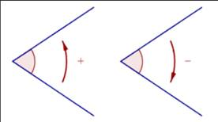�
Primer cuadrante: TODAS las funciones trigonom�tricas son positivas

Segundo cuadrante: S�lo las funciones SENO y COSECANTE son positivas
�
Tercer cuadrante: S�lo las funciones TANGENTE y COTANGENTE son positivas
�
Cuarto cuadrante: S�lo las funciones COSENO y SECANTE son positivas
��
C�LCULO DE FUNCIONES TRIGONOM�TRICAS DE �NGULOS CUALQUIERA
C�rculo trigonom�trico: Es una circunferencia de radio uno, normalmente con su centro en el origen, que se utiliza con el fin de poder estudiar f�cilmente las razones trigonom�tricas y funciones trigonom�tricas, mediante la representaci�n de tri�ngulos rect�ngulos auxiliares.
�

Gr�ficas de las funciones trigonometricas; Las funcionestrigonom�tricas son funciones peri�dicas
1.4 Valores de las funciones trigonom�tricas para �ngulos de 30, 45 y 60 grados y sus m�ltiplos.
ANGULOS NOTABLES

ANGULOS COMPLEMENTARIOS

ANGULOS M�LTIPLOS DE 90�
ANGULOS SUPLEMENTARIOS

1.5 Identidades trigonom�tricas.
Identidad trigonom�trica: Es una proposici�n de igualdad en la cual intervienen funciones trigonom�tricas y que se cumple para todo valor del argumento
IDENTIDADES PITAG�RICAS
�NGULO DOBLE

SUMA Y DIFERENCIA DE �NGULOS
�NGULOS NEGATIVOS

1.6 Teorema de Pit�goras.
��En todo tri�ngulo rect�ngulo el cuadrado de la hipotenusa es igual a la suma de lo cuadrados de los catetos�
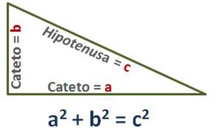
La suma de los �ngulos internos de cualquier tri�ngulo siempre es igual a 180
 �
�
1.7 Ley de senos y ley de cosenos.
Tri�ngulos Oblicu�ngulos: Son aquellos que no tienen ning�n �ngulo recto (90�)
LEY DE SENOS
Necesitamos conocer m�nimo:
� 2 lados y el �ngulo opuesto a cualquiera de ellos
� 2 �ngulos y el lado opuesto a cualquiera de ellos

LEY DE COSENOS
Necesitamos conocer m�nimo:
� Los 3 lados
� 2 lados y el �ngulo comprendido entre ellos

1.8 Ecuaciones trigonom�tricas de primer y segundo grado con una inc�gnita.
Ecuaci�n trigonom�trica: Es una igualdad en la que la inc�gnita est� afectada por una funci�n trigonom�trica. Como estas funciones son peri�dicas, habr� por lo general infinitas soluciones.
Pasos a seguir para resolver ecuaciones trigonom�tricas:
1. Expresar todos los t�rminos de la ecuaci�n con el mismo argumento (�ngulo)
2. Aplicar identidades trigonom�tricas
3. Desarrollar y reducir las expresiones trigonom�tricas
4. Llegar a una sola expresi�n trigonom�trica igualada a un n�mero
5. Aplicar la funci�n trigonom�trica inversa para obtener el valor de la inc�gnita
2. N�meros reales.
2.1 El conjunto de los n�meros naturales: definici�n del conjunto de los n�meros naturales mediante los Postulados de Peano. Definici�n y propiedades: adici�n, multiplicaci�n y orden en los n�meros naturales. Demostraci�n por inducci�n matem�tica.
CONJUNTO DE LOS N�MEROS
N�mero: Es un concepto matem�tico que expresa cantidad. Constituyen un patr�n o referencia para establecer la comparaci�n entre cantidades.
Numeral: Son los s�mbolos que se emplean para representar n�meros
Conjuntos num�ricos: Son las categor�as en las que se clasifican los n�meros, en funci�n de sus diferentes caracter�sticas (propiedades).

Sistema algebraico: Es un conjunto provisto de una o varias operaciones (binarias)
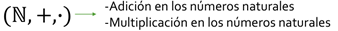
N�meros naturales: Es el conjunto de aquellos n�meros que ocupamos para contar elementos, y se representa a partir del siguiente s�mbolo: ℕ
Conjunto: es una agrupaci�n de elementos los cuales tienen una o m�s caracter�sticas en com�n.
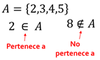
Notaci�n:
� Los conjuntos se denotan con letras may�sculas
� Todos los elementos deben estar separados por comas
� El total de elementos debe estar encerrado entre llaves { }
� Conjuntos por extensi�n: se escriben todos los elementos del conjunto
� Conjuntos por comprensi�n: se especifican las caracter�sticas que cumplen los elementos del conjunto

Cardinalidad: es el n�mero de elementos que pertenecen a un conjunto

Conjunto finito: se conoce el total de los elementos y se pueden enumerar (contar)
Conjunto infinito: no se conoce el total de los elementos (puede ser numerable o no numerable)

Conjunto vac�o: es aquel conjunto que carece de elementos

Conjunto universal: es el conjunto que contine todos los elementos con los cuales se trabaja para una situaci�n espec�fica
Subconjuntos de un conjunto: conjunto de elementos que tienen las mismas caracter�sticas y que est� incluido dentro de otro conjunto m�s amplio.

OPERACIONES ENTRE CONJUNTOS
Uni�n: consiste en reunir en un solo conjunto todos los elementos de los conjuntos que se unen

Intersecci�n: consiste en reunir en un solo conjunto todos los elementos comunes de los conjuntos que se est�n analizando

Diferencia: consiste en reunir en un solo conjunto todos los elementos contenidos en el conjunto de referencia que no se encuentran en el conjunto de operaci�n

Complemento: es el conjunto de todos los elementos que no est�n en el conjunto de referencia y que le faltan para ser igual al conjunto universal

N�MEROS NATURALES
Postulados de Peano
El conjunto ℕ de los n�meros naturales es tal que:
� 1 𝜖 ℕ
� Para cada n ∈ ℕ se tiene que n∗∈ ℕ llamado el siguiente de n
� Para cada n ∈ ℕ se tiene que n∗ ≠ 1
� Si m, n 𝜖 ℕ y m∗ = n∗ entonces m = n
� Todo subconjunto S de ℕ que tenga las propiedades:
o a) 1 ∈ 𝑆
o b) 𝑘 ∈ 𝑆 implica que 𝑘∗ ∈ 𝑆 llamado
Es el mismo conjunto ℕ
OPERACIONES EN LOS N�MEROS NATURALES
Adici�n en los n�meros naturales
Definici�n:
� n + 1 = n∗ para todo n 𝜖 ℕ
� n + m∗ = (n + m) ∗ siempre que n + m
est� definido
Multiplicaci�n en los n�meros naturales
Definici�n:
� n ∙ 1 = n∗ para todo n 𝜖 ℕ
� n ∙ m∗ = (n ∙ m) + n
Propiedades de la adici�n y la multiplicaci�n

ORDEN EN LOS N�MEROS NATURALES
Dados dos naturales n y m, decimos que n es menor que m, lo que representamos mediante n < m, si: ∃ 𝑥 ∈ ℕ tal que n + 𝑥 = m
Dados dos naturales m y n, decimos que m es mayor que n, lo que representamos mediante m > n, si: n < m
Ley de tricotom�a: Si m y n son n�meros naturales cualesquiera, entonces se verifica una y s�lo una de las siguientes proposiciones:
� n < m
� n = m
� m < n
Teoremas:

INDUCCI�N MATEM�TICA
Inducci�n matem�tica: es un razonamiento utilizado en la demostraci�n de proposiciones que dependen de un par�metro que s�lo admite valores naturales.
Pasos:
1. Demostrar que la proposici�n es v�lida para el primer valor admisible (n=1).
2. Suponer que la proposici�n es v�lida para el caso general, es decir, para el valor n=k (hip�tesis de inducci�n).
3. Demostrar a partir de la hip�tesis que la proposici�n es v�lida para el siguiente valor de k, es decir, k+1 (tesis de inducci�n).
2.2 El conjunto de los n�meros enteros. Definici�n y propiedades: igualdad, adici�n, multiplicaci�n y orden en los enteros. Representaci�n de los n�meros enteros en la recta num�rica.
N�MEROS ENTEROS
N�meros enteros: Es el conjunto de aquellos n�meros que se obtienen mediante la diferencia de dos n�meros naturales: ℤ = {𝑥|𝑥 = m − n; m, n ∈ ℕ}, ℕ ⊂ ℤ


OPERACIONES EN LOS N�MEROS ENTEROS
Adici�n en los n�meros enteros
Sea a = m - n, b = p - q dos n�meros enteros, con m, n, p, q ∈ N. El n�mero a + b se define como:
a + b = (m + p) - (n + q)
Sustracci�n en los n�meros enteros
Sea a, b ∈ Z, el n�mero a - b se define como:
a � b = a + (-b)
Multiplicaci�n en los n�meros enteros
Sea a = m - n, b = p - q dos n�meros enteros, con m, n, p, q ∈ N. El n�mero a ∙ b se define como:
a ∙ b = (m � p + n ∙ q) - (n ∙ p + m ∙ q)
Propiedades adicionales de la multiplicaci�n

Propiedades de la adici�n y la multiplicaci�n

ORDEN EN LOS N�MEROS ENTEROS

2.3 El conjunto de los n�meros racionales: definici�n a partir de los n�meros enteros. Definici�n y propiedades: igualdad, adici�n, multiplicaci�n y orden en los racionales. Expresi�n decimal de un n�mero racional. Algoritmo de la divisi�n en los enteros. Densidad de los n�meros racionales y representaci�n de �stos en la recta num�rica.
N�MEROS RACIONALES
N�meros racionales: Es el conjunto de aquellos n�meros que se obtienen mediante el cociente de dos n�meros enteros (fracciones finitas o infinitas): ℚ = {𝑥|𝑥 = a/b;� a, b ∈ ℤ }, ℕ ⊂ ℤ ⊂ ℚ

OPERACIONES EN LOS N�MEROS RACIONALES
Adici�n en los n�meros racionales

Sustracci�n en los n�meros racionales
 �
�
Multiplicaci�n en los n�meros racionales

Divisi�n en los n�meros racionales

Teorema de la densidad de los racionales
Para todo 𝑥, y 𝜖 ℚ, con 𝑥 < y existe un n�mero racional entre 𝑥 y y tal que: 𝑥 < (𝑥+y) / 2 < 𝑥
Propiedades de la adici�n y la multiplicaci�n
2.4 El conjunto de los n�meros reales: existencia de n�meros irracionales (algebraicos y trascendentes). Definici�n del conjunto de los n�meros reales; representaci�n de los n�meros reales en la recta num�rica. Propiedades: adici�n, multiplicaci�n y orden en los reales. Completitud de los reales. Definici�n y propiedades del valor absoluto. Resoluci�n de desigualdades e inecuaciones.
N�MEROS IRRACIONALES
N�meros irracionales: Es el conjunto de aquellos n�meros que no se pueden expresar como el cociente o raz�n de dos n�meros enteros. Son n�meros decimales que poseen infinitas cifras decimales no peri�dicas): ℚ′ = {�, ln 2, 𝜑, e, 𝜋, �} = ℝ − ℚ

N�MEROS REALES
N�meros reales: es el conjunto que contiene tanto a los n�meros racionales como a los irracionales:
�ℝ = ℚ ∪ Ι = ℚ ∪ ℚ′

OPERACIONES EN LOS N�MEROS REALES
Divisi�n en los n�meros reales

Sustracci�n en los n�meros reales
 �
�
Signo de los n�meros reales
Propiedades adicionales de la multiplicaci�n


Propiedades de la adici�n y la multiplicaci�n
ORDEN EN LOS N�MEROS REALES (DESIGUALDADES E INECUACIONES)

Desigualdad: es una expresi�n que indica que una cantidad es mayor o menor que otra.
Inecuaci�n: es una desigualdad en la que hay una o m�s cantidades desconocidas (inc�gnitas) y que s�lo de verifica para determinados valores de las inc�gnitas.
Valor absoluto


3. N�meros complejos.
3.1 Forma bin�mica: definici�n de n�mero complejo, de igualdad y de conjugado. Representaci�n gr�fica. Operaciones y sus propiedades: adici�n, sustracci�n, multiplicaci�n y divisi�n. Propiedades del conjugado.
N�MEROS COMPLEJOS
N�meros complejos: es el conjunto que contiene tanto a los n�meros reales como a los n�meros imaginario:
ℂ = ℝ ∪ Im = { z |z = a + i b; a, b ∈ ℝ; i2 = -1 }, ℝ = ℚ ∪ ℚ�

FORMA BIN�MICA
Unidad imaginaria
Diagrama de Argand o Plano complejo
�
FORMA VECTORIAL O FORMA CARTESIANA
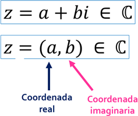
Conjugado de un n�mero:
Sea z = 𝑎 + b𝑖 un n�mero complejo.
El conjugado de z, que
representamos con  ,
se define como:
,
se define como:


OPERACIONES EN LOS N�MEROS COMPLEJOS EN FORMA BIN�MICA
Propiedades de la adici�n y la multiplicaci�n

3.2 Forma polar o trigonom�trica: definici�n de m�dulo, de argumento y de igualdad de n�meros complejos en forma polar. Operaciones en forma polar: multiplicaci�n, divisi�n, potenciaci�n y radicaci�n.
FORMA POLAR O TRIGONOMETRICA

Diagrama de Argand o Plano complejo
OPERACIONES EN LOS N�MEROS COMPLEJOS EN FORMA POLAR O TRIGONOMETRICA

3.3 Forma exponencial o de Euler. Operaciones en forma exponencial: multiplicaci�n, divisi�n, potenciaci�n y radicaci�n.
FORMA EXPONENCIAL

Diagrama de Argand o Plano complejo

OPERACIONES EN LOS N�MEROS COMPLEJOS EN FORMA EXPONENCIAL
3.4 Resoluci�n de ecuaciones con una inc�gnita que involucren n�meros complejos.


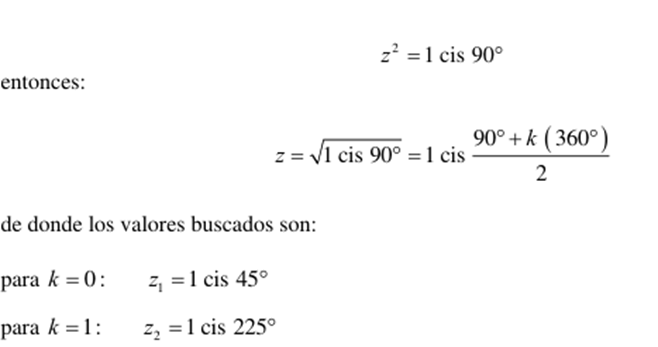

4. Polinomios.
4.1 Definici�n de polinomio. Definici�n y propiedades: adici�n, multiplicaci�n de polinomios y multiplicaci�n de un polinomio por un escalar.
POLINOMIO
T�rmino o monomio

T�rminos semejantes: son aquellos t�rminos o monomios cuya parte literal es la misma y s�lo cambian sus coeficientes.
Binomio: es la suma algebraica de 2 t�rminos o monomios.

Trinomio: es la suma algebraica de 3 t�rminos o monomios.

Polinomio: Es una expresi�n algebraica que constituye la suma o la resta de un n�mero finito de t�rminos o monomios, que presenta la siguiente forma.

Donde los coeficientes son:

Y los t�rminos del polinomio son:
Una forma simplificada de expresar un polinomio es utilizando el operador sumatoria o suma abreviada.

Grado de un polinomio: Corresponde al mayor exponente presente en los t�rminos del polinomio.

OPERACIONES DE POLINOMIOS

Igualdad de polinomios
Adici�n de polinomios

Sustracci�n de polinomios
Multiplicaci�n de polinomios

Propiedades de la adici�n y la multiplicaci�n
4.2 Divisi�n de polinomios: divisibilidad y algoritmo de la divisi�n. Teorema del residuo y del factor. Divisi�n sint�tica.
ALGORITMO DE LA DIVICI�N


TEOREMA DEL RESIDUO

TEOREMA DEL FACTOR
4.3 Ra�ces de un polinomio: definici�n de ra�z, teorema fundamental del �lgebra y n�mero de ra�ces de un polinomio.
RA�CES DE UN POLINOMIO
 �
�
Conceptos equivalentes

TEOREMA FUNDAMENTAL DEL �LGEBRA

RESUMEN
4.4 T�cnicas elementales para buscar ra�ces: posibles ra�ces racionales y regla de los signos de Descartes.
RA�CES RACIONALES

REGLA DE LOS SIGNOS DE DESCARTES
TEOREMA DE LAS COTAS DE LAS RAICES REALES

RAICES IRRACIONALES


RAICES COMPLEJAS

5. Sistemas de ecuaciones.
5.1 Definici�n de ecuaci�n lineal y de su soluci�n. Definici�n de sistema de ecuaciones lineales y de su soluci�n. Clasificaci�n de los sistemas de ecuaciones lineales en cuanto a la existencia y al n�mero de soluciones. Sistemas homog�neos, soluciones triviales y varias soluciones.
ECUACI�N LINEAL


SISTEMAS DE ECUACI�N LINEAL
Sistema de ecuaciones lineales: es un conjunto de al menos 2 ecuaciones lineales que contienen las mismas variables y que comparten la misma soluci�n.
Un sistema de m ecuaciones lineales con n inc�gnitas sobre C es una expresi�n de la forma:
SISTEMAS HOMOG�NEOS
Un sistema
de ecuaciones lineales es homog�neo cuando
todos sus t�rminos independientes son iguales a cero, es decir: 
CLASIFICACI�N DE LOS SISTEMAS DE ECUACIONES LINEALES

REPRESENTACI�N MATRICIAL DE SISTEMAS DE ECUACIONES

5.2 Sistemas equivalentes y transformaciones elementales. Resoluci�n de sistemas de ecuaciones lineales por el m�todo de Gauss.
SISTEMAS EQUIVALENTES
Cuando dos sistemas de ecuaciones lineales tienen las mismas soluciones se dice que son equivalentes.
Uno de los m�todos que se emplean para obtener las soluciones de un sistema de ecuaciones lineales se basa en el empleo de ciertas transformaciones, llamadas transformaciones elementales, que no alteran las soluciones del sistema; es decir, transformaciones que al aplicarse a un sistema dan como resultado un sistema equivalente.
Las transformaciones elementales pueden ser de tres tipos y consisten en:
i. Intercambiar dos ecuaciones
ii. Multiplicar una ecuaci�n por un n�mero diferente de cero
iii. Multiplicar una ecuaci�n por un n�mero y sumarla a otra ecuaci�n, reemplazando esta �ltima por el resultado obtenido
M�TODO DE GAUSS
El procedimiento m�s c�modo para obtener las soluciones de un sistema de ecuaciones lineales es, tal vez, el conocido como m�todo de Gauss.
Este m�todo consiste en la eliminaci�n consecutiva de las inc�gnitas con el prop�sito de llegar a un sistema que tenga forma escalonada.

Para llevar a cabo dicha eliminaci�n sin alterar las soluciones del sistema, se recurre a las transformaciones elementales que hemos descrito
5.3 Aplicaci�n de las ecuaciones lineales para la soluci�n de problemas de modelos f�sicos y matem�ticos.


6. Matrices y determinantes.
6.1 Definici�n de matriz y de igualdad de matrices. Operaciones con matrices y sus propiedades: adici�n, sustracci�n, multiplicaci�n por un escalar y multiplicaci�n. Matriz identidad.
MATRIZ
Matriz: Es un conjunto de elementos (n�meros, objetos, operadores, etc.) dispuestos en un arreglo bidimensional, de renglones y columnas, encerrados entre par�ntesis o corchetes, que obedecen ciertas reglas algebraicas

TIPO DE MATRICES
Vector (matriz) rengl�n o vector (matriz) columna: Es una matriz formada por un solo rengl�n o una sola columna, respectivamente.
Matriz nula: Es una matriz donde todos sus elementos son ceros.

Matriz rectangular: Es aquella matriz cuyo n�mero de renglones es diferente al n�mero de columnas, es decir: 𝒎 ≠ 𝒎
Matriz cuadrada: Es aquella matriz cuyo n�mero de renglones es igual al n�mero de columnas: 𝒎 = n

OPERACIONES ENTRE MATRICES
Sean dos matrices:
Igualdad de matrices: Dos matrices son iguales si son del mismo orden y si los elementos de la misma posici�n son iguales en ambas, es decir:
Suma de matrices: Esta operaci�n �nicamente se puede realizar entre matrices del mismo orden. Para realizarla se suman elemento por elemento en sus posiciones correspondientes:

Diferencia de matrices: Esta operaci�n �nicamente se puede realizar entre matrices del mismo orden. Para realizarla se cambia el signo de cada uno de los elementos de la segunda matriz y posteriormente se realiza la suma de elemento por elemento en sus posiciones correspondientes.

Propiedades de la adici�n
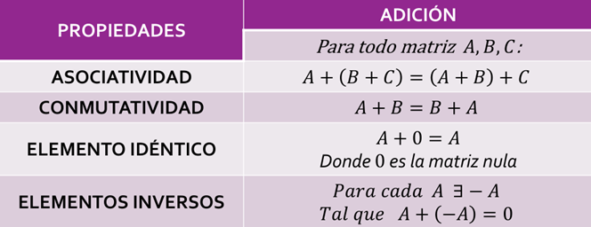
Multiplicaci�n de matrices por un escalar: Esta operaci�n se realiza multiplicando el escalar por cada uno de los elementos de la matriz, es decir:
Propiedades por un escalar

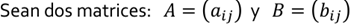
Producto de matrices: Esta operaci�n �nicamente se puede realizar entre matrices donde el n�mero de columnas de la primera matriz es igual al n�mero de renglones de la segunda:

El elemento que se encuentra en la posici�n correspondiente al rengl�n i y la columna j de la matriz producto AB, se obtiene sumando los productos de los elementos del rengl�n i de la matriz A por sus elementos correspondientes en la columna j de la matriz B:

Matriz identidad: es una matriz cuadrada de orden n tal que todos los elementos de su diagonal principal son uno y los elementos fuera de ella son cero. Ejemplos

6.2 Definici�n y propiedades de la inversa de una matriz. C�lculo de la inversa por transformaciones elementales.
TIPOS Y PROPIEDADES
Matriz inversa: la matriz cuadrada de orden n 𝐴 tiene una matriz inversa 𝐴−1 la cual cumple que:

Una de las condiciones necesarias para que una matriz tenga inversa es que debe ser una matriz cuadrada. Adem�s, la inversa deber� ser tambi�n cuadrada y del mismo orden que A
Matriz no singular: es aquella matriz 𝐴 que S� tiene una matriz inversa 𝐴−1
Matriz singular: es aquella matriz 𝐴 que NO tiene una matriz inversa 𝐴−1

6.3 Ecuaciones matriciales y su resoluci�n. Representaci�n y resoluci�n matricial de los sistemas de ecuaciones lineales.

6.4 Matrices triangulares, diagonales y sus propiedades. Definici�n de traza de una matriz y sus propiedades.
TIPOS Y PROPIEDADES
 Traza de una matriz cuadrada: es la suma de los elementos de su diagonal
principal:
Traza de una matriz cuadrada: es la suma de los elementos de su diagonal
principal:
Matriz diagonal: es una matriz cuadrada en donde los elementos de su diagonal principal son diferentes de cero y los dem�s son ceros. Ejemplos:

Matriz triangular superior: es una matriz cuadrada en la cual todos los elementos por debajo de la diagonal principal son cero. Ejemplos:

Matriz triangular inferior: es una matriz cuadrada en la cual todos los elementos por arriba de la diagonal principal son cero. Ejemplos:

6.5 Transposici�n de una matriz y sus propiedades. Matrices sim�tricas, antisim�tricas y ortogonales. Conjugaci�n de una matriz y sus propiedades. Matrices hermitianas, antihermitianas y unitarias. Potencia de una matriz y sus propiedades.
TIPOS Y PROPIEDADES
Matriz transpuesta: la matriz transpuesta de A es la matriz en donde los renglones de A ahora son las columnas de la transpuesta, es decir:

Matriz conjugada: Sea A una matriz de n�meros complejos, su matriz conjugada es aquella matriz en donde se reemplaza cada elemento por su respectivo complejo conjugado: Ā

Matriz sim�trica: es aquella matriz cuadrada que es igual a su propia matriz transpuesta: 𝐴 = 𝐴𝑇
Matriz antisim�trica: es aquella matriz cuadrada que es igual al negativo de su propia transpuesta: 𝐴 = −𝐴𝑇
Matriz ortogonal: es aquella matriz cuadrada cuya matriz transpuesta es igual a su inversa: 𝐴𝑇 = 𝐴−1
El determinante de una matriz ortogonal es igual a 1
Matriz unitaria: es aquella matriz cuadrada cuya matriz conjugada transpuesta es igual a su inversa: 𝐴∗ = 𝐴−1
El determinante de una matriz unitaria es igual a 1
Matriz hermitiana: es aquella matriz cuadrada de n�meros complejos que es igual a su propia transpuesta conjugada: 𝐴 = (Ā)𝑇 = 𝐴∗
Matriz antihermitiana: es aquella matriz cuadrada de n�meros complejos que es igual al negativo de su transpuesta conjugada: 𝐴 = −(Ā)𝑇 = -𝐴∗
6.6 Definici�n de determinante de una matriz y sus propiedades. C�lculo de determinantes: regla de Sarrus, desarrollo por cofactores y m�todo de condensaci�n.
Determinante: es un n�mero asociado a una matriz cuadrada que se puede obtener a partir de diferentes m�todos: det (𝐴) = [𝐴]
Matriz no singular: es aquella matriz 𝐴 que S� tiene una matriz inversa 𝐴−1 (det (𝐴) ≠ 0)
Matriz singular: es aquella matriz 𝐴 que NO tiene una matriz inversa 𝐴−1 (det (𝐴) = 0)
PROPIEDADES DE LOS DETERMINANTES:
1) Si todos los elementos de una fila o columna de un determinante son nulos, el valor del determinante es nulo.
2) Si un determinante tiene dos filas o columnas proporcionales el determinante es cero.
3) 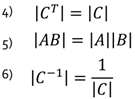Si todos los elementos de una fila o columna se multiplican por un escalar, el valor del determinante queda multiplicado por dicho escalar
REGLA DE SARRUS
el determinante se obtiene de restar la multiplicaci�n de los elementos de la diagonal principal de la matriz y la multiplicaci�n de los elementos de la diagonal secundaria de la misma matriz.
El inconveniente es que la regla de Sarrus �nicamente se puede utilizar para determinantes de matrices de 2x2 y 3x3.

MENORES Y COFACTORES
Menor: el menor o menor complementario de una matriz A es el determinante de alguna submatriz, obtenido de A mediante la eliminaci�n de una o m�s de sus filas o columnas [𝑀𝑖𝑖].
Cofactor: el cofactor del elemento de la matriz [𝑎𝑖𝑖] se denota como [C𝑖𝑖] y est� dado por:
6.7 C�lculo de la inversa por medio de la adjunta. Regla de Cramer para la resoluci�n de sistemas de ecuaciones lineales de orden superior a tres.
MATRIZ INVERSA Y MATRIZ ADJUNTA
Matriz inversa: la matriz cuadrada de orden n 𝐴 tiene una matriz inversa 𝐴−1 la cual cumple que:
Una de las condiciones necesarias para que una matriz tenga inversa es que debe ser una matriz cuadrada. Adem�s, la inversa deber� ser tambi�n cuadrada y del mismo orden que A.
Matriz no singular: es aquella matriz 𝐴 que S� tiene una matriz inversa 𝐴−1
Matriz singular: es aquella matriz 𝐴 que NO tiene una matriz inversa 𝐴−1
C�LCULO DE LA INVERSA POR DETERMINANTES

Donde Adj(A) se le conoce como la matriz adjunta de A.
Matriz adjunta: la matriz adjunta Adj(A) de la matriz cuadrada de orden n 𝐴 es la matriz de cofactores de su transpuesta.
Esto significa que para encontrar la matriz adjunta primero se transpone la matriz original y despu�s, con base en ella, se calcula la matriz de cofactores.
RESOLUCI�N DE SISTEMAS DE ECUACIONES LINEALES
REGLA DE CRAMER
Se dice que un sistema con n ecuaciones lineales y n inc�gnitas es de Cramer cuando el determinante de la matriz de los coeficientes es distinto a cero. As� todo sistema de Cramer es consistente determinado, es decir, tiene soluci�n �nica.

Con la regla de Cramer se tienen los siguientes casos:


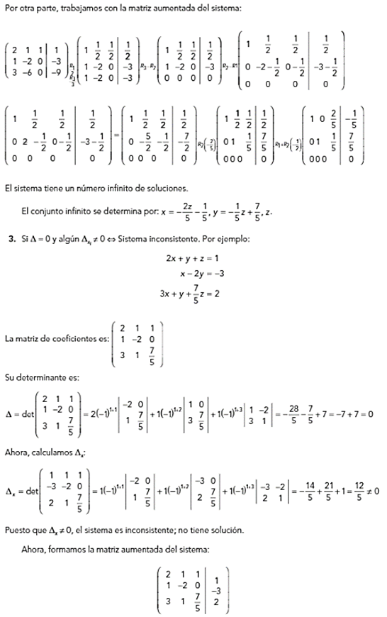

7. Bibliograf�a
Arzamendi, P. Sergio Roberto. Cuaderno de ejercicios de �lgebra.
Le�n C�rdenas, Javier. �lgebra.
Lehmann, Charles H. �lgebra.
Solar G., Eduardo, y Speziale de G., Leda. �lgebra I.
Vel�zquez T., Juan. Fasc�culo de inducci�n matem�tica.
C�LCULO Y GEOMETR�A ANAL�TICA (1121)
Objetivo(s) del curso:
El alumno analizar� los conceptos fundamentales del c�lculo diferencial de funciones reales de variable real y del �lgebra vectorial, y los aplicar� en la resoluci�n de problemas f�sicos y geom�tricos.
1. Secciones c�nicas.
1.1 Definici�n de secci�n c�nica. Clasificaci�n de las c�nicas.
C�NICAS
En la Geometr�a Anal�tica las par�bolas, elipses e hip�rbolas, se llaman secciones c�nicas, o c�nicas, porque resultan de cortar un cono con un plano, como se muestra:

PAR�BOLAS
 Una par�bola es el conjunto de puntos en el plano que
equidistan de un punto fijo F (llamado foco) y una recta fija (llamada
directriz), el punto a la mitad entre el foco y la directriz est� sobre la
par�bola y se llama v�rtice. La recta perpendicular a la directriz que pasa por
el foco se llama eje de la par�bola.
Una par�bola es el conjunto de puntos en el plano que
equidistan de un punto fijo F (llamado foco) y una recta fija (llamada
directriz), el punto a la mitad entre el foco y la directriz est� sobre la
par�bola y se llama v�rtice. La recta perpendicular a la directriz que pasa por
el foco se llama eje de la par�bola.
En el siglo XVI Galileo demostr� que la trayectoria de un proyectil disparado al aire con un �ngulo respecto al suelo es una par�bola. Desde entonces, las formas parab�licas se han usado en el dise�o de los faros de autom�viles, telescopios reflectores y puentes suspendidos.
ECUACI�N ORDINARIA DE LA PAR�BOLA
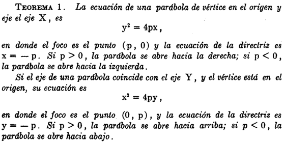


ECUACI�N DE LA TANGENTE A UNA PAR�BOLA
ELIPSES
Una elipse es el conjunto de puntos en un plano cuya suma de sus distancias a dos puntos fijos F1 y F2 es una constante. Estos dos puntos fijos se llaman focos (plural del lugar geom�trico foco). Una de las leyes de Kepler es que las �rbitas de los planetas en el sistema solar son elipses con el Sol en un foco.

Los puntos correspondientes (a, 0) y (-a, 0) se llaman v�rtices de la elipse y el segmento de recta que une los v�rtices se llama eje mayor. Para hallar las intersecciones con el eje y hacemos x = 0 y obtenemos y2 = b2, de modo que y =�b. El segmento de recta que une (0, b) y (0, -b) es el eje menor.
ECUACI�N ORDINARIA DE LA ELIPSE


HIP�RBOLAS
Una hip�rbola es el conjunto de todos los puntos en un plano cuya diferencia de sus distancias a dos puntos fijos F1 y F2 (los focos) es una constante. Su ecuaci�n se obtiene restando las distancias de un punto gen�rico (x, y) a los focos dados e igualando dicha diferencia a la constante.

ECUACI�N ORDINARIA DE LA HIP�RBOLA
Observe que la definici�n de una hip�rbola es similar a la de una elipse; el �nico cambio es que la suma de las distancias se convirti� en una diferencia de distancias. De hecho, la deducci�n de la ecuaci�n de una hip�rbola es tambi�n similar a la que se dio antes para una elipse, entonces la ecuaci�n de la hip�rbola es:
donde c2 = a2 + b2. Observe que las intersecciones con el eje x son de nuevo �a y los puntos (a, 0) y (-a, 0) son los v�rtices de la hip�rbola. Pero si hacemos x = 0 en la ecuaci�n 6 obtenemos y2 = -b2, lo cual es imposible, as� que no hay intersecci�n con el eje y. La hip�rbola es sim�trica respecto a ambos ejes.
Para dibujar una hip�rbola, es muy �til dibujar primero sus as�ntotas, que son las rectas discontinuas y = (b/a)x e y = -(b/a)x

 ��
��


HIP�RBOLAS EQUIL�TERA O RECTANGULAR Y CONJUGADAS

1.2 Ecuaci�n general de las c�nicas.
RESUMEN RELATIVO A LAS SECCIONES C�NICAS.
La par�bola, elipse e hip�rbola se llaman secciones c�nicas o, simplemente c�nicas. La ecuaci�n:
representa un lugar geom�trico real, este debe ser una secci�n c�nica con uno de sus ejes paralelo (o coincidente) con uno de los ejes coordenados, o bien uno de los casos excepcionales de un punto, dos rectas coincidentes, dos rectas paralelas o dos rectas que se cortan. Esto casos excepcionales se llaman tambi�n formas l�mite de las c�nicas o c�nicas degeneradas.
La elipse y la hip�rbola tienen cada una un centro, se llaman c�nicas centrales. La par�bola, no teniendo centro, se llama c�nica no central. La circunferencia puede considerarse como un caso especial de la elipse.

ECUACI�N GENERAL DE SEGUNDO GRADO
Se estudia la ecuaci�n general de segundo grado.

y con ayuda de la expresi�n B2 = -4AC, conocida como discriminante, se establece un criterio para determinar la clase de c�nica que representa una ecuaci�n de tal tipo.
 .
.
1.3 Identificaci�n de los tipos de c�nicas a partir de los coeficientes de la ecuaci�n general y del indicador I=B2-4AC.
DISCRIMINANTE DE LA ECUACI�N GENERAL


1.4 Ecuaci�n de las c�nicas en forma ordinaria.
ECUACI�N DE LA CIRCUNFERENCIA� - FORMA ORDINARIA
La circunferencia es el lugar geom�trico de un punto que se mueve en un plano de tal manera que se conserva siempre a una distancia constante de un punto fijo de ese plano.


ECUACI�N DE LA CIRCUNFERENCIA� - FORMA GENERAL
Si desarrollamos la ecuaci6n ordinaria.

Ordenando los t�rminos resulta:


DETERMINACI�N DE UNA CIRCUNFERENCIA SUJETA A TRES CONDICIONES DADAS

FAMILIAS DE CIRCUNFERENCIAS

EJE RADICAL


1.5 Rotaci�n de ejes.
TRASLACI�N DE LOS EJES COORDENADOS
 �
�
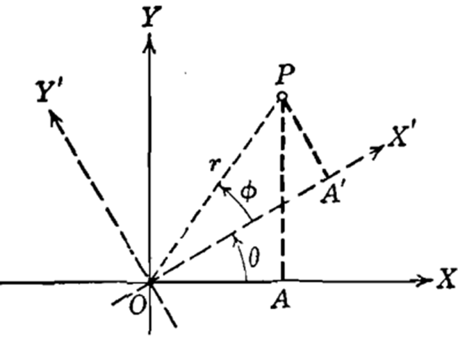
ROTACI�N DE LOS EJES COORDENADO

2. Funciones.
2.1 Definici�n de funci�n real de variable real y su representaci�n gr�fica. Definiciones de dominio, de codominio y de recorrido. Notaci�n funcional. Funciones: constante, identidad, valor absoluto.
FUNCI�N REAL DE VARIABLE REAL
En Calculo, a una funci�n cuyo dominio sea un subconjunto de los n�meros reales, la llamaremos funci�n de variable real. A una funci�n cuyo contradominio sea un subconjunto de los reales, es decir, una funci�n cuyos valores sean n�meros reales, la llamaremos funci�n real.
As� que con el t�rmino funci�n real de variable real nos referiremos a una funci�n cuyo dominio es un subconjunto de los n�meros reales, que toma valores reales.
DISTINGUIR F(X) DE F
Vale la pena insistir en que el s�mbolo f(x) representa el valor de la funci�n f en el punto x. En ocasiones, el s�mbolo f(x) puede representar una f�rmula mediante la cual se definen los valores de la funci�n f para todos los puntos x de su dominio o para los puntos de alg�n subconjunto de su dominio, en este caso pudi�ndose tener diferentes f�rmulas para diferentes subconjuntos, pero para puntos particulares x no olvidemos que f(x) representa un n�mero.
El s�mbolo f(x) fue introducido por el matem�tico suizo Leonhard Euler (1707-1783), quiz� el m�s prol�fico de todos los tiempos. Es seguro que Euler no imagin� la enorme utilidad que tendr�a su notaci�n. Adem�s de que, con esta notaci�n, no ten�a la intenci�n de distinguir entre lo que es la funci�n f y su valor f(x) en un punto arbitrario x, pues en su �poca las funciones no se conceb�an en la forma en la que lo hacemos ahora. En aquella �poca, las funciones eran las f�rmulas mismas, las cuales, en la actualidad, s�lo son un recurso para definirlas, ni siquiera se permit�an tener funciones definidas por varias f�rmulas, mucho menos se pod�an aceptar enunciados cien por ciento ret�ricos para definir las funciones, esto es posible hoy en d�a por el car�cter general que ahora le concedemos al concepto de funci�n.
Definiremos nuestras funciones mediante enunciados como el siguiente:
�Sea f la funci�n dada por f(x) = . . .�
o mejor a�n, simplificaremos este enunciado como
�Sea la funci�n f(x) = . . .�
REPRESENTACI�N GR�FICA
La gr�fica de una funci�n f : X → Y es el conjunto de parejas ordenadas
{(x, f(x)) | x ∈ X} ⊂ X � Y
La gr�fica de una funci�n es un conjunto; es un subconjunto de un producto cartesiano. La gr�fica est� definida para todas las funciones en general, sin importar su naturaleza; en el caso particular de funciones de variable real con valores reales, es posible representar las parejas ordenadas (x, f(x)) mediante puntos en un plano, tomando como referencia un sistema de ejes coordenados. Entonces, para funciones reales de variable real, la gr�fica admite una representaci�n como conjunto de puntos del plano. En sentido estricto, la gr�fica es un conjunto de parejas ordenadas de n�meros reales, pero en este caso se identifica con un objeto geom�trico, al cual podemos llamar gr�fica geom�trica de la funci�n. Dado que la gr�fica geom�trica de una funci�n es un excelente recurso para analizar, entender y explicar propiedades de la funci�n, abusaremos del lenguaje y usualmente nos referiremos a ella s�lo como la gr�fica de la funci�n.
As� pues, la gr�fica de una funci�n tambi�n ser�, entonces, un conjunto de puntos del plano; a dicho conjunto lo llamamos curva, independientemente del aspecto que tenga. Por ejemplo, hay curvas formadas por segmentos de rectas, en cuyo caso las llamamos curvas poligonales. Tambi�n hay curvas formadas por l�neas curvil�neas y segmentos de rectas o incluso por conjuntos de puntos m�s complicados.
EJEMPLOS

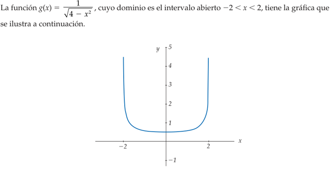

La gr�fica como conjunto de puntos del plano es un objeto geom�trico ideal; en ocasiones, no es posible dibujar dichos puntos o quiz� no podemos ni siquiera imaginarlos. Por esta raz�n, el c�lculo diferencial proporciona herramientas poderosas que nos ayuda a entender c�mo es el aspecto de la gr�fica geom�trica de una funci�n dada. Estas herramientas son recursos que nos permiten hacer estudios cualitativos de las gr�ficas como objetos geom�tricos. En principio, es imposible tener la gr�fica geom�trica de una funci�n, debido a que, como se dijo antes, es un objeto ideal, pero en ocasiones podemos tener buenas aproximaciones geom�tricas de estos objetos matem�ticos.
DOMINIO
Una funci�n f es una regla que asigna a cada elemento x de un conjunto D exactamente un elemento, llamado f (x), de un conjunto E.
Usualmente consideramos funciones para los cuales los conjuntos D y E son conjuntos de n�meros reales. Al conjunto D se le denomina dominio de la funci�n. El n�mero f (x) es el valor de f en x y se lee �f de x�. El rango de f es el conjunto de todos los valores posibles de f (x) conforme x var�a a trav�s de todo el dominio. Un s�mbolo que representa un n�mero arbitrario en el dominio de una funci�n f se llama variable independiente. Un s�mbolo que representa un n�mero en el rango de f se conoce como variable dependiente.

 Es �til pensar en una funci�n como una m�quina. Si x est�
en el dominio de la funci�n f, cuando x entra en la m�quina, que se acepta como
una entrada, la m�quina produce una salida f (x) de acuerdo con la regla de la
funci�n. As�, podemos pensar el dominio como el conjunto de todas las posibles
entradas, y en el rango como el conjunto de todas las posibles salidas.
Es �til pensar en una funci�n como una m�quina. Si x est�
en el dominio de la funci�n f, cuando x entra en la m�quina, que se acepta como
una entrada, la m�quina produce una salida f (x) de acuerdo con la regla de la
funci�n. As�, podemos pensar el dominio como el conjunto de todas las posibles
entradas, y en el rango como el conjunto de todas las posibles salidas.
Una forma de imaginar una funci�n es con un diagrama de flechas. Cada flecha conecta un elemento de D con un elemento de E. La flecha indica que f (x) est� asociada con x, f (a) est� asociada con a, y as� sucesivamente. El m�todo m�s com�n para la visualizaci�n de una funci�n es con su gr�fica. Si f es una funci�n con dominio D, entonces su gr�fica es el conjunto de pares ordenados.
{(x, f(x)) | x ∈ D}
NOTACI�N FUNCIONAL
Una sola letra como f (o g o F) se utiliza para nombrar una funci�n. Entonces f(x), que se lee �f de x� o �f en x�, denota el valor que f asigna a x.

LAS FUNCIONES: CONSTANTE, IDENTIDAD Y VALOR ABSOLUTO
Una funci�n de la forma f(x) = k, donde k es una constante (n�mero real), se denomina funci�n constante. Su gr�fica es una recta horizontal.

Es decir, una funci�n es constante si toma el mismo valor para todos los puntos de su dominio, independientemente de cu�l sea �ste. As� pues, una funci�n f con dominio A ⊂ ℝ sea constante, significa que existe un n�mero real c, tal que f (x) = c para todo x ∈ A.
En particular, un enunciado como �sea la funci�n constante f (x) = c� lleva impl�cita la condici�n de que el dominio consiste en todos los reales. Por ejemplo, la funci�n f (x) = 4, es una funci�n constante, cuyo dominio son todos los reales. Esta funci�n toma el valor 4 en cada real x.
La funci�n f(x) = x se denomina funci�n identidad. Su gr�fica es una recta que pasa por el origen con pendiente 1. Con base en estas funciones sencillas, podemos construir muchas funciones importantes.
Cualquier funci�n que pueda obtenerse a partir de las funciones constantes y la funci�n identidad, mediante el uso de las operaciones de suma, diferencia y multiplicaci�n, se denomina funci�n polinomial.
Entre las funciones con m�s frecuencia que se utilizan como ejemplos, hay dos que son muy especiales: la funci�n valor absoluto, y la funci�n m�ximo entero, Las cuales est�n definidas como:
Funci�n valor absoluto
Sea la funci�n ABS: ℝ → ℝ, definida como

Esta funci�n recibe el nombre de funci�n valor absoluto, y su valor en todo real x, tambi�n ser� denotado por |x|, es decir:
Como sabemos, la ra�z cuadrada √ s�lo se aplica a n�meros positivos o al cero. La ra�z cuadrada de cero es cero, pero es una convenci�n en matem�ticas que el s�mbolo de la ra�z cuadrada √, cuando se aplica a un n�mero positivo, denota un real positivo. Recordemos que todo n�mero positivo tiene dos ra�ces cuadradas, una positiva y una negativa, pero el s�mbolo √a se reserva para representar s�lo la ra�z positiva.
Dado el significado del s�mbolo √a , tenemos que, en general, no es v�lido escribir √x2 = x.
Esta igualdad s�lo es v�lida cuando x es positiva o cero. Si x es negativa, tenemos √x2 = - x > 0.
De lo anterior podemos escribir:

con lo que tenemos otra manera de representar la funci�n valor absoluto.
funci�n m�ximo entero
║x║= el mayor entero que es menor o igual a x
As�, ∣ −3.1∣ =∣ 3.1∣ = 3.1, mientras que ⌊ −3.1⌋ = −4. La funci�n valor absoluto es par, ya que ∣ −x∣ =∣ x∣. La funci�n m�ximo entero no es par ni impar, como lo puede ver con base en su gr�fica.
Con frecuencia recurrimos a las siguientes caracter�sticas especiales de estas gr�ficas. La gr�fica de ∣ x∣� tiene un pico en el origen, mientras que la gr�fica de ║x║ da un salto en cada entero.

2.2 Funciones inyectivas, suprayectivas y biyectivas.
Las funciones se clasifican en inyectivas, suprayectivas y biyectivas dependiendo de c�mo relacionan los elementos del dominio (conjunto de entrada) con los del contradominio (conjunto de salida).
FUNCIONES INYECTIVAS (BIUN�VOCA)
Consideremos las funciones f : ℝ → ℝ y g: ℝ → ℝ, definidas como
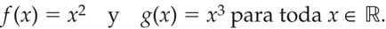
Las cuales poseen muchas diferencias cualitativas muy importantes entre ellas, la primera es que, para la funci�n f, tiene pares de puntos d�nde esta toma el mismo valor, por ejemplo f(-1) = 1 y f(1) = 1. En la cual incluso de hecho posee una gran infinidad de pares de puntos en donde f toma el mismo valor f(-a) = f(a) = a2. Por otro lado, en el caso de la funci�n g esto no ocurre, es decir, que siempre que se tomen dos puntos diferentes de su dominio ℝ, digamos a y b, los valores f(a) y f(b) ser�n diferentes.
Una funci�n con esta caracter�stica se dice que es inyectiva. La funci�n g es inyectiva, la funci�n f no.
Definici�n formal:

Una forma de saber si una funci�n es inyectiva es visualmente en una gr�fica, ninguna l�nea horizontal corta la funci�n m�s de una vez.
FUNCIONES SUPRAYECTIVAS
Por otra parte, ahora observemos que las dos funciones, f y g, tienen como dominio y contradominio el conjunto ℝ; la funci�n f s�lo da valores no negativos, es decir, que hay elementos del contradominio que no son valores de la funci�n f; por ejemplo, -1 no es un real que pueda ser resultado de la funci�n f, es decir, no es un valor de f. Por su parte, la funci�n g toma como valor todos los elementos de su contradominio.
Una funci�n como g se dice que es suprayectiva, por no mientras que la funci�n f no es suprayectiva.
Definici�n formal:
Dada una funci�n f : A→B

FUNCIONES BIYECTIVAS
Sea f : X → Y una funci�n arbitraria.
1. Se dice que f es inyectiva o uno a uno, si puntos diferentes del dominio tienen im�genes diferentes; es decir, si siempre que se tenga x1, x2 ∈ X con x1 ≠ x2 se tiene f(x1) ≠ f(x2). Una manera equivalente de enunciar esta condici�n es: si x1, x2 ∈ X son tales que f(x1) = f(x2), entonces necesariamente x1= x2.
2. Se dice que f es suprayectiva o sobre, si cada elemento de su contradominio es imagen de al menos un elemento de su dominio. Es decir, si para cada y ∈ Y existe al menos un x ∈ X, tal que y = f(x).
3. Se dice que f es biyectiva, si es inyectiva y suprayectiva al mismo tiempo.

2.3 Igualdad de funciones. Operaciones con funciones. Funci�n composici�n. Funci�n inversa.
IGUALDAD DE FUNCIONES
Dada una funci�n f : A→B
Para una funci�n donde A es el primer conjunto (dominio), B el segundo conjunto (codominio) y f la regla de correspondencia, se denota por:
f : A→B
y se lee f es una funci�n de A en B o bien f es una funci�n que mapea A en B.
Se dice que 2 funciones f y g son iguales si tienen la misma regla de correspondencia y est�n definidas en el mismo dominio con mapeo en el mismo contradominio.
f : A→B
g : A→B
f = g
OPERACIONES CON FUNCIONES
Al igual que dos n�meros a y b pueden sumarse para producir un nuevo n�mero a + b, tambi�n dos funciones f y g pueden sumarse para producir una nueva funci�n f + g.
Sumas, diferencias, productos, cocientes y potencias
Considere las funciones f y g como:

y suponiendo que f y g tienen sus dominios naturales entonces:

Hemos excluido al 0 del dominio de f/g para evitar la divisi�n entre cero.
Tambi�n podemos elevar una funci�n a una potencia. Con fn representamos la funci�n que a cada x asigna el valor [f(x)]n. As�
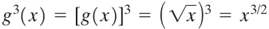
 Existe
una excepci�n en la convenci�n anterior sobre exponentes; a saber, cuando n =
-1. Reservamos el s�mbolo f-1 para
la funci�n inversa que se estudiar� despu�s.
Existe
una excepci�n en la convenci�n anterior sobre exponentes; a saber, cuando n =
-1. Reservamos el s�mbolo f-1 para
la funci�n inversa que se estudiar� despu�s.
Por lo tanto, f-1 no significa 1/f.
El dominio de f + g, f - g, fg, f/g es la intersecci�n (parte com�n) de los dominios de f y g (sin los n�meros para los que g(x) = 0 en el cociente).
FUNCI�N COMPOSICI�N
La composici�n de funciones es una operaci�n que, en general, se aplica a pares de funciones, sin importar su naturaleza, siempre y cuando las funciones cumplan con las condiciones apropiadas. Si f y g son dos funciones arbitrarias, para definir su composici�n g ○ f, vamos a requerir que los valores f(x) de la funci�n f sean elementos del dominio de g.
La composici�n de funciones es una operaci�n muy importante en matem�ticas, pues hace crecer nuestros recursos para construir funciones, pero debe cuidarse que las funciones cumplan las condiciones que permita componerlas.
Definici�n
Sean X, Y y Z tres conjuntos y sean f : X → Y y g : Y → Z dos funciones. La composici�n de f y g es la funci�n g ○ f :X → Z definida por (g ○ f) (x) = g (f(x)).
A g ○ f tambi�n la llamaremos la funci�n compuesta por f y g. Observe que el hecho de que la funci�n compuesta g ○ f est� definida, no significa que tambi�n est� definida la funci�n f ○ g, para esta �ltima se requiere que los valores g(x) de g sean elementos del dominio de f. Para que ambas funciones compuestas g ○ f y f ○ g est�n definidas, se requiere Z = X, es decir, la funciones f y g son de la forma f : X → Y y g : Y → X.
Al principio del tema, fue bueno pensar en una funci�n como una m�quina. Que recibe x como entrada y produce f(x) como salida. Ahora pensamos en dos m�quinas que se ponen una tras otra para producir una m�quina m�s compleja; decimos que hemos compuesto la maquina g con la maquina f.
El dominio de f ○ g es el conjunto de todas las x en el dominio de g tales que g (x) est� en el dominio de f. En otras palabras, (f ○ g) (x) est� definida siempre que g (x) y f (g(x)) est�n definidas.

FUNCI�N INVERSA
Uno de los conceptos y recursos m�s poderosos para el estudio de las funciones es el de funci�n Inversa.
2.4 Clasificaci�n de funciones seg�n su expresi�n: expl�citas, impl�citas, param�tricas y dadas por m�s de una regla de correspondencia.
FUNCIONES EXPL�CITAS
FUNCIONES IMPL�CITAS
FUNCIONES PARAM�TRICAS
FUNCIONES CON M�S DE UNA REGLA DE CORRESPONDENCIA
2.5 Funciones algebraicas: polinomiales, racionales e irracionales. Funciones pares e impares. Funciones trigonom�tricas directas e inversas y su representaci�n gr�fica.
FUNCIONES ALGEBRAICAS
FUNCIONES POLINOMIALES
Las funciones polinomiales son aqu�llas definidas por expresiones de la forma.

donde a0, a1, � � �, 0n son n�meros reales y n es un entero no negativo. Si an ≠ 0, n es el grado de la funci�n polinomial.
Esta familia de funciones incluye las funciones constantes y las funciones lineales (en particular incluye la funci�n identidad).
En particular, f(x) = ax + b es una funci�n polinomial de primer grado, o funci�n lineal, y f(x) = ax2 + bx + c es una funci�n polinomial de segundo grado, o funci�n cuadr�tica.
Una funci�n es lineal si es de la forma f(x) = ax + b, donde a y b son n�meros reales. Por ejemplo, la funci�n f (x) = -x + 2, es una funci�n lineal, en este caso a = -1 y b = 2.

En general, la gr�fica de una funci�n lineal f(x) = ax + b, es una l�nea recta, con pendiente a y ordenada en el origen b. En cambio, la gr�fica de la funci�n identidad f(x) = x es una recta de pendiente 1, que pasa por el origen.
Un tipo de funci�n polinomial m�s compleja que las constantes y las lineales lo constituyen las funciones cuadr�ticas. Estas funciones tienen la forma f(x) = ax2 + bx + c, donde a, b y c son n�meros reales con a ≠ 0. Esta �ltima condici�n es indispensable para que la funci�n pueda llamarse cuadr�tica, en caso contrario ser� una funci�n lineal. Por ejemplo, f (x) = x2 es una funci�n cuadr�tica.

El v�rtice de la par�bola es el punto (0, 0) y el eje de la par�bola es el de las ordenadas. La gr�fica de toda funci�n cuadr�tica f(x) = ax2 + bx + c es una par�bola, para determinar el v�rtice y el eje de esta par�bola podemos escribir la funci�n en la forma f(x) = a(x+ α)2 + β. En este caso, el v�rtice de la par�bola es el punto (α, β) y el eje es la recta vertical es x = a.
Para escribir la funci�n f(x) = ax2 + bx + c en la forma f(x) = a(x+ α)2 + β podemos recurrir a la conocida t�cnica de completar cuadrados, como se muestra a continuaci�n.

Otros casos de funciones polinomiales son las funciones c�bicas.

donde a3 = 0, y las funciones cu�rticas
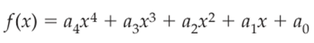

FUNCIONES RACIONALES E IRRACIONALES
FUNCIONES PARES E IMPARES
FUNCIONES TRIGONOM�TRICAS DIRECTAS E INVERSAS
2.6 La funci�n logaritmo natural, sus propiedades y su representaci�n gr�fica.
FUNCI�N LOGARITMO NATURAL
PROPIEDADES Y REPRESENTACI�N GR�FICA
2.7 La funci�n exponencial, sus propiedades y su representaci�n gr�fica. Las funciones logaritmo natural y exponencial, como inversas. Cambios de base.
FUNCI�N EXPONENCIAL
PROPIEDADES Y SU REPRESENTACI�N GR�FICA.
FUNCION LOGARITMO NATURAL Y EXPONENCIAL COMO INVERSAS
2.8 Las funciones hiperb�licas, directas e inversas.
FUNCIONES HIPERB�LICAS
DIRECTAS E INVERSAS
2.9 Formulaci�n de funciones como modelos matem�ticos de problemas f�sicos y geom�tricos.
PROBLEMAS F�SICOS
PROBLEMAS GEOM�TRICO
3. L�mites y continuidad.
3.1 Concepto de l�mite de una funci�n en un punto. Interpretaci�n geom�trica.
3.2 Existencia de l�mite de una funci�n. L�mites de las funciones constante e identidad. Enunciados de teoremas sobre l�mites. Formas determinadas e indeterminadas. C�lculo de l�mites.
3.3 Definici�n de l�mite de una funci�n cuando la variable independiente tiende al infinito. C�lculo de l�mites de funciones racionales cuando la variable tiende al infinito. L�mites infinitos.
3.4 Obtenci�n del l�mite de sen x, cos x y (sen x) / x cuando x tiende a cero. C�lculo de l�mites de funciones trigonom�tricas.
3.5 Concepto de continuidad. L�mites laterales. Definici�n y determinaci�n de la continuidad de una funci�n en un punto y en un intervalo. Enunciado de los teoremas sobre continuidad.
4. La derivada y aplicaciones.
4.1 Definici�n de la derivada de una funci�n en un punto. Interpretaciones f�sica y geom�trica. Notaciones y c�lculo a partir de la definici�n. Funci�n derivada.
4.2 Derivaci�n de la suma, producto y cociente de funciones. Derivaci�n de una funci�n elevada a un exponente racional. Derivaci�n de una funci�n elevada a un exponente real y a otra funci�n.
4.3 Derivaci�n de la funci�n compuesta. Regla de la cadena. Derivaci�n de la funci�n inversa.
4.4 Derivaci�n de las funciones trigonom�tricas directas e inversas. Derivaci�n de las funciones hiperb�licas, directas e inversas.
4.5 Definici�n de derivadas laterales. Relaci�n entre derivabilidad y continuidad.
4.6 Derivaci�n de funciones expresadas en las formas impl�cita y param�trica.
4.7 Definici�n y c�lculo de derivadas de orden superior.
4.8 Aplicaciones geom�tricas de la derivada: direcci�n de una curva, ecuaciones de la recta tangente y la recta normal, �ngulo de intersecci�n entre curvas.
4.9 Aplicaci�n f�sica de la derivada como raz�n de cambio de variables relacionadas.
4.10 Conceptos de funci�n diferenciable y de diferencial, e interpretaci�n geom�trica. La derivada como cociente de diferenciales.
5. Variaci�n de funciones.
5.1 Enunciado e interpretaci�n geom�trica de los teoremas de Weierstrass y de Bolzano.
5.2 Enunciado, demostraci�n e interpretaci�n geom�trica del teorema de Rolle.
5.3 Demostraci�n e interpretaci�n geom�trica del teorema del valor medio del c�lculo diferencial.
5.4 Funciones crecientes y decrecientes y su relaci�n con el signo de la derivada.
5.5 M�ximos y m�nimos relativos. Criterio de la primera derivada. Concavidad y puntos de inflexi�n. Criterio de la segunda derivada. Problemas de aplicaci�n.
5.6 An�lisis de la variaci�n de una funci�n.
6. �lgebra vectorial.
6.1 Cantidades escalares y vectoriales. Definici�n de segmento dirigido. Componentes escalares.
6.2 Concepto de vector como terna ordenada de n�meros reales, m�dulo de un vector, igualdad entre vectores, vector nulo y unitario, vectores unitarios i, j, k.
6.3 Operaciones con vectores: Adici�n de vectores, sustracci�n de vectores.
6.4 Multiplicaci�n de un vector por un escalar. Propiedades de las operaciones.
6.5 Producto escalar y propiedades.
6.6 Condici�n de perpendicularidad entre vectores.
6.7 Componente escalar y componente vectorial de un vector en la direcci�n de otro.
6.8 �ngulo entre dos vectores y cosenos directores.
6.9 Producto vectorial, interpretaci�n geom�trica y propiedades.
6.10 Condici�n de paralelismo entre vectores.
6.11 Aplicaci�n del producto vectorial al c�lculo del �rea de un paralelogramo. Producto mixto e interpretaci�n geom�trica.
6.12 Representaci�n cartesiana, param�trica y vectorial de las c�nicas.
6.13 Curvas en el espacio. Representaci�n cartesiana, param�trica y vectorial.
7. Recta y plano.
7.1 Ecuaci�n vectorial y ecuaciones param�tricas de la recta. Distancia de un punto a una recta.
7.2 Condici�n de perpendicularidad y condici�n de paralelismo entre rectas. �ngulo entre dos rectas. Distancia entre dos rectas. Intersecci�n entre dos rectas.
7.3 Ecuaci�n vectorial, ecuaciones param�tricas y ecuaci�n cartesiana del plano.
7.4 Distancia de un punto a un plano. �ngulos entre planos.
7.5 Condici�n de perpendicularidad y condici�n de paralelismo entre planos.
7.6 Distancia entre dos planos.
7.7 Intersecci�n entre planos.
7.8 �ngulo entre una recta y un plano.
7.9 Condici�n de paralelismo y condici�n de perpendicularidad entre una recta y un plano.
7.10 Intersecci�n de una recta con un plano.
7.11 Distancia entre una recta y un plano.
8. Bibliograf�a.
Barnett, R. A., Ziegler, M. R., y Byleen, K. E. Trigonometr�a Anal�tica con Aplicaciones.
Casta�eda, De I. P. Erik. Geometr�a Anal�tica en el espacio.
Kindle, Joseph H. Geometr�a Anal�tica.
Lehmann, Charles H. Geometr�a Anal�tica.
Oteyza de Oteyza, E. d. Geometr�a anal�tica y trigonometr�a.
Purcell y Varberg. C�lculo.
Rivera Figueroa, A. C�lculo y sus fundamentos para ingenier�a y ciencias.
Stewart, James. C�lculo: Trascendentes tempranas.
REDACCI�N Y EXPOSICI�N DE TEMAS DE INGENIER�A (1124)
Objetivo(s) del curso:
El alumno mejorar� su competencia en el uso de la lengua a trav�s del desarrollo de capacidades de comunicaci�n en forma oral y escrita. Valorar� tambi�n la importancia de la expresi�n oral y de la redacci�n en la vida escolar y en la pr�ctica profesional. Al final del curso, habr� ejercitado habilidades de estructuraci�n y desarrollo de exposiciones orales y de redacci�n de textos sobre temas de ingenier�a.
1. Comunicaci�n y lenguaje.
1.1 Proceso de comunicaci�n: caracter�sticas, componentes y funciones.
COMPONENTES
En la Redacci�n y Exposici�n, el proceso de comunicaci�n se describe como el acto en el cual un emisor transmite un mensaje a un receptor o destinatario utilizando un canal y un medio, ambos compartiendo el mismo c�digo. El mensaje contiene informaci�n con un prop�sito espec�fico situado en entorno donde se desarrolla la comunicaci�n (contexto).
Sin embargo, a veces puede presentarse interferencias o ruido durante el proceso, lo cual puede impedir que la comunicaci�n se realice eficazmente.
La finalidad principal del lenguaje es la comunicaci�n.
FUNCIONES
Hilda Basulto distingue las funciones del lenguaje como:
Informar
Transmitir datos o conocimiento.

Ense�ar
Facilitar el aprendizaje o comprensi�n.

Un buen plan did�ctico equivale a un buen plan de comunicaci�n
� Conocer a los receptores y tratar de adaptarse a sus requerimientos.
� Promover su inter�s para recibir gustosamente la ense�anza.
� Adaptar el c�digo comunicativo a las posibilidades receptivas de los alumnos.
� Graduar los temas, de los m�s f�ciles a los m�s dif�ciles.
� Presentar los conocimientos abstractos o generales junto con ejemplos o aplicaciones.
Persuadir o Mover a la acci�n
Influir en las opiniones, actitudes o comportamientos.
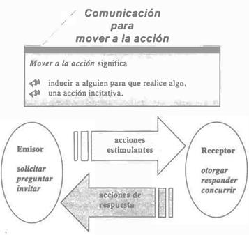
Atraer o Expresar emociones
Captar la atenci�n del receptor para lograr una interacci�n efectiva o comunicar sentimientos y estados de �nimo.

CARACTER�STICAS
� Interactividad: Permite un intercambio de informaci�n entre emisor y receptor.
� Din�mico: Puede adaptarse a diferentes contextos y situaciones.
� Bidireccionalidad: Existe la posibilidad de una respuesta del receptor.
� Sistem�tico: Involucra elementos definidos que trabajan en conjunto.
1.2 Lenguaje: definici�n, tipos y caracter�sticas.
DEFINICI�N
El lenguaje se define como un sistema de s�mbolos y signos convencionales que son aceptados y usados individual y socialmente, con el fin de comunicar ideas, sentimientos y conocimientos. Se clasifica en:
- Lenguaje natural o articulado: Expresado en lenguas. La lengua es un sistema, convencional, social, econ�mico y estructural. Representa la combinaci�n arbitraria y convencional de signos que un grupo social o una comunidad ha adoptado para interactuar verbalmente El habla es la experiencia ling��stica creativa e individual que cada hablante realiza de su lengua.
- Lenguaje artificial o formal: Creado con prop�sitos espec�ficos s un sistema ling��stico construido por uno o m�s individuos, sobre la base de lenguas hist�ricamente existentes, con validez y difusi�n universal, es decir, como posibles instrumentos de comprensi�n internacional, por encima de los idiomas nacionales. (e.g., lenguajes de programaci�n).
- Lenguaje corporal: Uso de gestos y posturas para transmitir mensajes.
- Lenguaje visual: Comunicaci�n mediante im�genes, gr�ficos o s�mbolos.
- Lenguaje art�stico: Expresi�n de ideas y emociones a trav�s de formas como la m�sica, pintura o danza.
CARACTER�STICAS
- Arbitrariedad: Los signos utilizados no tienen una relaci�n intr�nseca con lo que representan.
- Convencionalidad: Es un sistema aceptado socialmente.
- Creatividad: Permite la generaci�n de mensajes nuevos e innovadores.
- Sistematicidad: Est� regido por reglas y estructuras gramaticales.
- Universalidad: Es una capacidad propia de todos los seres humanos.
1.3 Relaci�n entre lenguaje, lengua y habla.
LENGUAJE
Es la capacidad universal y propia del ser humano para comunicarse mediante sistemas de signos. Engloba tanto lenguas naturales como lenguajes artificiales y es una facultad inherente a todos los humanos.
LENGUA
Es el sistema convencional de signos ling��sticos adoptado por una comunidad para comunicarse. Representa la materializaci�n del lenguaje, transmitida de generaci�n en generaci�n.
HABLA
Es el uso individual y creativo de la lengua y representa la manifestaci�n concreta del lenguaje en situaciones espec�ficas. Depende de factores como la intenci�n del hablante y el contexto de la comunicaci�n.
1.4 Diferencia entre lengua oral y lengua escrita.
La comunicaci�n oral es la que de manera innata y social desarrollan los humanos, la cual se realiza mediante dos procesos o destrezas comunicativas: la expresi�n oral y la comprensi�n auditiva. Asimismo, esta clase de comunicaci�n tiene expresiones no verbales que se presentan simult�neamente con las verbales: kin�sicos (gestos y lenguaje corporal), paraling��sticos (rasgos de la voz como tono, altura, velocidad, pausas, titubeos) y prox�micos (la posici�n, espacio o distancia que intencionalmente establecen entre s� los comunicantes).
La comunicaci�n escrita es la que se realiza cuando usamos un medio visual o gr�fico. A diferencia del medio oral, en el visual la expresi�n escrita es m�s lenta y elaborada aunque duradera y transportable. Para poder comunicarnos por escrito, se requiere del aprendizaje y desarrollo de dos destrezas: la comprensi�n lectora y la expresi�n escrita.
Entre las caracter�sticas de la escritura est�n:
� Es est�tica y permanente, depende de un espacio o soporte f�sico.
� Como proceso de comunicaci�n, el emisor est� lejos del receptor, a quien por lo general no conoce, salvo en la interacci�n por correspondencia, y actualmente v�a internet.
� Permite una lectura repetida y un an�lisis detallado de la informaci�n.
� Presenta elementos �nicos como una organizaci�n cuidadosa de las unidades del discurso (oraciones y p�rrafos), expresiones ling��sticas m�s compactas o tambi�n elaboradas.
� Presenta elementos �nicos como la organizaci�n espacial, la puntuaci�n, la acentuaci�n, las may�sculas, signos para expresar admiraci�n o interrogaci�n, y otros efectos gr�ficos.
1.5 Estructura y funci�n gramatical de palabras y oraciones.
En el espa�ol, se distinguen las siguientes clases de palabras: sustantivo, verbo, adjetivo, adverbio, pronombres, art�culos, preposiciones y conjunciones.
Las interjecciones actualmente no se consideran una clase de palabra, sino una forma abreviada que reemplaza una oraci�n o frase para expresar estados de �nimo o afectivos. Siempre se escriben entre signos de exclamaci�n y son propias del lenguaje coloquial: �ay!, �fuego!, �basta!
La gram�tica es fundamental para redactar correctamente. En palabras de Andr�s Bello, "La gram�tica de una lengua es el arte de hablar correctamente, esto es, conforme al buen uso, que es el de la gente educada�, Se analiza:
CLASES DE PALABRAS

ESTRUCTURA DE LAS ORACIONES
Oraci�n simple
Tiene un verbo conjugado y es independiente. Seg�n el tipo de predicado, se clasifican en:

Oraci�n compuesta
Se presenta una relaci�n de dependencia entre varias oraciones. Puede tener dos o m�s verbos. Se clasifica en coordinadas y subordinadas. Las oraciones coordinadas expresan la uni�n de dos o m�s elementos con el mismo valor sint�ctico e independientes entre s�, y pueden estar relacionadas con un nexo o sin �l.
Juan lee, Pedro escribe.
Anita camina y Oiga corre.
En las oraciones subordinadas, de una oraci�n principal dependen una o m�s subordinadas:
El profesor desea que sus alumnos aprendan.
Si apruebo el examen, obtendr� la beca.
ORACIONES COORDINADAS
Se distinguen dos tipos de coordinaci�n: por yuxtaposici�n, las oraciones se unen sin elementos de enlace, y por nexos coordinantes, las oraciones se unen mediante una palabra o frase prepositiva que las relaciona.
1. Coordinaci�n por yuxtaposici�n copulativa:
La no violencia es la ley de los hombres; la violencia es la ley de los animales. (Gandhi)
(Se sobrentiende y)
2. Coordinaci�n por yuxtaposici�n adversativa:
No ten�a este fil�sofo el tonel de Di�genes, s� una m�sera casilla. (Azor�n)
(Se sobrentiende aunque)
3. Coordinaci�n por yuxtaposici�n causal:
Ap�rate, no queda tiempo. (Mir�)
(Se sobrentiende porque)
4. Coordinaci�n copulativa: Relaci�n de suma o adici�n. Nexos coordinantes: y (e, ante i), ni.
Los soldados desfilan y la gente aplaude.
La polic�a interroga al testigo e investiga las pruebas.
No quiere estudiar ni trabajar.
5. Coordinaci�n adversativa: Relaci�n de contrariedad parcial o total entre dos enunciados.
a) Adversativa restrictiva: contrariedad entre enunciados, pero sin ser incompatibles:
Mar�a quiere intentarlo. pero no se atreve. (valor restrictivo)
Mar�a quiere intentarlo. mas (empero) no se atreve. (arca�smos)
Estos j�venes son listos, aunque no lo parecen. (valor concesivo y tambi�n adversativo)
b) Adversativa exclusiva: enunciados incompatibles:
No corre. sino vuela; No corre, sino que vuela;
No corre, que vuela; No lo dije yo. sino t�.
Frases conjuntivas y adverbios lexicalizados con valor restrictivo o exclusivo: sin embargo, no obstante, con todo, excepto, salvo, menos, antes bien, etc.
6. Coordinaci�n disyuntiva: Relaci�n de alternancia exclusiva de enunciados. Nexos: o (u, ante o).
Estudia o consigue un trabajo.
Hazlo voluntariamente u (hazlo) obligado por las circunstancias.
Esto es la guerra o (esto es) la destrucci�n. (valor de equivalencia)
Come o (y) bebe lo que quieras. (valor copulativo)
7. Coordinaci�n distributiva: Relaci�n de alternancia de los enunciados.
a) Con marca l�xica: repetida al principio de cada oraci�n marca el valor distributivo: ya ... ya, ora ... ora, sea ... sea, bien ... bien, ni ... ni (negaci�n):
Ya estudia, ya trabaja.
Ni estudia, ni trabaja.
b) En forma yuxtapuesta: la coordinaci�n entre enunciados se establece con palabras correlativas (pronombres y adverbios) puestas al principio de cada oraci�n:
Unos nacen. otros mueren.
All� se trabaja, aqu� se descansa
ORACIONES SUBORDINADAS

FUNCI�N DE ELEMENTOS GRAMATICALES
La oraci�n est� compuesta por sujeto y predicado. El sujeto es aquello de lo que se habla y el predicado es Jo que se dice del sujeto.
El sujeto tiene como n�cleo nominal (N. NOM.), por lo general, a un sustantivo u otra clase de palabra sustantivada, como ya se ejemplific� anteriormente, un adjetivo, un pronombre, etc. A su vez, el n�cleo nominal puede tener distintos modificadores (MD), como art�culos, adjetivos, complemento adnominal, aposici�n.

El n�cleo verbal del predicado ser� un verbo. En el predicado se pueden encontrar distintos tipos de complementos que caracterizan la acci�n o estado descritos por el verbo, entre ellos, los complementos directo, indirecto y circunstancial.
El complemento directo (CD) expresa lo que se dice del sujeto a trav�s del verbo, o lo que recibe directamente la acci�n del verbo. El complemento indirecto (CJ) indica la persona o cosa personificada que recibe el beneficio, provecho, da�o o perjuicio de la acci�n del verbo. El complemento circunstancial (CC) describe en qu� circunstancias (tiempo, modo, lugar, compa��a, cantidad) se realiza la acci�n verbal.

1.6 Ejercicios de comunicaci�n ling��stica.
An�lisis de casos pr�cticos:
- Identificar los elementos de comunicaci�n (emisor, receptor, mensaje, canal, c�digo, contexto).
- Detectar posibles interferencias o ruido en el proceso comunicativo.
Redacci�n de mensajes:
- Crear textos cortos con prop�sito claro: informar, persuadir o atraer.
- Uso de conectores para garantizar coherencia y cohesi�n en el mensaje.
Pr�cticas de lenguaje oral:
- Ejercicios de pronunciaci�n y articulaci�n para mejorar la claridad del habla.
- Din�micas grupales para desarrollar fluidez en la interacci�n verbal.
Interpretaci�n de textos:
- Lectura comprensiva para identificar ideas principales y secundarias.
- Resumir el contenido del texto con vocabulario adecuado.
Construcci�n de di�logos:
- Creaci�n de situaciones simuladas para practicar habilidades de interacci�n verbal.
- Uso correcto del registro y tono seg�n el contexto y el interlocutor.
Resoluci�n de problemas comunicativos:
- Plantear situaciones donde el mensaje no se entiende claramente.
- Proponer ajustes al mensaje para garantizar su efectividad.
2. Estructura del texto escrito.
2.1 Texto: estructura y propiedades (adecuaci�n, coherencia y cohesi�n). Marcadores discursivos.
Un texto debe poseer las siguientes propiedades:
- Adecuaci�n: Adaptarse al prop�sito comunicativo y al receptor.
- Coherencia: Presentar ideas relacionadas l�gica y tem�ticamente.
- Cohesi�n: Relaci�n gramatical y l�xica entre las partes del texto, utilizando conectores o nexos como pronombres, adverbios y conjunciones.
Los marcadores discursivos funcionan como herramientas para enlazar y organizar ideas, por ejemplo:
- Causa: porque, puesto que.
- Oposici�n: pero, aunque.
- Secuencia: primero, despu�s, finalmente
2.2 P�rrafo: caracter�sticas y clasificaci�n.
El p�rrafo es una unidad textual compuesta por oraciones interrelacionadas. Caracter�sticas principales:
- Coherencia: Las oraciones dependen unas de otras para su interpretaci�n.
- Cohesi�n: Utilizaci�n de nexos y repetici�n para conectar ideas.
Clasificaci�n de p�rrafos:
- Enumeraci�n: Lista de propiedades de un objeto o tema.
- Secuencia: Describe pasos o eventos en orden cronol�gico.
- Comparaci�n/contraste: Identifica similitudes y diferencias.
- Desarrollo de concepto: Expone una idea principal y la apoya con ejemplos.
- Causa-efecto: Presenta un evento seguido por sus causas o consecuencias.
2.3 Tipos de textos descriptivos-argumentativos: informe t�cnico, art�culo cient�fico, ensayo y tesis.
Informe t�cnico:
- Documento formal que presenta datos objetivos sobre un tema espec�fico.
Art�culo cient�fico:
- Texto acad�mico que comunica resultados de investigaciones.
Ensayo:
- Texto subjetivo que expone reflexiones personales sobre un tema.
Tesis:
- Documento extenso y estructurado que defiende una hip�tesis con base en una investigaci�n profunda
2.4 Ejercicios de an�lisis de estructura de textos.
incluyen:
- Identificar la jerarqu�a de ideas principales y secundarias.
- Clasificar tipos de p�rrafos seg�n sus funciones.
- Reconocer conectores y marcadores discursivos utilizados en un texto.
3. La redacci�n.
3.1 Caracter�sticas de una buena redacci�n: claridad, precisi�n, estilo.
Claridad: Las ideas deben expresarse de forma comprensible para el lector.
Precisi�n: Uso de vocabulario adecuado, evitando ambig�edades.
Estilo: Es el toque personal del autor, pero debe ser funcional, claro y atractivo para el lector
3.2 Operaciones b�sicas para la configuraci�n de textos: descripci�n, narraci�n, exposici�n y argumentaci�n.
Descripci�n: Representaci�n detallada de personas, objetos o situaciones.
Narraci�n: Relato de hechos reales o ficticios en un orden l�gico o cronol�gico.
Exposici�n: Explicaci�n de un tema de manera objetiva, con estructura clara y l�gica.
Argumentaci�n: Defensa de una opini�n o tesis mediante razonamientos o pruebas
3.3 Errores y deficiencias comunes en la redacci�n.
� Uso incorrecto de vocabulario (barbarismos, solecismos, cacofon�as).
� Construcciones gramaticales deficientes, como falta de concordancia.
� Ambig�edades o anfibolog�as que dificultan la comprensi�n
3.4 Reglas b�sicas de ortograf�a. Ortograf�a t�cnica, especializada y tipogr�fica.
� Ortograf�a t�cnica: Uso correcto de t�rminos t�cnicos y cient�ficos.
� Ortograf�a especializada: Normas espec�ficas para ciertas disciplinas.
� Ortograf�a tipogr�fica:
o Uso adecuado de may�sculas, min�sculas y puntuaci�n.
o Respeto por normas internacionales en s�mbolos y unidades
3.5 Ejercicios pr�cticos de redacci�n.
Identificaci�n de errores comunes en textos.
Creaci�n de diferentes tipos de escritos: narrativos, descriptivos, argumentativos.
Correcci�n y mejora de textos previos para cumplir con los criterios de claridad y precisi�n.
4. La exposici�n oral.
4.1 Preparaci�n del tema.
� Investigar y recopilar informaci�n confiable.
� Definir objetivos claros de la exposici�n.
� Estructurar el contenido de manera l�gica: introducci�n, desarrollo y conclusi�n.
� Adaptar el contenido al p�blico objetivo y al tiempo disponible
4.2 Esquemas conceptuales y estructuras expositivas.
Usa esquemas conceptuales como mapas mentales, diagramas y cuadros sin�pticos para organizar ideas principales y secundarias.
Estructura el contenido con un inicio atractivo, puntos clave bien desarrollados y un cierre contundente que resuma las ideas principales
4.3 T�cnicas expositivas.
� Vocalizaci�n clara: Pronunciaci�n adecuada y tono variado.
� Lenguaje corporal: Uso de gestos naturales, postura firme y contacto visual.
� Control del ritmo: Evitar pausas largas o hablar demasiado r�pido.
� Interacci�n: Involucrar al p�blico con preguntas o ejemplos.
4.4 Problemas comunes de expresi�n oral (articulaci�n deficiente, muletillas, repeticiones, repertorio l�xico).
Articulaci�n deficiente: Pronunciaci�n incorrecta o falta de claridad.
Muletillas: Uso excesivo de palabras como �este�, �o sea�.
Repeticiones: Redundancia innecesaria que distrae al p�blico.
Repertorio l�xico limitado: Escasa variedad en el uso de vocabulario
4.5 Material de apoyo.
� Visuales: Presentaciones en diapositivas, gr�ficos, im�genes.
� Audiovisuales: Videos o grabaciones para complementar puntos clave.
� Manuales: Folletos o documentos para reforzar los conceptos.
� Demostraciones: Uso de ejemplos pr�cticos o modelos
4.6 Ejercicios pr�cticos de exposici�n oral.
Simulaciones de exposiciones frente a compa�eros o mentores.
Ejercicios para mejorar el control del tono y ritmo.
Pr�ctica de improvisaci�n para responder preguntas o resolver problemas inesperados
5. Ejercicios de redacci�n de escritos t�cnicos sobre ingenier�a.
5.1 Planeaci�n del escrito.
La planeaci�n de un texto t�cnico implica:
� Definici�n del objetivo: Clarificar la intenci�n del escrito, respondiendo a �para qu�? y �para qui�n?
� Delimitaci�n del tema: Decidir sobre qu� se escribir�.
� Selecci�n y jerarquizaci�n: Identificar el contenido esencial y organizarlo seg�n su importancia.
5.2 Acopio y organizaci�n de la informaci�n.
Fuentes confiables: Reunir datos de libros, art�culos, entrevistas, y bases cient�ficas.
Fichas de trabajo: M�todo para registrar informaci�n importante, ya sea textual, resumida o parafraseada, facilitando su consulta posterior.
5.3 Generaci�n y jerarquizaci�n de ideas y argumentos. Mapas conceptuales.
Ideas principales y secundarias: Ordenar de lo m�s general a lo m�s espec�fico.
Mapas conceptuales: T�cnica para representar gr�ficamente la relaci�n entre ideas, facilitando la comprensi�n y planificaci�n.
5.4 Estructuraci�n y producci�n del texto.
La estructura del texto debe incluir:
- Introducci�n: Presentar el tema y objetivos.
- Desarrollo: Exposici�n l�gica y detallada de las ideas.
- Conclusi�n: S�ntesis de lo discutido y resultados.
5.5 Aparato cr�tico: citas, sistemas de referencia y bibliograf�a.
Citas: Pueden ser textuales (entre comillas) o parafraseadas, siempre con referencias.
Bibliograf�a: Listar las fuentes consultadas en formato ordenado (alfab�tico por autor o t�tulo).
Sistemas de referencia: Usar normas espec�ficas seg�n el �mbito acad�mico (e.g., APA, MLA).
5.6 Revisi�n y correcci�n del escrito.
Contenido: Revisar la coherencia, precisi�n y claridad de ideas.
Forma: Verificar gram�tica, ortograf�a, y estilo t�cnico.
Formato: Asegurar que cumpla con las normas requeridas para publicaci�n
5.7 Versi�n final del trabajo escrito.
integraci�n final: Incluir correcciones basadas en revisiones previas.
Presentaci�n adecuada: Asegurar una estructura limpia, con uso correcto de elementos gr�ficos y tablas si son necesarios.
6. Ejercicios de exposici�n oral de temas de ingenier�a.
6.1 Planeaci�n de la exposici�n.
Definici�n del prop�sito: Establecer el objetivo principal de la exposici�n y su alcance.
Identificaci�n del p�blico: Conocer las caracter�sticas del p�blico para adaptar el discurso.
Delimitaci�n del tema: Seleccionar un tema espec�fico, relevante y con un enfoque claro.
6.2 Acopio y organizaci�n de la informaci�n.
Fuentes confiables: Utilizar referencias acad�micas, datos t�cnicos, e investigaciones recientes.
M�todos de acopio: Crear fichas de trabajo o res�menes para organizar los datos obtenidos.
Clasificaci�n de la informaci�n: Agruparla en categor�as seg�n relevancia y conexi�n tem�tica.
6.3 Generaci�n y jerarquizaci�n de ideas y argumentos. Mapas conceptuales.
Jerarquizaci�n: Ordenar las ideas principales y secundarias de manera l�gica.
Uso de mapas conceptuales: Representar visualmente las relaciones entre conceptos para facilitar la comprensi�n y planificaci�n de la exposici�n
6.4 Estructuraci�n del discurso.
El discurso debe estar dividido en:
- Introducci�n:
- Captar la atenci�n.
- Presentar el tema y su importancia.
- Desarrollo:
- Exponer ideas principales y sus detalles t�cnicos.
- Usar ejemplos y analog�as.
- Conclusi�n:
- Resumir los puntos clave.
- Reafirmar el prop�sito y abrir espacio para preguntas.
6.5 Utilizaci�n de apoyos visuales y otros recursos.
Apoyos visuales: Diapositivas, gr�ficos, tablas, diagramas.
Recursos adicionales:
- Videos demostrativos.
- Modelos f�sicos o prototipos
6.6 Presentaci�n p�blica del tema.
Ensayo previo: Practicar frente a compa�eros o en un ambiente similar al real.
T�cnicas de expresi�n:
- Lenguaje corporal adecuado.
- Vocalizaci�n clara y control del ritmo.
Gesti�n del tiempo: Asegurar que cada parte del discurso se ajuste al tiempo estipulado
7. Bibliograf�a.
CUAIR�N RUIDIAZ, Mar�a, FIEL RIVERA, Amelia Guadalupe - Elaboraci�n de textos did�cticos de ingenier�a.
QU�MICA (1123)
Objetivo(s) del curso:
El alumno aplicar� los conceptos b�sicos para relacionar las propiedades de las sustancias en la resoluci�n de ejercicios; desarrollar� sus capacidades de observaci�n y de manejo de instrumentos.
1. Estructura at�mica.
1.1 Importancia de la qu�mica en las ingenier�as.
QU�MICA
La Qu�mica es una de las ciencias fundamentales m�s influyentes en el desarrollo y progreso de las ingenier�as. Su impacto se manifiesta en la capacidad de los ingenieros para comprender y manipular materiales, procesos y reacciones a nivel molecular, lo que resulta esencial para resolver problemas complejos en una amplia variedad de campos.
La relaci�n entre la qu�mica y la ingenier�a no es meramente acad�mica, sino que se traduce directamente en avances tecnol�gicos que han transformado la sociedad moderna. Desde la construcci�n de infraestructuras hasta la creaci�n de tecnolog�as avanzadas, la qu�mica desempe�a un papel crucial como base te�rica y pr�ctica.
En la ingenier�a civil, por ejemplo, la qu�mica ha sido vital para el desarrollo de materiales de construcci�n m�s resistentes y duraderos. El concreto, uno de los materiales m�s utilizados en el mundo, se beneficia enormemente de los avances qu�micos.
La comprensi�n de las reacciones de hidrataci�n del cemento y la interacci�n con aditivos permite ajustar las propiedades del concreto, como su resistencia, tiempo de fraguado y durabilidad. Adem�s, los tratamientos qu�micos para proteger estructuras contra la corrosi�n y los efectos del medio ambiente son esenciales para garantizar su longevidad. En este contexto, la qu�mica no solo optimiza procesos de construcci�n, sino que tambi�n contribuye a la sostenibilidad al permitir el uso de materiales reciclados y la reducci�n de emisiones de di�xido de carbono.
La ingenier�a mec�nica tambi�n encuentra en la qu�mica una herramienta indispensable, especialmente en el dise�o y fabricaci�n de m�quinas y estructuras. Los tratamientos t�rmicos y qu�micos de los metales, como el templado, el recocido y el nitrurado, se utilizan para modificar las propiedades mec�nicas y t�rmicas de los materiales. Estos procesos, fundamentados en principios qu�micos, permiten que los ingenieros dise�en piezas capaces de soportar altas tensiones, temperaturas extremas y condiciones corrosivas. Adem�s, la qu�mica de los lubricantes y refrigerantes es fundamental para garantizar el funcionamiento eficiente y seguro de sistemas mec�nicos complejos.
En el �mbito de la ingenier�a el�ctrica y electr�nica, la qu�mica se manifiesta en el dise�o de materiales avanzados como semiconductores, superconductores y bater�as. Los semiconductores, que forman la base de la tecnolog�a moderna, dependen de una comprensi�n detallada de las propiedades qu�micas y electr�nicas de los materiales.
El silicio, ampliamente utilizado en la fabricaci�n de dispositivos electr�nicos, es tratado qu�micamente para obtener propiedades espec�ficas que permiten el flujo controlado de electricidad. Asimismo, las investigaciones qu�micas han permitido el desarrollo de bater�as m�s eficientes y duraderas, como las bater�as de iones de litio, que alimentan desde tel�fonos m�viles hasta veh�culos el�ctricos.
 La
ingenier�a qu�mica, por su parte, es quiz�s el campo donde la relaci�n entre la
qu�mica y la ingenier�a es m�s evidente. Los ingenieros qu�micos utilizan
principios qu�micos para dise�ar y optimizar procesos industriales que producen
una amplia gama de productos, desde combustibles y pl�sticos hasta medicamentos
y productos alimenticios.
La
ingenier�a qu�mica, por su parte, es quiz�s el campo donde la relaci�n entre la
qu�mica y la ingenier�a es m�s evidente. Los ingenieros qu�micos utilizan
principios qu�micos para dise�ar y optimizar procesos industriales que producen
una amplia gama de productos, desde combustibles y pl�sticos hasta medicamentos
y productos alimenticios.
La qu�mica permite a estos ingenieros modelar y simular reacciones qu�micas a gran escala, identificar condiciones �ptimas de operaci�n y garantizar la seguridad en plantas de producci�n. Adem�s, la ingenier�a qu�mica desempe�a un papel clave en la transici�n hacia fuentes de energ�a m�s limpias, desarrollando biocombustibles, celdas de combustible y tecnolog�as para la captura y almacenamiento de carbono.
En la ingenier�a ambiental, la qu�mica es esencial para comprender y mitigar los impactos humanos en el medio ambiente. Los ingenieros ambientales utilizan principios qu�micos para tratar aguas residuales, controlar emisiones contaminantes y dise�ar procesos sostenibles.
La qu�mica anal�tica, en particular, permite detectar y cuantificar contaminantes en aire, agua y suelo, lo que es crucial para evaluar riesgos y garantizar la calidad ambiental. Adem�s, la qu�mica verde, una disciplina emergente, se centra en el dise�o de procesos y productos que minimizan el uso y la generaci�n de sustancias peligrosas, promoviendo pr�cticas m�s sostenibles.
Otro campo donde la qu�mica tiene un impacto significativo es la ingenier�a biom�dica. Los avances en qu�mica org�nica y bioqu�mica han permitido el desarrollo de materiales biocompatibles, como pol�meros para pr�tesis, implantes y dispositivos m�dicos.
Adem�s, la qu�mica farmac�utica es fundamental para el dise�o y producci�n de medicamentos, vacunas y sistemas de liberaci�n controlada de f�rmacos. Los ingenieros biom�dicos, al aplicar conocimientos qu�micos, contribuyen a mejorar la salud y calidad de vida de las personas mediante innovaciones que integran qu�mica, biolog�a y tecnolog�a.
En la ingenier�a de materiales, la qu�mica es la base para el dise�o de nuevos materiales con propiedades espec�ficas. Los materiales compuestos, por ejemplo, combinan pol�meros, metales y cer�micas para crear estructuras ligeras y resistentes, utilizadas en industrias como la aeroespacial, automotriz y deportiva.
Los avances en nanotecnolog�a, que tambi�n tienen ra�ces en la qu�mica, permiten manipular materiales a escala at�mica y molecular, dando lugar a propiedades �nicas como la superhidrofobicidad, la conductividad t�rmica y el�ctrica mejoradas, y la resistencia extrema.
La qu�mica tambi�n juega un papel en la ingenier�a energ�tica, especialmente en el desarrollo de tecnolog�as relacionadas con la generaci�n, almacenamiento y distribuci�n de energ�a. Los principios de la termoqu�mica son fundamentales para dise�ar sistemas de generaci�n de energ�a m�s eficientes, como las turbinas de gas y las plantas termoel�ctricas.
Asimismo, la electroqu�mica impulsa avances en celdas solares, bater�as y sistemas de almacenamiento de energ�a. La capacidad de entender y manipular reacciones qu�micas es esencial para enfrentar los desaf�os globales relacionados con la energ�a y el cambio clim�tico.
Finalmente, la qu�mica en las ingenier�as no solo se limita al dise�o y desarrollo de materiales y procesos, sino que tambi�n es clave en la formaci�n de ingenieros con pensamiento cr�tico y habilidades de resoluci�n de problemas. La capacidad de analizar y modelar fen�menos qu�micos proporciona a los ingenieros una ventaja competitiva para abordar desaf�os interdisciplinarios.
1.2 Descripci�n de los experimentos: Thomson, Millikan, Planck, efecto fotoel�ctrico, espectros electromagn�ticos.
EXPERIMENTO DE THOMSON
Descubrimiento del electr�n mediante el experimento con rayos cat�dicos, demostrando la relaci�n carga/masa de las part�culas subat�micas.
EXPERIMENTO DE MILLIKAN
Medici�n de la carga del electr�n con su famoso experimento de la gota de aceite, confirmando la cuantizaci�n de la carga.
EXPERIMENTO DE PLANCK
Introducci�n del concepto de cuantos para explicar la radiaci�n del cuerpo negro, que marc� el inicio de la teor�a cu�ntica.
EFECTO FOTOEL�CTRICO
 El
efecto fotoel�ctrico es un fen�meno fundamental que marc� el inicio de
la f�sica cu�ntica, desafiando las explicaciones cl�sicas sobre la naturaleza
de la luz y su interacci�n con la materia. Este fen�meno fue descubierto por
Heinrich Hertz y explicado por Albert Einstein, quien recibi� el Premio Nobel
de F�sica en 1921 por este trabajo. Este ocurre cuando ciertos materiales,
especialmente metales, emiten electrones al ser iluminados con luz de una
frecuencia adecuada. (Los medidores de luz que se utilizan en las c�maras
fotogr�ficas se basan en el efecto fotoel�ctrico.)
El
efecto fotoel�ctrico es un fen�meno fundamental que marc� el inicio de
la f�sica cu�ntica, desafiando las explicaciones cl�sicas sobre la naturaleza
de la luz y su interacci�n con la materia. Este fen�meno fue descubierto por
Heinrich Hertz y explicado por Albert Einstein, quien recibi� el Premio Nobel
de F�sica en 1921 por este trabajo. Este ocurre cuando ciertos materiales,
especialmente metales, emiten electrones al ser iluminados con luz de una
frecuencia adecuada. (Los medidores de luz que se utilizan en las c�maras
fotogr�ficas se basan en el efecto fotoel�ctrico.)
Descubrimiento y primeros estudios del efecto fotoel�ctrico
El estudio de la luz y su naturaleza ha sido una preocupaci�n constante en la historia de la f�sica. Isaac Newton propuso que la luz estaba compuesta de part�culas, mientras que otros cient�ficos, como Thomas Young y James Clerk Maxwell, demostraron la naturaleza ondulatoria de la luz a trav�s de fen�menos como la interferencia y la difracci�n. La teor�a electromagn�tica de Maxwell consolid� la idea de que la luz era una onda electromagn�tica, capaz de propagarse en el vac�o y transportar energ�a a trav�s del espacio.
En 1887, Heinrich Hertz, mientras investigaba las ondas electromagn�ticas predichas por Maxwell, observ� un fen�meno que no encajaba en el marco de la teor�a ondulatoria. Hertz descubri� que las chispas el�ctricas saltaban con mayor facilidad entre dos electrodos met�licos cuando estos eran iluminados por luz ultravioleta.
Este hallazgo fue el primer indicio experimental del efecto fotoel�ctrico, aunque en ese momento no se comprend�a completamente su significado.
Posteriormente, Wilhelm Hallwachs y Philipp Lenard realizaron experimentos que mostraron que ciertos metales emit�an electrones cuando eran iluminados por luz de alta frecuencia, como la ultravioleta. Esta emisi�n de electrones, conocida como fotoemisi�n, plante� serias dudas sobre la teor�a cl�sica de la luz, que predec�a que la energ�a de la luz deber�a depender de su intensidad, no de su frecuencia.
Crisis de la teor�a cl�sica y la hip�tesis cu�ntica
La teor�a cl�sica, basada en el modelo ondulatorio de la luz, no pod�a explicar adecuadamente el efecto fotoel�ctrico. Seg�n esta teor�a, aumentar la intensidad de la luz deber�a incrementar la energ�a de los electrones emitidos. Sin embargo, los experimentos mostraron que la energ�a de los electrones emitidos depend�a �nicamente de la frecuencia de la luz y no de su intensidad. De hecho, no importaba cu�n intensa fuera la luz, si su frecuencia no superaba un umbral espec�fico, no se emit�an electrones.
Este enigma llev� a una crisis en la f�sica cl�sica. La soluci�n lleg� en 1905, cuando Albert Einstein propuso una interpretaci�n revolucionaria basada en la hip�tesis cu�ntica de Max Planck. Planck hab�a introducido en 1900 la idea de que la energ�a electromagn�tica se emite o absorbe en unidades discretas, o cuantos, para explicar la radiaci�n del cuerpo negro. Einstein extendi� esta idea, postulando que la luz no solo se comporta como una onda, sino que tambi�n est� compuesta de part�culas discretas de energ�a, que llam� fotones.
Explicaci�n de Einstein acerca del fot�n
Einstein propuso que cada fot�n tiene una energ�a proporcional a la frecuencia de la luz, seg�n la ecuaci�n:
donde E es la energ�a del fot�n, h es la constante de Planck (6.626�10−34 J⋅s), y f es la frecuencia de la luz.
Seg�n esta teor�a, cuando un fot�n incide sobre la superficie de un metal, su energ�a se transfiere a un electr�n. Si la energ�a del fot�n es suficiente para superar la funci�n trabajo (ϕ) del metal, que es la energ�a m�nima necesaria para liberar un electr�n, el electr�n ser� emitido. La energ�a cin�tica m�xima de los electrones emitidos est� dada por la ecuaci�n:

Esta ecuaci�n explica varios aspectos experimentales del efecto fotoel�ctrico:
- Existencia de una frecuencia umbral: Si la frecuencia de la luz es menor que un valor cr�tico (fumbral), no se emiten electrones, sin importar la intensidad de la luz. Esto se debe a que la energ�a de los fotones es insuficiente para superar la funci�n trabajo.
- Dependencia de la energ�a de los electrones con la frecuencia: A mayor frecuencia de la luz, mayor ser� la energ�a cin�tica de los electrones emitidos. Esto contrasta con la predicci�n de la teor�a cl�sica, que suger�a que la energ�a de los electrones deber�a depender de la intensidad de la luz.
- Independencia de la energ�a de los electrones con la intensidad: Aumentar la intensidad de la luz solo incrementa el n�mero de fotones incidentes y, por lo tanto, el n�mero de electrones emitidos, pero no su energ�a.
- Emisi�n instant�nea de electrones: Seg�n la teor�a ondulatoria, deber�a haber un retraso temporal mientras los electrones absorben suficiente energ�a para escapar del metal. Sin embargo, los experimentos mostraron que la emisi�n es pr�cticamente instant�nea, lo que se explica f�cilmente si cada fot�n transfiere su energ�a de manera instant�nea a un electr�n.
Confirmaci�n experimental y la constante de Planck
La interpretaci�n de Einstein fue confirmada experimentalmente por Robert Millikan en 1914. Aunque Millikan era esc�ptico respecto a la teor�a cu�ntica de Einstein, sus meticulosos experimentos demostraron que la relaci�n entre la energ�a cin�tica m�xima de los electrones y la frecuencia de la luz era lineal, tal como predec�a la ecuaci�n de Einstein.
El experimento t�pico del efecto fotoel�ctrico involucra un tubo de vac�o con un c�todo y un �nodo. La luz incide sobre el c�todo, liberando electrones, que son atra�dos hacia el �nodo, generando una corriente el�ctrica llamada fotocorriente. Aplicando un potencial de frenado (V0), se puede detener el flujo de electrones. El potencial de frenado est� relacionado directamente con la energ�a cin�tica m�xima de los electrones:
Una gr�fica del potencial de frenado V0 en funci�n de la frecuencia f de la luz da como resultado una l�nea recta, cuya pendiente es h/e, permitiendo la determinaci�n experimental de la constante de Planck.
La dualidad onda-part�cula
El efecto fotoel�ctrico no solo proporcion� una explicaci�n satisfactoria del comportamiento de la luz, sino que tambi�n llev� al desarrollo del concepto de dualidad onda-part�cula. Este concepto, fundamental en la f�sica cu�ntica, establece que la luz y otras formas de radiaci�n electromagn�tica exhiben tanto propiedades ondulatorias como corpusculares, dependiendo del experimento que se realice.
Por ejemplo, fen�menos como la interferencia y la difracci�n demuestran la naturaleza ondulatoria de la luz, mientras que el efecto fotoel�ctrico y la dispersi�n Compton revelan su comportamiento como part�culas. Esta dualidad fue extendida por Louis de Broglie, quien postul� que no solo la luz, sino tambi�n las part�culas materiales, como los electrones, poseen propiedades ondulatorias, dando origen a la mec�nica cu�ntica ondulatoria.
Aplicaciones del efecto fotoel�ctrico
El efecto fotoel�ctrico no es solo un fen�meno te�rico, sino que tiene m�ltiples aplicaciones pr�cticas en la tecnolog�a moderna. Entre las m�s destacadas se encuentran:
1.  Celdas
fotoel�ctricas y paneles solares: Utilizan el efecto fotoel�ctrico para
convertir la energ�a de la luz solar en electricidad. Los fotones inciden sobre
materiales semiconductores, liberando electrones que generan una corriente
el�ctrica.
Celdas
fotoel�ctricas y paneles solares: Utilizan el efecto fotoel�ctrico para
convertir la energ�a de la luz solar en electricidad. Los fotones inciden sobre
materiales semiconductores, liberando electrones que generan una corriente
el�ctrica.
2. Fotodetectores y c�maras digitales: Los sensores de las c�maras digitales, como los CCD (dispositivos de carga acoplada), emplean el efecto fotoel�ctrico para convertir la luz en se�ales el�ctricas, que luego se procesan para formar im�genes digitales.
3. Visi�n nocturna: Los dispositivos de visi�n nocturna amplifican la luz disponible mediante el efecto fotoel�ctrico. Los fotones que inciden sobre una superficie sensible liberan electrones, que son acelerados y amplificados para formar una imagen visible incluso en condiciones de baja iluminaci�n.
4. Espectroscop�a fotoelectr�nica: Esta t�cnica se utiliza para estudiar la estructura electr�nica de �tomos y mol�culas. Al medir la energ�a de los electrones emitidos por efecto fotoel�ctrico, se puede obtener informaci�n detallada sobre los niveles de energ�a y las propiedades qu�micas de los materiales.
5. Astrof�sica y exploraci�n espacial: El efecto fotoel�ctrico es fundamental en la detecci�n de radiaci�n c�smica y en la observaci�n de fen�menos astrof�sicos. Por ejemplo, los telescopios espaciales utilizan detectores basados en este efecto para capturar im�genes de alta resoluci�n del universo.
ESPECTROS ELECTROMAGN�TICOS
An�lisis de las l�neas espectrales de los �tomos, mostrando que los electrones ocupan niveles de energ�a discretos.
1.3 Modelo at�mico de Bohr y teor�a de Broglie.
Modelo de Bohr: Propone que los electrones se mueven en �rbitas fijas alrededor del n�cleo y emiten o absorben energ�a al saltar entre niveles discretos. Explic� el espectro del hidr�geno, aunque tiene limitaciones para �tomos m�s complejos.
Teor�a de De Broglie: Introduce la naturaleza ondulatoria de las part�culas subat�micas, postulando que los electrones tienen propiedades de onda y part�cula, lo que lleva a la formulaci�n de la mec�nica cu�ntica.
1.4 Modelo at�mico de la mec�nica cu�ntica, n�meros cu�nticos y estructura electr�nica.
El modelo cu�ntico describe los electrones en t�rminos de funciones de onda (orbitales) y probabilidades de localizaci�n, reemplazando el concepto cl�sico de �rbitas.
Los n�meros cu�nticos (principal, azimutal, magn�tico y de esp�n) definen las caracter�sticas de los electrones y sus configuraciones en los �tomos.
La estructura electr�nica determina propiedades qu�micas y f�sicas, como la reactividad y los estados de energ�a.
1.5 Diamagnetismo, paramagnetismo y ferromagnetismo.
Diamagnetismo: Materiales que generan un campo magn�tico d�bil en oposici�n a un campo externo aplicado. No tienen electrones desapareados.
Paramagnetismo: Materiales con electrones desapareados que se alinean d�bilmente con un campo magn�tico externo.
Ferromagnetismo: Materiales con dominios magn�ticos alineados, capaces de mantener una magnetizaci�n permanente (e.g., hierro, n�quel).
1.6 Dominios magn�ticos y magnetizaci�n.
Los dominios magn�ticos son regiones en un material donde los momentos magn�ticos est�n alineados. En ausencia de un campo externo, los dominios suelen orientarse aleatoriamente.
La magnetizaci�n ocurre cuando un campo magn�tico externo alinea los dominios, y en algunos materiales (ferromagn�ticos), esta alineaci�n puede persistir incluso despu�s de retirar el campo.
2. Periodicidad qu�mica.
2.1 Propiedades de los elementos: masa at�mica, punto de ebullici�n, car�cter �cido-base, punto de fusi�n, car�cter met�lico, densidad, radio at�mico, radio i�nico, energ�a de primera ionizaci�n, estructura cristalina, electronegatividad, conductividad t�rmica y conductividad el�ctrica.
Masa at�mica: Refleja el promedio ponderado de las masas de los is�topos de un elemento. Influye en las tendencias peri�dicas.
Punto de ebullici�n y punto de fusi�n: Dependen de la estructura electr�nica y las fuerzas intermoleculares. Siguen patrones peri�dicos y var�an seg�n el grupo y el periodo.
Car�cter �cido-base: Relacionado con la capacidad de los elementos para donar o aceptar protones, variando dentro de los grupos y per�odos.
Car�cter met�lico: Tiende a disminuir de izquierda a derecha a trav�s de un periodo y aumenta al descender en un grupo.
Densidad: Depende de la masa y el volumen at�micos, mostrando una relaci�n compleja en la tabla peri�dica.
Radio at�mico e i�nico: El radio at�mico disminuye en un periodo debido al aumento de la carga nuclear efectiva y aumenta en un grupo. Los radios i�nicos dependen de la carga del ion.
Energ�a de primera ionizaci�n: Energ�a necesaria para eliminar un electr�n, aumenta en un periodo y disminuye en un grupo.
Estructura cristalina: Determinada por el empaquetamiento de �tomos o iones, con patrones espec�ficos para metales y no metales.
Electronegatividad: Mide la tendencia de un �tomo a atraer electrones en un enlace. Aumenta de izquierda a derecha en un periodo y disminuye en un grupo.
Conductividad t�rmica y el�ctrica: Propiedades caracter�sticas de los metales, disminuyen en los no metales.
2.2 Analog�as en las propiedades de los elementos para los miembros de un mismo periodo o de un mismo grupo.
Dentro de un mismo periodo: Las propiedades cambian de manera predecible debido a la adici�n de electrones en el mismo nivel de energ�a. Por ejemplo, la electronegatividad y la energ�a de ionizaci�n aumentan, mientras que el radio at�mico disminuye.
Dentro de un mismo grupo: Los elementos comparten configuraciones electr�nicas similares, lo que resulta en propiedades qu�micas comparables, como el car�cter met�lico o la acidez b�sica.
3. Enlaces qu�micos y fuerzas intermoleculares.
3.1 Teor�a de enlace valencia.
Explica c�mo los �tomos comparten electrones para formar enlaces covalentes. Los orbitales at�micos de los �tomos interact�an para formar un par compartido de electrones, estabilizando la mol�cula.
3.2 Enlaces qu�micos: enlaces covalentes puro, polar y coordinado.
Covalente puro: Se da entre �tomos con electronegatividades similares. Los electrones se comparten equitativamente.
Covalente polar: Los electrones se comparten de manera desigual debido a diferencias en electronegatividad.
Coordinado: Un �tomo dona ambos electrones del par compartido, mientras el otro no contribuye con electrones.
3.3 Enlace i�nico.
Resultado de la transferencia completa de electrones de un �tomo met�lico a un no met�lico, formando cationes y aniones que se atraen electrost�ticamente.
3.4 Fuerzas intermoleculares entre mol�culas diat�micas.
Incluyen fuerzas de dispersi�n de London, dipolo-dipolo y enlaces de hidr�geno. Determinan propiedades como el punto de ebullici�n y la solubilidad.
3.5 Estructuras de Lewis de mol�culas sencillas.
Representaciones de las mol�culas mostrando los electrones de valencia y las conexiones entre los �tomos.
3.6 Teor�a de repulsi�n de los pares electr�nicos de la capa de valencia.
redice la geometr�a molecular considerando que los pares de electrones se repelen y buscan maximizar su separaci�n.
3.7 Geometr�a molecular y polaridad con respecto a �tomos centrales.
Determinadas por la disposici�n tridimensional de los �tomos alrededor del �tomo central y la distribuci�n de la carga el�ctrica.
3.8 Fases: s�lida, l�quida y gaseosa.
Se distinguen por el orden molecular y la energ�a cin�tica. La transici�n entre fases depende de la temperatura y presi�n.
3.9 Fen�menos de superficie: tensi�n superficial, capilaridad
� Tensi�n superficial: Fuerza que minimiza el �rea superficial de un l�quido.
� Capilaridad: Capacidad de un l�quido de ascender o descender en un tubo estrecho debido a fuerzas de adhesi�n y cohesi�n.
3.10 Disoluciones: diluidas, saturadas y sobresaturadas.
� Diluidas: Contienen poca cantidad de soluto en relaci�n con el solvente.
� Saturadas: Contienen la m�xima cantidad de soluto que puede disolverse.
� Sobresaturadas: Contienen m�s soluto que en una saturada a la misma temperatura.
3.11 Dispersiones coloidales.
Mezclas donde part�culas diminutas est�n suspendidas en un medio continuo, sin sedimentarse.
3.12 Conductividad el�ctrica de materiales i�nicos en disoluci�n.
Depende de la movilidad de los iones en el solvente. Los compuestos i�nicos conducen electricidad al disolverse, liberando iones m�viles.
4. Teor�a del orbital molecular y cristaloqu�mica.
4.1 Teor�a del orbital molecular para mol�culas diat�micas.
Los orbitales moleculares se forman a partir de la combinaci�n de orbitales at�micos. Existen orbitales de enlace, que estabilizan la mol�cula, y orbitales antienlaces, que la desestabilizan. Este modelo explica propiedades como la longitud y energ�a de enlace.
4.2 Teor�a de las bandas.
Desarrollada para describir s�lidos. En materiales met�licos, las bandas de conducci�n y valencia se superponen, permitiendo la libre movilidad de electrones. En semiconductores y aislantes, hay una brecha de energ�a entre estas bandas, afectando su conductividad el�ctrica.
4.3 Enlace met�lico.
Se basa en un "mar de electrones" deslocalizados que rodean n�cleos met�licos. Esto explica propiedades como la conductividad el�ctrica y t�rmica, ductilidad y maleabilidad de los metales.
4.4 Aislantes, semiconductores, conductores y superconductores. Aplicaciones.
� Aislantes: Materiales con una gran brecha de energ�a entre la banda de valencia y la de conducci�n, impidiendo la movilidad de electrones.
� Semiconductores: Tienen una brecha de energ�a peque�a, y su conductividad aumenta con la temperatura.
� Conductores: Como los metales, permiten el flujo de electrones libremente.
� Superconductores: Materiales que conducen electricidad sin resistencia a temperaturas cr�ticas bajas. Usados en aplicaciones como trenes de levitaci�n magn�tica.
4.5 Cristales: celdas unitarias, tipos de cristales.
Celdas unitarias: Son las unidades m�s peque�as que, repetidas, forman una red cristalina. Se clasifican en c�bica, tetragonal, hexagonal, entre otras.
Tipos de cristales: Incluyen cristales i�nicos (como el NaCl), covalentes (diamante), met�licos y moleculares (hielo).
5. Estequiometr�a.
5.1 Conceptos de mol y masa molar.
� Mol: Unidad fundamental que representa 6.022�1023 part�culas, ya sean �tomos, mol�culas o iones.
� Masa molar: Masa de un mol de una sustancia, medida en g/mol. Es igual a la masa at�mica o molecular promedio.
5.2 Relaciones estequiom�tricas: relaci�n en entidades fundamentales, relaci�n molar y relaci�n en masa.
Relaci�n en entidades fundamentales: Proporci�n de �tomos o mol�culas basada en ecuaciones balanceadas.
Relaci�n molar: Proporci�n entre moles de reactivos y productos en una reacci�n.
Relaci�n en masa: Conversi�n de moles a gramos usando la masa molar.
5.3 Tipos de recciones: redox y �cido-base.
Redox: Involucran transferencia de electrones; esenciales en bater�as, corrosi�n y bioprocesos.
�cido-base: Reacciones que implican transferencia de protones (H⁺), fundamentales en neutralizaciones.
5.4 C�lculos estequiom�tricos: reactivos limitante y en exceso, rendimientos te�rico, experimental y porcentual.
Reactivo limitante: Reactivo que se consume primero, determinando la cantidad de producto.
Reactivo en exceso: Aquel que sobra despu�s de completar la reacci�n.
Rendimiento te�rico, experimental y porcentual: Proporci�n entre el producto real obtenido y el esperado.
5.5 La fase gaseosa y la ecuaci�n del gas ideal.
La ecuaci�n PV=nRT describe el comportamiento de los gases, donde P es presi�n, V volumen, n moles, R la constante de los gases y T temperatura.
5.6 Unidades de concentraci�n: molaridad, porcentajes masa/masa, masa/volumen y volumen/volumen, fracci�n molar y partes por mill�n.
� Molaridad (M): Moles de soluto por litro de soluci�n.
� Porcentajes masa/masa, masa/volumen y volumen/volumen: Indican proporciones en distintas unidades.
� Fracci�n molar: Relaci�n de moles de un componente con respecto al total.
� Partes por mill�n (ppm): Proporci�n en trazas, usada en an�lisis ambientales y qu�micos.
6. Termoqu�mica y equilibrio qu�mico.
6.1 Calor de una reacci�n qu�mica.
� Se refiere al cambio de entalp�a (ΔH) asociado con una reacci�n qu�mica.
� Reacciones exot�rmicas: Liberan calor (ΔH<0).
� Reacciones endot�rmicas: Absorben calor (ΔH>0).
6.2 Ley de Hess.
Establece que el cambio de entalp�a total de una reacci�n es independiente del camino tomado entre reactivos y productos.
Permite calcular ΔH de reacciones indirectamente, sumando los ΔH de pasos intermedios.
6.3 Constante de equilibrio de una reacci�n qu�mica.
Representa la relaci�n entre las concentraciones de productos y reactivos en equilibrio.
Se expresa como Kc para concentraciones molares y Kp para presiones parciales en gases.
K>1: La reacci�n favorece
productos.
K<1: Favorece reactivos.
6.4 Principio de Le Chatelier.
Describe c�mo un sistema en equilibrio responde a cambios en concentraci�n, presi�n o temperatura:
� Aumentar la concentraci�n de un reactivo favorece la formaci�n de productos.
� Incrementar la presi�n favorece el lado con menos moles de gas.
� Cambios de temperatura afectan 𝐾 dependiendo si la reacci�n es exot�rmica o endot�rmica.
7. Electroqu�mica.
7.1 La electricidad y las reacciones qu�micas.
La electroqu�mica estudia la relaci�n entre reacciones qu�micas y corrientes el�ctricas, cubriendo fen�menos como las celdas electroqu�micas y procesos redox.
7.2 Leyes de Faraday. Equivalente qu�mico.
Las leyes de Faraday cuantifican la relaci�n entre la cantidad de electricidad y la cantidad de sustancia transformada en un electrodo:
� Primera ley: La masa depositada es proporcional a la cantidad de electricidad.
� Segunda ley: La masa depositada depende del equivalente qu�mico.
El equivalente qu�mico se relaciona con la masa molar y la valencia del ion involucrado.
7.3 Potencial est�ndar. Serie de actividad.
El potencial est�ndar (E∘) mide la tendencia de un elemento a ganar o perder electrones en condiciones est�ndar.
La serie de actividad clasifica los elementos seg�n su capacidad reductora u oxidante.
7.4 Procesos electroqu�micos.
Incluyen la conversi�n de energ�a qu�mica en el�ctrica (celdas galv�nicas) y de energ�a el�ctrica en qu�mica (electr�lisis).
7.5 Galvanizaci�n.
Proceso para proteger metales recubri�ndolos con una capa de zinc, que act�a como barrera contra la corrosi�n.
7.6 Electrodepositaci�n.
Dep�sito de un metal en un electrodo mediante electr�lisis, utilizado en la fabricaci�n de componentes electr�nicos y recubrimientos.
7.7 Corrosi�n. Inhibidores. Protecci�n cat�dica.
� Corrosi�n: Degradaci�n de metales por reacciones electroqu�micas con el ambiente.
� Inhibidores: Sustancias que reducen la velocidad de corrosi�n.
� Protecci�n cat�dica: M�todo que utiliza un �nodo sacrificial o una corriente el�ctrica para proteger metales.
8. Bibliograf�a.
CHANG, Raymond - Qu�mica.
FUNDAMENTOS DE PROGRAMACI�N (1122)
Objetivo(s) del curso:
El alumno resolver� problemas aplicando los fundamentos de programaci�n para dise�ar programas en el lenguaje estructurado C, apoy�ndose en metodolog�as para la soluci�n de problemas.
1. Panorama general.
1.1 Evoluci�n de la programaci�n.
PROGRAMACI�N
La Programaci�n como disciplina comenz� formalmente con el desarrollo de las primeras computadoras en los a�os 40, destac�ndose los aportes de John von Neumann. Desde entonces, se han creado cientos de lenguajes de programaci�n, que se clasifican en:
- Lenguajes estructurados: como PASCAL, C, BASIC y FORTRAN.
- Lenguajes orientados a objetos: como C++, SMALLTALK y JAVA.
- Lenguajes simb�licos: como LISP.
- Lenguajes l�gicos: como PROLOG.
Estos lenguajes han evolucionado para hacer m�s eficiente la escritura, depuraci�n y mantenimiento del c�digo. La metodolog�a estructurada (de arriba hacia abajo) facilita la comprensi�n y gesti�n de los programas.
EL ORIGEN DE LA PROGRAMACI�N
El primer lenguaje de programaci�n fue inventado por Joseph Marie Jacquard en 1801, el inventor del telar programable. Jacquard cre� unas tarjetas programables que pod�an insertarse en el telar para leer los c�digos que conten�an las instrucciones y automatizar el proceso. Esto permite que cualquier persona con un telar y tarjetas perforadas pueda crear una variedad de dise�os de tejidos sin convertirse en un experto en el campo.
En 1833, treinta a�os despu�s, Charles Babbage crea la conocida como m�quina diferencial, capaz de resolver no solo sumas y restas, sino tambi�n ecuaciones.
Ada Lovelace, una mujer formada �nicamente en matem�ticas (considerada una de las primeras programadoras), decidi� traducir las memorias del matem�tico italiano Luigi Menabrea. Al hacerlo, elabor� a mano un lenguaje de programaci�n que pod�a calcular la secuencia de Bernoulli con una m�quina Beb�z, desde se momento creo el primer algoritmo inform�tico en la historia de la programaci�n (1842).
1936. En este a�o surgi� un avance tecnol�gico con la m�quina de Turing, inventado por Alan Turing, quien fue matem�tico y te�rico inform�tico que revolucion� el mundo de la inform�tica. Esto demuestra que con la ayuda de algoritmos pueden resolver cualquier problema matem�tico.
En 1957 se desarroll� el primer lenguaje de programaci�n real con muchas mejoras y mejoras funcionales, su creador fue John W. Backus, cre� el primer lenguaje de programaci�n de alto nivel, el primero utilizado por los programadores. El lenguaje utilizado es m�s cercano al lenguaje que conocemos.
FORTRAN (Formula Translating System) es el lenguaje de programaci�n m�s antiguo que todav�a se usa en la actualidad.
El lenguaje todav�a se usa en las industrias automotriz, gubernamental, aeroespacial y de investigaci�n. Por ejemplo, es muy efectivo para predecir el clima.
HISTORIA DE LOS LENGUAJES DE PROGRAMACI�N
1959: COBOL
Cobol (Common Business Oriented Language) se encuentra detr�s de la mayor parte de sistemas de transacciones de empresas, como los procesos de las tarjetas de cr�dito, telefon�a, gobierno, se�ales de tr�fico, entre otros.
Este lenguaje de programaci�n, desarrollado por Grace Murray Hopper, es un lenguaje uniforme para transacciones empresariales. El objetivo de su creaci�n era desarrollar un lenguaje que fuera compatible para cualquier ordenador.
1964: BASIC
Desarrollado por alumnos de Darmouth College, Basic fue dise�ado como un lenguaje simplificado para aquellos que no contaban con grandes conocimientos t�cnicos o matem�ticos.
Una versi�n modificada de Basic, elaborada por Bill Gates y Paul Allen, fue el primer producto de Microsoft. En 1977, Basic fue integrado en el Apple II para su puesta en marcha.
1969: C
El lenguaje de programaci�n C se desarroll� entre 1969 y 1973, por Dennis Ritchie para los laboratorios Bell Telephone, con el objetivo de utilizarlos en el sistema Unix. C lleg� a ser tan potente que gran parte del n�cleo de Unix se reescribi� con C. De hecho, en la actualidad, Linux sigue basado en C.
1970: PASCAL
Pascal se cre� por Niklaus Wirth, que le puso en nombre en honor a Blaise Pascar, el inventor de las calculadoras matem�ticas.
Este lenguaje se desarroll� como una herramienta de ense�anza y formaci�n, aunque su uso es comercial. Por ejemplo, es el lenguaje de programaci�n que se utiliza en Skype.
1983: C++
En los mismos laboratorios Bells, Bjarne Stroustrup modific� el lenguaje C, por lo que surgi� C++. Este lenguaje de programaci�n es uno de los m�s populares, y se encuentra en el Top Ten de los lenguajes de programaci�n desde 1986. Hoy en d�a se utiliza en Firefox, Adobe PDF Reader y Office.
1991: PYTHON
Guido Van Rossum fue el creador de Python, el lenguaje de programaci�n m�s mundialmente reconocido. Fue creado para resolver lenguajes en el lenguaje ABC y, hoy en d�a, se sigue utilizando con esta finalidad y tambi�n, para m�s usos. La Nasa, Google y Youtube son algunas de las empresas que lo utilizan.
1993: RUBY
Ruby fue creado por Yukihiro Matsumoto, que utiliz� partes de sus lenguajes de programaci�n preferidos: Perl, Smalltalk, Eiffel, Ada y Lisp. Ahora se utiliza por Basecamp.
1995: PHP, JAVA y JAVASCRIPT
Este lenguaje de programaci�n fue desarrollado por Rasmus Lerdoff para reemplazar unos scripts de Perl utilizados para el mantenimiento de su web personal. En la actualidad PHP es parte de una arquitectura web integrada en veinte millones de sitios web. Facebook utiliza este lenguaje hoy en d�a.
En el mismo a�o, tambi�n se cre� Java, por un grupo de trabajadores de Sun Microsystems, con el objetivo de poner en marcha los decodificadores para una televisi�n interactiva. Actualmente, Java est� presente en m�s de mil millones de ordenadores en todo el mundo y, muchos sitios webs, no pueden funcionar sin Java.
Por otro lado, se desarroll� JavaScript. Aunque compartan parte del nombre Java y JavaScript no est�n relacionados, ya que tienen una sem�ntica muy diferente. Este �ltimo fue creado por Brendan Eich, de Netscape y, hoy en d�a, de este lenguaje de programaci�n depende AJAX.
2001: C# y VISUAL BASIC
La llegada de los 2000, llegaron nuevos programas de programaci�n, como C# y Visual Basic. Junto a los a�os noventa, C# culmina como el mejor momento de la historia respecto a los lenguajes de programaci�n. C# es uno de los lenguajes de programaci�n m�s importantes para crear programas de todo tipo.
2009: GO (DE GOOGLE)
Se trata, nada m�s y nada menos, que el lenguaje de programaci�n creado por Google. 2009, Go, de Google. Se inspira en C, pero es m�s complejo.
2012: KOTLIN
Hoy en d�a, este es uno de los lenguajes de programaci�n de moda, no porque sea el m�s sencillo, sino que Google lo ha se�alado como el lenguaje de programaci�n �ptimo para Android.
1.2 Beneficios de la programaci�n (a la sociedad, a la industria, a la medicina, entre otros).
La programaci�n ha transformado diversos campos, proporcionando herramientas para:
- Sociedad: automatizaci�n de tareas cotidianas.
- Industria: optimizaci�n de procesos productivos y gesti�n de recursos.
- Medicina: desarrollo de sistemas diagn�sticos y control de equipos m�dicos.
Estos beneficios se basan en la capacidad de la programaci�n para crear algoritmos y soluciones adaptadas a necesidades espec�ficas.
1.3 Algoritmos en la soluci�n de problemas y sus retos.
Los algoritmos son esenciales en la programaci�n. Para ser efectivos deben cumplir con:
� Precisi�n: definir pasos claros y espec�ficos.
� Determinismo: producir siempre los mismos resultados con los mismos datos de entrada.
� Finitud: tener una cantidad limitada de pasos.
Un algoritmo consta de tres m�dulos principales: entrada de datos, procesamiento de la soluci�n y salida de resultados. La construcci�n de algoritmos requiere un an�lisis cr�tico y un razonamiento estructurado.
1.4 Explicar el prop�sito y el papel de los fundamentos de la programaci�n en la ingenier�a.
La programaci�n se fundamenta en principios algor�tmicos y estructurados que permiten:
- Resolver problemas complejos de manera sistem�tica.
- Representar soluciones mediante diagramas de flujo y pseudoc�digo antes de implementarlas en un lenguaje de programaci�n.
- Fomentar el desarrollo de habilidades cr�ticas como an�lisis, s�ntesis y soluci�n de problemas en el �mbito de la ingenier�a
2. Resoluci�n de problemas.
2.1 Definici�n, planteamiento y modelado del problema.
Definici�n
del problema
Resolver problemas requiere un an�lisis sistem�tico y una modelaci�n
algor�tmica para construir una soluci�n general. La resoluci�n de problemas
algor�tmicos incluye:
2.1.1 Formular el problema.
Identificar los datos de entrada, salida y restricciones relevantes.
2.1.2 Analizar el problema.
Estudiar sus elementos esenciales para comprenderlo a fondo.
2.1.3 Dise�ar una estrategia de b�squeda de la soluci�n.
Establecer un plan claro para buscar la soluci�n.
2.2 Algoritmos para la resoluci�n del problema.
2.2.1 Definici�n y representaci�n de algoritmos.
Un algoritmo es un conjunto finito de pasos ordenados que
lleva a la soluci�n de un problema. Las principales caracter�sticas incluyen
precisi�n, determinismo y finitud.
Los algoritmos pueden representarse a trav�s de:
- Pseudoc�digo.
- Diagramas de flujo: Representaci�n gr�fica que detalla los pasos del algoritmo
2.2.2 Conversi�n del planteamiento del problema al algoritmo.
El proceso incluye convertir la comprensi�n del problema en pasos claros que pueden ser seguidos por una m�quina. Esto generalmente comienza con pseudoc�digo o diagramas de flujo y termina en un programa funcional.
2.3 Definici�n del modelo computacional.
2.3.1 M�quina de Von Neuman.
Arquitectura basada en el almacenamiento de datos y programas en una memoria unificada, fundamental en la mayor�a de las computadoras modernas.
2.3.2 M�quina de Turing.
Modelo te�rico que define las capacidades fundamentales de c�lculo, utilizado para analizar la complejidad computacional de problemas
2.4 Refinamiento del algoritmo paso a paso.
2.4.1 Planteamiento de la soluci�n del problema.
Crear una estructura inicial que abarque la soluci�n general del problema.
2.4.2 Descomposici�n de la soluci�n del problema en subm�dulos.
Divisi�n en subm�dulos: Descomponer el problema en partes m�s manejables, facilitando su resoluci�n.
2.4.3 Aplicaci�n de las estructuras b�sicas de control: secuencial, condicional e iterativo.
Estructuras de control: Aplicar estructuras b�sicas como:
- Secuencial: Pasos en orden lineal.
- Condicional: Decisiones basadas en condiciones.
- Iterativo: Repetici�n de pasos hasta cumplir una condici�n.
3. Fundamentos para la construcci�n de c�digo a partir del algoritmo.
3.1 Sintaxis b�sica y sem�ntica.
Sintaxis: Reglas que determinan c�mo escribir instrucciones v�lidas en el lenguaje de programaci�n C.
Sem�ntica: Relaciona estas reglas con el significado y prop�sito de las instrucciones escritas. Una estructura sint�cticamente correcta puede carecer de sentido si no se sigue la sem�ntica.
3.2 Variables, tipos, expresiones y asignaci�n.
Variables: Almacenan valores que pueden cambiar durante la ejecuci�n de un programa. Deben tener nombres representativos.
Tipos: Determinan la naturaleza del dato almacenado (enteros, reales, caracteres, cadenas, etc.).
Expresiones: Combinan operadores y variables para producir valores.
Asignaci�n: Operaci�n que almacena el resultado de una expresi�n en una variable.
3.3 Estructuras de control condicional e iterativo.
� Condicionales: Permiten decisiones en funci�n de condiciones. Ejemplo: if-else.
� Iterativos: Repetici�n de bloques de c�digo hasta que se cumpla una condici�n. Ejemplo: for, while.
3.4 Funciones y paso de par�metros.
Las funciones encapsulan bloques de c�digo para ser reutilizados.
Los par�metros pueden pasarse por valor (se copia el dato) o por referencia (se manipula directamente la memoria original).
3.5 Descomposici�n estructurada.
Divide un problema en subm�dulos m�s peque�os y manejables.
Cada subm�dulo debe cumplir una funci�n espec�fica y debe integrarse f�cilmente al sistema completo.
3.6 Manejo de E/S.
� Entrada: Recopila datos del usuario mediante funciones como scanf.
� Salida: Presenta informaci�n al usuario con funciones como printf.
3.7 Estrategias de depuraci�n.
3.7.1 Tipo de errores.
� Sint�cticos: Violaciones de reglas del lenguaje.
� L�gicos: Comportamiento inesperado a pesar de la sintaxis correcta.
� De ejecuci�n: Ejemplo, divisi�n por cero.
3.7.2 T�cnicas de depuraci�n.
� Uso de depuradores para rastrear errores paso a paso.
� Inclusi�n de mensajes de salida para verificar valores intermedios.
� Pruebas unitarias de peque�os bloques del programa.
4. Paradigmas de programaci�n.
4.1 Programaci�n estructurada
Los paradigmas de programaci�n son enfoques o estilos que gu�an la forma en que se desarrollan y estructuran los programas de software. Cada paradigma ofrece una perspectiva distinta para resolver problemas y es m�s adecuado seg�n las caracter�sticas espec�ficas del problema a abordar. A continuaci�n, se detallan los principales paradigmas:
La programaci�n estructurada es un paradigma que promueve la escritura de c�digo de manera clara y ordenada, utilizando estructuras de control como bucles y condicionales, y evitando el uso de instrucciones de salto como goto. Este enfoque facilita la comprensi�n, mantenimiento y depuraci�n del c�digo. Lenguajes como C, Pascal y Fortran son ejemplos de lenguajes que soportan este paradigma.
4.2 Programaci�n orientada a objetos.
La programaci�n orientada a objetos (POO) organiza el c�digo en "objetos" que representan entidades del mundo real, encapsulando tanto datos como comportamientos. Este paradigma facilita la reutilizaci�n y modularidad del c�digo, permitiendo construir sistemas m�s complejos de manera m�s manejable. Lenguajes como Java, Python y C++ son ampliamente utilizados en POO.
4.3 Programaci�n l�gica.
La programaci�n l�gica se basa en la declaraci�n de hechos y reglas, y la computaci�n se realiza mediante la inferencia l�gica. En este paradigma, se especifica qu� se desea lograr, dejando al sistema la tarea de determinar c�mo hacerlo. Prolog es uno de los lenguajes m�s representativos de este enfoque.
4.4 Programaci�n paralela.
La programaci�n paralela se centra en la ejecuci�n simult�nea de m�ltiples tareas o procesos para mejorar el rendimiento y la eficiencia, especialmente en sistemas con m�ltiples procesadores o n�cleos. Este paradigma es esencial en aplicaciones que requieren procesamiento intensivo y busca reducir los tiempos de ejecuci�n mediante la concurrencia.
4.5 Principales usos de los paradigmas para la soluci�n de problemas.
Cada paradigma de programaci�n es m�s adecuado seg�n el tipo de problema a resolver:
- Programaci�n Estructurada: Ideal para problemas bien definidos con flujos de control claros y secuenciales.
- Programaci�n Orientada a Objetos: Adecuada para sistemas complejos que pueden modelarse mediante objetos interactuantes, como aplicaciones gr�ficas y sistemas de gesti�n.
- Programaci�n L�gica: �til en aplicaciones de inteligencia artificial, sistemas expertos y resoluci�n de problemas que requieren inferencia l�gica.
- Programaci�n Paralela: Esencial en aplicaciones que demandan alto rendimiento, como simulaciones cient�ficas, procesamiento de im�genes y an�lisis de grandes vol�menes de datos.
4.6 Nuevas tendencias.
La evoluci�n de la tecnolog�a ha dado lugar a nuevos paradigmas y enfoques en la programaci�n:
- Programaci�n Funcional: Enfatiza el uso de funciones puras y evita el estado mutable, facilitando la concurrencia y la prueba de programas. Lenguajes como Haskell y Scala son ejemplos de este paradigma.
- Programaci�n Reactiva: Se centra en la propagaci�n de cambios y la gesti�n de flujos de datos as�ncronos, siendo �til en aplicaciones que requieren alta interactividad y respuesta en tiempo real.
- Programaci�n Basada en Eventos: Utilizada en el desarrollo de interfaces de usuario y sistemas que responden a eventos externos, como clics de rat�n o entradas de teclado.
5. C�mputo aplicado a diferentes �reas de la ingenier�a y otras disciplinas.
5.1 Tendencia de desarrollo de software.
5.1.1 Software propietario.
Software propietario: Se refiere al software que es propiedad de una empresa o individuo, y su c�digo fuente no est� disponible al p�blico para su modificaci�n o distribuci�n.
5.1.2 Software libre.
Software libre: este tipo de software es de uso, modificaci�n y distribuci�n gratuitos. El c�digo fuente est� disponible p�blicamente y cualquiera puede cambiarlo o mejorarlo.
5.2 Aplicaciones.
5.2.1 Ciencias f�sicas y de la ingenier�a.
La inform�tica se utiliza ampliamente en las ciencias f�sicas y la ingenier�a para simulaciones, modelados y resoluci�n de ecuaciones complejas que no se pueden realizar manualmente. Ayuda a crear modelos para sistemas, predecir comportamientos y probar teor�as.
5.2.2 Ciencias m�dicas y de la salud.
La atenci�n sanitaria se beneficia de las tecnolog�as inform�ticas para diagn�stico, im�genes m�dicas, gesti�n de datos de pacientes y desarrollo de dispositivos m�dicos. Permite avances en la investigaci�n, la optimizaci�n del tratamiento y la medicina personalizada.
5.2.3 Leyes, ciencias sociales y del comportamiento.
El derecho y las ciencias sociales utilizan la inform�tica para analizar grandes conjuntos de datos, realizar an�lisis estad�sticos y modelar comportamientos sociales. Por ejemplo, los modelos predictivos se pueden aplicar en criminolog�a, econom�a y sociolog�a.
5.2.4 Artes y humanidades.
Las artes y las humanidades utilizan la inform�tica para la creaci�n de medios digitales, la preservaci�n de arte, exposiciones virtuales e incluso procesos creativos basados en inteligencia artificial. Permite nuevas formas de expresi�n y an�lisis del patrimonio cultural.
5.2.5 Otras disciplinas.
Otras disciplinas que se benefician de la inform�tica incluyen la educaci�n, los negocios, la agricultura y las ciencias ambientales. El uso de software para el an�lisis de datos, la toma de decisiones y la automatizaci�n se extiende a diversos campos, mejorando la eficiencia y la innovaci�n.
6. Bibliograf�a.
CAIR�, Osvaldo - Metodolog�a de la Programaci�n. Algoritmos, Diagramas de Flujo y Programas.
SEGUNDO SEMESTRE
�LGEBRA LINEAL (1220)
Objetivo(s) del curso:
El alumno analizar� los conceptos b�sicos del �lgebra lineal, ejemplific�ndolos mediante sistemas algebraicos ya conocidos, haciendo �nfasis en el car�cter general de los resultados, a efecto de que adquiera elementos que le permitan fundamentar diversos m�todos empleados en la resoluci�n de problemas de ingenier�a.
1. Grupos y campos.
1.1 Operaci�n binaria.
OPERACI�N BINARIA
En el contexto del �lgebra Lineal, una operaci�n binaria definida en un conjunto no vac�o A, es una regla o criterio que asigna a cada par ordenado de elementos de A un �nico elemento llamado resultado, que pertenece al mismo conjunto A. Esta necesita el operador y dos operandos (argumentos) para que se calcule un valor. Un ejemplo es:
Operaci�n Binaria Producto: Representando la operaci�n por el signo ∘

Podemos expresar la operaci�n:

Operador Binaria Suma: El operador de suma �+� de n�meros naturales es un operador binario, porque requiere dos argumentos:

y tenemos que:

1.2 Estructuras de grupo y de grupo abeliano.
GRUPO
Estructura que poseen los sistemas formados por un conjunto no vac�o y una operaci�n binaria cuando dicha operaci�n es asociativa, tiene elemento id�ntico y TODO elemento del conjunto tiene inverso para la operaci�n.
Sea G un conjunto no vac�o y sea * una operaci�n binaria definida en G. El sistema (G, *) tiene estructura de grupo si se cumplen las siguientes propiedades:
1. Cerradura: ∀ 𝑎, 𝑏 ∈ 𝐺�� 𝑎 ∗ 𝑏 𝜖 𝐺
2. Asociatividad: ∀ 𝑎, 𝑏, 𝑐 ∈ 𝐺��� 𝑎 ∗ (𝑏 ∗ 𝑐) = (𝑎 ∗ 𝑏) ∗ 𝑐
3. Existencia de elemento id�ntico: ∃ 𝑒 ∈ 𝐺 𝑡𝑎𝑙 𝑞𝑢𝑒 𝑒 ∗ 𝑎 = 𝑎 ∗ 𝑒 = 𝑎, ∀𝑎 ∈ 𝐺
4. Existencia de elementos inversos: ∀𝑎 ∈ 𝐺, ∃ � 𝑡𝑎𝑙 𝑞𝑢𝑒 𝑎 ∗ � = � ∗ 𝑎 = 𝑒
GRUPO ABELIANO
Si a la definici�n de grupo se le aumenta la propiedad conmutativa de la operaci�n, la estructura obtenida se conoce como grupo abeliano o grupo conmutativo.
Un grupo (G,*) se dice que es abeliano si:
∀ 𝑎, 𝑏 ∈ 𝐺���� 𝑎 ∗ 𝑏 = 𝑏 ∗ 𝑎
1.3 Estructura de campo.
Sea K un conjunto de por lo menos dos elementos, y sean +y* dos operaciones binarias definidas en K. El sistema (K,+,*) tiene estructura de campo si:
Para el sistema (K, +)
1) Cerradura
∀ 𝑎, 𝑏 ∈ 𝐾:
𝑎 + 𝑏 ∈ 𝐾
2) Asociatividad
∀ 𝑎, 𝑏, 𝑐 ∈ 𝐾:
𝑎 + (𝑏 + 𝑐) = (𝑎 + 𝑏) + 𝑐
3) Conmutatividad
∀ 𝑎, 𝑏 ∈ 𝐾
𝑎 + 𝑏 = 𝑏 + 𝑎
4) Existencia del elemento id�ntico (cero del campo)
∀ 𝑎 ∈ 𝐾 ∃ 𝑒 ∈ 𝐾, tal que:
𝑒 + 𝑎 = 𝑎 + 𝑒 = 𝑎
5) Existencia de elementos inversos
∀ 𝑎 ∈ 𝐾 ∃ 𝑎� ∈ 𝐾, tal que:
� + 𝑎 = 𝑎 + � = 𝑒
Para el sistema (K, *)
6) Cerradura
∀ 𝑎, 𝑏 ∈ 𝐾:
𝑎 ∗ 𝑏 ∈ 𝐾
7) Asociatividad
∀ 𝑎, 𝑏, 𝑐 ∈ 𝐾:
𝑎 ∗ (𝑏 ∗ 𝑐) = (𝑎 ∗ 𝑏) ∗ 𝑐
8) Conmutatividad
∀ 𝑎, 𝑏 ∈ 𝐾:
𝑎 ∗ 𝑏 = 𝑏 ∗ 𝑎
9) Existencia del elemento id�ntico para la segunda operaci�n (unidad del campo)
∀ 𝑎 ∈ 𝐾∃ 𝑢 ∈ 𝐾, tal que
𝑢 ∗ 𝑎 = 𝑎 ∗ 𝑢 = 𝑎
10) Existencia de elementos inversos para la segunda operaci�n (excepto para el elemento id�ntico de la primera operaci�n)
∀ 𝑎 ∈ 𝐾 𝑎 ≠ e, ∃ �, tal que
� ∗ 𝑎 = 𝑎 ∗ � = 𝑢
11) Distributividades
∀ 𝑎, 𝑏, 𝑐 ∈ 𝐾
𝑎 ∗ (𝑏 + 𝑐) = (𝑎 ∗ 𝑏) + (𝑎 ∗ 𝑐)
(𝑏 + 𝑐) ∗ 𝑎 = (𝑏 ∗ 𝑎) + (𝑐 ∗ 𝑎)
2. Espacios vectoriales.
2.1 Definici�n de espacio vectorial. Propiedades elementales de los espacios vectoriales. Subespacios.
2.2 Isomorfismos entre espacios vectoriales.
2.3 Combinaci�n lineal. Dependencia lineal. Conjunto generador de un espacio vectorial. Base y dimensi�n de un espacio vectorial. Coordenadas de un vector respecto a una base ordenada. Matriz de transici�n.
2.4 Espacio rengl�n, espacio columna y rango de una matriz.
2.5 El espacio vectorial de las funciones reales de variable real. Subespacios de dimensi�n finita. Dependencia lineal de funciones.
3. Transformaciones lineales.
3.1 Definici�n de transformaci�n. Dominio y codominio de una transformaci�n.
3.2 Definici�n de transformaci�n lineal. Los subespacios n�cleo y recorrido de una transformaci�n lineal. Caso de dimensi�n finita: relaci�n entre las dimensiones del dominio, recorrido y n�cleo de una transformaci�n lineal.
3.3 Matriz asociada a una transformaci�n lineal con dominio y codominio de dimensi�n finita.
3.4 �lgebra de las transformaciones lineales: definici�n y propiedades de la adici�n, la multiplicaci�n por un escalar y la composici�n de transformaciones.
3.5 La inversa de una transformaci�n lineal.
3.6 Efectos geom�tricos de las transformaciones lineales.
3.7 Definici�n de operador lineal. Definici�n y propiedades de valores y vectores propios de un operador lineal. Definici�n de espacios caracter�sticos. Caso de dimensi�n finita: polinomio caracter�stico, obtenci�n de valores y vectores propios.
3.8 Matrices similares y sus propiedades. Diagonalizaci�n de la matriz asociada a un operador lineal.
4. Espacios con producto interno.
4.1 Definici�n de producto interno y sus propiedades elementales.
4.2 Definici�n de norma de un vector y sus propiedades, vectores unitarios. Definici�n de distancia entre vectores y sus propiedades. Definici�n de �ngulo entre vectores. Vectores ortogonales.
4.3 Conjuntos ortogonales y ortonormales. Independencia lineal de un conjunto ortogonal de vectores no nulos. Coordenadas de un vector respecto a una base ortogonal y respecto a una base ortonormal. Proceso de ortogonalizaci�n de Gram-Schmidt.
4.4 Complemento ortogonal. Proyecci�n de un vector sobre un subespacio. El teorema de proyecci�n.
4.5 M�nimos cuadrados.
5. Operadores lineales en espacios con producto interno.
5.1 Definici�n y propiedades elementales del adjunto de un operador.
5.2 Definici�n y propiedades elementales de operador normal.
5.3 Definici�n y propiedades elementales de operadores sim�tricos, hermitianos, antisim�tricos, antihermitianos, ortogonales y unitarios, y su representaci�n matricial.
5.4 Teorema espectral.
5.5 Formas cu�dricas. Aplicaci�n de los valores propios y los vectores propios de matrices sim�tricas a las formas cu�dricas.
6. Bibliograf�a
GROSSMAN - �lgebra lineal.
C�LCULO INTEGRAL (1221)
Objetivo(s) del curso:
El alumno utilizar� conceptos del c�lculo integral para funciones reales de variable real y las variaciones de funciones escalares de variable vectorial respecto a cada una de sus variables, para resolver problemas f�sicos y geom�tricos.
1. Sucesiones y series.
1.1 Definici�n de sucesi�n. L�mite y convergencia de una sucesi�n. Sucesiones mon�tonas y acotadas.
SUCESI�N
Una sucesi�n de n�meros reales es toda lista o colecci�n ordenada infinita de n�meros, de los cuales algunos, o todos ellos, pueden coincidir entre s�.
Una sucesi�n se distingue de un conjunto en dos aspectos. El primero, es que en una sucesi�n hay un orden; se trata de una colecci�n ordenada, de modo que hay un primer elemento, un segundo, etc�tera. El segundo es que la colecci�n ordenada es infinita como lista, aunque no necesariamente como conjunto.
Una manera de escribir o describir una sucesi�n es mediante una tabla infinita, con lo cual queda expl�cito el orden.

El n�mero del rengl�n superior indica la posici�n o el orden que ocupa el n�mero correspondiente del rengl�n inferior. Este �ltimo es propiamente la sucesi�n. Los tres puntos suspensivos indican que se trata de una lista infinita.
Dada la propiedad de infinitud que tiene una sucesi�n, da entender que para toda posici�n que elijamos, debe ser posible determinar el elemento correspondiente.
Para representar en forma general una sucesi�n, emplearemos cualquier letra con sub�ndices consecutivos, de esta manera estamos representando el orden correspondiente:

Que una sucesi�n x1, x2, x3, � est� definida, significa que es posible determinar el valor de xn para todo entero positivo n. A cada sucesi�n hay asociada una funci�n, digamos:

Conocer la sucesi�n equivale a conocer la funci�n asociada; de hecho, muchos autores definen como sucesi�n a la funci�n misma x: ℝ → ℝ. Se presume que con ello se define de manera rigurosa el concepto de sucesi�n. Si bien, el concepto de sucesi�n se precisa al entender �sta como funci�n, en la pr�ctica resulta �til interpretarla como una lista o una colecci�n ordenada infinita.
La sucesi�n {a1, a2, a3, . . .} tambi�n se denota mediante
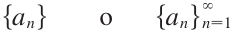
TEOREMAS IMPORTANTES SOBRE L�MITES Y CONVERGENCIA
Teorema 1
Toda sucesi�n convergente es acotada.
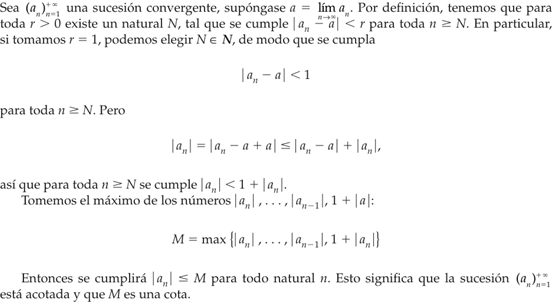
Teorema 2


Una sucesi�n {an} tiene el l�mite L y lo expresamos como

s� podemos hacer que los t�rminos an se
aproximen a L tanto como se quiera tomando n lo suficientemente
grande. Si  existe, se dice que la sucesi�n
converge (o que es convergente). De lo contrario, se dice que la sucesi�n
diverge (o es divergente).
existe, se dice que la sucesi�n
converge (o que es convergente). De lo contrario, se dice que la sucesi�n
diverge (o es divergente).
SUCESIONES MON�TONAS Y ACOTADAS
1.2 Definici�n de serie. Convergencia de una serie. Propiedades y condiciones para la convergencia.
1.3 Serie geom�trica y serie p.
1.4 Series de t�rminos positivos. Criterios de comparaci�n y del cociente o de D'Alembert.
1.5 Series de signos alternados. Criterio de Leibniz.
1.6 Series de potencias.
1.7 Desarrollo de funciones en series de potencias. Serie de Maclaurin, de Taylor y desarrollo de funciones trigonom�tricas.
2. Las integrales definida e indefinida.
2.1 Concepto de sumas de Riemann. Concepto de integral definida. Interpretaci�n geom�trica y propiedades.
2.2 Enunciado e interpretaci�n geom�trica del teorema del valor medio del c�lculo integral.
2.3 Definici�n de la integral indefinida a partir de la integral definida con el extremo superior variable. Enunciado y demostraci�n del teorema fundamental de c�lculo.
2.4 Determinaci�n de integrales indefinidas inmediatas. Cambio de variable.
2.5 Integrales de funciones cuyo resultado involucra a la funci�n logaritmo natural.
2.6 Regla de L'H�pital y sus aplicaciones a formas indeterminadas en l�mites de funciones.
2.7 La integral impropia.
3. M�todos de integraci�n.
3.1 Integraci�n por partes.
3.2 Integrales de expresiones trigonom�tricas e integraci�n por sustituci�n trigonom�trica.
3.3 Integraci�n por descomposici�n en fracciones racionales.
3.4 Aplicaciones de la integral definida al c�lculo de: �rea en coordenadas cartesianas, longitud de arco en coordenadas cartesianas y polares, y vol�menes de s�lidos de revoluci�n.
4. Derivaci�n y diferenciaci�n de funciones escalares de varias variables.
4.1 Definici�n de funciones escalares de variable vectorial. Regi�n de definici�n.
4.2 Representaci�n gr�fica para el caso de funciones de dos variables independientes. Curvas de nivel.
4.3 Conceptos de l�mites y continuidad para funciones escalares de variable vectorial de dos variables independientes.
4.4 Derivadas parciales e interpretaci�n geom�trica para el caso de dos variables independientes. Vector normal a una superficie. Ecuaciones del plano tangente y de la recta normal.
4.5 Derivadas parciales sucesivas. Teorema de derivadas parciales mixtas.
4.6 Funci�n diferenciable. Diferencial total.
4.7 Funci�n de funci�n. Regla de la cadena.
4.8 Funci�n impl�cita. Derivaci�n impl�cita en sistemas de ecuaciones.
4.9 Concepto de gradiente. Operador nabla. Definici�n de derivada direccional. Interpretaci�n geom�trica y aplicaciones.
5. Bibliograf�a.
STEWART, James - C�lculo Trascendentes tempranas.
F�SICA EXPERIMENTAL (1223)
Objetivo(s) del curso:
El alumno desarrollar� su capacidad para elaborar modelos matem�ticos y gr�ficos a partir de fen�menos f�sicos que le permitir�n estudiar dichos fen�menos y determinar su comportamiento bajo diferentes condiciones, estimulando sus actitudes de observaci�n, investigaci�n y creatividad. Emplear� sus habilidades en el manejo de instrumentos de medici�n y de los sistemas de unidades m�s usuales en ingenier�a.
1. F�sica e ingenier�a.
1.1 Definici�n de f�sica y su campo de estudio.
F�SICA
La f�sica es una ciencia experimental; es una de las ciencias naturales fundamentales que se ocupa del estudio de las propiedades y el comportamiento de la materia, la energ�a, el espacio y el tiempo. A trav�s de ella, se busca comprender c�mo interact�an estos elementos entre s�, estableciendo relaciones cuantitativas y cualitativas. Es considerada la base de muchas otras ciencias, ya que proporciona los principios esenciales sobre los cuales se sustentan disciplinas como la qu�mica, la biolog�a y la astronom�a.
La f�sica puede definirse como la ciencia que investiga los conceptos fundamentales de la materia, la energ�a y el espacio, as� como las relaciones entre ellos.
El campo de estudio de la f�sica abarca desde los fen�menos m�s microsc�picos, como las interacciones entre part�culas subat�micas, hasta los eventos macrosc�picos, como el movimiento de los cuerpos celestes. Entre sus �reas de inter�s destacan la mec�nica, la termodin�mica, la �ptica, el electromagnetismo y la f�sica moderna, que incluye la teor�a cu�ntica y la relatividad. Su car�cter experimental permite formular y validar hip�tesis mediante observaciones y experimentos controlados. A medida que evoluciona la tecnolog�a, los l�mites de la f�sica se ampl�an, dando lugar a nuevas preguntas e investigaciones en �reas como la nanotecnolog�a y la astrof�sica.
NATURALEZA Y METODOLOG�A
La naturaleza de la f�sica radica en su capacidad para analizar y predecir fen�menos naturales a trav�s de un enfoque sistem�tico. En este sentido, el m�todo cient�fico es una herramienta esencial. Este m�todo incluye varias etapas clave: la observaci�n inicial de un fen�meno, la formulaci�n de hip�tesis para explicarlo, la experimentaci�n para validar esas hip�tesis y, finalmente, el establecimiento de teor�as o leyes basadas en los resultados obtenidos. Sin embargo, la f�sica no se limita al estudio emp�rico; tambi�n incluye una fuerte componente te�rica, que permite modelar sistemas complejos y resolver problemas matem�ticamente.
TEOR�A: Decir que una idea es una teor�a NO implica que se trate de una divagaci�n o de un concepto sin comprobar. M�s bien, una teor�a es una explicaci�n de fen�menos naturales basada en observaciones y en los principios fundamentales aceptados.
Por otro lado, la f�sica no solo se limita a describir fen�menos que ya conocemos. Tambi�n tiene un car�cter predictivo. A trav�s de modelos matem�ticos y simulaciones, los f�sicos son capaces de anticipar resultados o efectos que a�n no han sido observados experimentalmente. Un ejemplo famoso es la predicci�n de la existencia del bos�n de Higgs, una part�cula subat�mica cuya presencia fue confirmada d�cadas despu�s de haber sido propuesta por la teor�a del modelo est�ndar de la f�sica de part�culas.
En t�rminos educativos, la f�sica es una de las ciencias m�s exigentes, ya que requiere un entendimiento s�lido de conceptos matem�ticos avanzados, como el c�lculo diferencial, integral y vectorial, la estad�stica y el �lgebra lineal. Las matem�ticas son, de hecho, el lenguaje universal de la f�sica, ya que permiten expresar relaciones complejas de una manera precisa y cuantificable.
Cada estudiante que entra en un curso de f�sica para principiantes deber�a contar ya con los requisitos y las habilidades necesarias para aprobarlo; por ende, si no lo hace se deber� a otras razones: falta de motivaci�n, una excesiva carga de trabajo, un empleo externo, enfermedades o problemas personales.
Los consejos siguientes provienen de profesores con experiencia que han tenido �xito en los cursos para estudiantes de los primeros niveles de f�sica.
� La responsabilidad del aprendizaje le corresponde al estudiante. El maestro es un mero facilitador, la escuela es un simple campus y el texto es s�lo un libro. Asista puntualmente a las clases, preparado para los temas que se expondr�n. Estudie antes el material y anote las preguntas que desee plantear al profesor.
� El aprendizaje oportuno es aprendizaje eficaz. Es mejor estudiar m�nimo una hora cada d�a de la semana que estudiar 20 horas el s�bado y el domingo. Despu�s de cada clase o exposici�n emplee su hora libre m�s pr�xima para reforzar lo que ha aprendido de los temas presentados. Repase algunos ejemplos. Cuanto m�s tiempo deje pasar m�s olvidar� de la clase y perder� m�s tiempo.
Si espera hasta el fin de semana necesitar� al menos una hora simplemente para revisar y reconstruir la clase a partir de sus notas. Estudiar todo un poco antes del examen no funciona, mejor repase los problemas que ya haya resuelto y trabaje en libros otros semejantes.
� El aprendizaje cabal va m�s all� del sal�n de clases. A fin de retener y aplicar lo aprendido en el sal�n, es indispensable que resuelva problemas por su cuenta. Solicite la ayuda de otras personas, incluida la del profesor, despu�s de haberse esforzado en contestar los problemas asignados. No hay sustituto para la participaci�n activa en el pensamiento y en los procedimientos necesarios para resolver problemas.
� Repase las habilidades b�sicas. Las Matem�ticas t�cnicas y comprensi�n lectora, se destacan por ser las habilidades que tal vez est�n un tanto d�biles o haya que pulir. Aseg�rese de que entiende bien esos temas.
� Estudie o vea el plan de actividades y estudios. Procure estar enterado de los temas que se incluir�n en los ex�menes, cu�ndo se llevar�n a cabo �stos y c�mo influir�n en la calificaci�n final.
� Busque un compa�ero y p�dale su n�mero telef�nico. Establezca un sistema de compa�erismo donde cada uno informe al otro sobre las actividades de clase o de laboratorio a las que no haya asistido. Pida a esa persona que recoja los materiales impresos o digitales y las instrucciones que se den cuando usted no est� presente.
� La organizaci�n es la clave del verdadero aprendizaje. Mantenga al d�a una carpeta, dividida por secciones con sus respectivos t�tulos: �Material impreso recibido�, �Notas�, �Problemas�, �Ex�menes calificados�, �Pr�cticas de laboratorio calificadas�, etc.
� Si tiene dificultades, pida ayuda cuanto antes. Hoy en d�a los estudiantes tienen a su alcance una gran cantidad de material de estudio que antiguamente s�lo exist�a en sue�os. Hay tutoriales asistidos por computadora, internet, Inteligencias Artificiales, gu�as de soluciones, manuales de resoluci�n de problemas e incluso otros libros de textos que explican los mismos temas. Su profesor le indicar�n los m�s apropiados para usted, pero usted es responsable de obtenerlos.
CAMPOS DE ESTUDIO DE LA F�SICA
El campo de estudio de la f�sica es extremadamente amplio y abarca desde los fen�menos m�s peque�os, como las interacciones de part�culas subat�micas, hasta los m�s grandes, como la formaci�n y evoluci�n del universo. Esta amplitud se refleja en las m�ltiples ramas de la f�sica, cada una de las cuales se centra en aspectos espec�ficos del mundo natural. Algunas de estas ramas:
1. Mec�nica: Es la rama que estudia el movimiento y la interacci�n de los cuerpos. Incluye la mec�nica cl�sica, basada en las leyes de Newton, y la mec�nica cu�ntica, que describe el comportamiento de part�culas a nivel subat�mico. La mec�nica cl�sica encuentra aplicaciones en ingenier�a estructural, dise�o de maquinaria y construcci�n, mientras que la mec�nica cu�ntica es esencial en la tecnolog�a moderna, como los semiconductores y la computaci�n cu�ntica.
2. Termodin�mica: Examina las propiedades t�rmicas de los sistemas, como la transferencia de calor, la energ�a y el trabajo. Es crucial en disciplinas como la ingenier�a mec�nica, la climatolog�a y la energ�a renovable. La termodin�mica tiene aplicaciones pr�cticas en motores, refrigeradores y plantas de energ�a.
3. Electromagnetismo: Se centra en las fuerzas el�ctricas y magn�ticas, y en c�mo interact�an con la materia. Esta rama ha sido fundamental para el desarrollo de tecnolog�as como la electricidad, la comunicaci�n inal�mbrica y la inform�tica.
4. �ptica: Estudia la luz y los fen�menos relacionados con su propagaci�n, reflexi�n, refracci�n e interferencia. La �ptica tiene aplicaciones pr�cticas en dispositivos como c�maras, microscopios y telescopios, as� como en tecnolog�as emergentes como la realidad aumentada.
5. Ondas y Ac�stica: La f�sica de ondas y ac�stica estudia los fen�menos relacionados con la propagaci�n de perturbaciones a trav�s de un medio y el comportamiento del sonido. En t�rminos generales, una onda es una oscilaci�n que transfiere energ�a de un lugar a otro sin que haya un transporte neto de materia. La rama de ondas y ac�stica no solo abarca la teor�a b�sica sobre las propiedades de las ondas, como frecuencia, longitud de onda, amplitud y velocidad, sino que tambi�n se centra en fen�menos complejos como la interferencia, la difracci�n y la resonancia. Estos conceptos son fundamentales para comprender fen�menos como la formaci�n de ecos, la amplificaci�n sonora en instrumentos y la propagaci�n de ondas en medios no homog�neos.
6. F�sica Moderna: Incluye teor�as m�s recientes como la relatividad y la mec�nica cu�ntica. Esta rama ha revolucionado nuestra comprensi�n del universo al proporcionar explicaciones sobre el espacio-tiempo, la energ�a nuclear y la estructura fundamental de la materia. La f�sica moderna tambi�n est� en la base de innovaciones tecnol�gicas como la energ�a nuclear y los sistemas GPS.
7. Astrof�sica y Cosmolog�a: Exploran los fen�menos que ocurren a escala c�smica, incluyendo la formaci�n de estrellas, galaxias y el origen del universo. Estas �reas combinan la f�sica con la astronom�a para responder preguntas fundamentales sobre la existencia y el destino del cosmos.
8. F�sica Aplicada: Se centra en el uso de principios f�sicos para resolver problemas pr�cticos en ingenier�a, tecnolog�a y medicina. Un ejemplo destacado es la f�sica m�dica, que aplica conocimientos de radiaci�n y mec�nica para el diagn�stico y tratamiento de enfermedades.
RELEVANCIA EN LA SOCIEDAD
La f�sica no solo tiene un impacto te�rico, sino tambi�n pr�ctico en la sociedad. Gracias a esta ciencia, se han desarrollado tecnolog�as que han transformado nuestra vida cotidiana, como la electricidad, los tel�fonos m�viles, los sat�lites y las computadoras. Adem�s, la f�sica ha sido instrumental en enfrentar desaf�os globales, como la b�squeda de fuentes de energ�a sostenibles, el cambio clim�tico y la exploraci�n espacial.
Por otro lado, la f�sica tambi�n juega un papel importante en la educaci�n y la formaci�n cient�fica, ya que fomenta habilidades cr�ticas como el razonamiento l�gico, la resoluci�n de problemas y la innovaci�n. Estos atributos son esenciales para cualquier campo profesional en el siglo XXI, desde la investigaci�n acad�mica hasta la industria tecnol�gica.
1.2 Clasificaci�n de la f�sica: cl�sica y moderna.
La f�sica, como una de las ciencias fundamentales, busca entender las leyes que rigen el comportamiento del universo desde las part�culas m�s peque�as hasta las estructuras m�s grandes del cosmos. Su clasificaci�n en f�sica cl�sica y f�sica moderna surge de la necesidad de abarcar fen�menos que, por su naturaleza, requieren diferentes enfoques te�ricos y experimentales.
F�SICA CL�SICA
La f�sica cl�sica se desarrolla principalmente desde el siglo XVII hasta finales del siglo XIX y representa el fundamento de gran parte de los principios utilizados en el estudio del mundo natural. Est� basada en observaciones directas y experimentos realizados bajo condiciones normales, es decir, a velocidades mucho menores que la velocidad de la luz y en escalas espaciales mayores que el tama�o de los �tomos.
Los principios de la f�sica cl�sica comenzaron a consolidarse con las leyes del movimiento de Isaac Newton, que explicaron los principios b�sicos del movimiento y la gravitaci�n universal. Estos conceptos revolucionaron la comprensi�n del mundo f�sico y sentaron las bases para disciplinas como la mec�nica, que estudia el movimiento de los cuerpos y las fuerzas que lo producen. Dentro de la mec�nica cl�sica, se encuentran ramas espec�ficas como la est�tica, la din�mica y la cinem�tica, las cuales se utilizan para resolver problemas desde la ingenier�a hasta la astronom�a.
Otra rama crucial de la f�sica cl�sica es la termodin�mica, que examina las relaciones entre el calor, el trabajo, la energ�a y la entrop�a. Los principios de la termodin�mica han sido esenciales no solo para la f�sica, sino tambi�n para la qu�mica y la ingenier�a, especialmente en el dise�o de motores y sistemas energ�ticos. Por ejemplo, las m�quinas t�rmicas, como los motores de combusti�n interna, se fundamentan en estos principios.
El electromagnetismo es otro pilar de la f�sica cl�sica, desarrollado principalmente por las aportaciones de James Clerk Maxwell. Su teor�a unific� la electricidad y el magnetismo en un marco matem�tico coherente y predijo la existencia de ondas electromagn�ticas, sentando las bases para la tecnolog�a de las telecomunicaciones y la �ptica cl�sica. Este �ltimo campo estudia la propagaci�n, reflexi�n y refracci�n de la luz, y ha sido esencial para el desarrollo de instrumentos como los telescopios y los microscopios.
Si bien la f�sica cl�sica ofrece explicaciones precisas para muchos fen�menos cotidianos, tiene limitaciones. Por ejemplo, no puede explicar adecuadamente los efectos observados a velocidades cercanas a la de la luz, ni los fen�menos a escalas at�micas y subat�micas. Estas limitaciones llevaron al desarrollo de la f�sica moderna.
F�SICA MODERNA
La f�sica moderna surgi� a finales del siglo XIX y principios del siglo XX como respuesta a fen�menos que la f�sica cl�sica no pod�a explicar. Dos pilares principales de esta nueva etapa de la f�sica son la teor�a de la relatividad y la mec�nica cu�ntica, que introdujeron conceptos radicalmente nuevos sobre la naturaleza del espacio, el tiempo y la materia.
La teor�a de la relatividad, propuesta por Albert Einstein, se divide en dos ramas: la relatividad especial y la relatividad general. La relatividad especial, publicada en 1905, describe c�mo las leyes de la f�sica son las mismas para todos los observadores en movimiento rectil�neo uniforme y c�mo el tiempo y el espacio se entrelazan en un continuo llamado espacio-tiempo. Este marco te�rico introduce el concepto de que la velocidad de la luz es constante en todos los sistemas de referencia inerciales y que la masa y la energ�a son equivalentes, como lo demuestra la famosa ecuaci�n E=mc2E=mc^2E=mc2. La relatividad general, desarrollada en 1915, ampl�a estas ideas al incorporar la influencia de la gravedad, describi�ndola como una curvatura del espacio-tiempo causada por la masa.
Por otro lado, la mec�nica cu�ntica aborda el comportamiento de las part�culas a escalas at�micas y subat�micas, donde las leyes de la f�sica cl�sica dejan de ser v�lidas. Iniciada con los trabajos de Max Planck y Albert Einstein sobre la radiaci�n del cuerpo negro y el efecto fotoel�ctrico, respectivamente, esta rama de la f�sica postula que la energ�a no es continua, sino que est� cuantizada en peque�os paquetes llamados "cuantos". Este descubrimiento revolucion� la manera de entender la materia y la energ�a. Con el desarrollo posterior de la teor�a cu�ntica por cient�ficos como Niels Bohr, Werner Heisenberg y Erwin Schr�dinger, se introdujeron conceptos como la dualidad onda-part�cula, el principio de incertidumbre y las funciones de onda, que permiten describir probabil�sticamente el comportamiento de las part�culas subat�micas.
La f�sica moderna tambi�n incluye el estudio del n�cleo at�mico y las fuerzas fundamentales de la naturaleza. En este contexto, la f�sica nuclear explora las propiedades y reacciones de los n�cleos at�micos, mientras que la f�sica de part�culas busca identificar y clasificar las part�culas fundamentales que componen el universo, como los quarks y los leptones. Este campo ha permitido el desarrollo de teor�as como el Modelo Est�ndar, que describe tres de las cuatro fuerzas fundamentales: la fuerza electromagn�tica, la fuerza nuclear fuerte y la fuerza nuclear d�bil.
Asimismo, la f�sica moderna ha dado lugar a importantes avances tecnol�gicos y aplicaciones pr�cticas. Por ejemplo, la teor�a cu�ntica ha sido fundamental para el desarrollo de los semiconductores, que son la base de los dispositivos electr�nicos modernos, como computadoras y tel�fonos m�viles. Adem�s, las investigaciones en f�sica nuclear han llevado a la creaci�n de reactores nucleares y t�cnicas de diagn�stico m�dico, como la tomograf�a por emisi�n de positrones (PET).
En el �mbito de la astrof�sica, la relatividad general ha sido crucial para entender fen�menos como los agujeros negros, las ondas gravitacionales y la expansi�n del universo. Estos descubrimientos han transformado nuestra comprensi�n del cosmos y han generado nuevas preguntas sobre la naturaleza de la materia y la energ�a oscuras, que constituyen la mayor parte del contenido del universo.
CONEXI�N ENTRE LA F�SICA CL�SICA Y MODERNA
Aunque la f�sica moderna introdujo conceptos que superan las limitaciones de la f�sica cl�sica, ambas ramas no son mutuamente excluyentes. En realidad, la f�sica moderna complementa a la cl�sica al extender su aplicabilidad a condiciones extremas, como altas velocidades, escalas microsc�picas o intensos campos gravitatorios. Por ejemplo, las leyes de Newton siguen siendo v�lidas para describir el movimiento de los planetas dentro del Sistema Solar, pero para estudiar la curvatura del espacio-tiempo cerca de un agujero negro, es necesario recurrir a la relatividad general.
En resumen, la f�sica cl�sica y la moderna representan diferentes enfoques para explorar y comprender la realidad f�sica. La primera aborda los fen�menos que experimentamos en nuestra vida cotidiana, mientras que la segunda nos lleva m�s all� de los l�mites de lo observable directamente, desentra�ando los misterios del universo a nivel c�smico y subat�mico. Juntas, constituyen un legado del ingenio humano y una herramienta invaluable para moldear el futuro cient�fico y tecnol�gico del mundo
1.3 Concepto de ingenier�a. �reas de la ingenier�a.
1.4 M�todo de estudio en la f�sica: el m�todo cient�fico experimental.
1.5 M�todo de resoluci�n de problemas en la ingenier�a.
1.6 Interacci�n entre la f�sica y la ingenier�a.
2. Conceptos b�sicos de metrolog�a.
2.1 La importancia de la medici�n en la f�sica.
2.2 Conceptos de dimensiones y unidades.
2.3 Definiciones de unidad fundamental y unidad derivada.
2.4 Dimensiones de los sistemas de unidades absolutos y gravitatorios. Distinci�n esencial entre estos tipos de sistemas.
2.5 Dimensiones, unidades de base y derivadas del Sistema Internacional. Principio de homogeneidad dimensional. Reglas para la escritura de unidades. Prefijos utilizados en las unidades.
2.6 Mediciones directa e indirecta.
2.7 Conceptos de error, error sistem�tico y error aleatorio.
2.8 Sensibilidad de un instrumento de medici�n. Obtenci�n experimental de la precisi�n y de la exactitud de un instrumento de medici�n. Proceso de calibraci�n.
2.9 Manejo de datos experimentales, incertidumbre de una medici�n, an�lisis estad�stico elemental de datos experimentales, ajuste gr�fico de curvas y el m�todo del m�nimo de la suma de los cuadrados.
3. Mec�nica cl�sica.
3.1 Campo de estudio de la mec�nica cl�sica y de la din�mica. Conceptos de posici�n, desplazamiento, velocidad media, velocidad instant�nea, rapidez, aceleraci�n media y aceleraci�n instant�nea, masa, fuerza, peso, trabajo, energ�a, energ�a cin�tica y energ�a potencial gravitatoria. Planeaci�n del experimento.
3.2 Registro y tabulaci�n de las variables desplazamiento y tiempo.
3.3 Modelo matem�tico que describe la relaci�n entre el desplazamiento y el cuadrado del tiempo. Significado f�sico de la pendiente. Modelos matem�ticos y gr�ficos que relacionan la rapidez y la aceleraci�n con el tiempo.
3.4 Prueba del modelo y su aplicaci�n en la soluci�n de problemas de din�mica.
4. Mec�nica de fluidos.
4.1 Campo de estudio de la mec�nica de fluidos. Cuerpo s�lido y fluido ideal. Densidad, densidad relativa, volumen espec�fico y peso espec�fico. Medios homog�neos e is�tropos. Presi�n. Planeaci�n del experimento.
4.2 Registro y tabulaci�n de las variables profundidad y presi�n.
4.3 Ecuaci�n de una l�nea recta que represente los valores experimentales. Significado f�sico de la pendiente de la recta obtenida.
4.4 Ecuaci�n del gradiente de presi�n. Uso del modelo en la determinaci�n experimental de la presi�n atmosf�rica. Relaci�n entre presi�n absoluta, relativa y atmosf�rica. Aplicaci�n del modelo en la soluci�n de problemas de hidrost�tica.
5. Termodin�mica.
5.1 Campo de estudio de la termodin�mica. Conceptos de temperatura, equilibrio t�rmico, calor como transferencia de energ�a, energ�a interna y capacidad t�rmica espec�fica. Sistemas termodin�micos abierto, cerrado y aislado.
5.2 Registro y tabulaci�n de las variables variaci�n de energ�a interna y temperatura.
5.3 Ecuaci�n de una l�nea recta que represente los valores experimentales. Significado f�sico de la pendiente de la recta obtenida.
5.4 Prueba del modelo y su aplicaci�n en la determinaci�n de la capacidad t�rmica espec�fica de una sustancia y en la soluci�n de problemas de calorimetr�a.
6. Electromagnetismo.
6.1 Campo de estudio del electromagnetismo. Conceptos de carga el�ctrica y sus tipos, campo el�ctrico, diferencia de potencial, corriente el�ctrica y campo magn�tico. Planeaci�n del experimento.
6.2 Registro y tabulaci�n de las variables: fuerza de origen magn�tico y corriente el�ctrica.
6.3 Ecuaci�n de una l�nea recta que represente los valores experimentales. Significado f�sico de la pendiente de la recta obtenida.
6.4 Prueba del modelo y su aplicaci�n en la soluci�n de problemas de electromagnetismo.
7. Movimiento ondulatorio.
7.1 Conceptos de onda y onda viajera. Ondas longitudinales y transversales. Onda estacionaria. Ondas viajeras unidimensionales arm�nicas. Amplitud y longitud de onda, n�mero de onda y frecuencia angular. La funci�n de onda para una onda arm�nica, frecuencia, rapidez de propagaci�n y modos de vibraci�n. Planeaci�n del experimento.
7.2 Registro y tabulaci�n de las variables: longitud de onda y frecuencia.
7.3 Ecuaci�n de una l�nea recta que represente los valores experimentales. Significado f�sico de la pendiente de la recta obtenida.
7.4 Prueba del modelo y su aplicaci�n en la soluci�n de problemas de movimiento ondulatorio.
8. �ptica geom�trica.
8.1 Campo de estudio de la �ptica; �ptica geom�trica y �ptica f�sica. Ondas electromagn�ticas, espectro visible. Frente de onda y rayo de luz. Reflexi�n y refracci�n. �ndice de refracci�n. Planeaci�n del experimento.
8.2 Registro y tabulaci�n de las variables: �ngulo de incidencia, �ngulo de reflexi�n y �ngulo de refracci�n; tabulaci�n de las variables seno del �ngulo de incidencia y seno del �ngulo de refracci�n.
8.3 Modelo matem�tico de la relaci�n entre el �ngulo de incidencia y el �ngulo de reflexi�n; modelo matem�tico entre el seno del �ngulo de incidencia y el seno del �ngulo de refracci�n.
8.4 Prueba del modelo y su aplicaci�n en la determinaci�n del �ndice de refracci�n de otro diel�ctrico transparente y en problemas relativos a refracci�n de un rayo de luz.
9. Sistemas de unidades.
9.1 Estructura del Sistema Internacional de Unidades. Unidades derivadas involucradas en los fen�menos estudiados.
9.2 Sistemas MKS: gravitatorio y absoluto. Sistemas CGS: gravitatorio y absoluto. Sistemas FPS: gravitatorio y absoluto.
9.3 Ecuaciones dimensionales. Conversi�n de unidades y de f�rmulas.
10. Bibliograf�a.
TIPPENS, - F�sica.
YOUNG,HUGH D.,FREEDMAN,ROGER A. - Sears y Zemansky F�sica universitaria con f�sica moderna.
EST�TICA (1123)
Objetivo(s) del curso:
El alumno comprender� los elementos y principios fundamentales de la mec�nica cl�sica newtoniana; analizar� y resolver� ejercicios de equilibrio isost�tico.
1. Fundamentos de la mec�nica cl�sica newtoniana.
1.1 Resumen hist�rico y descripci�n de la mec�nica cl�sica.
MEC�NICA
La mec�nica cl�sica es una rama de las ciencias f�sicas que estudia el estado de reposo o movimiento de los cuerpos que est�n sometidos a la acci�n de fuerzas.
En general, esta materia puede dividirse a su vez en tres ramas: mec�nica de cuerpos r�gidos, mec�nica de cuerpos deformables y mec�nica de fluidos.
La mec�nica de cuerpos r�gidos es esencial para el dise�o y el an�lisis de muchos tipos de elementos estructurales, componentes mec�nicos, o dispositivos electr�nicos que pueden encontrarse en la pr�ctica de la ingenier�a.
La Mec�nica de Cuerpos R�gidos se divide en dos �reas: Est�tica y Din�mica. La est�tica estudia el equilibrio de los cuerpos, es decir, de aquellos que est�n en reposo o se mueven a una velocidad constante; por su parte, la din�mica estudia el movimiento acelerado de los cuerpos.
Podemos considerar la est�tica como un caso especial de la din�mica, en el que la aceleraci�n es cero; sin embargo, la est�tica merece un tratamiento aparte en la ense�anza de la ingenier�a porque muchos objetos se dise�an con la intenci�n de que permanezcan en equilibrio.
RESUMEN HIST�RICO
El curso de est�tica se desarroll� desde los primeros tiempos de la historia porque sus principios pueden formularse con facilidad a partir de mediciones de geometr�a y fuerza. Por ejemplo, los escritos de Arqu�medes (287-212 a. C.) tratan del principio de la palanca.
Tambi�n se tiene registro de estudios sobre la polea, el plano inclinado y la llave de torsi�n en escritos antiguos en tiempos en que las necesidades de ingenier�a se limitaban primordialmente a la construcci�n de edificios.
Los principios de la din�mica dependen de una medici�n exacta del tiempo, por tal raz�n esta materia se desarroll� mucho despu�s. Galileo Galilei (1564-1642) fue uno de los primeros contribuyentes importantes a este campo.
Su trabajo consisti� en experimentos donde empleaba p�ndulos y cuerpos en ca�da. Sin embargo, fue Isaac Newton (1642-1727) quien realiz� las contribuciones m�s significativas en din�mica, entre las cuales est� la formulaci�n de las tres leyes fundamentales del movimiento y la ley de la atracci�n gravitacional universal.
Poco despu�s de que estas leyes se postularon, notables cient�ficos como Euler, D�Alembert, Lagrange y otros desarrollaron t�cnicas importantes para su aplicaci�n.
1.2 Noci�n de movimiento de un cuerpo.
Espacio: est� asociado a la noci�n de la posici�n de un punto en t�rminos de sus tres coordenadas dentro de un sistema cartesiano.
1.3 Modelos de cuerpos que se emplean en la mec�nica cl�sica y cantidades f�sicas escalares y vectoriales.
IDEALIZACIONES
Los modelos o idealizaciones se utilizan en mec�nica a fin de simplificar la aplicaci�n de la teor�a. Se considerar�n tres idealizaciones importantes.
Part�cula. Una part�cula tiene masa, pero posee un tama�o que puede pasarse por alto. Por ejemplo, el tama�o de la Tierra es insignificante en comparaci�n con el tama�o de su �rbita; por lo tanto, la Tierra puede modelarse como una part�cula cuando se estudia su movimiento orbital. Cuando un cuerpo se idealiza como una part�cula, los principios de la mec�nica se reducen a una forma bastante simplificada, puesto que la geometr�a del cuerpo no estar� incluida en el an�lisis del problema.
Cuerpo r�gido. Un cuerpo r�gido puede considerarse como una combinaci�n de un gran n�mero de part�culas donde todas �stas permanecen a una distancia fija entre s�, tanto antes como despu�s de la aplicaci�n de una carga. Este modelo es importante porque las propiedades del material de todo cuerpo que se supone r�gido no tendr�n que tomarse en cuenta al estudiar los efectos de las fuerzas que act�an sobre dicho cuerpo. En la mayor�a de los casos, las deformaciones reales que ocurren en estructuras, m�quinas, mecanismos, etc�tera, son relativamente peque�as, y el supuesto de cuerpo r�gido resulta adecuado para el an�lisis.
Fuerza concentrada. Una fuerza concentrada representa el efecto de una carga que se supone act�a en cierto punto de un cuerpo. Una carga puede representarse mediante una fuerza concentrada, siempre que el �rea sobre la que se aplique la carga sea muy peque�a en comparaci�n con el tama�o total del cuerpo. Un ejemplo ser�a la fuerza de contacto entre una rueda y el suelo.
CANTIDADES ESCALARES Y VECTORIALES
Escalares: Se describen �nicamente por su magnitud, como la masa, longitud y volumen.
Vectores: Requieren tanto magnitud como direcci�n. Fuerza, posici�n y momento son ejemplos comunes. Los vectores se representan gr�ficamente mediante flechas, donde la longitud indica la magnitud y el �ngulo determina la direcci�n.
1.4 Conceptos fundamentales: espacio, tiempo, masa, fuerza y sus unidades de medida.
CANTIDADES B�SICAS
Antes de analizar los sistemas mec�nicos, es esencial comprender conceptos b�sicos como longitud, tiempo, masa y fuerza.
Longitud: La longitud permite localizar un punto en el espacio y definir el tama�o de un sistema f�sico.
Una vez que se ha definido una unidad est�ndar de longitud, �sta puede usarse para definir distancias y propiedades geom�tricas de un cuerpo como m�ltiplos de esta unidad.
Tiempo: El tiempo se concibe como una secuencia de eventos. Aunque los principios de la est�tica son independientes del tiempo, esta cantidad tiene un papel importante en el estudio de la din�mica.
Masa: La masa es una medici�n de una cantidad de materia que se usa para comparar la acci�n de un cuerpo con la de otro. Esta propiedad se manifiesta como una atracci�n gravitacional entre dos cuerpos y proporciona una medida de la resistencia de la materia a un cambio en su velocidad.
Fuerza: En t�rminos simples y sin rigurosidad se define como un empuje o tir�n ejercido entre cuerpos, ya sea por contacto directo o a distancia (por ejemplo, fuerzas gravitacionales, el�ctricas o magn�ticas). Las fuerzas se describen completamente mediante su magnitud, direcci�n y punto de aplicaci�n
La mec�nica cl�sica se apoya en las tres leyes fundamentales de Newton:
1. Ley de inercia: Un cuerpo en reposo o en movimiento rectil�neo uniforme permanece en ese estado si no act�a una fuerza desequilibrada.
2. Ley de la fuerza-aceleraci�n: La aceleraci�n de un cuerpo es directamente proporcional a la fuerza neta que act�a sobre �l e inversamente proporcional a su masa.
3. Ley de acci�n-reacci�n: Las fuerzas entre dos cuerpos son iguales en magnitud, opuestas en direcci�n y act�an a lo largo de la misma l�nea.
1.5 Principio de Stevin.
1.6 Leyes de Newton y el sistema de referencia inercial.
1.7 Ley de la gravitaci�n universal.
2. Conceptos b�sicos de la est�tica.
2.1 Representaci�n vectorial de una fuerza.
2.2 Composici�n y descomposici�n de la representaci�n vectorial de una fuerza.
2.3 Principio de equilibrio de dos fuerzas y teorema de transmisibilidad.
2.4 Clasificaci�n de los sistemas de fuerzas.
2.5 Diagrama de cuerpo libre.
2.6 Equilibrio de la part�cula.
3. Sistemas de fuerzas equivalentes.
3.1 Momentos de una fuerza con respecto a un punto y a un eje.
3.2 Teorema de Varignon.
3.3 Definici�n de sistemas de fuerzas equivalentes.
3.4 Par de fuerzas y sus propiedades.
3.5 Par de transporte.
3.6 Sistema general de fuerzas y su sistema fuerza-par equivalente.
3.7 Sistemas equivalentes m�s simples: una sola fuerza, un par de fuerzas.
4. Centros de gravedad y centroides.
4.1 Primeros momentos.
4.2 Centro de gravedad de un cuerpo.
4.3 Centroide de un �rea.
4.4 Centroide de un volumen.
4.5 Determinaci�n de centros de gravedad y centroides para cuerpos compuestos.
4.6 Simplificaci�n de un sistema de fuerzas con distribuci�n continua.
5. Estudio del equilibrio de los cuerpos.
5.1 Restricciones a los movimientos de un cuerpo r�gido.
5.2 Apoyos y ligaduras m�s empleadas en la ingenier�a.
5.3 Condiciones necesarias y suficientes de equilibrio para un cuerpo r�gido.
5.4 An�lisis de equilibrio isost�tico y condiciones de no equilibrio.
5.5 Determinaci�n de reacciones de apoyos y ligaduras de sistemas mec�nicos en equilibrio.
6. Fricci�n.
6.1 Naturaleza de la fuerza de fricci�n.
6.2 Clasificaci�n de la fricci�n.
6.3 Fricci�n en seco.
6.4 Leyes de Coulomb-Morin.
6.5 Casos de deslizamiento y volcamiento de cuerpos.
7. Bibliograf�a.
HIBBELER, Russell - Ingenier�a mec�nica, est�tica.
DIBUJO MEC�NICO E INDUSTRIAL (1209)
Objetivo(s) del curso:
El alumno elaborar� e interpretar� planos dentro de las ramas de la ingenier�a, a fin de poder establecer una comunicaci�n eficaz durante el ejercicio profesional.
1. Introducci�n al dibujo.
1.1 Definici�n de dibujo.
DIBUJO
Un Dibujo se define como un conjunto de im�genes y especificaciones gr�ficas detalladas dise�adas para representar objetos f�sicos o procesos. Su objetivo principal es permitir la recreaci�n precisa de esos objetos o procesos a partir de la informaci�n proporcionada.
Un dibujo es una representaci�n gr�fica de un objeto real. Por lo tanto, el dibujo, es un lenguaje gr�fico en virtud de que a vale de im�genes para, comunicar pensamientos e ideas. Como estas im�genes las entiende gente de distintas naciones, el dibujo recibe el nombre de Lenguaje Universal.

1.2 Clasificaci�n de dibujos.
Clasificaci�n
Los dibujos se pueden clasificar en varias categor�as, destacando:
Dibujos axonom�tricos: Representan las tres dimensiones de un objeto con factores de escala constantes para cada direcci�n. Incluyen:
� Dibujos isom�tricos: Escala uniforme en los tres ejes.
� Dibujos dim�tricos: Escala uniforme en dos de los ejes.
� Dibujos trim�tricos: Diferentes factores de escala para los tres ejes.
Dibujos oblicuos: Muestran una cara del objeto en el plano del papel, con las dimensiones de profundidad en �ngulos espec�ficos:
� Oblicuo caballero: La profundidad se mide en escala completa.
� Oblicuo gabinete: La profundidad se mide a la mitad de su escala.
Dibujos en perspectiva: Representan objetos con l�neas que convergen hacia puntos de fuga, generando una apariencia tridimensional m�s realista.
Dibujos en detalle: Se enfocan en la geometr�a, dimensiones, tolerancias y materiales de una parte espec�fica
2. An�lisis geom�trico.
2.1 Concepto de lugar geom�trico.
Un lugar geom�trico se define como un conjunto de puntos que cumplen una o m�s condiciones geom�tricas espec�ficas. Por ejemplo, un c�rculo es un lugar geom�trico que incluye todos los puntos equidistantes de un punto central.
2.2 Definici�n de lugares geom�tricos b�sicos.
Los lugares geom�tricos b�sicos incluyen formas como:
- L�nea recta: Lugar geom�trico de todos los puntos alineados en una direcci�n fija.
- C�rculo: Lugar geom�trico donde todos los puntos est�n equidistantes de un punto fijo llamado centro.
- Par�bola: Conjunto de puntos equidistantes de un punto fijo (foco) y una l�nea recta (directriz).
- Elipse: Lugar geom�trico cuyos puntos mantienen constante la suma de sus distancias a dos focos fijos.
2.3 An�lisis tridimensional.
El an�lisis tridimensional en el dibujo implica representar y estudiar objetos en tres dimensiones utilizando sistemas de coordenadas tridimensionales (x, y, z). Este enfoque permite interpretar vol�menes y geometr�as complejas en espacios tridimensionales.
2.4 Elementos geom�tricos en el espacio.
Los elementos geom�tricos en el espacio incluyen:
- Puntos: Posiciones espec�ficas sin dimensi�n.
- L�neas: Extensiones unidimensionales que conectan dos puntos.
- Planos: Superficies bidimensionales infinitas.
- S�lidos: Vol�menes tridimensionales encerrados por superficies.
2.5 Concepto de proyecci�n.
La proyecci�n es el proceso de transformar un objeto tridimensional en una representaci�n bidimensional mediante l�neas que conectan puntos del objeto con un plano de observaci�n.
2.6 Clasificaci�n de proyecciones.
Las proyecciones pueden clasificarse en:
- Proyecciones ortogonales: Proyecciones perpendiculares al plano de observaci�n.
- Proyecciones oblicuas: Proyecciones en �ngulos distintos a 90� respecto al plano de observaci�n.
- Proyecciones en perspectiva: Proyecciones que convergen hacia uno o m�s puntos de fuga para simular la profundidad.
2.7 Sistemas de proyecciones ortogonales.
Los sistemas de proyecciones ortogonales incluyen:
- Proyecci�n del primer �ngulo: El objeto se sit�a entre el observador y el plano de proyecci�n.
- Proyecci�n del tercer �ngulo: El plano de proyecci�n se sit�a entre el objeto y el observador, siendo este el sistema m�s com�n en Am�rica.
2.8 Consolidar las habilidades utilizando la herramienta computacional.
El uso de software CAD (Dise�o Asistido por Computadora) fortalece las habilidades de representaci�n gr�fica, permitiendo crear, analizar y modificar modelos tridimensionales con mayor precisi�n y eficiencia. Estas herramientas tambi�n facilitan el c�lculo de propiedades geom�tricas y el an�lisis de dise�o.
3. Norma de dibujo t�cnico.
3.1 Introducci�n.
La norma de dibujo t�cnico establece las bases y reglas que permiten la comunicaci�n clara y precisa entre los diferentes actores de un proyecto. Estas normas aseguran la uniformidad en la interpretaci�n y creaci�n de dibujos t�cnicos.
3.2 Clasificaci�n de los dibujos.
Los dibujos t�cnicos se clasifican seg�n su prop�sito y detalle en:
- Dibujos de conjunto: Representan la disposici�n y relaci�n entre diferentes partes.
- Dibujos de detalle: Describen una �nica pieza con todas sus dimensiones, materiales y especificaciones
3.3 Formatos.
Los formatos de los dibujos t�cnicos est�n regulados por normas internacionales como la ISO y ANSI. Estas normas definen tama�os de papel est�ndar, m�rgenes y la disposici�n de cuadros de t�tulo.
3.4 Vistas.
Las vistas son representaciones bidimensionales de un objeto tridimensional. Incluyen:
- Vista frontal: La principal.
- Vista superior y lateral: Complementan la frontal.
- Vistas m�ltiples y auxiliares: Para detalles espec�ficos o inclinaciones no visibles en las vistas principales.
3.5 Vistas auxiliares.
Se utilizan para representar superficies inclinadas u oblicuas que no se observan claramente en las vistas principales. Estas permiten identificar relaciones geom�tricas como �ngulos, pendientes o distancias.
3.6 Acotaciones (sistemas usuales).
Las acotaciones comunican dimensiones en un dibujo t�cnico. Se aplican siguiendo normas como la ASME Y14.5 para garantizar precisi�n. Existen varios sistemas:
- Cadena: Dimensiones consecutivas.
- Base com�n: Todas las dimensiones parten de un mismo punto.
3.7 Tolerancias dimensionales, geom�tricas y ajustes.
Las tolerancias especifican l�mites aceptables de variaci�n en dimensiones y geometr�a. Estas se dividen en:
- Dimensionales: Controlan variaciones en tama�o.
- Geom�tricas: Aseguran precisi�n en forma y posici�n.
- Ajustes: Describen c�mo interact�an componentes ensamblados.
3.8 Representaci�n de acabados.
Los acabados superficiales se indican mediante s�mbolos que especifican rugosidad, procesos de manufactura y tratamientos adicionales.
3.9 Acotaci�n funcional.
La acotaci�n funcional prioriza las dimensiones cr�ticas para el correcto funcionamiento de una pieza o ensamblaje. Esto permite evitar errores y garantizar la intercambiabilidad.
3.10 Aplicaci�n de la herramienta computacional.
El uso de software CAD (Dise�o Asistido por Computadora) optimiza la creaci�n, modificaci�n y an�lisis de dibujos t�cnicos. Herramientas como SolidWorks o AutoCAD agilizan la aplicaci�n de normas, acotaciones y tolerancias.
4. Dibujo en el proyecto.
4.1 Medidas de elementos comerciales.
Los elementos comerciales incluyen componentes est�ndar como tornillos, tuercas y rodamientos. Las dimensiones de estos elementos suelen estar normalizadas para garantizar compatibilidad e intercambiabilidad entre diferentes fabricantes. Las especificaciones pueden incluir longitudes, di�metros y tolerancias, disponibles en cat�logos t�cnicos.
4.2 Dibujo de elementos mec�nicos simples.
Los elementos mec�nicos simples incluyen engranajes, poleas y ejes. Los dibujos representan la geometr�a b�sica, dimensiones, y especificaciones de materiales, mostrando su funcionalidad en un sistema m�s grande.
4.3 Representaci�n de uniones y ensambles.
Las uniones y ensambles se ilustran mediante diagramas que muestran c�mo las piezas individuales se conectan. Estas representaciones incluyen detalles como:
- Posici�n relativa de las partes.
- M�todos de uni�n: soldadura, pernos, chavetas, entre otros.
- Tolerancias y ajustes necesarios para el ensamblaje.
4.4 Dibujos de conjunto en el dise�o mec�nico.
Estos dibujos describen sistemas completos y su estructura. Incluyen vistas detalladas de todas las partes y su disposici�n en el ensamblaje, asegurando que se comprenda el funcionamiento integral del dise�o.
4.5 Dibujo en los procesos de manufactura.
El dibujo t�cnico en manufactura detalla c�mo se fabrican las piezas. Esto incluye:
- Proceso de corte y conformado.
- Simbolog�a para acabados superficiales.
- Indicaciones de tolerancias y materiales.
4.6 Dibujo en las instalaciones y su representaci�n.
Para instalaciones como sistemas el�ctricos o mec�nicos, los dibujos incluyen:
- Diagramas esquem�ticos.
- Planos de distribuci�n.
- Detalles constructivos para garantizar la instalaci�n correcta.
4.7 Aplicaci�n de la herramienta computacional.
El software CAD permite modelar y analizar elementos mec�nicos y sistemas completos, optimizando la precisi�n y reduciendo los errores en los planos t�cnicos. Se emplea para:
- Creaci�n de modelos tridimensionales.
- Generaci�n autom�tica de vistas y cortes.
- Aplicaci�n de tolerancias y ajustes en dise�os
5. Proyecto de dibujo.
5.1 Elaboraci�n de planos de un proyecto de ingenier�a.
La elaboraci�n de planos para un proyecto de ingenier�a implica una serie de pasos clave para garantizar que el dise�o cumpla con los requisitos t�cnicos y sea comprensible para su implementaci�n. Incluye:
- Creaci�n del plano del emplazamiento: Este es uno de los primeros dibujos que se realizan y proporciona una representaci�n en planta del �rea donde se desarrollar� el proyecto. Incluye detalles topogr�ficos, estructuras existentes, carreteras y elementos relevantes para el dise�o.
- Vistas en planta y detalles de construcci�n: Se generan vistas detalladas de los diferentes pisos, instalaciones el�ctricas, y sistemas mec�nicos y de plomer�a. Estos planos se organizan seg�n el orden de construcci�n para facilitar su interpretaci�n y ejecuci�n.
- Documentaci�n formal y legal: Los planos incluyen un cuadro de t�tulo, especificaciones y los sellos de un ingeniero profesional titulado, quien es legalmente responsable del dise�o y ejecuci�n del proyecto. Esto asegura que los planos sean documentos oficiales para construcci�n.
- Incorporaci�n de software CAD: Las herramientas computacionales se emplean para generar modelos tridimensionales, vistas m�ltiples, cortes y secciones. Esto agiliza el dise�o y permite realizar modificaciones de manera precisa y eficiente durante las fases del proyecto.
6. Bibliograf�a.
LIEU & SORBY, - Dibujo para dise�o de ingenier�a.
TERCER SEMESTRE
PROBABILIDAD (1436)
Objetivo(s) del curso:
El alumno aplicar� los conceptos y la metodolog�a b�sica de la teor�a de la probabilidad para analizar algunos fen�menos aleatorios que ocurren en la naturaleza y la sociedad.
1. Teor�a de la probabilidad.
1.1 Concepto de probabilidad.
PROBABILIDAD
El t�rmino Probabilidad se refiere al estudio del azar y la incertidumbre en cualquier situaci�n en la que varios posibles sucesos pueden ocurrir; la disciplina de la probabilidad proporciona m�todos para cuantificar las oportunidades y probabilidades asociadas con los varios sucesos.
El lenguaje de probabilidad se utiliza constantemente de manera informal tanto en el contexto escrito como en el hablado. Algunos ejemplos incluyen enunciados tales como "Es probable que el �ndice Dow-Jones se incremente al final del a�o", "Existen 50-50 probabilidades de que la persona en posesi�n de su cargo busque la reelecci�n"
El estudio de la probabilidad como una rama de las matem�ticas se remonta m�s de 300 a�os y su origen se relaciona con cuestiones que implican juegos de azar.
Muchos libros se han ocupado exclusivamente de la probabilidad, pero el objetivo en este caso es abarcar s�lo la parte de la materia que tiene m�s aplicaci�n directa en problemas de inferencia estad�stica.
1.2 Principio fundamental de conteo, an�lisis combinatorio, teor�a de conjuntos.
TEOR�A DE CONJUNTOS
T�CNICAS DE CONTEO
COMBINACIONES
1.3 Experimento aleatorio y determinista.
1.4 Espacio muestral.
1.5 Eventos y su clasificaci�n.
1.6 Enfoques, interpretaciones, escuelas de la probabilidad.
1.7 Axiomas y teoremas b�sicos.
1.8 Probabilidad condicional.
1.9 Probabilidad de eventos independientes.
1.10 Probabilidad total.
1.11 Teorema de Bayes.
2. Variables aleatorias.
2.1 Concepto de variable aleatoria.
2.2 Variable aleatoria discreta, funci�n de probabilidad y sus propiedades. Funci�n de distribuci�n acumulativa y sus propiedades.
2.3 Variable aleatoria continua, funci�n de densidad de probabilidad y sus propiedades. Funci�n de distribuci�n acumulativa y sus propiedades.
2.4 Valor esperado y sus propiedades.
2.5 Momentos con respecto al origen y a la media, variancia como segundo momento con respecto a la media e interpretaci�n, propiedades de la variancia, funci�n generadora de momentos.
2.6 Par�metros de las distribuciones de las variables aleatorias discretas y continuas. Medidas de tendencia central: media, mediana y moda. Medidas de dispersi�n: rango, desviaci�n media, variancia, desviaci�n est�ndar y coeficiente de variaci�n. Medidas de forma: sesgo y curtosis.
3. Variables aleatorias conjuntas.
3.1 Variables aleatorias conjuntas discretas, funci�n de probabilidad conjunta, su definici�n y propiedades, funciones marginales de probabilidad y funciones condicionales de probabilidad.
3.2 Variables aleatorias conjuntas continuas, funci�n de densidad conjunta, su definici�n y propiedades. Funciones marginales de densidad y funciones condicionales de densidad.
3.3 Valor esperado de una funci�n de dos o m�s variables aleatorias sus propiedades y su valor esperado condicional.
3.4 Variables aleatorias independientes, covariancia, correlaci�n y sus propiedades, variancia de una suma de dos o m�s variables aleatorias.
4. Modelos probabil�sticos de fen�menos aleatorios discretos.
4.1 Ensayo de Bernoulli, distribuci�n de Bernoulli, c�lculo de su media y varianza.
4.2 Proceso de Bernoulli, distribuci�n binomial, c�lculo de su media y variancia, distribuci�n geom�trica, c�lculo de su media y varianza, distribuci�n binomial negativa su media y varianza, distribuci�n hipergeom�trica.
4.3 Proceso de Poisson, distribuci�n de Poisson, c�lculo de su media y varianza, aproximaci�n entre las distribuciones binomial y Poisson.
5. Modelos probabil�sticos de fen�menos aleatorios continuos.
5.1 Distribuciones continuas, distribuci�n uniforme continua, c�lculo de su media y varianza, generaci�n de n�meros aleatorios y el uso de paqueter�a de c�mputo para la generaci�n de n�meros aleatorios con distribuci�n discreta o continua, utilizando el m�todo de la transformaci�n inversa.
5.2 Distribuci�n Gamma, sus par�metros, momentos y funciones generatrices, distribuci�n exponencial, sus par�metros, momentos y funciones generatrices.
5.3 Distribuciones normal y normal est�ndar, uso de tablas de distribuci�n normal est�ndar, la aproximaci�n de la distribuci�n binomial a la distribuci�n normal.
5.4 Distribuciones Chi-Cuadrada, T de Student, F de Fisher, Weibull y distribuci�n Lognormal, como modelos te�ricos para la estad�stica aplicada, sus par�metros, momentos y funciones generatrices.
6. Bibliograf�a
DEVORE, Jay L. - Probabilidad y estad�stica para ingenier�a y ciencias.
ECUACIONES DIFERENCIALES (1325)
Objetivo(s) del curso:
El alumno aplicar� los conceptos fundamentales de las ecuaciones diferenciales para resolver problemas f�sicos y geom�tricos.
1. Ecuaciones diferenciales de primer orden lineales y no lineales.
1.1 Definici�n de ecuaci�n diferencial. Ecuaci�n diferencial ordinaria. Definici�n de orden de una ecuaci�n diferencial.
ECUACI�N DIFERENCIAL
Se denomina Ecuaci�n Diferencial (ED) a la ecuaci�n que contiene derivadas de una o m�s variables respecto a una o m�s variables independientes.�

Para hablar acerca de ellas clasificaremos a las ecuaciones diferenciales por tipo, orden y linealidad.
ECUACI�N DIFERENCIAL ORDINARIA
Una Ecuaci�n Diferencial Ordinaria (EDO) es aquella que contiene solo derivadas de una o m�s variables dependientes respecto a una sola variable independiente. Por otro lado, una Ecuaci�n Diferencial Parcial (EDP) involucra derivadas parciales de una o m�s variables dependientes de dos o m�s variables independientes.
Las ecuaciones:

son ejemplos de ecuaciones diferenciales ordinarias.
Estas son ecuaciones diferenciales parciales:

NOTACI�N
ORDEN DE UNA ECUACI�N DIFERENCIAL
LINEALIDAD
1.2 Soluci�n de la ecuaci�n diferencial: general y particular. Definici�n de soluci�n singular.
1.3 Problema de valor inicial.
1.4 Teorema de existencia y unicidad para un problema de valores iniciales.
1.5 Ecuaciones diferenciales de variables separables.
1.6 Ecuaciones diferenciales homog�neas.
1.7 Ecuaciones diferenciales exactas. Factor integrante.
1.8 Ecuaci�n diferencial lineal de primer orden. Soluci�n de la ecuaci�n diferencial homog�nea asociada. Soluci�n general de la ecuaci�n diferencial lineal de primer orden.
2. Ecuaciones diferenciales lineales de orden superior.
2.1 La ecuaci�n diferencial lineal de orden n. Operador diferencial. Polinomios diferenciales. Igualdad entre polinomios diferenciales. Operaciones y propiedades de polinomios diferenciales.
2.2 Funciones linealmente independientes y wronskiano.
2.3 La ecuaci�n diferencial lineal de orden n homog�nea de coeficientes constantes y su soluci�n. Ecuaci�n auxiliar. Ra�ces reales diferentes, reales iguales y complejas.
2.4 Soluci�n de la ecuaci�n diferencial lineal de orden n no homog�nea. M�todo de coeficientes indeterminados. M�todo de variaci�n de par�metros.
3. Transformada de Laplace y sistemas de ecuaciones diferenciales lineales.
3.1 Definici�n de la transformada de Laplace. Condici�n suficiente para la existencia de la transformada de Laplace. La transformada de Laplace como un operador lineal. Teorema de traslaci�n en el dominio de s (primer teorema de traslaci�n). Transformada de la en�sima derivada de una funci�n. Derivada de la transformada de una funci�n. Transformada de la integral de una funci�n. Definici�n de las funciones: rampa, escal�n e impulso unitarios, as� como sus respectivas transformadas de Laplace. Teorema de traslaci�n en el dominio de t (segundo teorema de traslaci�n).
3.2 Transformada inversa de Laplace. La no unicidad de la transformada inversa. Linealidad de la transformada inversa. Definici�n de convoluci�n de funciones. Uso del teorema de convoluci�n para obtener algunas transformadas inversas de Laplace.
3.3 Condiciones de frontera.
3.4 Sistemas de ecuaciones diferenciales de primer orden. Representaci�n matricial. Transformaci�n de una ecuaci�n diferencial de orden n a un sistema de n ecuaciones de primer orden. Resoluci�n de ecuaciones y sistemas de ecuaciones diferenciales lineales aplicando la transformada de Laplace.
4. Introducci�n a las ecuaciones diferenciales en derivadas parciales.
4.1 Definici�n de ecuaci�n diferencial en derivadas parciales. Orden de una ecuaci�n diferencial en derivadas parciales. Ecuaci�n diferencial en derivadas parciales lineal y no lineal. Soluci�n de la ecuaci�n diferencial en derivadas parciales: completa, general y particular.
4.2 El m�todo de separaci�n de variables.
4.3 Serie trigonom�trica de Fourier. Serie seno de Fourier. Serie coseno de Fourier. C�lculo de loS coeficientes de la serie trigonom�trica de Fourier.
4.4 Ecuaci�n de onda, de calor y de Laplace con dos variables independientes. Resoluci�n de una de estas ecuaciones.
5. Bibliograf�a.
ZILL, Dennis, WRIGHT, Warren - Ecuaciones diferenciales con problemas con valores en la frontera.
C�LCULO VECTORIAL (1321)
Objetivo(s) del curso:
El alumno aplicar� los criterios para optimizar funciones de dos o m�s variables, analizar� funciones vectoriales y calcular� integrales de l�nea e integrales m�ltiples para resolver problemas f�sicos y geom�tricos.
1. M�ximos y m�nimos de funciones de dos o m�s variables.
1.1 M�ximos y m�nimos, relativos y absolutos para funciones de dos y tres variables independientes. Puntos cr�ticos. Establecimiento de la condici�n necesaria para que un punto sea extremo relativo o punto silla.
EXTREMOS DE FUNCIONES MULTIVARIABLES
Como se muestra en la siguiente imagen, una funci�n f de dos variables puede tener m�ximos y m�nimos relativos.
M�XIMOS Y M�NIMOS RELATIVOS
Empezamos con la definici�n de extremos relativos o locales para funciones de dos variables x y y.
Un n�mero f(a, b) es un M�ximo Relativo de una funci�n z = f(x, y) si f(x, y) ≤ f(a, b) para todo (x, y) en alg�n disco abierto que contenga a (a, b).
Un n�mero f(a, b) es un M�nimo Relativo de una funci�n z = f(x, y) si f(x, y) ≥ f(a, b) para todo (x, y) en alg�n disco abierto que contenga a (a, b).
En la discusi�n suponga que (a, b) es un punto interior de una regi�n rectangular R en la cual f tiene un m�ximo relativo en el punto (a, b, f(a, b)), y adem�s, suponga que las primeras derivadas parciales de f existen en (a, b).
Entonces como advertimos que la recta tangente que toca en (a, b, f(a, b)), es decir: la curva C1 es Horizontal y por ello su pendiente en el punto es fx(a, b) = 0. Similarmente, sobre la curva C2, la cual es la traza de la superficie en el plano y = b, tenemos fy(a, b) = 0.

Dicho de otra manera, como lo hicimos en el espacio bidimensional, podemos argumentar que un punto de la gr�fica de y = f(x) donde la recta tangente es horizontal muchas veces conduce a un extremo relativo.
En el espacio tridimensional podemos buscar un plano tangente horizontal a la gr�fica de una funci�n z = f(x, y).
Si f tiene un m�ximo o m�nimo relativo en un punto (a, b) y las primeras parciales existen en el punto, entonces una ecuaci�n del plano tangente en el punto (a, b, f(a, b)) es
z - f(a, b) = fx(a, b)(x - a) + fy(a, b)(y - b)
Si el plano es horizontal, su ecuaci�n debe ser z = constante, o de manera m�s espec�fica, z = f(a, b). Utilizando este �ltimo hecho, podemos concluir de la ecuaci�n del plano tangente en el punto (a, b, f(a, b)) que debemos tener fx(a, b) = 0 y fy(a, b) = 0.
Esta discusi�n sugiere el siguiente teorema.
Teorema de Extremos Relativos
Si una funci�n z = f(x, y) tiene un extremo relativo en el punto (a, b) y si las primeras derivadas parciales existen en este punto, entonces
fx(a, b) = 0 �y� fy(a, b) = 0
PUNTOS CR�TICOS
PUNTO SILLA
M�XIMOS Y M�NIMOS ABSOLUTOS
1.2 Deducci�n del criterio de la segunda derivada para funciones de dos y tres variables. Conceptos de matriz y determinantes hessianos. Resoluci�n de problemas.
1.3 Formulaci�n de problemas de m�ximos y m�nimos relativos con restricciones. Establecimiento de la ecuaci�n de Lagrange. Resoluci�n de problemas de m�ximos y m�nimos relacionados con la ingenier�a.
2. Funciones vectoriales.
2.1 Definici�n de funci�n vectorial de variable escalar y de funci�n vectorial de variable vectorial. Ejemplos f�sicos y geom�tricos y su representaci�n gr�fica para los casos de una, dos o tres variables independientes. Concepto de campo vectorial.
2.2 Definici�n, interpretaci�n geom�trica y c�lculo de la derivada de funciones vectoriales de variable escalar y de las derivadas parciales de funciones vectoriales de variable vectorial. Propiedades de la derivada de funciones vectoriales.
2.3 Ecuaci�n vectorial de una curva. An�lisis de curvas a trav�s de la longitud de arco como par�metro. Deducci�n del triedro m�vil y de las f�rmulas de Frenet-Serret. Aplicaciones a la mec�nica.
2.4 Vector normal a una superficie a partir de su ecuaci�n vectorial, aplicaciones.
2.5 La diferencial de funciones vectoriales de variable escalar y de variable vectorial.
2.6 Concepto de coordenadas curvil�neas. Ecuaciones de transformaci�n. Coordenadas curvil�neas ortogonales. Factores de escala, vectores base y Jacobiano de la transformaci�n. Definici�n e interpretaci�n de puntos singulares. Condici�n para que exista la transformaci�n inversa.
2.7 Coordenadas polares. Ecuaciones de transformaci�n. Curvas en coordenadas polares: circunferencias, cardioides, lemniscatas y rosas de n p�talos.
2.8 Coordenadas cil�ndricas circulares y coordenadas esf�ricas. Ecuaciones de transformaci�n, factores deescala, vectores base y Jacobiano.
2.9 Generalizaci�n del concepto de gradiente. Definiciones de divergencia y rotacional, interpretaciones f�sicas. Campos irrotacional y solenoidal, aplicaciones. Concepto y aplicaciones del laplaciano. Funci�n arm�nica. Propiedades del operador nabla aplicado a funciones vectoriales.
2.10 C�lculo del gradiente, divergencia, laplaciano y rotacional en coordenadas curvil�neas ortogonales.
3. Integrales de l�nea.
3.1 Definici�n y propiedades de la integral de l�nea. C�lculo de integrales de l�nea a lo largo de curvas abiertas y cerradas.
3.2 La integral de l�nea como modelo matem�tico del trabajo y sus representaciones vectorial, param�trica y diferencial. Conceptos f�sico y matem�tico de campo conservativo.
3.3 Concepto de funci�n potencial. Integraci�n de la diferencial exacta. Obtenci�n de la funci�n potencial en coordenadas polares, cil�ndricas y esf�ricas. Relaci�n entre la independencia de la trayectoria, la diferencial exacta y el campo conservativo.
3.4 C�lculo de integrales de l�nea en coordenadas polares, cil�ndricas y esf�ricas.
4. Integrales m�ltiples.
4.1 Definici�n e interpretaci�n geom�trica de la integral doble.
4.2 Concepto de integral reiterada. C�lculo de la integral doble mediante la reiterada. Concepto y representaci�n gr�fica de regiones. C�lculo de integrales dobles en regiones regulares.
4.3 Superficies. Ecuaci�n cartesiana, ecuaciones param�tricas y ecuaci�n vectorial de superficies cu�dricas.
4.4 Aplicaciones de la integral doble en el c�lculo de �reas, vol�menes y momentos de inercia. C�lculo de integrales dobles con cambio a otros sistemas de coordenadas curvil�neas ortogonales.
4.5 Teorema de Green, aplicaciones.
4.6 Integral de superficie, aplicaciones. C�lculo del �rea de superficies alabeadas en coordenadas cartesianas y cuando est�n dadas en forma vectorial.
4.7 Concepto e interpretaci�n geom�trica de la integral triple. Integral reiterada en tres dimensiones. C�lculo de la integral triple en regiones regulares. C�lculo de vol�menes. Integrales triples en coordenadas cil�ndricas, esf�ricas y en alg�n otro sistema de coordenadas curvil�neas.
4.8 Teorema de Stokes. Teorema de Gauss.
5. Bibliograf�a.
STEWART, James - C�lculo Trascendentes tempranas.
ZILL, Dennis - Matem�ticas 3 C�lculo de varias variables.
CINEM�TICA Y DIN�MICA (1322)
Objetivo(s) del curso:
El alumno comprender� los diferentes estados mec�nicos del movimiento de part�culas y cuerpos r�gidos, considerando tanto sus caracter�sticas intr�nsecas como las causas que lo producen. Asimismo, analizar� resolver� problemas de cinem�tica y de cin�tica.
1. Cinem�tica de la part�cula.
1.1 Introducci�n a la Din�mica. Divisi�n en Cinem�tica y Cin�tica.
DIN�MICA, CINEM�TICA Y CIN�TICA
La Mec�nica es una rama de las ciencias f�sicas que se ocupa del estado de reposo o movimiento de cuerpos sometidos a la acci�n de fuerzas. La ingenier�a mec�nica se divide en dos �reas de estudio, o sea, Est�tica y Din�mica.
La est�tica se ocupa del equilibrio de un cuerpo que est� en reposo o que se mueve con velocidad constante. Aqu� consideraremos la din�mica, la cual se ocupa del movimiento acelerado de un cuerpo.
El curso de din�mica se presentar� en dos partes: Cinem�tica, la cual trata s�lo los aspectos geom�tricos del movimiento, y la Cin�tica, que analiza las fuerzas que provocan el movimiento. Para desarrollar estos principios, primero se analizar� la din�mica de una part�cula.
Recu�rdese que una part�cula tiene masa, pero tama�o y forma despreciables. Por lo tanto, debemos limitar la aplicaci�n a aquellos objetos en los que sus dimensiones no tengan efectos en el an�lisis del movimiento.
En la mayor parte de los problemas se tiene inter�s en cuerpos de tama�o finito como cohetes, proyectiles o veh�culos. Estos objetos se pueden considerar como part�culas, siempre y cuando su movimiento est� caracterizado por el movimiento de su centro de masa y pueda despreciarse cualquier rotaci�n del cuerpo.
En la ingenier�a hay muchos otros problemas cuyas soluciones requieren la aplicaci�n de los principios de din�mica. Por lo com�n, el dise�o estructural de cualquier veh�culo ya sea un autom�vil o un avi�n, requiere considerar el movimiento al cual se somete.
Esto tambi�n es cierto para muchos dispositivos mec�nicos como motores el�ctricos, bombas, herramientas m�viles, manipuladores industriales y maquinaria.
Adem�s, las predicciones de los movimientos de sat�lites artificiales, proyectiles y naves espaciales est�n basadas en la teor�a de din�mica. Conforme se presenten m�s avances tecnol�gicos, habr� incluso una mayor necesidad de saber c�mo aplicar los principios de esta materia.
1.2 Trayectoria, posici�n, velocidad y aceleraci�n lineales de una part�cula.
POSICI�N
La trayectoria rectil�nea de una part�cula se definir� por medio de un solo eje de coordenadas s. El origen O en la trayectoria es un punto fijo, y a partir de �l se utiliza la coordenada de posici�n s para especificar la ubicaci�n de la part�cula en cualquier instante dado.
La magnitud de s es la distancia de O a la part�cula, por lo general medida en metros (m) o pies (ft) y su signo algebraico define el sentido de su direcci�n. Aunque la selecci�n es arbitraria.
Tenga en cuenta que la posici�n es una cantidad vectorial puesto que tiene tanto magnitud como direcci�n. En este caso, sin embargo, est� representada por el escalar algebraico s puesto que la direcci�n se mantiene a lo largo del eje de coordenadas.

1.3 Movimiento rectil�neo. Ecuaciones y gr�ficas del movimiento. Movimientos, rectil�neo uniforme, con aceleraci�n constante y con aceleraci�n variable.
1.4 Movimiento curvil�neo. Componentes cartesianas. Componentes normal y tangencial.
2. Cin�tica de la part�cula.
2.1 Segunda ley de Newton.
2.2 Sistemas de unidades. Sistemas absolutos y gravitaciones.
2.3 Movimiento rectil�neo: fuerzas constantes y variables.
2.4 Movimiento curvil�neo: componentes cartesianas y tiro parab�lico; componentes normal y tangencial.
2.5 Part�culas conectadas.
3. Trabajo y energ�a e impulso y cantidad de movimiento de la part�cula.
3.1 M�todo de trabajo y energ�a.
3.2 Principio de conservaci�n de la energ�a mec�nica.
3.3 M�todo de impulso y cantidad de movimiento.
4. Cinem�tica del cuerpo r�gido.
4.1 Definici�n de movimiento plano. Definiciones de traslaci�n pura, rotaci�n pura y movimiento plano general.
4.2 Rotaci�n pura. Velocidad y aceleraci�n angulares del cuerpo r�gido.
4.3 Movimiento plano general. Obtenci�n de las ecuaciones de los diferentes tipos de movimiento plano de los cuerpos r�gidos.
4.4 Cinem�tica de algunos mecanismos. Mecanismo de cuatro articulaciones.
5. Cin�tica del cuerpo r�gido.
5.1 Centros y momentos de inercia de masas.
5.2 Obtenci�n de las ecuaciones cin�ticas del movimiento plano del cuerpo r�gido.
5.3 Traslaci�n pura. Magnitud, direcci�n y posici�n de la resultante de las fuerzas que act�an sobre el cuerpo.
5.4 Rotaci�n pura. Caracter�sticas del par de fuerzas equivalente al sistema que act�a sobre el cuerpo. Aceleraci�n angular del cuerpo.
5.5 Movimiento plano general. Ecuaciones cin�ticas del movimiento. Aceleraci�n angular del cuerpo.
6. Bibliograf�a.
HIBBELER, Russell - Ingenier�a mec�nica, din�mica.
MANUFACTURA I (1225)
Objetivo(s) del curso:
El alumno aplicar� los principales materiales de ingenier�a, analizar� sus m�todos de obtenci�n y los procesos empleados para su transformaci�n en la industria.
1. Presentaci�n del curso e introducci�n.
1.1 Importancia de los procesos de manufactura.
MANUFACTURA
La palabra Manufactura se deriva de las palabras latinas manus (mano) y factus (hacer); la combinaci�n de ambas significa hecho a mano. La palabra manufactura tiene varios siglos de antig�edad, y �hecho a mano� describe en forma adecuada los m�todos manuales que se utilizaban cuando se acu�� la expresi�n.1 La mayor parte de la manufactura moderna se lleva a cabo por medio de maquinaria automatizada y controlada por computadora que se supervisa manualmente.
En el sentido tecnol�gico, la manufactura es la aplicaci�n de procesos f�sicos y qu�micos para alterar la geometr�a, propiedades o apariencia de un material de inicio dado para fabricar piezas o productos; la manufactura tambi�n incluye el ensamble de piezas m�ltiples para fabricar productos. Los procesos para llevar a cabo la manufactura involucran una combinaci�n de m�quinas, herramientas, energ�a y trabajo manual. Casi siempre, la manufactura se ejecuta como una secuencia de operaciones. Cada una de �stas lleva al material m�s cerca del estado final que se desea.

En el sentido econ�mico, la manufactura es la transformaci�n de los materiales en art�culos de valor mayor por medio de uno o m�s operaciones de procesamiento o ensamblado. La clave es que la manufactura agrega valor al material cambiando su forma o propiedades, o mediante combinar materiales distintos tambi�n alterados. El material se habr� hecho m�s valioso por medio de las operaciones de manufactura ejecutadas en �l.
Es frecuente que las palabras manufactura y producci�n se usen en forma indistinta. El punto de vista del autor es que la producci�n tiene un significado m�s amplio que la manufactura. Para ilustrar esto, se puede utilizar la expresi�n �producci�n de petr�leo crudo�, pero la frase �manufactura de petr�leo crudo� parece fuera de lugar. Sin embargo, cuando se emplea en el contexto de productos tales como piezas met�licas o autom�viles, cualquiera de ambas palabras es aceptable.
PROCESOS DE MANUFACTURA
Los procesos de manufactura se dividen en dos tipos b�sicos: las operaciones del proceso y las operaciones del ensamblado. Una operaci�n del proceso hace que un material de trabajo pase de un estado de acabado a otro m�s avanzado que est� m�s cerca del producto final que se desea. Se agrega valor cambiando la geometr�a, las propiedades o la apariencia del material de inicio. En general, las operaciones del proceso se ejecutan sobre partes discretas del trabajo, pero algunas tambi�n son aplicables a art�culos ensamblados. Una operaci�n de ensamblado une dos o m�s componentes a fin de crear una entidad nueva, llamada ensamble, subensamble o alg�n otro t�rmino que se refiera al proceso de uni�n (por ejemplo, un ensamble soldado se denomina soldadura).
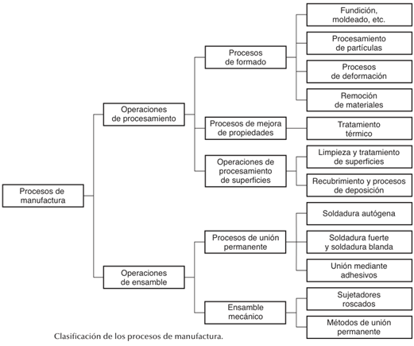
1.2 Clasificaci�n de los procesos de manufactura.
1.3 Reglamento y medidas de seguridad (pr�cticas).
1.4 Herramientas de mano (pr�cticas).
2. Materiales de uso frecuente en ingenier�a.
2.1 Materiales ferrosos.
2.2 Fundiciones. Sus aplicaciones, su clasificaci�n. Fundici�n gris y fundici�n nodular.
2.3 Aleaciones no ferrosas.
2.4 Pl�sticos. Comunes y de ingenier�a. Sus propiedades, ventajas, limitaciones y aplicaciones. Acr�nimos.
2.5 Elementos de uso com�n en maquinaria (pr�cticas).
3. Instrumentos de medici�n.
3.1 Mesa de coordenadas, medici�n con l�ser.
3.2 Esc�ner tridimensional y nuevas tecnolog�as.
3.3 Instrumentos de medici�n y traslado de medida (pr�cticas).
4. Tecnolog�a de la fundici�n.
4.1 Moldeo con arena en verde.
4.2 Laminaci�n.
4.3 Moldeo por proceso en CO2.
4.4 Moldeo con resinas autofraguantes.
4.5 Caja caliente.
4.6 Moldeo en c�scara.
4.7 Moldeo permanente.
4.8 Fundici�n a presi�n en c�mara fr�a y c�mara caliente.
4.9 Pr�ctica de fundici�n moldeo en verde (pr�cticas).
4.10 Pr�ctica de fundici�n a presi�n (pr�cticas).
5. Procesos de deformaci�n pl�stica.
5.1 Clasificaci�n de los m�todos de conformado mec�nico.
5.2 Procesos para el trabajo en caliente.
5.3 Procesos para el trabajo en fr�o.
5.4 Pr�ctica de laminaci�n (pr�cticas).
5.5 Pr�ctica de pailer�a (pr�cticas).
6. M�todos de uni�n y ensamble.
6.1 Equipos utilizados para la soldadura de arco. Designaci�n y caracter�sticas de los electrodos.
6.2 Soldadura de arco el�ctrico con electrodo revestido.
6.3 Soldadura con gas (oxiacetileno, gas LP).
6.4 Soldadura por resistencia el�ctrica.
6.5 Corte mediante ox�geno.
6.6 Corte por arco plasma.
6.7 Uniones mediante remaches, tornillos, adhesivos entre otros.
6.8 Soldadura de arco el�ctrico (pr�cticas).
6.9 Soldadura TIG, MIG (pr�cticas).
6.10 Soldadura y corte con oxiacetileno (pr�cticas).
7. Procesamiento de pl�sticos.
7.1 Macromol�culas de origen org�nico.
7.2 Termopl�sticos, termofijos y elast�meros.
7.3 Inyecci�n de pl�sticos. El proceso, las partes de la m�quina, los par�metros de operaci�n, puesta en marcha.
7.4 Extrusi�n de pl�sticos. El proceso, las partes de equipo, c�lculo del gasto de extrusi�n, aplicaciones del proceso, problemas que se presentan, causas y forma de evitarlos. Metodolog�a para la determinaci�n de los par�metros de proceso. Control de perfil.
7.5 Pr�ctica de inyecci�n (pr�cticas).
7.6 Pr�ctica de extrusi�n (pr�cticas).
8. Procesos con arranque de viruta.
8.1 Procesos con arranque de virutas; sus bondades y limitaciones.
8.2 Mec�nica del arranque de virutas, determinaci�n de par�metro y fuerza de corte.
8.3 Taladros, sus aplicaciones y clasificaci�n. Tipos de brocas, barrenos pesados y barrenos ciegos, machueleado, avellanado.
8.4 Seguetas mec�nicas y sierra cinta.
8.5 El torno: sus partes, aplicaciones. Operaciones, refrentado, cilindrado, conos cortos, conos largos, roscas, moleteado. Determinaci�n de las condiciones de operaci�n en funci�n del material a maquinar, la herramienta de corte y la operaci�n. Acabados.
8.6 Fresadora. Horizontal, vertical, universal. Generaci�n de superficies planas, ranuras, cu�eros, fabricaci�n de engranes de dientes recto.
8.7 Pr�ctica de torno (pr�cticas).
8.8 Pr�ctica de fresadora (pr�cticas)
9. Producci�n de prototipos.
9.1 Proceso de estereolitograf�a, caracter�sticas, ventajas y desventajas.
9.2 Proceso de objetos laminados, caracter�sticas, ventajas y desventajas.
9.3 Proceso de sinterizado de polvos, caracter�sticas, ventajas y desventajas.
9.4 Producci�n de prototipos de forma manual.
9.5 Prototipo en madera o acr�lico (pr�cticas).
9.6 Prototipo con poliestireno expandido o poliuretano (pr�cticas).
10. Producci�n de hierro y acero.
10.1 M�todo de alto horno: minerales, su procesamiento, materias primas en el alto horno. aceraci�n.
10.2 Producci�n de prerreducidos, m�todos m�s usuales, ventajas y limitaciones.
10.3 Producci�n de acero a partir de chatarra, el horno de arco.
11. Producci�n de aluminio y de cobre.
11.1 Producci�n de aluminio a partir de sus minerales.
11.2 Producci�n de cobre a partir de sus minerales.
12. Bibliograf�a.
GROOVER, M. P. - Fundamentos de manufactura moderna: materiales, procesos y sistemas.
CULTURA Y COMUNICACI�N (1222)
Objetivo(s) del curso:
El alumno valorar� la riqueza cultural de nuestro mundo, nuestro pa�s y nuestra universidad, mediante el acercamiento guiado a diversas manifestaciones y espacios culturales, a fin de que fortalezca su sensibilidad, sentido de pertenencia e identidad como universitario. Asimismo, adquirir� elementos de an�lisis para desarrollar sus capacidades de lectura, apreciaci�n art�stica y expresi�n de ideas que le permitan apropiarse de su entorno cultural de una forma l�dica, creativa, reflexiva y cr�tica.
1. La cultura como expresi�n del pensamiento humano.
1.1 Concepto de cultura.
CULTURA
El concepto de Cultura es amplio y multidimensional, abarcando una variedad de significados que reflejan tanto las perspectivas hist�ricas como las contempor�neas. En esencia, la cultura puede definirse como el conjunto de conocimientos, creencias, pr�cticas, normas, s�mbolos y valores compartidos por un grupo de personas, que les permite interactuar entre s� y con su entorno de manera significativa. Este concepto, aunque aparentemente simple, se enriquece y complica al examinar las m�ltiples dimensiones y manifestaciones que adquiere en diferentes contextos y disciplinas.
Desde una perspectiva antropol�gica, la cultura se ha concebido tradicionalmente como la totalidad del modo de vida de un grupo humano. Esto incluye aspectos materiales, como herramientas, tecnolog�a y arquitectura, as� como elementos inmateriales, como costumbres, tradiciones, rituales y lenguajes. La cultura act�a como un sistema simb�lico que da sentido a la existencia colectiva, estructurando la manera en que los individuos perciben el mundo y se relacionan con �l. En este sentido, la cultura no es est�tica ni homog�nea; es din�mica, en constante evoluci�n y marcada por tensiones internas y externas.
Un aspecto clave del concepto de cultura es su car�cter aprendido. A diferencia de los instintos, la cultura se transmite de generaci�n en generaci�n mediante procesos de socializaci�n y educaci�n. Este aprendizaje cultural es lo que permite a las sociedades adaptarse a contextos cambiantes, innovar y perpetuar sus formas de vida. Al mismo tiempo, tambi�n posibilita la diversidad cultural, ya que diferentes grupos desarrollan sistemas de significado �nicos basados en sus experiencias hist�ricas, geogr�ficas y sociales.
La dimensi�n simb�lica de la cultura es otra de sus caracter�sticas fundamentales. Los s�mbolos, como el lenguaje, el arte y los rituales, sirven como medios para comunicar y reforzar valores e ideas compartidas. Por ejemplo, los mitos y las historias transmiten lecciones morales y refuerzan la identidad grupal, mientras que los objetos culturales, como las obras de arte o los monumentos, act�an como portadores de memoria colectiva. Esta dimensi�n simb�lica tambi�n facilita la cohesi�n social, al proporcionar un marco com�n de referencia que une a los individuos dentro de una comunidad.
A nivel global, el concepto de cultura ha adquirido nuevas connotaciones en el contexto de la globalizaci�n. La interacci�n entre culturas, facilitada por los avances en la comunicaci�n y el transporte, ha llevado a un intercambio sin precedentes de ideas, pr�cticas y productos culturales. Esto ha dado lugar tanto a la hibridaci�n cultural como a la resistencia frente a la homogeneizaci�n impuesta por las din�micas globales. Mientras algunas culturas adoptan elementos extranjeros para enriquecer sus propias tradiciones, otras luchan por preservar su identidad frente a la influencia de fuerzas externas.
En un plano m�s individual, la cultura tambi�n desempe�a un papel central en la formaci�n de la identidad personal. Cada individuo internaliza los valores, normas y s�mbolos de su cultura a trav�s de la interacci�n con su entorno social. Este proceso no es uniforme ni mec�nico, ya que las personas interpretan y reinterpretan su cultura de maneras �nicas, influenciadas por su contexto y experiencias particulares. As�, la cultura no solo moldea al individuo, sino que tambi�n es moldeada por �l.
El concepto de cultura tambi�n es relevante en el �mbito pol�tico y social, donde se utiliza para abordar cuestiones de diversidad, inclusi�n y equidad. Reconocer y valorar las diferencias culturales es fundamental para construir sociedades m�s justas y cohesivas. En este sentido, el concepto de cultura va m�s all� de la mera descripci�n antropol�gica para convertirse en una herramienta para el cambio social. Las pol�ticas culturales, los programas educativos y las iniciativas de di�logo intercultural son ejemplos de c�mo se puede utilizar el concepto de cultura para promover el entendimiento mutuo y la cooperaci�n.
Es importante destacar que el concepto de cultura no est� exento de controversias y debates. Algunos cr�ticos argumentan que ciertas definiciones de cultura pueden ser demasiado amplias o vagas, lo que dificulta su utilidad como herramienta anal�tica. Otros cuestionan la tendencia a idealizar o esencializar las culturas, ignorando las desigualdades y conflictos que existen dentro de ellas. Estos debates reflejan la complejidad del concepto y subrayan la necesidad de abordarlo con una perspectiva cr�tica y matizada
1.2 Dimensi�n social e individual de los procesos culturales.
La dimensi�n social e individual de los procesos culturales puede entenderse como el tejido intrincado que conecta a las personas con su entorno y consigo mismas, configurando una compleja interacci�n entre el colectivo y el individuo. Por un lado, los procesos culturales se manifiestan como expresiones sociales que reflejan y transforman las estructuras y normas de las comunidades en las que operan. Por otro lado, tambi�n representan un campo �ntimo en el que los individuos construyen y redefinen su identidad a trav�s de interacciones simb�licas y experiencias personales.
Desde una perspectiva social, los procesos culturales son esenciales para establecer los valores, tradiciones y significados compartidos que constituyen la base de cualquier sociedad. Estas expresiones colectivas permiten la formaci�n de v�nculos comunitarios que trascienden generaciones, funcionando como un puente entre el pasado, el presente y el futuro. La cultura, en este sentido, act�a como un repositorio de conocimientos y pr�cticas que organiza la vida social, fomenta la cohesi�n y ofrece un marco para enfrentar desaf�os comunes. Un ejemplo de esto es el uso de lenguajes compartidos, que no solo facilitan la comunicaci�n, sino que tambi�n consolidan una identidad grupal y refuerzan el sentido de pertenencia.
Sin embargo, dentro de esta construcci�n colectiva, cada individuo vive y experimenta la cultura de manera �nica. La dimensi�n individual de los procesos culturales se manifiesta en la capacidad de las personas para reinterpretar, cuestionar y a veces subvertir los significados impuestos por la colectividad. Cada experiencia cultural se convierte en una oportunidad para el autoconocimiento y la autoexpresi�n, lo que, a su vez, enriquece el tapiz cultural de la comunidad en su conjunto. Por ejemplo, al participar en un evento cultural, como un festival o una ceremonia, cada persona aporta sus emociones, perspectivas y vivencias, creando una resonancia �nica que enriquece la experiencia colectiva.
El equilibrio entre estas dos dimensiones, la social y la individual, no siempre es arm�nico. En algunos contextos, los valores culturales dominantes pueden sofocar las expresiones individuales, imponiendo conformidad y limitando la diversidad.
Esto se observa en sociedades donde las normas culturales se utilizan como herramientas de control social, relegando las diferencias al margen y favoreciendo una homogeneidad que puede ser asfixiante. Por otro lado, cuando los individuos desaf�an y transforman estas normas a trav�s de actos de creatividad y resistencia, contribuyen a la evoluci�n cultural, permitiendo que surjan nuevas formas de expresi�n que reflejen las realidades cambiantes.
Un �rea clave donde se observa esta interacci�n es en la globalizaci�n cultural. Este fen�meno ha intensificado las conexiones entre comunidades al facilitar el intercambio y la difusi�n de ideas, tradiciones y pr�cticas en todo el mundo.
Al mismo tiempo, ha generado tensiones entre la Aldea Global, que promueve valores universales y pr�cticas homog�neas, y la Aldea Local, que busca preservar las identidades culturales particulares y tradicionales. La globalizaci�n cultural, por tanto, no solo ampl�a el horizonte cultural de los individuos, sino que tambi�n plantea desaf�os sobre c�mo equilibrar las influencias externas con las ra�ces culturales locales.
La dimensi�n social e individual de los procesos culturales tambi�n se entrelaza con cuestiones de poder y agencia. Las instituciones y estructuras sociales a menudo influyen en c�mo las personas acceden y participan en la cultura.
Por ejemplo, los sistemas educativos y los medios de comunicaci�n desempe�an un papel fundamental en la transmisi�n y reproducci�n de valores culturales, pero tambi�n pueden perpetuar desigualdades al privilegiar ciertas narrativas sobre otras. Por otro lado, los individuos tienen la capacidad de transformar estas estructuras al adoptar roles activos como agentes de cambio cultural, ya sea a trav�s del arte, la innovaci�n tecnol�gica o el activismo social.
Adem�s, los procesos culturales est�n profundamente arraigados en las experiencias emocionales y psicol�gicas de los individuos. Cada persona aporta sus propias interpretaciones y significados a las experiencias culturales, convirti�ndolas en una fuente de conexi�n emocional y personal.
Esto es particularmente evidente en las expresiones art�sticas, donde las emociones individuales encuentran una forma tangible de comunicaci�n que puede resonar universalmente. En este sentido, la dimensi�n individual de la cultura no solo enriquece la experiencia colectiva, sino que tambi�n asegura que la cultura permanezca viva y en constante evoluci�n.
En �ltima instancia, la dimensi�n social e individual de los procesos culturales destaca la interdependencia entre el individuo y la sociedad. Cada uno de estos niveles enriquece y desaf�a al otro, creando un ciclo din�mico de influencia mutua.
Mientras que la sociedad ofrece el marco y los recursos para que los individuos se expresen, las contribuciones individuales a menudo impulsan cambios que redefinen y expanden el �mbito cultural colectivo.
Por lo tanto, es fundamental reconocer y valorar ambas dimensiones, no solo para comprender la cultura como un fen�meno humano, sino tambi�n para fomentar una convivencia m�s inclusiva y enriquecedora.
1.3 Prop�sitos de la difusi�n cultural y principales medios de expresi�n.
Los prop�sitos de la difusi�n cultural y los principales medios de expresi�n tienen como eje principal el fomento del conocimiento, la preservaci�n de identidades y tradiciones, y la promoci�n de la creatividad en sus m�ltiples formas. Este proceso busca trascender las barreras geogr�ficas, sociales y temporales para hacer accesibles las diversas manifestaciones culturales a un p�blico m�s amplio. La difusi�n cultural es, en esencia, una herramienta poderosa para el intercambio de ideas, la construcci�n de la identidad colectiva y la educaci�n de las generaciones futuras.
PROP�SITOS DE LA DIFUSI�N CULTURAL
El principal prop�sito de la difusi�n cultural es preservar y transmitir el patrimonio cultural de una comunidad. Esto incluye tanto los aspectos tangibles, como obras de arte, monumentos y objetos hist�ricos, como los intangibles, que abarcan tradiciones, lenguajes, valores y pr�cticas sociales. La difusi�n cultural no solo garantiza que estas expresiones sobrevivan al paso del tiempo, sino que tambi�n permite su adaptaci�n y resignificaci�n en diferentes contextos.
Otro objetivo fundamental es la educaci�n. A trav�s de la difusi�n cultural, las personas adquieren conocimientos sobre su propia herencia y la de otras culturas, fomentando la empat�a y el entendimiento mutuo. Este proceso educativo tambi�n contribuye a combatir prejuicios y estereotipos al presentar una visi�n m�s rica y diversa del mundo.
La difusi�n cultural tambi�n busca estimular la creatividad y la innovaci�n. Al exponerse a diferentes formas de expresi�n art�stica y cultural, los individuos encuentran inspiraci�n y desarrollan nuevas formas de interpretar y representar su realidad. Esto es particularmente relevante en un mundo globalizado, donde el intercambio cultural es constante y puede ser una fuente inagotable de ideas y colaboraciones.
Por �ltimo, la difusi�n cultural tiene un componente econ�mico y pol�tico. La promoci�n de eventos culturales, exposiciones y festivales no solo genera ingresos, sino que tambi�n fortalece la posici�n de una comunidad o naci�n en el escenario internacional. La cultura se convierte as� en un veh�culo para la diplomacia y la cooperaci�n global.
PRINCIPALES MEDIOS DE EXPRESI�N
La difusi�n cultural se lleva a cabo a trav�s de una variedad de medios de expresi�n, cada uno con sus propias caracter�sticas y alcances. Entre los m�s destacados se encuentran:
1. Artes visuales y esc�nicas: El teatro, la danza, la m�sica y las artes pl�sticas son medios esenciales para la expresi�n cultural. Estas disciplinas permiten una conexi�n emocional directa con el p�blico y a menudo act�an como catalizadores para debates sociales y pol�ticos.
2. Literatura y escritura: Los libros, revistas y otros textos escritos son veh�culos tradicionales para la difusi�n de ideas y valores culturales. La literatura, en particular, tiene el poder de transportar a los lectores a diferentes tiempos y lugares, fomentando la comprensi�n de perspectivas diversas.
3. Medios de comunicaci�n: La televisi�n, la radio y el cine han sido herramientas fundamentales para llevar expresiones culturales a audiencias masivas. M�s recientemente, las plataformas digitales y las redes sociales han ampliado a�n m�s el alcance de estas manifestaciones, permitiendo una interacci�n m�s directa y participativa con el p�blico.
4. Espacios culturales: Museos, galer�as, bibliotecas y teatros son instituciones clave para la preservaci�n y promoci�n de la cultura. Estos espacios no solo albergan y exhiben obras culturales, sino que tambi�n act�an como centros educativos y comunitarios.
5. Educaci�n formal e informal: Las escuelas y universidades desempe�an un papel crucial en la difusi�n cultural al incorporar contenidos culturales en sus curr�culos. Al mismo tiempo, talleres, charlas y cursos extracurriculares brindan oportunidades para el aprendizaje continuo.
6. Eventos y festivales: Los festivales culturales, ferias de libros, exposiciones y conciertos son plataformas din�micas para la interacci�n cultural. Estos eventos no solo celebran las tradiciones existentes, sino que tambi�n ofrecen un espacio para la innovaci�n y la experimentaci�n.
7. Tecnolog�a y redes digitales: En la era actual, las plataformas digitales han revolucionado la difusi�n cultural. Desde videos virales hasta aplicaciones interactivas y proyectos de realidad virtual, la tecnolog�a ha abierto nuevas posibilidades para que las expresiones culturales lleguen a un p�blico global.
1.4 Proceso y tipos de lectura. Competencias necesarias.
1.5 La rese�a cr�tica de manifestaciones culturales: definici�n, funciones y estructura.
1.6 Ejercicios de lectura de comprensi�n y de redacci�n.
2. Acercamiento a las manifestaciones culturales universitarias.
2.1 Arte y cultura en M�xico: breve recorrido hist�rico.
2.2 Ciudad Universitaria, patrimonio cultural de la humanidad.
2.3 Recintos culturales universitarios.
2.4 Patrimonio cultural y art�stico de la Facultad de Ingenier�a.
3. Bibliograf�a.
Descarga Cultura en: http://www.descargacultura.unam.mx.
CUARTO SEMESTRE
ESTAD�STICA (1569)
Objetivo(s) del curso:
El alumno aplicar� los conceptos de la teor�a, metodolog�a y las t�cnicas estad�sticas, modelar� y resolver� problemas de ingenier�a relacionados con el muestreo, representaci�n de datos e inferencia estad�stica para la toma de decisiones.
1. Estad�stica descriptiva.
1.1 Investigaci�n b�sica e investigaci�n aplicada, el m�todo cient�fico y el papel de la estad�stica en la investigaci�n y sus etapas.
INVESTIGACI�N
La investigaci�n cient�fica representa un entramado sistem�tico de procedimientos l�gicos y metodol�gicos destinados a la generaci�n de conocimiento objetivo, verificable y generalizable. Este proceso racional, piedra angular del desarrollo disciplinario en los �mbitos cient�ficos y tecnol�gicos, se sustenta en principios epist�micos rigurosos que exigen reproducibilidad, consistencia l�gica, neutralidad axiol�gica y validez emp�rica de los hallazgos. �
Desde una perspectiva epistemol�gica, se reconocen dos grandes ejes de acci�n investigativa:
Investigaci�n b�sica: Se orienta a la exploraci�n de principios fundamentales sin una finalidad pr�ctica inmediata. Persigue la comprensi�n profunda de fen�menos, la formulaci�n de leyes generales, teor�as cient�ficas y constructos conceptuales de alta abstracci�n. Su orientaci�n es te�rica y su utilidad se despliega en el largo plazo.
Investigaci�n aplicada: Se focaliza en la utilizaci�n del conocimiento generado por la investigaci�n b�sica para resolver problemas concretos del mundo real. En ella, la teor�a se operacionaliza en soluciones pr�cticas, tecnol�gicas, sociales o industriales. Esta forma de indagaci�n traslada el saber cient�fico al plano de la acci�n, contribuyendo a la innovaci�n y mejora continua.
M�TODO CIENT�FICO
El m�todo cient�fico, en tanto procedimiento normativo para la adquisici�n de conocimiento, se despliega en una secuencia articulada de fases que comprenden:
1. Observaci�n rigurosa y sistem�tica del fen�meno
2. Delimitaci�n del problema y construcci�n del objeto de estudio
3. Revisi�n cr�tica del estado del arte y formulaci�n del marco te�rico
4. Proposici�n de hip�tesis o preguntas de investigaci�n
5. Dise�o metodol�gico con criterios de validez interna y externa
6. Recolecci�n emp�rica estructurada de datos pertinentes
7. Procesamiento, organizaci�n y an�lisis cuantitativo o cualitativo
8. Interpretaci�n reflexiva e integraci�n de resultados
9. Redacci�n y difusi�n de conclusiones en espacios cient�ficos
La estad�stica se manifiesta como una herramienta metodol�gica transversal e indispensable en cada etapa del m�todo cient�fico. Sus aplicaciones son vastas, entre las cuales destacan:
� Determinaci�n del tama�o muestral y planificaci�n de dise�os experimentales
� Recolecci�n, validaci�n, codificaci�n y tabulaci�n de datos emp�ricos
� Exploraci�n preliminar de la estructura de los datos
� Representaci�n gr�fica y s�ntesis num�rica de distribuciones
� Generalizaci�n de resultados mediante inferencia estad�stica
� Evaluaci�n de hip�tesis y ajuste de modelos predictivos
1.2 Clasificaci�n de la estad�stica: descriptiva e inferencial, param�trica y no param�trica, de una variable y de varias variables.
ESTAD�STICA
La estad�stica como disciplina nos ense�a a realizar juicios inteligentes y tomar decisiones informadas en la presencia de incertidumbre y variaci�n.
La estad�stica, como disciplina met�dica, admite diversas clasificaciones seg�n el objeto de estudio, la naturaleza de los datos y los fines anal�ticos. Estas tipolog�as permiten estructurar el tratamiento estad�stico de manera coherente con los objetivos de investigaci�n.
Estad�stica Descriptiva
Constituye el corpus de t�cnicas orientadas a la recopilaci�n, organizaci�n, presentaci�n y an�lisis preliminar de datos. No persigue realizar generalizaciones poblacionales, sino ofrecer una visi�n estructurada de las caracter�sticas observadas en un conjunto de datos.
Sus herramientas fundamentales incluyen:
� Medidas de tendencia central: media aritm�tica, mediana, moda, media ponderada
� Medidas de dispersi�n: varianza, desviaci�n t�pica, coeficiente de variaci�n, rango intercuart�lico
� Medidas de forma: asimetr�a y curtosis
� Representaciones gr�ficas: histogramas, diagramas de caja, pol�gonos de frecuencia, diagramas de dispersi�n
Estad�stica Inferencial
Se fundamenta en el c�lculo de probabilidades para extrapolar las propiedades observadas en una muestra a la poblaci�n de la que esta proviene. Su objeto es estimar par�metros poblacionales, contrastar hip�tesis cient�ficas y predecir fen�menos futuros bajo condiciones de incertidumbre. M�todos clave:
� Estimaci�n puntual y por intervalos de confianza
� Pruebas param�tricas (t de Student, ANOVA, regresi�n)
� Pruebas no param�tricas (Chi-cuadrado, prueba de signos, U de Mann-Whitney)
� M�todos bayesianos y t�cnicas de remuestreo (bootstrap, jackknife)
Estad�stica Param�trica vs. No Param�trica:
La estad�stica param�trica parte del supuesto de que los datos provienen de poblaciones que siguen distribuciones conocidas (normal, binomial, etc.). Bajo estas premisas, sus m�todos son potentes y eficientes.
La estad�stica no param�trica es m�s flexible; no exige supuestos distributivos estrictos y puede aplicarse en contextos con escalas ordinales o no m�tricas, siendo adecuada cuando los datos presentan asimetr�as, colas pesadas o estructuras desconocidas.
Estad�stica Univariada vs. Multivariada:
Univariada: Analiza una �nica variable, permitiendo caracterizar su comportamiento mediante medidas descriptivas e inferencias unidimensionales.
Multivariada: Aborda simult�neamente varias variables, identificando interdependencias y patrones latentes. Se utilizan t�cnicas como an�lisis factorial, regresi�n m�ltiple, an�lisis de conglomerados, an�lisis discriminante y modelos de ecuaciones estructurales.
1.3 La poblaci�n y la muestra y la relaci�n entre la probabilidad y la estad�stica.
POBLACI�N
En el dise�o investigativo, la definici�n clara de poblaci�n y muestra es esencial. La poblaci�n representa la totalidad de elementos que comparten una caracter�stica relevante; puede tratarse de individuos, objetos, eventos, registros, etc. Seg�n su tama�o y estructura, se clasifica en finita o infinita, homog�nea o heterog�nea, accesible o te�rica.
MUESTRA
La muestra es un subconjunto representativo de la poblaci�n, seleccionado mediante procedimientos sistem�ticos para permitir inferencias v�lidas. Su calidad se mide por su representatividad, aleatoriedad y tama�o adecuado.
PROBABILIDAD
La probabilidad proporciona la fundamentaci�n te�rica para evaluar el grado de certeza con que se pueden generalizar los hallazgos muestrales. Permite modelar la incertidumbre inherente al proceso inductivo, establecer m�rgenes de error, calcular niveles de significancia y cuantificar riesgos en la toma de decisiones.
En particular:
� El nivel de confianza (1-α) expresa la credibilidad atribuida a un intervalo de estimaci�n.
� El error tipo I (α) y tipo II (β) delimitan los riesgos de decisiones incorrectas.
� El poder estad�stico mide la capacidad de una prueba para detectar efectos reales.
1.4 Generaci�n de n�meros aleatorios y muestreo probabil�stico: aleatorio, sistem�tico, estratificado y por conglomerados.
N�MEROS ALEATORIOS
La aleatorizaci�n, esencial para eliminar sesgos y asegurar la validez externa, se logra mediante algoritmos computacionales que simulan secuencias pseudoaleatorias.
Estos algoritmos, dise�ados con base en principios matem�ticos, permiten generar muestras, asignar tratamientos en experimentos, y ejecutar simulaciones estoc�sticas.
Aplicaciones destacadas:
� M�todos Monte Carlo para estimaci�n num�rica
� Simulaci�n de procesos estoc�sticos en modelado predictivo
� Generaci�n de escenarios hipot�ticos para an�lisis de sensibilidad
� T�cnicas de remuestreo para estimaci�n robusta
MUESTREO PROBABIL�STICO
Se basa en mecanismos aleatorios que aseguran que cada unidad de la poblaci�n tenga una probabilidad conocida y positiva de ser seleccionada. Esta caracter�stica permite aplicar inferencias estad�sticas v�lidas y estimar el error muestral.
1. Muestreo Aleatorio Simple: Cada elemento posee la misma probabilidad de ser seleccionado. Es conceptualmente sencillo y estad�sticamente s�lido. Sin embargo, su implementaci�n puede ser costosa o inviable en poblaciones extensas sin un marco muestral completo.
2. Muestreo Sistem�tico: Se seleccionan unidades a intervalos fijos desde un punto inicial aleatorio. Su eficiencia log�stica lo convierte en una opci�n viable, aunque requiere precauci�n ante estructuras peri�dicas que puedan inducir sesgos sistem�ticos.
3. Muestreo Estratificado: Implica dividir la poblaci�n en estratos homog�neos respecto a una o m�s variables relevantes y extraer muestras aleatorias dentro de cada estrato. Aumenta la precisi�n de las estimaciones al controlar la variabilidad interna, y es especialmente �til cuando ciertos subgrupos tienen baja representaci�n.
4. Muestreo por Conglomerados: La poblaci�n se organiza en conglomerados naturales (e.g., escuelas, ciudades, bloques censales) y se seleccionan aleatoriamente algunos para su inclusi�n completa o parcial. Es eficiente para estudios de campo extensivos, aunque la homogeneidad interna de los conglomerados puede afectar la precisi�n de las estimaciones.
1.5 Estad�stica descriptiva: an�lisis de datos univariados; tabla de distribuci�n de frecuencias; histogramas y pol�gonos de frecuencias. Frecuencia relativa. Ojivas de frecuencia acumulada y frecuencia relativa acumulada. Medidas de tendencia central, dispersi�n y asimetr�a y curtosis, para datos agrupados y no agrupados. Fractiles. Diagrama de tallo y hojas y diagrama de caja. Analog�a entre estas medidas y los par�metros correspondientes de una distribuci�n de probabilidad.
2. Conceptos b�sicos de inferencia estad�stica.
2.1 La finalidad de la inferencia estad�stica; los conceptos y las definiciones de par�metro, muestra aleatoria, estad�stico y estimador de un par�metro.
2.2 Teorema del l�mite central.
2.3 Los conceptos y las definiciones de la distribuci�n de la poblaci�n, distribuci�n de la media y la varianza muestral y sus par�metros.
3. Estimaci�n de par�metros.
3.1 Definici�n de estimador puntual; criterios para seleccionar estimadores puntuales: insesgamiento, eficiencia, error cuadr�tico medio, suficiencia y consistencia.
3.2 Estimaci�n puntual: m�xima verosimilitud y momentos.
3.3 Estimaci�n por intervalos: concepto de nivel de confianza e intervalo de confianza; construcci�n e interpretaci�n de intervalos de confianza para medias, proporciones y varianzas.
3.4 Determinaci�n del tama�o de la muestra: tama�o de la muestra para medias, para proporciones, para diferencias de medias y diferencia de proporciones.
4. Pruebas de hip�tesis estad�sticas.
4.1 El concepto y la definici�n de hip�tesis estad�stica en la investigaci�n; elementos y tipos de pruebas de hip�tesis, errores tipo I y tipo II, nivel de significaci�n estad�stica y potencia de la prueba; nivel de significancia alcanzado.
4.2 Pruebas de hip�tesis de los par�metros de una poblaci�n sobre: la media, la varianza y la proporci�n.
4.3 Pruebas de hip�tesis para la diferencia de medias, diferencia de proporciones y comparaci�n de varianzas de dos poblaciones.
4.4 Pruebas de bondad de ajuste. Prueba Ji cuadrada de bondad de ajuste.
5. Introducci�n a la regresi�n lineal simple.
5.1 El concepto de estad�stica multivariable y la distribuci�n multinomial.
5.2 Concepto, definici�n y utilidad de la regresi�n lineal simple; ajuste de la recta de regresi�n mediante el m�todo de m�nimos cuadrados y modelos linealizables.
5.3 Definici�n, obtenci�n e interpretaci�n de los coeficientes de correlaci�n lineal y de determinaci�n.
5.4 Intervalo de confianza para el coeficiente poblacional betha y para el par�metro poblacional alpha.
5.5 Coeficientes de regresi�n, intervalos de confianza y pruebas de hip�tesis de estos coeficientes.
5.6 Bandas de confianza para la recta de regresi�n de la poblaci�n.
6. Bibliograf�a
DEVORE, Jay L. - Probabilidad y estad�stica para ingenier�a y ciencias.
MATEM�TICAS AVANZADAS (1424)
Objetivo(s) del curso:
El alumno manejar� los conceptos fundamentales relacionados con las funciones de variable compleja y el an�lisis de Fourier, para la resoluci�n de problemas de ingenier�a.
1. Variable compleja.
1.1 Funciones de variable compleja y mapeos.
VARIABLE COMPLEJA
El estudio de las funciones de variable compleja es una rama fundamental de las Matem�ticas Avanzadas, en especialmente el an�lisis matem�tico que extiende conceptos del c�lculo diferencial e integral a funciones que dependen de una variable compleja.
A diferencia de las funciones de variable real, las funciones de variable compleja poseen propiedades �nicas que les confieren una gran utilidad en distintas �reas de la matem�tica aplicada, la f�sica y la ingenier�a. Entre estas propiedades destacan la analiticidad, la conformidad y la existencia de mapeos que transforman dominios en el plano complejo.
El estudio de las funciones de variable compleja tambi�n permite resolver problemas de manera m�s eficiente que sus equivalentes en an�lisis real, proporcionando herramientas como la teor�a de residuos y las series de Laurent.
FUNCIONES DE VARIABLE COMPLEJA
Las funciones de variable compleja son aquellas que toman n�meros complejos como entrada y devuelven un n�mero complejo como salida. Matem�ticamente, se expresan como f(z) = u(x, y) + iv(x, y), donde u(x, y) y v(x, y) son funciones reales de dos variables y representan las partes real e imaginaria de f(z).
Estas funciones pueden interpretarse geom�tricamente como transformaciones del plano complejo, donde un punto z = x + iy se transforma en otro punto w = u + iv en el mismo plano.
Existen varios tipos de funciones complejas, incluyendo polinomios, funciones racionales, exponenciales y trigonom�tricas complejas. Cada una de estas funciones tiene una interpretaci�n geom�trica distinta.
Por ejemplo, la funci�n f(z) = z^2 mapea l�neas rectas en par�bolas en el plano complejo. Este tipo de transformaci�n se conoce como un mapeo conforme, ya que conserva los �ngulos entre curvas en puntos donde la funci�n es diferenciable.
MAPEOS
1.2 Representaci�n de mapeos con ayuda de la computadora.
MAPEOS EN LA COMPUTADORA
El an�lisis y la visualizaci�n de mapeos complejos pueden ser facilitados mediante herramientas computacionales. Dado que una funci�n de variable compleja transforma regiones en el plano complejo, su representaci�n gr�fica requiere m�todos distintos a los de funciones de variable real. Las representaciones m�s comunes incluyen el uso de curvas de nivel para las partes real e imaginaria de la funci�n y t�cnicas de color mapping, en las que los valores de la funci�n se codifican mediante colores en una imagen bidimensional.
1.3 Funciones anal�ticas y mapeos conformes.
FUNCIONES ANAL�TICAS
Una funci�n compleja es anal�tica en un dominio si es diferenciable en todos los puntos de dicho dominio. Sin embargo, la diferenciabilidad en el contexto de variable compleja es una propiedad mucho m�s restrictiva que en el caso de variable real. Para que una funci�n de variable compleja sea diferenciable, debe cumplir las ecuaciones de Cauchy-Riemann.
MAPEOS CONFORMES
Los mapeos conformes son aquellos que preservan los �ngulos entre curvas en el plano complejo. Cuando una funci�n compleja es anal�tica y su derivada no es cero en un punto, induce un mapeo conforme en una vecindad de ese punto.
1.4 Integrales de l�nea de funciones de variable compleja.
INTEGRALES DE L�NEA
Las integrales de l�nea en el contexto de variable compleja se definen de manera an�loga a las integrales de l�nea en el c�lculo vectorial, pero con una importante diferencia: en el plano complejo, la variable de integraci�n es un n�mero complejo. Para evaluar una integral de l�nea de una funci�n compleja f(z) a lo largo de una curva C, se parametriza la curva mediante una funci�n continua z(t), donde t var�a en un intervalo [a, b].
1.5 Teorema integral de Cauchy.
TEOREMA DE CAUCHY
El teorema de Cauchy es uno de los resultados fundamentales en la teor�a de funciones de variable compleja. Este establece que si f(z) es anal�tica en un dominio simplemente conexo y C es un contorno cerrado simple dentro de ese dominio, entonces:
∮C f(z) dz = 0
Este resultado implica que la integral de una funci�n anal�tica sobre cualquier curva cerrada es cero.
1.6 F�rmulas integrales de Cauchy.
INTEGRALES DE CAUCHY
Las f�rmulas integrales de Cauchy permiten calcular el valor de una funci�n anal�tica en cualquier punto dentro de un contorno cerrado. Para una funci�n anal�tica f(z) y un punto z_0 dentro de un contorno cerrado C, se cumple:
f(z_0) = (1/2πi) ∮C (f(z)/(z - z_0)) dz
1.7 Series de Laurent y teorema del residuo.
SERIES DE LAURENT
Las series de Laurent ampl�an el concepto de series de Taylor al permitir t�rminos con exponentes negativos. Estas series son fundamentales para estudiar singularidades y permiten desarrollar funciones en regiones anulares del plano complejo.
TEOREMA DEL RESIDUO
El teorema del residuo es una herramienta poderosa que permite calcular integrales de contorno mediante la suma de los residuos de una funci�n en sus singularidades aisladas.
1.8 Aplicaci�n del an�lisis complejo en problemas de flujo.
APLICACIONES
El an�lisis complejo tiene aplicaciones en la mec�nica de fluidos, particularmente en la modelizaci�n de flujos potenciales bidimensionales. Se utiliza para representar soluciones a la ecuaci�n de Laplace y modelar flujos irrotacionales e incompresibles. Los mapeos conformes son esenciales en estos an�lisis, ya que permiten transformar dominios geom�tricamente complejos en otros m�s manejables
2. An�lisis de Fourier. (Series de Fourier).
2.1 Funciones peri�dicas y se�ales f�sicas.
2.2 Propiedades de ortogonalidad de las funciones trigonom�tricas sobre un intervalo.
2.3 Definici�n de las series trigonom�tricas de Fourier.
2.4 Condiciones de Dirichlet y enunciado de las propiedades de convergencia.
2.5 Propiedades de paridad.
2.6 Forma compleja de la serie de Fourier.
2.7 Espectros de frecuencias.
3. An�lisis de Fourier. (Transformada de Fourier).
3.1 La integral y la transformada de Fourier.
3.2 Ejemplos de transformadas de Fourier.
3.3 Propiedades de la transformada de Fourier.
3.4 La transformada de Fourier discreta.
3.5 Obtenci�n de transformadas de Fourier con ayuda de la computadora.
3.6 Transformada de Fourier de derivadas y el teorema de convoluci�n.
3.7 Aplicaci�n del an�lisis de Fourier en problemas de sistemas oscilatorios.
3.8 An�lisis de circuitos usando la transformada de Fourier.
4. Bibliograf�a.
JAMES, Glyn - Matem�ticas avanzadas para ingenier�a.
ELECTRICIDAD Y MAGNETISMO (1414)
Objetivo(s) del curso:
El alumno analizar� los conceptos, principios y leyes fundamentales del electromagnetismo. Desarrollar� su capacidad de observaci�n y manejo de instrumentos experimentales a trav�s del aprendizaje cooperativo.
1. Campo y potencial el�ctricos.
1.1 Concepto de carga el�ctrica y distribuciones continuas de carga (lineal y superficial).
Electro �- Magnetismo
El Electro - Magnetismo tiene sus or�genes desde una �poca tan remota como el 600 A.C., Donde los griegos de la antig�edad, (en especial Tales de Mileto) descubrieron que cuando frotaban �mbar contra lana o piel, el primero atra�a otros objetos. En la actualidad, decimos que con ese frotamiento el �mbar adquiere una carga el�ctrica neta o que se carga. La palabra �el�ctrico� se deriva del vocablo griego elektron, que significa �mbar. Una persona se carga el�ctricamente al frotar sus zapatos sobre una alfombra de nailon; y puede cargar un peine si lo pasa por su cabello seco.
Los fen�menos observados por los griegos quedan contenidos en la parte del electromagnetismo que estudia los cuerpos cargados en reposo, conocida como electrost�tica.
Algunas de las part�culas que forman los �tomos posee la propiedad fundamental de la masa, pero adicionalmente o poseen otra propiedad llamada carga el�ctrica. La carga de dichas particular puede ser de 2 tipos: Una particular subat�mica puede poseerle la carga que caracteriza el prot�n o la t�pica del electr�n. Adem�s existen part�culas que poseen ambos tipos de carga simult�neamente (neutr�n), En este caso decimos que la part�cula no posee exceso de cada.
Tomemos una barra de vidrio y frot�mosla con un pedazo de seda; observaremos que despu�s de frotada es capaz de atraer peque�os pedazos de papel o cualquier otro material ligero.
Si, por otro lado, frotamos una barra de ebonita (Hule duro) con piel, observaremos que tambi�n adquiere la capacidad de atraer peque�os pedazos de materiales ligeros.
Con un dispositivo semejante al de la imagen, podremos notar que las dos barras, previamente frotadas con sus respectivos excitadores, se atraen entre s�.
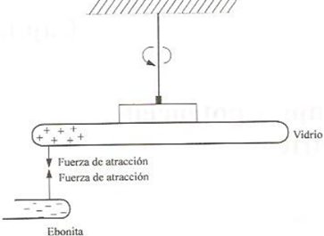
Al analizar el experimento que nos permite darnos cuenta de la existencia de los dos tipos de carga mencionados y de algunas caracter�sticas del fen�meno de atracci�n y repulsi�n entre cuerpos con excesos de carga.
Repitiendo el experimento anterior, ahora con dos barras del mismo material frotadas con el mismo excitador, observaremos que se rechazan.
Con base en el experimento descrito, repetido con diversos materiales concluimos que existe dos tipos de cargas el�ctrica.
A los materiales que adquieren un exceso de cargas del mismo tipo como el vidrio frotado con seda les llamaremos materes con exceso de cargas positivas o simplemente Positivas (Con defecto de electrones), y de manera semejante a los que adquiere un exceso de carga del mismo tipo que de la ebonita frotada con la piel la llamaremos materiales con exceso de carga negativa o simplemente Negativos (con exceso de electrones).
La convenci�n mencionada fue originalmente propuesta por Benjam�n Franklin, la cual del experimento mencionado se desprende que:
a) Cargas del mismo tipo se rechazan.
b) Cargas de diferente tipo se atraen.
DISTRIBUCIONES CONTINUAS DE CARGA
En general el exceso de carga en los cuerpos puede presentarse distribuido en un volumen, una superficie o una l�nea.
Como lo muestra la siguiente figura, es el caso de una regi�n con densidad volum�trica de carga.

Para encontrar el campo total de un punto cualquiera A, se toma la contribuci�n de cada elemento de carga dp, el cual se puede considerar como carga puntual y se integra en toda la regi�n, Es decir, si:

Entonces:
Debemos tener presente que se trata de una integral vectorial; es decir, se debe descomponer en las integrales de las componentes, Tomaremos la convenci�n de la notaci�n siguiente:

CONDUCTORES Y DIELECTRICOS
Para poder comprender los primeros fen�menos observados es necesario que distingamos entre materiales conductores y materiales aislantes o diel�ctricos. Por el momento esta distinci�n no ser� rigurosa, ya que a�n no tenemos los elementos suficientes que nos permiten comprender adecuadamente la estructura y caracter�sticas de ambos tipos de materiales.
Un material conductor es cualquier sustancia que posee gran cantidad de portadores de carga libres por unidad de volumen; con ayuda de estos es posible transporta carga f�cilmente de un lugar a otro a trav�s de ellos ( = 1017 o m�s portadores por cm3).
EJEMPLOS:
� Metales
� Gas Ionizado
� Electrolitos
Llamaremos aislante o diel�ctricos a cualquier sustancia que ni posee portadores de carga libres, o bien , que poseen un n�mero muy reducido por unidad de volumen (=105 o menos portadores por cm3).
EJEMPLOS:
� Pl�stico
� Aceite
� Helio No Ionizado
Existen materiales que poseen un n�mero de portadores de carga libre del orden de 1011 en cada cm3 a temperatura ambiente de 300k, que se conoce como semiconductores. Estos materiales no se mencionar� en el desarrollo de este tema.
INDUCCI�N DE CARGAS
Cuando un material cualquiera es colocado en la vecindad de un cuerpo cargado, se detecta en la aparici�n de una distribuci�n superficial de carga; este fen�meno se conoce como inducci�n de carga.
Si el material es un conductor met�lico, la presencia de la carga inducida se debe al movimiento �de los errores libres que son atra�dos o rechazados dejando exceso de carga positiva al desplazarse y aumentado la negatividad donde se acumula.
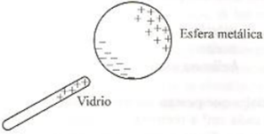
En los diel�ctricos la aparici�n de carga inducidas se debe a la orientaci�n mol�cula o electr�n.
Es conveniente enfatizar que el fen�meno de inducci�n de carga no altera el balance de cargas positivas y negativas de los cuerpos, ya que si aparece carga de un tipo en una zona del material, la misma cantidad de carga de distintos tipos aparecer� en otra.
Introduciremos los conceptos de campo y potencial el�ctrico desarrollado los modelos matem�ticos que describen este fen�meno electrost�tico.
1.2 Ley de Coulomb. Fuerza el�ctrica en forma vectorial. Principio de superposici�n.
1.3 Campo el�ctrico como campo vectorial. Esquemas de campo el�ctrico.
1.4 Obtenci�n de campos el�ctricos en forma vectorial originados por distribuciones discretas y continuas de carga (carga puntual, l�nea infinita y superficie infinita).
1.5 Concepto y definici�n de flujo el�ctrico.
1.6 Ley de Gauss en forma integral y sus aplicaciones.
1.7 El campo electrost�tico y el concepto de campo conservativo.
1.8 Energ�a potencial el�ctrica. Diferencia de potencial y potencial el�ctricos.
1.9 C�lculo de diferencias de potencial (carga puntual, l�nea infinita, superficie infinita y placas planas y paralelas).
1.10 Gradiente de potencial el�ctrico.
2. Capacitancia y diel�ctricos.
2.1 Concepto de capacitor y definici�n de capacitancia.
2.2 C�lculo de la capacitancia de un capacitor de placas planas y paralelas con aire como diel�ctrico.
2.3 C�lculo de la energ�a almacenada en un capacitor.
2.4 Conexiones de capacitores en serie y en paralelo; capacitor equivalente.
2.5 Polarizaci�n de la materia.
2.6 Susceptibilidad, permitividad, permitividad relativa y campo el�ctrico de ruptura.
2.7 Vectores el�ctricos. Capacitor de placas planas y paralelas con diel�ctricos.
3. Introducci�n a los circuitos el�ctricos.
3.1 Conceptos y definiciones de: corriente el�ctrica, velocidad media de los portadores de carga libres y densidad de corriente el�ctrica.
3.2 Ley de Ohm, conductividad y resistividad.
3.3 Potencia el�ctrica. Ley de Joule.
3.4 Conexiones de resistores en serie y en paralelo, resistor equivalente.
3.5 Concepto y definici�n de fuerza electromotriz. Fuentes de fuerza electromotriz: ideales y reales.
3.6 Nomenclatura b�sica empleada en circuitos el�ctricos.
3.7 Leyes de Kirchhoff y su aplicaci�n en circuitos resistivos con fuentes de voltaje continuo.
3.8 Introducci�n a los circuitos RC en serie con voltaje continuo.
4. Magnetost�tica.
4.1 Descripci�n de los imanes y experimento de Oersted
4.2 Fuerza magn�tica, como vector, sobre cargas en movimiento.
4.3 Definici�n de campo magn�tico (B).
4.4 Obtenci�n de la expresi�n de Lorentz para determinar la fuerza electromagn�tica, como vector.
4.5 Ley de Biot-Savart y sus aplicaciones. C�lculo del campo magn�tico de un segmento de conductor recto, espira en forma de circunferencia, espira cuadrada, bobina y solenoide.
4.6 Ley de Ampere.
4.7 Concepto y definici�n de flujo magn�tico. Flujo magn�tico debido a un conductor recto y largo, a un solenoide largo y a un toroide.
4.8 Ley de Gauss en forma integral para el magnetismo.
4.9 Fuerza magn�tica entre conductores, momento dipolar magn�tico.
4.10 Principio de operaci�n del motor de corriente directa.
5. Inducci�n electromagn�tica.
5.1 Ley de Faraday y principio de Lenz.
5.2 Fuerza electromotriz de movimiento.
5.3 Transformador con n�cleo de aire.
5.4 Principio de operaci�n del generador el�ctrico.
5.5 Conceptos de inductor, inductancia propia e inductancia mutua.
5.6 C�lculo de inductancias. Inductancia propia: de un solenoide, de un toroide. Inductancia mutua entre dos solenoides coaxiales.
5.7 Energ�a almacenada en un campo magn�tico.
5.8 Conexi�n de inductores en serie y en paralelo; inductor equivalente.
5.9 Introducci�n a los circuitos RL y RLC en serie con voltaje continuo.
6. Fundamentos de las propiedades magn�ticas de la materia.
6.1 Diamagnetismo, paramagnetismo y ferromagnetismo.
6.2 Definici�n de los vectores intensidad de campo magn�tico (H) y magnetizaci�n (M).
6.3 Susceptibilidad, permeabilidad del medio y del vac�o, permeabilidad relativa.
6.4 Comportamiento de los materiales ferromagn�ticos. Curva de magnetizaci�n y ciclo de hist�resis.
6.5 Circuitos magn�ticos. Fuerza magnetomotriz y reluctancia en serie.
6.6 El transformador con n�cleo ferromagn�tico.
7. Bibliograf�a.
JARAMILLO MORALES, Gabriel Alejandro, ALVARADO CASTELLANOS, Alfonso Alejandro - Electricidad y magnetismo.
YOUNG,HUGH D.,FREEDMAN,ROGER A. - Sears y Zemansky F�sica universitaria con f�sica moderna.
AN�LISIS NUM�RICO (1433)
Objetivo(s) del curso:
El alumno utilizar� m�todos num�ricos para obtener soluciones aproximadas de modelos matem�ticos. Elegir� el m�todo que le proporcione m�nimo error y utilizar� equipo de c�mputo como herramienta para desarrollar programas.
1. Aproximaci�n num�rica y errores.
1.1 Introducci�n hist�rica de los m�todos num�ricos.
M�TODOS NUM�RICOS
Los M�todos Num�ricos constituyen t�cnicas mediante las cuales es posible formular problemas matem�ticos, de tal forma que puedan resolverse utilizando operaciones aritm�ticas.
Aunque existen muchos tipos de m�todos num�ricos, �stos comparten una caracter�stica com�n: invariablemente requieren de un buen n�mero de tediosos c�lculos aritm�ticos.
A diferencia de las t�cnicas propias de la matem�tica anal�tica, los m�todos num�ricos requieren de una aproximaci�n a la soluci�n real al problema, misma que es corregida a trav�s de la repetici�n de un cierto proceso que debe arrojar soluciones cada vez m�s cercanas al valor real.
Cada correcci�n de un valor inicial se conoce como iteraci�n.
No existe unanimidad entre los expertos sobre si An�lisis Num�rico es un sin�nimo de m�todos num�ricos.
Algunos consideran que los m�todos num�ricos son procesos con objetivos particulares los cuales conforman un proceso m�s complejo, el cual es espec�ficamente la interpretaci�n de los resultados, al cual denominan An�lisis num�rico.
ANTECEDENTES MATEM�TICOS
Ra�ces de ecuaciones: Estos problemas est�n relacionados con encontrar el valor de una variable o par�metro que cumpla con una ecuaci�n no lineal. Son muy �tiles en proyectos de ingenier�a, donde a menudo es imposible despejar anal�ticamente los par�metros de las ecuaciones de dise�o.

Sistemas de ecuaciones algebraicas lineales: Estos problemas son similares a los de ra�ces de ecuaciones, pero en lugar de una sola ecuaci�n, buscamos un conjunto de valores que cumplan simult�neamente varias ecuaciones lineales. Estas ecuaciones surgen en muchos problemas de ingenier�a, especialmente en modelos de sistemas grandes y complejos como estructuras, circuitos el�ctricos y redes de flujo. Tambi�n aparecen en otras �reas de los m�todos num�ricos como el ajuste de curvas y las ecuaciones diferenciales.

Optimizaci�n: En estos problemas se trata de determinar el valor o los valores de una variable independiente que corresponden al "mejor" o al valor �ptimo de una funci�n. La optimizaci�n se enfoca en identificar los m�ximos y m�nimos. Estos problemas son comunes en el dise�o de ingenier�a y en otros m�todos num�ricos. En este texto, nos centraremos en la optimizaci�n tanto para una sola variable como para varias variables sin restricciones. Adem�s, abordaremos la optimizaci�n restringida, poniendo especial �nfasis en la programaci�n lineal.
Ajuste de curvas: A menudo ser� necesario ajustar curvas a un conjunto de datos representados por puntos. Las t�cnicas desarrolladas para tal prop�sito se dividen en dos categor�as generales: regresi�n e interpolaci�n. La primera se emplea cuando hay un significativo grado de error asociado con los datos; con frecuencia los datos experimentales son de este tipo. Para estas situaciones, la estrategia es encontrar una curva que represente la tendencia general de los datos, sin necesidad de tocar los puntos individuales. En contraste, la interpolaci�n se utiliza cuando el objetivo es determinar valores intermedios entre datos que est�n, relativamente, libres de error. Tal es el caso de la informaci�n tabulada. En dichas situaciones, la estrategia consiste en ajustar una curva directamente mediante los puntos obtenidos como datos y usar la curva para predecir valores intermedios.

Integraci�n: La integraci�n representa gr�ficamente la interpretaci�n de la integraci�n num�rica es la determinaci�n del �rea bajo la curva. La integraci�n tiene diversas aplicaciones en la pr�ctica de la ingenier�a, que van desde la determinaci�n de los centroides de objetos con formas extra�as, hasta el c�lculo de cantidades totales basadas en conjuntos de medidas discretas. Adem�s, las f�rmulas de integraci�n num�rica desempe�an un papel importante en la soluci�n de ecuaciones diferenciales.

Ecuaciones diferenciales ordinarias: �stas tienen una enorme importancia en la pr�ctica de la ingenier�a, lo cual se debe a que muchas leyes f�sicas est�n expresadas en t�rminos de la raz�n de cambio de una cantidad, m�s que en t�rminos de la cantidad misma. Entre los ejemplos tenemos los modelos de predicci�n demogr�fica (raz�n de cambio de la poblaci�n), hasta la aceleraci�n de un cuerpo que cae (raz�n de cambio de la velocidad). Se tratan dos tipos de problemas: problemas con valor inicial y problemas con valores en la frontera. Adem�s veremos el c�lculo de valores propios.

Ecuaciones diferenciales parciales: Las ecuaciones diferenciales parciales sirven para caracterizar sistemas de ingenier�a, en los que el comportamiento de una cantidad f�sica se expresa en t�rminos de su raz�n de cambio con respecto a dos o m�s variables independientes. Entre los ejemplos tenemos la distribuci�n de temperatura en estado estacionario sobre una placa caliente (espacio bidimensional) o la temperatura variable con el tiempo de una barra caliente (tiempo y una dimensi�n espacial).

Para resolver num�ricamente las ecuaciones diferenciales parciales se emplean dos m�todos bastante diferentes. En el presente texto haremos �nfasis en los m�todos de las diferencias finitas que aproximan la soluci�n usando puntos discretos. No obstante, tambi�n presentaremos una introducci�n a los m�todos de elementos finitos, los cuales usan una aproximaci�n con piezas discretas.
HISTORIA DE LOS M�TODOS NUM�RICOS
La historia de los m�todos num�ricos esta ligada a la colecci�n de acontecimientos matem�ticos en los que se resuelven problemas sin el uso de la matem�tica anal�tica.
Algunos de los m�todos m�s utilizados en la actualidad fueron creados mucho antes de la invenci�n de la computadora; su aplicaci�n era extenuante y complicada porque cada iteraci�n requer�a de una diversidad de operaciones aritm�ticas que se realizaban por grupos enteros de calculistas, evidentemente, de forma manual.
Todos los enterados en la materia estar�n de acuerdo en que una computadora realiza una gran cantidad de operaciones en un intervalo muy peque�o; las supercomputadoras lo hacen pero en forma paralela. Esta capacidad es la que ha dado un sentido de aplicaci�n a los m�todos num�ricos.
Por lo anterior, la historia de los m�todos num�ricos es paralela, al menos desde la mitad del siglo XIX, a la historia de la computaci�n. Las contribuciones m�s actuales radican en la creaci�n de software que minimiza los errores y mejora las aproximaciones de los resultados.
� 1650 a.C.: Se crean los Papiros de Rhind en los que se describe un m�todo para resolver expresiones matem�ticas sin �lgebra.
� 250 a.C.: Euclides crea el M�todo de Exhausci�n, que consiste en aproximar figuras geom�tricas (tri�ngulos, cuadrados, pent�gonos, etc.) consecutivamente dentro de un c�rculo para obtener una aproximaci�n a π.
� Siglo IX d.C.: Al Juarismi crea los algoritmos.
� 1623: John Napier inventa los huesos de Napier, que son arreglos pr�cticos de logaritmos en tablas.
� Siglo XVII: Isaac Newton crea los procesos de interpolaci�n polinomial.
� Siglo XVIII: Leibniz crea el C�lculo diferencial.
� 1768: Euler crea soluciones aproximadas a ecuaciones diferenciales con el principio de la integraci�n num�rica. Jacob Stirling y Brook Taylor presentan el C�lculo de diferencias finitas.
� 1822: Charles Babbage inventa la M�quina diferencial.
� 1843: Ada, condesa de Lovelace, publica sus notas sobre la m�quina anal�tica de Charles Babbage.
� 1890: (IBM) Tabula el censo estadounidense empleando las m�quinas de tarjetas perforadas de Herman Hollerith.
� 1931: Vannebar Bush dise�a el analizador diferencial, un computador anal�gico electromec�nico. En 1945 publicar� el art�culo "C�mo podremos pensar" en el que describe la computadora personal.
� 1937: Alan Turing publica "Sobre los n�meros computables", donde describe un computador universal. Alan Turing mismo hab�a construido un peque�o prototipo, en el que se usaba un computador Atanasoff conceptualizado en 1939. Tambi�n John Vincent Atanasoff parte de la m�quina diferencial de Babbage para completarla en 1939.
� 1938: William Hewlett y David Packard crean su empresa en Palo Alto, California, Estados Unidos.
� 1939: Turing comienza a descifrar los c�digos secretos alemanes.
� 1941: John von Neumann redacta el primer informe sobre EDVAC. En distintas universidades de Estados Unidos se desarrollan proyectos sobre computadoras cuya aplicaci�n (secreta) ser� apoyar a la milicia en c�lculos bal�sticos (ecuaciones diferenciales).
� 1950: Turing crea su famosa prueba sobre la inteligencia artificial; se suicidar� en 1954. J.H. Wilkinson acudi� al Laboratorio Nacional de F�sica de Reino Unido para construir una versi�n m�s simple de la m�quina de Turing: construy� la ACE (Automatic Computing Engine) para resolver c�lculos con matrices.
� 1953: John W. Backus, empleado de IBM, desarrolla FORTRAN (F�rmula Translating) como una alternativa al uso del lenguaje ensamblador; se us� por primera vez en una IBM 704.
� 1958: Se anuncia la creaci�n de la Agencia de Proyectos de Investigaci�n Avanzada (ARPA).
� 1962: Doug Engelbart publica "Aumentar el intelecto humano"; en 1963, junto con Bill English inventan el rat�n.
� 1969: Misi�n Apolo 11. Katherine Johnson calcula la trayectoria del cohete Mercurio. Dorothy Vaughan se convierte en la supervisora de IBM dentro de la NASA. Mary Jackson es la primera ingeniera aeroespacial en Estados Unidos. Margaret Hamilton escribe el c�digo del programa que controla la nave. Todas ellas tuvieron una participaci�n fundamental para que la misi�n fuera un �xito.
� 1970: Investigadores visitantes en el Argonne National Laboratory de Estados Unidos traducen c�digos de ALGOL para obtener eigenvalores planteados por Wilkinson para incluirlos en FORTRAN. De esta labor nace EISPACK en 1976 y posteriormente LINPACK en 1976.
� 1973: Vint Cerf y Bob Kahn completan los protocolos TCP/IP.
� 1975: Bill Gates y Paul Allen desarrollan el lenguaje de programaci�n BASIC; fundan Microsoft. Steve Jobs y Steve Wozniak lanzan el Apple I.
� 1983: Richard Stallman empieza a desarrollar el proyecto GNU.
� 1984: Cleve Moler, a partir de EISPACK y LINPACK crea MATLAB; funda la empresa MathWorks
� 1997. Deep Blue, de IBM, derrota a Gari Kasparov en una partida de ajedrez.
1.2 Necesidad de la aplicaci�n de los m�todos num�ricos en la ingenier�a.
1.3 Conceptos de aproximaci�n num�rica y error.
1.4 Tipos de error: Inherentes, de redondeo y por truncamiento. Errores absoluto y relativo.
1.5 Conceptos de estabilidad y convergencia de un m�todo num�rico.
1.6 Aproximaci�n de funciones por medio de polinomios.
2. Soluci�n num�rica de ecuaciones algebraicas y trascendentes.
2.1 M�todos cerrados. M�todo de bisecci�n y de interpolaci�n lineal (regla falsa). Interpretaciones geom�tricas de los m�todos.
2.2 M�todos abiertos. M�todo de aproximaciones sucesivas y m�todo de Newton-Raphson. Interpretaciones geom�tricas de los m�todos y criterios de convergencia.
2.3 M�todo de factores cuadr�ticos.
3. Soluci�n num�rica de sistemas de ecuaciones lineales.
3.1 Reducci�n de los errores que se presentan en el m�todo de Gauss-Jordan. Estrategias de pivoteo.
3.2 M�todos de descomposici�n LU. Crout y Doolittle.
3.3 M�todos iterativos de Jacobi y Gauss-Seidel. Criterio de convergencia.
3.4 M�todo de Krylov para obtener los valores y vectores caracter�sticos de una matriz y m�todo de las potencias.
4. Interpolaci�n, derivaci�n e integraci�n num�ricas.
4.1 Interpolaci�n con incrementos variables (polinomio de Lagrange).
4.2 Tablas de diferencias finitas. Interpolaci�n con incrementos constantes (polinomios interpolantes). Diagrama de rombos.
4.3 Derivaci�n num�rica. Deducci�n de esquemas de derivaci�n. Extrapolaci�n de Richardson.
4.4 Integraci�n num�rica. F�rmulas de integraci�n trapecial y de Simpson. Cuadratura gaussiana.
5. Soluci�n num�rica de ecuaciones en derivadas parciales.
5.1 Clasificaci�n de las ecuaciones en derivadas parciales.
5.2 Aproximaci�n de derivadas parciales a trav�s de diferencias finitas.
5.3 Soluci�n de ecuaciones en derivadas parciales utilizando el m�todo de diferencias finitas.
6. Soluci�n num�rica de ecuaciones y sistemas de ecuaciones diferenciales.
6.1 M�todo de la serie de Taylor.
6.2 M�todo de Euler modificado.
6.3 M�todo de Runge-Kuta de 2� y 4� orden.
6.4 Soluci�n aproximada de sistemas de ecuaciones diferenciales.
6.5 Soluci�n de ecuaciones diferenciales de orden superior por el m�todo de diferencias finitas.
6.6 El problema de valores en la frontera.
7. Bibliograf�a.
CHAPRA, Steven C., CANALE, Raymond P. - M�todos num�ricos para ingenieros.
TERMODIN�MICA (1437)
Objetivo(s) del curso:
El alumno analizar� los principios b�sicos y fundamentales de la termodin�mica cl�sica para aplicarlos en la soluci�n de problemas f�sicos. Desarrollar� sus capacidades de observaci�n y razonamiento l�gico para ejercer la toma de decisiones en la soluci�n de problemas que requieran balances de masa, energ�a y entrop�a; manejar� e identificar� algunos equipos e instrumentos utilizados en procesos industriales.
1. Conceptos Fundamentales.
1.1 Campo de estudio de la termodin�mica cl�sica.
TERMODIN�MICA Y ENERG�A
La Termodin�mica se puede definir como la ciencia de la energ�a. Aunque todo el mundo tiene una idea de lo que es la energ�a, es dif�cil definirla de forma precisa. La energ�a se puede considerar como la capacidad para causar cambios.
El t�rmino termodin�mica proviene de las palabras griegas therme (calor) y dynamis (fuerza), lo cual corresponde a lo m�s descriptivo de los primeros esfuerzos por convertir el calor en energ�a. En la actualidad, el concepto se interpreta de manera amplia para incluir los aspectos de energ�a y sus transformaciones, incluida la generaci�n de potencia, la refrigeraci�n y las relaciones entre las propiedades de la materia.
Una de las m�s importantes y fundamentales leyes de la naturaleza es el principio de conservaci�n de la energ�a. �sta expresa que durante una interacci�n, la energ�a puede cambiar de una forma a otra, pero su cantidad total permanece constante. Es decir, la energ�a no se crea ni se destruye. Una roca que cae de un acantilado, por ejemplo, adquiere velocidad como resultado de su energ�a potencial convirti�ndose en energ�a cin�tica.
El principio de conservaci�n de la energ�a tambi�n estructura la industria de las dietas: una persona que tiene mayor consumo energ�tico (alimentos) respecto a su gasto de energ�a (ejercicio) aumentar� de peso (almacena energ�a en forma de grasa), mientras otra con menor consumo respecto a su gasto energ�tico perder� peso. El cambio en el contenido energ�tico de un cuerpo o de cualquier sistema se calcula como la diferencia entre la entrada y la salida de energ�a, y el balance de �sta se expresa como:
Eentrada - Esalida = ΔE
La primera ley de la termodin�mica es simplemente una expresi�n del principio de conservaci�n de la energ�a y sostiene que la energ�a es una propiedad de la materia. La segunda ley de la termodin�mica afirma que la energ�a tiene calidad adem�s de cantidad, y que los procesos reales ocurren hacia donde disminuye la calidad de la energ�a.
Por ejemplo, el calor de una taza de caf� caliente sobre una mesa en alg�n momento se enfr�a, pero no ocurre de manera inversa de forma espont�nea. La energ�a de la temperatura del caf� se degrada (se transforma en una forma menos �til o a otra con menor temperatura), aunque no se transfiere hacia el aire circundante.
Aunque los principios de la termodin�mica han existido desde la creaci�n del universo, esta ciencia surgi� como tal hasta que Thomas Savery en 1697 y Thomas Newcomen en 1712 construyeron en Inglaterra las primeras m�quinas de vapor atmosf�ricas estacionarias, las cuales eran muy lentas e ineficientes, pero abrieron el camino para el desarrollo de una nueva ciencia.
La primera y segunda leyes de la termodin�mica surgieron de forma simult�nea a partir del a�o de 1850, principalmente de los trabajos de William Rankine, Rudolph Clausius y Lord Kelvin (antes William Thomson). El t�rmino termodin�mica se us� primero en una publicaci�n de Lord Kelvin en 1849; poco despu�s, William Rankine, profesor en la universidad de Glasgow, escribi� en 1859 el primer texto sobre el tema.
Se descubri� que la materia est� constituida por un gran n�mero de part�culas llamadas mol�culas, y que las propiedades de cada sustancia dependen, en su mayor�a, del comportamiento de estas part�culas. Por ejemplo, la presi�n de un gas en un recipiente es el resultado de la transferencia de cantidad de movimiento entre mol�culas y las paredes del recipiente. Sin embargo, no es necesario conocer el comportamiento de las part�culas de gas para determinar la presi�n del recipiente, bastar� con calcular el n�mero de mol�culas por unidad de volumen y su velocidad promedio.
Este enfoque macrosc�pico al estudio de la termodin�mica que no requiere un conocimiento del comportamiento molecular se llama termodin�mica cl�sica.
1.2 Sistemas termodin�micos cerrados y abiertos. Fronteras.
1.3 Propiedades termodin�micas macrosc�picas intensivas y extensivas, ejemplos y objetivo de esta clasificaci�n de las propiedades.
1.4 Concepto de Presi�n (relativa, atmosf�rica, absoluta).
1.5 Equilibrios: t�rmico, mec�nico y qu�mico. Ley cero de la termodin�mica, definici�n de temperatura, propiedades termom�tricas, escalas de temperatura y temperatura absoluta.
1.6 El postulado de estado. El diagrama (v ,P). Definici�n de proceso termodin�mico, Proceso casiest�tico, Proceso casiest�tico: isob�rico, isom�trico, isot�rmico, adiab�tico y politr�pico. El proceso c�clico.
2. Primera Ley de la Termodin�mica.
2.1 Concepto de calor como energ�a en tr�nsito. Capacidad t�rmica espec�fica. Convenci�n de signos.
2.2 Concepto de trabajo como mecanismo de trasmisi�n de energ�a. La definici�n mec�nica. Trabajo de eje, trabajo de flujo y trabajo casiest�tico de una sustancia simple compresible. Convenci�n de signos.
2.3 El experimento de Joule, relaci�n entre calor y trabajo.
2.4 Primera Ley de la Termodin�mica. El principio de conservaci�n de la energ�a. Balances de masa y energ�a en sistemas cerrados y abiertos (Principalmente en equipos industriales de inter�s en la Termodin�mica).
2.5 Ecuaciones de balance de energ�a en sistemas cerrados. Ecuaciones de balance de masa y energ�a en sistemas abiertos bajo r�gimen estable, permanente o estacionario, r�gimen uniforme y en fluidos incompresibles. Balances en sistemas que realizan ciclos. Eficiencia t�rmica.
2.6 La energ�a interna y el calor a volumen constante: la capacidad t�rmica espec�fica a volumen constante (cv). La entalpia y el calor a presi�n constante: la capacidad t�rmica espec�fica a presi�n constante (cp).
3. Propiedades de una sustancia pura.
3.1 Definici�n de una sustancia pura. La curva de calentamiento de una sustancia pura; entalpia de sublimaci�n, fusi�n y vaporizaci�n. Diagramas de fase tridimensionales (P, V, T). Punto cr�tico y punto triple. La calidad.
3.2 Representaci�n de procesos casiest�ticos termodin�micos de una sustancia pura en los diagramas de fase: (T, P), (V, P) y (H, P).
3.3 Coeficiente de Joule-Thomson. L�nea de inversi�n.
3.4 Estructura de las tablas de propiedades (P, V, T, U y h) termodin�micas de algunas sustancias de trabajo, como el agua y algunos refrigerantes. Interpolaci�n y extrapolaci�n lineal. Uso de programas de computadora para obtener los valores num�ricos de las propiedades termodin�micas de dichas sustancias de trabajo.
4. Gases Ideales.
4.1 Ecuaci�n de estado. Descripci�n breve de los experimentos de Robert Boyle y Edme Mariotte, Jacques Charles y Louis Joseph Gay-Lussac, relacionar estas leyes en un diagrama (v, P) para la obtenci�n de la ecuaci�n de estado de los gases ideales.
4.2 La temperatura Absoluta.
4.3 El gas ideal y su ecuaci�n de estado.
4.4 Ley de James Prescott Joule (u = f (T)) y ley de Amadeo Avogadro en los gases ideales.
4.5 La f�rmula de Meyer. La ecuaci�n de Poisson para el an�lisis de los procesos: is�coro, isob�rico, isot�rmico, politr�pico y adiab�tico. Variaci�n del �ndice politr�pico (n) y del �ndice adiab�tico (k).
4.6 Explicar brevemente la definici�n de capacidad t�rmica espec�fica a presi�n constante y capacidad t�rmica espec�fica a volumen constante, su uso en los gases ideales y su relaci�n con la entalpia espec�fica y energ�a interna espec�fica.
5. Balances de masa y energ�a.
5.1 Establecimiento de una metodolog�a general en la resoluci�n de problemas bajo las consideraciones de: fronteras reales e imaginarias, paredes adiab�ticas, diat�rmicas, r�gimen estable o estacionario, r�gimen uniforme y procesos c�clicos.
5.2 Aplicaci�n de la primera Ley de la Termodin�mica a sistemas cerrados (is�coro, isob�rico, isot�rmico, politr�pico y adiab�tico), en m�quinas, dispositivos o sistemas que usen gas ideal e �ndice adiab�tico constante (k), con sustancias puras haciendo uso de tablas (o programas de computadora) de propiedades termodin�micas.
5.3 Aplicaci�n de la primera Ley de la Termodin�mica a sistemas abiertos, en m�quinas, dispositivos o sistemas que operen en r�gimen estable, estacionario como turbinas de gas o turbinas de vapor, en una bomba centr�fuga (ecuaci�n de Bernoulli). En sistemas que operen en r�gimen uniforme como llenado y vaciado de tanques.
6. Segunda Ley de la Termodin�mica.
6.1 El postulado de Clausius (bomba de calor) y de Kelvin-Planck (m�quina t�rmica), haciendo �nfasis en la imposibilidad de obtener una eficiencia t�rmica del 100% y un coeficiente de operaci�n (COP) infinito, respectivamente.
6.2 El proceso reversible y su conexi�n con el proceso casiest�tico. Causas de irreversibilidad.
6.3 El teorema de Carnot. La escala termodin�mica de temperaturas absolutas.
6.4 �Cu�les son los valores m�ximos para la eficiencia t�rmica y coeficiente de operaci�n?, respuesta de Carnot a esta pregunta, proponiendo un ciclo ideal.
6.5 Desigualdad de Clausius. La entrop�a como una propiedad termodin�mica de la sustancia.
6.6 Diagramas de fase: (S, T) y (S, H) o de Mollier.
6.7 La generaci�n de entrop�a.
6.8 El balance general de entrop�a en sistemas cerrados y abiertos con sustancias puras y reales.
6.9 Variaci�n de entrop�a en los gases ideales.
7. Bibliograf�a.
CENGEL, Yunus, BOLES, Michael - Termodin�mica.
QUINTO SEMESTRE
AN�LISIS DE CIRCUITOS (1550)
Objetivo(s) del curso:
El alumno analizar� circuitos el�ctricos a partir de los elementos, teor�a b�sica y leyes correspondientes, el modelado y la resoluci�n de redes, tanto de corriente directa como en los estados transitorio y sinusoidal permanente, as� como, el manejo de herramientas b�sicas de simulaci�n con equipo de c�mputo y de instrumentos experimentales de circuitos el�ctricos.
1. Elementos b�sicos de circuitos resistivos.
1.1 Elementos que constituyen un circuito, resistor y resistencia, modelos de fuentes ideales y reales de voltaje y de corriente.
Circuitos El�ctricos
El An�lisis de los Circuitos El�ctricos se fundamenta en componentes esenciales que definen su estructura y funcionamiento. Entre ellos, encontramos resistencias, fuentes de tensi�n y corriente, tanto ideales como reales, los cuales juegan un papel crucial en el dise�o y la operaci�n de los sistemas el�ctricos.
ELEMENTOS QUE CONSTITUYEN UN CIRCUITO
Un circuito el�ctrico est� formado por elementos que pueden clasificarse seg�n la relaci�n entre la corriente que circula a trav�s de ellos y la tensi�n que se aplica en sus extremos. Los componentes m�s comunes incluyen:
1. Resistencias: La tensi�n es proporcional a la corriente, lo que se describe mediante la ley de Ohm. Es un componente pasivo, lo que significa que no puede generar energ�a por s� mismo.
2. Inductores: Estos elementos relacionan la tensi�n con la derivada de la corriente respecto al tiempo, almacenando energ�a en un campo magn�tico.
3. Capacitores: La tensi�n es proporcional a la integral de la corriente, permitiendo el almacenamiento de energ�a en un campo el�ctrico.
4. Fuentes de energ�a: Incluyen fuentes de tensi�n y corriente, que pueden ser independientes o dependientes. Estas �ltimas dependen de una corriente o tensi�n en otro punto del circuito.
El estudio y modelado de estos elementos se basan en representaciones matem�ticas, que simplifican su comportamiento f�sico para facilitar el an�lisis de circuitos. Esto permite aproximaciones razonables en aplicaciones pr�cticas
RESISTENCIA Y RESISTORES
La resistencia, un concepto fundamental en circuitos el�ctricos, se define como la capacidad de un material para oponerse al flujo de corriente. Matem�ticamente, la ley de Ohm establece:

Donde 𝑣 es la tensi�n aplicada, 𝑖 es la corriente que fluye y 𝑅 es la resistencia del material. Este comportamiento se considera lineal en la mayor�a de los casos pr�cticos, aunque factores como la temperatura pueden influir en la resistencia de un material.
La potencia disipada por un resistor, un par�metro esencial en el dise�o de circuitos puede calcularse mediante diversas f�rmulas:
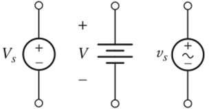
Esto refleja c�mo la energ�a el�ctrica se convierte en calor dentro del componente
En dispositivos reales, la resistencia no siempre es ideal. Las resistencias pueden ser afectadas por factores como la no linealidad, l�mites de potencia y temperatura. Por ejemplo, al sobrepasar su capacidad de disipaci�n, una resistencia puede fallar catastr�ficamente.
MODELOS DE FUENTES IDEALES Y REALES DE VOLTAJE Y CORRIENTE
Fuentes ideales
Las fuentes ideales son modelos matem�ticos que simplifican el comportamiento de dispositivos reales:
� Fuente de tensi�n independiente: Mantiene una tensi�n constante sin importar la corriente que fluya a trav�s de ella. Es representada por s�mbolos est�ndar y se considera una aproximaci�n razonable de bater�as o fuentes reguladas.
� Fuente de corriente independiente: Suministra una corriente constante sin importar la tensi�n en sus terminales. Aunque idealmente proporciona potencia infinita, en la pr�ctica se aproxima con circuitos electr�nicos
Fuentes dependientes
Estas fuentes, tambi�n conocidas como fuentes controladas, dependen de una tensi�n o corriente en otro punto del circuito. Se utilizan ampliamente en modelos de transistores y amplificadores operacionales, permitiendo la simulaci�n de sistemas m�s complejos.
Fuentes reales
En aplicaciones pr�cticas, ninguna fuente es realmente ideal. Por ejemplo:
� Una fuente de tensi�n real puede modelarse como una fuente ideal en serie con una resistencia interna. Esta resistencia refleja la ca�da de tensi�n al suministrar corriente.
� De manera similar, una fuente de corriente real puede representarse como una fuente ideal en paralelo con una resistencia. Esto limita la corriente m�xima que puede suministrar.
Estas representaciones permiten analizar circuitos en condiciones m�s realistas, teniendo en cuenta las limitaciones f�sicas de los componentes.
CONSIDERACIONES FINALES
El an�lisis de circuitos el�ctricos requiere comprender c�mo interact�an estos elementos en diferentes configuraciones. La capacidad de distinguir entre modelos ideales y reales es fundamental para dise�ar sistemas eficientes y funcionales. Adem�s, el uso de modelos matem�ticos para representar componentes f�sicos facilita el desarrollo de soluciones a problemas complejos en ingenier�a el�ctrica.
1.2 Ley de Ohm y convenci�n pasiva de signos; potencia el�ctrica y conservaci�n de la carga, resistores en serie y en paralelo, transformaci�n deltaestrella.
1.3 Leyes de Kirchhoff, m�todos de an�lisis de circuitos: por mallas y por nodos, principio de superposici�n.
1.4 An�lisis y dise�o de circuitos resistivos por medio de simulaci�n con equipo de c�mputo.
2. Circuitos resistivos con fuentes independientes y dependientes.
2.1 Fuentes de corriente y de voltaje dependientes o controladas, an�lisis de circuitos resistivos con fuentes independientes y dependientes.
2.2 Transformaci�n de fuentes, equivalencia de circuitos, teoremas de Th�venin y de Norton, teorema de m�xima transferencia de potencia.
2.3 Amplificador operacional como aplicaci�n de circuitos con fuentes dependientes; configuraci�n inversora, no inversora, el sumador, el seguidor y el comparador.
2.4 An�lisis y simulaci�n de circuitos resistivos con fuentes independientes y dependientes con equipo de c�mputo.
3. An�lisis del estado transitorio de circuitos RC, RL y RLC.
3.1 Se�ales b�sicas en la teor�a de circuitos: escal�n, impulso o delta de Dirac, rampa, exponencial y sinusoidal, su representaci�n matem�tica y gr�fica; obtenci�n de la expresi�n matem�tica de se�ales lineales compuestas y su representaci�n gr�fica con equipo de c�mputo.
3.2 Obtenci�n y an�lisis de los modelos matem�ticos de los circuitos RC y RL, constantes de tiempo.
3.3 Interpretaci�n de las respuestas libre y forzada de los circuitos RC y RL con condiciones iniciales; respuesta a las se�ales b�sicas: escal�n, impulso, exponencial y sinusoidal; aplicaci�n del teorema de Th�venin para el planteamiento de la ecuaci�n de circuitos RC y RL; an�lisis del circuito integrador con amplificador operacional.
3.4 Circuito RLC serie con fuente de voltaje y paralelo con fuente de corriente: modelo matem�tico, ecuaci�n caracter�stica y valores caracter�sticos; an�lisis de los diferentes tipos de respuesta libre de circuitos de segundo orden y su relaci�n con los valores caracter�sticos: no amortiguada, subamortiguada, cr�ticamente amortiguada y sobreamortiguada; respuesta completa de circuitos de segundo orden con condiciones iniciales: respuesta libre, natural u homog�nea y respuesta forzada, permanente o particular; m�todo de variables de estado para el planteamiento del modelo matem�tico de circuitos el�ctricos de segundo orden; modelo matricial de circuitos de segundo orden.
3.5 Dise�o de circuitos de segundo orden, a partir de sus valores caracter�sticos y de gr�ficas de su respuesta completa.
3.6 An�lisis y simulaci�n de circuitos RC y RL de primer y segundo orden, as� como de circuitos RLC de segundo orden con equipo de c�mputo.
4. Circuitos en estado sinusoidal permanente.
4.1 Respuesta forzada de circuitos RC, RL y RLC a una excitaci�n sinusoidal; funci�n de excitaci�n exponencial compleja; concepto de fasor; impedancia (resistencia y reactancia) y admitancia (conductancia y susceptancia) de elementos capacitivos e inductivos.
4.2 An�lisis de circuitos en estado sinusoidal permanente: fuentes dependientes, leyes de Kirchhoff y m�todos de corrientes de malla y de voltajes de nodo usando fasores; aplicaci�n de los teoremas de superposici�n y de Th�venin para el an�lisis de circuitos en estado sinusoidal permanente; diagramas fasoriales.
4.3 An�lisis y simulaci�n de circuitos en estado sinusoidal permanente con equipo de c�mputo.
4.4 Concepto de potencia instant�nea y promedio; valor efectivo o eficaz (rms) de una se�al peri�dica; concepto de potencia compleja; factor de potencia y �ngulo de potencia; problemas de correcci�n del factor de potencia de una instalaci�n el�ctrica.
4.5 Obtenci�n de la potencia compleja y resoluci�n de problemas de correcci�n del factor de potencia con equipo de c�mputo.
4.6 Introducci�n a los sistemas trif�sicos: descripci�n del generador trif�sico, caracter�sticas principales, voltaje de fase o de l�nea a neutro y voltaje de l�nea a l�nea o entre fases; an�lisis de circuitos trif�sicos balanceados con cargas delta y estrella; transformaci�n deltaestrella; potencia instant�nea y promedio de circuitos trif�sicos balanceados.
5. Respuesta en frecuencia de circuitos el�ctricos.
5.1 Funci�n de red y funci�n de transferencia de un circuito en estado sinusoidal permanente: obtenci�n de su ganancia y de su �ngulo de desfase en funci�n de la frecuencia; concepto de decibelio y el diagrama de Bode.
5.2 Resonancia de un circuito RLC y su relaci�n con el factor de potencia; factor de calidad y ancho de banda de un circuito resonante.
5.3 Filtros de primer orden con circuitos RC y RL, concepto de frecuencia de corte y de factor de calidad de un filtro.
5.4 Filtros de segundo orden con circuitos RLC: pasa bajas, pasa altas, pasa bandas y supresor de bandas.
5.5 An�lisis, dise�o y simulaci�n de filtros de primer y segundo orden con equipo de c�mputo.
6. Bibliograf�a
HAYT, William, KEMMERLY, Jack, DURBIN, Steven - An�lisis de circuitos en ingenier�a.
TERMOFLUIDOS (1409)
Objetivo(s) del curso:
El alumno aplicar� las ecuaciones fundamentales de la termodin�mica, la mec�nica de fluidos y la transferencia de calor, a la soluci�n de problemas de ingenier�a de fluidos y t�rmica.
1. Introducci�n.
1.1 Importancia de la ingenier�a de fluidos y t�rmica para el ingeniero industrial. Aplicaciones.
INGENIER�A DE FLUIDOS Y T�RMICA
Muchos sistemas de ingenier�a involucran la transferencia, transporte y conversi�n de energ�a, y las ciencias que se ocupan de estos temas se conocen en general como Ciencias T�rmicas-Fluidas. Las ciencias t�rmicas-fluidas se estudian generalmente bajo las subcategor�as de Termodin�mica, Transferencia De Calor y Mec�nica De Fluidos (Algunos autores tambi�n consideran la Combusti�n).
IMPORTANCIA DE LA INGENIER�A DE FLUIDOS Y T�RMICA EN INGENIER�A INDUSTRIAL Y MECATR�NICA
La ingenier�a de fluidos y t�rmica representa una disciplina esencial dentro de las ingenier�as industrial y mecatr�nica, al proporcionar las bases para analizar, dise�ar y optimizar sistemas que dependen de la transferencia, transporte y conversi�n de energ�a. Estas ciencias se dividen en tres �reas principales: termodin�mica, mec�nica de fluidos y transferencia de calor. Cada una de estas �reas desempe�a un papel crucial en la soluci�n de problemas complejos y la innovaci�n tecnol�gica, con aplicaciones que abarcan desde procesos industriales hasta el desarrollo de dispositivos avanzados y sustentables.
Aplicaciones en Ingenier�a Industrial
En el �mbito de la ingenier�a industrial, la termodin�mica es clave para comprender y dise�ar sistemas de energ�a que involucran la generaci�n y uso eficiente de recursos energ�ticos. Por ejemplo, las plantas de energ�a convencionales y nucleares utilizan principios termodin�micos para convertir energ�a t�rmica en electricidad. Este conocimiento tambi�n es crucial en la optimizaci�n de procesos industriales como el tratamiento t�rmico de metales o el control de temperatura en l�neas de producci�n automatizadas. La transferencia de calor, por su parte, se aplica en el dise�o de intercambiadores t�rmicos, sistemas de calefacci�n, ventilaci�n y aire acondicionado (HVAC), y equipos de refrigeraci�n industrial.
La mec�nica de fluidos es otra herramienta fundamental para los ingenieros industriales. Es utilizada para dise�ar sistemas de transporte de fluidos, como redes de distribuci�n de agua, gas y petr�leo, as� como para optimizar procesos que implican flujos de materiales l�quidos o gaseosos en f�bricas y plantas de manufactura. Estos conocimientos tambi�n son aplicables en el desarrollo de sistemas urbanos como redes de suministro de agua potable y el dise�o eficiente de sistemas de alcantarillado. Asimismo, en aplicaciones log�sticas e industriales, la mec�nica de fluidos permite calcular las p�rdidas de energ�a y mejorar la eficiencia de sistemas de bombeo.
Aplicaciones en Ingenier�a Mecatr�nica
En la ingenier�a mecatr�nica, la ingenier�a de fluidos y t�rmica es esencial para dise�ar y controlar sistemas complejos que integran componentes electr�nicos, mec�nicos y t�rmicos. Por ejemplo, la transferencia de calor es fundamental para dise�ar sistemas de refrigeraci�n en dispositivos electr�nicos, como CPUs, sensores y actuadores. En robots industriales y dispositivos automatizados, garantizar un control t�rmico adecuado es clave para evitar fallos debido al sobrecalentamiento. Adem�s, los sistemas hidr�ulicos y neum�ticos, ampliamente utilizados en rob�tica y maquinaria avanzada, dependen de la mec�nica de fluidos para su dise�o y operaci�n.
Los ingenieros mecatr�nicos tambi�n aplican la termodin�mica y la transferencia de calor en el desarrollo de tecnolog�as sustentables, como paneles solares y turbinas e�licas. Aqu�, las ciencias t�rmicas y de fluidos permiten maximizar la conversi�n de energ�a y optimizar el rendimiento de estos sistemas. Asimismo, el modelado y simulaci�n mediante herramientas como la din�mica de fluidos computacional (CFD) son fundamentales para predecir el comportamiento de sistemas complejos antes de su implementaci�n en el mundo real.
Otra �rea cr�tica es la biom�dica, donde la ingenier�a de fluidos y t�rmica se aplica en el dise�o de dispositivos m�dicos avanzados, como bombas de insulina, pr�tesis rob�ticas y equipos quir�rgicos. La mec�nica de fluidos, por ejemplo, se emplea para modelar sistemas biol�gicos como el flujo sangu�neo, facilitando la creaci�n de dispositivos personalizados que mejoran la calidad de vida de los pacientes.
TERMODIN�MICA
El t�rmino termodin�mica proviene de las palabras griegas therme (calor) y dynamis (fuerza), lo cual corresponde a lo m�s descriptivo de los primeros esfuerzos por convertir el calor en energ�a. En la actualidad, el concepto se interpreta de manera amplia para incluir los aspectos de energ�a y sus transformaciones, incluida la generaci�n de potencia, la refrigeraci�n y las relaciones entre las propiedades de la materia.
La termodin�mica es la ciencia que estudia la energ�a, su transformaci�n y las leyes que rigen estos procesos. Se fundamenta en los principios de conservaci�n de energ�a y la tendencia natural de los sistemas a evolucionar hacia estados de equilibrio. Los conceptos clave incluyen:
- Principio de conservaci�n de la energ�a: �ste expresa que durante una interacci�n, la energ�a puede cambiar de una forma a otra pero su cantidad total permanece constante. Es decir: la energ�a no se crea ni se destruye.
El cambio en el contenido energ�tico de un cuerpo o de cualquier otro sistema es igual a la diferencia entre la entrada y la salida de energ�a, y el balance de �sta se expresa como:

- Primera ley de la termodin�mica: Es simplemente una expresi�n del principio de conservaci�n de la energ�a, y sostiene que la energ�a es una propiedad termodin�mica. Establece que la energ�a total de un sistema permanece constante, siendo el calor y el trabajo las formas principales de transferencia de energ�a.
- Segunda ley de la termodin�mica: afirma que la energ�a tiene calidad as� como cantidad, y los procesos reales ocurren hacia donde disminuye la calidad de la energ�a. Introduce la entrop�a, una medida del desorden que siempre aumenta en procesos naturales, dictando la direcci�n de los procesos energ�ticos.
Las aplicaciones pr�cticas abarcan:
- Ciclos t�rmicos como los de motores y turbinas, donde se optimiza la conversi�n de calor en trabajo.
- Refrigeraci�n y climatizaci�n, donde se transfieren energ�as entre diferentes temperaturas.
- Plantas de energ�a, dise�adas para maximizar la generaci�n de electricidad mediante ciclos Rankine y Brayton.
TRANSFERENCIA DE CALOR
La termodin�mica trata de la cantidad y calidad de la transferencia de calor a medida que un sistema pasa por un proceso de un estado de equilibrio a otro y no hace referencia a cu�nto durar� ese proceso. Pero en la ingenier�a a menudo estamos interesados en la rapidez o raz�n de esa transferencia, la cual constituye el tema de la ciencia de la transferencia de calor.
La transferencia de calor estudia c�mo se desplaza la energ�a t�rmica debido a diferencias de temperatura. Sus tres mecanismos principales son:
- Conducci�n: Transferencia a trav�s de un s�lido o entre mol�culas en contacto. Es la transferencia de energ�a de las part�culas m�s energ�ticas de una sustancia hacia las adyacentes, menos energ�ticas, como resultado de la interacci�n entre ellas.
- Convecci�n: Movimiento combinado de mol�culas en un fluido, facilitado por gradientes t�rmicos. Es el modo de transferencia de calor entre una superficie s�lida y el l�quido o gas adyacente que est�n en movimiento, y comprende los efectos combinados de la conducci�n y del movimiento del fluido.
- Radiaci�n: Emisi�n de energ�a en forma de ondas electromagn�ticas, independiente del medio. Es la energ�a emitida por la materia en forma de ondas electromagn�ticas (o fotones), como resultado de los cambios en las configuraciones electr�nicas de los �tomos o mol�culas.
Esta ciencia se preocupa tanto por la cantidad como por la velocidad de transferencia de calor. Es esencial en:
- Dise�o de intercambiadores de calor: Utilizados en sistemas industriales y automotrices.
- Aislamiento t�rmico: Mejora de la eficiencia energ�tica en edificios.
- Gesti�n t�rmica en electr�nica: Prevenci�n del sobrecalentamiento en dispositivos sensibles
MEC�NICA DE FLUIDOS
La mec�nica es la ciencia f�sica m�s antigua que estudia tanto los cuerpos en reposo como aquellos en movimiento bajo la influencia de fuerzas. La parte de la mec�nica que se ocupa de los cuerpos en reposo se llama est�tica, mientras que la que estudia los cuerpos en movimiento se llama din�mica.
La mec�nica de fluidos es una subdisciplina de la mec�nica que se enfoca en el comportamiento de los fluidos, ya sea que est�n en reposo (est�tica de fluidos) o en movimiento (din�mica de fluidos), y en c�mo interact�an con s�lidos u otros fluidos. De hecho, la din�mica de fluidos incluye a la est�tica de fluidos como un caso particular donde la velocidad del fluido es cero.
La mec�nica de fluidos se divide en varias ramas. La hidrodin�mica estudia el movimiento de fluidos pr�cticamente incompresibles, como los l�quidos (especialmente el agua) y los gases a bajas velocidades. Dentro de la hidrodin�mica, la hidr�ulica se concentra en el flujo de l�quidos a trav�s de tuber�as y canales abiertos. Por otro lado, la din�mica de gases se ocupa del flujo de fluidos que experimentan cambios significativos en su densidad, como los gases que se mueven a altas velocidades a trav�s de toberas. La aerodin�mica, por su parte, estudia el flujo de gases, especialmente del aire, alrededor de objetos como aviones, cohetes y autom�viles.
Otras disciplinas relacionadas con la mec�nica de fluidos incluyen la meteorolog�a, la oceanograf�a y la hidrolog�a, que estudian los flujos naturales que ocurren en la atm�sfera, los oc�anos y los cuerpos de agua dulce, respectivamente.
Aplicaciones t�picas:
- Hidrodin�mica e hidr�ulica: Transporte de agua y control de flujos en canales y tuber�as.
- Aerodin�mica: Dise�o de veh�culos y estructuras sometidas al flujo de aire.
- Simulaci�n computacional: Modelado de sistemas complejos para predecir comportamientos
2. Aplicaciones de termodin�mica.
2.1 Plantas t�rmicas de vapor.
Las plantas t�rmicas de vapor se centran en el uso del Ciclo Rankine para la generaci�n de energ�a. Este ciclo opera a trav�s de la vaporizaci�n del agua en una caldera, su expansi�n en una turbina para generar trabajo, y su posterior condensaci�n en un condensador para reiniciar el ciclo. Las plantas de vapor se destacan por su alta eficiencia t�rmica y su capacidad para operar en una amplia gama de temperaturas y presiones. Su dise�o involucra optimizaci�n de calderas, turbinas y sistemas de condensaci�n.
El vapor de agua es el fluido de trabajo m�s com�nmente utilizado en ciclos de potencia de vapor debido a sus muchas y atractivas caracter�sticas, como bajo costo, disponibilidad y alta entalp�a de vaporizaci�n. Por consiguiente, el estudio de las centrales el�ctricas de vapor, que son normalmente llamadas centrales carboel�ctricas, centrales nucleares o centrales el�ctricas de gas natural, dependiendo del tipo de combustible que empleen para suministrar calor al vapor, pueden analizarse de la misma manera.
EL CICLO DE VAPOR DE CARNOT
FUNCIONAMIENTO
El funcionamiento se lleva a cabo mediante un proceso de varias etapas:
- Generaci�n de vapor:
En esta etapa, el agua se calienta en una caldera mediante la quema de combustibles f�siles, biomasa o el uso de energ�a nuclear. Esto convierte el agua l�quida en vapor a alta presi�n y temperatura. - Expansi�n del vapor:
El vapor generado se expande en una turbina de vapor, transfiriendo su energ�a t�rmica a energ�a mec�nica. Esta etapa es clave para la producci�n de trabajo �til, que es posteriormente convertido en energ�a el�ctrica mediante un generador. - Condensaci�n del vapor:
El vapor que ha pasado por la turbina entra en un condensador, donde se enfr�a y se convierte nuevamente en agua l�quida. Este proceso reduce la presi�n del vapor, aumentando la eficiencia del ciclo. - Recirculaci�n del agua:
El agua condensada es bombeada de regreso a la caldera para reiniciar el ciclo. Este circuito cerrado asegura la reutilizaci�n del agua y minimiza el desperdicio.
VENTAJAS
- Alta eficiencia:
Con dise�os optimizados y t�cnicas avanzadas, como recalentamiento del vapor o aumento de la presi�n de operaci�n, las plantas de vapor logran una eficiencia considerable en la conversi�n de energ�a. - Flexibilidad en fuentes de energ�a:
Estas plantas pueden operar con diversas fuentes de energ�a, como carb�n, gas natural, petr�leo, biomasa y energ�a nuclear, lo que las hace vers�tiles. - Capacidad de generaci�n a gran escala:
Son ideales para la generaci�n de energ�a en grandes cantidades, siendo una de las principales tecnolog�as utilizadas en centrales el�ctricas alrededor del mundo.
DESAF�OS
- Impacto ambiental:
Aunque eficientes, las plantas que utilizan combustibles f�siles generan emisiones de CO₂ y otros contaminantes. - Consumo de agua:
El proceso de condensaci�n requiere grandes vol�menes de agua, lo que puede ser un desaf�o en �reas con escasez del recurso.
2.2 Plantas t�rmicas de gas.
2.3 Plantas de ciclo combinado.
2.4 Plantas de emergencia y cogeneraci�n.
2.5 Calderas y calor�metros (2hP).
2.6 Ciclo Rankine (2hP).
2.7 Turbina de gas (2hP).
2.8 Turbina de vapor y condensadores (2hP).
2.9 Planta de emergencia (2hP).
2.10 Compresor reciprocante (2hP).
3. Conceptos b�sicos de mec�nica de fluidos.
3.1 Ecuaciones de continuidad, cantidad de movimiento y energ�a para vol�menes de control.
3.2 An�lisis dimensional, semejanza y teor�a de modelos.
3.3 Dispositivos de medici�n de velocidad y flujo.
3.4 Flujo en tuber�as.
3.5 Manometr�a y viscosimetr�a (2hP).
3.6 Medidores de velocidad (2hP).
3.7 Medidores de gasto (2hP).
3.8 Flujo en tuber�as (2hP).
3.9 Bomba centr�fuga (2hP).
4. Conceptos b�sicos de transferencia de calor.
4.1 Conducci�n: Ley de Fourier, conductividad t�rmica.
4.2 Convecci�n: Ley de Newton de enfriamiento.
4.3 Radiaci�n: Ley de Stefan-Boltzmann.
4.4 Mecanismos simult�neos.
4.5 M�todo de las resistencias t�rmicas equivalentes.
4.6 Introducci�n a los cambiadores de calor.
4.7 Conducci�n y convecci�n de calor (2hP).
5. Bibliograf�a.
CENGEL, Y.a., TURNER R.H. - Fundamental of thermal-fluid sciences.
CENGEL, Y. A., BOLSES, M. A. - Termodin�mica.
CENGEL, Y.a. �- Mec�nica de fluidos.
CENGEL, Y. A - Transferencia de calor y masa.
INGENIER�A DE MATERIALES (1570)
Objetivo(s) del curso:
El alumno analizar� los fundamentos del comportamiento de los materiales de ingenier�a, de tal forma que pueda seleccionarlos, modificar sus propiedades y su comportamiento bajo las condiciones de aplicaci�n que a cada caso corresponda.
1. Estructura del �tomo.
1.1 Estructura del �tomo.
MATERIALES
La Ciencia e Ingenier�a de Materiales se basa en una profunda comprensi�n de la estructura at�mica. Es fundamental para entender la materia y las propiedades de los materiales. Un �tomo consiste en un n�cleo peque�o y denso que contiene protones y neutrones, rodeado por una nube de electrones que se encuentran en constante movimiento dentro de orbitales. Los protones tienen una carga positiva, mientras que los neutrones son neutros. La cantidad de protones en el n�cleo define el n�mero at�mico, que a su vez determina las propiedades qu�micas del elemento. Por otro lado, la masa del �tomo est� principalmente concentrada en el n�cleo debido a la presencia de protones y neutrones, mientras que los electrones tienen una masa mucho menor y contribuyen poco a la masa total.
El concepto de niveles y subniveles energ�ticos es crucial para entender c�mo se organizan los electrones alrededor del n�cleo. Cada nivel energ�tico puede dividirse en subniveles designados como s, p, d y f, cada uno con un n�mero espec�fico de orbitales. Por ejemplo, el nivel energ�tico m�s bajo, 1s, puede albergar hasta dos electrones. A medida que el n�mero at�mico aumenta, los electrones ocupan niveles y subniveles m�s altos seg�n el principio de Aufbau, que establece que los electrones se colocan en el nivel de energ�a m�s bajo disponible.
Adem�s, las interacciones entre las part�culas subat�micas y las fuerzas fundamentales de la naturaleza, como la fuerza nuclear fuerte y la electromagn�tica, juegan un papel esencial en la estabilidad y las propiedades del �tomo. La comprensi�n detallada de la estructura at�mica ha permitido avances significativos en �reas como la qu�mica, la f�sica de materiales y la nanotecnolog�a.
1.2 Modelo at�mico.
A lo largo de la historia, el modelo at�mico ha evolucionado para reflejar mejor la comprensi�n cient�fica de la estructura del �tomo. Los primeros modelos, como el modelo de Dalton, describ�an al �tomo como una part�cula indivisible y fundamental. Sin embargo, este modelo fue reemplazado por el modelo de Thompson, tambi�n conocido como el modelo del "pud�n con pasas," que introdujo la idea de que los electrones estaban incrustados en una esfera cargada positivamente.
El modelo de Rutherford marc� un cambio significativo al demostrar que el �tomo tiene un n�cleo central donde se concentra la mayor parte de su masa y carga positiva, y que los electrones orbitan este n�cleo. Este descubrimiento fue posible gracias a los experimentos de dispersi�n de part�culas alfa.
M�s adelante, Niels Bohr refin� el modelo at�mico al proponer que los electrones se mueven en �rbitas circulares espec�ficas alrededor del n�cleo, cada una con un nivel de energ�a definido. Bohr introdujo la idea de que los electrones pueden saltar entre �rbitas al absorber o emitir energ�a en forma de fotones, lo que explicaba fen�menos como los espectros de emisi�n at�mica.
Con el desarrollo de la mec�nica cu�ntica, el modelo de Bohr fue reemplazado por el modelo mec�nico-cu�ntico del �tomo. Este modelo utiliza funciones de onda, conocidas como orbitales, para describir las probabilidades de encontrar un electr�n en una regi�n espec�fica del espacio. Los principios de la mec�nica cu�ntica, como el principio de incertidumbre de Heisenberg y el principio de exclusi�n de Pauli, proporcionan un marco te�rico m�s completo para entender la estructura y el comportamiento del �tomo.
1.3 Configuraci�n electr�nica
La configuraci�n electr�nica describe la distribuci�n de los electrones en los niveles y subniveles de energ�a de un �tomo. Esta distribuci�n est� gobernada por tres reglas principales: el principio de Aufbau, el principio de exclusi�n de Pauli y la regla de Hund. El principio de Aufbau establece que los electrones ocupan primero los orbitales de menor energ�a antes de llenar los de energ�a m�s alta. El principio de exclusi�n de Pauli indica que no puede haber dos electrones con el mismo conjunto de n�meros cu�nticos en un mismo �tomo. Por �ltimo, la regla de Hund establece que los electrones ocupan orbitales de igual energ�a de manera que se maximice el n�mero de electrones desapareados.
Por ejemplo, la configuraci�n electr�nica del carbono (Z = 6) es 1s� 2s� 2p�, lo que significa que el �tomo tiene dos electrones en el nivel 1s, dos en el nivel 2s y dos m�s distribuidos en los orbitales 2p. Estas configuraciones electr�nicas son fundamentales para predecir las propiedades qu�micas y f�sicas de los elementos, incluyendo su reactividad, estado de oxidaci�n y formaci�n de enlaces qu�micos.
Adem�s, las configuraciones electr�nicas de los elementos en la tabla peri�dica muestran tendencias claras. Por ejemplo, los elementos del mismo grupo suelen tener configuraciones electr�nicas similares en su capa de valencia, lo que explica sus propiedades qu�micas similares. Los gases nobles, con capas de valencia completamente llenas, son notablemente estables y qu�micamente inertes.
1.4 Tabla peri�dica.
La tabla peri�dica es una herramienta indispensable en la ciencia y la ingenier�a de los materiales, ya que organiza los elementos en funci�n de sus propiedades qu�micas y f�sicas. Dise�ada inicialmente por Dmitri Mendel�yev en el siglo XIX, la tabla peri�dica moderna est� organizada por n�mero at�mico creciente, lo que refleja directamente la estructura electr�nica de los elementos.
Los elementos se agrupan en per�odos y grupos, donde los per�odos representan niveles de energ�a y los grupos contienen elementos con configuraciones electr�nicas similares en sus capas de valencia. Por ejemplo, los elementos del grupo 1, conocidos como los metales alcalinos, tienen un electr�n en su capa de valencia, lo que los hace altamente reactivos. Por otro lado, los elementos del grupo 18, los gases nobles, tienen capas de valencia completamente llenas, lo que los hace excepcionalmente estables.
La tabla peri�dica tambi�n resalta tendencias peri�dicas como el radio at�mico, la electronegatividad, la energ�a de ionizaci�n y la afinidad electr�nica. Por ejemplo, el radio at�mico disminuye a lo largo de un per�odo debido al aumento de la carga nuclear efectiva, mientras que aumenta al descender en un grupo debido a la adici�n de niveles de energ�a. Estas tendencias son cruciales para predecir el comportamiento qu�mico y f�sico de los elementos y sus compuestos.
Adem�s, la tabla peri�dica incluye categor�as espec�ficas de elementos como los metales, no metales y metaloides, as� como bloques basados en los subniveles electr�nicos (s, p, d y f). Los elementos de transici�n, ubicados en el bloque d, son particularmente importantes en aplicaciones industriales debido a sus propiedades �nicas, como la formaci�n de complejos y su utilidad en cat�lisis.
2. Fuerzas interat�micas y ordenamiento cristalino.
2.1 Fuerzas interat�micas e intermoleculares.
2.2 Redes de Bravais.
2.3 Arreglos t�picos en metales y sus caracter�sticas.
2.4 �ndices de Miller.
3. Defectos cristalinos.
3.1 Clasificaci�n de los defectos cristalinos.
3.2 Defectos de punto, �tomos intersticiales, sustitucionales y sitios vacantes.
3.3 Defectos de l�nea. La dislocaci�n, sus tipos y caracter�sticas (campo de esfuerzos y energ�a asociada).
3.4 Defectos de superficie
3.5 Interacciones entre defectos cristalinos.
4. Comportamiento mec�nico.
4.1 Concepto de esfuerzo y deformaci�n.
4.2 Deformaci�n el�stica y pl�stica.
4.3 L�mite el�stico te�rico.
4.4 Sistema de deslizamiento.
4.5 Ley de Schmidt.
4.6 Dislocaciones y la deformaci�n pl�stica.
4.7 Conceptos b�sicos de fractura.
5. Diagramas de fase.
5.1 Conceptos b�sicos. Limite de solubilidad, fase, fase de equilibrio termodin�mico, microestructura.
5.2 Diagramas binarios. Sus tipos principales, transformaciones invariantes.
5.3 Diagrama hierro-carbono (metaestable y estable). Microestructuras caracater�sticas del diagrama hierro-carbono.
6. Difusi�n de s�lidos.
6.1 Mecanismos de la difusi�n a trav�s de los s�lidos.
6.2 Justificaci�n termodin�mica de la difusi�n
6.3 Difusi�n en estado estable. Primera y segunda leyes de Fick.
6.4 Factores que influyen en la difusi�n.
6.5 Fen�menos que involucran procesos difusivos..
7. Mecanismos de endurecimiento.
7.1 Las dislocaciones y el endurecimiento.
7.2 Endurecimiento por tama�o de grano.
7.3 Endurecimiento por trabajo en fr�o.
7.4 Endurecimiento por soluci�n s�lida.
7.5 Endurecimiento por precipitaci�n.
7.6 Endurecimiento por transformaci�n martens�tica.
8. Materiales para ingenier�a y su selecci�n.
8.1 Aceros y fundiciones.
8.2 El cobre y sus aleaciones.
8.3 El aluminio y sus aleaciones.
8.4 Otros metales y aleaciones de amplio espectro industrial.
8.5 Pol�meros para ingenier�a.
8.6 Cer�micos para ingenier�a.
8.7 Otros materiales de amplia aplicaci�n en ingenier�a.
8.8 M�todos de selecci�n de materiales para ingenier�a.
9. Bibliograf�a.
ASKELAND, R. D. - The Science and Engineering of Materials.
MEC�NICA DE S�LIDOS (1540)
Objetivo(s) del curso:
El alumno analizar� e inferir� el comportamiento mec�nico de los cuerpos s�lidos deformables, con base en la identificaci�n de las fuerzas internas que se producen bajo la acci�n de fuerzas externas, considerando la geometr�a y las propiedades mec�nicas de los materiales.
1. Introducci�n a la mec�nica de s�lidos.
1.1 Los alcances de la mec�nica de s�lidos.
Mec�nica de Materiales
La Mec�nica de S�lidos, como rama fundamental de la ingenier�a y la f�sica aplicada, se encarga de estudiar el comportamiento de los materiales cuando se someten a diferentes tipos de fuerzas externas e internas. Este campo, tambi�n conocido como Mec�nica de Materiales o Mec�nica de los Cuerpos Deformables, abarca desde los principios b�sicos del equilibrio y la deformaci�n hasta teor�as avanzadas sobre el comportamiento no lineal de los materiales. El alcance de esta disciplina se extiende mucho m�s all� de los conceptos b�sicos de carga y deformaci�n, integr�ndose con las �reas de dise�o estructural, resistencia de materiales, din�mica de s�lidos y la innovaci�n en la ingenier�a moderna.
Uno de los primeros pasos para comprender los alcances de esta disciplina es reconocer c�mo integra los principios fundamentales de la f�sica y las matem�ticas para resolver problemas complejos de ingenier�a. El an�lisis comienza con la determinaci�n de fuerzas externas que act�an sobre los cuerpos, utilizando los principios b�sicos de la est�tica. Estas fuerzas generan tensiones y deformaciones internas que deben ser analizadas en detalle para garantizar que el material o la estructura pueda soportarlas sin fallar. A medida que los problemas de ingenier�a han evolucionado, la mec�nica de s�lidos ha desarrollado herramientas y m�todos para abordar situaciones m�s complicadas, como cargas din�micas, impactos y condiciones ambientales extremas.

Hist�ricamente, la mec�nica de s�lidos ha jugado un papel crucial en el desarrollo de estructuras y m�quinas que han revolucionado la humanidad. Desde los experimentos iniciales de Galileo en el siglo XVII, que sentaron las bases de la resistencia de materiales, hasta las contribuciones de Saint-Venant, Poisson y Navier en el siglo XVIII, la mec�nica de s�lidos ha avanzado significativamente. Estos pioneros no solo formularon las ecuaciones fundamentales de equilibrio y deformaci�n, sino que tambi�n establecieron las bases experimentales para la caracterizaci�n de materiales. Hoy en d�a, los ingenieros contin�an construyendo sobre estos fundamentos, utilizando herramientas avanzadas como el an�lisis por elementos finitos (FEM, por sus siglas en ingl�s) para modelar y predecir el comportamiento de materiales complejos bajo diversas condiciones de carga.
El dise�o estructural es una de las aplicaciones m�s notables de la mec�nica de s�lidos. Los ingenieros utilizan principios de esta disciplina para dise�ar edificios, puentes, aviones, veh�culos y una amplia gama de productos que requieren estabilidad y seguridad. Por ejemplo, la capacidad de calcular las tensiones y deformaciones en vigas, columnas y placas permite a los ingenieros seleccionar los materiales m�s adecuados y optimizar la geometr�a para soportar cargas espec�ficas. Esto no solo mejora la seguridad y funcionalidad de las estructuras, sino que tambi�n permite reducir costos y minimizar el impacto ambiental al utilizar recursos de manera m�s eficiente.
Adem�s, la mec�nica de s�lidos es fundamental para comprender y prevenir fallos en materiales. Los fen�menos como el pandeo, la fatiga y la fractura son estudiados en profundidad para garantizar que las estructuras y los componentes mec�nicos puedan resistir las condiciones de servicio durante su vida �til. Por ejemplo, en el caso del pandeo, los ingenieros analizan c�mo una columna o viga delgada puede deformarse y colapsar bajo una carga cr�tica. De manera similar, los estudios sobre fatiga y fractura permiten evaluar c�mo los materiales se comportan bajo cargas c�clicas, como las que experimentan las alas de un avi�n o las ruedas de un tren, donde peque�as fisuras pueden propagarse y causar fallos catastr�ficos si no se detectan a tiempo.
La elasticidad y la plasticidad son dos conceptos fundamentales dentro de este campo, que permiten describir c�mo los materiales responden a las fuerzas aplicadas. Mientras que la elasticidad se refiere a la capacidad de un material para recuperar su forma original una vez que se elimina la carga, la plasticidad describe el comportamiento permanente de deformaci�n cuando el material excede su l�mite el�stico. Estas propiedades son cruciales para dise�ar estructuras seguras y funcionales. Por ejemplo, la ley de Hooke, una de las primeras leyes en describir el comportamiento el�stico, sigue siendo una herramienta b�sica en la ingenier�a moderna. Sin embargo, en aplicaciones m�s avanzadas, se emplean teor�as no lineales y modelos constitutivos complejos para describir materiales que no siguen un comportamiento estrictamente lineal.
Un �rea que ha ampliado significativamente los alcances de la mec�nica de s�lidos es el estudio de los materiales compuestos y los biomateriales. Los materiales compuestos, como las fibras de carbono y las resinas epoxi, son esenciales en la industria aeroespacial y automotriz debido a su alta resistencia y baja densidad. Por otro lado, los biomateriales, dise�ados para interactuar con sistemas biol�gicos, est�n transformando la medicina moderna con aplicaciones que van desde pr�tesis hasta implantes quir�rgicos. Estos avances no solo requieren una comprensi�n profunda de las propiedades mec�nicas, sino tambi�n de las interacciones entre diferentes materiales a nivel microsc�pico y macrosc�pico.
En el contexto actual, la sostenibilidad y la innovaci�n tecnol�gica est�n moldeando los nuevos alcances de la mec�nica de s�lidos. Los ingenieros est�n trabajando para desarrollar materiales avanzados que sean m�s ligeros, duraderos y reciclables, como los pol�meros biodegradables y las aleaciones de alta entrop�a. Al mismo tiempo, las herramientas computacionales est�n transformando la forma en que se realiza el an�lisis estructural. Los m�todos de simulaci�n por computadora permiten a los ingenieros modelar estructuras complejas y prever c�mo se comportar�n bajo diversas condiciones, reduciendo la necesidad de pruebas f�sicas extensas y costosas.
Por �ltimo, la mec�nica de s�lidos tambi�n desempe�a un papel crucial en la investigaci�n y el desarrollo de tecnolog�as emergentes, como la impresi�n 3D y la nanotecnolog�a. En la impresi�n 3D, el control preciso de las propiedades mec�nicas es esencial para garantizar que los productos impresos sean funcionales y seguros. De manera similar, en la nanotecnolog�a, la comprensi�n del comportamiento mec�nico a escala molecular est� abriendo nuevas fronteras en el dise�o de materiales con propiedades �nicas.
2. Antecedentes.
2.1 Diagramas de cuerpo libre (DCL).
2.2 Ecuaciones de equilibrio.
2.3 Momentos de inercia.
2.4 Momento polar de inercia.
2.5 Concepto de esfuerzo normal y esfuerzo cortante.
3. Propiedades de los materiales para dise�o.
3.1 Clasificaci�n de los materiales.
3.2 Propiedades mec�nicas.
3.3 Relaciones costo-resistencia, resistencia-densidad.
3.4 Comportamiento d�ctil y fr�gil.
3.5 La fatiga en los materiales.
3.6 Factor de dise�o.
4. Esfuerzo y deformaci�n.
4.1 Esfuerzo normal.
4.2 Esfuerzo cortante.
4.3 Casos particulares.
4.4 Deformaci�n normal.
4.5 Deformaci�n a corte.
4.6 Representaci�n gr�fica del estado de esfuerzo y de deformaci�n por medio del c�rculo de Mohr.
4.7 Ley de Hooke generalizada.
4.8 Esfuerzos y deformaciones por variaciones de temperatura.
4.9 Concentraci�n de esfuerzos en miembros cargados axialmente.
5. Elementos sometidos a torsi�n.
5.1 Torsi�n en barras circulares.
5.2 Miembros est�ticamente indeterminados sometidos a torsi�n.
5.3 Transmisi�n de potencia.
5.4 Torsi�n en barras no circulares.
5.5 Concentraci�n de esfuerzos en miembros sometidos a torsi�n.
6. Determinaci�n de los diagramas de fuerza cortante y de momento flexionante en vigas.
6.1 Conceptos b�sicos.
6.2 M�todo de secciones.
6.3 M�todo gr�fico.
7. Esfuerzos por flexi�n y cortantes en vigas.
7.1 Condiciones de esfuerzo en el plano.
7.2 Determinaci�n de los esfuerzos en una viga sometida a flexi�n.
7.3 Esfuerzo cortante debido a una carga transversal.
7.4 Flexi�n en elementos compuestos.
7.5 An�lisis de vigas curvas.
7.6 Concentraci�n de esfuerzos en vigas.
8. Esfuerzos bajo cargas combinadas y transformaci�n de esfuerzos.
8.1 Superposici�n de esfuerzos.
8.2 Esfuerzos bajo diferentes combinaciones de carga para obtener el estado de esfuerzo en un punto (casos de aplicaci�n).
8.3 Transformaci�n de esfuerzos y de deformaciones en el plano.
8.4 C�rculo de Mohr para estados de esfuerzo y deformaci�n en el plano.
8.5 Criterio de falla de Von Mises-Hencky.
8.6 Esfuerzo eficaz o de Von Mises.
8.7 Introducci�n al dise�o por fatiga.
9. Bibliograf�a.
HIBBELER, R. C. - Mec�nica de materiales.
T�CNICAS DE PROGRAMACI�N (1472)
Objetivo(s) del curso:
El alumno dise�ar� sistemas de c�mputo con interfaces gr�ficas de usuario, con base en el paradigma de la programaci�n orientada a objetos. El alumno elaborar� programas eficientes, con un desempe�o a prueba de fallas y que sean amigables con el usuario.
1. Importancia del software en la mecatr�nica.
1.1 Diferencia entre programaci�n y codificaci�n.
CODIFICACI�N
Se refiere a la escritura de un programa utilizando un lenguaje espec�fico para que el ordenador pueda ejecutarlo.
Es la actividad t�cnica y pr�ctica de escribir c�digo en un lenguaje de programaci�n. Consiste en traducir una idea o dise�o en instrucciones que la m�quina pueda interpretar y ejecutar. Por ejemplo, escribir un programa en ensamblador para un microcontrolador o en Python para una aplicaci�n web.
La escritura de un programa en un lenguaje espec�fico para ser entendido por el ordenador. Puede implicar la generaci�n de c�digo en diferentes niveles de abstracci�n, como lenguajes de cuarta generaci�n.
PROGRAMACI�N
Es un concepto m�s amplio que incluye no solo la codificaci�n, sino tambi�n el dise�o, an�lisis y prueba del software.
Representa un concepto m�s amplio. Incluye el an�lisis del problema, el dise�o de la soluci�n, la implementaci�n (codificaci�n), la depuraci�n y las pruebas. Adem�s, abarca tareas como la optimizaci�n del c�digo, la gesti�n de versiones y la planificaci�n del mantenimiento del software. Por ejemplo, al programar un sistema mecatr�nico, el desarrollador no solo escribe el c�digo sino tambi�n dise�a algoritmos que integren sensores, actuadores y controladores, asegurando que el sistema sea eficiente y confiable.
Un m�todo com�n para dise�ar programas es el siguiente:
1. Definici�n del problema: Se debe establecer claramente qu� tarea realizar� el programa, qu� datos ingresar� y qu� resultados producir�. Tambi�n se deben considerar aspectos como la velocidad requerida, la precisi�n y la cantidad de memoria necesaria.
2. Dise�o del algoritmo: Un algoritmo es la secuencia de pasos que resuelve el problema. Es como una receta, pero para un programa.
3. Representaci�n del algoritmo: Existen diferentes formas de representar un algoritmo. Una opci�n es utilizar un diagrama de flujo, que es una representaci�n gr�fica de los pasos. Otra opci�n es utilizar pseudoc�digo, que es una descripci�n informal de los pasos en un lenguaje similar al natural. (Diagrama de flujos: a) s�mbolos, b) ejemplo.)

- Codificaci�n: Una vez que tenemos el algoritmo dise�ado, lo traducimos a un lenguaje de programaci�n que la computadora pueda entender, como C o ensamblador, y luego se convierten en forma manual o con un programa ensamblador, en un c�digo aceptable para el microprocesador, esto es, c�digo de m�quina.
- Prueba y depuraci�n: El programa se ejecuta para verificar que funcione correctamente. Si se encuentran errores (se conocen como bugs,), se deben corregir en un proceso llamado depuraci�n de programas.
1.2 El lugar que ocupa el software en los sistemas mecatr�nicos.
El software es una pieza central en la mecatr�nica porque coordina y optimiza la interacci�n entre componentes mec�nicos, electr�nicos y de control. Entre sus aplicaciones destacadas est�n:
Automatizaci�n industrial:
� Software de control en l�neas de producci�n automatizadas.
� Integraci�n de sensores para monitorear procesos en tiempo real.
� Sistemas embebidos que controlan m�quinas como robots industriales.
Sistemas de transporte:
� Controladores de sistemas de suspensi�n inteligente, que ajustan autom�ticamente las condiciones seg�n la carga o el tipo de camino.
� Software de frenado autom�tico en veh�culos que usa sensores para detectar obst�culos.
Electrodom�sticos avanzados:
� C�maras digitales con enfoque y exposici�n autom�ticos.
� Lavadoras con sistemas de control embebido para gestionar ciclos de lavado y temperatura.
Dise�o de sistemas mecatr�nicos:
� Simulaci�n de sistemas antes de su implementaci�n f�sica, utilizando herramientas como MATLAB o lenguajes de programaci�n para modelado.
1.3 Clasificaci�n de los lenguajes de programaci�n seg�n su: nivel de abstracci�n (bajo nivel, nivel medio, alto nivel), prop�sito (general, espec�fico), generaci�n o evoluci�n hist�rica (1GL, 2GL, 3GL, 4GL, 5GL), manera de ejecutarse (interpretados, compilados).
NIVEL DE ABSTRACCI�N
Bajo nivel
Ejemplos: Ensamblador, c�digo m�quina.
Caracter�sticas: Altamente eficiente para el hardware, pero complejo para el desarrollador debido a su falta de abstracci�n. Ideal para sistemas embebidos donde se requiere un control directo sobre los registros y puertos del hardware.
Los microprocesadores trabajan en c�digo binario. Las instrucciones escritas en c�digo binario son referidas como c�digo de m�quina. Un c�digo taquigr�fico que utiliza t�rminos sencillos e identificables en lugar del c�digo binario se llama c�digo mnem�nico, un c�digo mnem�nico es un c�digo �auxiliar para la memorizaci�n�. A este c�digo se le conoce como lenguaje ensamblador. Los programas de lenguaje ensamblador consisten en una secuencia de instrucciones, una por l�nea, cada una con uno o cuatro campos: etiqueta, c�digo de operaci�n, operando y comentario. La etiqueta es el nombre que recibe una entrada en particular en la memoria. El c�digo de operaci�n especifica c�mo manipular los datos. El operando contiene la direcci�n de los datos a operar. El campo de comentario es para permitir al programador incluir comentarios que podr�an hacer m�s comprensible el programa al lector.
Nivel medio:
Ejemplos: BASIC, C/C++, FORTRAN y PASCAL.
Caracter�sticas: Balance entre abstracci�n y control del hardware. Muy utilizado en sistemas mecatr�nicos, ya que permite acceder al hardware mientras mantiene estructuras m�s comprensibles.
La clasificaci�n "nivel medio" se debe ya que combinan caracter�sticas de ambos mundos: permite un alto nivel de abstracci�n, pero tambi�n ofrece un acceso directo al hardware cuando es necesario.
Debido que son m�s viejos que otros lenguajes de programaci�n, puede surgir la duda o el comentario de que algunos los consideren de alto nivel, pero esta misma ambig�edad lo que hace tener esta confusi�n. Esto se debe a que los lenguajes de programaci�n evolucionan con el tiempo y las nuevas caracter�sticas y paradigmas pueden cambiar su percepci�n. Adem�s, la clasificaci�n puede depender de las caracter�sticas que se est�n considerando en un momento dado.
Alto nivel:
Ejemplos: Python, PHP, Java, Visual Basic y C#.
Caracter�sticas: Abstraen completamente el hardware, lo que facilita la escritura, mantenimiento y reutilizaci�n del c�digo. Ideales para interfaces gr�ficas y software de simulaci�n en mecatr�nica.
Los lenguajes de alto nivel proporcionan un tipo de lenguaje de programaci�n que describe de forma m�s cercana y accesible el tipo de operaciones que se requieren.
Cuando se comparan con el lenguaje ensamblador, tiene la ventaja de ser m�s f�cil de manejar y que un mismo programa se puede usar con microprocesadores diferentes; para ello, basta usar el compilador apropiado para traducir el programa al c�digo de m�quina del microprocesador involucrado.
PROP�SITO
Prop�sito general:
Ejemplos: C, Java, Python.
Aplicaciones: Desde software de simulaci�n hasta controladores embebidos y aplicaciones m�viles.
C: Es un lenguaje de prop�sito general muy vers�til, utilizado en sistemas operativos, controladores, aplicaciones de escritorio y m�s. Su eficiencia y control sobre el hardware lo hacen ideal para sistemas embebidos y aplicaciones que requieren un alto rendimiento.
Java: Dise�ado para ser "escribir una vez, ejecutar en cualquier lugar", Java se utiliza ampliamente en desarrollo web, aplicaciones empresariales, Android y m�s.
Python: Conocido por su sintaxis simple y legible, Python se utiliza en ciencia de datos, aprendizaje autom�tico, desarrollo web y scripting.
Prop�sito espec�fico:
Ejemplos: MATLAB.
Aplicaciones: Simulaci�n de sistemas din�micos, dise�o de controladores y an�lisis matem�tico.
MATLAB: Especializado en c�lculos num�ricos, visualizaci�n de datos y simulaci�n. Se utiliza en ingenier�a, ciencia y finanzas.
SQL: Dise�ado espec�ficamente para gestionar bases de datos relacionales.
GENERACI�N Y/O EVOLUCI�N HIST�RICA
1GL (Primera Generaci�n):
C�digo m�quina puro.
Aplicaciones: Directamente ejecutado por el hardware, usado en sistemas embebidos simples.
El lenguaje m�s bajo nivel, directamente ejecutable por el hardware.
2GL (Segunda Generaci�n):
Lenguaje ensamblador.
Aplicaciones: Desarrollos optimizados para hardware espec�fico.
Una representaci�n simb�lica del c�digo m�quina, m�s legible pero a�n muy ligado al hardware.
3GL (Tercera Generaci�n):
Ejemplos: C, Fortran.
Aplicaciones: Programaci�n de sistemas mecatr�nicos y cient�ficos.
Una gran variedad de lenguajes, como C, Fortran, Pascal, que ofrecen abstracciones m�s altas y son m�s f�ciles de aprender y usar que los lenguajes de generaciones anteriores.
4GL (Cuarta Generaci�n):
Ejemplos: SQL, lenguajes de consulta y desarrollo r�pido.
Aplicaciones: Bases de datos para sistemas mecatr�nicos.
Dise�ados para tareas espec�ficas, como el desarrollo de bases de datos o la creaci�n de informes. SQL es un ejemplo cl�sico.
5GL (Quinta Generaci�n):
Ejemplos: Lenguajes orientados a inteligencia artificial.
Aplicaciones: Sistemas expertos en diagn�stico y control.
Lenguajes de programaci�n l�gica y declarativa, utilizados principalmente en inteligencia artificial y sistemas expertos.
FORMA DE EJECUCI�N
Compilados
Ejemplo: C.
Caracter�sticas: Alta eficiencia, se traduce todo el programa antes de ejecutarse. Ideal para aplicaciones cr�ticas en sistemas mecatr�nicos.
Para traducir un programa escrito en un lenguaje de alto nivel (programa fuente) a lenguaje m�quina se utiliza un programa llamado compilador. Este programa tomar� como datos nuestro programa escrito en lenguaje de alto nivel y dar� como resultado el mismo programa pero escrito en lenguaje m�quina, programa que ya puede ejecutar directa o indirectamente el ordenador.

Por ejemplo, un programa escrito en el lenguaje C necesita del compilador C para poder ser traducido. Posteriormente el programa traducido podr� ser ejecutado directamente por el ordenador. En cambio, para traducir un programa escrito en el lenguaje C# necesita del compilador C#; en este caso, el lenguaje m�quina no corresponde al del ordenador sino al de una m�quina ficticia, denominada m�quina virtual, que ser� puesta en marcha por el ordenador para ejecutar el programa. En .NET esta m�quina virtual es el CLR (Common Language Runtime).
�Qu� es una m�quina virtual? Una m�quina que no existe f�sicamente sino que es simulada en un ordenador por un programa.
�Por qu� utilizar una m�quina virtual? Porque, por tratarse de un programa, es muy f�cil instalarla en cualquier ordenador; basta con copiar ese programa en su disco duro, por ejemplo. Y, �qu� ventajas reporta? Pues, en el caso de C#, que un programa escrito en este lenguaje y compilado puede ser ejecutado en cualquier ordenador del mundo que tenga instalada esa m�quina virtual. Esta soluci�n hace posible que cualquier ordenador pueda ejecutar un programa escrito en C# independiente de la plataforma que utilice, lo que se conoce como transportabilidad de programas.
Interpretados
Ejemplo: Python.
Caracter�sticas: Se ejecuta l�nea por l�nea. �til para prototipos y simulaciones r�pidas.
A diferencia de un compilador, un int�rprete no genera un programa escrito en lenguaje m�quina a partir del programa fuente, sino que efect�a la traducci�n y ejecuci�n simult�neamente para cada una de las sentencias del programa. Por ejemplo, un programa escrito en el lenguaje Basic necesita el int�rprete Basic para ser ejecutado. Durante la ejecuci�n de cada una de las sentencias del programa, ocurre simult�neamente la traducci�n.
A diferencia de un compilador, un int�rprete verifica cada l�nea del programa cuando se escribe, lo que facilita la puesta a punto del programa. En cambio la ejecuci�n resulta m�s lenta ya que acarrea una traducci�n simult�nea.
OTRAS CLASIFICACIONES
Paradigma de programaci�n: Imperativo, orientado a objetos, funcional, l�gico.
Tipado: Est�tico (tipos definidos en tiempo de compilaci�n), din�mico (tipos determinados en tiempo de ejecuci�n).
1.4 Ejemplos de los distintos tipos de lenguajes de programaci�n y sus �reas de aplicaci�n.
C
Uso: Desarrollo de sistemas embebidos y controladores en tiempo real.
Ejemplo: Control de motores en robots.
�Qu� es C?
C es un lenguaje de programaci�n de nivel medio dise�ado en los a�os 70 por Dennis Ritchie en los Laboratorios Bell. Su prop�sito original era facilitar el desarrollo de sistemas operativos, en especial UNIX, aunque r�pidamente se convirti� en uno de los lenguajes m�s influyentes en el mundo de la programaci�n. Combina caracter�sticas de lenguajes de bajo nivel, como el control directo del hardware y la gesti�n de memoria, con estructuras de control y modularidad que lo acercan a lenguajes de alto nivel. Esto lo hace ideal para aplicaciones de sistemas donde se requiere eficiencia y control preciso de los recursos. Adem�s, su portabilidad y compatibilidad han permitido que C sea ampliamente utilizado en sistemas embebidos, dispositivos electr�nicos y aplicaciones de alto rendimiento. Es el precursor de lenguajes modernos como C++, C#, Java y Python, y sigue siendo un est�ndar en la ense�anza de fundamentos de programaci�n
�Por qu� aprender C?
Estudiar C es crucial para entender c�mo funcionan las computadoras a nivel b�sico. Al aprender C, los programadores desarrollan una comprensi�n profunda de conceptos esenciales como la gesti�n de memoria, los punteros y la interacci�n con hardware. Aunque la sintaxis de C puede parecer m�s compleja que la de lenguajes modernos, su aprendizaje sienta las bases para entender otros lenguajes orientados a objetos y de alto nivel. Adem�s, muchos sistemas operativos, aplicaciones cr�ticas y herramientas fundamentales est�n escritas en C, lo que asegura su relevancia continua. Su enfoque en la eficiencia y el control total lo convierte en una herramienta valiosa para quienes trabajan en �reas como sistemas embebidos y desarrollo de software de alto rendimiento.
PYTHON
Uso: Desarrollo de software de simulaci�n y an�lisis de datos.
Ejemplo: Algoritmos de visi�n por computadora para robots.
�Qu� es Python?
Python es un lenguaje de programaci�n de alto nivel, interpretado y de prop�sito general, creado por Guido van Rossum en 1991. Es conocido por su sintaxis simple y legibilidad, lo que facilita a los programadores expresar ideas y resolver problemas complejos con menos l�neas de c�digo que en otros lenguajes como Java o C++. Python es un lenguaje multiplataforma, lo que significa que un programa desarrollado en este lenguaje puede ejecutarse sin modificaciones en diversos sistemas operativos, siempre que tengan un int�rprete de Python instalado. Sus aplicaciones abarcan desde el desarrollo web hasta la inteligencia artificial, el an�lisis de datos y la automatizaci�n de tareas. Python cuenta con una biblioteca est�ndar extensa que permite a los programadores realizar operaciones avanzadas, como manipulaci�n de archivos, conexiones de red y gr�ficos, sin necesidad de escribir c�digo adicional. Adem�s, la comunidad de Python ha desarrollado una vasta cantidad de bibliotecas y marcos de trabajo que ampl�an a�n m�s sus capacidades, como NumPy para c�lculos cient�ficos, Django para desarrollo web y TensorFlow para aprendizaje autom�tico.
�Por qu� aprender Python?
Aprender Python no solo es un paso esencial para quienes inician en la programaci�n, sino tambi�n una ventaja competitiva para programadores experimentados. Su enfoque en la simplicidad y la eficiencia lo convierte en un lenguaje ideal para resolver problemas r�pidamente, adem�s de ser una herramienta imprescindible en campos de vanguardia como la inteligencia artificial y el an�lisis de grandes vol�menes de datos. Python tambi�n es una excelente opci�n para prototipado r�pido, ya que permite probar y desarrollar ideas en menos tiempo comparado con otros lenguajes. Su adopci�n en la industria sigue creciendo, respaldada por una comunidad activa y extensa documentaci�n que facilita el aprendizaje y la soluci�n de problemas. Adem�s, la compatibilidad de Python con otros lenguajes y plataformas asegura su relevancia a largo plazo.
MATLAB y SIMULINK:
Uso: Modelado y simulaci�n de sistemas din�micos.
Ejemplo: Dise�o de sistemas de control PID para automatizaci�n.
�Qu� son MATLAB y Simulink?
MATLAB es un entorno de programaci�n especializado en c�lculos matem�ticos, an�lisis de datos y simulaciones cient�ficas, ampliamente utilizado en ingenier�a y ciencias. Por su parte, Simulink es una herramienta gr�fica complementaria que permite modelar, simular y analizar sistemas din�micos de manera visual. Estas herramientas son esenciales para dise�ar y probar sistemas de control, circuitos el�ctricos, algoritmos de procesamiento de se�ales y modelos de sistemas f�sicos antes de su implementaci�n real. MATLAB incluye funciones predefinidas y herramientas interactivas que facilitan desde c�lculos b�sicos hasta tareas complejas como dise�o de controladores PID y optimizaci�n matem�tica.
�Por qu� aprender MATLAB y Simulink?
Ambas herramientas son fundamentales para ingenieros y cient�ficos, ya que permiten resolver problemas t�cnicos complejos de manera r�pida y efectiva. MATLAB destaca por su flexibilidad y su capacidad para manejar grandes vol�menes de datos, mientras que Simulink permite experimentar con modelos y ajustar par�metros en tiempo real sin necesidad de programaci�n extensa. Su uso en la industria y la academia asegura una base s�lida para abordar problemas avanzados en campos como la mecatr�nica, la rob�tica y las telecomunicaciones.
C++
Uso: Desarrollo de videojuegos y simulaci�n de
sistemas f�sicos.
Ejemplo: Creaci�n de motores gr�ficos como Unreal Engine y simuladores
din�micos en rob�tica.
�Qu� es C++?
C++ es un lenguaje de programaci�n de alto rendimiento y prop�sito general, dise�ado por Bjarne Stroustrup en la d�cada de 1980 como una extensi�n del lenguaje C. Integra caracter�sticas de programaci�n orientada a objetos, como encapsulaci�n, herencia y polimorfismo, junto con la capacidad de trabajar a bajo nivel directamente con hardware y memoria. Esta combinaci�n �nica lo convierte en un lenguaje potente y flexible para desarrollar aplicaciones que requieren tanto control detallado como estructuras avanzadas. C++ es ampliamente utilizado en sistemas operativos, motores de videojuegos, aplicaciones cient�ficas y dispositivos embebidos. Su portabilidad permite que los programas escritos en C++ puedan ejecutarse en diferentes plataformas con modificaciones m�nimas, siempre que se respete el est�ndar del lenguaje.
�Por qu� aprender C++?
C++ es esencial para quienes desean entender los fundamentos de la programaci�n orientada a objetos y aprender a trabajar con sistemas de alto rendimiento. Su control sobre recursos del sistema, como la memoria y el tiempo de ejecuci�n, lo hace ideal para aplicaciones cr�ticas donde la eficiencia es clave. Aunque puede ser m�s complejo que otros lenguajes modernos debido a su enfoque en punteros, sobrecarga de operadores y manejo expl�cito de memoria, C++ ofrece herramientas poderosas para abordar problemas complejos. Su uso sigue siendo relevante en campos como simulaci�n, desarrollo de videojuegos y aplicaciones industriales.
JAVA
Uso: Aplicaciones multiplataforma y de control distribuido.
Ejemplo: Interfaces gr�ficas para sistemas de monitoreo.
�Qu� es Java?
Java es un lenguaje de programaci�n orientado a objetos desarrollado por Sun Microsystems (ahora propiedad de Oracle) en la d�cada de 1990. Dise�ado bajo el principio de "escribe una vez, ejecuta en cualquier lugar", Java es altamente port�til gracias a la M�quina Virtual Java (JVM), que permite ejecutar programas en cualquier sistema operativo compatible. Java combina facilidad de uso con caracter�sticas avanzadas como manejo autom�tico de memoria y un modelo robusto de seguridad. Es ampliamente utilizado en aplicaciones empresariales, desarrollo de aplicaciones m�viles (particularmente para Android), y sistemas distribuidos. La sintaxis de Java, derivada de C y C++, facilita la transici�n para programadores con experiencia en estos lenguajes
�Por qu� aprender Java?
Java sigue siendo uno de los lenguajes m�s populares y demandados debido a su estabilidad y versatilidad. Proporciona una biblioteca est�ndar rica en funcionalidades, que incluye herramientas para manejar redes, bases de datos y gr�ficos. Adem�s, su ecosistema, que incluye marcos como Spring y Hibernate, lo convierte en una opci�n ideal para construir aplicaciones empresariales y sistemas de control distribuido. Aprender Java tambi�n abre la puerta a oportunidades en el desarrollo m�vil y en la programaci�n de servidores para aplicaciones web escalables
WOLFRAM MATHEMATICA (WOLFRAM LANGUAGE)
Uso: Investigaci�n cient�fica y modelado matem�tico.
Ejemplo: An�lisis de ecuaciones diferenciales y visualizaci�n de datos
3D.
�Qu� es Wolfram Mathematica y Wolfram Language?
Wolfram Mathematica es un sistema computacional poderoso dise�ado para realizar c�lculos simb�licos y num�ricos, an�lisis matem�tico y generaci�n de gr�ficos avanzados. Wolfram Language, su lenguaje de programaci�n subyacente est� orientado al manejo de datos, visualizaci�n y automatizaci�n de tareas complejas. Este entorno es utilizado principalmente en investigaci�n cient�fica, ingenier�a, finanzas y educaci�n, gracias a su capacidad para resolver problemas que van desde �lgebra simb�lica hasta modelos de aprendizaje autom�tico. Su enfoque basado en reglas permite describir problemas de manera concisa y resolverlos utilizando su base de datos integrada y algoritmos optimizados.
�Por qu� aprender Wolfram Language?
Wolfram Language proporciona herramientas �nicas para abordar problemas complejos con una sintaxis compacta y eficiente. Aprender este lenguaje es una ventaja para quienes trabajan en proyectos que requieren simulaciones, modelado matem�tico o an�lisis de datos a gran escala. Adem�s, su integraci�n con Wolfram Alpha y su capacidad para generar autom�ticamente representaciones visuales de datos hacen que sea ideal para proyectos de investigaci�n y ense�anza. Wolfram Language tambi�n es altamente escalable y puede integrarse con otros lenguajes y plataformas.
LENGUAJE ENSAMBLADOR
Uso: Optimizaci�n de sistemas embebidos y firmware.
Ejemplo: Programaci�n de microcontroladores en dispositivos m�dicos y
sistemas de control industrial.
�Qu� es el Lenguaje Ensamblador?
El lenguaje ensamblador es un lenguaje de programaci�n de bajo nivel que permite a los desarrolladores interactuar directamente con la arquitectura del hardware de un sistema. A diferencia de los lenguajes de alto nivel, ensamblador utiliza instrucciones espec�ficas del procesador, como mover datos entre registros, realizar operaciones aritm�ticas y manejar interrupciones. Cada procesador tiene su propio conjunto de instrucciones, por lo que los programas en ensamblador no son portables entre diferentes arquitecturas. Es una herramienta indispensable para optimizar el rendimiento de sistemas embebidos y dispositivos electr�nicos donde la eficiencia es cr�tica.
�Por qu� aprender Lenguaje Ensamblador?
Aprender ensamblador proporciona una comprensi�n profunda de c�mo funcionan los sistemas a nivel m�quina. Esto incluye c�mo se gestionan los registros, la memoria y el flujo de ejecuci�n. Aunque puede ser dif�cil de dominar debido a su sintaxis detallada y su enfoque en hardware espec�fico, el ensamblador es vital en �reas donde se requiere m�xima optimizaci�n, como en el desarrollo de firmware, sistemas operativos y controladores de dispositivos. Adem�s, los conocimientos de ensamblador permiten identificar y corregir errores en niveles bajos del software.
C#
Uso: Desarrollo de videojuegos, aplicaciones empresariales y sistemas en la nube.
Ejemplo: Aplicaciones web con interfaces avanzadas en ASP.NET Core
�Qu� es C#?
C# es un lenguaje de programaci�n moderno, de alto nivel y orientado a objetos, desarrollado por Microsoft como parte de su plataforma .NET. Dise�ado con la simplicidad y la productividad en mente, combina caracter�sticas avanzadas de lenguajes como C++ y Java, eliminando algunos de sus aspectos m�s complejos, como el manejo manual de punteros. C# permite desarrollar aplicaciones para diversas plataformas, incluyendo aplicaciones de escritorio, web y m�viles. Adem�s, est� profundamente integrado con el entorno .NET, lo que significa que aprovecha las bibliotecas y herramientas proporcionadas por Microsoft para simplificar el desarrollo de software. Este lenguaje tambi�n incorpora mecanismos de seguridad, como la gesti�n autom�tica de memoria y la detecci�n de errores en tiempo de ejecuci�n, lo que lo hace m�s seguro y confiable.
Precisamente C# es uno de los lenguajes de programaci�n de alto nivel que pertenecen al paquete .NET (otros lenguajes son Visual Basic, C/C++, etc.). C# es una evoluci�n de C/C++. Con �l se pueden escribir tanto programas convencionales como para Internet. Las aplicaciones podr�n mostrar una interfaz gr�fica al usuario, o bien una interfaz de texto, como hacen las denominadas aplicaciones de consola.
El paquete .NET incluye un compilador (programa traductor) de C# que produce un c�digo escrito en un lenguaje intermedio, com�n para todos los lenguajes de dicha plataforma, que ser� el que la m�quina virtual ejecutar� (esto es, cada lenguaje de la plataforma tiene su compilador que produce c�digo correspondiente a un �nico lenguaje: MSIL).

Por lo tanto, MSIL es un lenguaje m�quina que no es espec�fico de ning�n procesador, sino de la m�quina virtual de .NET. En realidad se trata de un lenguaje de m�s alto nivel que otros lenguajes m�quina: trata directamente con objetos y tiene instrucciones para cargarlos, guardarlos, iniciarlos, invocar a sus m�todos, as� como para realizar operaciones aritm�ticas y l�gicas, para controlar el flujo de ejecuci�n, etc. A su vez, la m�quina virtual posee un recolector de basura (para eliminar los objetos cuando no est�n referenciados) y proporciona traductores del lenguaje intermedio a c�digo nativo para cada arquitectura soportada; se trata de compiladores JIT (Just in Time: al instante).
�Por qu� aprender C#?
una de las ventajas significativas de C# sobre otros lenguajes de programaci�n es que es independiente de la plataforma (lo mismo podemos decir respecto a los dem�s lenguajes incluidos en .NET). Esto quiere decir que el c�digo producido por el compilador C# puede transportarse a cualquier plataforma (Intel, Sparc, Motorola, etc.) que tenga instalada una m�quina virtual de .NET y ejecutarse. Pensando en Internet esta caracter�stica es crucial ya que esta red conecta ordenadores muy distintos. Otra caracter�stica importante de C# es que es un lenguaje de programaci�n orientado a objetos (POO). Los conceptos en los que se apoya esta t�cnica de programaci�n y sus ventajas ser�n expuestos en los cap�tulos siguientes. Adem�s de ser transportable y orientado a objetos, C# es un lenguaje f�cil de aprender. Tiene un tama�o peque�o que favorece el desarrollo y reduce las posibilidades de cometer errores; a la vez es potente y flexible.
C# est� fundamentado en C++. Quiere esto decir que mucha de la sintaxis y dise�o orientado a objetos se tom� de este lenguaje. Por lo tanto, a los lectores que est�n familiarizados con C++ y la POO les ser� muy f�cil aprender a desarrollar aplicaciones con C#.
2. Metodolog�a de la programaci�n orientada a objetos.
2.1 Clases y objetos. Constructores, atributos y m�todos.
La programaci�n orientada a objetos (POO) es un modelo de programaci�n que utiliza objetos, ligados mediante mensajes, para la soluci�n de problemas. La idea central es simple: organizar los programas a imagen y semejanza de la organizaci�n de los objetos en el mundo real.
2.2 Encapsulaci�n, herencia y polimorfismo.
2.3 Sobrecarga de funciones.
2.4 Sobrecarga de operadores.
2.5 Manejo de errores y de excepciones.
2.6 Arreglos y colecciones.
2.7 Implementaci�n de interfaces.
2.8 Manejadores de eventos.
2.9 Construcci�n de bibliotecas y reutilizaci�n de c�digo.
2.10 Almacenamiento, actualizaci�n y eliminaci�n de informaci�n en base a estructuras.
2.11 Manejo de archivos (escritura, lectura, acceso secuencial, acceso aleatorio).
2.1.1 Formular el problema.
2.1.2 Analizar el problema.
2.1.3 Dise�ar una estrategia de b�squeda de la soluci�n.
3. Desarrollo de sistemas de c�mputo orientados a objetos.
3.1 An�lisis y definici�n de los requerimientos del usuario y del sistema.
3.2 Dise�o y modelado de sistemas, utilizando el Lenguaje de Modelado Unificado (UML).
3.3 Desarrollo de los subsistemas.
3.4 Integraci�n del sistema.
3.5 Verificaci�n, validaci�n y pruebas del software.
3.6 Mantenimiento del software (depuraci�n, actualizaci�n, evoluci�n).
3.7.1 Tipo de errores.
3.7.2 T�cnicas de depuraci�n.
4. Concepto, uso y aplicaciones de las estructuras de datos compuestas.
4.1 Listas.
4.2 Pilas.
4.3 Colas.
4.4 �rboles.
4.5 Algoritmos de ordenaci�n y b�squeda.
5. Interfaces gr�ficas de usuario.
5.1 Dise�o y construcci�n de interfaces gr�ficas. Reglas y metodolog�a para el dise�o de interfaces claras, concisas, eficientes y f�ciles de usar.
5.2 Uso y configuraci�n de controles predefinidos: formularios, botones de comando, cajas de texto, etiquetas, botones de opci�n, casillas de verificaci�n, listas, timers, men�s, barras de herramientas.
5.3 Dise�o y construcci�n de controles personalizados.
5.4 Uso de la interfaz de dispositivos gr�ficos para realizar dibujos.
6. Bibliograf�a.
CEBALLOS SIERRA, Francisco Javier - Microsoft C#. Curso de programaci�n.
PRESSMAN, Roger S. - Ingenier�a del Software. Un enfoque pr�ctico.
SEXTO SEMESTRE
ELECTR�NICA B�SICA (1691)
Objetivo(s) del curso:
El alumno dise�ar� circuitos electr�nicos anal�gicos y digitales, aplicar� t�cnicas de dise�o de circuitos digitales, anal�gicos y de potencia usados en sistemas mecatr�nicos.
1. Introducci�n.
1.1 Aspectos hist�ricos de la electr�nica y su definici�n.
ELECTR�NICA
La Electr�nica se define como la ciencia del movimiento de cargas en un gas, vac�o o semiconductor. (Cabe destacar que el movimiento de cargas en un metal queda excluido de esta definici�n). Esta definici�n se utiliz� a principios del siglo XX para separar el campo de la ingenier�a el�ctrica, que se ocupaba de motores, generadores y comunicaciones por cable, del nuevo campo de la ingenier�a electr�nica, que en ese momento se ocupaba de los tubos de vac�o.
Electr�nica: es una rama de la ingenier�a el�ctrica que se ocupa del control de part�culas cargadas como electrones y vacancias.
La Electr�nica es una subrama de la f�sica aplicada que comprende la f�sica, la ingenier�a, la tecnolog�a y las aplicaciones que tratan con la emisi�n, el flujo y el control de los electrones u otras part�culas cargadas el�ctricamente en el vac�o y la materia.
Hoy en d�a, la electr�nica generalmente involucra transistores y circuitos de transistores. La microelectr�nica se refiere a la tecnolog�a de circuitos integrados (CI), que puede producir un circuito con millones de componentes en una sola pieza de material semiconductor.
HISTORIA DE LA ELECTR�NICA: DE LOS DESCUBRIMIENTOS FUNDAMENTALES A LA ERA DEL MICROPROCESADOR
La electr�nica, ha evolucionado notablemente desde sus inicios, aunque los principios fundamentales han cambiado poco a lo largo del tiempo. Los avances tecnol�gicos en miniaturizaci�n y velocidad han permitido la creaci�n de dispositivos m�s peque�os y r�pidos, aunque los conceptos b�sicos permanecen vigentes. Por ejemplo, muchos de los componentes actuales se basan en inventos de hace d�cadas, como el diodo (1939) y el transistor (1949). El descubrimiento del circuito integrado (1958) marc� un hito al integrar m�ltiples transistores en una sola estructura, revolucionando el dise�o de dispositivos electr�nicos.
Or�genes y Descubrimientos Iniciales (1899-1906)
La electr�nica como disciplina comenz� a tomar forma con el descubrimiento del electr�n en 1899 por J. J. Thomson en la Universidad de Cambridge, Inglaterra. Este evento marc� un antes y un despu�s en el entendimiento de la naturaleza el�ctrica de la materia. Poco despu�s, en 1901, Guglielmo Marconi realiz� un avance revolucionario al enviar un mensaje a trav�s del Atl�ntico utilizando telegraf�a inal�mbrica, lo que sent� las bases de la comunicaci�n por radio. En 1906, Lee De Forest invent� el tubo de vac�o Audion, un dispositivo destinado inicialmente a amplificar se�ales de audio. Este invento, que mejor� significativamente los equipos de comunicaci�n inal�mbrica, se considera una piedra angular en el desarrollo de la electr�nica.
Ese mismo a�o, Greenleaf W. Pickard introdujo el primer detector de cristal para radios, mostrando el potencial de los semiconductores como materiales clave para aplicaciones futuras en electr�nica.
La Electr�nica Comercial y la Era de los Tubos de Vac�o (1920-1947)
En 1920, naci� la radio comercial en Pittsburgh, Pensilvania, con la estaci�n KDKA, marcando el comienzo de una nueva era. Para 1937, m�s de la mitad de los hogares en los Estados Unidos ya ten�an radios, y en 1946 comenz� la comercializaci�n masiva de televisores. Sin embargo, la complejidad de los dispositivos electr�nicos y los desaf�os t�cnicos de los tubos de vac�o llevaron a los ingenieros a buscar soluciones m�s avanzadas.
En 1946, se present� la primera computadora digital electr�nica, la ENIAC, en la Universidad de Pensilvania. Este sistema monumental ocupaba una sala completa de 30 por 50 pies, pesaba 30 toneladas y conten�a 17,468 tubos de vac�o, adem�s de miles de resistencias y condensadores. Aunque innovadora, la ENIAC consum�a 150,000 W de energ�a y ten�a una fiabilidad limitada (un promedio de 7 minutos entre fallos).
El Nacimiento del Transistor y la Revoluci�n de los Semiconductores (1947-1959)
El verdadero cambio lleg� en 1947, cuando los cient�ficos John Bardeen, Walter Brattain y William Shockley, trabajando en Bell Labs, desarrollaron el primer transistor funcional. Este dispositivo, m�s peque�o, eficiente y confiable que los tubos de vac�o, revolucion� la electr�nica y mereci� a sus inventores el Premio Nobel.
En paralelo, Claude Shannon, tambi�n en Bell Labs, public� trabajos que sentaron las bases para la comunicaci�n digital y el uso del �lgebra booleana en redes de conmutaci�n telef�nica. Estos conceptos son fundamentales para las tecnolog�as de telecomunicaciones y computaci�n modernas.
En 1958, Jack Kilby de Texas Instruments y Robert Noyce de Fairchild Semiconductor introdujeron de forma independiente los primeros circuitos integrados. Estos avances, que inicialmente usaban germanio y luego silicio como base, permitieron miniaturizar circuitos completos en una sola pieza. Este logro impuls� la electr�nica hacia nuevas aplicaciones y usos masivos.
La Era de los Circuitos Integrados y el Microprocesador (1960-1982)
Durante la d�cada de 1960, los circuitos integrados evolucionaron r�pidamente, utilizando principalmente tecnolog�a de transistores bipolares. En los a�os posteriores, surgi� el transistor de efecto de campo de metal-�xido-semiconductor (MOSFET), dominando especialmente los circuitos integrados digitales.
En 1971, Intel present� el microprocesador 4004, un circuito integrado que inclu�a 2,300 transistores y marc� el inicio de una nueva era en computaci�n. Para 1982, Texas Instruments introdujo el procesador de se�al digital (DSP) en un solo chip, habilitando el procesamiento eficiente de se�ales en tiempo real, una tecnolog�a clave en campos como la comunicaci�n y el audio.
Impacto de la Electr�nica en la Sociedad Moderna
La invenci�n del transistor, los circuitos integrados y el microprocesador ha transformado la vida cotidiana. Desde radios y televisores hasta computadoras port�tiles y tel�fonos celulares, la electr�nica est� presente en todas partes. Hoy en d�a, un procesador Xeon de �ltima generaci�n contiene m�s de 6 mil millones de transistores, un contraste radical con los primeros dispositivos electr�nicos. La miniaturizaci�n y el aumento de la capacidad de los dispositivos contin�an impulsando la innovaci�n, consolidando a la electr�nica como una fuerza vital en la sociedad moderna.
1.2 Materiales semiconductores: modelo at�mico, bandas de energ�a, enlaces qu�micos, materiales N y P.
La construcci�n de cualquier dispositivo electr�nico discreto (individual) de estado s�lido (estructura de cristal duro) o circuito integrado, se inicia con un material semiconductor de la m�s alta calidad.
Los semiconductores son una clase especial de elementos cuya conductividad se encuentra entre la de un buen conductor y la de un aislante.
MATERIALES SEMICONDUCTORES
Los semiconductores est�n compuestos por elementos de un solo cristal como el silicio (Si) y el germanio (Ge) o compuestos como el arseniuro de galio (GaAs), el sulfuro de cadmio (CdS), el nitruro de galio (GaN) y el fosfuro de galio y ars�nico (GaAsP). Estos elementos poseen estructuras cristalinas donde los �tomos est�n unidos mediante enlaces covalentes. En estos enlaces, los electrones de valencia de cada �tomo se comparten con �tomos vecinos, creando una red estable que forma la base de los materiales semiconductores
Los tres semiconductores m�s frecuentemente utilizados en la construcci�n de dispositivos electr�nicos son Ge, Si y GaAs.
El Si tiene el beneficio de a�os de desarrollo y es el material semiconductor l�der para componentes electr�nicos y circuitos integrados (CI). El GaAs es m�s caro.
MATERIALES INTR�NSECOS, MODELO AT�MICO Y BANDAS DE ENERG�A
Un �tomo es la m�nima cantidad de materia que experimenta cambios qu�micos. Un �tomo se define como la unidad b�sica de un elemento, el cual puede intervenir en una combinaci�n qu�mica.
Para apreciar plenamente por qu� Si, Ge y GaAs son los semiconductores m�s utilizados por la industria electr�nica, hay que entender la estructura at�mica de cada uno y c�mo est�n enlazados los �tomos entre s� para formar una estructura cristalina. Todo �tomo se compone de tres part�culas b�sicas: electr�n, prot�n y neutr�n. En la estructura entrelazada, los neutrones y los protones forman el n�cleo; los electrones aparecen en �rbitas fijas alrededor de �ste.

Estructura at�mica del (a) silicio; (b) germanio, y (c) galio y ars�nico.
El silicio tiene 14 electrones en �rbita, el germanio 32, el galio 31 y el ars�nico 33 (el mismo ars�nico que es un agente qu�mico muy venenoso) son elementos fundamentales en la electr�nica. Estos �tomos poseen un n�mero caracter�stico de electrones en su capa m�s externa, conocidos como electrones de valencia. El silicio y el germanio tienen cuatro electrones de valencia, el galio tres y el ars�nico cinco.
Los �tomos con cuatro electrones de valencia se denominan tetravalentes, los de tres trivalentes y los de cinco pentavalentes. La importancia de estos electrones de valencia radica en que son los que participan en los enlaces qu�micos y, por lo tanto, determinan las propiedades el�ctricas de los materiales semiconductores.
El t�rmino valencia se utiliza para indicar el potencial necesario para remover un electr�n de valencia de un �tomo es significativamente menor que el requerido para extraer otros electrones de capas internas. Esta caracter�stica es crucial para entender el comportamiento de los semiconductores y su aplicaci�n en dispositivos electr�nicos.
En un cristal de silicio o germanio puros, los cuatro electrones de valencia de un �tomo forman un arreglo de enlace con cuatro �tomos adyacentes.
Este enlace de �tomos, reforzado por compartir electrones, se llama enlace covalente.

Como el GaAs es un semiconductor compuesto, hay compartici�n entre los dos �tomos diferentes. Cada �tomo est� rodeado por �tomos del tipo complementario. Sigue habiendo compartici�n de electrones similares en estructura a la de Ge y Si, pero ahora el �tomo de As aporta cinco electrones y el �tomo de Ga tres.

Aunque el enlace covalente produce un enlace m�s fuerte entre los electrones de valencia y su �tomo padre, a�n es posible que los electrones de valencia absorban suficiente energ�a cin�tica proveniente de causas externas para romper el enlace covalente y asumir el estado �libre�.
El t�rmino libre se aplica a cualquier electr�n que se haya separado de la estructura entrelazada fija y es muy sensible a cualquier campo el�ctrico aplicado como el establecido por fuentes de voltaje o por cualquier diferencia de potencial. Las causas externas incluyen efectos como energ�a luminosa en forma de fotones y energ�a t�rmica (calor) del medio circundante. A temperatura ambiente hay alrededor de 1.5 x 1010 portadores libres en un 1 cm3 de material de silicio intr�nseco, es decir, 15,000,000,000 (quince mil millones) de electrones en un espacio m�s reducido que un peque�o cubo de az�car; una enorme cantidad
El t�rmino intr�nseco se aplica a cualquier material semiconductor que haya sido cuidadosamente refinado para reducir el n�mero de impurezas a un nivel muy bajo; en esencia, lo m�s puro posible que se pueda fabricar utilizando tecnolog�a actual.
Portadores intr�nsecos: Estos son electrones libres que existen en un material debido a causas internas. La cantidad de estos portadores var�a entre los diferentes materiales. El germanio (Ge) tiene la mayor cantidad, seguido del silicio (Si) y el arseniuro de galio (GaAs) tiene la menor. La cantidad de portadores intr�nsecos es importante, pero no es el �nico factor que determina las propiedades de un material semiconductor.
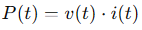
Otro factor importante es la movilidad de los portadores relativa (�n). La movilidad relativa se refiere a la facilidad con la que los electrones pueden moverse a trav�s del material. El arseniuro de galio (GaAs) tiene una movilidad relativa mucho mayor que el silicio (Si). Esto significa que los electrones en el GaAs pueden moverse m�s r�pido y libremente. La mayor movilidad en el GaAs permite que los dispositivos electr�nicos hechos con este material sean m�s r�pidos y eficientes que los hechos con silicio. El germanio tambi�n tiene una movilidad relativamente alta, lo que lo hace �til para aplicaciones de alta frecuencia, como en los dispositivos de radio.
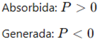
Una importante e interesante diferencia entre semiconductores y conductores es su reacci�n ante la aplicaci�n de calor. En el caso de los conductores, la resistencia se incrementa con un aumento de calor. Esto se debe a que el n�mero de portadores presentes en un conductor no se incrementan de manera significativa con la temperatura, aunque su patr�n de vibraci�n con respecto a un lugar relativamente fijo dificulta cada vez m�s el flujo continuo de portadores a trav�s del material. Se dice que los materiales que reaccionan de esta manera tienen un coeficiente de temperatura positivo. Los materiales semiconductores, sin embargo, presentan un nivel incrementado de conductividad con la aplicaci�n de calor. Conforme se eleva la temperatura, un mayor n�mero de electrones de valencia absorben suficiente energ�a t�rmica para romper el enlace covalente y as� contribuir al n�mero de portadores libres. Por consiguiente:
Los materiales semiconductores tienen un coeficiente de temperatura negativo.
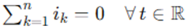
Bandas de Energ�a
Dentro de la estructura at�mica de cada �tomo aislado hay niveles espec�ficos de energ�a asociados con cada capa y electr�n en �rbita. Los niveles de energ�a asociados con cada capa son diferentes seg�n el elemento de que se trate. Sin embargo, en general:
Cuanto m�s alejado est� un electr�n del n�cleo, mayor es su estado de energ�a y cualquier electr�n que haya abandonado a su �tomo padre tiene un estado de energ�a mayor que todo electr�n que permanezca en la estructura at�mica.
Los electrones en un �tomo aislado solo pueden ocupar niveles de energ�a espec�ficos. Sin embargo, cuando los �tomos se unen para formar un material s�lido, como un cristal, interact�an entre s�. Esta interacci�n provoca que los niveles de energ�a de los electrones se expandan y formen bandas de energ�a.

En un semiconductor, como el silicio, los electrones de valencia (los m�s externos) pueden ocupar una banda de energ�a llamada banda de valencia. Existe otra banda de energ�a, llamada banda de conducci�n, donde los electrones son libres de moverse y conducir corriente el�ctrica. Entre estas dos bandas hay una regi�n de energ�a prohibida, llamada banda prohibida.
La energ�a necesaria para que un electr�n salte de la banda de valencia a la banda de conducci�n y se convierta en un portador libre var�a seg�n el material. En el germanio, esta energ�a es menor que en el silicio, y en el arseniuro de galio es a�n mayor. Esta diferencia en la energ�a de la banda prohibida es lo que determina muchas de las propiedades el�ctricas de los semiconductores.

Un electr�n en la banda de valencia de silicio debe absorber m�s energ�a que uno en la banda de valencia de germanio para convertirse en portador libre. Asimismo, un electr�n en la banda de valencia de arseniuro de galio debe absorber m�s energ�a que uno en la de silicio o germanio para entrar a la banda de conducci�n.
La brecha de energ�a tambi�n revela qu� elementos son �tiles en la construcci�n de dispositivos emisores de luz como diodos emisores de luz (LED, por sus siglas en ingl�s). Cuanto m�s ancha es la brecha de energ�a, mayor es la posibilidad de que la energ�a se libere en forma de ondas luminosas visibles o invisibles (infrarrojas). En el caso de conductores, el traslape de las bandas de conducci�n y valencia provoca esencialmente que toda la energ�a adicional absorbida por los electrones se disipe en forma de calor. Asimismo, en el caso de Ge y Si, como la brecha de energ�a es tan peque�a, la mayor�a de los electrones que absorben suficiente energ�a para abandonar la banda de valencia terminan en la banda de conducci�n y la energ�a se disipa en forma de calor. Sin embargo, en el caso de GaAs la brecha es suficientemente grande para producir radiaci�n luminosa significativa. En el caso de los LED el nivel de dopado y los materiales seleccionados determinan el color resultante.
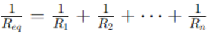
Antes de dejar este tema, es importante subrayar la importancia de entender las unidades utilizadas para una cantidad. Las unidades de medici�n son electr�n volts (eV). La unidad de medici�n es apropiada porque W (energ�a) = Q*V = (derivada de la ecuaci�n de definici�n de voltaje: V = W/Q). Si se sustituye la carga de un electr�n y una diferencia de potencial de un 1 volt, se produce un nivel de energ�a conocido como electr�n volt.
MATERIALES EXTR�NSECOS, DOPADO Y MATERIALES TIPO N Y TIPO P
Las caracter�sticas de un material semiconductor se pueden modificar
de manera significativa con la adici�n de �tomos de impureza espec�ficos al material semiconductor relativamente puro. Estas impurezas, aunque s�lo se agregan en 1 parte en 10 millones, pueden alterar la estructura de las bandas lo suficiente para cambiar del todo las propiedades el�ctricas del material.
Un material semiconductor que ha sido sometido al proceso de dopado se conoce como material extr�nseco.
Hay dos materiales extr�nsecos de inmensurable importancia en la fabricaci�n de dispositivos semiconductores: materiales tipo n y tipo p.
Material TIPO N
Un material tipo n se crea introduciendo elementos de impureza que contienen cinco electrones de valencia (pentavelantes), como el antimonio, el ars�nico y el f�sforo.

Observe que, los cuatros enlaces covalentes del antimonio y silicio existen, sin embargo, hay un quinto electr�n adicional debido al propio �tomo de impureza, el cual no est� asociado con ning�n enlace covalente particular que se presentan. Este electr�n restante, enlazado de manera poco firme a su �tomo padre (antimonio), est� en cierto modo libre para moverse dentro del material tipo n reci�n formado, puesto que el �tomo de impureza insertado ha donado un electr�n relativamente �libre� a la estructura.
Las impurezas difundidas con cinco electrones de valencia se conocen como �tomos donadores.
Es importante tener en cuenta que aun cuando un gran n�mero de portadores libres se ha establecido en el material tipo n, sigue siendo el�ctricamente neutro puesto que de manera ideal el n�mero de protones de carga positiva en los n�cleos sigue siendo igual al de los electrones de carga negativa libres y en �rbita en la estructura.
Material TIPO P
El material tipo p se forma dopando un cristal de germanio o silicio puro con �tomos de impureza que tienen tres electrones de valencia (trivalentes). Los elementos m�s utilizados para este prop�sito son boro, galio e indio.
Las impurezas difundidas con tres electrones de valencia se llaman �tomos aceptores.
Ahora el n�mero de electrones es insuficiente para completar las bandas covalentes de la estructura reci�n formada. El vac�o resultante se llama hueco y se denota con un peque�o c�rculo o un signo m�s, para indicar la ausencia de una carga positiva. Por lo tanto, el vac�o resultante aceptar� con facilidad un electr�n libre.

El material tipo p es el�ctricamente neutro por las mismas razones descritas para el material tipo n.
Portadores mayoritarios y minoritarios
En el estado intr�nseco, el n�mero de electrones libres en Ge o Si se debe s�lo a los electrones en la banda de valencia que adquirieron suficiente energ�a de fuentes t�rmicas o luminosas para romper la banda covalente o a las impurezas que no pudieron ser eliminadas. Los vac�os que quedan en la estructura de enlace covalente representan una fuente muy limitada de huecos. En un material tipo n, el n�mero de huecos no cambia significativamente con respecto a este nivel intr�nseco. El resultado neto, por consiguiente, es que el n�mero de electrones sobrepasa por mucho al de huecos. Por eso:
En un material tipo n el electr�n se llama portador mayoritario y el hueco portador minoritario.

En un material tipo p, el hueco es el portador mayoritario y el electr�n el minoritario.
2. Diodos.
2.1 Estructura y funcionamiento.
LOS SEMICONDUCTORES
Los semiconductores han revolucionado el mundo de la electr�nica. Con ellos han aparecido los diodos, los transistores, los tiristores y los dem�s componentes electr�nicos construidos gracias a los semiconductores que han sustituido a las v�lvulas electr�nicas. Por otro lado, con la aparici�n de los circuitos integrados, que suplen la funci�n de grandes cantidades de diodos, transistores, resistencias, condensadores y cualquier tipo de componente electr�nico, se ha dado el gran paso hacia el futuro de la electr�nica.
La ventaja que poseen los semiconductores es que son de reducido tama�o, peque�o consumo y bajo precio. �
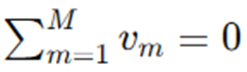
DIODOS
El diodo es el mas simple de los dispositivos electr�nicos no lineales, existen distintos tipos de diodos, por ejemplo: los Diodos de Uni�n (Semiconductor), Diodos Zener, el Diodo Schottky y otros.
El diodo semiconductor (tambi�n conocido como Diodo Rectificador), se crea uniendo un material tipo n a un material tipo p, nada m�s que eso; s�lo la uni�n de un material con un portador mayoritario de electrones a uno con un portador mayoritario de huecos.
El diodo es el elemento semiconductor que solo permite la circulaci�n de la corriente en un sentido �nico.
Estructura
En el momento en que los dos materiales se �unen�, los electrones y los huecos en la regi�n de la uni�n se combinan y provocan una carencia de portadores libres en la regi�n pr�xima a la uni�n.

Esta regi�n de iones positivos y negativos revelados se llama regi�n de �empobrecimiento�, debido a la disminuci�n de portadores libres en la regi�n.
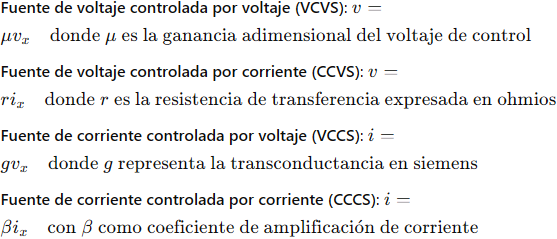
Si se conectan cables conductores a los extremos de cada material, se produce un dispositivo de dos terminales. Se dispone entonces de tres opciones: sin polarizaci�n, polarizaci�n en directa y polarizaci�n en inversa. El t�rmino polarizaci�n se refiere a la aplicaci�n de un voltaje externo a trav�s de las dos terminales del dispositivo para extraer una respuesta.
Polarizaci�n en Inversa (VD < 0 V)
Si se aplica un potencial externo de V volts a trav�s de la uni�n p-n con la terminal positiva conectada al material tipo n y la negativa conectada al material tipo p, el n�mero de iones positivos revelados en la regi�n de empobrecimiento del material tipo n se incrementar� por la gran cantidad de electrones libres atra�dos por el potencial positivo del voltaje aplicado. Por las mismas razones, el n�mero de iones negativos no revelados se incrementar� en el material tipo p. El efecto neto, por consiguiente, es una mayor apertura de la regi�n de empobrecimiento, la cual crea una barrera demasiado grande para que los portadores mayoritarios la puedan superar, por lo que el flujo de portadores mayoritarios se reduce efectivamente a cero.
Sin embargo, el n�mero de portadores minoritarios que entran a la regi�n de empobrecimiento no cambia, y se producen vectores de flujo de portadores minoritarios de la misma magnitud.
La corriente en condiciones de polarizaci�n en inversa se llama corriente de saturaci�n en inversa y est� representada por Is.

La corriente de saturaci�n en inversa rara vez es de m�s de algunos microamperes, excepto en el caso de dispositivos de alta potencia.
El t�rmino saturaci�n se deriva del hecho de que alcanza su nivel m�ximo con rapidez y que no cambia de manera significativa con los incrementos en el potencial de polarizaci�n en inversa.
Los fabricantes de diodos expresan el valor de la corriente inversa en sus hojas de especificaciones t�cnicas. As�, por ejemplo, la serie de diodos con la referencia 1N4001 a 1N4007 establece una corriente inversa de 10 μΑ cuando son polarizados inversamente.
Si se aumenta la tensi�n inversa, tambi�n lo hace la corriente, hasta que se llega a un valor Vz, llamado tensi�n de ruptura del diodo. En este momento aparece un efecto de avalancha y aumenta bruscamente la intensidad de corriente inversa, lo que provoca la destrucci�n del diodo por la excesiva disipaci�n de calor.
Para que esto no ocurra, es necesario dise�ar las condiciones de trabajo del diodo con una tensi�n inversa siempre menor a su tensi�n de ruptura.
Los fabricantes de diodos especifican los valores de la tensi�n inversa pico en sus hojas de especificaciones t�cnicas. As�, por ejemplo, mientras el diodo con la referencia 1N4001 soporta una tensi�n m�xima inversa de 50 V, el 1N4007 llega a soportar 1.000 V
Polarizaci�n en Directa (VD > 0 V)
La condici�n de polarizaci�n en directa o �encendido� se establece aplicando el potencial positivo al material tipo p y el potencial negativo al tipo n.

La aplicaci�n de un potencial de polarizaci�n en directa VD �presionar�� a los electrones en el material tipo n y a los huecos en el material tipo p para que se recombinen con los iones pr�ximos al l�mite y reducir� el ancho de la regi�n de empobrecimiento.
Un electr�n del material tipo p ahora "ve" una barrera reducida en la uni�n debido a la regi�n de empobrecimiento reducida y a una fuerte atracci�n del potencial positivo aplicado al material tipo p. En cuanto se incrementa la magnitud de la polarizaci�n aplicada, el ancho de la regi�n de empobrecimiento continuar� reduci�ndose hasta que un flujo de electrones pueda atravesar la uni�n, lo que produce un crecimiento exponencial de la corriente.� Se puede observar que la escala vertical est� en miliamperes (aunque algunos diodos semiconductores tienen una escala vertical medida en amperes) y la escala horizontal en la regi�n de polarizaci�n en directa tiene un m�ximo de 1 V. Por consiguiente, en general el voltaje a trav�s de un diodo polarizado en directa ser� menor de 1 V.
Analizando f�sicamente el diodo (despreciando la regi�n Zener); por medio de la f�sica del estado s�lido que las caracter�sticas generales de un diodo semiconductor se pueden definir mediante la siguiente ecuaci�n, conocida como ecuaci�n de Shockley, para las regiones de polarizaci�n en directa y en inversa:

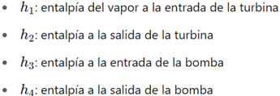
El voltaje VT en la ecuaci�n se llama voltaje t�rmico y est� determinado por:
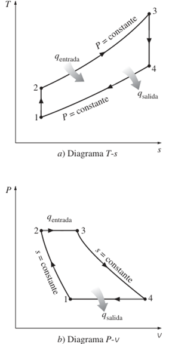
Te�ricamente, un diodo de silicio deber�a presentar caracter�sticas ideales. Sin embargo, en la pr�ctica, los diodos comerciales se desv�an de este comportamiento ideal debido a diversos factores. Entre estos factores destacan la resistencia interna del "cuerpo" del diodo y la resistencia externa de los contactos. Estas resistencias contribuyen a un voltaje adicional que provoca un desplazamiento en la curva caracter�stica del diodo.
Es importante destacar que la direcci�n convencional de la corriente el�ctrica en la regi�n de voltaje positivo coincide con la direcci�n indicada por la flecha en el s�mbolo del diodo. Esta condici�n se cumple siempre que el diodo est� polarizado en directa.
Al examinar el comportamiento del diodo en condiciones de polarizaci�n inversa, se observa que la corriente de saturaci�n inversa es significativamente mayor que la predicha por la ecuaci�n de Shockley.
Esta discrepancia se atribuye a diversos efectos no considerados en dicha ecuaci�n, como la generaci�n de portadores minoritarios en la regi�n de depleci�n y las corrientes de fuga superficiales.
Estos fen�menos son particularmente sensibles al �rea de contacto en la uni�n del diodo.
Otro factor que influye en la magnitud de la corriente de saturaci�n inversa es el �rea de contacto en la uni�n del diodo. Existe una relaci�n directa entre el tama�o del �rea de contacto y el valor de la corriente de saturaci�n inversa
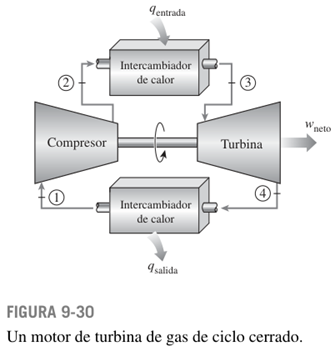
En resumen, la corriente de saturaci�n inversa real de un diodo comercial suele ser mucho mayor que el valor te�rico obtenido a partir de la ecuaci�n de Shockley. Sin embargo, es importante tener en cuenta que incluso peque�as diferencias en la corriente de saturaci�n inversa pueden tener un impacto significativo en el comportamiento del diodo en ciertas aplicaciones.
Regi�n Zener
Aun cuando la escala estuviera en d�cimas de voltios en la regi�n negativa, existir� un punto en el que la aplicaci�n de un voltaje negativo excesivo producir� un cambio abrupto en las caracter�sticas. La corriente se incrementar�a muy r�pidamente en una direcci�n opuesta a la de la regi�n de voltaje positivo. El potencial de polarizaci�n inversa que produce este cambio dr�stico en las caracter�sticas se denominaba potencial Zener (en honor a Clarence Melvin Zener.) y su s�mbolo es Vz.

A medida que se incrementa el voltaje a trav�s del diodo en la regi�n de polarizaci�n en inversa, tambi�n se incrementar� la velocidad de los portadores minoritarios responsables de la corriente de saturaci�n en inversa Is. Con el tiempo, su velocidad y energ�a cin�tica asociada ser�n suficientes para liberar m�s portadores por colisiones con otras estructuras at�micas que de lo contrario ser�an estables. Es decir, se producir� un proceso de ionizaci�n por medio del cual los electrones de valencia absorben suficiente energ�a para abandonar el �tomo padre. Estos portadores adicionales pueden ayudar entonces al proceso de ionizaci�n al punto en que se establece una corriente de avalancha y determina la regi�n de ruptura de avalancha.
Se puede hacer que la regi�n de avalancha (VZ) se acerque al eje vertical incrementando los niveles de dopado en los materiales p y n. Sin embargo, conforme VZ se reduce a niveles muy bajos, por ejemplo:�5 V.
Otro mecanismo, llamado ruptura Zener contribuir� al cambio abrupto de la caracter�stica. Esto sucede porque hay un fuerte campo el�ctrico en la regi�n de la uni�n que puede desbaratar las fuerzas de enlace dentro del �tomo y �generar� portadores. Aun cuando el mecanismo de ruptura Zener es un contribuyente significativo s�lo a niveles bajos de VZ, este cambio abrupto de la caracter�stica a cualquier nivel se llama regi�n Zener y los diodos que emplean esta parte �nica de la caracter�stica de una uni�n p�n se llaman diodos Zener.
El m�ximo potencial de polarizaci�n en inversa que se puede aplicar antes de entrar a la regi�n Zener se llama voltaje inverso pico (PIV) o voltaje de reversa pico (PRV).
DIODO SCHOTTKY
Conocido como diodo de barrera Schottky, barrera superficial o portador caliente. Est� formado por la uni�n de un metal tal como platino, molibdeno, cromo o tungsteno, con silicio de tipo n. Estos dispositivos tienen un almacenamiento de carga despreciable y se utilizan en aplicaciones de conmutaci�n de alta velocidad.
Un metal (platino), act�a como material aceptador para los electrones cuando est� unido a silicio n. As�, cuando el material est� conectado al silicio de tipo n, los electrones del silicio se difunden inicialmente en el metal, esta difusi�n hace que el material n se empobrezca de electrones cerca de la uni�n y por consiguiente que adquiera un potencial positivo.
Cuando esta tensi�n positiva llega a ser suficientemente grande, impide la posterior difusi�n de los electrones. Por otra parte, cuando es aplicada exteriormente una tensi�n positiva suficientemente grande entre los terminales del diodo, los electrones de la regi�n n est�n sometidos a un potencial positivo en el lado del metal de la uni�n y aparece una circulaci�n de electrones.

Diodos Schottky:
a) Distribuci�n de potencial despu�s de la difusi�n inicial
b) Distribuci�n de potencial despu�s de aplicar una tensi�n positiva
c) Distribuci�n de potencial despu�s de aplicar una tensi�n negativa
d) S�mbolo de circuito.
En un contacto rectificador circula una corriente despreciable hasta que V excede de una cierta tensi�n m�nima V₁, que es la necesaria para alisar la curva de tensi�n. Un peque�o aumento de la tensi�n V por encima de V₁ produce una variaci�n muy grande de corriente. Cuando se invierte la tensi�n aplicada al diodo de modo que el material n se hace positivo con respecto al platino (o material p), la tensi�n en la cara n de la uni�n aumenta por encima del nivel indicado y no hay circulaci�n de corriente.
Cuando se establece un contacto �hmico, no hay difusi�n inicial de electrones a trav�s de la uni�n, puesto que en los dos materiales la densidad y la energ�a de los electrones en ambas caras de la uni�n son las mismas.
Cuando el diodo Schottky funciona de modo directo, la corriente es debida a los electrones que se mueven desde el silicio de tipo n a trav�s del metal. Como los electrones se mueven relativamente libres a trav�s del metal, el tiempo de recombinaci�n t es muy peque�o, normalmente del orden de 10 ps. Esto es varios �rdenes de magnitud menor que los correspondientes a la utilizaci�n de diodos de silicio pn.
El diodo tiene una caracter�stica vi similar a la de un diodo ordinario de silicio pn excepto que la tensi�n umbral de conducci�n del diodo es V ≈ 0.3 V.

DIODO EMISOR DE LUZ (LED)
Haciendo combinaciones con ellos, pueden ser empleados para visualizar n�meros y letras en peque�os indicadores luminosos (displays), con los cuales se pueden presentar los resultados en equipos de medida, calculadoras, etc.
Como su nombre lo implica, el diodo emisor de luz es un diodo que emite luz visible o invisible (infrarroja) cuando se energiza. En cualquier uni�n pn polarizada en directa se da, dentro de la estructura y principalmente cerca de la uni�n, una recombinaci�n de huecos y electrones.

Esta recombinaci�n requiere que la energ�a procesada por los electrones libres se transforme en otro estado. En todas las uniones pn semiconductoras una parte de esta energ�a se libera en forma de calor y otra en forma de fotones.
Los diodos led se fabrican mediante la uni�n de dos cristales semiconductores pn, a los que se les ha contaminado de una forma especial. Cuando una uni�n de este tipo se polariza con una tensi�n directa, al igual que ocurr�a con los diodos convencionales, los electrones de valencia del cristal tipo N atraviesan la uni�n y se recombinan con los huecos del cristal tipo P. Dado que dichos electrones se trasladan de un nivel de energ�a m�s alto a uno m�s bajo, se produce una liberaci�n de energ�a, que en este tipo de diodos se manifiesta en forma de radiaciones electromagn�ticas dentro del espectro luminoso.
En diodos de Si y Ge el mayor porcentaje de la energ�a convertida durante la recombinaci�n en la uni�n se disipa en forma de calor dentro de la estructura y la luz emitida es insignificante.
Por esta raz�n, el silicio y el germanio no se utilizan en la construcci�n de dispositivos LED. Por otra parte:
Los diodos construidos de GaAs emiten luz en la zona infrarroja (invisible) durante el proceso de recombinaci�n en la uni�n pn.
Los diodos led se fabrican con elementos especiales, como arseniuro de galio (GaAs) y f�sforo. Para conseguir modificar la longitud de onda de la radiaci�n de la onda luminosa y as� conseguir diodos con emisiones de diferentes colores (roja, naranja, verde, amarilla, azul o infrarroja), se contaminan los cristales de una forma adecuada. As� por ejemplo, los diodos luminiscentes fabricados con galio y f�sforo (GaP) emiten luz roja cuando se les a�ade �xido de cinc y emiten luz verde con la adici�n de nitr�geno.

Al igual que los diferentes sonidos tienen espectros de frecuencia diferentes (en general los sonidos agudos tienen componentes de alta frecuencia y los sonidos bajos tienen varios componentes de baja frecuencia), lo mismo es cierto para las diferentes emisiones de luz.
El espectro de frecuencia de la luz infrarroja se extiende desde 100 THz (T = tera = 1012) hasta 400 THz, con el espectro de luz visible desde aproximadamente 400 hasta 750 THz.
En general, cuando hablamos de la respuesta de dispositivos electroluminiscentes, nos referimos a sus longitudes de onda y no a su frecuencia.
Las dos cantidades est�n relacionadas por la siguiente ecuaci�n:
Aparte del color de los diodos luminiscentes, sus caracter�sticas m�s relevantes son similares a las de los diodos convencionales:
Tensi�n directa (VF): es la ca�da de tensi�n que se produce entre los extremos del diodo led cuando por �l fluye la corriente directa. Esta tensi�n suele ser del orden de 1,5 V a 2,2 V para la mayor parte de los modelos. Cuando se desconoce la tensi�n directa exacta, bastar� con tomar como valor aproximado 2 V.
Corriente de excitaci�n directa (IF): es la corriente que debe circular por el diodo led para alcanzar la intensidad luminosa esperada. Para la mayor�a de los modelos, esta corriente est� comprendida entre 10 mA y 50 mA.
Corriente inversa (IR): es la m�xima corriente que puede fluir por el diodo luminiscente cuando a este se le aplica una tensi�n de polarizaci�n inversa. Este valor suele estar en torno a los 10 μΑ.
La disipaci�n de potencia es aquella parte de la potencia que el diodo luminiscente no convierte en luz y que acaba degrad�ndose en calor, por lo que tiene que evacuarla al exterior. Por esta raz�n, los diodos led se conectan en serie con una resistencia, con el fin de limitar la corriente que fluye por ellos. Para calcular dicha resistencia, se aplica la ley de Ohm al circuito.


Una de las aplicaciones que se puede hacer con los diodos led es la fabricaci�n de indicadores num�ricos de siete segmentos (displays). Mediante siete diodos luminiscentes dispuestos en un arreglo, se pueden representar d�gitos del 0 al 9. Para ello, se excitan simult�neamente las combinaciones de diodos que correspondan en cada caso.

FOTODIODO
Este dispositivo es un diodo especialmente dise�ado para que sea sensible a las radiaciones luminosas que en �l incidan, de tal forma que al aumentar estas, tambi�n lo haga la corriente inversa que fluya por el fotodiodo.
Una de las aplicaciones fundamentales de este dispositivo es como fotodetector, elemento capaz de transformar una magnitud luminosa en el�ctrica.
Este tipo de diodos presenta un aumento de portadores minoritarios cuando se aplica energ�a en forma de radiaciones luminosas. Si conectamos un fotodiodo con una tensi�n de polarizaci�n inversa, fluir� una peque�a corriente inversa.
Los fotodiodos se fabrican para que la luz incida en ellos, de manera que, al aumentar la intensidad de la radiaci�n luminosa, aumentan los portadores minoritarios y, por lo tanto, la corriente inversa. As�, se establece una relaci�n entre la luz y la corriente.

Al aumentar la intensidad de la radiaci�n luminosa (su unidad de medida es el lux), tambi�n lo hace la corriente inversa.

Una de las aplicaciones que se le da al fotodiodo es la combinaci�n con el LED, en la fabricaci�n de un optoacoplador. Estos dos elementos se integran en un solo elemento.
Con un optoacoplador se pueden aislar el�ctricamente dos circuitos entre los que hay que intercambiar una determinada se�al. La se�al de entrada se aplica al diodo led, con lo que este genera una intensidad luminosa que estar� en funci�n de la corriente entregada por la se�al. Esta radiaci�n luminosa incide en el fotodiodo, el cual generar� una corriente en la salida proporcional a la entregada a la entrada del optoacoplador. Con el uso de optoacopladores se eliminan todos los riesgos que pueden surgir al conectar circuitos que trabajan con se�ales de muy peque�as tensiones, con otros circuitos que lo hacen con tensiones elevadas. Por ejemplo, se utilizan para aislar la salida de un ordenador con circuitos exteriores que est�n alimentados con tensiones peligrosas. Tambi�n se utilizan en electromedicina para aislar los circuitos de los electrodos que se han de aplicar al cuerpo humano y en otras muchas aplicaciones.
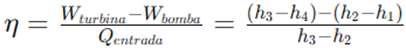
DIODO PIN
El diodo PIN es un diodo con una regi�n p+ y otra regi�n n+, ambas muy dopadas, separadas por una regi�n de material casi intr�nseco. Se utiliza en frecuencias de microondas (m�s de 1 GHz) porque tiene una impedancia muy alta en polarizaci�n inversa y muy baja en polarizaci�n directa, incluso a estas frecuencias. Adem�s, las tensiones de ruptura est�n entre 100 y 1000 V.
Gracias a estas caracter�sticas, el diodo PIN se usa como interruptor o modulador de amplitud en frecuencias de microondas, ya que se comporta como un cortocircuito en sentido directo y como un circuito abierto en sentido inverso. Tambi�n puede conmutar corrientes y tensiones muy altas.
El diodo PIN se forma a partir de silicio tipo p de alta resistividad. La capa p de baja resistividad est� formada por difusi�n de �tomos de boro en un bloque de silicio del tipo p y la capa n⁺ muy delgada est� formada difundiendo grandes cantidades de f�sforo. La regi�n intr�nseca (i) es realmente una regi�n p de alta resistividad y se le suele denominar regi�n π.
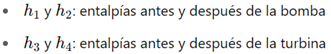

a) Oblea PIN:� Esta parte de la figura muestra la estructura f�sica del diodo PIN, que consiste en una oblea de semiconductor con tres capas:
� Capa P+: Capa de semiconductor tipo P altamente dopada.
� Capa I: Capa intr�nseca (o ligeramente dopada) de semiconductor.
� Capa N+: Capa de semiconductor tipo N altamente dopada.
b) Representaci�n pict�rica: Se muestra una representaci�n simplificada del diodo con los s�mbolos de los electrones (�) y los huecos (o).
c) Distribuci�n de tensiones:� Esta gr�fica muestra c�mo se distribuye el voltaje a trav�s del diodo PIN cuando se aplica una polarizaci�n. Se puede observar la diferencia de potencial entre las capas P+ y N+, as� como la regi�n donde se concentra la mayor parte del voltaje.
d) Representaci�n pict�rica y distribuci�n de tensiones bajo polarizaci�n:� Aqu� se muestra c�mo se comporta el diodo PIN bajo polarizaci�n, es decir, cuando se le aplica una tensi�n externa. Se ilustra c�mo los electrones y los huecos se mueven a trav�s de la estructura y c�mo se modifica la distribuci�n de tensiones en comparaci�n con la situaci�n sin polarizaci�n.
Cuando se aplica una polarizaci�n inversa al diodo, los electrones y huecos del material son barridos. Un aumento posterior de la tensi�n inversa incrementa las distribuciones de tensiones p-i e i-n. En el diodo PIN, la longitud de la regi�n de transici�n L es aproximadamente igual a la longitud de la regi�n i y es aproximadamente independiente de la tensi�n inversa. Por lo tanto, a diferencia de los diodos PN o Schottky, el diodo PIN tiene una capacidad inversa que es aproximadamente constante, independientemente de la polarizaci�n. Una variaci�n t�pica de la capacidad podr�a ser desde 0,15 hasta 0,14 pF en una variaci�n de la polarizaci�n inversa de, por ejemplo, 100 V. La variaci�n normal de la capacidad en funci�n de la tensi�n de polarizaci�n est� representada. Esto debe contrastarse con el resultado representado donde CRC + Co/(2V) 1/2. Por otra parte, en virtud de que L es igual a la longitud de la regi�n i, la longitud de la regi�n de transici�n es aproximadamente constante y considerablemente mayor que las de otros diodos y, por tanto, la capacidad Cr que es proporcional a 1/L es significativamente menor que la de otros diodos, por lo que el diodo PIN es apropiado para aplicaciones de microondas. Los valores normales de C var�an desde 0,1 hasta 4 pF en los diodos PIN, comercialmente asequibles.
Cuando el diodo est� polarizado en sentido directo, los huecos del material p se difunden en la regi�n i, creando una capa p de baja resistividad. La corriente es debida al flujo de los electrones y de los huecos cuyas concentraciones son aproximadamente iguales.

En la regi�n i, la ca�da de tensi�n en la condici�n de polarizaci�n directa es muy peque�a. Adem�s, al igual que el diodo PN, cuando aumenta la corriente, tambi�n disminuye la resistencia. En consecuencia, el diodo PIN es un dispositivo con su resistencia o conductancia modulada. En una primera aproximaci�n, la resistencia en peque�a se�al es inversamente proporcional a la corriente con polarizaci�n directa, lo mismo que en el diodo PN.
Circuito Equivalente para Peque�a Se�al
El circuito equivalente para peque�a se�al del diodo PIN, v�lido en frecuencias de microondas, se representa de manera sencilla por una capacidad CR en serie con la resistencia directa rd. Con tensiones directas, CR es aproximadamente infinita, mientras que en el modo de polarizaci�n inversa, rd es aproximadamente nula. La capacidad C es la capacidad par�sita paralela que se produce al soldar el diodo a la c�psula, y L es la inductancia serie debida a los hilos de conexi�n desde el diodo hasta la c�psula.
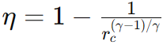
DIODO SHOCKLEY
El diodo Shockley es un diodo pnpn de cuatro capas con s�lo dos terminales externas, Las caracter�sticas del dispositivo son exactamente las mismas que para el SCR. Como las caracter�sticas lo indican, el dispositivo est� en �apagado� (representaci�n de circuito abierto) hasta que se alcanza el voltaje de conducci�n, momento en cual se desarrollan las condiciones de avalancha y el dispositivo se enciende (representaci�n de cortocircuito).
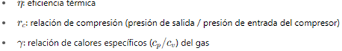
Una aplicaci�n com�n del diodo Shockley, es donde se emplea como interruptor de disparo para un SCR. Cuando el circuito se energiza, el voltaje a trav�s del capacitor comenzar� a cargarse tendiendo al voltaje de alimentaci�n. Con el tiempo, el voltaje a trav�s del capacitor ser� lo bastante alto para encender primero el diodo Schockley y luego el SCR.

DIODO DE POTENCIA
Hay muchos diodos espec�ficamente dise�ados para manejar demandas de alta potencia y alta temperatura de algunas aplicaciones. El uso m�s frecuente de los diodos de potencia ocurre en el proceso de rectificaci�n, en el cual las se�ales de ca (de valor promedio cero) se convierten en se�ales de valor promedio o de nivel de cd. Los diodos normalmente se conocen como rectificadores.
La mayor�a de los diodos de potencia se construyen con silicio por sus altos valores nominales de corriente, temperatura y PIV. Las altas demandas de corriente requieren que el �rea de la uni�n sea m�s grande para asegurarse de que haya una baja resistencia en directa en el diodo. Si la resistencia en directa fuera demasiado grande, las p�rdidas I2R ser�an excesivas. La capacidad de corriente de los diodos de potencia se puede incrementar colocando dos o m�s en paralelo y el valor nominal del PIV se puede incrementar conect�ndolos en serie.
Las altas temperaturas producidas por la intensa corriente requieren, en muchos casos, que se utilicen disipadores de calor para abatir el calor del elemento. Si no emplean disipadores de calor, se insertan diodos de clavija directamente en el chasis, los que a su vez act�an como disipadores de calor.
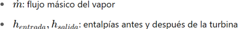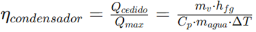
DIODO T�NEL
Leo Esaki present� el diodo t�nel en 1958. Sus caracter�sticas son diferentes de las de cualquier diodo hasta ahora analizado en que tiene una regi�n de resistencia negativa. En esta regi�n, un incremento del voltaje terminal reduce la corriente en el diodo.
El diodo t�nel se fabrica dopando los materiales semiconductores que formar�n la uni�n pn a un nivel de 100 a varios miles de veces el de un diodo semiconductor t�pico. Esto reduce en gran medida la regi�n de empobrecimiento, a una magnitud de 10-6 cm, o por lo general a aproximadamente 1/100 del ancho de esta regi�n en el caso de un diodo semiconductor. Esta delgada regi�n de empobrecimiento, a trav�s de la cual muchos portadores pueden �penetrar� en lugar de que intenten superarla, a bajos potenciales de polarizaci�n en directa es la responsable del pico que aparece en la curva.

Esta regi�n de empobrecimiento reducida hace que los portadores la �penetren� a velocidades que exceden por mucho las disponibles con diodos convencionales. El diodo t�nel se puede utilizar por consiguiente en aplicaciones de alta velocidad, como en computadoras, donde se desean tiempos de conmutaci�n de nanosegundos o picosegundos.
Los materiales semiconductores m�s frecuentemente utilizados en la fabricaci�n de diodos t�nel son el germanio y el arseniuro de galio. La relaci�n IP/IV es muy importante en aplicaciones de computadora. Para el germanio, en general es de 10:1 y para el arseniuro de galio es de cerca de 20:1.
Los valores de los par�metros del circuito equivalente de diodo t�nel en la regi�n de resistencia negativa, son t�picos para unidades comerciales actuales. El inductor LS se debe sobre todo a los conductores terminales. El resistor RS se debe a los conductores, el contacto �hmico en la uni�n conductor-semiconductor, y a los materiales semiconductores mismos. La capacitancia C es la capacitancia de difusi�n en la uni�n y R es la resistencia negativa de la regi�n.

La disponibilidad de una regi�n de resistencia negativa se puede aprovechar en el dise�o de osciladores, redes de conmutaci�n, generadores de pulsos y amplificadores.
DIODO VARICAP
Los diodos varactores [conocidos tambi�n como varicap, VVC (capacitancia variable dependiente del voltaje) o de sintonizaci�n] son capacitores semiconductores dependientes del voltaje. Su modo de operaci�n depende de la capacitancia que haya en la uni�n pn cuando el elemento se polariza en inversa. En condiciones de polarizaci�n en inversa, hay una regi�n de carga no recuperada a ambos lados de la uni�n que juntos conforman la regi�n de empobrecimiento y definen el ancho de empobrecimiento Wd. La capacitancia de transici�n CT establecida por las cargas no recuperadas aisladas es:
Donde ε es la permitividad de los materiales semiconductores, A es el �rea de la uni�n pn y Wd es el ancho de empobrecimiento.
A medida que se incrementa el potencial de polarizaci�n en inversa, el ancho de la regi�n de empobrecimiento se incrementa, lo cual a su vez reduce la capacitancia de transici�n.

Su circuito equivalente en la regi�n de polarizaci�n en inversa posee una resistencia de magnitud muy grande por lo general de 1 MW o m�s mientras que, RS, la resistencia geom�trica del diodo es muy peque�a. La magnitud de CT variar� desde alrededor de 2 pF hasta 100 pF seg�n el varicap considerado.
Para asegurarse de que RR sea lo m�s grande (para una corriente de fuga m�nima) posible, en diodos varicap normalmente se utiliza silicio. El hecho de que el dispositivo se emplear� a frecuencias muy altas requiere que incluyamos la inductancia LS aun cuando est� medida en nanohenries.
Efectos de la Temperatura
La temperatura puede tener un marcado efecto en las caracter�sticas de un diodo semiconductor.
En la regi�n de polarizaci�n en directa las caracter�sticas de un diodo de silicio se desplazan a la izquierda a raz�n de 2.5 mV por grado cent�grado de incremento de temperatura.

Un incremento desde la temperatura ambiente (20�C) hasta 100 �C (el punto de ebullici�n del agua) produce una ca�da de 80(2.5 mV ) = 200 mV o 0.2 V, lo cual es significativo en una gr�fica graduada en d�cimas de volts. Una reducci�n de la temperatura tiene el efecto inverso.
En la regi�n de polarizaci�n en inversa la corriente de saturaci�n en inversa de un diodo de silicio se duplica por cada 10�C de aumento de la temperatura.
2.2 Modelo real e ideal.
PROPIEDADES NO LINEALES � DIODO IDEAL
2.3 Aplicaciones: rectificadores, multiplicadores de voltaje, recortadores, fijadores y compuertas con diodos.
2.4 Simulaci�n de circuitos de aplicaci�n con diodos mediante herramientas de c�mputo.
3. Filtrado y regulaci�n.
3.1 Filtros para fuentes de poder.
CONSIDERACIONES GENERALES
Se requiere un circuito rectificador para convertir una se�al de valor promedio cero en una de valor promedio diferente de cero. La salida resultante desde un rectificador es un voltaje de cd pulsante y a�n no adecuado como reemplazo de una bater�a. Tal voltaje podr�a utilizarse en, por ejemplo, un cargador de bater�as, donde el voltaje de cd promedio es lo bastante grande como para proporcionar una corriente de carga a la bater�a.
Para voltajes de alimentaci�n de CD, como los que se utilizan en un radio, un sistema estereof�nico, una computadora, etc., el voltaje de CD pulsante de un rectificador no es suficientemente bueno. Se requiere un filtro para proporcionar un voltaje de cd m�s constante.

Voltaje de Rizo
En el estudio del filtrado, es esencial establecer m�todos rigurosos para evaluar su desempe�o. Esta evaluaci�n nos permite comparar la eficacia de diferentes dise�os y determinar su idoneidad para aplicaciones espec�ficas.
Un factor clave a considerar es la calidad de la se�al de salida filtrada. Idealmente, un filtro perfecto producir�a una se�al de CC pura, libre de cualquier componente de CA. Sin embargo, en la pr�ctica, la salida de un filtro contendr� una combinaci�n de CC y CA, donde la componente de CA representa el rizo.
La presencia de rizo es inevitable en circuitos de filtrado pr�cticos. No obstante, la magnitud del rizo en relaci�n con el nivel de CC es un indicador cr�tico de la calidad del filtro. Un filtro eficaz minimizar� el rizo, produciendo una se�al de salida que se aproxime lo m�s posible a una CC pura.
En consecuencia, cuanto menor sea la variaci�n de CA (rizo) en comparaci�n con el nivel de CC, mejor ser� el rendimiento del circuito de filtrado. Este principio fundamental gu�a el dise�o y la evaluaci�n de filtros en diversas aplicaciones de ingenier�a.

Considere la medici�n del voltaje de salida de un circuito de filtrado que utiliza un volt�metro de cd y un volt�metro de ca (rms). El volt�metro de cd leer� s�lo el nivel promedio o de cd del voltaje de salida. El medidor de ca (rms) leer� s�lo el valor rms del componente de ca del voltaje de salida (suponiendo que la se�al de ca est� acoplada mediante un capacitor para bloquear el nivel de cd).
El rizo se define como:
Regulaci�n de voltaje
Otro factor de importancia en una fuente de alimentaci�n es la cantidad de cambios del voltaje de salida de cd a lo largo de la operaci�n de un circuito. El voltaje provisto a la salida en la condici�n sin carga (sin que demande corriente de la fuente) se reduce cuando se extrae corriente de carga de la fuente (en condici�n de carga). La cantidad que el voltaje de cd cambia entre las condiciones sin carga y con carga la describe un factor llamado regulaci�n de voltaje.
La regulaci�n de voltaje se define como:

O dicha la ecuaci�n es:

FILTRO DE CAPACITOR�
Para conseguir los efectos del filtrado de este sistema se conecta un condensador de gran capacidad (normalmente electrol�tico) en paralelo con la salida del rectificador.
El Detector de Crestas
El detector de cresta (o detector de envolvente) proporciona una salida de CC comparable al valor de cresta de la tensi�n de entrada y, por lo tanto, se puede utilizar como fuente de alimentaci�n de CC. Este circuito tambi�n se usa en los receptores.

El funcionamiento del circuito detector de cresta se explica m�s f�cilmente suponiendo que la tensi�n de entrada sea V₁ = Vim sen wot y que la resistencia de carga RL es infinita. Entonces, durante el primer cuarto de ciclo de la onda de entrada, el diodo act�a como un cortocircuito y, por tanto, el condensador seguir� a Vi. Cuando wot = π/2, el condensador se habr� cargado hasta vL = Vim. Cuando Vi� disminuye, la tensi�n en el condensador no puede decrecer porque con RL infinita, la corriente de descarga del condensador debe circular a trav�s del diodo en sentido inverso. Como la corriente no puede circular a trav�s del diodo en este sentido, el condensador no se puede descargar. La tensi�n de carga vL permanece, por tanto, en el valor de cresta Vim hasta que �ste no aumente.
La tensi�n del rizado se debe a la sucesivas cargas y descargas del condensador, la cual ser� la diferencia de las tensiones m�s alta y m�s baja, Es posible establecer una relaci�n matem�tica entre la tensi�n de rizado y la capacidad del condensador mediante la expresi�n:

FILTRO RC
Es posible reducir a�n m�s la cantidad de rizo a trav�s de un capacitor de filtrado si utiliza una secci�n de filtro RC adicional. El prop�sito de la secci�n RC agregada es que deje pasar la mayor parte del componente de cd al mismo tiempo que aten�a (reduce) lo m�s posible del componente de ca.

Como ambos capacitores act�an como circuitos abiertos en operaci�n de cd, el voltaje de cd de salida resultante es:
La operaci�n del circuito de filtrado se analiza superponiendo los componentes de cd y ca de la se�al.

Debido a la acci�n del divisor de voltaje de la impedancia de ca del capacitor y el resistor de carga, el componente de ca del voltaje resultante a trav�s de la carga es:
Para un rectificador de onda completa con un rizo de ca a 120 Hz, la impedancia de un capacitor se calcula con:

donde C est� en microfarads y XC en kiloohms.
3.2 El diodo zener como regulador de voltaje: estructura funcionamiento y aplicaciones.
ESTRUCTURA
DIODO ZENER
Los diodos Zener, o diodos de avalancha, son diodos semiconductores de uni�n pn cuyas propiedades est�n controladas en las zonas de polarizaci�n inversa que los hacen muy �tiles en numerosas aplicaciones, especialmente como dispositivo de referencia de tensi�n.

La caracter�stica directa es similar a la de los diodos semiconductores normales. La caracter�stica inversa, sin embargo, presenta una regi�n en la cual la tensi�n es casi independiente de la corriente por el diodo. La tensi�n Zener de cualquier diodo est� controlada por la cantidad de dopado aplicada en el proceso de fabricaci�n. Los valores normales var�an entre 2 y 200 V con capacidades de disipaci�n de potencia de hasta 100 W. En la mayor�a de las aplicaciones, los diodos Zener trabajan en la regi�n de polarizaci�n inversa.
Los fabricantes especifican los diodos Zener por su tensi�n Zener y la m�xima disipaci�n de potencia. La corriente que circula por el diodo con su tensi�n nominal Zener es lo que se llama corriente de prueba Izr. Normalmente la m�xima potencia nominal del diodo es cuatro veces mayor que la disipaci�n de potencia a la tensi�n Zener, es decir:

Si se observa atentamente la curva inversa de un diodo Zener, se podr� apreciar que no es del todo vertical. Esto indica que, al aumentar la corriente inversa, surge un peque�o aumento de la tensi�n. Este fen�meno aparece provocado por una peque�a resistencia din�mica, denominada resistencia Zener (Rz).

 �
�
REGULADOR DE VOLTAJE
Una de las aplicaciones m�s extendidas del diodo Zener es la de estabilizador de tensi�n para fuentes de alimentaci�n, Esto se consigue aprovechando la propiedad que poseen de conducir con tensiones de polarizaci�n inversa, manteniendo la tensi�n entre sus extremos pr�cticamente constantes.
La resistencia de polarizaci�n Zener tiene como misi�n mantener la tensi�n de polarizaci�n Zener entre unos valores aceptables vali�ndose para ello de la ca�da de tensi�n que se produce en ella cuando la corriente que atraviesa tiende a modificarse.
FUNCIONAMIENTO Y APLICACIONES
3.3 Reguladores integrados: fijos y variables.
REGULADORES INTEGRADOS FIJOS
REGULADORES INTEGRADOS VARIABLES
3.4 Fuentes de poder.
TRANSFORMADOR
RECTIFICACI�N
FILTRADO
REGULACI�N
CARGA
3.5 Dise�o y pruebas de circuitos reguladores de voltaje mediante herramientas de c�mputo.
4. Transistores.
4.1 Estructura y funcionamiento del transistor TBJ: corte-saturaci�n, amplificaci�n y acoplamiento.
4.2 Configuraciones b�sicas: emisor com�n, colector com�n y base com�n.
4.3 Transistor de efecto de campo (FET y MOSFET).
4.4 Circuitos de aplicaci�n.
4.5 Simulaci�n de circuitos de aplicaci�n basados en transistores con herramientas de c�mputo.
5. L�gica combinacional.
5.1 Sistemas de numeraci�n: representaci�n de los sistemas de numeraci�n, cambio de base y operaciones aritm�ticas.
5.2 Compuertas l�gicas.
5.3 �lgebra de Boole.
5.4 Reducci�n de funciones booleanas.
5.5 Bloques combinacionales: codificador, decodificador, multiplexor y circuitos aritm�ticos.
5.6 Simulaci�n de circuitos l�gicos combinacionales con herramientas de c�mputo.
6. L�gica secuencial.
6.1 Flip-flops: latch, R-S, J-K, D y T.
6.2 Contadores.
6.3 Registros de corrimiento.
6.4 M�quinas de estado.
6.5 Dispositivos l�gicos programables (PLDs).
6.6 Dise�o y simulaci�n de sistemas l�gicos secuenciales con herramientas de c�mputo.
7. Dispositivos �pticos y de potencia.
7.1 Fotodiodos y fototransistores.
7.2 Optoacopadores.
7.3 Tiristores (SCR, DIAC, TRIAC).
7.4 Relevadores electromec�nicos y de estado s�lido.
7.5 Simulaci�n de circuitos de aplicaci�n con dispositivos �pticos y de potencia mediante herramientas de c�mputo.
8. Amplificadores operacionales.
8.1 Estructura y funcionamiento.
8.2 Configuraciones b�sicas.
8.3 Circuitos de aplicaci�n.
8.4 Introducci�n a los convertidores anal�gico/digital y digital/anal�gico.
8.5 Simulaci�n de circuitos de aplicaci�n con amplificadores operacionales con herramientas de c�mputo.
9. Bibliograf�a
Alcalde San Miguel, P. - Electr�nica aplicada.
BOYLESTAD, R., NASHELSKY, L - Electr�nica Teor�a de Circuitos y dispositivos electr�nicos.
CHUTE, G., M., Chute, R., D. - Electronics in Industry.
MALONEY, T. J. - Modern Industrial Electronics.
Neamen, Donald A. - Microelectronics: circuit analysis and design.
Tokheim, Roger L. - ELECTR�NICA DIGITAL. PRINCIPIOS Y APLICACIONES.
SCHILLING, D. - Circuitos electr�nicos: discretos e integrados.
Schuler, Charles A. Electronics - Electronics principles & applications.
MODELADO DE SISTEMAS F�SICOS (0508)
Objetivo(s) del curso:
El alumno comprender� las metodolog�as de modelado de sistemas f�sicos y las aplicar� para el modelado matem�tico de los sistemas f�sicos en ingenier�a; adem�s, analizar� sistemas f�sicos lineales invariantes con el tiempo y de par�metros concentrados.
1. Modelado de sistemas f�sicos.
1.1 Concepto de modelado.
MODELADO
El concepto de Modelado es fundamental en la din�mica de sistemas, involucra la construcci�n de representaciones matem�ticas que describen el comportamiento din�mico de un sistema.
Este proceso, tambi�n conocido como elaboraci�n de modelos, es crucial para predecir c�mo un sistema responder� a diferentes condiciones y para dise�arlo de manera eficiente antes de su implementaci�n f�sica.
PROP�SITO DEL MODELADO
Un modelo matem�tico es una descripci�n formal que utiliza ecuaciones matem�ticas para representar las caracter�sticas din�micas de un sistema f�sico.
Estas representaciones son esenciales para prever el funcionamiento del sistema bajo diferentes entradas y condiciones, permitiendo a los ingenieros analizar y optimizar su dise�o antes de su construcci�n f�sica.
En particular, en sistemas din�micos, las ecuaciones diferenciales suelen ser el medio preferido para describir las relaciones entre las variables del sistema debido a su capacidad para capturar los cambios en el tiempo.
ENFOQUES DEL MODELADO
Existen dos enfoques principales para elaborar modelos matem�ticos: el modelado anal�tico y el experimental. En el modelado anal�tico, se aplican leyes f�sicas fundamentales, como las leyes de Newton, para derivar ecuaciones que describen el sistema.
Por otro lado, en casos donde las leyes f�sicas no est�n completamente definidas o son demasiado complejas, se recurre al modelado experimental. Este �ltimo implica someter el sistema a entradas conocidas y observar sus salidas, permitiendo deducir relaciones matem�ticas basadas en los datos emp�ricos obtenidos.
EQUILIBRIO ENTRE SIMPLICIDAD Y EXACTITUD
Al construir un modelo, es crucial encontrar un balance entre la simplicidad y la precisi�n. Un modelo demasiado complejo puede ser dif�cil de manejar, mientras que uno demasiado simple puede no capturar adecuadamente las din�micas esenciales del sistema.
Por lo tanto, se prioriza la identificaci�n de las variables y relaciones f�sicas cr�ticas para el prop�sito del an�lisis, descartando aquellas de impacto m�nimo. Este enfoque no solo simplifica los c�lculos, sino que tambi�n permite obtener resultados confiables siempre que las simplificaciones sean v�lidas dentro del contexto del estudio.
IMPORTANCIA DE LAS APROXIMACIONES Y SUPOSICIONES
Todo modelo matem�tico incorpora cierto grado de aproximaci�n debido a las limitaciones inherentes en la medici�n y en la definici�n de los par�metros del sistema. Estas aproximaciones determinan el nivel de validez del modelo, y su efectividad solo puede evaluarse mediante comparaciones experimentales. En caso de discrepancias significativas entre las predicciones del modelo y los resultados experimentales, el modelo debe ajustarse y reevaluarse hasta lograr una concordancia satisfactoria.
PROCEDIMIENTO GENERAL PARA EL MODELADO
El proceso t�pico para construir un modelo matem�tico comienza con la elaboraci�n de un diagrama esquem�tico del sistema y la definici�n de las variables relevantes. Luego, se aplican leyes f�sicas para formular ecuaciones que describan el comportamiento de los componentes individuales. Estas ecuaciones se integran considerando las interconexiones del sistema, resultando en un modelo matem�tico global. Este modelo se valida mediante comparaciones experimentales, ajust�ndose seg�n sea necesario para mejorar su precisi�n.
MODELOS LINEALES Y NO LINEALES
Dependiendo de la naturaleza del sistema, los modelos pueden ser lineales o no lineales. Los modelos lineales, que son m�s manejables matem�ticamente, se utilizan ampliamente cuando las relaciones dentro del sistema se aproximan bien por ecuaciones lineales. Sin embargo, muchos sistemas en la pr�ctica son inherentemente no lineales, y su modelado requiere t�cnicas avanzadas como la linealizaci�n alrededor de condiciones operativas espec�ficas.
1.2 Ecuaciones constitutivas de los elementos y leyes de equilibrio para sistemas el�ctricos, mec�nicos, hidr�ulicos y t�rmicos.
1.3 Representaci�n de sistemas mediante ecuaciones diferenciales.
1.4 Representaci�n de sistema mediante funci�n de transferencia.
1.5 Obtenci�n de la respuesta del sistema en el tiempo mediante transformada inversa de Laplace.
1.6 Concepto de estado.
1.7 Representaci�n de sistemas mediante variables de estado.
1.8 Obtenci�n de ecuaciones de estado a partir de la funci�n de transferencia.
1.9 Modelado de sistemas h�bridos.
1.10 Modelado de sistemas utilizando ecuaciones de Lagrange.
Un �tomo es la m�nima cantidad de materia que experimenta cambios qu�micos. Un �tomo se define como la unidad b�sica de un elemento, el cual puede intervenir en una combinaci�n qu�mica.
2. Caracter�sticas din�micas de los sistemas f�sicos.
2.1 Sistemas de primer orden: respuesta impulso, respuesta escal�n, constante de tiempo.
2.2 Sistemas de segundo orden: respuesta impulso, respuesta escal�n, polos dominantes.
2.3 Estabilidad de los sistemas din�micos: definici�n de estabilidad BIBO, criterio de estabilidad por ubicaci�n de polos, criterio de estabilidad de Routh Hurwitz.
3. An�lisis de sistemas en tiempo continuo y discreto mediante variables de estado.
3.1 Soluci�n gen�rica de las ecuaciones de estado en tiempo contin�o.
3.2 La matriz exponencial.
3.3 Equivalentes en tiempo discreto: transformada Z, criterio de estabilidad en el plano Z, tiempo de muestreo y m�todos de equivalencias discretas.
3.4 La ecuaci�n de estado en tiempo discreto. Matriz de transici�n de estados discreta.
4. Respuesta en frecuencia de sistemas en tiempo continuo.
4.1 Curvas de magnitud y fase (diagramas de Bode) a partir de la funci�n de transferencia.
4.2 Interpretaci�n y aplicaci�n de los diagramas de Bode.
5. Bibliograf�a.
LAYTON, R. A. - Principles of Analytical System Dynamics.
NISE, Norman - Sistemas de control para ingenier�a.
OGATA, Katsuhiko - Discrete-Time Control Systems.
OGATA, Katsuhiko - Ingenier�a de control moderna.
OGATA, Katsuhiko - System Dynamics.
WELLSTEAD, P.e. - Introduction to Physical System Modeling.
INGENIER�A DE MANUFACTURA (0507)
Objetivo(s) del curso:
El alumno identificar� la maquinaria, equipos y m�todos de manufactura para la transformaci�n de materiales en productos �tiles.
1. Procesos de conformado por deformaci�n pl�stica.
1.1 Importancia de la manufactura desde un punto de vista t�cnico y econ�mico.
PUNTOS DE VISTA
Punto de Vista T�cnico
Desde el punto de vista t�cnico, la manufactura es la aplicaci�n sistem�tica del conocimiento cient�fico y tecnol�gico para transformar materiales en productos �tiles.
Este proceso permite materializar ideas y dise�os en objetos reales que satisfacen las necesidades humanas, desde componentes simples hasta sistemas complejos como autom�viles, computadoras o sat�lites.
T�cnicamente, la manufactura implica el uso de una amplia gama de conocimientos multidisciplinarios, incluyendo mec�nica, electr�nica, f�sica de materiales, automatizaci�n y control, lo que la convierte en un campo esencial en el desarrollo de la ingenier�a y la tecnolog�a.
Punto de Vista Econ�mico
En cuanto al �mbito econ�mico, la manufactura es un pilar clave en la creaci�n de riqueza y desarrollo de los pa�ses. Las industrias manufactureras generan una fracci�n significativa del producto interno bruto (PIB) de las naciones industrializadas, como en el caso de Estados Unidos, donde representan cerca del 20% del PIB.
Adem�s, hist�ricamente, aquellas civilizaciones que han dominado las t�cnicas de manufactura han logrado mayor prosperidad, superioridad militar y desarrollo econ�mico.
La manufactura agrega valor a los recursos naturales mediante la transformaci�n de materias primas en productos de mayor utilidad y precio, lo que estimula la econom�a, genera empleos y eleva el nivel de vida de la poblaci�n
1.2 Relaciones esfuerzo-deformaci�n.
ESFUERZO-DEFORMACI�N
La relaci�n esfuerzo-deformaci�n es fundamental para entender el comportamiento mec�nico de los materiales bajo carga. Esta relaci�n se representa gr�ficamente mediante curvas que describen c�mo un material responde al esfuerzo aplicado, y se divide com�nmente en dos regiones: el�stica y pl�stica.
En la regi�n el�stica, el material se deforma de manera reversible, es decir, recupera su forma original al retirar la carga. Esta etapa est� regida por la ley de Hooke (σ = E�ε), donde E es el m�dulo de elasticidad.
Una vez superado el punto de fluencia, el material entra en la regi�n pl�stica, donde la deformaci�n es permanente.
En esta fase, el esfuerzo y la deformaci�n se relacionan mediante la curva de fluencia, que puede expresarse como σ = K�εⁿ, donde K es el coeficiente de resistencia y n el exponente de endurecimiento por deformaci�n.
La curva esfuerzo-deformaci�n proporciona informaci�n cr�tica para el dise�o y el control de los procesos de conformado, ya que permite predecir la cantidad de esfuerzo necesario para obtener la deformaci�n deseada sin causar falla del material.
Adem�s, a trav�s de las curvas verdaderas de esfuerzo-deformaci�n, se logra una descripci�n m�s precisa del comportamiento del material, especialmente cuando se producen grandes deformaciones.
1.3 Criterios de fluencia.
CRITERIOS DE FLUENCIA
Los criterios de fluencia son reglas que permiten determinar el momento exacto en que un material comienza a deformarse pl�sticamente bajo un estado de esfuerzos complejos.
Son esenciales para la ingenier�a de materiales, ya que ayudan a predecir el comportamiento de los materiales bajo cargas multidimensionales. Existen varios criterios propuestos, pero los m�s comunes en la pr�ctica son el criterio de Tresca y el criterio de von Mises.
El primero establece que la fluencia inicia cuando la diferencia m�xima entre los esfuerzos principales alcanza un valor cr�tico igual al esfuerzo de fluencia uniaxial.
El segundo criterio, m�s refinado y ampliamente aceptado, plantea que la fluencia ocurre cuando la energ�a de distorsi�n alcanza un umbral espec�fico.
Ambos criterios son aplicables a materiales d�ctiles y resultan �tiles para analizar componentes sometidos a esfuerzos combinados, como en casos de torsi�n, flexi�n o carga biaxial. Comprender y aplicar correctamente estos criterios permite dise�ar piezas m�s seguras, eficientes y con una mayor vida �til.
1.4 Teor�a cl�sica de la plasticidad.
PLASTICIDAD
La teor�a cl�sica de la plasticidad proporciona el marco matem�tico y f�sico necesario para modelar la deformaci�n pl�stica de los materiales. Se basa en la suposici�n de que los materiales tienen un l�mite el�stico a partir del cual comienzan a fluir pl�sticamente sin un incremento adicional significativo en el esfuerzo.
La formulaci�n de esta teor�a incorpora conceptos clave como la funci�n de fluencia, que define la superficie en el espacio de esfuerzos donde ocurre el inicio de la plasticidad, y la regla de fluencia, que describe la direcci�n del incremento pl�stico en funci�n del gradiente de la funci�n de fluencia.
Adem�s, se incluye la ley de endurecimiento, que explica c�mo evoluciona la superficie de fluencia a medida que el material se deforma m�s. En conjunto, estas herramientas permiten simular con precisi�n c�mo se comportan los materiales bajo cargas variables, c�clicas o multiaxiales, lo cual es esencial para el an�lisis en ingenier�a estructural, dise�o de componentes y desarrollo de nuevos procesos de manufactura.
2. Aplicaci�n del modelado a los procesos de conformado mec�nico.
2.1 An�lisis de procesos de conformado por deformaci�n.
2.2 Procesos de forja y laminaci�n.
2.3 Procesos de extrusi�n.
2.4 Procesos de conformado de l�mina.
2.5 Procesos de estirado.
3. Procesos de manufactura por fusi�n y colada.
3.1 M�todos de fundici�n.
3.2 Los metales en estado l�quido.
3.3 Moldes y corazones.
3.4 Llenado del molde y solidificaci�n.
3.5 Defectos en las piezas fundidas: porosidad, grietas y fisuras, microcavidades.
3.6 Propiedades mec�nicas de las piezas fundidas.
3.7 Fundamentos para obtener piezas fundidas sanas.
3.8 Dise�o del sistema de colada y alimentaci�n.
3.9 Par�metros que determinan la precisi�n de las piezas fundidas.
4. An�lisis b�sico de los procesos de maquinado.
4.1 Clasificaci�n general de las m�quinas herramientas.
4.2 Equipo de tornado, fresado, taladro, brochado, rectificado, cepillado, entre otros.
4.3 Definir la maquinabilidad y describir sus principales factores..
5. Teor�a de corte ortogonal.
5.1 Introducci�n al estudio te�rico del corte.
5.2 Descripci�n de las fuerzas de corte en el maquinado.
5.3 Descripci�n de la potencia �til en el maquinado..
6. Operaciones de torneado y fresado.
6.1 An�lisis del proceso tecnol�gico para piezas maquinadas.
6.2 Normalizaci�n y s�mbolos para el maquinado.
6.3 Descripci�n de la hoja de ruta de trabajo.
6.4 Ejercicios de aplicaci�n para las diferentes m�quinas herramientas.
6.5 An�lisis comparativo de la mecanizaci�n y la automatizaci�n.
7. Programaci�n de m�quinas herramientas de control num�rico.
7.1 Descripci�n de la m�quina herramienta de CNC enumerando ventajas y desventajas.
7.2 Descripci�n de sus sistemas de control.
7.3 Descripci�n de los puntos neutros y de referencia.
7.4 Descripci�n de los sistemas de direcci�n y de acotaci�n.
7.5 Descripci�n de los elementos b�sicos de la programaci�n.
7.6 Ejercicios de aplicaci�n para las m�quinas herramientas de CNC.
8. Bibliograf�a.
GROOVER, M. P. �- Fundamentos de manufactura moderna: materiales, procesos y sistemas
MECANISMOS (1659)
Objetivo(s) del curso:
El alumno debe de formar antecedentes b�sicos para el dise�o mec�nico y mecatr�nico, an�lisis y prueba de sistemas planos acoplados desde el punto de vista cinem�tico y din�mico, cuando se realiza la pr�ctica de la ingenier�a.
1. Cinem�tica del cuerpo r�gido plano y generalidades sobre mecanismos.
1.1 Caracterizaci�n de los mecanismos m�s com�nmente empleados.
 MECANISMOS
Y M�QUINAS
MECANISMOS
Y M�QUINAS
Un Mecanismo es un dispositivo que transforma el movimiento en un patr�n deseable, y por lo general desarrolla fuerzas muy bajas y transmite poca potencia. Se define un mecanismo como un medio de transmisi�n, control o restricci�n del movimiento relativo. Una m�quina, en general, contiene mecanismos que est�n dise�ados para producir y transmitir fuerzas significativas. Algunos ejemplos comunes de mecanismos pueden ser un sacapuntas, un obturador de c�mara fotogr�fica, un reloj an�logo, una silla plegable, una l�mpara de escritorio ajustable y un paraguas.
Una definici�n �til de trabajo de un mecanismo es un sistema de elementos acomodados para transmitir movimiento de una forma predeterminada. �sta puede ser convertida en una definici�n de una m�quina si se le agregan las palabras y energ�a despu�s de la palabra movimiento.
CONCEPTOS FUNDAMENTALES DE CINEM�TICA Y CIN�TICA
La cinem�tica se centra en el estudio del movimiento sin considerar las fuerzas implicadas, mientras que la cin�tica analiza las fuerzas que act�an sobre sistemas en movimiento. Estos dos conceptos son interdependientes y forman la base para dise�ar y analizar mecanismos. En el dise�o de ingenier�a, se comienza generalmente por determinar los movimientos cinem�ticos deseados y luego se analizan las fuerzas cin�ticas relacionadas. Este enfoque permite definir las posiciones, velocidades y aceleraciones, fundamentales para calcular las fuerzas din�micas que act�an en los sistemas mec�nicos.
TIPOS COMUNES DE MECANISMOS
Entre los mecanismos m�s utilizados se encuentran:
� Eslabonamientos: Dise�ados para convertir movimiento rotacional en lineal o viceversa. Ejemplos incluyen sistemas de direcci�n en autom�viles y limpiaparabrisas.
� Levas: Mecanismos que transfieren movimiento mediante perfiles espec�ficos para controlar sistemas como v�lvulas de motor.
� Engranajes: Utilizados para transmisi�n de potencia con relaciones de velocidad y torque precisas. Estos mecanismos se encuentran en aplicaciones como bicicletas, donde una transmisi�n de cadena multiplica el torque, y autom�viles, donde complejos sistemas de eslabonamientos y engranajes operan en conjunto para garantizar el movimiento eficiente.
AVANCES TECNOL�GICOS Y NUEVAS APLICACIONES
Los avances en materiales y t�cnicas de manufactura han introducido mecanismos innovadores, como los sistemas microelectromec�nicos (MEMS). Estos dispositivos miniaturizados, fabricados a partir de silicio, presentan configuraciones geom�tricas precisas y encuentran aplicaciones en industrias como la tecnolog�a m�dica y electr�nica. Por otro lado, los mecanismos flexibles, que eliminan holguras en juntas y reducen el mantenimiento, destacan en aplicaciones espec�ficas aunque presentan desaf�os de dise�o debido a sus grandes deformaciones.
APLICACIONES PR�CTICAS
La configuraci�n cinem�tica inicial es esencial para el dise�o de cualquier m�quina o dispositivo mec�nico. En dispositivos m�viles, como motores y transmisiones, las fuerzas din�micas generadas durante el funcionamiento deben ser cuidadosamente calculadas para evitar fallos estructurales. Estas fuerzas est�n directamente relacionadas con las aceleraciones derivadas de los movimientos cinem�ticos, lo que resalta la importancia de integrar ambos aspectos en el dise�o.
S�NTESIS Y AN�LISIS DE MECANISMOS
El an�lisis de mecanismos abarca tanto la s�ntesis, que implica el dise�o de movimientos espec�ficos, como el an�lisis de sus fuerzas y aceleraciones resultantes. Estas actividades son apoyadas por herramientas computacionales que permiten simular y optimizar configuraciones. M�todos gr�ficos y algebraicos son utilizados para dise�ar mecanismos como eslabonamientos y sistemas de engranajes, asegurando precisi�n en sus funciones.
1.2 Descripci�n del movimiento plano por medio de matrices y n�meros complejos.
1.3 Posici�n, velocidad y aceleraci�n de los puntos de un cuerpo r�gido en el plano.
1.4 Teoremas relativos al movimiento de cuerpos r�gidos..
2. An�lisis de mecanismos con pares inferiores.
2.1 Grado de libertad de una cadena cinem�tica, f�rmula de Gr�bler.
2.2 Clasificaci�n de los pares cinem�ticos: Inferiores y superiores.
2.3 An�lisis entrada-salida. Ecuaci�n de Freudenstein.
2.4 An�lisis del movimiento de los puntos de la barra acopladora.
2.5 Movilidad de los mecanismos.
3. S�ntesis de mecanismos con pares inferiores.
3.1 S�ntesis y su clasificaci�n.
3.2 S�ntesis de mecanismos para generaci�n de funci�n.
3.3 S�ntesis de conducci�n de cuerpo r�gido.
3.4 Aplicaciones de las trayectorias de los puntos de la barra acopladora al dise�o de mecanismos con seis eslabones.
3.5 Mecanismos cognados y sus aplicaciones, �ngulo de transmisi�n.
4. An�lisis y s�ntesis de mecanismos con pares superiores.
4.1 An�lisis del mecanismo leva-seguidor de punta y de carretilla.
4.2 An�lisis del mecanismo leva-seguidor de cara plana.
4.3 S�ntesis del mecanismo leva-seguidor de punta y de carretilla.
4.4 S�ntesis del mecanismo leva-seguidor de cara plana.
5. Trenes de engranes.
5.1 Clasificaci�n de los engranes.
5.2 Acoplamiento de los dientes de dos engranes. La involuta.
5.3 Determinaci�n del perfil de un diente de involuta.
5.4 Trenes de engranes simples y compuestos.
5.5 An�lisis de trenes planetarios, por medio de la tabla y f�rmula.
5.6 Aplicaciones.
6. Din�mica plana.
6.1 Fuerzas y momentos en el plano.
6.2 Momentos de inercia y teoremas.
6.3 Fuerzas de inercia en mecanismos planos.
7. Bibliograf�a.
NORTON, R. L. - Dise�o de maquinaria.
NORTON, R. L. - Design of Machinery: An introduction to the Synthesis and Analysis of Mechanism and Machines.
TEMAS SELECTOS DE PROGRAMACI�N I: DESARROLLO DE VIDEOJUEGOS (1964)
Objetivo(s) del curso:
El alumno valorar� los conocimientos correspondientes al �rea de programaci�n, que son considerados de actualidad y necesarios para satisfacer los requerimientos de los sectores de servicios y productivo.
1. Introducci�n.
1.1 Objetivo del curso.
1.2 Antecedentes acad�micos necesarios.
1.3 Desarrollo del curso.
1.4 Programa de la asignatura.
1.5 Evaluaci�n.
2. Depender� de los temas propuestos por el profesor.
2.1 Depende de los temas a tratar.
3. Bibliograf�a.
LUIS RUEDAS - Unity y C# Desarrollo de videojuegos.
S�PTIMO SEMESTRE
CIRCUITOS DIGITALES (1996)
Objetivo(s) del curso:
El alumno aplicar� dispositivos de baja, media y alta escala de integraci�n, as� como diferentes metodolog�as y herramientas para el dise�o de sistemas digitales.
1. Introducci�n a los circuitos digitales.
1.1 Compuertas TTL, DTL, RTL y CMOS. Voltaje de los estados l�gicos (VIH, VIL, VOH y VOL). Concepto de fanout, conexi�n entre compuertas TTL y CMOS.
SISTEMAS ELECTRONICOS DIGITALES
Los Circuitos Digitales son los cerebros de nuestros dispositivos electr�nicos. Su funcionamiento se basa en la combinaci�n de compuertas l�gicas y su relaci�n con las diferentes familias digitales, como TTL, DTL, RTL y CMOS, presentan caracter�sticas esenciales para su aplicaci�n en sistemas digitales.
FAMILIAS LOGICAS
L�gica TTL (Transistor-Transistor Logic)
La tecnolog�a TTL es una evoluci�n de la l�gica DTL (Diodo-Transistor Logic), dise�ada para optimizar el desempe�o en sistemas digitales. Se destaca por su robustez y amplia adopci�n. Los par�metros de desempe�o incluyen disipaci�n de potencia y retardo de propagaci�n, elementos cruciales para aplicaciones de alta velocidad. Por ejemplo, una compuerta NAND TTL t�pica opera con VOH=2.4 V, VOL=0.4 V, VIH=2 V y VIL=0.8 V. Estas caracter�sticas aseguran una tolerancia al ruido suficiente para la operaci�n en entornos industriales ruidosos, tiene Velocidades de Propagaci�n de 1.5 ns y 33 ns, dependiendo de la subfamilia (TTL est�ndar, TTL de alta velocidad, etc), su nivel de funcionamiento de voltaje t�pico es 5V.
L�gica DTL (Diode-Transistor Logic)
La l�gica DTL fue la precursora directa de TTL. Consiste en compuertas NAND b�sicas que emplean diodos en las entradas para realizar una operaci�n l�gica AND y un transistor para invertir la se�al de salida. Aunque esta tecnolog�a ha sido reemplazada casi por completo por TTL debido a sus limitaciones en velocidad y eficiencia energ�tica, es �til para comprender las bases de las mejoras introducidas por TTL.
Es la tecnolog�a de l�gica digital que utiliza diodos para realizar las funciones de entrada y un transistor para la funci�n de salida, posee Velocidades de Propagaci�n de aproximadamente 30 ns.
La disipaci�n de potencia de una compuerta DTL es de aproximadamente 12 mW y el retardo de propagaci�n promedia 30 ns. El margen de ruido es de aproximadamente 1 V.
L�gica RTL (Resistor-Transistor Logic)
RTL y DTL s�lo tienen importancia hist�rica, fue la primera familia comercial que se us� ampliamente. El circuito b�sico de la familia de l�gica digital RTL es la compuerta NOR, cada entrada est� asociada a un resistor y un transistor. Los colectores de los transistores est�n conectados en la salida. Los niveles de voltaje para el circuito son 0.2 V para el nivel bajo y de 1 a 3.6 V para el nivel alto.
La l�gica RTL es la familia l�gica m�s b�sica y utiliza resistores para las entradas combinados con un transistor para amplificar y procesar se�ales. A pesar de su simplicidad, su abanico de salida es limitado debido a su alta disipaci�n de potencia y retardo de propagaci�n, factores que la relegaron a aplicaciones hist�ricas.
L�gica CMOS (Complementary Metal-Oxide-Semiconductor)
La familia CMOS sobresale por su bajo consumo de energ�a, especialmente en estados est�ticos, y su capacidad de integraci�n en dise�os de alta densidad. Una compuerta CMOS t�pica puede operar en un rango de voltaje de alimentaci�n de 3 a 18 V con una disipaci�n de potencia extremadamente baja, de alrededor de 0.01 mW en estado est�tico. Adem�s, las series avanzadas como 74HC y 74HCT son compatibles el�ctricamente con TTL, facilitando la conexi�n entre ambas tecnolog�as sin necesidad de adaptadores adicionales.
Los circuitos MOS complementario aprovechan el hecho de que es posible fabricar dispositivos tanto de canal n como de canal p en el mismo sustrato. Los circuitos CMOS constan de ambos tipos de dispositivos MOS interconectados para formar funciones l�gicas. El circuito b�sico es el inversor, que consiste en un transistor de canal p y un transistor de canal n. La terminal de fuente del dispositivo de canal p est� en Vdd, y la terminal de fuente del dispositivo de canal n est� en tierra. El valor de Vdd podr�a ser cualquiera entre 3 V y 18 V. Los dos niveles de voltaje son 0 V para el nivel bajo y Vdd para el nivel alto (por lo regular 3.3V o 5V).
ST (Schottky Transistor)
El diodo Schottky se forma con la uni�n de un metal y un semiconductor, en contraste con los diodos convencionales, que se forman con la uni�n de un semiconductor tipo p y uno tipo n. El voltaje en un diodo Schottky conductor es de s�lo 0.4 V, en vez de los 0.7 V de un diodo convencional. La presencia de un diodo Schottky entre la base y el colector impide al transistor entrar en saturaci�n. El transistor resultante se llama transistor Schottky. El uso de transistores Schottky en un TTL reduce el retardo de propagaci�n sin que aumente la disipaci�n de potencia.
Su Velocidad de Propagaci�n esta entre 3 ns y 12 ns dependiendo de la subfamilia (Schottky est�ndar, Schottky de baja potencia, etc.)
VOLTAJE DE LOS ESTADOS L�GICOS
Los voltajes l�gicos son fundamentales para garantizar la operaci�n confiable de los circuitos digitales. En una compuerta NAND TTL est�ndar, los niveles de voltaje se definen como:
� VIH (Voltage Input High): Voltaje m�nimo de entrada que es interpretado como un nivel l�gico alto.
� VIL (Voltage Input Low): Voltaje m�ximo de entrada que es interpretado como un nivel l�gico bajo.
� VOL (Voltage Output Low): Voltaje m�ximo de salida en un nivel l�gico bajo.
� VOH (Voltage Output High): Voltaje m�nimo de salida en un nivel l�gico alto.
� Vcc (Voltage at the Collector): Voltaje de alimentaci�n para circuitos bipolares.
� Vdd (Voltage Drain): Voltaje de alimentaci�n para circuitos MOS.
� Vss (Voltage Source): Referencia a tierra o voltaje negativo en circuitos MOS.
� Vpp (Programming Voltage): Voltaje de programaci�n, generalmente utilizado en memoria flash o EEPROM.
El margen de ruido, que representa la tolerancia del circuito a se�ales indeseables, es de 0.4 V tanto para estados altos como bajos. Este margen se calcula como la diferencia entre los niveles operativos y los l�mites tolerables para evitar errores durante la transici�n de estados.
PULL-UP Y PULL-DOWN
PULL-UP: Un resistor conectado entre la entrada y el voltaje de alimentaci�n positivo (Vcc), asegurando que la entrada se mantenga en un nivel alto cuando no est� activamente conducida.


PULL-DOWN: Un resistor conectado entre la entrada y tierra (GND), asegurando que la entrada se mantenga en un nivel bajo cuando no est� activamente conducida.

FAN-IN, FAN-OUT Y CONEXI�N ENTRE TTL Y CMOS
Fan-in: N�mero de entradas a una puerta l�gica que puede manejar un circuito.
Fan-out: N�mero de puertas de entrada que una salida de puerta l�gica puede manejar sin degradar el rendimiento del circuito
El "fan-out" o abanico de salida se refiere al n�mero m�ximo de compuertas que una salida puede alimentar sin comprometer su desempe�o. Para una compuerta TTL est�ndar, el abanico de salida t�pico es de 10, lo que permite conectar hasta 10 entradas est�ndar sin afectar la funcionalidad. En CMOS, el abanico de salida puede ser significativamente mayor, alcanzando valores de hasta 30 a frecuencias de operaci�n de 1 MHz, aunque disminuye con el aumento de la frecuencia.
La compatibilidad entre TTL y CMOS se facilita mediante series como la 74HCT, que son el�ctricamente compatibles con TTL. Esto elimina la necesidad de circuitos de interfaz adicionales, permitiendo una integraci�n directa y eficiente entre dispositivos de ambas familias.
1.2 Diagramas l�gicos y diagramas de conexiones, implementaci�n de funciones con compuertas NAND, NOR, multiplexores y decodificadores.
1.3 Circuitos secuenciales: modelo Mealy y modelo Moore, diagramas de estado, registros (ES/SS, EP/SS, ES/SP, EP/SP, registro universal), memorias (tipos de memorias, direccionamiento, expansi�n del tama�o de palabra y tama�o de la memoria, partici�n de memoria).
1.4 PLDs, implementaci�n de funciones booleanas, implementaci�n de circuitos secuencias con funciones de estado, el PLD como m�quina de estado (s�ncrona y as�ncrona).
2. M�quinas de estado algor�tmico (cartas ASM).
2.1 Definici�n de una carta ASM, componentes de una carta ASM, proceso de dise�o, representaci�n de estructuras while y for.
2.2 Implementaci�n de cartas ASM con memorias y registros.
2.3 Implementaci�n de cartas ASM con PLDs.
2.4 Dise�o auxiliado con multiplexores, decodificadores, contadores y registros.
3. Microprogramaci�n y dise�o de microprocesadores.
3.1 Direccionamiento por trayectoria, direccionamiento entrada-estado, direccionamiento impl�cito, direccionamiento en formato variable.
3.2 Lenguaje de trasferencia de registros y microinstrucciones.
3.3 Instrucciones y ciclo de fetch, c�digos de instrucci�n.
3.4 La unidad de procesamiento (ALU, bus de datos, bus de instrucci�n, registro de instrucci�n, contador de programa, el registro de status, stack pointer).
4. Programaci�n de microcontroladores.
4.1 Introducci�n (diferencia entre un microprocesador y un microcontrolador), arquitecturas y perif�ricos, herramientas de desarrollo.
4.2 Estructura del lenguaje ensamblador e instrucciones del microcontrolador.
4.3 Interrupciones (definici�n, el Stack Pointer, vector de interrupci�n, manejo de interrupciones).
4.4 El timer (interrupci�n en tiempo real, contador de eventos externos, salida de comparaci�n).
4.5 Modulaci�n de ancho de pulso (PWM), programaci�n y aplicaciones.
4.6 El convertidor anal�gico digital (arquitectura, configuraci�n y aplicaciones).
4.7 Configuraci�n serial as�ncrona (definici�n, configuraci�n y aplicaci�n).
4.8 Configuraci�n serial s�ncrona (definici�n, configuraci�n y aplicaci�n).
4.9 Lenguaje de alto nivel.
4.10 Combinaci�n de lenguaje de alto nivel y lenguaje ensamblador.
5. Bibliograf�a
FLETCHER, William - An Engineering Approach to Digital Design.
MORRIS, Mano - Dise�o Digital.
SISTEMAS ELECTR�NICOS LINEALES (1973)
Objetivo(s) del curso:
El alumno dise�ar� sistemas electr�nicos lineales para el procesamiento y acondicionamiento de se�ales anal�gicas simples y compuestas y su aplicaci�n en sistemas mecatr�nicos.
1. Introducci�n.
1.1 Introducci�n a los sistemas electr�nicos lineales.
SISTEMAS ELECTR�NICOS LINEALES
Los Sistemas Electr�nicos Lineales utilizan componentes como amplificadores operacionales para manipular se�ales anal�gicas de manera predecible y precisa. Estos sistemas encuentran aplicaciones en una amplia variedad de campos, desde instrumentaci�n hasta comunicaciones y control de procesos.
Los amplificadores operacionales son circuitos integrados altamente vers�tiles que han evolucionado para adaptarse a diferentes aplicaciones, desde control de procesos hasta sistemas de prueba y medici�n. Se caracterizan por su alta ganancia y capacidad para ser usados en configuraciones espec�ficas mediante componentes externos.
George Philbrick es una de las personas a quienes se atribuye la invenci�n y difusi�n de los amplificadores operacionales. Trabaj� primero en Huntington Engineering Labs. y luego en su propia compa��a Philbrick Associates. Intervino en el dise�o de un amplificador operacional con un solo tubo de vac�o y lo introdujo al mercado en 1948. �Esos primeros amplificadores y las versiones posteriores mejoradas estaban destinadas fundamentalmente a emplearse en las computadoras anal�gicas. Por aquella �poca, la palabra "operacional" en estos dispositivos significaba operaciones matem�ticas. Los primeros amplificadores operacionales serv�an para construir circuitos capaces de sumar, restar, multiplicar e incluso resolver ecuaciones diferenciales.
1.2 El amplificador operacional: caracter�sticas ideales contra reales, especificaciones del fabricante, compensaci�n de desajustes y compensaci�n en frecuencia, configuraciones b�sicas, s�ntesis de controladores elementales.
AMPLIFICADOR OPERACIONAL DE PROPOSITO GENEral
Cuando se inicia el aprendizaje de c�mo utilizar un amplificador operacional, no conviene presentar al principiante much�simos tipos de amplificadores y pedirle que haga una selecci�n justificada. Por esta raz�n, la introducci�n comienza con un amplificador operacional confiable y barato que "perdona" la mayor�a de los errores que se cometen en el cableado, no toma en cuenta la capacitancia par�sita y no se quema f�cilmente. Nos referimos al amplificador operacional 741. Tambi�n se utilizan los amplificadores CA3140 y TL081 totalmente compatibles con el 741 para aplicaciones de alta frecuencia.
Los amplificadores operacionales (op-amps) son componentes fundamentales en la electr�nica anal�gica, dise�ados para amplificar la diferencia de voltaje entre dos entradas, denominadas entrada inversora (-) y entrada no inversora (+). El dispositivo tiene tres pines principales: dos entradas y una salida. En su forma ideal, el op-amp tiene una ganancia infinita, una impedancia de entrada infinita (es decir, no toma corriente de la fuente) y una impedancia de salida cero, lo que le permite entregar corriente sin p�rdida de voltaje.
El s�mbolo del amplificador operacional que se da es un tri�ngulo que apunta en la direcci�n del flujo de la se�al. Este componente tiene un n�mero de identificaci�n de parte (NIP) colocado dentro del s�mbolo del tri�ngulo.
Todos los amplificadores operacionales poseen por lo mininos cinco terminales:
1. la terminal de fuente de poder positiva Vcc o +V, en la pata 7
2. la terminal de fuente de alimentaci�n negativa VEE o -V, en la pata 4
3. la terminal de salida, en la pata 6
4. la terminal de entrada inversora (-) en la pata 2
5. la terminal de entrada no inversora (+) en la pata 3
Algunos amplificadores operacionales de prop�sito general cuentan con m�s terminales especializadas.
La introducci�n de amplificadores operacionales integrados a la electr�nica revolucion� el dise�o de circuitos, permitiendo configuraciones flexibles con solo unos pocos componentes externos. Se destacan por su capacidad para operar en la regi�n lineal, donde la salida es proporcional a la entrada.
ESPECIFICACIONES DE LOS FABRICANTES
Encapsulado
El amplificador operacional se fabrica en un diminuto chip de silicio y se encapsula en una caja adecuada. Alambres finos conectan el chip con terminales externas que salen de la c�psula de metal, pl�stico o cer�mica.

Los tres encapsulados m�s comunes de amplificadores operacionales son las cajas met�licas: (a) los encapsulados dobles en l�nea, de 8 y 14 terminales en (b) y (c). Respecto a los circuitos integrados de gran densidad, se muestra en (d), un encapsulado con tecnolog�a de montaje de superficie.
Los encapsulados de circuitos integrados est�n fabricados con metal, pl�stico o cer�mica, y pueden incluir entre 3 y 12 terminales. El chip de silicio est� unido a una placa met�lica en el fondo del encapsulado para facilitar la disipaci�n de calor. La leng�eta del encapsulado identifica una terminal espec�fica, y las terminales est�n numeradas en sentido contrario a las manecillas del reloj cuando se observa desde arriba.
Los encapsulados doble en l�nea (DIP) son comunes y pueden tener 14 u 8 patas. Generalmente est�n hechos de pl�stico o cer�mica, y presentan un punto o muesca que identifica la pata 1. Las terminales tambi�n est�n numeradas en sentido contrario a las manecillas del reloj.
En los circuitos integrados m�s complejos, que contienen amplificadores operacionales y otros componentes, es posible interconectar varias pastillas grandes en una sola c�psula. Para simplificar la fabricaci�n y el ensamblaje, las leng�etas sustituyen a las terminales tradicionales. Este dise�o se conoce como tecnolog�a de montaje de superficie (SMT), que ofrece mayor densidad de componentes y mejor respuesta en frecuencia para encapsulados de tama�o reducido.
Entre los tipos de encapsulados disponibles para SMT se incluyen:
1. Encapsulados de pl�stico (PLCC): Son conocidos como "plastic lead chip carriers".
2. Encapsulados de tama�o peque�o (SOIC): Su nombre proviene de "small outline integrated circuits".
3. Encapsulados cer�micos (LCCC): Tambi�n llamados "leadless ceramic chip carriers".
Identificaci�n y especificaci�n de un amplificador operacional
Cada tipo de amplificador operacional tiene un c�digo de identificaci�n de letra y n�mero. Este c�digo responde cuatro preguntas:
1. �Qu� tipo de amplificador es?
2. �Qui�n lo fabrica?
3. �De qu� calidad es?
4. �Qu� clase de encapsulado contiene al chip del amplificador operacional?
No todos los fundantes utilizan el mismo c�digo, pues la mayor�a se sirve de un c�digo de identificaci�n que consta de cuatro partes escritas en el siguiente orden:
(1) prefijo de letras; (2) n�mero del circuito, (3) sufijo de letras y (4) c�digo de especificaci�n militar.
PREFIJO DE LETRAS. El c�digo de prefijo de letras por lo general consiste en dos letras que identifican al fabricante. En los siguientes ejemplos se dan algunos de los c�digos

N�mero del circuito. El n�mero del circuito se compone de tres a siete n�meros y letras que identifican el tipo de amplificador operacional y su intervalo de temperatura. Por ejemplo:

Los tres c�digos de intervalo de temperatura son:
1. C: comercial, O a 70�C
2. I: industrial, -25 a 85�C
3. M: militar, -55 a 125�C
Sufijo de letras. El sufijo de una y dos letras identifica el tipo de encapsulado que contiene al chip del amplificador operacional. Se necesitan conocer el tipo de encapsulado para obtener las conexiones correctas de los pines de la hoja de especificaciones. A continuaci�n se dan los tres c�digos de sufijos m�s comunes de los encapsulados.

C�digo de especificaci�n militar. Se emplea exclusivamente cuando la pieza se destina a aplicaciones que requieren gran confiabilidad.
FUENTE DE PODER Y CARACTER�STICAS IDEALES VS. REALES DE LOS AMPLIFICADORES OPERACIONALES
Fuente de poder
Las fuentes de alimentaci�n de los amplificadores operacionales de prop�sito general son bipolares. Las que se venden en el mercado suelen generar � 15 V. Se da el nombre de com�n de las fuentes de alimentaci�n al punto com�n de ambas fuentes de + 15 V y - 15 V que se muestra con el s�mbolo de tierra por dos motivos. Primero, todas las mediciones de voltaje se efect�an respecto a ese punto. Segundo, el com�n de la fuente de alimentaci�n suele conectarse al tercer conductor del cable de corriente, que conecta con tierra (por lo general tomada de un tubo de agua en el s�tano), al chasis en que est� contenida la fuente.
Caracter�sticas ideales
� Ganancia de tensi�n infinita: En la teor�a, los amplificadores operacionales deber�an amplificar cualquier diferencia de voltaje en sus entradas hasta un nivel infinito.
� Resistencia de entrada infinita: Esto implica que no deber�a fluir corriente hacia las entradas del amplificador.
� Impedancia de salida cero: Permite suministrar cualquier corriente requerida por la carga sin afectar el voltaje de salida.
� Temperatura: la se�al de salida no se ve afectada por cambios de temperatura.
� Ancho de banda infinito: Garantiza una respuesta uniforme a todas las frecuencias de la se�al.
� Rechazo total del modo com�n: Diferencias iguales en ambas entradas no afectan la salida.
Caracter�sticas reales
En un amplificador operacional real, las caracter�sticas ideales se aproximan bastante. Para conocerlas con detalles, te recomendamos consultar las hojas de especificaciones t�cnicas que nos facilitan los fabricantes:
� Ganancia de tensi�n en lazo abierto: Indica la ganancia del amplificador sin el uso de realimentaci�n. Esta ganancia suele variar con la temperatura ambiente y con la frecuencia. Para el AO 741C la ganancia suele estar en torno a 200.000.
� Impedancia de entrada: El valor de la impedancia de entrada de un AO es muy elevada, as� por ejemplo para el 741C tenemos una impedancia de unos 2 MΩ. Esta impedancia tiende a crecer con la frecuencia, por lo que los fabricantes nos facilitan unas gr�ficas para consultar esta dependencia.
� Impedancia de salida: Este valor suele ser muy bajo.
� Ancho de banda: El ancho de banda disminuye al aumentar la ganancia de tensi�n. As� por ejemplo, para el AO 741C el ancho de banda para una ganancia igual a la unidad (0 dB) es de 1 MHz, mientras que para una ganancia de 10.000 (80 dB) se reduce hasta los 100 kHz.
� Rechazo en modo com�n CMRR: Esta caracter�stica t�pica de los amplificadores diferenciales mide la capacidad del amplificador de rechazar las se�ales de modo com�n que aparecen en la entrada. El AO 741C posee un CMRR de 90 dB, lo que nos indica que el amplificador posee una ganancia 31.625 veces superior para las se�ales diferenciales que para las de modo com�n.
� Tensi�n offset de entrada: A poco desequilibrio que exista en el amplificador diferencial del AO, este presentar� una muy d�bil tensi�n de salida en ausencia de tensi�n de entrada. La tensi�n de offset de entrada es la tensi�n que hay que aplicar a la entrada para eliminar dicha tensi�n de salida y hacer que sea cero.
La mayor�a de los AO comerciales llevan incluidos un par de terminales para conectar un circuito de correcci�n de offset. Hoy en d�a existen AO comerciales que corrigen autom�ticamente este efecto.
� Corriente offset de entrada: Es la diferencia de corrientes de entrada cuando la tensi�n de salida es cero. Al igual que la tensi�n de offset, se produce por los desequilibrios del amplificador diferencial. Para el AO 741C esta corriente es de 20 nA.
� Corriente de polarizaci�n media de entrada: Es la corriente de peque�a polarizaci�n que necesita el amplificador diferencial para su correcto funcionamiento. En el AO 741C, esta corriente est� en menos de 80 nA. El uso de transistores FET en esta etapa amplificadora reduce sensiblemente estos valores.
� Corriente de salida en cortocircuito: Es la corriente m�xima que puede proporcionar el AO. Para el 741C esta corriente es de 25 mA.
� Tensiones de alimentaci�n: Son las tensiones con las que se alimenta al amplificador. Para el AO 741C estas tensiones son de �15 V.
Otras caracter�sticas:
� Tensi�n diferencial de entrada: �30 V.
� Tensi�n de entrada: �15 V.
� Potencia disipada: 500 mW.
� Rango de temperaturas de funcionamiento: 0�C a 70�C.
COMPENSACI�N DE DESAJUSTES Y FRECUENCIA
Compensaci�n de desajustes
Para minimizar los efectos del offset y las corrientes de polarizaci�n, se emplean resistencias de compensaci�n en las entradas. Esto permite equilibrar las diferencias en las caracter�sticas internas del amplificador.
La mayor�a de los amplificadores operacionales en circuito integrado disponen de una forma de compensar el desequilibrio de voltaje. Esto en general se realiza conectando un potenci�metro externo a puntas de conexi�n designadas en el encapsulado del circuito integrado (a), en el caso de un amplificador operacional 741(b). Las dos terminales est�n marcadas compensaci�n o nulificaci�n del desequilibrio. Sin entrada, el potenci�metro simplemente se ajusta hasta que el voltaje de salida es 0 (c).

Compensaci�n en frecuencia
Los amplificadores operacionales con compensaci�n interna de frecuencia son muy estables con respecto a las frecuencias de la se�al. Esto significa que no se vuelven inestables de forma espont�nea ni oscilan de manera impredecible cuando se les aplica una se�al. Sin embargo, esta estabilidad se logra a costa de ciertas limitaciones en su desempe�o: tienen un ancho de banda limitado para se�ales peque�as, una velocidad de respuesta lenta y un ancho de banda reducido para altas potencias. Por lo tanto, estos amplificadores son ideales para aplicaciones de audio, pero no son adecuados para operar a frecuencias m�s altas.
Es fundamental para evitar oscilaciones y garantizar estabilidad. Los fabricantes suelen incluir capacitancias internas o recomiendan el uso de capacitores externos en configuraciones espec�ficas para mejorar el desempe�o en aplicaciones din�micas.
Para lograr una mayor flexibilidad en el dise�o de circuitos, los fabricantes producen amplificadores operacionales con terminales de compensaci�n de frecuencia.
Estas terminales permiten al usuario ajustar la estabilidad y el ancho de banda del amplificador seg�n las necesidades espec�ficas de la aplicaci�n. Esto se logra conectando componentes externos, como capacitores y resistencias, a estas terminales. Por esta raz�n, este tipo de amplificadores operacionales se clasifican como de compensaci�n externa de frecuencia.
La respuesta en frecuencia del amplificador operacional 101 puede ajustarse conectando un solo capacitor a sus terminales espec�ficos. Al modificar el valor de este capacitor, se puede controlar el ancho de banda del amplificador. Por ejemplo, al utilizar un capacitor de 3 pF, el amplificador 101 tiene un ancho de banda de 10 MHz para se�ales peque�as. Si aumentamos el valor del capacitor a 30 pF, el ancho de banda se reduce a 1 MHz.
Esto significa que podemos ajustar el amplificador 101 de prop�sito general para que tenga el mismo ancho de banda que otro amplificador, como el 741, simplemente cambiando el valor del capacitor externo.
Cuando se utiliza el amplificador 101 en un circuito, el ancho de banda �til depender� del valor del capacitor de compensaci�n que se haya seleccionado. Por ejemplo, si configuramos el amplificador para una ganancia de 100 y utilizamos un capacitor de 30 pF, el ancho de banda ser� de 10 kHz. Si reducimos el capacitor a 3 pF, el ancho de banda aumentar� de banda en peque�a se�al aumenta a 100 kHz1 El ancho de banda a plena potencia tambi�n aumenta, desde 6 a 60 kHz.

CONFIGURACIONES B�SICAS DE AMPLIFICADORES OPERACIONALES
Amplificador No Inversor
Ofrece ganancia sin inversi�n de fase, ideal para aplicaciones donde la preservaci�n de la polaridad es cr�tica.
En la configuraci�n no inversora, el amplificador operacional proporciona una ganancia positiva a la se�al de entrada. Esta ganancia se puede ajustar utilizando resistencias en un lazo de retroalimentaci�n. La se�al de entrada se aplica a la terminal no inversora, mientras que la terminal inversora recibe la se�al de realimentaci�n desde la salida a trav�s de un divisor resistivo. Esto permite amplificar se�ales sin invertir su fase.
La ganancia del amplificador no inversor est� dada por 𝐴𝑣 = 1 + 𝑅𝑓/ 𝑅𝑔, donde 𝑅𝑓 es la resistencia de realimentaci�n y 𝑅𝑔 es la resistencia conectada a tierra desde la terminal inversora. Este tipo de amplificador es ideal para aplicaciones donde se requiere amplificar se�ales sin alterar su fase, y su alta impedancia de entrada lo hace adecuado para trabajar con fuentes de se�al de alta impedancia.

Seguidor de Voltaje
El seguidor de voltaje, tambi�n conocido como buffer, seguidor de fuente, amplificador de ganancia unitaria o amplificador de aislamiento, es un caso especial del amplificador no inversor. Es una configuraci�n b�sica donde la salida del amplificador operacional sigue exactamente el voltaje de la entrada. Esta configuraci�n es �til para evitar ca�das de voltaje en un circuito, ya que el seguidor proporciona alta impedancia de entrada y baja impedancia de salida, protegiendo la fuente de la se�al de cualquier carga posterior. Esto es particularmente �til cuando se desea aislar un sensor o un divisor de voltaje de otros circuitos posteriores.

Comparador de Voltaje
Los amplificadores operacionales en configuraci�n de comparador de voltaje se utilizan para comparar dos se�ales: una de entrada y otra de referencia.
La salida del comparador cambia de estado dependiendo de si la se�al de entrada es mayor o menor que la se�al de referencia. Esta configuraci�n es clave en aplicaciones de control, donde la comparaci�n de voltajes determina el encendido o apagado de ciertos dispositivos, como LEDs.

Amplificador Inversor
El amplificador inversor es una configuraci�n fundamental en la que la se�al de entrada se conecta a la terminal inversora (-) a trav�s de una resistencia, mientras que la terminal no inversora (+) se conecta directamente a tierra. En esta disposici�n, la se�al de salida est� desfasada 180 grados con respecto a la entrada, lo que significa que invierte su polaridad.

Como un ejemplo del uso del circuito amplificador inversor, se utilizan ampliamente sensores de fotodiodos y proporcionan corrientes peque�as al exponerse a la luz. El circuito amplificador inversor se puede usar con un sensor de este tipo para que proporcione una corriente al convertidor de voltaje, el fotodiodo se ha de polarizar inverso conectado en lugar del resistor R1, para as� permitir la salida que se utilizar� como entrada para un microcontrolador.
Sumadores
Permite combinar varias se�ales de entrada con diferentes ponderaciones.
Sumador Inversor
El amplificador sumador es una extensi�n del amplificador inversor que permite combinar m�ltiples se�ales en una �nica salida. Cada se�al de entrada se conecta a la terminal inversora a trav�s de resistencias individuales, y la salida es una combinaci�n ponderada de todas las entradas. La ecuaci�n general para el voltaje de salida es:

Esta configuraci�n es ampliamente utilizada en circuitos de mezcla de audio y en sistemas de procesamiento de se�ales donde se requiere combinar varias entradas de manera controlada.
Sumador No Inversor
El sumador no inversor es una configuraci�n en la que m�ltiples se�ales de entrada se combinan en la terminal no inversora del amplificador operacional. A diferencia del sumador inversor, las se�ales de entrada no se invierten en la salida. Para implementar esta configuraci�n, se utiliza una red de resistencias (promediador pasivo) conectadas a cada se�al de entrada, mientras que la terminal inversora est� conectada a tierra a trav�s de una resistencia de realimentaci�n.
En este ejemplo, el circuito del promediador pasivo consta de tres resistencias iguales RA y los tres voltajes que deben sumarse. La salida del promediador pasivo es Eent, donde Eent es el promedio de E1, E2 y E3 o Eent = (E1 + E2 + E3) /3. Se conecta un seguidor de voltaje a Eent si se necesita un promediador no inversor.
Se obtiene Vo al amplificar Eent con una ganancia igual al n�mero de entradas n. En el ejemplo n=3. Para dise�ar el amplificador escoja un valor adecuado de la resistencia R. Despu�s calcule Rf a partir de:

Como se muestra, el valor de Rf deber�a ser Rf = 10 kΩ. Si E1, E2 y E3 no son fuentes ideales de voltaje, como una bater�a o la salida de un amplificador operacional, se agrega los seguidores de voltaje.


Restadores
El circuito que toma la diferencia entre dos se�ales recibe el nombre de restador.
Restador Inversor
El restador inversor, tambi�n conocido como amplificador diferencial en su forma b�sica, es una configuraci�n que calcula la diferencia entre dos se�ales de entrada (𝑉𝑖𝑛1 y 𝑉𝑖𝑛2) y proporciona una salida invertida de esta diferencia.
El circuito que toma la diferencia entre dos se�ales recibe el nombre de restador.
Para construirlo se conecta un amplificador inversor a un promediador inversor de dos entradas. Al analizar este circuito, n�tese que E1 se transmite a trav�s del amplificador A con una ganancia de -1 y aparece como Vo1 = -E1.
Luego el canal superior del amplificador operacional B invierte Vo1 (multiplicado por -1). Por tanto, E1 es invertido una vez por el amplificador A y despu�s otra vez por el amplificador B para que aparezca en Vo como E1.
E2 es invertido por el canal de la parte inferior del amplificador operacional B y lleva Vo a -E2, por tanto, Vo responde a la diferencia entre E1 y E2, o bien cuando E1 = 2 V y E2 = 3 V, Vo = 2 - 3 = -1 V.
Si hacemos que el valor de Rf sea mayor que el de R1, el restador tendr� ganancia.
Ejemplo:

Restador No Inversor
El restador no inversor calcula la diferencia entre dos se�ales (𝑉𝑖𝑛1 y 𝑉𝑖𝑛2) pero sin invertir la polaridad del resultado.
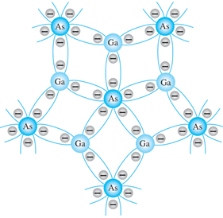

Esta configuraci�n es menos com�n que la inversora, pero se utiliza cuando se requiere mantener la misma fase de la se�al diferencial en la salida.
Integrador
El integrador, en contraste con el diferenciador, produce una salida proporcional a la integral de la se�al de entrada respecto al tiempo. Se configura reemplazando la resistencia de realimentaci�n con un capacitor.
Produce una salida proporcional a la integral de la entrada, empleado en controladores PID y filtros.
Los integradores son fundamentales en el dise�o de filtros activos y en aplicaciones donde se requiere calcular el promedio o acumulado de una se�al a lo largo del tiempo.
La corriente es la rapidez con que se mueve una carga q, y dado que para un capacitor la carga es q = Cv, donde v es el voltaje, entonces la corriente a trav�s del capacitor es i = dq/dt = C dv/dt. La diferencia de potencial en C es de (vx - vsalida), y dado que vx en realidad es cero, por ser la tierra virtual, es igual a v_salida. Entonces, la corriente que pasa por el capacitor es igual a -C dvsalida/dt. Pero �sta tambi�n es la corriente que pasa por la resistencia de entrada R. Por lo tanto:

Re-arreglando e Integrando ambos lados de la ecuaci�n:

donde Vsalida(t2) es el voltaje de salida en el momento t2 y Vsalida(t1) es el voltaje de salida en el momento t1. La salida es proporcional a la integral del voltaje de entrada, es decir, el �rea bajo la gr�fica del voltaje de entrada en funci�n del tiempo.
Diferenciador
El diferenciador es una configuraci�n que genera una se�al de salida proporcional a la derivada de la se�al de entrada respecto al tiempo. Para lograr esto, un capacitor reemplaza a la resistencia de entrada en un amplificador inversor est�ndar.
Genera una salida proporcional a la derivada de la entrada, �til en circuitos de procesamiento de se�ales.
Este circuito es �til en aplicaciones de procesamiento de se�ales donde se requiere detectar cambios r�pidos en la se�al de entrada, como en la detecci�n de bordes en se�ales digitales.
Si el capacitor y el resistor se intercambian en el circuito por el amplificador integrador, se obtiene un circuito diferenciador. La corriente de entrada ientrada al capacitor C es dq/dt = C dv/dt. Con el caso ideal de corriente cero del amplificador operacional, �sta es tambi�n la corriente que pasa a trav�s del resistor retroalimentador R, es decir, -Vsalida/R y por tanto:

Amplificador con Diodos (Rectificador de Precisi�n)
El amplificador con diodos, tambi�n conocido como rectificador de precisi�n, es una configuraci�n que utiliza diodos en combinaci�n con un amplificador operacional para realizar una rectificaci�n precisa de se�ales de peque�a amplitud.
A diferencia de los rectificadores tradicionales, esta configuraci�n elimina el umbral de voltaje t�pico de los diodos (aproximadamente 0.7 V para los diodos de silicio), permitiendo una rectificaci�n efectiva incluso para se�ales de amplitud muy baja.
Existen dos configuraciones principales:
Rectificador Lineal de Media Onda
La se�al de entrada se aplica al circuito y solo se permite el paso de una polaridad de la se�al (positiva o negativa) dependiendo de la orientaci�n del diodo.
El amplificador operacional compensa las p�rdidas de voltaje en el diodo, asegurando una salida precisa.
Rectificador inversor lineal de media onda con salida positiva
Este circuito utiliza un amplificador operacional en configuraci�n inversora con dos diodos para obtener una salida positiva para se�ales de entrada negativas.
Cuando la entrada 𝐸𝑖 es positiva, el diodo D1 conduce, bloqueando la salida en cero.
Sin embargo, para se�ales negativas, el diodo D2 conduce, y el circuito act�a como un inversor, resultando en una salida positiva proporcional a la magnitud de la se�al de entrada

Los diodos son 1N914 o 1N4154.
Rectificador inversor lineal de media onda con salida negativa
Al invertir los diodos del circuito anterior, se obtiene una configuraci�n que invierte la polaridad de la salida. Aqu�, solo las se�ales positivas se transmiten y se invierten en la salida.
La salida es cero para todas las entradas negativas. Esta configuraci�n es �til cuando se necesita una inversi�n precisa de se�ales espec�ficas.

Separador de polaridad de se�al
El separador de polaridad de se�al es un circuito que distingue y separa las polaridades de una se�al de entrada Ei, generando salidas individuales para las componentes positiva y negativa de la se�al.
El separador de polaridad de se�al es un circuito dise�ado para distinguir las polaridades de una se�al de entrada Ei y proporcionar dos salidas separadas, donde una indica la magnitud de la se�al positiva y la otra la magnitud de la se�al negativa. Este circuito, basado en amplificadores operacionales con diodos, opera mediante el control de la conducci�n de dos diodos en funci�n de la polaridad de Ei . Cuando Ei es positiva, el diodo Di conduce, permitiendo una salida negativa en Vo1 , mientras que la Vo2 queda acotada a 0 V. Por otro lado, cuando Ei es negativa, el diodo D2D_2D2 se activa, lo que genera una salida positiva en Vo2 y mantiene Vo1en 0 V. Esta operaci�n se observa claramente en las formas de onda generadas, que muestran c�mo el circuito convierte cada polaridad de entrada en una salida espec�fica, asegurando un aislamiento completo entre las dos se�ales de salida. Este dise�o es ideal para aplicaciones en las que es crucial procesar y analizar las componentes positivas y negativas de una se�al de manera independiente.

Rectificador de Precisi�n de Onda Completa
Combina dos rectificadores de media onda y utiliza un dise�o m�s complejo para rectificar ambas polaridades de la se�al de entrada.
La salida resultante es una se�al positiva para ambas mitades del ciclo de la se�al original.
Rectificador de precisi�n de onda completa con resistencias iguales
Este circuito emplea dos amplificadores operacionales, dos diodos y resistencias iguales. Es capaz de rectificar ambos ciclos de una se�al alterna, produciendo una salida proporcional al valor absoluto de la entrada. El primer amplificador invierte las se�ales negativas, mientras que el segundo genera una salida positiva independiente de la polaridad de la se�al de entrada. Este dise�o es econ�mico y preciso, pero no ofrece alta impedancia de entrada.
Rectificador de precisi�n de onda completa de alta impedancia
En esta configuraci�n, los amplificadores operacionales est�n dispuestos para proporcionar alta impedancia de entrada, lo que lo hace adecuado para se�ales de fuentes con alta impedancia. Las se�ales positivas y negativas se rectifican mediante los diodos, resultando en una salida positiva igual al valor absoluto de la se�al de entrada. Esta variante es ideal para aplicaciones que requieren precisi�n y compatibilidad con se�ales d�biles o sensibles.

Amplificador logar�tmico
El amplificador logar�tmico es una configuraci�n b�sica especial que utiliza un diodo o un transistor en la red de realimentaci�n para generar una salida proporcional al logaritmo de la se�al de entrada.
Este tipo de amplificador es �til en aplicaciones donde las se�ales var�an en un rango amplio, como en sistemas de medici�n o en circuitos de compresi�n de se�ales.
Cuando el diodo est� en la red de realimentaci�n del amplificador operacional, la salida del amplificador operacional ajusta su voltaje para mantener el principio de superposici�n. Como resultado, el voltaje de salida es proporcional al logaritmo natural de la se�al de entrada.
La salida de algunos sensores es no lineal. Por ejemplo, la salida de un termopar no es una funci�n perfectamente lineal de la diferencia de temperatura entre sus uniones.
Entonces se puede utilizar un acondicionador de se�al para linealizar la salida de estos sensores.
Para ello se utiliza un circuito con amplificador operacional dise�ado para que la relaci�n entre su entrada y su salida sea no lineal, de manera que cuando su entrada es no lineal, la salida ser� lineal. Esto se logra con las componentes adecuadas en el lazo de retroalimentaci�n.
El amplificador logar�tmico es un ejemplo de este acondicionador de se�al. En el lazo de retroalimentaci�n hay un diodo (o un transistor con base aterrizada).
El diodo tiene una caracter�stica no lineal. Su comportamiento podr�a representarse por V = C ln I, donde C es una constante.
Como la corriente del lazo de retroalimentaci�n es id�ntica a la corriente del resistor de entrada y la diferencia de potencial en el diodo es -Vsalida; tenemos que:

donde K es una constante. Ahora bien, si la entrada Ventrada la proporciona un sensor con entrada t, donde: Ventrada = A eat, con A y a constantes, entonces:

El resultado obtenido es una relaci�n lineal entre Vsalida y t.
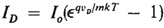
S�NTESIS DE CONTROLADORES ELEMENTALES
Los amplificadores operacionales se utilizan ampliamente en el dise�o de controladores b�sicos:
Controladores de dos posiciones: el controlador es en esencia un interruptor activado por la se�al de error y proporciona s�lo una se�al correctora tipo encendido-apagado.

Controladores proporcionales: Ajustan la salida en funci�n de una entrada proporcional al error.
Controladores integradores: Acumulan el error a lo largo del tiempo para eliminar desviaciones constantes.
Controladores derivativos: Responden a cambios r�pidos, mejorando la estabilidad y la respuesta del sistema.
Combinaci�n de modos de control: proporcional derivativo (PD), proporcional integral (PI) y proporcional integral derivativo (PID). El t�rmino controlador de tres t�rminos se usa para el modo PID.
Circuitos amplificadores operacionales que se pueden utilizar como controladores o compensadores.

2. Filtros.
2.1 Introducci�n a los filtros: filtros pasivos, filtros activos.
El t�rmino filtrado se refiere al proceso de la eliminaci�n de ciertas bandas de frecuencias de una se�al y que se permita la transici�n de otras bandas.
Los filtros anal�gicos pueden ser construidos solamente usando componentes pasivos, como resistores, capacitores e inductores, los cuales son llamados filtros pasivos. Pero a diferencia, un filtro activo es una clase de filtro cuyas caracter�sticas son subsidiarias mediante el uso de uno o m�s amplificadores operacionales. Los filtros activos, en general son construidos usando solamente amplificadores operacionales, resistores y capacitores. (Filtro de paso bajo: a) pasivo, b) activo).

Los filtros pasivos tienen la desventaja de que la corriente que absorbe cada elemento puede modificar las caracter�sticas de frecuencia de dicho filtro; estos problemas no se presentan en los filtros activos.
Los amplificadores operacionales son componentes ideales que permiten realizar filtros de varios tipos con la gran ventaja de proporcionar una salida de baja impedancia, lo que esto permite el construir varios bloques de varias etapas funcionales, los cuales se pueden intercalar en cualquier circuito y estos van a cumplir con su cometido.
Los filtros se clasifican de acuerdo con los intervalos de frecuencias que transmiten o rechazan, Hay 5 tipos b�sicos de filtros: PasaBajas (LOW-PASS), PasaAltas (HIGH PASS), Pasa-Bandas (BANDPASS), Muesca o Rechazo-Bandas (BANDSTOP/NOTCH) y PasaTodas (ALL-PASS). (a) paso bajo, b) paso alto, c) paso banda, d) rechazo banda)
FILTROS PASIVOS
� Utilizan componentes como resistencias, capacitores e inductores.
� No requieren fuentes externas de energ�a.
� Tienen limitaciones en la ganancia y son m�s susceptibles a p�rdidas en frecuencias espec�ficas.
Los filtros pasivos son circuitos esenciales que permiten modificar el contenido espectral de las se�ales el�ctricas sin la necesidad de elementos activos como amplificadores operacionales. Estos filtros est�n compuestos �nicamente por componentes pasivos: resistencias, inductancias y capacitancias. Se denominan "pasivos" porque no requieren una fuente externa de energ�a para operar. Los filtros pasivos se clasifican principalmente en PasaBajas, PasaAltas, Pasa-Banda y Rechaza-Banda, cada uno dise�ado para dejar pasar o bloquear ciertas frecuencias seg�n sus caracter�sticas.
Un filtro PasaBajas permite el paso de frecuencias inferiores a la frecuencia de, atenuando aquellas superiore. En contraste, un filtro PasaAltas act�a de forma inversa, permitiendo frecuencias superiores a la frecuencia de corte, mientras bloquea las inferiores. Los filtros Pasa-Banda son una combinaci�n de PasaBajas y PasaAltas, definiendo un rango espec�fico de frecuencias de paso, mientras que los filtros Rechaza-Banda (o muesca) eliminan una banda de frecuencias espec�fica, permitiendo pasar las dem�s.
Los filtros pasivos presentan ventajas como simplicidad de dise�o, bajo costo y ausencia de requerimientos de alimentaci�n externa. Sin embargo, tienen limitaciones significativas, como la imposibilidad de amplificar se�ales y la dependencia de los valores precisos de los componentes para determinar la frecuencia de operaci�n.
FILTROS ACTIVOS
� Incorporan amplificadores operacionales para superar las limitaciones de los pasivos.
� Ofrecen ganancia y mayor flexibilidad en el dise�o.
� Ejemplos incluyen configuraciones pasa bajos, pasa altos, pasa bandas y de rechazo de banda, cada uno con aplicaciones espec�ficas de filtros de primer y segundo orden.
Los filtros activos son una evoluci�n de los filtros pasivos que incorporan elementos activos, como amplificadores operacionales, para superar las limitaciones de los filtros pasivos. Estos filtros no solo permiten manipular las frecuencias de paso y rechazo, sino que tambi�n proporcionan ganancia, lo que resulta fundamental en aplicaciones donde las se�ales necesitan amplificaci�n.
Un filtro activo t�pico puede ser PasaBajas, PasaAltas, Pasa-Banda o Rechaza-Banda, y puede configurarse en dise�os como Sallen-Key o de m�ltiples retroalimentaciones. Por ejemplo, un filtro Pasa-Bandas activo utiliza un amplificador operacional para mantener la ganancia en la banda de paso mientras aten�a las frecuencias m�s all� de la frecuencia cr�tica. Adem�s, los filtros activos permiten la implementaci�n de caracter�sticas espec�ficas, como la selectividad ajustable a trav�s del factor de calidad 𝑄. Este factor define la relaci�n entre la frecuencia central y el ancho de banda
DIAGRAMA DE BODE
El diagrama de Bode es una herramienta visual utilizada en el dise�o de filtros para representar la ganancia y la fase del filtro en funci�n de la frecuencia. Se grafica en escalas logar�tmica y semi-logar�tmica, respectivamente. Es decir, los intervalos de frecuencia se expresan en m�ltiplos de diez ( ... , 0.01, 0.1, 1, 10, 100, ... ) o de ocho ( ... , 1/8, 1/4, 1/2, 1, 2, 4, 8, ... ) y |H| se expresa en decibeles (dB).

D�nde H es igual al voltaje de salida (Vout) sobre el voltaje de entrada (Vin) En el diagrama de Bode de un filtro pasa banda, se observa un pico de ganancia en la frecuencia central, que disminuye fuera de la banda de paso. En el caso del filtro de muesca, el diagrama muestra una ca�da pronunciada en la frecuencia de rechazo. Este an�lisis en el dominio de la frecuencia facilita el ajuste de los componentes del filtro para obtener la respuesta deseada.
Un ejemplo de este es el siguiente:
El diagrama de Bode no solo facilita el an�lisis y dise�o de filtros, sino que tambi�n es una herramienta valiosa para validar experimentalmente el comportamiento de un circuito, comparando la respuesta te�rica con la medida.
2.2 Caracter�sticas de filtros de primer y segundo orden.
FILTROS DE PRIMER ORDEN
� Tienen una pendiente de -20 dB por d�cada.
� Su funci�n de transferencia tiene un solo polo.
� Su dise�o es m�s simple y se utilizan cuando no se requiere una atenuaci�n pronunciada.
Los filtros de primer orden son circuitos electr�nicos b�sicos que utilizan un solo polo, es decir, un conjunto formado por una resistencia y un capacitor (o un inductor), para definir su frecuencia de corte (𝑓𝑐). Estos filtros tienen una respuesta inicial de ganancia plana en su banda de paso y una ca�da en la ganancia de −20 dB/d�cada por encima o por debajo de la frecuencia cr�tica, dependiendo de si es un filtro PasaBajas o PasaAltas.
Aplicaciones y Caracter�sticas:
� Simplicidad de Dise�o: Los filtros de primer orden son sencillos y econ�micos de construir, ya que requieren pocos componentes.
� Pendiente de Atenuaci�n Moderada: Con −20 dB/d�cada, estos filtros son ideales para aplicaciones donde no se requiere una separaci�n muy pronunciada entre la banda de paso y la de rechazo.
� Uso Frecuente en Sistemas Anal�gicos: Estos filtros se utilizan para eliminar ruido de alta frecuencia o para proteger etapas de procesamiento de se�ales de componentes de frecuencia no deseadas.
Aunque son eficaces en aplicaciones simples, su capacidad para discriminar frecuencias es limitada, lo que los hace menos adecuados para sistemas donde se necesita una selectividad m�s precisa.
FILTROS DE SEGUNDO ORDEN
� Proporcionan una pendiente de -40 dB por d�cada, lo que permite un mayor control en la atenuaci�n de frecuencias indeseadas.
� Contienen dos polos en su funci�n de transferencia.
� Su implementaci�n puede incluir topolog�as como Sallen-Key y m�ltiples configuraciones activas.
� Son m�s comunes en aplicaciones que requieren una selectividad mayor.
Los filtros de segundo orden, tambi�n conocidos como filtros de dos polos, son una evoluci�n de los filtros de primer orden, que emplean dos conjuntos RC o equivalentes, aumentando la pendiente de atenuaci�n a −40 dB/d�cada. Esto los hace significativamente m�s efectivos en la separaci�n de frecuencias de inter�s.
La frecuencia cr�tica para un filtro de segundo orden sigue siendo definida por los valores de los componentes, pero incorpora un segundo polo que permite ajustar par�metros adicionales, como el factor de calidad (Q).

Tipos y Beneficios:
� F�cil Ajuste de Selectividad: Los valores de Q determinan si el filtro tiene una banda de paso estrecha (alta selectividad) o amplia (menor selectividad).
� Menor Distorsi�n en Aplicaciones Espec�ficas: En configuraciones avanzadas como los filtros Butterworth, Chebyshev o Bessel, el comportamiento del filtro puede optimizarse para maximizar la planitud de la ganancia, minimizar la distorsi�n de fase o aumentar la rapidez de la ca�da.
Configuraciones T�picas:
� Sallen-Key: Utiliza un amplificador operacional en combinaci�n con componentes RC para implementar filtros PasaBajas o PasaAltas de segundo orden.
� Filtros de Estado Variable: Incorporan amplificadores operacionales adicionales para generar simult�neamente salidas de PasaAltas, PasaBajas y Paso-Banda.
Los filtros de segundo orden son ideales para aplicaciones de audio, procesamiento de se�ales y comunicaciones, donde la precisi�n y la selectividad son cruciales
FILTROS DE TERCER ORDEN Y DE ORDEN SUPERIOR
Los filtros de tercer orden agregan un tercer polo al circuito, logrando una pendiente de atenuaci�n de −60 dB/d�cada. Estos filtros combinan m�ltiples etapas de primer y segundo orden en serie o utilizan configuraciones especializadas que incorporan un polo adicional.
Caracter�sticas Principales:
� Mayor Selectividad: Adecuados para aplicaciones donde se necesita una separaci�n m�s clara entre las frecuencias de paso y de rechazo.
� Complejidad Moderada: Requieren m�s componentes pasivos y, en algunos casos, un amplificador operacional adicional.
� Aplicaciones: Sistemas de audio avanzados y filtrado de se�ales en sistemas de comunicaciones.
Filtros de Orden Superior (Cuarto Orden en Adelante)
Los filtros de orden superior (n>3) se construyen a�adiendo polos adicionales, lo que mejora a�n m�s la capacidad de atenuaci�n de frecuencias fuera de la banda de paso. Por ejemplo: Cuarto Orden Pendiente de −80 dB/d�cada, Quinto Orden Pendiente de −100 dB/d�cada, etc.
Dise�o: Se implementan combinando etapas de menor orden (como un filtro de segundo orden seguido de otro de tercer orden). Utilizan configuraciones avanzadas como filtros de Chebyshev o el�pticos para maximizar la eficiencia en aplicaciones espec�ficas.
Ventajas y Desventajas: Excelente capacidad de discriminaci�n y alta precisi�n en aplicaciones cr�ticas. Pero mayor complejidad de dise�o y mayor sensibilidad a variaciones en los componentes.
Aplicaciones Comunes:
� Procesamiento de se�ales digitales.
� Sistemas de telecomunicaciones.
� Filtrado en sistemas de medici�n de precisi�n.
Estos filtros se utilizan en aplicaciones que exigen un rendimiento superior, como en equipos m�dicos, sistemas de radar y tecnolog�as de alta frecuencia.
2.3 Filtros Butterworth, Chebyshev y otros.
Las caracter�sticas Butterworth, Chebyshev o Bessel se pueden obtener con la mayor�a de las configuraciones de los circuitos de filtros activos mediante la selecci�n apropiada de ciertos valores de sus componentes. Los filtros PasaAltas y PasaBajas tambi�n pueden dise�arse para que tengan cualquiera de las caracter�sticas.
FACTORES Y TOPOLOGIAS
Se puede dise�ar un filtro activo para que tenga una caracter�stica de respuesta Butterworth, Chebyshev o Bessel no importa que sea PasaBajas, PasaAltas, PasoBanda o supresores de banda. El factor de amortiguamiento relativo (DF) de un circuito de un filtro activo determina cu�l caracter�stica exhibe el filtro.
El amplificador y el circuito de realimentaci�n est�n conectados en una configuraci�n no inversora. El circuito de realimentaci�n negativa determina el factor de amortiguamiento relativo el cual est� definido por la siguiente ecuaci�n:

El factor de amortiguamiento relativo afecta la respuesta del filtro por la acci�n de la realimentaci�n negativa. Cualquier intento de incremento o reducci�n en el voltaje de salida es contrarrestado por el efecto opuesto de la realimentaci�n negativa. Esto tiende a aplanar la curva de respuesta en la banda de paso del filtro, si el valor del factor de amortiguamiento relativo se establece con precisi�n.
Mediante Matem�ticas Avanzadas se derivaron valores para el factor de amortiguamiento relativo para varios �rdenes de filtros para obtener la respuesta m�ximamente plana de la caracter�stica Butterworth.
El valor del factor de amortiguamiento relativo requerido para producir una caracter�stica de respuesta deseada depende del orden (n�mero de polos) del filtro. Un polo es simplemente un circuito con un resistor y un capacitor. Mientras m�s polos tenga el filtro, m�s grande ser� su rapidez de la pendiente de ca�da.
Entre los filtros activos cabe destacar la topolog�a, que b�sicamente es como est�n interconectados los componentes, estar�n la topolog�a Sallen-Key, y la topolog�a MFB (Multiple Feed Back).
De acuerdo con c�mo se distribuyan los componentes, se obtendr�n los diferentes tipos de filtro. En un filtro MFB, la funci�n de transferencia siempre es inversa, y se puede observar que tiene dos realimentaciones de la entrada a la salida.
En un filtro hay dos cosas muy importantes, el circuito y la funci�n de transferencia, dependiendo del circuito se sabr� cual es el m�ximo factor de calidad , y como ser� su comportamiento en la frecuencia; de la funci�n de transferencia que es la representaci�n matem�tica entre la salida y entrada del filtro, hallamos la magnitud y fase del filtro, as� mismo las frecuencias de corte.
El factor de calidad nos indica que tan selectivo es un filtro (en cierta manera que tanto se parece a uno ideal), entre mayor sea el valor del factor de calidad, mayor la selectividad del filtro, el valor que se puede alcanzar var�a de acuerdo, a si el filtro es pasivo o activo, a la topolog�a, al orden del filtro, a la calidad de los mismos componentes.
BUTTERWORTH
La Aproximaci�n Butterworth en el dise�o de filtros se refiere al uso de los polinomios de Butterworth para la ubicaci�n de los polos del filtro. Estos polinomios fueron descritos por el ingeniero y f�sico Stephen Butterworth en el a�o 1930. Tienen como principal caracter�stica la respuesta m�s plana posible en la banda de paso.
Ofrecen una respuesta plana en la banda pasante, sin ondulaciones, ideal para aplicaciones que requieren un paso uniforme de las se�ales. Son muy �tiles en aplicaciones donde es crucial evitar distorsi�n en las se�ales. Se dise�an para evitar resonancias no deseadas.

El filtro Butterworth se caracteriza por su respuesta maximizada en la banda de paso, lo que significa que la ganancia se mantiene uniforme sin ondulaciones ni irregularidades. Este comportamiento lo hace ideal para aplicaciones donde es crucial preservar la integridad de la amplitud de las se�ales dentro de un rango de frecuencias determinado, como en sistemas de audio y procesamiento de se�ales de alta fidelidad. Una de las principales ventajas de este filtro es su simplicidad en t�rminos de dise�o, lo que facilita su implementaci�n en configuraciones anal�gicas y digitales.
En t�rminos de fase, el filtro Butterworth introduce un retraso no lineal, lo que puede provocar distorsi�n temporal en se�ales pulsantes. Este fen�meno se debe a que las componentes de frecuencia experimentan diferentes retardos, lo que puede ser problem�tico en aplicaciones donde la sincronizaci�n temporal es cr�tica. A pesar de esta limitaci�n, el filtro Butterworth sigue siendo una opci�n preferida en aplicaciones donde la uniformidad de la ganancia es m�s importante que la linealidad de la fase.
La funci�n de transferencia del filtro Butterworth est� dise�ada para tener una pendiente moderada en la banda de transici�n, con una ca�da de −20 dB/d�cada/polo. Aunque est� pendiente no es tan pronunciada como la de otros filtros, garantiza una transici�n suave entre la banda de paso y la de rechazo.
Sin embargo, esta caracter�stica tambi�n implica que los filtros Butterworth requieren un mayor n�mero de polos para alcanzar niveles de atenuaci�n equivalentes a otros dise�os m�s selectivos, como los filtros Chebyshev o el�pticos.
La ecuaci�n para hallar los polos de un polinomio Butterworth es la siguiente:
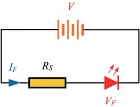
Donde n es el n�mero de polos del polinomio es decir el mismo orden del polinomio y k hace un recorrido desde 1 hasta n. Ahora la ecuaci�n caracter�stica de un polinomio de Butterworth est� dada por la siguiente ecuaci�n:

En la siguiente tabla est�n los polos de los polinomios de Butterworth desde orden 1 hasta orden 10:
Y en la siguiente tabla est�n las ecuaciones caracter�sticas de los polinomios Butterworth desde orden 1 hasta orden 10:
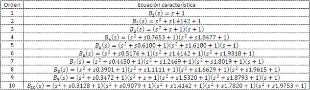
El dise�o de este filtro se basa en amplificadores operacionales configurados en topolog�as de segundo orden, como Sallen-Key y de m�ltiples realimentaciones, dependiendo de los requisitos espec�ficos de la aplicaci�n.
En la configuraci�n Sallen-Key, se emplean dos resistencias y dos capacitores conectados en una red a un amplificador operacional. Este dise�o permite un ajuste preciso de la frecuencia de corte (fc) y proporciona una excelente estabilidad. Para aplicaciones m�s exigentes, la configuraci�n de m�ltiples realimentaciones utiliza un mayor n�mero de componentes, incluyendo resistencias adicionales y amplificadores, lo que ofrece una mayor flexibilidad para dise�ar filtros de �rdenes superiores.
Par�metros de Dise�o para Filtros Activos
Frecuencias de Corte Inferior (fL) y Superior (fH): Son las frecuencias donde la respuesta del filtro cae a un valor determinado, t�picamente -3 dB con respecto a la ganancia m�xima. Estas frecuencias delimitan el rango de paso o rechazo del filtro y son esenciales para definir el comportamiento del filtro en aplicaciones espec�ficas.
Ancho de Banda (BW): Define el rango de frecuencias que el filtro permite pasar o rechazar. En un filtro de banda angosta, el ancho de banda es muy reducido, permitiendo as� un rechazo espec�fico en una frecuencia precisa. Se calcula como:

Frecuencia de Resonancia (fr): En los filtros de banda angosta, la frecuencia de resonancia es la frecuencia donde la ganancia alcanza su m�ximo o m�nimo en el caso del filtro de muesca. Se calcula como:
NOTA: El ancho de banda no est� exactamente centrado en la frecuencia de resonancia. Es por ello por lo que se utiliza el nombre tradicional frecuencia de resonancia y no frecuencia central para designarlo.
Si se conoce la frecuencia de resonancia y el ancho de banda es posible calcular las frecuencias de corte mediante:
 �����
�����

Calidad del Filtro (Q): El factor de calidad define la selectividad del filtro, es decir, su capacidad para discriminar entre las frecuencias que est�n dentro y fuera de la banda de paso o rechazo. Un valor alto (mayor a 0.5) de Q indica un filtro de banda angosta, ideal para aplicaciones de rechazo preciso de frecuencias espec�ficas. Se calcula como:

Resistencias para el Filtro de Banda Angosta: En un filtro de banda angosta o de muesca, los valores de las resistencias y capacitores son cr�ticos para ajustar la frecuencia de resonancia.
La resistencia R se determina con el ancho de banda y con dos capacitores C de valores iguales mediante la siguiente relaci�n:
La ganancia tiene un m�ximo de 1 (unitaria) en la frecuencia de resonancia dada por la resistencia de retroalimentaci�n de valor 2R.
La frecuencia de resonancia queda determinada por la resistencia de resonancia Rr de acuerdo con:
Cuando se conocen los valores de los componentes del circuito la frecuencia de resonancia puede calcularse mediante:

Filtros B�sicos PasaBajas RC (-20 dB/d�cada)
Un filtro pasa bajos activo de primer orden RC como su nombre lo dice solo permite el paso de frecuencias bajas y aten�a las frecuencias altas. Este est� compuesto por cinco elementos un condensador, tres resistencias, y un amplificador operacional (op-amp). La entrada es por la resistencia R y la salida se toma en salida del amplificador operacional.
Tiene tres principales caracter�sticas: la ganancia puede ser mayor a uno, al ser de primer orden su atenuaci�n es de 20db por d�cada de frecuencia, y hay dos circuitos, el inversor y el no inversor.
Filtro PasaBajas Inversor
El circuito de un filtro inversor pasa bajos activo de primer orden es el siguiente:

Funci�n de transferencia inversor:
Ecuaciones de dise�o:
� A es la ganancia de este filtro.
� fc es la frecuencia de corte.
� El valor de C es libre.
� La salida es inversa respecto a la entrada, signo menos en la funci�n de transferencia.
La funci�n de R1 es la de balancear el circuito, mas sin embargo se puede obviar, y reemplazar por un corto circuito.
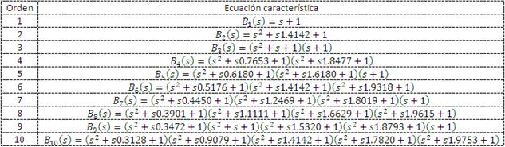
Filtro PasaBajas no Inversor
El circuito de un filtro no inversor pasa bajos activo de primer orden es el siguiente:
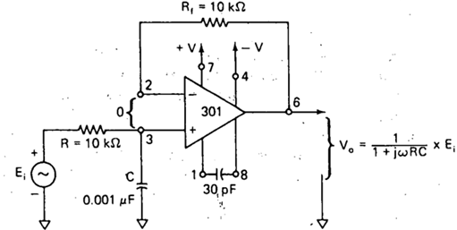
Funci�n de transferencia no inversor:
Ecuaciones de dise�o:
� A es la ganancia de este filtro.
� El valor de C es libre.
� La m�nima ganancia A es 1.
� fc es la frecuencia de corte.

Respuesta del filtro: El valor de ACL a ωc se encuentra al hacer ωRC = 1

Por tanto, la magnitud de ACL a ωc es:

y el �ngulo de fase es -45�.
Filtro Butterworth PasaBajas de - 40 db/d�cada
Filtro Butterworth PasaBajas de - 60 db/d�cada
Filtros B�sicos PasaAltas RC (-20 dB/d�cada)
Un filtro pasa altos activo de primer orden RC como su nombre lo dice solo permite el paso de frecuencias altas y aten�a las frecuencias bajas. Este est� compuesto por cinco elementos un condensador, tres resistencias, y un amplificador operacional (opamp). La entrada es por la resistencia R y la salida se toma en salida del amplificador operacional.
Tiene tres principales caracter�sticas: la ganancia puede ser mayor a uno, al ser de primer orden su atenuaci�n es de 20db por d�cada de frecuencia, y hay dos circuitos, el inversor y el no inversor.
Filtro PasaAltas Inversor
El circuito de un filtro inversor pasa altos activo de primer orden RC es el siguiente:

Funci�n de transferencia inversor:

Para dise�o las ecuaciones son las siguientes:


� A es la ganancia de este filtro.
� fc es la frecuencia de corte.
� El valor de C es libre.
� La salida es inversa respecto a la entrada, signo menos en la funci�n de transferencia.
La funci�n de R1 es la de balancear el circuito, mas sin embargo se puede obviar, y reemplazar por un corto circuito. La raz�n para despejar R y no C en la ecuaci�n es que es m�s f�cil ajustar R que C.

Filtro PasaAltas no Inversor
El circuito de un filtro no inversor pasa altos activo de primer orden RC es el siguiente:

Funci�n de transferencia no inversor:

Para dise�o las ecuaciones son las siguientes:
� A es la ganancia de este filtro.
� El valor de C es libre.
� La m�nima ganancia A es 1.
� fc es la frecuencia de corte.

Filtro Butterworth PasaAltas de - 40 db/d�cada
Filtro Butterworth PasaAltas de - 60 db/d�cada
Filtros Pasa-Bandas (Banda Angosta Y Banda Ancha)
Banda Ancha
Banda Angosta
Filtros De Muesca (Rechazo-Bandas)
CHEBYSHEV
La Aproximaci�n Chebyshev en el dise�o de filtros se refiere al uso de los polinomios de Chebyshev para la ubicaci�n de los polos en un determinado filtro. Estos polinomios fueron descritos por el matem�tico Pafnuty Chebyshev. Tienen como principal caracter�stica que se les puede configurar un rizado antes de la banda de paso con lo que se logra una respuesta m�s r�pida en la banda de paso.
Se caracterizan por tener ondulaciones en la banda pasante, lo que permite una atenuaci�n m�s r�pida fuera de la banda. Son ideales cuando es crucial una alta atenuaci�n en una banda espec�fica de frecuencias. Permiten pendientes m�s abruptas en comparaci�n con Butterworth.

El filtro Chebyshev se distingue por su alta selectividad y su capacidad para ofrecer una transici�n r�pida entre la banda de paso y la de rechazo. Este comportamiento se logra mediante la introducci�n de ondulaciones controladas en la banda de paso o de rechazo, dependiendo del tipo de filtro Chebyshev utilizado. Estas ondulaciones permiten que el filtro alcance niveles de atenuaci�n m�s altos con un menor n�mero de polos en comparaci�n con el filtro Butterworth, lo que se traduce en dise�os m�s compactos y eficientes.
La magnitud de las ondulaciones en la banda de paso est� determinada por un par�metro conocido como ripple, que puede ajustarse durante el dise�o del filtro. Este ajuste permite un balance entre la uniformidad de la ganancia y la rapidez de la pendiente. Por ejemplo, un filtro Chebyshev con un ripple (ondulaciones controladas) tendr� una respuesta m�s plana en la banda de paso, pero requerir� m�s polos para alcanzar la misma selectividad que un dise�o con un ripple mayor.
Las ecuaciones para hallar los polos de un polinomio Chebyshev son las siguientes:
Donde ε, A y A1 son unas constantes que ayudan a minimizar los c�lculos de los polos, n es el n�mero de polos del polinomio es decir el mismo orden del polinomio y k hace un recorrido desde 1 hasta n. Rdb hace referencia al valor del rizado en decibeles.
Los polos de los polinomios de Chebyshev desde orden 1 hasta orden 10 para diferentes valores de rizado.


A pesar de sus ventajas, el filtro Chebyshev presenta una respuesta de fase no lineal, lo que lo hace menos adecuado para aplicaciones donde la integridad temporal de la se�al es crucial. Sin embargo, es una opci�n popular en sistemas de comunicaciones, filtrado de ruido y aplicaciones industriales donde la prioridad es la selectividad de las frecuencias.
Tipo I
Este dise�o es el m�s com�n y se caracteriza por ondulaciones en la banda de paso, lo que permite una ca�da m�s pronunciada en la banda de rechazo. El circuito t�pico utiliza una configuraci�n Sallen-Key modificada, donde las resistencias y capacitancias est�n ajustadas para definir la ondulaci�n espec�fica y la frecuencia cr�tica. Es com�n en sistemas donde la uniformidad de ganancia no es crucial, pero la rapidez en la atenuaci�n fuera de la banda de paso es esencial, como en sistemas de filtrado de ruido en telecomunicaciones.
Tipo II
Conocido como el filtro inverso de Chebyshev, este dise�o tiene una banda de paso completamente plana, pero introduce ondulaciones en la banda de rechazo. Este tipo de filtro es m�s complejo en t�rminos de dise�o, ya que requiere una sintonizaci�n precisa de los componentes para garantizar un rechazo selectivo en las frecuencias indeseadas. Se emplea en aplicaciones donde es fundamental preservar la fidelidad de la se�al en la banda de paso, como en sistemas de procesamiento de se�ales de alta precisi�n
OTROS TIPOS DE FILTROS
Filtro Bessel
El filtro Bessel es conocido por su respuesta de fase lineal, lo que significa que todas las frecuencias dentro de la banda de paso experimentan el mismo retardo de tiempo. Esta caracter�stica es fundamental en aplicaciones donde la preservaci�n de la forma de onda es crucial, como en sistemas de transmisi�n de pulsos, procesamiento de se�ales anal�gicas y ciertos sistemas de audio. A diferencia de otros filtros, el Bessel prioriza la linealidad de fase sobre la selectividad de frecuencia, lo que resulta en una pendiente de atenuaci�n m�s suave en la banda de transici�n.
Prioriza la linealidad de fase, ideal para aplicaciones donde el retardo de grupo constante es cr�tico.
En t�rminos de dise�o, el filtro Bessel se implementa com�nmente en configuraciones anal�gicas utilizando amplificadores operacionales y redes de resistencias y capacitores. Aunque su pendiente de −20 dB/d�cada/polo es m�s gradual que la de los filtros Butterworth o Chebyshev, esta suavidad minimiza la distorsi�n y los sobrepasos en la salida del filtro, lo que es particularmente valioso en aplicaciones de instrumentaci�n y medici�n.
El principal inconveniente del filtro Bessel es que su respuesta de ganancia es menos eficiente en t�rminos de rechazo de frecuencias no deseadas, lo que lo hace menos adecuado para aplicaciones donde se requiere una separaci�n precisa entre bandas. Sin embargo, su excepcional desempe�o en t�rminos de preservaci�n temporal lo convierte en una herramienta indispensable en muchas �reas tecnol�gicas.
El dise�o del filtro Bessel se centra en la preservaci�n de la linealidad de fase, lo que significa que todas las frecuencias en la banda de paso experimentan el mismo retardo. Esto es cr�tico en sistemas de transmisi�n de pulsos y procesamiento de se�ales donde la integridad temporal es primordial. Los circuitos t�picos emplean configuraciones en cascada de etapas de primer y segundo orden para lograr una transici�n suave entre las bandas de paso y rechazo
Filtro El�ptico (Cauer)
Combina caracter�sticas de Butterworth y Chebyshev, logrando un alta pendiente de atenuaci�n con ondulaciones en ambas bandas.
El filtro el�ptico, tambi�n conocido como filtro de Cauer, es uno de los dise�os m�s avanzados y eficientes en t�rminos de selectividad. Este filtro combina ondulaciones tanto en la banda de paso como en la banda de rechazo para lograr la m�xima atenuaci�n posible con el menor n�mero de polos. Gracias a esta caracter�stica, el filtro el�ptico es altamente efectivo en aplicaciones donde el espacio y los recursos son limitados, como en sistemas de telecomunicaciones y equipos port�tiles.
Una de las principales ventajas del filtro el�ptico es su capacidad para proporcionar pendientes de atenuaci�n extremadamente r�pidas, lo que lo hace ideal para aplicaciones que requieren una discriminaci�n precisa entre frecuencias. Sin embargo, esta rapidez en la transici�n se logra a costa de una mayor complejidad en el dise�o y una respuesta de fase menos lineal, lo que puede introducir distorsiones temporales en ciertos contextos.
El dise�o del filtro el�ptico se basa en funciones matem�ticas avanzadas que permiten ajustar tanto el ripple en la banda de paso como la atenuaci�n en la banda de rechazo. Esta flexibilidad lo convierte en una opci�n vers�til para una amplia variedad de aplicaciones, desde sistemas de radar hasta dispositivos m�dicos y equipos de prueba y medici�n.
El circuito t�pico del filtro el�ptico incluye amplificadores operacionales y redes LC sintonizadas. Estos componentes generan polos y ceros dentro de las bandas de paso y rechazo, proporcionando un control preciso sobre el ripple en ambas �reas. Este dise�o es com�n en aplicaciones avanzadas como telecomunicaciones, sistemas de radar y equipos m�dicos, donde la precisi�n y la selectividad son esenciales.
2.4 Aplicaciones.
ECUALIZADOR DE EST�REO DE 10 BANDAS
Dise�o de ecualizadores para controlar las frecuencias reproducidas.
SISTEMA DE RFID
Separaci�n de canales en multiplexado por divisi�n de frecuencia.
Eliminaci�n de interferencias en bandas espec�ficas.
INSTRUMENTACI�N
Filtrado de se�ales antes de la conversi�n anal�gica-digital.
Condicionamiento de se�ales para sensores en sistemas industriales.
CONTROL
Filtrado de retroalimentaci�n en controladores PID.
Eliminaci�n de transitorios no deseados en sistemas de potencia.
3. Comparadores.
3.1 Comparadores de voltaje: comparador de nivel, comparador con hist�resis, comparador de voltaje integrado, comparador de ventana, aplicaciones.
Los comparadores son circuitos que analizan el nivel de una se�al de entrada en relaci�n con una referencia establecida. Se usan com�nmente para convertir se�ales anal�gicas en digitales, se�alando si un nivel de voltaje es mayor o menor al de referencia.
Comparador de Nivel:
- Funci�n: Detecta si una se�al de entrada est� por encima o por debajo de un nivel de referencia.
- Uso: Aplicaciones en control y detecci�n, como reguladores de voltaje.
Comparador con Hist�resis
- Introduce una diferencia (hist�resis) entre los niveles de encendido y apagado para evitar fluctuaciones causadas por ruido.
- Ventaja: Proporciona inmunidad al ruido y estabilidad en aplicaciones de control, como termostatos.
Comparador de Ventana
- Detecta si un voltaje est� dentro de un rango espec�fico (ventana).
- Aplicaci�n: Sistemas de protecci�n para asegurar que una fuente de alimentaci�n opere dentro de l�mites seguros.
Comparadores Integrados (Ejemplo: LM311)
- Comparadores dise�ados espec�ficamente con caracter�sticas �ptimas como baja latencia y alta precisi�n.
- Ejemplo: Uso en circuitos digitales donde se requiere r�pida conmutaci�n.
Aplicaciones:
- Detecci�n de cruce por cero en se�ales alternas.
- Regulaci�n de voltaje.
- Generaci�n de PWM (modulaci�n por ancho de pulso).
- Sensores de proximidad y control industrial.
3.2 Comparador de frecuencia.
Analiza y compara se�ales peri�dicas para identificar si una frecuencia est� dentro de un rango establecido.
Aplicaci�n:
o Sincronizaci�n en sistemas de comunicaci�n.
o Protecci�n en sistemas el�ctricos para monitorear desbalances de frecuencia.
o Regulaci�n de generadores.
Caracter�sticas y Limitantes
- Velocidad de Conmutaci�n:
� Los amplificadores operacionales usados como comparadores tienen tiempos de propagaci�n m�s altos que los comparadores dedicados.
- Impedancia de Salida:
� La salida puede no ser ideal para circuitos digitales sin un ajuste adicional.
- Sensibilidad al Ruido:
� Sin hist�resis, los comparadores son vulnerables a transiciones falsas causadas por ruido.
- Voltajes de Referencia:
� Requieren referencias estables para un desempe�o �ptimo.
4. Generadores de se�ales.
4.1 Oscilaci�n: definici�n, caracter�sticas, principio de autoencendido.
Definici�n: La oscilaci�n en un circuito electr�nico se refiere a la generaci�n de una se�al peri�dica sin entrada externa continua. Se logra mediante realimentaci�n positiva y la ganancia adecuada.
Caracter�sticas:
- Ganancia: El sistema debe tener suficiente ganancia para compensar p�rdidas.
- Realimentaci�n positiva: Fundamental para mantener la se�al oscilante.
- Frecuencia de oscilaci�n: Depende de los componentes reactivos como capacitores e inductores.
Principio de autoencendido:
- Cuando el circuito comienza con un peque�o ruido interno, la retroalimentaci�n amplifica esta se�al hasta estabilizarse como una oscilaci�n peri�dica.
4.2 Se�ales elementales: cuadrada, triangular, diente de sierra y otras.
Onda Cuadrada:
- Generada por multivibradores astables.
- Se utiliza en sistemas digitales y como base para modulaciones.
Onda Triangular:
- Resultado de integrar una se�al cuadrada.
- Com�n en aplicaciones de generaci�n de funciones y modulaci�n.
Onda Diente de Sierra:
- Generada al cargar y descargar un capacitor linealmente.
- Utilizada en osciloscopios y convertidores de voltaje a frecuencia.
Otras:
- Senoidal: Para aplicaciones de comunicaci�n y pruebas.
- Impulsos: Para an�lisis de sistemas transitorios
4.3 Oscilador de relajaci�n.
Definici�n: Utiliza componentes reactivos como capacitores para generar se�ales peri�dicas al cargar y descargar a trav�s de resistencias.
Funcionamiento:
- El capacitor se carga a trav�s de una resistencia hasta un umbral de voltaje definido por un comparador o amplificador operacional.
- Una vez alcanzado el umbral, la se�al cambia de estado y comienza la descarga.
Aplicaciones:
- Generaci�n de se�ales diente de sierra y triangulares.
- Circuitos temporizadores y moduladores
4.4 Aplicaciones.
Electr�nica de Consumo:
- Generaci�n de tonos en dispositivos de audio.
- Generadores de patrones de prueba para pantallas.
Instrumentaci�n:
- Generadores de funciones en laboratorios de dise�o y pruebas.
- Osciladores para mediciones de precisi�n.
Comunicaciones:
- Moduladores y demoduladores de frecuencia.
- Sincronizaci�n en transmisores y receptores.
Control Industrial:
- Generaci�n de pulsos para controladores de motores y actuadores.
- Monitoreo de sistemas mediante se�ales de prueba.
5. Mallas de fase encadenada.
5.1 Bloques funcionales de una malla de fase encadenada.
Una malla de fase encadenada (PLL) es un sistema de control de lazo cerrado dise�ado para sincronizar la fase y frecuencia de una se�al de salida con una se�al de entrada de referencia. Sus bloques principales incluyen:
1. Detecci�n de Fase:
- Compara la fase de la se�al de entrada con la se�al de realimentaci�n.
- Genera un voltaje de error proporcional a la diferencia de fase.
2. Filtro de Bucle:
- Filtra el voltaje de error para suavizarlo y eliminar componentes de alta frecuencia.
- Determina la respuesta din�mica del sistema, incluyendo su estabilidad.
3. Oscilador Controlado por Voltaje (VCO):
- Genera la se�al de salida cuya frecuencia est� controlada por el voltaje proveniente del filtro de bucle.
- Act�a como el elemento ajustable dentro del sistema.
4. Divisores de Frecuencia (Opcional):
- Se utilizan en aplicaciones donde es necesario reducir o aumentar la frecuencia para sincronizar se�ales en distintas escalas
5.2 Ejemplos de dise�o: sintetizador de frecuencia, control de velocidad en sistemas de C.C., otros.
Sintetizador de Frecuencia:
- Utiliza un PLL para generar m�ltiples frecuencias a partir de una se�al base.
- Com�n en sistemas de comunicaci�n como radios y transmisores donde se necesitan frecuencias precisas.
- Se logra dividiendo la frecuencia del VCO y compar�ndola con la se�al de referencia.
Control de Velocidad en Sistemas de Corriente Continua (C.C.):
- El PLL se emplea para sincronizar la velocidad de motores el�ctricos con una se�al de referencia.
- Ayuda a mantener la estabilidad y precisi�n del control, especialmente en aplicaciones industriales.
Otros Ejemplos:
- Sincronizaci�n de relojes en sistemas digitales.
- Modulaci�n y demodulaci�n en comunicaciones.
- Generaci�n de se�ales con especificaciones precisas para pruebas electr�nicas.
Caracter�sticas y Beneficios
- Alta Precisi�n: Los PLL son extremadamente precisos para generar y sincronizar se�ales.
- Adaptabilidad: Su dise�o permite ajustarse a m�ltiples aplicaciones mediante la variaci�n de los componentes del filtro de bucle y el rango del VCO.
- Estabilidad Din�mica: Mediante un dise�o adecuado del filtro de bucle, se puede mejorar la respuesta del sistema y minimizar errores transitorios
6. Amplificadores de potencia.
6.1 Introducci�n a los amplificadores de potencia.
Los amplificadores de potencia son dispositivos dise�ados para proporcionar altos niveles de corriente o voltaje a cargas como motores, altavoces u otros sistemas que requieren energ�a significativa.
A diferencia de los amplificadores de peque�a se�al, los de potencia est�n optimizados para operar en niveles altos de eficiencia y manejar cargas bajas sin distorsi�n significativa.
6.2 Etapas de potencia.
Etapa de Entrada:
- Se encarga de recibir la se�al de entrada y adaptarla para ser amplificada.
- Generalmente implementada con transistores de baja potencia para alta precisi�n.
Etapa de Conducci�n:
- Amplifica la se�al intermedia y prepara la potencia necesaria para la etapa de salida.
- Proporciona la mayor�a de la ganancia en t�rminos de voltaje y corriente.
Etapa de Salida:
- Maneja la carga directamente, dise��ndose para ofrecer alta eficiencia y capacidad de disipar calor.
- Se utilizan configuraciones como push-pull para reducir distorsi�n arm�nica
6.3 Transferencia t�rmica y disipadores.
Los amplificadores de potencia generan calor debido a la disipaci�n en los transistores de salida.
Consideraciones t�rmicas:
- Uso de disipadores para mejorar la transferencia t�rmica y evitar el sobrecalentamiento.
- Aplicaci�n de compuestos t�rmicos para reducir la resistencia t�rmica entre los transistores y el disipador.
- Monitoreo t�rmico integrado en dise�os modernos para proteger contra fallos t�rmicos
6.4 Aplicaciones.
Sistemas de Audio:
- Amplificaci�n de se�ales para altavoces en sistemas de sonido profesional y dom�stico.
Electr�nica de Potencia:
- Control de motores y actuadores en aplicaciones industriales y veh�culos el�ctricos.
Telecomunicaciones:
- Alimentaci�n de antenas y sistemas de transmisi�n de alta potencia.
Instrumentaci�n:
- Alimentaci�n de cargas en equipos de medici�n y pruebas de alta corriente
7. Otras funciones.
7.1 Temporizadores.
Definici�n: Los temporizadores se emplean para generar intervalos precisos de tiempo. El circuito integrado temporizador m�s com�n es el 555.
Modos de Operaci�n:
- Astable: Funciona como un oscilador que genera se�ales peri�dicas, como ondas cuadradas.
- Monoestable: Genera un �nico pulso de salida al recibir un disparo de entrada.
Aplicaciones:
- Generaci�n de se�ales de reloj para circuitos digitales.
- Control de encendido y apagado en sistemas electr�nicos.
- Temporizadores programables para tareas espec�ficas
7.2 Amplificador de instrumentaci�n.
Introducci�n:
� Dise�ado para medici�n precisa y estable en condiciones dif�ciles, el amplificador de instrumentaci�n emplea m�ltiples amplificadores operacionales y resistencias calibradas.
� Caracter�sticas como alta ganancia diferencial y excelente rechazo de modo com�n lo hacen ideal para aplicaciones industriales y m�dicas.
Estructura:
� Consiste en dos etapas principales:
o Etapa de entrada: Amplificaci�n inicial de se�ales diferenciales.
o Etapa de ganancia: Configuraci�n con resistencias de precisi�n para ajustar la ganancia.
Aplicaciones:
� Sensores de deformaci�n, presi�n y temperatura.
� Adquisici�n de datos y medici�n en sistemas industriales.
� Interfaces para se�ales d�biles provenientes de transductores
7.3 Radiofrecuencia.
Usos en Circuitos de RF:
- Los amplificadores operacionales pueden configurarse para trabajar en rangos de frecuencia alta con ajustes adecuados de componentes reactivos.
- Se emplean en aplicaciones como:
- Amplificaci�n de se�ales de antenas en radios.
- Generadores de oscilaciones para transmisores de RF.
- Sistemas de filtrado y demodulaci�n.
Consideraciones:
- La selecci�n de componentes debe garantizar estabilidad y minimizar las p�rdidas por radiaci�n o interferencia.
8. Bibliograf�a.
COUGHLIN, R. F., DRISCOLL, F.f. - Circuitos integrados lineales y amplificadores operacionales.
INTRODUCCI�N A LA ECONOM�A (1413)
Objetivo(s) del curso:
El alumno comprender� los conceptos y procesos b�sicos de la econom�a, en sus aspectos micro y macroecon�micos, y adquirir� elementos de juicio para el conocimiento y an�lisis del papel del Estado en la instrumentaci�n de pol�ticas econ�micas. Asimismo, valorar� las caracter�sticas del desarrollo econ�mico actual de M�xico y sus perspectivas de evoluci�n, en el contexto de los retos econ�micos de nuestro tiempo.
1. Conceptos b�sicos de econom�a.
1.1 Definici�n de econom�a.
ECONOM�A
la Econom�a se define como la ciencia social que estudia c�mo las sociedades utilizan recursos limitados para satisfacer necesidades humanas que, en comparaci�n, son pr�cticamente ilimitadas. Esta disciplina busca entender y explicar c�mo se toman decisiones sobre la producci�n, distribuci�n y consumo de bienes y servicios, abordando cuestiones fundamentales como: qu� producir, c�mo producir y para qui�n producir.
La econom�a tambi�n se describe como el estudio de la forma en que las personas y las sociedades utilizan recursos escasos con o sin el uso de dinero, para obtener distintos bienes y distribuirlos para su consumo presente o futuro entre los diferentes grupos que conforman la sociedad.
Seg�n autores como Paul Samuelson y William Nordhaus, el enfoque principal radica en resolver el problema de la escasez mediante decisiones racionales que optimicen el uso de los recursos disponibles.
La disciplina est� intr�nsecamente ligada a problemas como el desempleo, la inflaci�n y la desigualdad en la distribuci�n de la riqueza.
Adem�s, considera el impacto de pol�ticas econ�micas, como impuestos y subsidios, en el bienestar social. La econom�a no solo eval�a c�mo las decisiones individuales afectan a los mercados y la sociedad, sino tambi�n c�mo se pueden dise�ar sistemas y pol�ticas para mejorar la calidad de vida de las personas
1.2 Concepto de escasez.
ESCASEZ
El concepto de escasez, como elemento fundamental de la econom�a, se presenta como un fen�meno relativo que refleja la disparidad entre los deseos ilimitados de las personas y la disponibilidad limitada de recursos. Este concepto resalta que, en cualquier sociedad, los bienes y servicios que las personas desean adquirir son siempre mayores que lo que se puede producir con los recursos disponibles, lo que obliga a tomar decisiones sobre c�mo asignar los recursos de manera eficiente.
La escasez no solo implica la falta de recursos, sino tambi�n su distribuci�n desigual, lo cual afecta la capacidad de las personas y los pa�ses para satisfacer sus necesidades y aspiraciones. En el marco econ�mico, los recursos de producci�n como la tierra, el trabajo, el capital y la tecnolog�a son fundamentales, pero todos ellos existen en cantidades finitas. Esto limita la producci�n de bienes y servicios necesarios para cubrir las necesidades humanas. Por ejemplo, aunque un pa�s pueda tener una gran cantidad de recursos naturales, si carece de capital o tecnolog�a, enfrentar� restricciones para utilizarlos de manera efectiva.
En este contexto, la escasez tambi�n depende de las preferencias y demandas de los consumidores. Un bien puede ser considerado escaso no solo por su cantidad limitada, sino tambi�n por su utilidad y el deseo de adquirirlo. Un ejemplo claro es la carne en una sociedad vegetariana: aunque exista en abundancia, si nadie la demanda, no ser� percibida como escasa ni tendr� precio. Por el contrario, los bienes que combinan utilidad y demanda tienden a ser escasos, lo que les otorga valor econ�mico y, en consecuencia, precio.
El fen�meno de la escasez obliga a las sociedades a priorizar y decidir qu� producir, c�mo producirlo y para qui�n hacerlo, lo que se conoce como los problemas econ�micos fundamentales. Estas decisiones son cruciales, ya que implican sacrificios o costos de oportunidad: al elegir utilizar recursos para producir un bien, se renuncia a la producci�n de otro. Este principio subyace en la toma de decisiones econ�micas tanto a nivel individual como colectivo y explica la necesidad de sistemas econ�micos eficientes que maximicen el uso de los recursos disponibles.
En t�rminos m�s amplios, la escasez tambi�n est� estrechamente relacionada con fen�menos macroecon�micos como la inflaci�n y el desempleo. Por ejemplo, en periodos de auge econ�mico, la alta demanda de bienes puede superar la capacidad de producci�n, generando escasez en el mercado y, a su vez, incrementos en los precios. De manera inversa, en periodos de recesi�n, la menor demanda puede aliviar la presi�n sobre la escasez, pero tambi�n puede llevar a una subutilizaci�n de recursos, como el desempleo.
Finalmente, es importante se�alar que la escasez no debe ser vista �nicamente como una limitaci�n, sino tambi�n como un motor para la innovaci�n y el desarrollo. La necesidad de superar las restricciones de recursos ha llevado a avances tecnol�gicos y a nuevas formas de organizaci�n econ�mica. Sin embargo, la gesti�n de la escasez requiere pol�ticas econ�micas que promuevan la equidad y la sostenibilidad, garantizando que los recursos se utilicen de manera responsable y que los beneficios se distribuyan de forma justa.
1.3 Tierra, trabajo y capital.
1.4 M�todo del estudio de la econom�a.
1.5 Relaci�n entre econom�a y otras disciplinas.
1.6 Diferencia entre macroeconom�a y microeconom�a.
1.7 Econom�a positiva y econom�a normativa.
1.8 Debate de las teor�as econ�micas.
2. Microeconom�a.
2.1 Objeto del estudio de la microeconom�a.
2.2 Alternativas de producci�n.
2.3 Oferta y demanda.
2.4 Elasticidad.
2.5 Teor�a de la elecci�n del consumidor.
2.6 Funci�n de producci�n y costos de producci�n.
2.7 Competencia perfecta.
2.8 Monopolio y competencia imperfecta.
3. Macroeconom�a.
3.1 Concepto y utilidad de la macroeconom�a.
3.2 Principales agregados macroecon�micos (Producto Interno Bruto; Matriz de Insumo Producto; medici�n de la inflaci�n; empleo y desempleo; obtenci�n de cifras reales del PIB).
3.3 Demanda y oferta agregada (el equilibrio macroecon�mico).
3.4 Enfoques monetarista y estructuralista sobre el problema de la inflaci�n.
3.5 Ciclo econ�mico.
4. Pol�ticas macroecon�micas.
4.1 Los problemas macroecon�micos fundamentales.
4.2 El Estado y el mercado en la econom�a.
4.3 Los mecanismos de intervenci�n del Estado en la econom�a y sus principales objetivos.
4.4 Pol�tica fiscal.
4.5 Pol�tica monetaria.
4.6 La pol�tica econ�mica en un contexto internacional (la balanza de pagos; los tipos de cambios; ajuste en la balanza de pagos).
4.7 Sistema financiero mexicano.
5. Desarrollo econ�mico: retos y perspectivas econ�micas.
5.1 Definici�n de desarrollo.
5.2 Comprensi�n del proceso de globalizaci�n.
5.3 Concepto de globalizaci�n y concepto de globalizaci�n financiera.
5.4 Definici�n de subdesarrollo.
5.5 Concepto de crecimiento econ�mico.
5.6 Diferencias entre desarrollo econ�mico y crecimiento econ�mico.
5.7 La reforma econ�mica y el Washington Consensus.
5.8 Resultado e impacto de las reformas en los pa�ses de la regi�n de Latinoam�rica.
5.9 Definici�n de pa�ses BRIC (Brasil, Rusia, India y China).
5.10 Definici�n de desarrollo humano.
5.11 Los retos del milenio.
5.12 Relaci�n entre g�nero y los Objetivos de Desarrollo del Milenio (ODM).
5.13 Derechos Econ�micos y Sociales Humanos (DESH).
6. Bibliograf�a.
SAMUELSON, Paul A., NORDHAUS, William D. - Econom�a.
DISE�O DE ELEMENTOS DE M�QUINAS (1782)
Objetivo(s) del curso:
El alumno ser� capaz de analizar y dise�ar diferentes elementos de m�quinas. Podr� distinguir su proceso de dise�o o de selecci�n, su forma de operar, los modos en que ocurre su falla y la forma de interacci�n con otros elementos de una m�quina.
1. Criterios de falla.
1.1 Introducci�n al Dise�o de M�quinas.
DISE�O DE ELEMENTOS DE M�QUINAS
El Dise�o de Elementos de M�quinas es una disciplina fundamental dentro de la ingenier�a, dedicada a la creaci�n y mejora de sistemas mec�nicos capaces de realizar trabajos �tiles a trav�s de la transferencia eficiente de energ�a y movimiento.
Una m�quina se define como un conjunto de componentes interconectados que, mediante la conversi�n de fuerzas y movimientos, cumple funciones espec�ficas.
En este proceso, el ingeniero debe calcular cuidadosamente las fuerzas involucradas, los movimientos relativos de las partes, y las transformaciones de energ�a para determinar los materiales, tama�os y formas adecuados para cada pieza.
Elementos como la est�tica, la din�mica, la mec�nica de materiales y las propiedades de los materiales conforman los pilares del an�lisis y dise�o de estos sistemas complejos.
Adem�s, el dise�o se lleva a cabo en un marco iterativo, donde las decisiones tomadas inicialmente pueden revisarse y mejorarse a medida que se avanza en el proceso.
ITERACI�N Y PROCESO DE DISE�O
El dise�o no es un proceso lineal, sino iterativo. Esto implica que, aunque se inicie con una idea general y se avance hacia una soluci�n detallada, es com�n retroceder para ajustar decisiones previas en funci�n de nueva informaci�n.
Por ejemplo, en el dise�o de un eje o engranaje, las caracter�sticas del segundo pueden requerir modificaciones significativas en las especificaciones iniciales del primero.
Este ciclo continuo de ajustes y mejoras no es un retroceso, sino una parte esencial para garantizar que la soluci�n final sea funcional y robusta.
En los sistemas din�micos, la iteraci�n se vuelve a�n m�s importante, ya que las propiedades como masa y geometr�a iniciales a menudo deben refinarse mediante an�lisis din�micos y est�ticos detallados. Este enfoque permite dise�ar componentes que minimicen fallos y optimicen el rendimiento bajo condiciones reales.
La iteraci�n tambi�n es esencial en el manejo de las fuerzas inerciales y din�micas. En las primeras etapas de dise�o, es necesario realizar suposiciones iniciales sobre las propiedades de las piezas, como masa y geometr�a, para luego refinar esas suposiciones mediante an�lisis din�micos y est�ticos. Este enfoque permite calcular de manera m�s precisa las fuerzas que act�an en el sistema y dise�ar componentes que minimicen fallos.
Sin embargo, en sistemas donde las aceleraciones cinem�ticas son significativas, se requiere un an�lisis din�mico detallado que considere c�mo la masa y otras propiedades de las piezas afectan su desempe�o y resistencia
Hay autores que mencionan en sus obras varios pasos de dise�o que ellos consideran muy importantes en el proceso, en los cuales consideran puntos que no contemplan los otros autores pero estos mismos tienen otros puntos igual de importantes que los primeros autores. Aqu� hay algunos ejemplos:

Richard G. Budynas Dise�o en ingenier�a mec�nica de Shigley
Peter R. N. Childs Mechanical Design
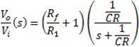
Robert L. Mott Dise�o de elementos de m�quinas

NORTON, Robert L. Dise�o de m�quinas Un enfoque integrado
EFICIENCIA Y SEGURIDAD EN EL DISE�O DE M�QUINAS
El dise�o de m�quinas no solo busca funcionalidad, sino tambi�n eficiencia y seguridad. Esto implica considerar aspectos como la manufacturabilidad, el costo y el mantenimiento a lo largo de la vida �til del sistema.
La implementaci�n de herramientas computacionales, como software de modelado y simulaci�n, ha revolucionado el dise�o al permitir iteraciones m�s r�pidas y precisas.
Sin embargo, sigue siendo fundamental el juicio del ingeniero para interpretar los resultados y realizar ajustes conforme sea necesario.
Este equilibrio entre an�lisis t�cnico, creatividad y experiencia pr�ctica es lo que define un dise�o exitoso, capaz de cumplir con los requisitos funcionales y econ�micos sin comprometer la seguridad del sistema.
1.2 Criterios de falla est�tica.
Las teor�as de falla est�tica buscan predecir la capacidad de los materiales para resistir esfuerzos bajo cargas aplicadas que no var�an con el tiempo. Entre los criterios m�s relevantes se encuentran la teor�a del esfuerzo cortante m�ximo y la teor�a de energ�a de distorsi�n, ambas particularmente �tiles para materiales d�ctiles.
La teor�a del esfuerzo cortante m�ximo supone que la falla ocurre cuando el esfuerzo cortante m�ximo en un material alcanza un valor cr�tico determinado por la resistencia a la fluencia. Este enfoque tiende a ser conservador, lo que implica dise�os m�s seguros pero tambi�n m�s costosos.
Por otro lado, la teor�a de energ�a de distorsi�n, desarrollada por Von Mises y Hencky, ofrece predicciones m�s precisas al relacionar las componentes principales del esfuerzo y su efecto combinado en el material. Esta teor�a es especialmente adecuada para materiales d�ctiles homog�neos donde las resistencias a la tracci�n y compresi�n son similares.
Para materiales fr�giles, donde la resistencia a la tensi�n es significativamente menor que la resistencia a la compresi�n, la teor�a de Coulomb-Mohr modificada resulta m�s apropiada. Esta teor�a toma en cuenta las diferencias entre estas resistencias y se enfoca en predecir fallas bajo esfuerzos de tracci�n que t�picamente dominan en estos materiales.
Un concepto clave en la evaluaci�n de fallas est�ticas es el "esfuerzo efectivo". Este representa un esfuerzo equivalente uniaxial que puede compararse directamente con los datos experimentales obtenidos de pruebas de tensi�n.
Aunque este m�todo simplifica el an�lisis, los dise�adores deben ser conscientes de sus limitaciones, especialmente en materiales no homog�neos o con grietas preexistentes que podr�an requerir an�lisis adicionales basados en la mec�nica de fractura.
1.3 Criterios de falla por fatiga.
Las fallas por fatiga se producen debido a la aplicaci�n de cargas c�clicas o din�micas, las cuales, incluso a niveles de esfuerzo mucho menores que la resistencia a la fluencia, pueden causar fractura tras un n�mero suficiente de ciclos.
Este fen�meno se divide generalmente en tres etapas: inicio de la grieta, propagaci�n de la grieta y fractura final. La primera etapa puede ser influenciada por defectos o concentradores de esfuerzo preexistentes, mientras que la segunda consume la mayor parte de la vida �til del componente.
Existen tres modelos principales para el an�lisis de fallas por fatiga: el m�todo esfuerzo-vida (S-N), el m�todo deformaci�n-vida (ε-N) y el enfoque de mec�nica de fractura lineal el�stica (LEFM).
El m�todo S-N se basa en curvas que relacionan el n�mero de ciclos hasta la falla con el esfuerzo aplicado y es ideal para reg�menes de ciclo alto.
En contraste, el m�todo ε-N aborda deformaciones pl�sticas acumulativas y es m�s adecuado para ciclos bajos.
Finalmente, el enfoque LEFM se emplea cuando las grietas preexistentes desempe�an un papel significativo en la fractura, permitiendo analizar su crecimiento bajo cargas c�clicas.
El dise�o para evitar fallas por fatiga incluye estrategias como reducir concentradores de esfuerzos mediante cambios en la geometr�a o mejorar la calidad del material para disminuir defectos microsc�picos.
Adem�s, es crucial considerar la resistencia a la fatiga corregida (Se), que toma en cuenta factores como el tama�o, la superficie y las condiciones del entorno.
2. Dise�o de flechas.
2.1 Dise�o de flechas por carga est�tica.
AN�LISIS AVANZADO
El dise�o estructural de flechas bajo condiciones de carga est�tica constituye una disciplina compleja dentro del campo de la ingenier�a mec�nica, que exige una comprensi�n profunda de la mec�nica de s�lidos deformables y de los mecanismos de falla asociados.
Este tipo de an�lisis no solo requiere la aplicaci�n rigurosa de teor�as el�sticas y criterios de falla, sino tambi�n la consideraci�n integral de aspectos geom�tricos, materiales, de manufactura y de condiciones de frontera.
En particular, el dise�ador debe integrar modelos constitutivos que representen adecuadamente el comportamiento mec�nico del material seleccionado, incorporando tambi�n los efectos de discontinuidades geom�tricas (como chaveteros, escalones, orificios, etc.) que pueden inducir concentraciones de tensi�n significativas.
Las flechas, componentes fundamentales en sistemas rotacionales, deben garantizar la transmisi�n eficaz de par torsional a lo largo de su eje longitudinal, mientras soportan cargas transversales y axiales inducidas por componentes acoplados (como engranes, poleas o volantes).
Adem�s, deben ser capaces de soportar las fluctuaciones din�micas que surgen por desbalances, variaciones de carga o condiciones de operaci�n transitorias, sin comprometer su integridad estructural.
En este sentido, la forma geom�trica circular se justifica por su distribuci�n uniforme de esfuerzos durante la rotaci�n, su facilidad de fabricaci�n mediante procesos como el torneado, y su compatibilidad con elementos est�ndar de acoplamiento.
El an�lisis estructural est�tico se apoya com�nmente en criterios cl�sicos de falla para materiales d�ctiles, tales como el criterio de Von Mises (energ�a de distorsi�n) o el de Tresca (esfuerzo cortante m�ximo), y para materiales fr�giles, se recurre a teor�as basadas en esfuerzos normales m�ximos.
Estos modelos permiten estimar la seguridad estructural bajo estados tensionales compuestos, y se implementan dentro de herramientas anal�ticas y num�ricas para la validaci�n de dise�o.
Las ecuaciones fundamentales para el c�lculo de esfuerzos en flechas circulares macizas sometidas a torsi�n y flexi�n son:
 .
.
Cuando existen cambios abruptos de geometr�a o detalles de maquinado, se deben considerar los factores de concentraci�n de tensi�n , que se obtienen a partir de datos experimentales, gr�ficas, o mediante simulaciones por elementos finitos.
2.2 Dise�o de flechas por fatiga.
2.3 Velocidades cr�ticas.
2.4 Sujeci�n y acoplamiento sobre flechas.
2.5 Gu�a general de dise�o de flechas.
3. Dise�o de engranes.
3.1 Descripci�n general: tipos y aspectos geom�tricos de los engranes.
3.2 An�lisis de fuerzas en engranes.
3.3 Dise�o de engranes rectos: ecuaciones de esfuerzo y resistencia por flexi�n.
3.4 Engranes helicoidales: ecuaciones de esfuerzo y resistencia por flexi�n.
3.5 Engranes c�nicos, rectos y helicoidales, transmisiones cruzadas.
3.6 Transmisiones con tornillo sinf�n-corona.
3.7 Consideraciones generales y pr�cticas en el dise�o de reductores de velocidad.
4. Dise�o de transmisiones con elementos flexibles.
4.1 Transmisiones con bandas y poleas.
4.2 Tipos de bandas, par�metros geom�tricos y fuerzas involucradas en una transmisi�n. Uso de los diferentes tipos de banda y selecci�n de elementos comerciales.
4.3 Transmisiones con cadena y catarinas.
4.4 Tipos de cadena, par�metros geom�tricos y fuerzas involucradas en una transmisi�n. Uso de los diferentes tipos de cadena y selecci�n de elementos comerciales.
4.5 Transmisi�n con cables de acero.
5. C�lculo y selecci�n de rodamientos.
5.1 Materiales y acabados.
5.2 Tipos de rodamientos (cojinetes de contacto rodante).
5.3 Cargas est�tica y din�mica en rodamientos.
5.4 Criterios para la selecci�n de rodamientos comerciales.
5.5 Teor�a hidrodin�mica y criterios de dise�o en cojinetes hidrodin�micos.
5.6 C�lculo de la carga y definici�n del lubricante.
6. Dise�o de resortes y muelles.
6.1 Tipos de resortes, modelado y consideraciones pr�cticas.
6.2 Resortes helicoidales, a compresi�n, extensi�n y torsi�n.
6.3 Dise�o de resortes helicoidales por fatiga.
6.4 Resortes de disco y resortes de fuerza constantes.
6.5 Resortes planos (muelles).
7. Frenos y embragues.
7.1 C�lculo de frenos de tambor.
7.2 C�lculo de frenos y embragues de disco y c�nicos.
7.3 C�lculo de frenos de cinta.
8. Bastidores y uniones.
8.1 Bastidores.
8.2 Uniones atornilladas.
8.3 Uniones soldadas.
9. Bibliograf�a.
AGUIRRE, Guillermo E. - Dise�o de elementos de m�quinas.
MOTT, Robert L. - Dise�o de elementos de m�quinas.
NORTON, Robert L. - Dise�o de m�quinas, Un enfoque integrado.
INGENIER�A ECON�MICA (1734)
Objetivo(s) del curso:
El alumno evaluar� problemas y situaciones que involucran asignaci�n de recursos econ�micos, considerando la importancia de los costos, los aspectos financieros y fiscales, los aspectos inflacionarios, el riesgo y la incertidumbre, desde el punto de vista econ�mico.
1. Introducci�n.
1.1 Significado de la evaluaci�n econ�mica.
FUNDAMENTOS
La necesidad de la Ingenier�a Econ�mica se encuentra motivada principalmente por el trabajo que llevan a cabo los ingenieros al analizar, sintetizar y obtener conclusiones en proyectos de cualquier envergadura. En otras palabras, la ingenier�a econ�mica es un punto medular en la toma de decisiones. Tales decisiones implican los elementos b�sicos de flujos de efectivo, tiempo y tasas de inter�s.
Fundamentalmente la ingenier�a econ�mica implica formular, estimar y evaluar los resultados econ�micos cuando existan alternativas disponibles para llevar a cabo un prop�sito definido. Otra forma de definir la ingenier�a econ�mica consiste en describirla como un conjunto de t�cnicas matem�ticas que simplifican las comparaciones econ�micas.
EVALUACI�N ECON�MICA
La evaluaci�n econ�mica constituye un pilar esencial en el �mbito de la ingenier�a financiera, la planificaci�n estrat�gica y la gesti�n de inversiones. Se define como un proceso anal�tico y metodol�gico que permite determinar la viabilidad y conveniencia de asignar recursos a determinados proyectos o iniciativas, tomando en cuenta m�ltiples dimensiones, como costos, beneficios, riesgos y externalidades socioecon�micas y ambientales. Su prop�sito central radica en la optimizaci�n de la eficiencia econ�mica, maximizando el rendimiento financiero y promoviendo la sostenibilidad de los proyectos a lo largo del tiempo.
Desde una perspectiva metodol�gica, la evaluaci�n econ�mica se fundamenta en el empleo de herramientas cuantitativas y cualitativas que permiten estructurar y analizar escenarios alternativos con el fin de seleccionar la opci�n m�s beneficiosa.
Dentro de las t�cnicas predominantes destacan el an�lisis de costo-beneficio, costo-efectividad y costo-utilidad, cada una con aplicaciones particulares seg�n la naturaleza del proyecto y su contexto operativo. En el �mbito de la ingenier�a econ�mica, este proceso resulta indispensable para la comparaci�n de m�ltiples alternativas de inversi�n, aplicando criterios de valoraci�n del dinero en el tiempo y considerando restricciones operacionales, regulatorias y estrat�gicas.
El alcance de la evaluaci�n econ�mica es amplio y abarca sectores como la gesti�n empresarial, la planificaci�n gubernamental y la formulaci�n de pol�ticas macroecon�micas. En el sector p�blico, por ejemplo, este tipo de evaluaci�n se emplea para justificar inversiones en infraestructura, salud y educaci�n, asegurando que los beneficios sociales superen los costos incurridos.
En el �mbito corporativo, la evaluaci�n econ�mica es clave para la toma de decisiones estrat�gicas relacionadas con la expansi�n de operaciones, la adopci�n de tecnolog�as emergentes y la optimizaci�n de la estructura financiera de las organizaciones.
1.2 Objetivo y alcances, inversiones.
OBJETIVO
El principal objetivo de la evaluaci�n econ�mica es proporcionar un marco anal�tico que permita cuantificar y valorar los efectos econ�micos de una inversi�n, con el prop�sito de fundamentar la toma de decisiones estrat�gicas.
A trav�s de este an�lisis, se busca determinar la viabilidad financiera de los proyectos y su capacidad para generar un retorno de inversi�n �ptimo en funci�n de los riesgos asumidos.
ALCANCES
El alcance de la evaluaci�n econ�mica var�a en funci�n de la complejidad del proyecto y de sus caracter�sticas estructurales.
A lo largo del ciclo de vida de una inversi�n, esta evaluaci�n se desarrolla en diversas fases, desde la concepci�n y formulaci�n inicial hasta la evaluaci�n ex post, en la cual se analizan los resultados obtenidos frente a las proyecciones establecidas.
EVALUACI�N ECON�MICA
Entre los principales componentes de una evaluaci�n econ�mica se incluyen:
� Estimaci�n de costos y beneficios: Se analizan en detalle los desembolsos necesarios y los flujos de ingresos esperados para evaluar la viabilidad financiera del proyecto.
� Indicadores de rentabilidad: Se emplean m�tricas fundamentales como el Valor Presente Neto (VPN), la Tasa Interna de Retorno (TIR) y el �ndice de Rentabilidad (IR) para medir el desempe�o financiero de la inversi�n.
� Gesti�n del riesgo econ�mico: Se identifican y modelan las incertidumbres asociadas a la inversi�n, incluyendo fluctuaciones del mercado, cambios en los costos operativos y factores externos como modificaciones regulatorias y avances tecnol�gicos.
� Impacto social y ambiental: En el contexto de las inversiones sostenibles, se incorporan m�tricas de responsabilidad social y se eval�an los efectos ambientales, asegurando la alineaci�n con est�ndares internacionales de desarrollo sustentable.
INVERSIONES
Las inversiones pueden clasificarse en distintas categor�as seg�n su naturaleza y objetivos estrat�gicos:
� Inversiones en capital fijo: Comprenden la adquisici�n de infraestructura, maquinaria y tecnolog�a de vanguardia con el prop�sito de mejorar la productividad.
� Inversiones en capital humano: Incluyen programas de capacitaci�n y desarrollo profesional destinados a incrementar la eficiencia del talento humano.
� Inversiones en I+D+i: Se enfocan en el desarrollo tecnol�gico y la generaci�n de conocimiento, factores determinantes en la competitividad empresarial.
� Inversiones estrat�gicas: Engloban fusiones, adquisiciones y expansi�n de mercados, con miras a fortalecer la posici�n corporativa y diversificar los ingresos.
La aplicaci�n rigurosa de estos criterios contribuye a que las decisiones de inversi�n se alineen con los objetivos estrat�gicos de las organizaciones, minimizando riesgos y optimizando los retornos financieros esperados.
1.3 Costos de operaci�n: no recuperables, de oportunidad y de capital.
COSTOS NO RECUPERABLES
Los costos no recuperables, tambi�n denominados costos hundidos, representan aquellos gastos que han sido incurridos y que no pueden ser revertidos ni recuperados, independientemente de la decisi�n que se adopte respecto a la inversi�n.
Ejemplos de estos costos incluyen estudios de factibilidad, desarrollo de prototipos o inversiones en infraestructura obsoleta.
Desde el punto de vista econ�mico, los costos no recuperables no deben ser considerados en la toma de decisiones futuras, ya que no afectan la rentabilidad marginal del proyecto.
Sin embargo, en la pr�ctica, muchas organizaciones incurren en la falacia del costo hundido, persistiendo en proyectos inviables debido a la inversi�n previa de recursos.
COSTOS DE OPORTUNIDAD
El costo de oportunidad se define como el valor de la mejor alternativa descartada al tomar una decisi�n de inversi�n. Representa el sacrificio econ�mico derivado de no optar por la opci�n m�s ventajosa disponible.
Por ejemplo, si una empresa enfrenta la disyuntiva entre expandir su capacidad productiva o invertir en una nueva l�nea de productos, el costo de oportunidad estar� representado por la rentabilidad que se habr�a obtenido con la opci�n no seleccionada. Incorporar este tipo de costos en la evaluaci�n econ�mica es esencial para optimizar la asignaci�n de recursos y mejorar la eficiencia en la toma de decisiones estrat�gicas.
COSTOS DE CAPITAL
El costo de capital hace referencia a la tasa de rendimiento m�nima que una empresa espera obtener sobre una inversi�n con el prop�sito de cubrir el costo del financiamiento. Este se compone de dos elementos fundamentales: el costo de la deuda y el costo del capital propio.
En el contexto del an�lisis econ�mico, el costo de capital se emplea como tasa de descuento para evaluar proyectos de inversi�n, facilitando la determinaci�n del valor presente de los flujos de caja futuros. Una correcta estimaci�n del costo de capital es crucial para garantizar la viabilidad financiera y la competitividad de la empresa en el mercado.
1.4 Proyecciones de los costos.
COSTOS
La proyecci�n de costos constituye una actividad esencial dentro de la planificaci�n financiera y la evaluaci�n de inversiones, ya que permite prever las necesidades de capital y estimar la rentabilidad de un proyecto en el largo plazo. Su precisi�n depende del m�todo empleado y de la calidad de los datos recopilados.
M�todos de Estimaci�n de Costos
1. Estimaci�n basada en datos hist�ricos: Utilizaci�n de registros previos para predecir costos futuros con base en experiencias anteriores.
2. Modelos param�tricos: Aplicaci�n de ecuaciones matem�ticas y t�cnicas econom�tricas para la proyecci�n de costos en funci�n de variables clave.
3. M�todo del factor: Uso de coeficientes espec�ficos aplicados a costos conocidos con el fin de realizar estimaciones m�s precisas.
4. An�lisis de sensibilidad: Evaluaci�n del impacto de variaciones en costos clave, lo que permite desarrollar estrategias de mitigaci�n de riesgos.
Factores Determinantes en la Proyecci�n de Costos
1. Inflaci�n: Afecta el poder adquisitivo y el valor real de los costos proyectados.
2. Tasas de inter�s: Impactan el costo del financiamiento y la valoraci�n de los proyectos de inversi�n.
3. Condiciones de mercado: Factores como la oferta y demanda pueden modificar significativamente las proyecciones de costos.
4. Innovaci�n tecnol�gica: La adopci�n de nuevas tecnolog�as puede generar eficiencias operativas y alterar la estructura de costos.
Una proyecci�n de costos rigurosa permite reducir la incertidumbre financiera, optimizar la asignaci�n de recursos y garantizar la viabilidad econ�mica del proyecto. La integraci�n de estos elementos fortalece la capacidad organizacional para gestionar riesgos y maximizar el valor econ�mico generado por las inversiones.
2. Valor del dinero en el tiempo.
2.1 Concepto de equivalencia.
2.2 Flujo de efectivo.
2.3 Inter�s simple y compuesto.
2.4 Factores de inter�s compuesto.
2.5 Inter�s nominal, efectivo y continuo.
2.6 Factores de inter�s continuo.
3. M�todos de evaluaci�n de alternativas.
3.1 Comparaci�n de alternativas por el m�todo del valor presente, de costo capitalizado y del costo anual uniforme equivalente.
3.2 Tasa interna de retorno.
3.3 An�lisis de beneficio-costo.
4. Evaluaci�n econ�mica despu�s de impuestos e inflaci�n.
4.1 Tipos de impuestos vigentes en M�xico. Lineamientos generales del impuesto sobre la renta.
4.2 C�lculo de ingreso gravable.
4.3 Flujo de efectivo despu�s de impuestos (analizando el efecto de la depreciaci�n).
4.4 Evaluaci�n econ�mica despu�s de impuestos.
4.5 Causas y efectos de la inflaci�n. Determinaci�n de la tasa de inflaci�n.
4.6 Tasa de inter�s real.
4.7 Gradientes geom�tricos.
4.8 Evaluaciones a precios corrientes y a precios constantes.
5. An�lisis de sensibilidad y riesgo.
5.1 La sensibilidad como instrumento para mejorar la toma de decisiones.
5.2 El valor presente y anual como funci�n de la tasa de inter�s considerada.
5.3 Factor de planta.
5.4 Punto de equilibrio.
5.5 Integraci�n de elementos estad�sticos y probabil�sticos.
5.6 Integraci�n de �ndices de precios.
6. Bibliograf�a.
BLANK, Leland, TARQUIN, Anthony - Ingenier�a econ�mica.
OCTAVO SEMESTRE
M�QUINAS EL�CTRICAS (0549)
Objetivo(s) del curso:
El alumno explicar� te�rica y pr�cticamente el comportamiento de las m�quinas el�ctricas. Al finalizar el curso, el alumno podr� seleccionar, adquirir, instalar, usar y mantener el equipo para una industria.
1. Introducci�n a los principios de la m�quina.
1.1 Leyes b�sicas del magnetismo: leyes de Ampere, ley de Faraday, ley de Lenz, principios de la conversi�n de energ�a.
INTRODUCCI�N
Las M�quinas El�ctricas son dispositivos fundamentales en la ingenier�a el�ctrica y electromec�nica. Su funcionamiento se basa en la interacci�n de campos magn�ticos y corrientes el�ctricas para convertir energ�a el�ctrica en mec�nica o viceversa. Estas conversiones de energ�a est�n regidas por principios f�sicos fundamentales que permiten su dise�o y operaci�n eficiente en una amplia variedad de aplicaciones industriales y dom�sticas. El magnetismo y la electricidad est�n �ntimamente relacionados, y su interacci�n es la base del funcionamiento de generadores, motores y transformadores. Algunas leyes fundamentales rigen estos principios:
LEY DE AMPERE
Formulada por Andr�-Marie Amp�re, establece que la corriente el�ctrica que circula por un conductor genera un campo magn�tico a su alrededor. La magnitud y direcci�n de este campo est�n determinadas por la siguiente expresi�n matem�tica:
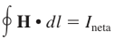
donde H es la intensidad del campo magn�tico producida por la corriente Ineta, y dl es el elemento diferencial a lo largo de la trayectoria de integraci�n. En unidades del SI, I se mide en amperes y H en amperes-vuelta por metro. La direcci�n del campo magn�tico generado se determina mediante la regla de la mano derecha: si el pulgar apunta en la direcci�n de la corriente, los dedos curvados indican la direcci�n del campo magn�tico.

LEY DE FARADAY
Michael Faraday descubri� que un campo magn�tico variable en el tiempo induce una corriente el�ctrica en un conductor cercano. Este fen�meno es la base de la generaci�n de electricidad en alternadores y transformadores. Su ecuaci�n fundamental es:
Donde:
� es la fuerza electromotriz inducida,
� es el flujo magn�tico,
� es el tiempo.
Esta ecuaci�n nos dice que una variaci�n del flujo magn�tico genera un voltaje inducido en un conductor, lo que permite la conversi�n de energ�a mec�nica en energ�a el�ctrica en dispositivos como generadores.
LEY DE LENZ
La ley de Lenz establece que la corriente inducida en un circuito cerrado por un campo magn�tico cambiante siempre se opone a la causa que la produce. Esto asegura la conservaci�n de la energ�a en los sistemas electromagn�ticos. Se expresa como:
El signo negativo en la ecuaci�n de Faraday es precisamente la manifestaci�n matem�tica de la ley de Lenz, indicando que el sentido de la corriente inducida se opone al cambio del flujo magn�tico.
PRINCIPIOS DE LA CONVERSI�N DE ENERG�A
La conversi�n de energ�a el�ctrica en energ�a mec�nica (o viceversa) se basa en la interacci�n de campos magn�ticos con conductores de corriente, generando fuerzas electromagn�ticas que impulsan el movimiento. Los principios clave de esta conversi�n incluyen:
Interacci�n de campo y corriente: Un conductor por el que circula corriente dentro de un campo magn�tico experimenta una fuerza electromagn�tica dada por la ley de Lorentz:
Donde es la fuerza, la carga, el campo el�ctrico, la velocidad de la carga y el campo magn�tico.
Trabajo y potencia electromagn�tica: La energ�a el�ctrica convertida en energ�a mec�nica se expresa como:
Donde es la potencia, el torque y la velocidad angular.
Aplicaciones pr�cticas: Estos principios son fundamentales en motores el�ctricos, generadores, transformadores y otros dispositivos electromagn�ticos utilizados en la industria y la vida cotidiana.
1.2 Campo magn�tico y circuitos magn�ticos.
1.3 Circuitos el�ctricos, fasores el�ctricos y plano complejo.
1.4 Corrientes: real o activa, reactiva y aparente en corriente alterna.
1.5 Tri�ngulo de potencias, factor de potencia.
2. Transformadores.
2.1 Generalidades.
2.2 Teor�a del transformador. Elementos que conforman un transformador.
2.3 Principio del funcionamiento u operaci�n.
2.4 Circuito el�ctrico equivalente del transformador.
2.5 Aspectos pr�cticos del circuito el�ctrico equivalente; regulaci�n de tensi�n o voltaje.
2.6 Conexiones de transformadores; polaridad.
2.7 Transformadores trif�sicos.
2.8 Transformadores de instrumentos.
2.9 Especificaciones del transformador.
3. Motores de inducci�n.
3.1 Generalidades y elementos que conforman el motor de inducci�n. Estator y rotor.
3.2 Principio de operaci�n del motor trif�sico. Campo magn�tico giratorio.
3.3 Efectos del campo magn�tico giratorio sobre las fases.
3.4 El rotor y su comportamiento el�ctrico.
3.5 Circuito el�ctrico equivalente; an�lisis y determinaci�n de sus par�metros.
3.6 Curvas par-velocidad.
3.7 Arrancadores.
3.8 Motores monof�sicos de inducci�n.
3.9 Especificaciones del motor de inducci�n, tipos de cubiertas.
3.10 Controladores de velocidad de estado s�lido.
3.11 Instalaci�n del motor (NORMAS t�cnicas de la Secretar�a de Econom�a).
4. M�quinas s�ncronas.
4.1 Generalidades.
4.2 Principio de operaci�n del generador, distinci�n entre generadores de C.D. y C.A.
4.3 Velocidad s�ncrona y sus elementos de control.
4.4 M�quinas de polos lisos y polos salientes.
4.5 Principio de operaci�n del motor s�ncrono.
4.6 Arranque del motor s�ncrono.
4.7 Control del factor de potencia, operaci�n como condensador s�ncrono.
4.8 Operaci�n dual.
5. M�quinas de corriente directa.
5.1 Generalidades.
5.2 Generador autoexcitado.
5.3 Regulaci�n de voltaje.
5.4 Principio de operaci�n del motor, fuerza contra-electromotriz.
5.5 Arranque del motor y tipos de arrancadores.
5.6 An�lisis del par y comportamiento de la velocidad, curvas par-velocidad.
5.7 Control de velocidad, m�todos tradicionales, uso de elementos de estado s�lido y dispositivos electr�nicos.
5.8 Principio de operaci�n del generador.
5.9 Fuerza electromotriz inducida.
5.10 Armadura, tipos de embobinados, conmutaci�n.
5.11 Reacci�n de armadura, control del eje neutro.
6. Motores para sistemas de control de movimiento (servomecanismos).
6.1 Definici�n de un sistema de control de movimiento.
6.2 Clasificaci�n del control de movimiento (circuitos abiertos y circuitos cerrados).
6.3 Selecci�n de motores, tipos principales, ventajas y desventajas b�sicas.
6.4 Servomotores con campo de im�n permanente y con escobillas, diferentes tipos.
6.5 Servomotores con campo de im�n permanente y sin escobillas.
6.6 Servomotores de operaci�n lineal.
6.7 Motores a pasos; operaci�n b�sica, motores de im�n permanente, motores de reluctancia y motores h�bridos.
7. Motores de uso especial.
7.1 Motores de polos sombreados.
7.2 Motores de reluctancia.
7.3 Motores de hist�resis.
7.4 Motores universales.
8. Bibliograf�a
CHAPMAN STEPHEN J. - M�quinas el�ctricas.
INSTRUMENTACI�N (0510)
Objetivo(s) del curso:
El alumno valorar� los elementos constituyentes de un sistema de medici�n a trav�s del desarrollo de esquemas de acondicionamiento de se�ales electr�nicas para sensores y actuadores de un sistema mecatr�nico.
1. Introducci�n.
1.1 Definici�n de instrumentaci�n en el contexto de los procesos y productos mecatr�nicos: instrumentaci�n, medici�n, transductor, sensor.
INSTRUMENTACI�N
La Instrumentaci�n en el contexto de los procesos industriales se refiere al conjunto de dispositivos y sistemas utilizados para medir, registrar, controlar o transmitir variables de un proceso. Estas variables incluyen presi�n, caudal, nivel, temperatura, entre otras, esenciales para garantizar el control y la automatizaci�n. Los elementos de instrumentaci�n forman parte de los lazos de control que supervisan y regulan estas variables. Es un componente clave en la automatizaci�n de procesos complejos, mejorando la precisi�n, la eficiencia y la seguridad operativa. Comprende los instrumentos, sistemas y m�todos para medir, monitorizar y controlar variables en un proceso.
MEDICI�N
Se refiere al proceso de obtener valores cuantitativos o cualitativos de una magnitud f�sica.
La medici�n es el proceso de determinar el valor cuantitativo de una variable de un sistema o proceso mediante el uso de instrumentos dise�ados espec�ficamente. Estos instrumentos proporcionan datos esenciales para evaluar el estado del sistema y realizar ajustes. La calidad de la medici�n depende de la exactitud, precisi�n y calibraci�n de los dispositivos utilizados. Adem�s, factores como las condiciones ambientales y la incertidumbre tambi�n afectan el resultado.
TRANSDUCTOR
Dispositivo que convierte una forma de energ�a o se�al en otra. Ejemplo: un micr�fono.
Los transductores reciben una se�al de entrada funci�n de una o m�s cantidades f�sicas y la convierten modificada o no a una se�al de salida, es decir, convierten la energ�a de entrada de una forma a energ�a de salida en otra forma. Son transductores, un rel�, un elemento primario, un transmisor, un convertidor PP/I (presi�n de proceso a intensidad), un convertidor PP/P (presi�n de proceso a se�al neum�tica), etc.
Un transductor es un dispositivo que convierte una forma de energ�a en otra para facilitar la medici�n o el control. Por ejemplo, un transductor de presi�n puede convertir la presi�n en una se�al el�ctrica proporcional que puede ser transmitida o procesada. Los transductores son fundamentales en la instrumentaci�n, ya que permiten la integraci�n entre el medio f�sico y los sistemas electr�nicos. Los tipos comunes incluyen piezoresistivos, capacitivos y �pticos, entre otros.
Dado que hay seis tipos de se�ales: mec�nicas, t�rmicas, magn�ticas, el�ctricas, �pticas y moleculares (qu�micas), cualquier dispositivo que convierta una se�al de un tipo en una se�al de otro tipo deber�a considerarse un transductor, y la se�al de salida podr�a ser de cualquier forma f�sica �til.
SENSOR
Tipo de transductor que detecta una variable f�sica o qu�mica y genera una se�al proporcional.
Un sensor es el elemento primario de un sistema de medici�n que detecta y responde a una variable f�sica o qu�mica, como temperatura, presi�n, o flujo. Los sensores transforman estas variables en se�ales que pueden ser interpretadas por otros dispositivos. Algunos sensores trabajan de manera aut�noma, mientras que otros se integran con transductores para procesar y transmitir la informaci�n. Existen diversas tecnolog�as de sensores, incluyendo resistivas, inductivas, capacitivas y de semiconductores, dependiendo del tipo de variable a medir.
Los sensores captan el valor de la variable de proceso y env�an una se�al de salida predeterminada. El sensor puede formar parte de otro instrumento (por ejemplo, un transmisor) o bien puede estar separado. Tambi�n se denomina detector o elemento primario.
Un sensor es un dispositivo que a partir de la energ�a del medio donde se mide, da una se�al de salida transducible que es funci�n de la variable medida.
El sensor y transductor se emplean a veces como sin�nimos, pero el sensor sugiere un significado m�s extenso: la ampliaci�n de los sentidos para adquirir un conocimiento de cantidades f�sicas que, por su naturaleza o tama�o, no pueden ser percibidas directamente por los sentidos. Transductor, en cambio, sugiere que la se�al de entrada y la de salida no deben ser homog�neas. Para el caso en que lo fueran se propuso el t�rmino �modificador�, pero no ha encontrado aceptaci�n.
La distinci�n entre transductor de entrada (se�al f�sica/se�al el�ctrica) y transductor de salida (se�al el�ctrica/presentaci�n) est� pr�cticamente en desuso. La tendencia actual, particularmente en rob�tica, es emplear el t�rmino sensor (o captador en bibliograf�a francesa) para designar el transductor de entrada, y el t�rmino actuador o accionamiento para designar el transductor de salida. Los primeros pretenden la obtenci�n de informaci�n, mientras que los segundos buscan la conversi�n de energ�a.
1.2 La instrumentaci�n: simbolog�a, normatividad y sus aplicaciones.
SIMBOLOG�A
La simbolog�a en instrumentaci�n es una representaci�n gr�fica est�ndar de dispositivos, lazos, funciones y sistemas en procesos industriales. Su objetivo principal es facilitar la comprensi�n y documentaci�n de los sistemas de control para ingenieros, t�cnicos y operadores.
Normas y sistemas simb�licos:
ISA-S5.1-84 (R-1992): Define los s�mbolos de los instrumentos y sus interacciones en diagramas de tuber�as e instrumentaci�n (P&ID). Incluye c�digos alfanum�ricos que indican:
� Variable medida: T (temperatura), P (presi�n), F (flujo), etc.
� Funci�n: I (indicador), R (registrador), C (controlador), etc.
� Lazo funcional: N�mero �nico asignado a cada sistema, como en TIC-101 (Temperatura, Indicador-Controlador, Lazo 101).
Representaciones gr�ficas comunes:
� C�rculos: Indicadores o controladores.
� Cuadrados: Computadoras o PLCs.
� L�neas discontinuas: Comunicaci�n el�ctrica.
� L�neas continuas: L�neas neum�ticas o hidr�ulicas.
NORMATIVIDAD
Las normas son esenciales para garantizar la compatibilidad, seguridad y calidad en los sistemas de instrumentaci�n.
Normas destacadas
ISA-S5.2-76 (R-1992)
Est�ndar para diagramas funcionales binarios, que detalla la interacci�n entre sistemas el�ctricos, electr�nicos y mec�nicos.
ANSI/ISA-50.00.01
Define interfaces de se�ales y compatibilidad entre dispositivos industriales.
ISO 9000:2000
Enfocada en la gesti�n de calidad. Asegura que los instrumentos cumplan requisitos espec�ficos, desde dise�o hasta mantenimiento.
ISA S37.3:
Relaci�n de precisi�n entre patrones de calibraci�n y equipos calibrados (4:1).
Seguridad intr�nseca y funcional
Protocolo para �reas peligrosas y control de energ�a de ignici�n. Uso de barreras Zener y galv�nicas.
APLICACIONES
La Instrumentaci�n Industrial se aplica ampliamente en procesos como la regulaci�n de presi�n, temperatura, caudal y nivel en sectores como energ�a, alimentos, qu�micos y m�s.
Aplicaciones en procesos industriales:
� Calderas de vapor: Control de combusti�n y nivel, seguridad de llama.
� Columnas de destilaci�n: Mantenimiento de temperaturas precisas y control de flujo.
� Intercambiadores de calor: Gesti�n de transferencia de calor para maximizar eficiencia.
� Control avanzado: Ejemplo: sistemas predictivos y adaptativos.
Tendencias modernas:
� Implementaci�n de redes neuronales, l�gica difusa y sistemas expertos.
� Automatizaci�n distribuida con DCS y control por computadora.
2. Conceptos fundamentales de instrumentaci�n y de los sistemas de medici�n.
2.1 Antecedentes sobre la representaci�n y manejo de datos experimentales.
REPRESENTACI�N
La representaci�n y manejo de datos experimentales incluyen procesos que permiten analizar y presentar resultados medidos con herramientas como tablas, gr�ficas y f�rmulas que se interpretan seg�n la precisi�n y exactitud esperadas en mediciones industriales.
MANEJO DE DATOS EXPERIMENTALES
2.2 Definiciones: rango de medici�n, alcance, error, precisi�n, zona muerta, sensibilidad, repetitividad, hist�resis y otras.
DEFINICIONES
Rango de medici�n: Tambi�n llamado Campo de Medida; Es el espectro o conjunto de valores entre los l�mites inferior y superior de la capacidad de medici�n del instrumento.
Otro t�rmino derivado es el de din�mica de medida o rangeabilidad (rangeability), que es el cociente entre el valor de medida superior e inferior de un instrumento.
Alcance (span): Diferencia algebraica entre los valores superior e inferior del rango del campo de medida del instrumento.
Error: Diferencia entre el valor medido y el valor te�rico o verdadero del campo de medida del instrumento.

El error absoluto es:

El error relativo representa la calidad de la medida y es:

Si el proceso est� en condiciones de r�gimen permanente existe el llamado error est�tico. En condiciones din�micas el error var�a considerablemente debido a que los instrumentos tienen caracter�sticas comunes a los sistemas f�sicos: absorben energ�a del proceso y esta transferencia requiere cierto tiempo para ser transmitida, lo cual da lugar a retardos en la lectura del aparato. Siempre que las condiciones sean din�micas, existir� en mayor o menor grado el llamado error din�mico (diferencia entre el valor instant�neo y el indicado por el instrumento): su valor depende del tipo de fluido del proceso, de su velocidad, del elemento primario (termopar, bulbo y capilar), de los medios de protecci�n (vaina), etc. El error medio del instrumento es la media aritm�tica de los errores en cada punto de la medida determinados para todos los valores crecientes y decrecientes de la variable medida.
Cuando una medici�n se realiza con la participaci�n de varios instrumentos, colocados unos a continuaci�n de otros, el valor final de la medici�n estar� constituido por los errores inherentes a cada uno de los instrumentos. Si el l�mite del error relativo de cada instrumento es � a, � b, � c, � d, etc., el m�ximo error posible en la medici�n ser� la suma de los valores anteriores, es decir:
C�mo es improbable que todos los instrumentos tengan al mismo tiempo su error m�ximo en todas las circunstancias de la medida, suele tomarse como error total de una medici�n la ra�z cuadrada de la suma algebraica de los cuadrados de los errores m�ximos de los instrumentos, es decir, la expresi�n:
Precisi�n: La precisi�n (precision) es la cualidad de un instrumento por la que tiende a dar lecturas muy pr�ximas unas a otras, es decir, es el grado de dispersi�n de estas. Un instrumento puede tener una pobre exactitud, pero una gran precisi�n.
Por lo tanto, los instrumentos de medida estar�n dise�ados por los fabricantes para que sean precisos, y como peri�dicamente se descalibran, deben reajustarse para que sean exactos. A se�alar que el t�rmino precisi�n es sin�nimo de repetibilidad.
Zona muerta: Es el campo de valores de la variable que no hace variar la indicaci�n o la se�al de salida del instrumento, es decir, que no produce su respuesta. Viene dada en tanto por ciento del alcance de la medida.
Sensibilidad: Es la raz�n entre el incremento de la se�al de salida o de la lectura y el incremento de la variable que lo ocasiona, despu�s de haberse alcanzado el estado de reposo. Por ejemplo, si en un transmisor electr�nico de 0-10 bar, la presi�n pasa de 5 a 5,5 bar y la se�al de salida de 11,9 a 12,3 mA c.c., la sensibilidad es el cociente:

Hay que se�alar que no debe confundirse la sensibilidad con el t�rmino de zona muerta; son definiciones b�sicamente distintas que antes era f�cil confundir cuando la definici�n inicial de la sensibilidad era �valor m�nimo en que se ha de modificar la variable para apreciar un cambio medible en el �ndice o en la pluma de registro de los instrumentos�.
Repetitividad: Es la capacidad de reproducci�n de las posiciones de la pluma o del �ndice o de la se�al de salida del instrumento, al medir repetidamente valores id�nticos de la variable en las mismas condiciones de servicio y en el mismo sen� do de variaci�n, recorriendo todo el campo. La repetibilidad es sin�nimo de precisi�n. A mayor repetibilidad, es decir, a un menor valor num�rico, los valores de la indicaci�n o se�al de salida estar�n m�s concentrados, es decir, habr� menos dispersi�n y una mayor precisi�n.
La repetibilidad se expresa en tanto por ciento del alcance; un valor representativo es el de � 0,1%. N�tese que el t�rmino repetibilidad no incluye la hist�resis. Para determinarla, el fabricante comprueba la diferencia entre el valor verdadero de la variable y la indicaci�n o se�al de salida del instrumento recorriendo todo el campo, y partiendo, para cada determinaci�n, desde el valor m�nimo del campo de medida.
La repetibilidad viene dada por la f�rmula:
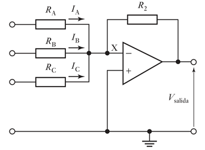
Hist�resis: (hysteresis) es la diferencia m�xima que se observa en los valores indicados por el �ndice o la pluma del instrumento o la se�al de salida para el mismo valor cualquiera del campo de medida, cuando la variable recorre toda la escala en los dos sentidos, ascendente y descendente.
Se expresa en tanto por ciento del alcance de la medida. Por ejemplo: si en un term�metro de 0-100%, para el valor de la variable de 40 �C, la aguja marca 39,9 �C al subir la temperatura desde 0 �C, e indica 40,1 �C al bajar la temperatura desde 100 �C, el valor de la hist�resis es de:
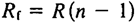
Fiabilidad: Probabilidad de que un instrumento se mantenga dentro de l�mites de error espec�ficos a lo largo del tiempo y bajo condiciones determinadas.
OTROS T�RMINOS
Campo de medida con elevaci�n de cero: El valor cero de la variable medida es mayor que el valor inferior del campo de medida. Ejemplo: De -10�C a 30�C.
Campo de medida con supresi�n de cero: El valor cero de la variable medida es menor que el valor inferior del campo de medida. Ejemplo: De 20�C a 60�C.
Elevaci�n de cero: Es la cantidad en que el valor cero supera el valor inferior del campo de medida. Se expresa en unidades de la variable o en porcentaje del alcance. Ejemplo: 10�C en un campo de -10�C a 30�C, es decir, (10/40) x 100 = 25%.
Supresi�n de cero: Es la cantidad en que el valor inferior del campo supera el valor cero. Se expresa en unidades de la variable o en porcentaje del alcance. Ejemplo: 20�C en un campo de 20�C a 60�C, es decir, (20/40) x 100 = 50%.
Deriva: Variaci�n en la se�al de salida con el tiempo, manteniendo constantes la variable medida y las condiciones ambientales. Se considera la deriva de cero (variaci�n para el valor cero de la medida) y la deriva t�rmica de cero (debida a cambios de temperatura). La deriva se expresa como porcentaje de la se�al de salida total a la temperatura ambiente, por unidad o intervalo de variaci�n de temperatura. Ejemplo: Deriva t�rmica de cero de 0.2% del alcance durante 1 mes.
Resoluci�n: Menor diferencia de valor que el instrumento puede distinguir. En instrumentos anal�gicos: Depende del operador y de la escala. En instrumentos digitales: Es el cambio de valor que modifica el d�gito menos significativo. Ejemplo: Un indicador digital de temperatura que muestra 531.01�C, el d�gito menos significativo es el �ltimo 1. Luego, si la temperatura aumenta a 531,02 �C, la resoluci�n es de ((531,02 - 531,01) / 100) = 0,00001%, lo cual no significa en absoluto que esta sea la exactitud del instrumento.
Resoluci�n infinita: Capacidad de proporcionar una se�al de salida progresiva y continua en todo el campo de trabajo del instrumento.
Trazabilidad: Propiedad del resultado de las mediciones efectuadas con un instrumento o con un patr�n, tal que puede relacionarse con patrones nacionales o internacionales, mediante una cadena ininterrumpida de comparaciones y con todas las incertidumbres determinadas.
Ruido: Cualquier perturbaci�n el�ctrica o se�al accidental no deseada que modifica la transmisi�n, indicaci�n o registro de los datos deseados. Un caso especial es la interferencia de radiotransmisores (Radio Frequency Interference). Puede expresarse en unidades de la se�al de salida o en tanto por ciento del alcance.
Linealidad: La aproximaci�n de una curva de calibraci�n a una l�nea recta especificada.
Linealidad basada en puntos: Falta de linealidad expresada en forma de desviaci�n m�xima con relaci�n a una l�nea recta que pasa a trav�s de los puntos dados correspondientes al cero y al 100% de la variable medida.
Temperatura de servicio: Campo de temperaturas en el cual se espera que trabaje el instrumento dentro de unos l�mites de error especificados.
Vida �til de servicio: Tiempo m�nimo especificado durante el cual se aplican las caracter�sticas de servicio continuo e intermitente del instrumento sin que se presenten cambios en su comportamiento, m�s all� de tolerancias especificadas.
Reproductibilidad: Capacidad de reproducci�n de un instrumento de las medidas repetitivas de la lectura o se�al de salida para el mismo valor de la variable medida alcanzado en ambos sentidos, en las mismas condiciones de servicio y a lo largo de un per�odo de tiempo determinado. Por ejemplo, un valor representativo ser�a � 0.2% del alcance de la lectura o se�al de salida a lo largo de un per�odo de 30 d�as.
Respuesta frecuencial: Variaci�n con la frecuencia de la relaci�n de amplitudes se�al de salida/variable medida (y de la diferencia de fases entre la salida y la variable medida) para una medida de variaci�n senoidal aplicada a un instrumento dentro de un campo establecido de frecuencias de la variable medida. Se especifica usualmente como "dentro de �...% de ... a ... Hz".
2.3 Clases de instrumentos: en funci�n del instrumento, en funci�n de la variable de proceso.
CLASES DE INSTRUMENTOS
Los instrumentos de medici�n y de control son relativamente complejos y su funci�n puede comprenderse bien si est�n incluidos dentro de una clasificaci�n adecuada. Como es l�gico, pueden existir varias formas para clasificar los instrumentos, cada una de ellas con sus propias ventajas y limitaciones.
Se considerar�n dos clasificaciones b�sicas: la primera relacionada con la funci�n del instrumento y la segunda con la variable del proceso.
EN FUNCI�N DEL INSTRUMENTO
Instrumentos ciegos: Son aquellos que no tienen indicaci�n visible de la variable. Hay que hacer notar que son ciegos los instrumentos de alarma, tales como presostatos y termostatos (interruptores de presi�n y temperatura respectivamente) que poseen una escala exterior con un �ndice de selecci�n de la variable, ya que s�lo ajustan el punto de disparo del interruptor o conmutador al cruzar la variable el valor seleccionado. Son tambi�n instrumentos ciegos los transmisores de caudal, presi�n, nivel y temperatura sin indicaci�n.

Instrumentos indicadores: Disponen de un �ndice y de una escala graduada en la que puede leerse el valor de la variable. Seg�n la amplitud de la escala se dividen en indicadores conc�ntricos y exc�ntricos. Existen tambi�n indicadores digitales que muestran la variable en forma num�rica con d�gitos.

Instrumentos registradores: Registran con trazo continuo o a puntos la variable, y pueden ser circulares o de gr�fico rectangular o alargado seg�n sea la forma del gr�fico. Los registradores de gr�fico circular suelen tener el gr�fico de 1 revoluci�n en 24 horas mientras que en los de gr�fico rectangular la velocidad normal del gr�fico es de unos 20 mm/hora.
A se�alar que los registradores sin papel (paperless recorders) tienen un coste de operaci�n reducido, una mejor exactitud y pueden incorporar funciones de captura de datos, lo que los hace ideales para procesos discontinuos (batch process). Se pueden conectar a una red LAN, lo que permite un f�cil acceso de los datos a los varios departamentos de la empresa.

Los sensores captan el valor de la variable de proceso y env�an una se�al de salida predeterminada. El sensor puede formar parte de otro instrumento (por ejemplo, un transmisor) o bien puede estar separado. Tambi�n se denomina detector o elemento primario por estar en contacto con la variable, con lo que utiliza o absorbe energ�a del medio controlado para dar, al sistema de medici�n, una indicaci�n en respuesta a la variaci�n de la variable. El efecto producido por el elemento primario puede ser un cambio de presi�n, fuerza, posici�n, medida el�ctrica, etc.

Los transmisores captan la variable de proceso a trav�s del elemento primario y la transmiten a distancia en forma de se�al neum�tica de margen 3 a 15 psi (libras por pulgada cuadrada) o electr�nica de 4 a 20 mA de corriente continua o digital. La se�al neum�tica de 3 a 15 psi equivale a 0,206-1,033 bar por lo cual, tambi�n se emplea la se�al en unidades m�tricas 0,2 a 1 bar.
Asimismo, se emplean se�ales electr�nicas de 1 a 5 mA c.c., de 10 a 50 mA c.c. y de 0 a 20 mA c.c., si bien la se�al normalizada es de 4-20 mA c.c.
La se�al digital es la m�s ampliamente utilizada y es apta directamente para las comunicaciones, ya que u� liza protocolos est�ndar.

Los transductores reciben una se�al de entrada funci�n de una o m�s cantidades f�sicas y la convierten modificada o no a una se�al de salida, es decir, convierten la energ�a de entrada de una forma a energ�a de salida en otra forma. Son transductores, un rel�, un elemento primario, un transmisor, un convertidor PP/I (presi�n de proceso a intensidad), un convertidor PP/P (presi�n de proceso a se�al neum�tica), etc.
Los convertidores son aparatos que reciben una se�al de entrada neum�tica (3-15 psi) o electr�nica (4-20 mA c.c.) procedente de un instrumento y despu�s de modificarla (convertirla) env�an la resultante en forma de se�al de salida est�ndar. Ejemplo: un convertidor P/I (se�al de entrada neum�tica a se�al de salida electr�nica, un convertidor I/P (se�al de entrada el�ctrica a se�al de salida neum�tica).
Conviene se�alar que a veces se confunde convertidor con transductor. Este �ltimo t�rmino es general y no debe aplicarse a un aparato que convierta una se�al de instrumentos.
El elemento final de control recibe la se�al del controlador y modifica su posici�n variando el caudal de fluido.

Los receptores reciben las se�ales procedentes de los transmisores y las indican o registran. Los receptores controladores env�an otra se�al de salida normalizada a los valores ya indicados 3-15 psi en se�al neum�tica o 4-20 mA c.c. en se�al electr�nica, que act�an sobre el elemento final de control.
Los controladores comparan la variable controlada (presi�n, nivel, temperatura) con un valor deseado y ejercen una acci�n correctiva de acuerdo con la desviaci�n. La variable controlada la pueden recibir directamente como controladores locales o bien indirectamente en forma de se�al neum�tica, electr�nica o digital procedente de un transmisor.

En el control el�ctrico el elemento suele ser una v�lvula motorizada que efect�a su carrera completa accionada por un servomotor el�ctrico.
En el control electr�nico y, en particular, en regulaci�n de temperatura de hornos el�ctricos pueden utilizarse rectificadores de silicio (tristores). Estos se comportan esencialmente como bobinas de impedancia variable y var�an la corriente de alimentaci�n de las resistencias del horno, en la misma forma en que una v�lvula de control cambia el caudal de fluido en una tuber�a.
Las se�ales neum�ticas (3-15 psi o 0,2-1 bar) y electr�nica (4-20 mA c.c.) permiten el intercambio entre instrumentos de la planta. En los instrumentos de se�al de salida digital (transmisores, controladores) las se�ales son propias de cada suministrador, si bien estas se�ales est�n normalizadas por parte de las firmas de instrumentos de control (Bailey, Foxboro, Honeywell, Rosemount y otros) que aplican un lenguaje o protocolo de comunicaciones (HART, Profibus, y FOUNDATION(TM) fieldbus).
El comit� ISA 103 con la norma de interfase entre instrumentos de campo y los sistemas de control IEC-65C/398/NP, se integra en lo que se llama FDT (Field Device Tool) como sistema universal de automatizaci�n de las plantas.
Otras normalizaciones se realizan en procesos discontinuos. La norma NAMUR fue creada por empresas qu�micas y farmac�uticas tales como AK20, BASF, BAYER, CIBA-GEIGY, etc., que definen la misma programaci�n para f�bricas distintas con el fin de obtener productos con la misma calidad.
EN FUNCI�N DE LA VARIABLE DE PROCESO
Expresados en funci�n de la variable del proceso, los instrumentos se dividen en instrumentos de caudal, nivel, presi�n, temperatura, densidad y peso espec�fico, humedad y punto de roc�o, viscosidad, posici�n, velocidad, pH, conductividad, frecuencia, fuerza, turbidez, etc.
Esta clasificaci�n corresponde espec�ficamente al tipo de las se�ales medidas siendo independiente del sistema empleado en la conversi�n de la se�al de proceso. De este modo, un transmisor electr�nico o digital de temperatura del tipo de bulbo y capilar es un instrumento de temperatura a pesar de que la medida se efect�a convirtiendo las variaciones de presi�n del fluido que llena el bulbo y el capilar; el aparato receptor de la se�al electr�nica o digital del transmisor anterior es un instrumento de presi�n, caudal, nivel, o cualquier otra variable, seg�n fuera la se�al medida por el transmisor correspondiente; un registrador potenciom�trico puede ser un instrumento de temperatura, de conductividad o de velocidad, seg�n sean las se�ales medidas por los elementos primarios de termopar, electrodos o d�namo.
Asimismo, esta clasificaci�n es independiente del n�mero y tipo de transductores existentes entre el elemento primario y el instrumento final. As� ocurre en el caso de un lazo de control de nivel compuesto por un transmisor digital de nivel, un receptor controlador con salida de 4-20 mA c.c., un convertidor intensidad-presi�n (I/P) que transforma la se�al de 4-20 mA c.c. a neum�tica de 3-15 psi y la v�lvula neum�tica de control; todos estos instrumentos se consideran de nivel.
En la designaci�n del instrumento se utilizan, en el lenguaje com�n, las dos clasificaciones expuestas anteriormente. Y de este modo, se consideran instrumentos tales como transmisores ciegos de presi�n, controladores registradores de temperatura, receptores indicadores de nivel, receptores controladores registradores de caudal, etc.
Los instrumentos se consideran instrumentos de campo y de panel. La primera designaci�n incluye los instrumentos locales situados en el proceso o en sus proximidades (es decir, en tanques, tuber�as, secadores, etc.), mientras que la segunda se refiere a los instrumentos montados en paneles, armarios o pupitres situados en zonas aisladas o en zonas del proceso.
2.4 Interfaces humano-m�quina.
INTERFACES HUMANO M�QUINA (HMI)
Las interfaces evolucionan para optimizar la interacci�n entre el operador y los instrumentos, incorporando gr�ficos intuitivos, alarmas inteligentes y sistemas de simulaci�n para capacitaci�n operativa.
3. Transductores.
3.1 Concepto de transductor y sensor.
TRANSDUCTOR
Dispositivo que convierte una se�al de entrada basada en una cantidad f�sica (como presi�n, temperatura, etc.) en una se�al de salida, que puede ser el�ctrica, neum�tica o mec�nica. Ejemplos incluyen elementos primarios, transmisores y convertidores.
Sensor
Tipo de transductor que detecta directamente una variable f�sica o qu�mica y genera una respuesta proporcional a dicha variable, como una se�al el�ctrica o mec�nica.
3.2 Transductores de variables mec�nicas a variables el�ctricas.
Estos dispositivos convierten se�ales mec�nicas como presi�n o desplazamiento en se�ales el�ctricas. Ejemplos incluyen:
� Transductores resistivos: Var�an su resistencia seg�n el desplazamiento o presi�n aplicados.
� Transductores de inductancia variable (LVDT): Utilizan un transformador diferencial lineal para medir desplazamientos.
� Transductores capacitivos: Basados en cambios en la capacitancia al mover las placas por presi�n
3.3 Transductores de variables el�ctricas.
Incluyen dispositivos como amplificadores y acondicionadores que adaptan se�ales el�ctricas para su procesamiento en sistemas de control y medici�n.
3.4 Transductores de variables hidr�ulicas a variables el�ctricas.
Utilizan principios como la variaci�n de presi�n hidr�ulica para generar se�ales el�ctricas proporcionales.
3.5 Transductores de variables t�rmicas a variables el�ctricas.
Ejemplos incluyen termopares y termistores, que generan se�ales el�ctricas en respuesta a cambios de temperatura.
3.6 Transductores de variables qu�micas a variables el�ctricas (pH, conductividad, concentraci�n de ox�geno, etc).
Dise�ados para medir par�metros qu�micos como pH, conductividad y concentraci�n de ox�geno. Estos transductores convierten las propiedades qu�micas en se�ales el�ctricas utilizables.
4. Acondicionamiento de entradas y salidas.
4.1 Acondicionamiento electr�nico de se�ales: acondicionamiento de amplitud y de frecuencia (filtrado) y compensaci�n de se�ales.
� Acondicionamiento de amplitud: Ajuste de niveles de se�al para compatibilidad entre sensores y sistemas de control.
� Acondicionamiento de frecuencia (filtrado): Eliminaci�n de ruido o componentes no deseados mediante filtros paso bajo, paso alto o paso banda.
� Compensaci�n de se�ales: Correcci�n de errores o desviaciones en se�ales provocadas por factores externos.
4.2 Etapas de potencia: salidas ON/FF y anal�gicas (transistorizadas, integradas) y c�lculo de disipadores.
� Salidas ON/OFF: Controlan actuadores como rel�s o v�lvulas bas�ndose en un estado de encendido o apagado.
� Salidas anal�gicas: Utilizan transistores o circuitos integrados para generar se�ales proporcionales a una entrada de control.
� C�lculo de disipadores: Determinaci�n del tama�o adecuado para manejar el calor generado por los componentes electr�nicos en las etapas de potencia.
4.3 Actuadores.
Dispositivos que convierten se�ales el�ctricas en acciones mec�nicas. Ejemplos incluyen:
� Actuadores neum�ticos: Usados en sistemas industriales.
� Actuadores el�ctricos: Utilizados en aplicaciones precisas como rob�tica.
� Actuadores hidr�ulicos: Para sistemas que requieren alta potencia y precisi�n.
4.4 El amplificador de instrumentaci�n para acondicionamiento de se�ales peque�as.
� Manejar se�ales peque�as provenientes de sensores.
� Proporcionar una alta ganancia con baja distorsi�n.
� Ejemplo t�pico: Circuitos con amplificadores operacionales configurados para medici�n precisa en condiciones industriales.
5. Caracterizaci�n de sensores comerciales.
5.1 Clasificaci�n y funcionamiento de los sensores: por su salida y por las variables a medir.
Los sensores pueden clasificarse seg�n:
Por su salida:
� Anal�gica: salida continua proporcional a la variable medida.
� Digital: salida discreta, como pulsos o se�ales binarias.
Por las variables a medir: presi�n, temperatura, caudal, nivel, posici�n, etc., dependiendo del principio f�sico o qu�mico empleado en la medici�n.
5.2 Par�metros de selecci�n: variable a medir, rango de medida, rango de salida, precisi�n de la medida, condiciones f�sicas del medio y las caracter�sticas din�micas de operaci�n.
Los criterios para seleccionar un sensor adecuado incluyen:
1. Variable a medir: Identificaci�n precisa de la magnitud f�sica o qu�mica de inter�s.
2. Rango de medida: Valores m�nimo y m�ximo que el sensor puede detectar con exactitud.
3. Rango de salida: Compatibilidad con los sistemas de adquisici�n de datos o controladores.
4. Precisi�n: Grado de exactitud requerido en la medici�n.
5. Condiciones f�sicas del medio: Consideraciones como temperatura, humedad, vibraciones o corrosi�n.
6. Caracter�sticas din�micas: Respuesta temporal y frecuencia m�xima del sensor ante cambios en la variable medida.
5.3 �reas de aplicaci�n.
� Industrial: Sensores para monitorear y controlar procesos como producci�n, calidad y seguridad.
� M�dica: Sensores para medir signos vitales como presi�n arterial o niveles de ox�geno.
� Automotriz: Sensores en veh�culos para sistemas de frenado, control de emisiones y m�s.
6. Bibliograf�a.
CREUS, A. - Instrumentaci�n industrial.
CONTROL AUTOM�TICO (0551)
Objetivo(s) del curso:
El alumno distinguir� los elementos constituyentes de un sistema de control y aplicar� algunas teor�as de control de variables f�sicas.
1. Introducci�n.
1.1 Breve historia del control y sus aplicaciones en la industria.
TEOR�A DEL CONTROL
El primer trabajo significativo en Control Autom�tico es el Regulador de velocidad centr�fuga de James Watt, fue dise�ado para regular la velocidad de una m�quina de vapor en el siglo XVIII.
El principio del funcionamiento del regulador de velocidad de Watt para una m�quina se basa en la cantidad de combustible que se admite en la m�quina se ajusta de acuerdo con la diferencia entre la velocidad de la m�quina que se pretende y la velocidad real.
La secuencia de acciones puede describirse del modo siguiente: el regulador de velocidad se ajusta de modo que, a la velocidad deseada, no fluya aceite a presi�n en ning�n lado del cilindro de potencia. Si la velocidad real cae por debajo del valor deseado debido a una perturbaci�n, la disminuci�n de la fuerza centr�fuga del regulador de velocidad provoca que la v�lvula de control se mueva hacia abajo, aportando m�s combustible, y la velocidad del motor aumenta hasta alcanzar el valor deseado. Por otra parte, si la velocidad del motor aumenta por encima del valor deseado, el incremento en la fuerza centr�fuga del regulador provoca que la v�lvula de control se mueva hacia arriba. Esto disminuye el suministro de combustible, y la velocidad del motor se reduce hasta alcanzar el valor deseado.
En este sistema de control de velocidad, la planta (el sistema controlado) es la m�quina y la variable controlada es la velocidad de esta. �La diferencia entre la velocidad deseada y la velocidad real es la se�al de error.
La se�al de control (la cantidad de combustible) que se va a aplicar a la planta (la m�quina) es la se�al de actuaci�n. La entrada externa que se aplica para. alterar la variable controlada es la perturbaci�n. Un cambio inesperado en la carga es una perturbaci�n.
Aportes Tempranos en la Teor�a del Control
Minorsky (1922) y la Estabilidad en Controladores Autom�ticos
En 1922, el ingeniero ruso Nicolai Minorsky trabaj� en sistemas de control autom�tico aplicados a la navegaci�n de embarcaciones. Su investigaci�n demostr� que la estabilidad de un sistema pod�a determinarse a partir de las ecuaciones diferenciales que describen su comportamiento din�mico. Este enfoque fue un gran avance, ya que permiti� analizar matem�ticamente la estabilidad de sistemas de control sin necesidad de realizar pruebas emp�ricas extensas.
Minorsky tambi�n explor� el uso de controladores con retroalimentaci�n proporcional, integral y derivativa, sentando las bases de los controladores PID que hoy en d�a se utilizan en una amplia variedad de aplicaciones industriales. Su trabajo demostr� que una combinaci�n adecuada de estas acciones de control pod�a mejorar significativamente la estabilidad y la respuesta del sistema.
Nyquist (1932) y la Evaluaci�n de la Estabilidad en Sistemas de Lazo Cerrado
Harry Nyquist, en 1932, propuso un procedimiento basado en la respuesta en lazo abierto para determinar la estabilidad de un sistema de control en lazo cerrado. Su criterio de estabilidad, conocido como el criterio de Nyquist, es una herramienta fundamental en el an�lisis de sistemas de control, especialmente en el dise�o de sistemas con realimentaci�n.
El criterio de Nyquist permiti� a los ingenieros evaluar la estabilidad de un sistema sin necesidad de resolver expl�citamente las ecuaciones diferenciales del sistema en lazo cerrado. Esta metodolog�a se convirti� en una de las t�cnicas m�s utilizadas para el an�lisis de estabilidad en sistemas de control autom�tico.
Hazen (1934) y la Introducci�n del Concepto de Servomecanismos
En 1934, John Hazen acu�� el t�rmino "servomecanismos" para referirse a los sistemas de control de posici�n. Su trabajo se centr� en el desarrollo y an�lisis de estos sistemas, que se utilizan en aplicaciones donde se requiere un control preciso de la posici�n, como en la rob�tica, los sistemas de radar y la automatizaci�n industrial.
Los servomecanismos fueron esenciales en el desarrollo de sistemas de gu�a y control de aeronaves y misiles durante la Segunda Guerra Mundial. Posteriormente, estos sistemas se aplicaron en la industria automotriz y en la fabricaci�n de equipos de precisi�n.
Avances Posteriores en la Teor�a del Control
D�cada de 1940: M�todos de Respuesta en Frecuencia y Diagramas de Bode
En la d�cada de 1940, el ingeniero Hendrik Bode desarroll� los diagramas que llevan su nombre, utilizados para analizar la respuesta en frecuencia de los sistemas de control. Los diagramas de Bode permiten evaluar la estabilidad y el desempe�o de un sistema de control en t�rminos de sus m�rgenes de ganancia y fase.
Estos m�todos facilitaron el dise�o de sistemas de control robustos y permitieron la optimizaci�n de la respuesta transitoria sin comprometer la estabilidad del sistema.
D�cada de 1950: Desarrollo del M�todo del Lugar de las Ra�ces (Evans)
En los a�os 50, W. R. Evans introdujo el m�todo del lugar de las ra�ces, una t�cnica gr�fica para el an�lisis y dise�o de sistemas de control en lazo cerrado. Este m�todo permiti� a los ingenieros visualizar c�mo var�an los polos del sistema a medida que se modifican los par�metros del controlador, facilitando as� el ajuste de controladores PID y otros sistemas de control.
Desde 1960: Control Moderno y An�lisis en el Dominio Temporal
Con la llegada de las computadoras digitales en la d�cada de 1960, la teor�a del control experiment� un cambio significativo. En lugar de centrarse �nicamente en el an�lisis en el dominio de la frecuencia, se comenzaron a desarrollar m�todos basados en el dominio del tiempo, utilizando el enfoque de espacio de estados y variables de estado.
La teor�a del control moderno permiti� el dise�o de sistemas m�s complejos con m�ltiples entradas y salidas, lo que result� crucial para el desarrollo de la automatizaci�n industrial, la rob�tica y los sistemas aeroespaciales.
Desde la D�cada de 1980: Control Robusto y Adaptativo
En los a�os 80 y 90, el enfoque del control se desplaz� hacia el desarrollo de sistemas robustos y adaptativos, capaces de operar en entornos inciertos y con variaciones en las condiciones del sistema. El control robusto, basado en el an�lisis de estabilidad ante perturbaciones externas, se convirti� en una herramienta clave en la industria aeroespacial y en sistemas de manufactura avanzada.
El control adaptativo, por otro lado, permiti� el ajuste autom�tico de los par�metros del sistema en funci�n de cambios en el entorno o en la din�mica del sistema, lo que llev� a aplicaciones en rob�tica avanzada, veh�culos aut�nomos y control de procesos industriales.
1.2 Definiciones: control y automatizaci�n, planta, variable a controlar, variable de control y perturbaci�n.
DEFINICIONES
Control: Es el proceso de medir y ajustar una variable para mantenerla cerca de un valor deseado. Es una acci�n que implica obtener el valor de la variable a controlar del sistema y aplicar la variable de control requerida para corregir o limitar una desviaci�n del valor medido con respecto a un valor deseado.
Automatizaci�n: La automatizaci�n es la tecnolog�a que se encarga de aplicar en un sistema industrial la mec�nica, electr�nica y los sistemas de computaci�n. Este tipo de tecnolog�as incluye:
� M�quina-herramientas autom�ticas para procesar partes met�licas.
� Robots industriales.
� Sistemas de inspecci�n autom�ticos para el control de la calidad.
� Maquinaria para procesos industriales.
Planta: Es cualquier parte de un equipo o el conjunto de algunas partes de una m�quina que funcionan juntas, con el prop�sito de ejecutar una operaci�n particular. Aqu� consideramos una planta como el objeto o m�quina que queremos controlar.
Variable a controlar: Tambi�n llamada Variable controlada; Es la cantidad f�sica o condici�n medida que se desea controlar y/o regular (por ejemplo, temperatura, velocidad). Es la cantidad.
Variable de control: Tambi�n llamada se�al de control o variable manipulada; Es la cantidad f�sica manipulada y/o ajustada por el controlador a trav�s de una se�al para influir en la variable a controlar (como el suministro de combustible en un motor).
Perturbaci�n: Una perturbaci�n es una se�al que tiende a afectar negativamente el valor de la salida de un sistema. Si la perturbaci�n se genera dentro del sistema se denomina interna, mientras que una perturbaci�n externa se genera fuera del sistema y es una entrada.
Otras Definiciones
Procesos: El Diccionario Merriam-Webster define un proceso como una operaci�n o un desarrollo natural progresivamente continuo, marcado por una serie de cambios graduales que se suceden unos a otros de una forma relativamente fija y que conducen a un resultado o prop�sito determinados; o una operaci�n artificial o voluntaria que se hace de forma progresiva y que consta de una serie de acciones o movimientos controlados, sistem�ticamente dirigidos hacia un resultado o prop�sito determinado. En este libro se llamar� proceso a cualquier operaci�n que se va a controlar.
Sistemas: Es una combinaci�n de componentes que act�an juntos y realizan un objetivo determinado. Un sistema no est� necesariamente limitado a los sistemas f�sicos. El concepto de sistema se puede aplicar a fen�menos abstractos y din�micos, como los que se encuentran en la econom�a. Por tanto, la palabra sistema debe interpretarse en un sentido amplio que comprenda sistemas f�sicos, biol�gicos, econ�micos y similares.
Control realimentado: Se refiere a una operaci�n que, en presencia de perturbaciones, tiende a reducir la diferencia entre la salida de un sistema y alguna entrada de referencia, y lo realiza tomando en cuenta esta diferencia. Aqu� s�lo se especifican con este t�rmino las perturbaciones impredecibles, ya que las perturbaciones predecibles o conocidas siempre pueden compensarse dentro del sistema.

2. Conceptos fundamentales de control.
2.1 Clasificaci�n de los sistemas a tratar: sistemas din�micos, lineales e invariantes en el tiempo.
SISTEMAS DIN�MICOS
Un sistema se llama din�mico si su salida en el presente depende de una entrada en el pasado; si su salida en curso depende solamente de la entrada en curso, el sistema se conoce como est�tico. La salida de un sistema est�tico permanece constante si la entrada no cambia y cambia s�lo cuando la entrada cambia. En un sistema din�mico la salida cambia con el tiempo cuando no est� en su estado de equilibrio. En este libro s�lo nos ocuparemos de sistemas din�micos
SISTEMAS LINEALES
Un sistema se denomina lineal si se aplica el principio de superposici�n. Este principio establece que la respuesta producida por la aplicaci�n simult�nea de dos funciones de entradas diferentes es la suma de las dos respuestas individuales. Por tanto, para el sistema lineal, la respuesta a varias entradas se calcula tratando una entrada cada vez y sumando los resultados. Este principio permite desarrollar soluciones complicadas para la ecuaci�n diferencial lineal a partir de soluciones simples.
En los sistemas no lineales, la caracter�stica m�s importante es que el principio de superposici�n no es aplicable. En general, los procedimientos para encontrar la soluci�n de problemas que involucran tales sistemas son extremadamente complicados. A causa de la dificultad matem�tica que representan los sistemas no lineales, con frecuencia es necesario linealizarlos alrededor de una condici�n de operaci�n. Una vez que un sistema no lineal se aproxima mediante un modelo matem�tico lineal, se deben usar t�rminos lineales para prop�sitos de an�lisis y dise�o.
SISTEMAS LINEALES INVARIANTES Y VARIANTES EN EL TIEMPO.
Una ecuaci�n diferencial es lineal si sus coeficientes son constantes o son funciones s�lo de la variable independiente. Los sistemas din�micos formados por componentes de par�metros concentrados lineales invariantes con el tiempo se describen mediante ecuaciones diferenciales lineales invariantes en el tiempo de coeficientes constantes. Tales sistemas se denominan sistemas lineales invariantes en el tiempo (o lineales de coeficientes constantes). Los sistemas que se representan mediante ecuaciones diferenciales cuyos coeficientes son funciones del tiempo, se denominan sistemas lineales variantes en el tiempo. Un ejemplo de un sistema de control variante en el tiempo es un sistema de control de naves espaciales. (La masa de una nave espacial cambia debido al consumo de combustible.)

2.2 Sistemas de control: sistemas de control de lazo abierto y lazo cerrado, ejemplos de sistemas de control y efectos de la retroalimentaci�n.
SISTEMAS DE CONTROL EN LAZO ABIERTO
Los sistemas en los cuales la salida no tiene efecto sobre la acci�n de control se denominan sistemas de control en lazo abierto. En otras palabras, en un sistema de control en lazo abierto no se mide la salida ni se realimenta para compararla con la entrada. Un ejemplo pr�ctico es una lavadora. El remojo, el lavado y el centrifugado en la lavadora operan con una base de tiempo. La m�quina no mide la se�al de salida, que es la limpieza de la ropa.

En cualquier sistema de control en lazo abierto, la salida no se compara con la entrada de referencia. As�, a cada entrada de referencia le corresponde una condici�n de operaci�n fija; como resultado de ello, la precisi�n del sistema depende de la calibraci�n. Ante la presencia de perturbaciones, un sistema de control en lazo abierto no realiza la tarea deseada. En la pr�ctica, el control en lazo abierto s�lo se usa si se conoce la relaci�n entre la entrada y la salida y si no hay perturbaciones internas ni externas. Es evidente que estos sistemas no son de control realimentado. Obs�rvese que cualquier sistema de control que opere con una base de tiempo est� en lazo abierto. Por ejemplo, el control de tr�fico mediante se�ales operadas con una base de tiempo es otro ejemplo de control en lazo abierto.
SISTEMAS DE CONTROL EN LAZO CERRADO
Los sistemas de control realimentados se denominan tambi�n sistemas de control en lazo cerrado. En la pr�ctica, los t�rminos control realimentado y control en lazo cerrado se usan indistintamente. En un sistema de control en lazo cerrado, se alimenta al controlador la se�al de error de actuaci�n, que es la diferencia entre la se�al de entrada y la se�al de realimentaci�n (que puede ser la propia se�al de salida o una funci�n de la se�al de salida y sus derivadas y/o integrales), con el fin de reducir el error y llevar la salida del sistema a un valor deseado. El t�rmino control en lazo cerrado siempre implica el uso de una acci�n de control realimentado para reducir el error del sistema.
SISTEMAS DE CONTROL REALIMENTADOS
Un sistema que mantiene una relaci�n determinada entre la salida y la entrada de referencia, compar�ndolas y usando la diferencia como medio de control, se denomina sistema de control realimentado. Un ejemplo ser�a el sistema de control de temperatura de una habitaci�n. Midiendo la temperatura real y compar�ndola con la temperatura de referencia (temperatura deseada), el termostato activa o desactiva el equipo de calefacci�n o de enfriamiento para asegurar que la temperatura de la habitaci�n se mantiene en un nivel confortable independientemente de las condiciones externas.
Los sistemas de control realimentados no se limitan a la ingenier�a, sino que tambi�n se encuentran en diversos campos ajenos a ella. Por ejemplo, el cuerpo humano es un sistema de control realimentado muy avanzado. Tanto la temperatura corporal como la presi�n sangu�nea se conservan constantes mediante una realimentaci�n fisiol�gica. De hecho, la realimentaci�n realiza una funci�n vital: hace que el cuerpo humano sea relativamente insensible a las perturbaciones externas, permitiendo que funcione de forma adecuada en un entorno cambiante.
EJEMPLOS DE SISTEMAS DE CONTROL
Sistema de control de velocidad. (Visto al principio)
Sistema de control de temperatura.
La siguiente imagen muestra un diagrama esquem�tico del control de temperatura de un horno el�ctrico. La temperatura del horno el�ctrico se mide mediante un term�metro, que es un dispositivo anal�gico. La temperatura anal�gica se convierte a una temperatura digital mediante un convertidor A/D. La temperatura digital se introduce en un controlador mediante una interfaz. Esta temperatura digital se compara con la temperatura de entrada programada, y si hay una discrepancia (error) el controlador env�a una se�al al calefactor, a trav�s de una interfaz, amplificador y rel�, para hacer que la temperatura del horno adquiera el valor deseado.
Sistemas empresariales.
Un sistema empresarial est� formado por muchos grupos. Cada tarea asignada a un grupo representar� un elemento din�mico del sistema. Para la correcta operaci�n de este sistema deben establecerse m�todos de realimentaci�n para informar de los logros de cada grupo. El acoplamiento cruzado entre los grupos funcionales debe reducirse a un m�nimo para evitar retardos de tiempo que no son deseables en el sistema. Cuanto m�s peque�o sea dicho acoplamiento, m�s regular ser� el flujo de se�ales y materiales de trabajo.
Un sistema empresarial es un sistema en lazo cerrado. Un buen dise�o de este reducir� el control administrativo requerido. Obs�rvese que las perturbaciones en este sistema son la falta de personal o de materiales, la interrupci�n de las comunicaciones, los errores humanos, etc.
El establecimiento de un buen sistema de estimaci�n, basado en estad�sticas, es imprescindible para lograr una administraci�n adecuada. Obs�rvese que es un hecho bien conocido que el comportamiento de tal sistema puede mejorar mediante el uso de tiempo de previsi�n o anticipaci�n.
Con el prop�sito de aplicar la teor�a de control para mejorar el comportamiento de este sistema, se debe representar la caracter�stica din�mica de los grupos componentes del sistema mediante un conjunto de ecuaciones relativamente simples.
Aunque es ciertamente un problema dif�cil obtener representaciones matem�ticas de los grupos componentes, la aplicaci�n de t�cnicas de optimizaci�n a los sistemas empresariales mejora significativamente el comportamiento de tales sistemas.
Consid�rese, como ejemplo, una estructura organizativa en ingenier�a que est� constituida por una serie de grupos tales como gesti�n, investigaci�n y desarrollo, dise�o preliminar, experimentos, dise�o de producto y delineaci�n, fabricaci�n y ensamblaje y verificaci�n. Estos grupos se interconectan para constituir el sistema completo.
Tal sistema se puede analizar reduci�ndolo al conjunto m�s elemental de componentes necesarios que proporciona los detalles anal�ticos requeridos y representando las caracter�sticas din�micas de cada componente mediante un conjunto de ecuaciones simples. (El comportamiento din�mico de este sistema se puede determinar a partir de la relaci�n entre los resultados progresivos y el tiempo.)
Se puede dibujar un diagrama de bloque funcional utilizando bloques para representar las actividades funcionales e interconectar l�neas de se�al para representar la salida de informaci�n
SISTEMAS DE CONTROL EN LAZO CERRADO EN COMPARACI�N CON SISTEMAS EN LAZO ABIERTO
Una ventaja del sistema de control en lazo cerrado es que el uso de la realimentaci�n vuelve la respuesta del sistema relativamente insensible a las perturbaciones externas y a las variaciones internas en los par�metros del sistema. Es as� posible usar componentes relativamente poco precisos y baratos para obtener el control adecuado de una planta determinada, mientras que hacer eso es imposible en el caso de un sistema en lazo abierto.
Desde el punto de vista de estabilidad, el sistema de control en lazo abierto es m�s f�cil de desarrollar, porque la estabilidad del sistema no es un problema importante. Por otra parte, la estabilidad es un gran problema en el sistema de control en lazo cerrado, que puede conducir a corregir en exceso errores que producen oscilaciones de amplitud constante o cambiante.
Debe se�alarse que, para los sistemas en los que se conocen con anticipaci�n las entradas y en los cuales no hay perturbaciones, es aconsejable emplear un control en lazo abierto. Los sistemas de control en lazo cerrado s�lo tienen ventajas cuando se presentan perturbaciones y/o variaciones impredecibles en los componentes del sistema. Obs�rvese que la potencia nominal de salida determina en forma parcial el coste, peso y tama�o de un sistema de control.
El n�mero de componentes usados en un sistema de control en lazo cerrado es mayor que el que se emplea para un sistema de control equivalente en lazo abierto. Por tanto, el sistema de control en lazo cerrado suele tener costes y potencias m�s grandes. Para disminuir la potencia requerida de un sistema, se emplea un control en lazo abierto siempre que pueda aplicarse.
Por lo general, una combinaci�n adecuada de controles en lazo abierto y en lazo cerrado es menos costosa y ofrecer� un comportamiento satisfactorio del sistema global.
La mayor�a de los an�lisis y dise�os de sistemas de control presentados en este libro son sistemas de control en lazo cerrado. En ciertas circunstancias (por ejemplo, si no hay perturbaciones o la salida es dif�cil de medir) pueden ser deseables los sistemas de control en lazo abierto. Por tanto, es conveniente resumir las ventajas y desventajas de utilizar sistemas de control en lazo abierto.
Las ventajas fundamentales de los sistemas de control en lazo abierto son las siguientes:
1. Construcci�n simple y facilidad de mantenimiento.
2. Menos costosos que el correspondiente sistema en lazo cerrado.
3. No hay problemas de estabilidad.
4. Convenientes cuando la salida es dif�cil de medir o cuando medir la salida de manera precisa no es econ�micamente viable. (Por ejemplo, en el caso de la lavadora, ser�a bastante costoso proporcionar un dispositivo para medir la calidad de la salida de la lavadora, es decir, la limpieza de la ropa lavada.)
Las desventajas fundamentales de los sistemas de control en lazo abierto son las siguientes:
1. Las perturbaciones y los cambios en la calibraci�n originan errores, y la salida puede ser diferente de lo que se desea.
2. Para mantener la calidad requerida en la salida, es necesaria la recalibraci�n de vez en cuando.
2.3 Representaci�n de los sistemas de control en diagramas de bloques, reglas para la reducci�n de diagramas de bloques.
REPRESENTACIONES DE SISTEMAS DE CONTROL
Un modelo matem�tico de un sistema din�mico se define como un conjunto de ecuaciones que representan la din�mica del sistema con precisi�n o, al menos, bastante bien.
T�ngase presente que un modelo matem�tico no es �nico para un sistema determinado. Un sistema puede representarse de muchas formas diferentes, por lo que puede tener muchos modelos matem�ticos, dependiendo de cada perspectiva.
La din�mica de muchos sistemas, ya sean mec�nicos, el�ctricos, t�rmicos, econ�micos, biol�gicos, etc., se describe en t�rminos de ecuaciones diferenciales.
Dichas ecuaciones diferenciales se obtienen a partir de leyes f�sicas que gobiernan un sistema determinado como las leyes de Newton para sistemas mec�nicos y las leyes de Kirchhoff para sistemas el�ctricos.
Se debe siempre recordar que obtener un modelo matem�tico razonable es la parte m�s importante de todo el an�lisis. Un sistema de control puede tener varios componentes. Para mostrar las funciones de cada componente en la ingenier�a de control, por lo general se usa una representaci�n denominada diagrama de bloques.
DIAGRAMAS DE BLOQUES.
Un diagrama de bloques de un sistema es una representaci�n gr�fica de las funciones que lleva a cabo cada componente y el flujo de se�ales. James Watt introdujo por primera vez estos diagramas de bloques cuando aplic� el concepto de control por retroalimentaci�n a la m�quina de vapor, Tales diagramas muestran las relaciones existentes entre los diversos componentes. A diferencia de una representaci�n matem�tica puramente abstracta, un diagrama de bloques tiene la ventaja de indicar de forma m�s realista el flujo de las se�ales del sistema real.
En un diagrama de bloques todas las variables del sistema se enlazan unas con otras mediante bloques funcionales. El bloque funcional o simplemente bloque es un s�mbolo para representar la operaci�n matem�tica que sobre la se�al de entrada hace el bloque para producir la salida. Las funciones de transferencia de los componentes por lo general se introducen en los bloques correspondientes, que se conectan mediante flechas para indicar la direcci�n del flujo de se�ales.
En general, los diagramas de bloques constan de cuatro elementos b�sicos: flechas, puntos de sumatoria, puntos de derivaci�n y bloques. Las flechas indican, en general, el flujo de informaci�n; representan las variables del proceso o las se�ales de control; cada punta de flecha indica la direcci�n del flujo de informaci�n. Los puntos de sumatoria representan la suma algebraica de las flechas que entran. El punto de bifurcaci�n es la posici�n sobre una flecha, en la cual la informaci�n sale y va de manera concurrente a otros puntos de sumatoria o bloques. Los bloques representan la operaci�n matem�tica, en forma de funci�n de transferencia.

Punto de suma.
Un c�rculo con una cruz es el s�mbolo que indica una operaci�n de suma. El signo m�s o el signo menos en cada punta de flecha indica si la se�al debe sumarse o restarse. Es importante que las cantidades que se sumen o resten tengan las mismas dimensiones y unidades.

REGLAS PARA LA REDUCCI�N DE DIAGRAMAS DE BLOQUES
Es importante se�alar que los bloques pueden conectarse en serie, s�lo si la entrada de un bloque no se ve afectada por el bloque siguiente. Si hay efectos de carga entre los componentes, es necesario combinarlos en un bloque �nico.
Cualquier n�mero de bloques en cascada que representen componentes sin carga puede sustituirse con un solo bloque, cuya funci�n de transferencia sea simplemente el producto de las funciones de transferencia individuales.
Un diagrama de bloques complicado que contenga muchos lazos de realimentaci�n se simplifica mediante un reordenamiento paso a paso. La simplificaci�n de un diagrama de bloques mediante reordenamientos y sustituciones reduce de manera considerable la labor necesaria para el an�lisis matem�tico subsecuente. Sin embargo, debe se�alarse que, conforme se simplifica el diagrama de bloques, las funciones de transferencia de los bloques nuevos se vuelven m�s complejas, debido a que se generan polos y ceros nuevos.
INTERCONEXI�N DE SISTEMAS


2.4 Representaci�n de los sistemas de control en diagramas de flujo de se�al (reogramas); regla de Mason para la obtenci�n de la funci�n de transferencia.
DIAGRAMAS DE FLUJO DE SE�AL (REOGRAMAS)
El diagrama de bloques es �til para representar gr�ficamente los sistemas de control din�micos y es utilizado ampliamente en el an�lisis y dise�o de los sistemas de control. Una aproximaci�n alternativa para representar gr�ficamente sistemas de control din�micos es la aproximaci�n de diagramas de flujo de se�ales.
Diagramas de flujo de se�ales. Un diagrama de flujo de se�al es un diagrama que representa un conjunto de ecuaciones lineales algebraicas simult�neas. Cuando se aplica el m�todo del diagrama de flujo de se�ales al an�lisis de los sistemas de control, se debe en primer lugar transformar las ecuaciones diferenciales lineales en ecuaciones algebraicas en s.
Un diagrama de flujo de se�ales consiste en una red en la que los nodos est�n conectados mediante distintas ramas. Cada nodo representa una variable del sistema y cada rama que conecta dos nodos representa una se�al multiplicadora.

La direcci�n del flujo de la se�al se indica por una flecha que se sit�a sobre la rama y el factor de multiplicaci�n se indica a lo largo de la rama. El diagrama de flujo de se�ales representa el flujo de las se�ales desde un punto del sistema a otro y proporciona las relaciones entre las se�ales.
Un diagrama de flujo de se�ales contiene esencialmente la misma informaci�n que un diagrama de bloques. Si se utiliza el diagrama de flujo de se�ales para representar un sistema de control, entonces se puede utilizar una f�rmula de ganancia, denominada f�rmula de ganancia de Mason, para obtener las relaciones entre las variables del sistema, sin necesidad de tener que realizar una reducci�n del diagrama.
Definiciones. Antes de analizar los diagramas de flujo de se�ales, se deben definir ciertos t�rminos.
Nodo. Un nodo es un punto que representa una variable o se�al.
Transmitancia. La transmitancia es una ganancia real o compleja entre dos nodos. Tales ganancias se pueden expresar en t�rminos de la funci�n de transferencia entre dos nodos.
Rama. Una rama es un segmento lineal dirigido que une dos nodos. La ganancia de una rama es una transmitancia.
Entrada al nodo o fuente. Una entrada al nodo o fuente es un nodo que s�lo tiene una rama saliente. Esta corresponde a una variable independiente.
Nodo salida o sumidero. Un nodo salida o sumidero es un nodo que s�lo posee ramas entrantes. Este corresponde a una variable dependiente.
Nodo mixto. Un nodo mixto es un nodo que tiene ramas tanto entrantes como salientes.
Camino. Un camino es un recorrido de ramas conectadas en la direcci�n de las flechas de las ramas. Si no se atraviesa ning�n nodo m�s de una vez, el camino es abierto. Si el camino termina en el mismo nodo desde el que comenz� y no atraviesa ning�n otro nodo m�s de una vez, es cerrado. Si un camino atraviesa alg�n nodo m�s de una vez pero termina en uno distinto de aqu�l desde el que empez�, no es ni abierto ni cerrado.
Lazo. Un lazo es un camino cerrado.
Ganancia del lazo. La ganancia del lazo es el producto de la transmitancia de las ramas de un lazo.
Lazos que no se tocan. Los lazos no se tocan si no poseen ning�n nodo en com�n.
Camino directo. Un camino directo es un camino desde un nodo entrada (fuente) hasta un nodo salida (sumidero) que no atraviesa ning�n nodo m�s de una vez.
Ganancia en el camino directo. Una ganancia en el camino directo es el producto de las transmitancias de las ramas de un camino directo.
PROPIEDADES DE LOS DIAGRAMAS DE FLUJO DE SE�ALES.
Algunas propiedades importantes de los diagramas de flujo de se�ales son las siguientes:
1. Una rama indica la dependencia funcional de una se�al respecto de otra. Una se�al pasa s�lo a trav�s de la direcci�n especificada por la flecha de la rama.
2. Un nodo suma las se�ales de todas las ramas entrantes y transmite esta suma a todas las ramas salientes.
3. Un nodo mixto, que posee ramas tanto entrantes como salientes, se puede tratar como un nodo de salida (sumidero) sumando una rama saliente de transmitancia unidad. Obs�rvese que la rama con transmitancia unidad se dirige desde x; hasta otro nodo, tambi�n denotado por x;.) Sin embargo, obs�rvese que no se puede cambiar un nodo mixto por una fuente utilizando este m�todo.
4. Para un sistema dado, un diagrama de flujo de se�ales no es �nico. Se pueden dibujar muchos diagramas de flujo de se�ales distintos para un sistema dado sin m�s que escribir las ecuaciones del sistema de forma diferente.
�LGEBRA DEL DIAGRAMA DE FLUJO DE SE�AL.
Un diagrama de flujo de se�al de un sistema lineal se puede dibujar utilizando las definiciones siguientes. Para hacer esto, normalmente se llevan los nodos entrada (fuentes) a la izquierda y los nodos salida (sumideros) a la derecha.
Las variables independientes y dependientes de las ecuaciones ser�n los nodos entrada (fuentes) y los nodos salida (sumideros), respectivamente. Las transmitancias de las ramas se obtienen a partir de los coeficientes de las ecuaciones.
Para determinar las relaciones de entrada-salida, se puede utilizar la f�rmula de Mason, que se mostrar� m�s adelante, o se puede reducir el diagrama de flujo de se�al a un diagrama que s�lo contiene nodos de entrada y de salida.
Para hacer esto, se utilizan las reglas siguientes:
1. El valor de un nodo con una rama entrante es x2 = ax1.
2. La transmitancia total de ramas en cascada es igual al producto de todas las transmitancias de todas las ramas. As� se pueden combinar las ramas en cascada en una �nica rama multiplicando las transmitancias.

3. Las ramas en paralelo se pueden combinar sumando las transmitancias.
4. Un nodo mixto se puede eliminar

5. Un lazo se puede eliminar. Obs�rvese que.
De ah�

o bien


DIAGRAMA DE FLUJOS DE SE�ALES DE SISTEMAS DE CONTROL
En las siguientes figuras se muestran algunos diagramas de flujo de se�al de sistemas de control simples. Para tales diagramas simples, se puede obtener f�cilmente por inspecci�n la funci�n de transferencia en lazo cerrado C(s)/R(s) [o bien C(s)/N(s)]. Para diagramas de flujo de se�al m�s complicados, la f�rmula de ganancia de Mason resulta muy �til.

F�RMULA DE GANANCIA DE MASON
En muchos casos pr�cticos, se quiere determinar la relaci�n entre una variable de entrada y una variable de salida de un diagrama de flujo de se�al. La transmitancia entre un nodo de entrada y un nodo de salida es la ganancia total, o bien la transmitancia total, entre esos dos nodos.
La f�rmula de ganancia de Mason, que se puede aplicar a la ganancia global, est� dada por:

Donde:
Pk: Ganancia del camino o transmitancia del k-�simo camino directo.
Δ: Determinante del diagrama de flujo, calculado como:
Δk: Cofactor del camino Pk , obtenido eliminando los lazos que tocan el camino directo.
Ejemplo:

2.5 Concepto de estabilidad. Criterio de estabilidad basado en la ubicaci�n de polos en el plano complejo.
ESTABILIDAD
Desde el punto de vista de estabilidad, el sistema de control en lazo abierto es m�s f�cil de desarrollar, porque la estabilidad del sistema no es un problema importante. Por otra parte, la estabilidad es un gran problema en el sistema de control en lazo cerrado, que puede conducir a corregir en exceso errores que producen oscilaciones de amplitud constante o cambiante.
Al dise�ar un sistema de control, se debe ser capaz de predecir su comportamiento din�mico a partir del conocimiento de los componentes. La caracter�stica m�s importante del comportamiento din�mico de un sistema de control es la estabilidad absoluta, es decir, si el sistema es estable o inestable. Un sistema de control est� en equilibrio si, en ausencia de cualquier perturbaci�n o entrada, la salida permanece en el mismo estado.
Un sistema de control lineal e invariante con el tiempo es estable si la salida termina por regresar a su estado de equilibrio cuando el sistema est� sujeto a una condici�n inicial. Un sistema de control lineal e invariante con el tiempo es cr�ticamente estable si las oscilaciones de la salida contin�an de forma indefinida.
Es inestable si la salida diverge sin l�mite a partir de su estado de equilibrio cuando el sistema est� sujeto a una condici�n inicial. En realidad, la salida de un sistema f�sico puede aumentar hasta un cierto grado, pero puede estar limitada por �detenciones� mec�nicas, o el sistema puede colapsarse o volverse no lineal una vez que la salida excede cierta magnitud, por lo cual ya no se aplican las ecuaciones diferenciales lineales.
FUNCI�N DE TRANSFERENCIA
La funci�n de transferencia es una herramienta fundamental en el an�lisis y dise�o de sistemas de control. Se define como el cociente entre la transformada de Laplace de la salida y la transformada de Laplace de la entrada, suponiendo que todas las condiciones iniciales son cero. Matem�ticamente, se expresa como:

donde Y(s) es la salida y X(s) o U(s) es la entrada.

La funci�n de transferencia es una propiedad inherente del sistema, independiente de la naturaleza de la entrada. Sin embargo, no proporciona informaci�n sobre la estructura f�sica del sistema, ya que muchos sistemas diferentes pueden tener funciones de transferencia id�nticas.
Esto permite el uso de modelos matem�ticos para predecir el comportamiento del sistema sin necesidad de realizar pruebas f�sicas costosas o peligrosas.
Si se desconoce la funci�n de transferencia de un sistema, puede determinarse experimentalmente mediante la introducci�n de se�ales de prueba y el an�lisis de la respuesta. Una vez obtenida, proporciona una descripci�n completa de las caracter�sticas din�micas del sistema, lo que la convierte en una herramienta esencial en el an�lisis de estabilidad y en el dise�o de controladores.
Un ejemplo sencillo:


Ecuaci�n caracter�stica
La ecuaci�n caracter�stica es un elemento fundamental en el an�lisis de sistemas de control, ya que define la estabilidad del sistema en lazo cerrado. Se obtiene a partir de la funci�n de transferencia y representa la relaci�n matem�tica entre las variables del sistema cuando se iguala a cero el denominador de la funci�n de transferencia en lazo cerrado:

donde G(s) es la funci�n de transferencia de la trayectoria directa y H(s) la funci�n de transferencia de la trayectoria de realimentaci�n.

El an�lisis de la ecuaci�n caracter�stica permite determinar la ubicaci�n de los polos del sistema en el plano complejo, lo que es crucial para evaluar la estabilidad y el comportamiento din�mico del sistema. Si los polos est�n en el semiplano izquierdo, el sistema es estable; si est�n en el semiplano derecho, el sistema es inestable. Si se encuentran en el eje imaginario, el sistema es marginalmente estable y puede oscilar indefinidamente.
Forma General de una Funci�n de Transferencia
La forma general de una funci�n de transferencia para un sistema lineal de orden 𝑛 se expresa como una divisi�n de polinomios, por lo que su forma general se define por medio de las ra�ces de esos polinomios

Donde:
� 𝐾 es la ganancia del sistema
� 𝑝𝑖 es el i-�simo polo
� 𝑧𝑗 es el j-�simo cero
� 𝑁𝑝 es el n�mero total de polos del sistema
� 𝑁𝑍𝑓 es el n�mero de ceros finitos del sistema
Obtenci�n de un Diagrama de Bloques
Sistema Masa-Resorte-Amortiguador (MRA)


Sistema Circuito el�ctrico


POLOS Y CEROS
Los polos y ceros de la funci�n de transferencia juegan un papel clave en la estabilidad del sistema. Los polos son los valores de s para los cuales la funci�n de transferencia tiende a infinito, mientras que los ceros son los valores de s para los cuales la funci�n de transferencia se anula.
Polo: Es un valor de s que, al ser sustituido en la funci�n de transferencia, hace que �sta tienda al infinito. Se denota como 𝑝 y en el plano complejo como una X.
Cero: Es un valor de s que, al ser sustituido en la funci�n de transferencia, hace que �sta valga cero. Se denota como 𝑧 y en el plano complejo como una O.
N�MERO DE CEROS = N�MERO DE POLOS
La ubicaci�n de los polos en el plano complejo determina la estabilidad del sistema:
� Si todos los polos est�n en el semiplano izquierdo del plano s, el sistema es estable.
� Si alg�n polo est� en el semiplano derecho, el sistema es inestable.
� Si los polos est�n sobre el eje imaginario, el sistema es marginalmente estable y puede oscilar indefinidamente.
Ejemplos:
������

 ��������
��������

El an�lisis de polos y ceros permite dise�ar sistemas de control con caracter�sticas de estabilidad deseadas. Por ejemplo, mediante t�cnicas de compensaci�n, es posible modificar la ubicaci�n de los polos para mejorar la respuesta del sistema.
Obtenci�n de una Funci�n de Transferencia
Para obtener la funci�n de transferencia de un sistema f�sico, se deben seguir los siguientes pasos:
- Modelado del sistema: Se establecen las ecuaciones diferenciales que describen el comportamiento del sistema.
- Aplicaci�n de la transformada de Laplace: Se transforma la ecuaci�n diferencial al dominio de s, donde los operadores diferenciales se convierten en expresiones algebraicas.
- Expresi�n de la funci�n de transferencia: Se obtiene el cociente entre la salida y la entrada en el dominio de s, eliminando t�rminos dependientes de condiciones iniciales.
Sistema Masa-Resorte-Amortiguador (MRA)


RESPUESTA TRANSITORIA Y ESTACIONARIA
El an�lisis exhaustivo del comportamiento temporal en sistemas din�micos lineales e invariantes en el tiempo (LTI) constituye una de las piedras angulares en el estudio avanzado de la teor�a de control.
Este campo, fundamental en la ingenier�a, permite evaluar cuantitativamente c�mo un sistema responde ante excitaciones externas y c�mo se adapta o estabiliza a largo plazo.
La diferenciaci�n entre respuesta transitoria y estacionaria adquiere especial relevancia en contextos donde la precisi�n, la rapidez y la robustez del sistema son imprescindibles.
En el presente documento, se aborda de forma minuciosa la caracterizaci�n din�mica de sistemas de primer, segundo y orden superior, considerando no s�lo sus implicaciones matem�ticas, sino tambi�n los aspectos f�sicos que fundamentan sus modelos.
Sistemas de Primer Orden
Los sistemas de primer orden est�n definidos por una sola constante de tiempo y una ecuaci�n diferencial de primer grado, lo que los convierte en una base formativa para el entendimiento de la din�mica de sistemas m�s complejos. Su funci�n de transferencia general se expresa como:

donde a y b son par�metros positivos que, en t�rminos f�sicos, representan la ganancia est�tica y la inversa de la constante de tiempo, respectivamente. Para una entrada escal�n de magnitud A, la respuesta temporal del sistema est� dada por:
Esta expresi�n permite interpretar que el sistema exhibe un incremento exponencial hacia su valor final. La constante de tiempo t = 1/b determina la velocidad con la que el sistema alcanza su valor de referencia, siendo t = t el punto donde se alcanza el 63.2% del valor final.
Este par�metro es crucial para dise�ar sistemas con especificaciones de velocidad de respuesta.
En t�rminos de rendimiento temporal, se consideran m�tricas como:
La respuesta en estado estacionario, fundamental para evaluar la precisi�n del sistema en el largo plazo, se obtiene mediante el teorema del valor final, bajo la suposici�n de estabilidad:
Sistemas de Segundo Orden
Los sistemas de segundo orden ampl�an el an�lisis anterior introduciendo una din�mica con mayor complejidad, principalmente debido a la presencia de t�rminos cuadr�ticos en el denominador de su funci�n de transferencia. Esta se define como:

donde ωn representa la frecuencia natural del sistema, y ζ el coeficiente de amortiguamiento. El comportamiento del sistema est� intr�nsecamente ligado al valor de ζ, permitiendo clasificar las respuestas temporales en distintos reg�menes:

Los indicadores de desempe�o temporal que se derivan de esta clasificaci�n son:
Donde:

es la frecuencia de oscilaci�n amortiguada. El conocimiento preciso de estos par�metros permite adaptar la din�mica del sistema a los requerimientos de una aplicaci�n espec�fica, como en el control de posici�n, velocidad o presi�n.
Sistemas de Orden Superior
Los sistemas de orden superior, aquellos cuya din�mica est� determinada por ecuaciones diferenciales de tercer orden o superior, representan una generalizaci�n m�s realista de muchos sistemas f�sicos complejos. En estos casos, la funci�n de transferencia presenta m�ltiples polos y posiblemente ceros, lo que da lugar a una din�mica rica en modos propios, acoplamientos y efectos transitorios diversos.
Para fines pr�cticos de dise�o y an�lisis, se recurre al concepto de polos dominantes, entendidos como aquellos polos cuya parte real es menor en magnitud (m�s cercanos al eje imaginario) y que, por tanto, rigen la din�mica lenta del sistema.
Una regla emp�rica ampliamente utilizada establece que si los polos no dominantes tienen una parte real cuya magnitud es al menos cinco veces mayor que la de los dominantes, su contribuci�n din�mica puede despreciarse en el an�lisis de primer orden.
El an�lisis en sistemas de orden superior puede revelar la presencia de oscilaciones m�ltiples, resonancias, modos lentos y r�pidos, y efectos de retardo. Estos fen�menos hacen necesario el empleo de m�todos avanzados como la descomposici�n modal, t�cnicas de control �ptimo, y simulaciones en entornos computacionales tales como MATLAB/Simulink. La correcta interpretaci�n de estos modelos es fundamental para la sintonizaci�n de controladores multivariable o en arquitecturas de control distribuido.
2.6 Errores en estado permanente en sistemas retroalimentados.
Error en estado estacionario (Steady-state error): Este t�rmino se refiere espec�ficamente al error que persiste despu�s de que la respuesta transitoria del sistema ha desaparecido. Es decir, una vez que el sistema ha alcanzado un estado de equilibrio o estabilidad, la diferencia entre la se�al de entrada deseada (referencia) y la se�al de salida real se define como el error en estado estacionario. Este error se analiza t�picamente para entradas de prueba est�ndar como escal�n, rampa y par�bola.
Error en estado permanente (Permanent error): Este t�rmino es un poco m�s general y puede referirse a cualquier error que persiste indefinidamente en el tiempo, independientemente de si el sistema ha alcanzado un estado estacionario o no. En la pr�ctica, en el contexto de sistemas de control lineales e invariantes en el tiempo (LTI), el error en estado permanente generalmente coincide con el error en estado estacionario.
3. An�lisis de estabilidad.
3.1 T�cnicas de an�lisis de estabilidad: criterio de Routh-Hurwitz, lugar geom�trico de las ra�ces.
3.2 Criterios de estabilidad en la frecuencia: diagramas de Bode, diagrama de Nyquist.
4. Dise�o de controladores con base en la funci�n de transferencia.
4.1 Tipos de controladores: todo o nada, proporcional-integral-derivativo (PID), compensadores.
4.2 Dise�o de controladores PID y compensadores.
4.3 Reglas de sintonizaci�n de controladores PID de Ziegler-Nichols.
4.4 Simulaci�n num�rica de sistemas de control.
5. Conceptos b�sicos de control digital.
5.1 Conceptos generales sobre el control digital.
5.2 Equivalencias entre sistemas discretos y continuos.
5.3 Realizaci�n discreta de controladores y compensadores.
6. Bibliograf�a.
CETINKUNT, Sabri - Mecatr�nica.
NISE, Norman - Sistemas de control para ingenier�a.
OGATA, Katsuhiko - Ingenier�a de control moderna.
DESARROLLO EMPRESARIAL (1059)
Objetivo(s) del curso:
El alumno aplicar� los conceptos de planeaci�n, ejecuci�n, organizaci�n, finanzas, costos, estudios t�cnicos, tecnol�gicos y aspectos legales que involucran la creaci�n de una empresa. Desarrollar� un esp�ritu emprendedor y un criterio empresarial para la formaci�n de empresas.
1. Estructura de las empresas.
1.1 Actitud emprendedora y actitud directiva.
ESTRUCTURA DE LAS EMPRESAS EN M�XICO
El Desarrollo de una Empresa s�lida en M�xico requiere una comprensi�n clara de las actitudes que la impulsan y la forma en que se organiza internamente.
Esto abarca desde la distinci�n entre la visi�n del emprendedor y la gesti�n directiva, hasta la manera en que las empresas se clasifican y c�mo los diferentes sectores econ�micos interact�an para formar un tejido productivo complejo.
Actitud Emprendedora
En el contexto empresarial mexicano, la Actitud Emprendedora se distingue por una profunda conexi�n con la necesidad de crecimiento personal y la aspiraci�n de contribuir positivamente a la sociedad.
Esta actitud se manifiesta en la autonom�a, la confianza en uno mismo, la asertividad, la creatividad, el optimismo y la seguridad que caracterizan a quienes buscan iniciar y desarrollar sus propios proyectos.
Se puede entender como una filosof�a de emprendimiento que impulsa la b�squeda constante de cambio y mejora en la forma de hacer negocios.
Las personas con una marcada actitud emprendedora suelen ser eficientes en la gesti�n de recursos, perseverantes ante los desaf�os, h�biles en la resoluci�n de problemas y se distinguen por su sinceridad, apertura mental, capacidad de observaci�n, diplomacia, responsabilidad y adaptabilidad.
Adem�s, la motivaci�n, la iniciativa para llevar a cabo ideas, la capacidad de innovar y trabajar en equipo, un alto sentido de la responsabilidad y la flexibilidad para adaptarse a las din�micas del mercado son rasgos inherentes a esta actitud.
Cualidades como la creatividad e ingenio para generar ideas novedosas, la pasi�n que impulsa a superar obst�culos, una visi�n clara de los objetivos, el liderazgo para guiar equipos, la paciencia para afrontar procesos de prueba y error, la confianza en las propias capacidades, la receptividad a nuevas ideas y la empat�a para conectar con clientes son tambi�n fundamentales.
La actitud emprendedora se considera un motor esencial para la innovaci�n y la competitividad, contribuyendo al desarrollo econ�mico sostenible y al bienestar social.
Deriva del t�rmino franc�s "Entrepreneur," que significa estar preparado para tomar decisiones o iniciar una actividad, y se define como un conjunto de rasgos psicol�gicos personales, valores, cualidades y actitudes fuertemente ligados a la motivaci�n para iniciar una empresa.
Factores como la perseverancia, una mentalidad competitiva, la independencia, la autoconfianza y la motivaci�n para emprender son elementos clave de esta actitud.
Se manifiesta en la b�squeda de oportunidades, la persistencia para alcanzar metas, el cumplimiento de compromisos, la exigencia de calidad, la disposici�n a correr riesgos calculados, el establecimiento de metas claras, la b�squeda constante de informaci�n, la planificaci�n estrat�gica y la capacidad de persuasi�n.
En el contexto mexicano, estudios han identificado que atributos como el discernimiento y la adaptabilidad son particularmente relevantes en el perfil emprendedor.
En esencia, ser emprendedor es una forma de vivir y trabajar caracterizada por la capacidad de tomar el propio destino y esforzarse por alcanzar los objetivos con entusiasmo, identificando oportunidades para mejorar la calidad de vida personal y de quienes rodean al emprendedor.
Implica una visi�n constante de oportunidades, la generaci�n proactiva de ideas, la mejora continua de procesos y el reconocimiento de la importancia de la gesti�n del conocimiento.
La motivaci�n detr�s de esta actitud en M�xico a menudo incluye el crecimiento personal y profesional, la b�squeda de soluciones a problemas del mercado y la identificaci�n de oportunidades rentables.
Actitud Directiva
En contraste, la actitud directiva se centra en la capacidad de influir en las personas para que contribuyan al logro de los objetivos organizacionales.
Requiere la habilidad de planificar, coordinar, motivar y evaluar procesos productivos complejos.
Se define como la coordinaci�n eficiente de los factores productivos de la empresa para alcanzar metas a corto, mediano y largo plazo. Esta actitud abarca la planificaci�n estrat�gica, la organizaci�n de recursos, la gesti�n econ�mica, la motivaci�n de equipos, el liderazgo efectivo y la capacidad de actuar como enlace entre diferentes niveles de la organizaci�n.
Demanda cualidades como la inteligencia emocional para comprender y gestionar las propias emociones y las de los dem�s, tacto para manejar situaciones interpersonales, firmeza en la toma de decisiones, competencia t�cnica en el �rea de gesti�n, habilidades de comunicaci�n para transmitir ideas claramente, liderazgo para guiar equipos y creatividad para encontrar soluciones innovadoras.
Las habilidades directivas se enfocan en la resoluci�n de problemas de manera �gil y consciente, la toma de decisiones informadas, la flexibilidad y la capacidad de adaptaci�n a nuevos escenarios, y una comunicaci�n efectiva que fomente la comprensi�n y la colaboraci�n.
Implica la gesti�n de las emociones propias y ajenas, la empat�a para entender las perspectivas de los dem�s y la habilidad para resolver conflictos de manera constructiva.
La actitud directiva se define como el "saber hacer eficiente" e incluye competencias como el aprendizaje continuo, la planificaci�n y gesti�n estrat�gica, el enfoque en la calidad, la adopci�n de tecnolog�a e innovaci�n, y la conciencia multicultural.
Se caracteriza por el establecimiento de metas claras, una vocaci�n de servicio hacia el equipo, una actitud reflexiva y una amplia curiosidad por la realidad empresarial. Complementa el conocimiento t�cnico con actitudes y valores que enriquecen la gesti�n, incluyendo el desarrollo del personal, la priorizaci�n de la confianza, el enfoque en los valores y la visi�n a largo plazo, el desaf�o al statu quo y la asunci�n de riesgos calculados.
En el contexto de los emprendedores, la actitud directiva se define como una actitud estrat�gica, extrovertida, voluntarista, anticipadora y cr�tica, capaz de asegurar el �xito en entornos turbulentos.
Se centra en la resoluci�n de problemas, la toma de decisiones oportunas, la adaptaci�n a nuevas situaciones, el liderazgo y la motivaci�n de equipos, y la organizaci�n eficiente de los recursos.
En el �mbito educativo mexicano, la actitud directiva se relaciona con habilidades de comunicaci�n, gesti�n escolar, liderazgo educativo, relaciones interpersonales y organizaci�n escolar.
Ambas actitudes, emprendedora y directiva, son de vital importancia para el �xito empresarial en M�xico.
La actitud emprendedora es un motor significativo para el desarrollo del emprendimiento universitario y se considera fundamental para la innovaci�n y la competitividad, impulsando el desarrollo econ�mico y el bienestar social.
En M�xico, existe una notable actitud emprendedora que constantemente genera nuevas empresas, siendo el emprendimiento una fuente de riqueza y un motor de progreso para el pa�s.
Desempe�a un papel crucial en la econom�a mexicana, fortaleciendo sectores clave y promoviendo la competitividad a nivel global.
Las micro, peque�as y medianas empresas (MIPYMES), impulsadas en gran medida por la actividad emprendedora, representan una porci�n significativa del tejido empresarial y la generaci�n de empleo en M�xico.
La actitud emprendedora tiene una influencia positiva en el entorno econ�mico y financiero, incluso en contextos desafiantes.
Por otro lado, las habilidades directivas son esenciales para el desempe�o eficaz de los gerentes y directivos, y su desarrollo debe ser una prioridad para quienes aspiran a roles de liderazgo en M�xico.
Un liderazgo efectivo, un componente clave de la actitud directiva, es crucial para la eficacia de las organizaciones, incluyendo las instituciones educativas, y para la consecuci�n de los objetivos planteados.
Las habilidades directivas se correlacionan positivamente con la gesti�n empresarial y tienen un impacto directo en la competitividad de las MIPYMES mexicanas.
Comparaci�n de Actitudes Emprendedora y Directiva en M�xico
|
Caracter�stica |
Actitud Emprendedora |
Actitud Directiva |
|
Enfoque Principal |
Identificaci�n de oportunidades, innovaci�n, creaci�n de nuevas empresas |
Eficiencia, organizaci�n, control, gesti�n de recursos y equipos |
|
Rasgos Clave |
Creatividad, pasi�n, visi�n, iniciativa, riesgo calculado, autonom�a, persistencia |
Planificaci�n, coordinaci�n, motivaci�n, liderazgo, comunicaci�n, toma de decisiones |
|
Meta Primordial |
Desarrollo personal y societal, crecimiento y disrupci�n del mercado |
Logro de objetivos organizacionales, estabilidad y eficiencia operativa |
|
Orientaci�n al Riesgo |
C�modo con la incertidumbre, dispuesto a asumir riesgos calculados |
Averso al riesgo, busca la predictibilidad, toma de decisiones basadas en an�lisis |
|
Horizonte Temporal |
Largo plazo, visi�n de crecimiento y transformaci�n |
Corto a mediano plazo, enfoque en la ejecuci�n y la estabilidad |
1.2 Concepto del equilibrio de tener y ser como persona emprendedora.
TENER Y SER
El �xito de una persona emprendedora en M�xico depende significativamente del equilibrio entre lo que "tiene" (recursos, habilidades, conocimientos) y lo que "es" (valores, mentalidad, car�cter).
Este concepto es fundamental para el desarrollo empresarial sostenible y con impacto. No basta con poseer los recursos financieros o las habilidades t�cnicas necesarias para iniciar un negocio; la actitud, los valores y la forma de ser del emprendedor influyen profundamente en c�mo se utilizan esos recursos y c�mo se enfrenta a los desaf�os del entorno empresarial mexicano.
La capacidad de pensar creativamente y actuar con determinaci�n, rasgos del "ser," son esenciales para identificar y aprovechar oportunidades, incluso con recursos limitados.
La cultura emprendedora mexicana a menudo se caracteriza por la capacidad de trabajar fuera de los sistemas establecidos y pensar de manera innovadora, lo que subraya la importancia del "ser" para superar las limitaciones del "tener."
Emprendedores eficaces en M�xico demuestran una combinaci�n de cualidades personales como la accesibilidad, la equidad y la consideraci�n, junto con habilidades pr�cticas como la resoluci�n de problemas.
Esta integraci�n del "ser" y el "tener" se ve influenciada por los valores culturales mexicanos, que enfatizan los lazos familiares fuertes y la importancia de las relaciones personales.
La forma en que un emprendedor construye y mantiene relaciones de confianza ("ser") puede impactar directamente su capacidad para adquirir recursos, formar alianzas estrat�gicas y ganarse la lealtad de los clientes ("tener").
Incluso el estilo de gesti�n, hist�ricamente paternalista en M�xico, refleja un aspecto del "ser" del l�der que influye en la gesti�n de los recursos humanos ("tener"). Sin embargo, se observa una evoluci�n hacia estilos de liderazgo m�s democr�ticos y participativos, lo que sugiere una adaptaci�n del "ser" del l�der empresarial mexicano a las nuevas din�micas del mercado y las expectativas de los empleados.
En �ltima instancia, el equilibrio entre el "tener" y el "ser" permite a los emprendedores mexicanos construir negocios resilientes, adaptables y con un impacto positivo en su entorno.
1.3 Diagrama estructural de las empresas y su clasificaci�n en M�xico.
DIAGRAMA ESTRUCTURA
La estructura organizativa de las empresas en M�xico var�a considerablemente seg�n su tama�o y la complejidad de sus operaciones.
Las microempresas, que constituyen una parte significativa del tejido empresarial mexicano, suelen tener una estructura muy simple, con el propietario-gerente a la cabeza y pocos o ning�n empleado.
La toma de decisiones est� centralizada, y los roles a menudo son fluidos. Las peque�as empresas pueden presentar una estructura m�s definida, con departamentos b�sicos como ventas, operaciones y finanzas, pero a�n con una jerarqu�a relativamente plana y una fuerte implicaci�n del propietario-gerente en las operaciones diarias.
Las empresas medianas exhiben una estructura m�s compleja, con m�ltiples niveles de gesti�n y departamentos m�s especializados, donde pueden existir gerentes de nivel medio supervisando diferentes funciones y el papel del propietario evoluciona hacia la supervisi�n estrat�gica.
Finalmente, las grandes empresas poseen diagramas estructurales elaborados, con jerarqu�as claras, divisiones especializadas y funciones bien definidas, a menudo incluyendo operaciones regionales o internacionales y una marcada separaci�n entre roles estrat�gicos y operativos.
La clasificaci�n oficial de las empresas en M�xico se realiza con base en criterios como el n�mero de empleados, el monto de las ventas anuales y el sector de actividad (industrial, comercial o de servicios).
Los umbrales espec�ficos para cada categor�a (Micro, Peque�a, Mediana, Grande) var�an seg�n el sector, reflejando las diferentes din�micas y escalas de operaci�n de cada uno.
A continuaci�n, se presenta una tabla que resume los criterios generales de clasificaci�n, aunque es importante consultar las fuentes oficiales de la Secretar�a de Econom�a o el Instituto Nacional de Estad�stica y Geograf�a (INEGI) para obtener los datos precisos y actualizados:
Clasificaci�n Oficial de Empresas en M�xico (Criterios Generales)
|
Sector |
Tama�o |
N�mero de Empleados |
Ventas Anuales (aproximado en MXN) |
Descripci�n T�pica de la Estructura Organizativa |
|
Industrial |
Micro |
Hasta 10 |
Hasta 4 millones |
Propietario-gerente, pocos o ning�n empleado, roles fluidos |
|
Industrial |
Peque�a |
11 a 50 |
Hasta 100 millones |
Departamentos b�sicos (ventas, operaciones, finanzas), jerarqu�a plana |
|
Industrial |
Mediana |
51 a 250 |
Hasta 250 millones |
M�ltiples niveles de gesti�n, departamentos especializados, supervisi�n estrat�gica |
|
Industrial |
Grande |
M�s de 250 |
M�s de 250 millones |
Jerarqu�a elaborada, divisiones especializadas, separaci�n estrat�gica/operativa |
|
Comercial |
Micro |
Hasta 10 |
Hasta 4 millones |
Propietario-gerente, pocos o ning�n empleado, roles fluidos |
|
Comercial |
Peque�a |
11 a 30 |
Hasta 70 millones |
Departamentos b�sicos (ventas, compras, administraci�n), jerarqu�a plana |
|
Comercial |
Mediana |
31 a 100 |
Hasta 200 millones |
M�ltiples niveles de gesti�n, departamentos especializados, supervisi�n estrat�gica |
|
Comercial |
Grande |
M�s de 100 |
M�s de 200 millones |
Jerarqu�a elaborada, divisiones especializadas, separaci�n estrat�gica/operativa |
|
Servicios |
Micro |
Hasta 10 |
Hasta 4 millones |
Propietario-gerente, pocos o ning�n empleado, roles fluidos |
|
Servicios |
Peque�a |
11 a 50 |
Hasta 50 millones |
Departamentos b�sicos (operaciones, administraci�n), jerarqu�a plana |
|
Servicios |
Mediana |
51 a 100 |
Hasta 100 millones |
M�ltiples niveles de gesti�n, departamentos especializados, supervisi�n estrat�gica |
|
Servicios |
Grande |
M�s de 100 |
M�s de 100 millones |
Jerarqu�a elaborada, divisiones especializadas, separaci�n estrat�gica/operativa |
1.4 Interrelaci�n de los sectores industriales, comerciales y de servicios.
SECTORES
La econom�a mexicana se caracteriza por una profunda interdependencia entre los sectores industrial, comercial y de servicios.
El sector industrial, que abarca la manufactura, la extracci�n de recursos y la producci�n de bienes, constituye la base productiva que genera materias primas y productos terminados. Estos bienes son posteriormente distribuidos y comercializados por el sector comercial, que incluye tanto el comercio mayorista como el minorista, llegando finalmente a los consumidores o a otras empresas.
El sector de servicios, por su parte, desempe�a un papel fundamental al proporcionar el soporte necesario para el funcionamiento eficiente de los otros dos sectores. Esto incluye una amplia gama de actividades como el transporte y la log�stica para el movimiento de mercanc�as, los servicios financieros para facilitar las transacciones y la inversi�n, el marketing y la publicidad para promover productos y servicios, la tecnolog�a de la informaci�n para la gesti�n y la comunicaci�n, y los servicios profesionales como la consultor�a y la asesor�a legal.
INTERRELACI�N
Un ejemplo claro de esta interrelaci�n se observa en la industria automotriz mexicana (sector industrial), que depende de la extracci�n y procesamiento de materias primas (tambi�n sector industrial), de la fabricaci�n de componentes por diversos proveedores (industrial), de los servicios de transporte y log�stica para el traslado de materiales y veh�culos terminados (servicios), de las instituciones financieras para el financiamiento de la producci�n y las ventas (servicios), y finalmente, de la venta de veh�culos a trav�s de concesionarios (comercial).
El crecimiento en un sector a menudo impulsa el desarrollo de los dem�s. Un aumento en la producci�n industrial, por ejemplo, genera una mayor demanda de actividades comerciales para la distribuci�n y venta de esos productos, as� como una mayor necesidad de servicios de apoyo como el transporte y las finanzas.
A su vez, un sector comercial pr�spero puede estimular la demanda de productos industriales. La expansi�n del comercio electr�nico (sector comercial) en M�xico ha tenido un impacto significativo en el crecimiento y la innovaci�n de las empresas de log�stica y servicios de entrega (sector de servicios).
Esta profunda interconexi�n crea un ecosistema econ�mico complejo y din�mico en M�xico, donde el rendimiento de un sector puede tener amplias repercusiones en los dem�s, afectando las tasas de empleo, las decisiones de inversi�n y el crecimiento econ�mico general.
Los emprendedores deben comprender estas interdependencias para identificar oportunidades de negocio dentro de las cadenas de valor que atraviesan estos sectores.
1.5 Estructuraci�n del plan de negocios.
PLAN DE NEGOCIOS
La elaboraci�n de un plan de negocios s�lido es un paso fundamental para cualquier emprendimiento en M�xico.
Este documento sirve como una hoja de ruta que gu�a las acciones de la empresa y es esencial para atraer inversi�n y obtener financiamiento.
Un plan de negocios t�pico en M�xico incluye varios componentes esenciales.
� En primer lugar, un Resumen Ejecutivo que ofrece una visi�n general concisa de todo el plan.
� La secci�n de Descripci�n de la Empresa detalla la naturaleza del negocio, su misi�n, visi�n y valores fundamentales.
� Un an�lisis exhaustivo del Mercado examina el p�blico objetivo, su tama�o, las tendencias actuales y las necesidades de los clientes en el contexto mexicano.
� El An�lisis de la Competencia identifica a los principales competidores en el mercado mexicano y destaca las ventajas competitivas del negocio propuesto.
� La secci�n de Productos y Servicios describe detalladamente lo que la empresa ofrece.
� La Estrategia de Marketing y Ventas explica c�mo la empresa planea llegar a sus clientes y persuadirlos para que compren, considerando las particularidades del mercado mexicano y el comportamiento del consumidor local.
� La secci�n del Equipo Directivo presenta la estructura organizativa y la experiencia del equipo de gesti�n.
� Las Proyecciones Financieras incluyen los costos de inicio, los pron�sticos de ingresos, los estados de p�rdidas y ganancias proyectados y los flujos de efectivo esperados, adaptados al entorno econ�mico mexicano.
� Finalmente, si el plan tiene como objetivo obtener inversi�n, se incluye una secci�n de Solicitud de Financiamiento que especifica la cantidad de capital requerido y c�mo se utilizar�.
Un plan de negocios bien estructurado no solo es crucial para asegurar financiamiento, sino tambi�n para guiar las operaciones, medir el progreso y asegurar la sostenibilidad del negocio en el competitivo mercado mexicano.
2. Estrategia competitiva hacia clientes y proveedores.
2.1 El cliente: principio y fin de toda empresa.
EL CLIENTE
Para prosperar en el mercado mexicano, las empresas deben desarrollar estrategias competitivas s�lidas que consideren tanto a sus clientes como a sus proveedores. La comprensi�n de las din�micas del mercado y la construcci�n de relaciones estrat�gicas son elementos clave para el �xito.
En el coraz�n de cualquier empresa exitosa en M�xico, y en cualquier otro lugar, se encuentra el cliente.
Satisfacer sus necesidades y expectativas es el principio fundamental que impulsa todas las actividades empresariales.
En el contexto mexicano, comprender profundamente al p�blico objetivo, sus necesidades y sus preferencias es a�n m�s crucial para lograr el �xito.
Realizar una investigaci�n de mercado exhaustiva antes de lanzar un producto o servicio es esencial para asegurar que la oferta resuene con los consumidores locales.
Proporcionar un buen servicio al cliente se identifica como un factor clave para el �xito de las peque�as y medianas empresas mexicanas. Esto implica no solo resolver problemas de manera eficiente, sino tambi�n construir relaciones positivas y duraderas con los clientes.
La cultura empresarial mexicana valora enormemente la construcci�n de relaciones personales s�lidas con los clientes. Por lo tanto, las estrategias orientadas al cliente deben enfocarse en fomentar la confianza, la lealtad y el respeto mutuo.
La comunicaci�n efectiva juega un papel vital en este proceso, incluyendo la comprensi�n de las se�ales no verbales y la demostraci�n de un inter�s genuino en las necesidades y preocupaciones del cliente.
Dada la fuerte influencia de las relaciones personales en la cultura mexicana, las estrategias centradas en el cliente deben priorizar la construcci�n y el mantenimiento de estas conexiones.
Esto va m�s all� de las interacciones puramente transaccionales y busca fomentar la lealtad y la confianza a largo plazo.
Es probable que un enfoque que no tenga en cuenta el valor que se les da a las conexiones personales sea menos efectivo que uno que s� lo haga.
Esto podr�a implicar una comunicaci�n m�s personalizada, un enfoque en el servicio al cliente que vaya m�s all� de la simple resoluci�n de problemas para nutrir la relaci�n, y potencialmente la incorporaci�n de interacciones sociales en la experiencia del cliente.
2.2 Diagn�stico de la empresa: an�lisis DAFO.
AN�LISIS DAFO
El an�lisis DAFO (Debilidades, Amenazas, Fortalezas, Oportunidades) es una herramienta fundamental para el diagn�stico empresarial en M�xico. Permite a las empresas evaluar sus capacidades internas y su posici�n en el entorno externo.
Las Debilidades son factores internos que limitan el rendimiento de la empresa. En el contexto mexicano, esto podr�a incluir la falta de acceso a tecnolog�a de punta o la escasez de personal calificado en ciertas �reas.
Las Amenazas son factores externos que podr�an afectar negativamente a la empresa, como la creciente competencia de empresas internacionales o la inestabilidad econ�mica del pa�s.
Las Fortalezas son atributos y recursos internos que dan a la empresa una ventaja competitiva. Para una empresa mexicana, esto podr�a ser un fuerte reconocimiento de marca en el mercado local o una red de distribuci�n bien establecida.
Las Oportunidades son factores externos que la empresa puede aprovechar para su beneficio, como iniciativas gubernamentales de apoyo a las MIPYMES o una creciente demanda de productos o servicios espec�ficos en el mercado mexicano.
La aplicaci�n del an�lisis DAFO en M�xico requiere considerar los factores econ�micos, sociales, pol�ticos y culturales espec�ficos que pueden influir en el entorno interno y externo de una empresa.
Por ejemplo, comprender las regulaciones locales y las preferencias culturales es crucial para identificar con precisi�n las oportunidades y las amenazas.
2.3 Ciclo de vida del producto.
CICLO DE VIDA DEL PRODUCTO
El ciclo de vida del producto describe las diferentes etapas por las que pasa un producto desde su introducci�n en el mercado hasta su declive. Estas etapas son generalmente la introducci�n, el crecimiento, la madurez y el declive.
En el contexto del mercado mexicano, la gesti�n de las estrategias en cada una de estas etapas requiere una comprensi�n de las particularidades del consumidor y el entorno competitivo local.
Durante la introducci�n, el enfoque en M�xico podr�a estar en generar conciencia y lograr la adopci�n inicial del producto, posiblemente a trav�s de marketing dirigido en regiones espec�ficas.
En la etapa de crecimiento, la estrategia se centrar�a en expandir los canales de distribuci�n a lo largo del pa�s, aumentar la producci�n para satisfacer la creciente demanda y potencialmente introducir variaciones del producto.
En la fase de madurez, donde el mercado se satura y la competencia se intensifica, las empresas en M�xico podr�an enfocarse en diferenciar su producto a trav�s de caracter�sticas adicionales o versiones localizadas, implementar programas de fidelizaci�n de clientes y explorar nuevos segmentos de mercado dentro del pa�s o incluso en otros pa�ses de Latinoam�rica.
Finalmente, en la etapa de declive, cuando las ventas y las ganancias comienzan a disminuir, las empresas deben decidir si descontinuar el producto, encontrar nuevos usos o mercados nicho en M�xico, o cosechar las ganancias restantes antes de su eventual retiro del mercado.
2.4 Factores para la selecci�n de clientes y de mercado.
SELECCI�N DE CLIENTES
La selecci�n estrat�gica de clientes y mercados es crucial para el �xito de las empresas en M�xico.
Varios factores clave deben considerarse en este proceso.
El tama�o y el potencial de crecimiento del mercado en diferentes regiones de M�xico son fundamentales para evaluar la viabilidad a largo plazo.
Comprender la demograf�a y la psicograf�a de los clientes, as� como su poder adquisitivo relevante para el producto o servicio ofrecido, permite a las empresas adaptar sus estrategias de manera efectiva.
El panorama competitivo y la intensidad de la competencia en los mercados objetivo son factores importantes para analizar para desarrollar una ventaja competitiva sostenible.
La accesibilidad del mercado, incluyendo los canales de distribuci�n y las consideraciones log�sticas espec�ficas de M�xico, influyen en la capacidad de la empresa para llegar a sus clientes.
Los factores culturales y las preferencias de los consumidores propios de las diferentes regiones o segmentos en M�xico deben tenerse en cuenta para el desarrollo de productos y campa�as de marketing efectivas.
Finalmente, el entorno regulatorio y cualquier requisito espec�fico para operar en ciertos mercados o con determinados segmentos de clientes deben ser considerados para asegurar el cumplimiento normativo.
2.5 Tama�o del mercado.
TAMA�O DEL MERCADO
Evaluar el tama�o del mercado mexicano es esencial para determinar el potencial de ingresos y la rentabilidad de una empresa. �Este an�lisis ayuda a establecer objetivos realistas, atraer inversi�n y tomar decisiones estrat�gicas informadas.
Los m�todos para evaluar el tama�o del mercado en M�xico incluyen el an�lisis de datos demogr�ficos del INEGI, informes de investigaci�n de mercado de organizaciones especializadas, publicaciones de la industria y el an�lisis de la competencia.
La segmentaci�n del mercado basada en factores como la geograf�a, la demograf�a y el comportamiento del consumidor es importante para una evaluaci�n precisa.
Dada la considerable extensi�n y la diversidad regional de M�xico, la evaluaci�n del tama�o del mercado debe ser granular y considerar las caracter�sticas �nicas de las diferentes regiones y segmentos de consumidores.
Una cifra de tama�o de mercado �nica a nivel nacional puede no ser suficiente para una planificaci�n estrat�gica eficaz.
Los emprendedores deben profundizar en datos y an�lisis m�s localizados para comprender el potencial de mercado espec�fico para su producto o servicio en diferentes partes del pa�s, considerando factores como los niveles de ingresos en diferentes estados, las preferencias regionales de los consumidores y la presencia de competidores locales.
Este enfoque granular conducir� a decisiones m�s informadas sobre la entrada al mercado, la asignaci�n de recursos y las estrategias de marketing.
3. Metodolog�a para la formaci�n de una empresa.
3.1 Concepto de estrategia competitiva.
CONCEPTO Y APLICACI�N DE LA ESTRATEGIA COMPETITIVA
La estrategia competitiva es el pilar sobre el cual una empresa construye su posici�n en el mercado, permiti�ndole no solo sobrevivir sino prosperar frente a sus rivales.
Es un proceso continuo de adaptaci�n y diferenciaci�n, no una decisi�n est�tica.
Definici�n y Relevancia de la Ventaja Competitiva
La estrategia competitiva se define como el arte de establecer y mantener una ventaja sostenible en el mercado. Implica la forma en que una empresa decide posicionarse, diferenciarse y ofrecer valor a sus clientes.
Esta no es una decisi�n puntual, sino un proceso din�mico y en constante evoluci�n que requiere una adaptaci�n continua a las condiciones del mercado.
La relevancia de una estrategia competitiva radica en su capacidad para guiar a la empresa hacia el logro de sus objetivos fundamentales, tales como el incremento de las ventas, la mejora de la rentabilidad, la expansi�n de la cuota de mercado, la construcci�n de la lealtad del cliente y el fomento de la innovaci�n.
Adem�s, una estrategia bien definida prepara a la organizaci�n para afrontar los desaf�os y aprovechar las oportunidades que emergen de un entorno empresarial en constante cambio y complejidad.
Para establecer una ventaja competitiva, una empresa debe identificar aquello que la hace �nica y la distingue de sus competidores.
Esta diferenciaci�n puede manifestarse en diversos aspectos, desde las caracter�sticas distintivas de su producto o servicio, hasta su estructura de precios o la calidad de su servicio al cliente. �Una vez identificada esta ventaja, toda la estrategia empresarial se construye alrededor de ella.
Estrategias Gen�ricas de Porter
Michael Porter, una de las figuras m�s influyentes en el campo de la estrategia empresarial, propuso tres estrategias gen�ricas que las empresas pueden adoptar para lograr una ventaja competitiva sostenible en su industria.
1. Liderazgo en Costos: Esta estrategia se centra en ofrecer productos o servicios a los precios m�s bajos del mercado en comparaci�n con la competencia. El objetivo es atraer a un amplio segmento de clientes que son sensibles al precio y buscan el mayor valor por su dinero. Para implementar esta estrategia con �xito, la empresa debe ser capaz de reducir sus costos de producci�n y operativos de manera significativa, a menudo a trav�s de econom�as de escala, eficiencia en la cadena de suministro o tecnolog�a avanzada.
2. Diferenciaci�n: La estrategia de diferenciaci�n implica crear y ofrecer productos o servicios que son percibidos como �nicos o distintivos por los clientes, y que estos valoran lo suficiente como para estar dispuestos a pagar un precio superior. Esta singularidad puede derivarse de la calidad del producto, el dise�o innovador, el servicio al cliente excepcional, la tecnolog�a avanzada o una marca fuerte. El prop�sito es generar lealtad entre los clientes que aprecian estas caracter�sticas distintivas. Apple es un ejemplo cl�sico de una empresa que ha dominado la diferenciaci�n. Sus productos, como el iPhone, se distinguen por su dise�o innovador, facilidad de uso y la integraci�n perfecta con su ecosistema de servicios, lo que ha cultivado una base de clientes leales dispuestos a pagar precios premium.
3. Enfoque o Nicho de Mercado: Esta estrategia consiste en concentrarse en un segmento espec�fico y a menudo m�s peque�o del mercado, conocido como nicho, y satisfacer sus necesidades de manera excepcional. En lugar de intentar atender a todo el mercado, la empresa dirige sus recursos y esfuerzos a comprender y servir profundamente a este segmento particular. Esto permite una mayor rentabilidad en un mercado m�s acotado.
Estas estrategias no son mutuamente excluyentes en su totalidad, y una empresa puede, en ocasiones, combinar elementos de m�s de una, aunque el �xito suele requerir un enfoque claro en una de ellas para evitar quedar "atrapado a mitad de camino".
3.2 Cultura de la calidad del servicio y la cultura de la rapidez.
CARACTER�STICAS Y DESARROLLO DE UNA CULTURA DE CALIDAD
Una cultura de calidad es un entorno organizacional donde la excelencia y la mejora continua son principios fundamentales.
Va m�s all� de simplemente asegurar productos o servicios sin defectos; implica un compromiso total de todos los niveles jer�rquicos, desde la alta direcci�n hasta los colaboradores operativos, para trabajar de manera eficiente, innovadora y orientada al cliente.
Las caracter�sticas clave de una cultura de calidad incluyen:
� Compromiso con la Mejora Continua: La b�squeda constante de optimizaci�n es un pilar esencial. Las empresas que priorizan la calidad est�n siempre dispuestas a revisar y mejorar sus procesos y productos, reconociendo que siempre hay margen para crecer.
� Responsabilidad Compartida: Cada miembro de la organizaci�n se siente responsable de los resultados finales. No se trata solo de la funci�n de un departamento espec�fico, sino de que todos los colaboradores comprendan su papel en la creaci�n de valor.
� Orientaci�n al Cliente: Las decisiones y esfuerzos de la empresa deben centrarse en cumplir y superar las expectativas del cliente, comprendiendo que el cliente es el principal motor del negocio.
� �tica y Transparencia: La honestidad en la comunicaci�n y la transparencia en los procesos son cruciales, fomentando la confianza tanto dentro de la empresa como con los grupos de inter�s externos.
� Capacitaci�n y Desarrollo: El aprendizaje continuo y el desarrollo profesional son fundamentales para mantener una cultura de calidad. Los colaboradores deben contar con las herramientas necesarias para contribuir a la mejora de procesos.
Desarrollar una cultura de calidad no es un proceso instant�neo, sino un esfuerzo continuo que requiere la participaci�n de todos los niveles de la organizaci�n. Las estrategias clave para su implementaci�n y fomento son:
� Compromiso de la Alta Direcci�n: La cultura de calidad debe nacer desde la c�pula. Los l�deres de la empresa deben ser los primeros en demostrar un compromiso inquebrantable con la calidad, involucr�ndose activamente en las iniciativas de mejora y mostrando a los colaboradores que la calidad es una prioridad estrat�gica. Este liderazgo ejemplar inspira a toda la organizaci�n.
� Establecer Visi�n y Valores Claros: Es fundamental que todos los miembros de la empresa comprendan qu� significa la calidad y c�mo se integra en la visi�n y misi�n de la organizaci�n, as� como en la planificaci�n estrat�gica. Esto implica definir con claridad los valores que se desean promover, como la responsabilidad, la innovaci�n, el trabajo en equipo y el respeto hacia los clientes.
� Fomentar la Participaci�n Activa de Colaboradores: Es crucial que todos los colaboradores se sientan parte del proceso de mejora continua. La empresa debe crear espacios donde puedan proponer ideas, resolver problemas y participar activamente en la mejora de los procesos. Esta participaci�n no solo optimiza los procesos, sino que tambi�n genera un sentido de pertenencia y compromiso con los resultados.
La calidad como inversi�n estrat�gica con retorno financiero tangible es una perspectiva que transforma la percepci�n de los costos asociados a la mejora continua.
La evidencia sugiere que las empresas que priorizan la calidad y, por ende, cometen menos errores, pueden lograr ahorros significativos. Esto eleva la calidad de un mero "deseo" a un imperativo financiero.
La implicaci�n es que la inversi�n en procesos de calidad, capacitaci�n del personal y el fomento de una cultura orientada a la excelencia no debe verse solo como un centro de costos, sino como una inversi�n estrat�gica que contribuye directamente a la reducci�n de gastos operativos y al aumento de la rentabilidad a largo plazo.
Esta visi�n impulsa la justificaci�n de iniciativas de calidad desde una perspectiva de negocio s�lida.
LA IMPORTANCIA DE LA CULTURA DE LA RAPIDEZ Y AGILIDAD EMPRESARIAL
La cultura de la rapidez en el servicio al cliente se refiere a la creciente expectativa de los consumidores de recibir respuestas y soluciones r�pidas a sus necesidades y problemas. En el entorno comercial actual, la velocidad de la comunicaci�n se ha convertido en un factor determinante tanto para la decisi�n de compra como para la fidelizaci�n del cliente.
La importancia de la rapidez en el servicio al cliente se manifiesta en varios puntos clave:
� Influencia en la Decisi�n de Compra: El servicio al cliente juega un papel fundamental en la percepci�n de una marca y en la decisi�n de compra. Un servicio r�pido y asertivo es el punto de partida para establecer una relaci�n s�lida con la audiencia, especialmente en un mercado donde los consumidores son altamente exigentes debido al f�cil acceso a la informaci�n.
� Fidelizaci�n del Cliente: Una respuesta expedita a las necesidades del cliente puede diferenciar significativamente a una empresa de su competencia. Un servicio �gil y eficiente contribuye a una mejor valoraci�n del negocio por parte del consumidor, lo que a su vez fomenta la lealtad. Un cliente satisfecho no solo permanece, sino que se convierte en un promotor de la marca, atrayendo a nuevos consumidores.
� Expectativas del Consumidor: Los clientes actuales demandan respuestas r�pidas, concisas, directas y asertivas. Independientemente de la complejidad o el tama�o del problema, todos esperan ser bien atendidos y que sus problemas se resuelvan con la mayor celeridad posible.
� Experiencias Personalizadas: Prestar atenci�n al perfil de la audiencia es crucial para la calidad del servicio. Las experiencias de compra son tan importantes para el consumidor como el producto o servicio en s�. Una experiencia positiva genera confianza y lealtad, y los estudios indican que los clientes est�n dispuestos a dejar de consumir en lugares donde no perciben un buen servicio, incluso si el producto les agrada.
� Comunicaci�n Efectiva: Es fundamental comunicarse de forma sencilla y decidida, evitando tecnicismos que puedan dificultar el proceso y generar ruido. Ser amable, servicial y proactivo, mostrando inter�s genuino por la situaci�n y tratando a cada cliente de forma �nica, son detalles que fortalecen la relaci�n.
La cultura de agilidad empresarial, por su parte, implica la capacidad de una organizaci�n para adaptarse r�pidamente a la evoluci�n constante del mercado, la tecnolog�a y las expectativas de los clientes.
Un servicio al cliente �gil se caracteriza por estar centrado en el cliente, ser flexible y receptivo, capaz de gestionar eventos imprevistos y picos de actividad sin sacrificar la calidad.
Las caracter�sticas de un servicio al cliente �gil incluyen: un enfoque obsesivo en la satisfacci�n del cliente, flexibilidad para adaptarse a los cambios, colaboraci�n interna para asegurar el flujo eficiente de informaci�n, innovaci�n y apertura a nuevas tecnolog�as (como agentes virtuales con IA), y una alta eficiencia y productividad.
La agilidad del servicio al cliente como reflejo de la cultura empresarial y un imperativo de supervivencia destaca c�mo las expectativas de los consumidores han elevado la velocidad de respuesta a un factor decisivo para la compra y la fidelizaci�n.
Esto implica que la capacidad de una empresa para ofrecer un servicio r�pido y adaptable no es solo una funci�n departamental aislada, sino una manifestaci�n directa de su cultura organizacional subyacente.
Las empresas que no logran adaptar sus procesos internos y su mentalidad para satisfacer esta demanda externa corren el riesgo de perder cuota de mercado.
Por lo tanto, la agilidad en el servicio al cliente se convierte en una condici�n necesaria para la retenci�n de clientes y la lealtad a la marca, transform�ndola de una ventaja competitiva a un requisito fundamental para la supervivencia en el mercado actual.
INTEGRACI�N DE CALIDAD Y VELOCIDAD PARA LA EXCELENCIA OPERATIVA
El desaf�o de combinar una cultura de calidad con una cultura de rapidez es un equilibrio delicado, pero esencial para la excelencia operativa.
Es posible lograr una alta calidad sin sacrificar la velocidad, lo que se traduce en beneficios financieros significativos.
Para integrar eficazmente la calidad y la velocidad, las empresas pueden adoptar las siguientes estrategias:
� Definir Metas y Estrategias Claras: La claridad en la toma de decisiones y en la comunicaci�n de las estrategias empresariales es fundamental. Cuando los equipos comprenden c�mo su trabajo t�ctico se alinea con las iniciativas de alto nivel, pueden tomar decisiones m�s seguras y mantener una calidad consistente, incluso cuando operan a mayor velocidad. Una visi�n estrat�gica compartida asegura que todos los esfuerzos est�n dirigidos hacia los mismos objetivos de calidad.
� Crear Objetivos Ambiciosos para la Rendici�n de Cuentas: Establecer metas ambiciosas y hacerlas visibles fomenta la rendici�n de cuentas y motiva a los equipos a trabajar a un ritmo m�s r�pido sin comprometer la calidad. Al vincular los Indicadores Clave de Rendimiento (KPIs) directamente con resultados de calidad, se asegura que el mantenimiento de altos est�ndares sea una prioridad inherente al �xito de la organizaci�n.
� Comunicaci�n Poderosa: Los l�deres deben ser comunicadores excepcionales, capaces de inspirar a sus colaboradores a dar lo mejor de s�. Fomentar la sincronizaci�n entre departamentos y aprovechar las plataformas de colaboraci�n digital son pr�cticas clave para mantener el �nfasis en la calidad. Una comunicaci�n efectiva puede disolver silos y asegurar que la informaci�n relevante fluya libremente, apoyando decisiones r�pidas y bien informadas.
� Buscar la Innovaci�n: La innovaci�n es crucial para mantener la agilidad y la adaptabilidad. Los l�deres deben buscar soluciones innovadoras tanto dentro como fuera de la organizaci�n para mejorar productos, procesos internos y la experiencia del cliente. Abrazar el cambio tecnol�gico y proporcionar a los equipos herramientas innovadoras que se adapten a sus necesidades de velocidad es vital para mantener la competitividad y la capacidad de respuesta en un entorno de negocio din�mico.
La tensi�n y sinergia entre calidad y rapidez se presenta como un desaf�o de liderazgo y cultura que las organizaciones deben gestionar activamente.
Lograr un equilibrio donde la velocidad no comprometa la calidad, y viceversa, no es una simple compensaci�n, sino un estado de equilibrio din�mico que requiere un esfuerzo continuo por parte del liderazgo.
Esto implica una configuraci�n cultural deliberada, donde la comunicaci�n efectiva, el establecimiento de objetivos ambiciosos pero enfocados en la calidad, y el aprovechamiento estrat�gico de la tecnolog�a se vuelven cruciales.
La organizaci�n debe ser capaz de operar con agilidad sin que esto se traduzca en errores o insatisfacci�n del cliente, lo que a su vez impacta directamente en la rentabilidad y la reputaci�n.
3.3 Qu� vender, d�nde, a qu� precio.
AN�LISIS DE MERCADO
El an�lisis de mercado es un proceso fundamental para cualquier empresa, ya sea nueva o establecida.
Consiste en evaluar una industria espec�fica, un nicho o un segmento de mercado con el objetivo de comprender a fondo al p�blico objetivo y el panorama competitivo.
El prop�sito principal de este an�lisis es m�ltiple: ayuda a las marcas a dise�ar estrategias efectivas para promocionar sus productos a un p�blico espec�fico, facilita la toma de decisiones empresariales informadas y, en el caso de nuevas ideas de negocio, puede ser crucial para demostrar su viabilidad y asegurar inversiones.
Para llevar a cabo un an�lisis de mercado exhaustivo, se sugieren los siguientes pasos:
1. Investigar la Industria: Este paso implica obtener una visi�n general del entorno del mercado. Se debe estimar el tama�o del mercado (n�mero de empresas y clientes potenciales), el valor del mercado (cu�nto dinero genera la industria anualmente), la demanda del mercado (validar que existe un deseo real por el producto o servicio para evitar fracasos por falta de inter�s) y las necesidades del mercado (identificar brechas o �reas no satisfechas por la oferta existente).
2. Comprender al P�blico Objetivo: Esta etapa requiere una investigaci�n profunda de las personas que constituyen la demanda en la industria. Se busca segmentar a la audiencia en grupos con caracter�sticas compartidas. Es vital conocer su edad, ubicaci�n, nivel de ingresos, h�bitos de compra (d�nde y c�mo compran), la tecnolog�a que utilizan, c�mo interact�an con las marcas, sus percepciones actuales del mercado y, crucialmente, sus puntos d�biles y desaf�os. Esta informaci�n se puede recopilar a trav�s de encuestas, cuestionarios, entrevistas con clientes existentes o potenciales, y herramientas de escucha social.
3. Conocer la Competencia: Es imperativo entender el panorama competitivo para definir c�mo la marca puede diferenciarse y aumentar su valor percibido, motivando a los clientes a elegir sus opciones. Esto implica realizar un an�lisis FODA para comprender la posici�n de la propia marca en el mercado, y un an�lisis competitivo que eval�e a entre siete y diez competidores, incluyendo directos, indirectos y terciarios. Este enfoque hol�stico permite identificar las estrategias de los rivales, sus puntos fuertes y d�biles, y c�mo superarlos.
El an�lisis de mercado como fundamento de la propuesta de valor y la diferenciaci�n es un proceso que revela la esencia de la estrategia competitiva. Al identificar qui�n es el cliente objetivo, d�nde, por qu� y c�mo compra, as� como las fortalezas y debilidades de la competencia, se obtiene la informaci�n necesaria para construir una propuesta de valor que resuene con el mercado. Una comprensi�n profunda de las necesidades del cliente y de las brechas en la oferta existente permite a la empresa articular una ventaja competitiva clara y convincente.
An�lisis FODA de la Competencia
|
Competidor |
Fortalezas (Internas, Positivas) |
Oportunidades (Externas, Positivas) |
Debilidades (Internas, Negativas) |
Amenazas (Externas, Negativas) |
Estrategias Clave Observadas |
|
Competidor A (L�der del Mercado) |
Marca fuerte, gran cuota de mercado, econom�as de escala, red de distribuci�n extensa |
Expansi�n a mercados emergentes, alianzas estrat�gicas con proveedores tecnol�gicos |
Burocracia interna, lenta adaptaci�n a nuevas tecnolog�as, precios altos en ciertos segmentos |
Nuevos competidores �giles, cambios regulatorios que favorecen a peque�os actores, inestabilidad econ�mica |
Liderazgo en costos, con elementos de diferenciaci�n en segmentos premium |
|
Competidor B (Innovador/Nicho) |
Tecnolog�a avanzada, alta capacidad de innovaci�n, fuerte lealtad en nicho espec�fico |
Demanda creciente por soluciones personalizadas, nuevas tendencias tecnol�gicas |
Escasa capacidad de producci�n, limitada red de distribuci�n, altos costos de I+D |
Grandes competidores entrando en su nicho, pirater�a de tecnolog�a, cambios en las preferencias del nicho |
Diferenciaci�n, con un fuerte enfoque en un nicho de mercado |
|
Competidor C (Precio Bajo/Disruptor) |
Precios agresivos, eficiencia operativa, r�pida expansi�n en mercados sensibles al precio |
Crecimiento de la demanda en segmentos de bajo costo, uso de nuevos canales de venta |
Baja calidad percibida, servicio al cliente deficiente, reputaci�n de "barato" |
Guerra de precios con otros actores, cambios en las preferencias hacia la calidad, regulaciones laborales m�s estrictas |
Liderazgo en costos |
Nota: Esta tabla es crucial para la formulaci�n de estrategias competitivas. Permite una visualizaci�n estructurada de los factores internos y externos que afectan a la competencia, lo que a su vez informa la propia estrategia de la empresa. Al identificar las Fortalezas, Oportunidades, Debilidades y Amenazas de los competidores, una empresa puede identificar sus propias ventajas comparativas, anticipar movimientos del mercado y encontrar "huecos" o nichos no cubiertos.
Estrategias de Precios y Canales de Distribuci�n
Los canales de distribuci�n son el medio a trav�s del cual un producto o servicio se mueve desde su punto de origen hasta el cliente final, asegurando un desplazamiento eficiente.
La elecci�n de la estrategia de distribuci�n es un componente cr�tico del an�lisis de mercado y la estrategia competitiva.
Existen dos tipos principales de canales de distribuci�n:
� Canal Directo: En este modelo, la empresa productora es la �nica responsable de llevar el producto al consumidor final, sin la intervenci�n de intermediarios. Aunque esto puede limitar el tama�o de la base de clientes, permite a la empresa tener un control total sobre el precio y, potencialmente, ofrecer costos m�s bajos al eliminar los m�rgenes de los intermediarios.
� Canal Indirecto: Este canal implica la participaci�n de intermediarios para la entrega del producto. Aunque el fabricante puede tener menos control directo sobre la distribuci�n, este enfoque permite alcanzar un n�mero significativamente mayor de clientes. Los canales indirectos pueden ser cortos (con un solo intermediario, como un minorista) o largos (con dos o m�s intermediarios, como mayoristas y minoristas).
En cuanto a las estrategias de distribuci�n, se identifican tres tipos principales, que se diferencian por el grado de interacci�n y dependencia de los intermediarios:
1. Distribuci�n Intensiva: El fabricante busca colocar sus productos en la mayor cantidad posible de puntos de venta. Esta estrategia es com�n para productos de consumo masivo o de uso diario, como alimentos b�sicos o bebidas, donde el objetivo es la m�xima disponibilidad para el consumidor.
2. Distribuci�n Exclusiva: Se utiliza un �nico intermediario en una regi�n espec�fica, lo que crea puntos de venta exclusivos para el producto. Esta estrategia es t�pica de productos de lujo o de alto valor, como veh�culos de alta gama, donde la exclusividad y el control sobre la experiencia de marca son primordiales.
3. Distribuci�n Selectiva: Se selecciona un n�mero reducido de intermediarios responsables de la venta al consumidor final. En este caso, la reputaci�n y el posicionamiento del intermediario son cruciales, ya que influyen directamente en el desempe�o de ventas del producto. Ejemplos incluyen marcas de joyer�a o ropa de dise�ador que se venden en boutiques seleccionadas.
La elecci�n de la estrategia de distribuci�n est� influenciada por diversos factores, incluyendo los h�bitos de consumo del p�blico objetivo (cu�ndo, por qu�, c�mo y d�nde compran), las caracter�sticas del producto o servicio (valor unitario, complejidad, volatilidad de la demanda, perecibilidad, posicionamiento de marca), la organizaci�n del mercado (relaci�n entre mercado masivo y de nicho, tasa de cambio tecnol�gico, intensidad de la competencia, concentraci�n geogr�fica de la audiencia) y la estructura del negocio (tama�o de la empresa, cuota de mercado, diversidad de productos, disponibilidad de inversi�n).
Para controlar eficazmente los canales de distribuci�n y la estrategia de precios, las empresas pueden implementar las siguientes acciones:
� Definir una pol�tica de distribuci�n clara: Establecer normas expl�citas para distribuidores y minoristas, incluyendo condiciones de venta, precios m�nimos recomendados, restricciones geogr�ficas y requisitos de presentaci�n del producto y servicio postventa.
� Monitorizar los precios y la competencia: Implementar sistemas que permitan rastrear los precios a los que los distribuidores venden los productos, detectando desviaciones y analizando tendencias para optimizar la estrategia de precios. Herramientas de digitalizaci�n, como Optimus Price, son valiosas para este fin.
� Controlar la disponibilidad y el stock: Mantener un sistema de gesti�n que supervise los niveles de inventario en cada canal, permitiendo reponer productos estrat�gicamente y asegurar una distribuci�n equitativa seg�n la demanda, evitando p�rdidas de ventas por falta de stock.
� Gestionar la relaci�n con los distribuidores: Fomentar una comunicaci�n fluida, ofrecer formaci�n y soporte para asegurar la correcta presentaci�n del producto, implementar incentivos para el cumplimiento de las normas de precios y evaluar peri�dicamente su desempe�o.
� Apostar por la digitalizaci�n: Utilizar herramientas tecnol�gicas para gestionar los canales de distribuci�n de manera m�s eficiente. Estas tecnolog�as, como las plataformas de monitoreo de precios, proporcionan informaci�n en tiempo real que facilita la toma de decisiones estrat�gicas, previene guerras de precios y protege el valor de la marca.
La digitalizaci�n como palanca para el control estrat�gico de la distribuci�n y los precios es un elemento transformador en el entorno empresarial actual.
La capacidad de monitorizar los precios de venta en todos los canales de distribuci�n y detectar desviaciones en tiempo real, como lo permiten herramientas especializadas, va m�s all� de una simple mejora de eficiencia.
Se convierte en un imperativo estrat�gico para mantener la coherencia de la marca y la rentabilidad.
Sin estas capacidades, una estrategia de precios cuidadosamente dise�ada puede ser socavada por los intermediarios, lo que lleva a guerras de precios no deseadas y a la erosi�n del valor de la marca.
Esto demuestra que la tecnolog�a no es solo un facilitador, sino un componente integral para ejercer un control efectivo y din�mico sobre la cadena de valor y el posicionamiento competitivo.
3.4 Metodolog�a para la formaci�n de una empresa.
METODOLOG�A PARA LA FORMACI�N DE UNA EMPRESA
La creaci�n de una empresa es un proceso multifac�tico que requiere una planificaci�n meticulosa y la ejecuci�n de una serie de pasos legales y estrat�gicos. En el contexto mexicano, la formalizaci�n de una entidad comercial implica cumplir con requisitos espec�ficos que aseguran su legitimidad y capacidad operativa.
Pasos Clave para la Constituci�n Legal en M�xico
La constituci�n de una empresa en M�xico exige seguir una serie de procedimientos administrativos y legales para garantizar su correcta operaci�n y protecci�n jur�dica. El proceso comienza con la definici�n de la estructura legal y avanza a trav�s de diversas inscripciones ante autoridades gubernamentales.
El primer paso crucial es la elecci�n del tipo de entidad que mejor se adapte a la naturaleza y los objetivos del negocio. Esta decisi�n inicial es fundamental, ya que determinar� aspectos como la responsabilidad de los socios, el capital m�nimo requerido y la facilidad para obtener financiamiento.
La elecci�n puede recaer en figuras como la Sociedad An�nima (S.A.), la Sociedad de Responsabilidad Limitada (S. de R.L.), o la Sociedad por Acciones Simplificada (S.A.S.), entre otras.
Una vez definido el tipo de entidad, se procede a la selecci�n y autorizaci�n del nombre (denominaci�n o raz�n social). Es aconsejable proponer al menos tres a cinco opciones a la Secretar�a de Econom�a para su aprobaci�n, lo que ayuda a prevenir duplicidades y agilizar el proceso.
Este tr�mite, que puede tardar entre tres d�as h�biles y una semana, es el primer paso para la identificaci�n legal de la empresa. La posibilidad de realizar este proceso en l�nea utilizando la e.firma personal representa un avance hacia la eficiencia digital.
Posteriormente, se realiza la elaboraci�n del Acta Constitutiva. Este documento es el "acta de nacimiento" de la empresa y debe formalizarse con la asistencia de un notario p�blico. En �l se establecen los aspectos legales y operativos de la sociedad, como su objeto social, el capital social, el domicilio y las normas de funcionamiento interno.
Todos los socios deben firmar este documento, que es un requisito indispensable para la mayor�a de los tr�mites subsiguientes.
Con el Acta Constitutiva en mano, la empresa debe inscribirse en el Registro P�blico de Comercio (RPC), una instituci�n a cargo de la Secretar�a de Econom�a que se encarga de la vigilancia y protecci�n legal de las empresas. Este registro formaliza la existencia de la sociedad y le otorga un folio mercantil electr�nico.
Este proceso, que hist�ricamente pod�a extenderse por un mes, ahora puede completarse en tan solo un d�a, lo que representa una mejora significativa en los tiempos de constituci�n.
Un paso crucial para la operatividad fiscal es la inscripci�n en el Registro Federal de Contribuyentes (RFC). Este tr�mite se realiza ante el Servicio de Administraci�n Tributaria (SAT) e identifica a la empresa como persona moral, siendo indispensable para todas las operaciones fiscales digitales.
La e.firma es un requisito fundamental para este proceso.
El Registro Patronal ante el IMSS (Instituto Mexicano del Seguro Social) es una obligaci�n ineludible para cualquier empresa que planee contratar empleados, incluso si al inicio solo los socios fundadores son los trabajadores.
Este registro asegura que el personal tenga acceso a los servicios de seguridad social. Si bien el pre-registro puede realizarse en l�nea, la finalizaci�n del tr�mite requiere una visita presencial a una subdelegaci�n del IMSS.
La apertura de una cuenta bancaria corporativa es esencial para la gesti�n financiera de la empresa. A trav�s de esta cuenta, se realizar�n y recibir�n pagos, se gestionar�n ingresos y egresos, y se facilitar� el cumplimiento de las obligaciones fiscales.
Finalmente, dependiendo del tipo de actividad y la ubicaci�n, la empresa deber� obtener permisos y licencias de funcionamiento espec�ficos.
Estos pueden incluir licencias de uso de suelo, permisos de protecci�n civil, licencias de funcionamiento municipal y autorizaciones para anuncios publicitarios.
El registro de marca ante el Instituto Mexicano de la Propiedad Industrial (IMPI) es tambi�n crucial para proteger la propiedad intelectual y evitar el uso indebido del nombre o logo de la empresa.
La formalizaci�n de una empresa en M�xico revela una interdependencia cr�tica entre la planificaci�n estrat�gica y la ejecuci�n legal.
Si bien el plan de negocios define la visi�n y los objetivos de la empresa, los pasos legales delinean el camino y el calendario para su materializaci�n.
Una falta de alineaci�n o un retraso en cualquiera de estos frentes puede comprometer la viabilidad del modelo de negocio o generar incumplimientos legales.
Por ejemplo, la autorizaci�n del nombre debe preceder al acta constitutiva, y la inscripci�n en el RFC es un requisito para la apertura de la cuenta bancaria.
Esta es la secuencia, donde un paso habilita el siguiente, subraya que la estrategia empresarial y la metodolog�a legal no son procesos paralelos, sino que est�n profundamente entrelazados y se refuerzan mutuamente, requiriendo una consideraci�n simult�nea y un ajuste continuo.
El notario p�blico desempe�a un papel fundamental en este proceso. Su intervenci�n es indispensable para la validaci�n legal de documentos clave como el Acta Constitutiva y la supervisi�n del registro ante el Registro P�blico de Comercio.
Sin embargo, la eficiencia de la constituci�n puede verse afectada por la disponibilidad y los tiempos de respuesta de las notar�as, lo que puede convertirse en un cuello de botella.
Aunque el proceso de registro mercantil se ha agilizado, la obtenci�n de documentos apostillados o legalizados, o las limitaciones en las citas con autoridades fiscales, pueden prolongar los plazos generales.
Esto sugiere la necesidad de gestionar proactivamente la relaci�n con los profesionales legales y anticipar posibles demoras en el cronograma de constituci�n.
Adem�s, la digitalizaci�n ha agilizado ciertos tr�mites, como la autorizaci�n de la denominaci�n social en l�nea mediante la e.firma. Esto refleja un avance hacia la eficiencia.
No obstante, persisten limitaciones significativas, ya que muchas formalizaciones legales cr�ticas a�n exigen la presentaci�n de documentaci�n impresa con "firmas de tinta h�meda" y tr�mites presenciales. �
Por ejemplo, la obtenci�n del n�mero de identificaci�n fiscal y la apertura de cuentas bancarias corporativas a menudo requieren presencia f�sica y no admiten firmas digitales. �
Esta realidad h�brida, donde la eficiencia digital coexiste con requisitos tradicionales, implica que los emprendedores deben estar preparados para un proceso que demanda tanto la agilidad tecnol�gica como la paciencia para la interacci�n f�sica y la documentaci�n tradicional.
TIPOS DE SOCIEDADES MERCANTILES EN M�XICO
|
Tipo de Sociedad |
Responsabilidad de Socios |
Capital M�nimo |
No. de Socios |
Facilidad de Constituci�n |
�rganos de Gobierno Principales |
Ventajas Clave |
Desventajas Comunes |
|
Sociedad An�nima (S.A.) |
Limitada al monto de sus acciones |
Variable, no hay m�nimo legal (pero s� pr�ctico) |
2 a ilimitado |
Media/Alta |
Asamblea de Accionistas, Consejo de Administraci�n, Comisario |
Acceso a gran capital, f�cil transmisi�n de acciones, imagen s�lida |
Mayor complejidad administrativa y regulatoria, costos de constituci�n m�s altos |
|
Sociedad de Responsabilidad Limitada (S. de R.L.) |
Limitada al monto de sus aportaciones |
Variable, no hay m�nimo legal (pero s� pr�ctico) |
2 a 50 |
Media |
Asamblea de Socios, Gerencia |
Responsabilidad limitada, estructura m�s flexible que S.A., menor formalidad |
Menos acceso a capital que S.A., dificultad para transmitir participaciones |
|
Sociedad por Acciones Simplificada (S.A.S.) |
Limitada al monto de sus aportaciones |
No requiere |
1 |
Alta (online) |
Asamblea de Accionistas, Administrador �nico |
Constituci�n 100% online y gratuita, ideal para micro y peque�as empresas, responsabilidad limitada |
L�mite de ingresos anuales ($6.78 M MXN), no permite socios morales, no puede ser parte de grupos empresariales |
|
Sociedad en Nombre Colectivo |
Ilimitada y subsidiaria |
No hay m�nimo legal |
2 a ilimitado |
Media |
Asamblea de Socios, Administrador |
Facilidad de constituci�n, control directo de los socios |
Responsabilidad ilimitada, dificultad para obtener capital externo |
|
Sociedad en Comandita Simple |
Comanditados: Ilimitada; Comanditarios: Limitada |
No hay m�nimo legal |
2 a ilimitado |
Media |
Asamblea de Socios, Administrador |
Flexibilidad en la participaci�n de capital y gesti�n |
Responsabilidad ilimitada para comanditados, complejidad en la gesti�n |
|
Sociedad en Comandita por Acciones |
Comanditados: Ilimitada; Comanditarios: Limitada al valor de sus acciones |
No hay m�nimo legal |
2 a ilimitado |
Media/Alta |
Asamblea de Accionistas, Administrador |
Combina ventajas de S.A. y S. en Comandita Simple |
Mayor complejidad que S.A. o S. de R.L., responsabilidad ilimitada para comanditados |
|
Sociedad Cooperativa |
Limitada al monto de sus aportaciones |
No hay m�nimo legal |
5 a ilimitado |
Media |
Asamblea General, Consejo de Administraci�n, Consejo de Vigilancia |
Fomenta la colaboraci�n y el beneficio social, ventajas fiscales |
Requiere un enfoque social y democr�tico, limitaciones en la distribuci�n de utilidades |
Nota: La tabla es una herramienta invaluable para el emprendedor en la fase inicial de decisi�n, ya que la elecci�n de la estructura legal tiene implicaciones directas en la responsabilidad, fiscalidad, y facilidad de operaci�n y crecimiento.
PLAN DE NEGOCIOS
El plan de negocios constituye la hoja de ruta esencial para cualquier nueva empresa, sirviendo como una gu�a estructurada para su operaci�n, crecimiento y para persuadir a potenciales inversores o colaboradores.
Este documento no es meramente una formalidad, sino una herramienta viva que se adapta y evoluciona con la empresa.
Los componentes esenciales de un plan de negocios incluyen:
� Resumen Ejecutivo: Una s�ntesis concisa que presenta la esencia de la empresa, sus objetivos, los productos o servicios que ofrece, informaci�n clave sobre el equipo directivo y los empleados, la ubicaci�n y, si se busca financiamiento, los planes de crecimiento y proyecciones financieras de alto nivel.
� Descripci�n de la Compa��a: Esta secci�n profundiza en la naturaleza del negocio, detallando los problemas que busca resolver y a qu� segmentos de consumidores, organizaciones o compa��as atender�. Es el espacio para resaltar las ventajas competitivas, como la experiencia del equipo o una ubicaci�n estrat�gica, que contribuir�n al �xito del proyecto.
� An�lisis de Mercado: Implica una comprensi�n profunda del sector en el que operar� la empresa y del mercado objetivo. La investigaci�n competitiva es fundamental para identificar las fortalezas y debilidades de los competidores, as� como las tendencias y oportunidades del mercado. Esta secci�n busca responder por qu� ciertas estrategias funcionan para otros y c�mo la nueva empresa puede superarlas.
� Organizaci�n y Gesti�n: Aqu� se explica la estructura legal de la empresa, ya sea una corporaci�n, sociedad general, sociedad de responsabilidad limitada o propietario �nico. Se presenta un organigrama que identifica a los encargados clave y c�mo su experiencia particular aportar� al �xito del proyecto. Incluir los curr�culos de los miembros clave del equipo puede reforzar la credibilidad.
� L�nea de Servicios o Productos: Esta secci�n describe detalladamente lo que la empresa vender� o el servicio que ofrecer�. Se explica c�mo estos productos o servicios benefician a los clientes, su ciclo de vida y los planes relacionados con la propiedad intelectual, como derechos de autor o patentes. Si hay investigaci�n y desarrollo en curso, se detalla aqu�.
� Publicidad y Ventas: Se delinea la estrategia de mercado para atraer y retener clientes, as� como el proceso para concretar una venta. Esta estrategia debe ser din�mica y adaptable a las necesidades espec�ficas del negocio. Una descripci�n detallada de las estrategias de publicidad y ventas es crucial, ya que servir� de base para las proyecciones financieras.
� Solicitud de Financiamiento: Si la empresa busca capital externo, esta secci�n es vital. Se debe especificar claramente cu�nto dinero se necesitar� en los pr�ximos cinco a�os y el uso que se le dar�, ya sea para adquirir equipo, materiales, pagar salarios o cubrir facturas. Es importante indicar si se prefiere deuda o capital, los plazos deseados y los planes financieros estrat�gicos a futuro, como el pago de deudas o la venta de la empresa.
3.5 Legislaci�n vigente.
MARCO LEGAL PARA LA FORMACI�N DE EMPRESAS (REITERACI�N Y PROFUNDIZACI�N)
La formaci�n de una empresa en M�xico est� intr�nsecamente ligada a un marco legal que busca formalizar y proteger las actividades comerciales, garantizando su transparencia y legitimidad.
Los pasos iniciales para la constituci�n son fundamentales y sientan las bases para el cumplimiento futuro.
El proceso comienza con la Autorizaci�n de Uso de Denominaci�n o Raz�n Social, el primer paso legal para identificar la empresa y asegurar que su nombre sea �nico. Este tr�mite se gestiona ante la Secretar�a de Econom�a y requiere el uso de la e.firma, agilizando el proceso inicial.
Posteriormente, se procede a la Acta Constitutiva, el documento legal obligatorio que da vida a la empresa. En este instrumento, formalizado ante notario p�blico, se establecen elementos esenciales como el objeto social, el capital, el domicilio y las normas de funcionamiento interno. Es la base jur�dica sobre la cual se erige la entidad.
La Inscripci�n en el Registro P�blico de Comercio (RPC) es el siguiente paso crucial, mediante el cual la empresa obtiene su folio mercantil electr�nico, formalizando su existencia y otorg�ndole personalidad jur�dica. Este registro es vital para la protecci�n legal y la transparencia de las operaciones comerciales.
La Inscripci�n en el Registro Federal de Contribuyentes (RFC) y la Obtenci�n de la e.firma son requisitos fiscales indispensables.
El RFC identifica a la empresa como persona moral ante el Servicio de Administraci�n Tributaria (SAT), y la e.firma es esencial para realizar todas las operaciones fiscales digitales, desde la emisi�n de facturas hasta la presentaci�n de declaraciones.
El Registro Patronal ante el IMSS es obligatorio para cualquier empresa que contrate empleados, garantizando que estos tengan acceso a los servicios de seguridad social y prestaciones correspondientes. El incumplimiento puede acarrear multas significativas.
Finalmente, la obtenci�n de Permisos y Licencias de Funcionamiento es un requisito variable seg�n el giro y la ubicaci�n de la empresa. Estos pueden incluir licencias de uso de suelo, permisos de protecci�n civil, licencias de funcionamiento municipal y autorizaciones para anuncios.
La Apertura de Cuenta Bancaria para Persona Moral es tambi�n un requisito pr�ctico y legal para la gesti�n financiera y el pago de impuestos.
La complejidad multi-agencia del cumplimiento legal y fiscal en M�xico representa un riesgo operacional significativo.
Las autoridades gubernamentales mexicanas no est�n intr�nsecamente vinculadas, y los registros ante diferentes organismos se tratan por separado.
Esto significa que un emprendedor debe interactuar con la Secretar�a de Econom�a, el SAT, el IMSS, el INFONAVIT, el Registro P�blico de Comercio, y diversas autoridades municipales y estatales, cada una con sus propios requisitos y tiempos.
Esta fragmentaci�n aumenta la complejidad, el tiempo y el riesgo de errores o incumplimientos. La consecuencia es que navegar el panorama legal y fiscal mexicano no es un proceso lineal y simplificado, sino una serie de interacciones distintas y a menudo descoordinadas, lo que hace que la asesor�a legal y contable especializada sea no solo beneficiosa, sino casi indispensable para evitar sanciones y asegurar la continuidad operativa.
El car�cter no negociable y las severas consecuencias del incumplimiento de las obligaciones fiscales y laborales son una realidad que las empresas deben afrontar con seriedad.
La Ley Federal del Trabajo y la Constituci�n establecen que la Participaci�n de los Trabajadores en las Utilidades (PTU) no es opcional.
De manera similar, el no registro ante el IMSS o el incumplimiento en el pago del Impuesto sobre N�minas puede resultar en multas, recargos y sanciones para el patr�n.
Adem�s, el IMSS puede realizar auditor�as a las empresas incumplidoras, lo que consume tiempo y recursos, y puede derivar en sanciones adicionales.
Esto demuestra que estas obligaciones no son meras cargas administrativas, sino requisitos legales fundamentales que, si se descuidan, pueden impactar severamente la salud financiera de una empresa, su reputaci�n y su capacidad para operar.
La gesti�n proactiva y precisa del cumplimiento se convierte, por tanto, en un aspecto cr�tico de la gesti�n de riesgos.
La e.firma se ha consolidado como un habilitador cr�tico de la interacci�n digital con el gobierno, facilitando numerosos tr�mites en l�nea como la autorizaci�n de la denominaci�n social y diversas declaraciones ante el SAT. Sin embargo, no es una soluci�n universal.
A pesar de los avances en digitalizaci�n, la legislaci�n mexicana a�n exige la presentaci�n de documentaci�n impresa con "firmas de tinta h�meda" para procesos clave, y muchos tr�mites cr�ticos, como la obtenci�n del n�mero de identificaci�n fiscal o la apertura de cuentas bancarias corporativas, requieren presencia f�sica.
Esto implica que, si bien la e.firma agiliza muchas gestiones, los emprendedores deben estar conscientes de esta realidad h�brida y planificar sus tiempos y recursos considerando la necesidad de interacciones f�sicas y documentaci�n tradicional para completar la constituci�n y mantener el cumplimiento.
3.6 Sistemas de informaci�n gerencial para la toma de decisiones.
DEFINICI�N Y FUNCI�N ESTRAT�GICA DE LOS SIG
Un Sistema de Informaci�n Gerencial (SIG), tambi�n conocido por sus siglas en ingl�s MIS (Management Information System), es un sistema inform�tico dise�ado para proporcionar a la gerencia las herramientas necesarias para organizar, analizar y acceder a los datos de manera eficiente.
La funci�n principal de un SIG es aprovechar los datos recopilados dentro de la organizaci�n para apoyar la planeaci�n, el control y las operaciones.
Esto permite a los gerentes y ejecutivos tomar decisiones informadas, supervisar el desempe�o de las operaciones y refinar las estrategias empresariales.
Los SIG ofrecen retroalimentaci�n continua sobre el desempe�o, permitiendo comparar los resultados actuales con los objetivos planificados y los valores hist�ricos, lo que facilita el seguimiento del progreso y la identificaci�n de desviaciones.
La evoluci�n de los SIG de herramientas operativas a activos estrat�gicos para la ventaja competitiva es un cambio fundamental en la percepci�n y el uso de estos sistemas. Inicialmente, los SIG se centraban en la automatizaci�n de procesos y el procesamiento de transacciones.
Sin embargo, su capacidad para organizar, analizar y acceder a grandes vol�menes de datos r�pidamente los ha transformado en herramientas que no solo apoyan las operaciones diarias, sino que tambi�n permiten a las empresas establecer y mantener una posici�n de liderazgo en el mercado.
Al proporcionar informaci�n valiosa para la toma de decisiones estrat�gicas, los SIG se convierten en un motor para la innovaci�n y la adaptaci�n, lo que les permite a las organizaciones no solo reaccionar a los cambios, sino tambi�n anticiparlos y moldear el entorno competitivo.
TIPOS DE SIG Y SUS BENEFICIOS EN LA GESTI�N EMPRESARIAL
Dada la vasta cantidad de datos con la que interact�an las empresas, existen diversos tipos de SIG, cada uno enfocado en conjuntos de datos espec�ficos para apoyar las funciones de los respectivos departamentos y niveles gerenciales.
Los tipos generales de sistemas de informaci�n gerencial incluyen:
� Sistemas de Apoyo Gerencial (MSS - Management Support Systems): Estos sistemas permiten a los usuarios finales generar informes y realizar an�lisis detallados para ayudar a la organizaci�n a lograr sus objetivos, obteniendo informaci�n valiosa que mejora los procesos de toma de decisiones.
� Sistemas de Procesamiento de Transacciones (TPS - Transaction Processing System): Son soluciones que manejan las transacciones cotidianas de un negocio, desde el procesamiento de n�minas hasta el cumplimiento de pedidos para una tienda en l�nea y la facturaci�n.
� Sistemas de Apoyo a la Toma de Decisiones (DSS - Decision Support Systems): Al evaluar los datos pertinentes del negocio, los DSS pueden ofrecer a los gerentes informaci�n s�lida para que tomen decisiones informadas, como predecir ingresos potenciales basados en supuestos de ventas de nuevos productos.
� Sistemas Expertos: Aprovechan el poder de la Inteligencia Artificial (IA) para brindar a los gerentes acceso a informaci�n y orientaci�n valiosa que simula el conocimiento experto de un profesional en cualquier industria determinada.
Adem�s de estas categor�as generales, existen ejemplos espec�ficos de SIG adaptados a funciones empresariales particulares:
� Sistemas de Gesti�n de Relaciones con el Cliente (CRM - Customer Relationship Management): Se centran en la gesti�n de las interacciones y datos de los clientes para mejorar las relaciones comerciales.
� Sistemas de Informaci�n de Recursos Humanos (HRIS - Human Resource Information Systems): Gestionan los datos de los empleados, incluyendo n�minas, prestaciones, revisiones de rendimiento y seguimiento de asistencia.
� Sistemas de Planificaci�n de Recursos Empresariales (ERP - Enterprise Resource Planning): Integran y gestionan los procesos de negocio principales de una organizaci�n, como finanzas, cadena de suministro, operaciones y recursos humanos.
� Sistema de Informaci�n Gerencial de la Producci�n (PMIS - Production Management Information System): Utilizado en la fabricaci�n, se enfoca en la administraci�n y seguimiento de los procesos de producci�n.
� Sistema de Informaci�n Gerencial de Laboratorio (LIMS - Laboratory Information Management System): Dise�ado para la administraci�n de laboratorios, permite rastrear productos qu�micos, muestras y otros datos relevantes.
Los beneficios de implementar un sistema de informaci�n gerencial son numerosos y se extienden tanto a grandes organizaciones como a peque�as empresas:
� Mejora la precisi�n de los datos: Proporciona una �nica fuente de informaci�n para acceder a datos precisos y confiables, eliminando procesos manuales y reduciendo errores humanos.
� Mejora la eficiencia del negocio: Ayuda a identificar �reas de ineficiencia y optimizar procesos, descubriendo oportunidades para automatizar flujos de trabajo y racionalizar operaciones.
� Brinda un acceso m�s r�pido a la informaci�n: Facilita el acceso a datos vitales, maximizando el uso de recursos disponibles y mejorando la precisi�n, calidad y puntualidad de la administraci�n de la informaci�n empresarial.
� Desarrolla una pol�tica de informaci�n robusta: Permite crear un conjunto estandarizado de pol�ticas que rigen el uso de datos dentro de una organizaci�n, protegiendo la informaci�n y asegurando su almacenamiento seguro.
� Apoya las necesidades del negocio: Proporciona los datos necesarios para promover los procesos de negocio, las capacidades de toma de decisiones y las operaciones.
� Mejora la administraci�n de riesgos: Aumenta la protecci�n de datos y reduce posibles amenazas f�sicas y digitales, manteniendo seguros los datos confidenciales.
� Inteligencia empresarial (BI): Puede integrar herramientas y funciones de BI para obtener mayor informaci�n sobre la base de clientes, sus comportamientos, preferencias y las tendencias del mercado.
� Mejora la prestaci�n de servicios: Facilita a los gerentes prestar servicios de manera r�pida y eficiente, permitiendo acceder y analizar datos r�pidamente, identificar procesos que necesitan mejoras y crear estrategias para optimizar operaciones.
� Recuperaci�n despu�s de un desastre: Permite almacenar datos vitales y tenerlos listos para recuperarlos en caso de emergencia, asegurando la continuidad operativa con el m�nimo tiempo fuera de servicio.
� Mejora en el an�lisis de datos: Las empresas pueden detectar r�pidamente patrones y conocimientos, que luego se pueden aprovechar para impulsar la toma de decisiones estrat�gicas.
LA CALIDAD DE LA INFORMACI�N COMO PILAR DE LA DECISI�N
La informaci�n se ha consolidado como un recurso primario para la gerencia, y su veracidad y fiabilidad son cruciales para lograr resultados beneficiosos, especialmente en el complejo proceso de toma de decisiones.
La utilidad real de cualquier sistema de informaci�n radica en la calidad de los datos que procesa.
Para que la informaci�n proporcionada por un SIG sea considerada de valor, debe cumplir con varios supuestos b�sicos:
� Calidad: Es imperativo que los hechos comunicados reflejen fielmente la realidad de la situaci�n planteada. La informaci�n debe ser precisa y libre de errores para que los gerentes puedan confiar en ella al tomar decisiones.
� Oportunidad: La informaci�n debe estar disponible para una acci�n inmediata. Para un control efectivo, las medidas correctivas deben aplicarse con prontitud, antes de que se produzcan desviaciones significativas de los objetivos planificados. La informaci�n tard�a, por muy precisa que sea, pierde gran parte de su valor.
� Cantidad: Los gerentes necesitan suficiente informaci�n para tomar decisiones precisas y oportunas. Sin embargo, tambi�n es crucial evitar abrumarlos con datos irrelevantes o in�tiles, ya que un exceso de informaci�n puede llevar a la inacci�n o a decisiones deficientes.
� Relevancia: La informaci�n proporcionada a un gerente debe estar directamente relacionada con sus tareas y responsabilidades. Los datos que no son pertinentes a la decisi�n en cuesti�n pueden distraer y diluir el enfoque, restando eficiencia al proceso decisorio.
La calidad de la informaci�n act�a como un multiplicador o inhibidor cr�tico de la efectividad de un SIG.
Esto significa que la mera presencia de un sistema sofisticado no garantiza decisiones �ptimas; la calidad intr�nseca de los datos que procesa es lo que realmente determina su valor.
Si la informaci�n es de baja calidad, inoportuna, irrelevante o insuficiente, incluso el SIG m�s avanzado puede conducir a decisiones err�neas.
Por el contrario, una informaci�n de alta calidad amplifica los beneficios del SIG, transform�ndolo en un verdadero sistema de apoyo a la decisi�n. Esto subraya la necesidad de implementar procesos robustos de gobernanza de datos y validaci�n para asegurar que la informaci�n sea siempre un activo confiable.
La interconexi�n entre los SIG, el factor humano y la adaptabilidad organizacional es profunda. Un SIG no es solo una colecci�n de hardware y software; implica personal, procedimientos y modelos que interact�an para generar informaci�n.
El �xito de una organizaci�n depende de las decisiones tomadas por su personal, lo que a su vez requiere que este procese grandes vol�menes de informaci�n actualizada y veraz.
El talento humano debe adaptarse continuamente a los cambios del entorno incorporando nuevos sistemas y aprendiendo a utilizarlos eficazmente.
Esta relaci�n simbi�tica significa que la implementaci�n exitosa de un SIG no es solo un despliegue tecnol�gico, sino tambi�n un desaf�o de gesti�n del cambio que exige capacitaci�n, adaptaci�n cultural y asegurar que los usuarios humanos est�n equipados para interactuar y confiar en la informaci�n que el sistema les proporciona. El valor del sistema se maximiza cuando las capacidades humanas se desarrollan para explotar plenamente su potencial.
4. Desarrollo econ�mico de las empresas y del factor humano en la toma de decisiones.
4.1 Finanzas, su planeaci�n, aplicaci�n, medici�n y su control.
PLANEACI�N FINANCIERA
La planificaci�n financiera empresarial es el proceso de establecer metas financieras claras y dise�ar las estrategias necesarias para alcanzarlas.
Es de particular relevancia para las peque�as y medianas empresas (PYMES) en M�xico, ya que les permite gestionar eficientemente su capital de trabajo y asegurar una liquidez constante.
En esencia, la planificaci�n financiera act�a como un mapa que gu�a a las empresas hacia el �xito, facilitando la toma de decisiones informadas y estrat�gicas.
Esta planificaci�n proporciona una visi�n clara de la situaci�n financiera actual y futura de la empresa, lo que es fundamental para una toma de decisiones m�s precisa.
Adem�s, ayuda a identificar y mitigar los riesgos financieros, optimizar el flujo de caja y maximizar el rendimiento de los recursos financieros disponibles.
El control financiero, por su parte, es el proceso continuo de planificar, organizar, dirigir y supervisar las actividades financieras de la empresa.
Esto incluye la gesti�n de ingresos, gastos, capital y activos, con el objetivo primordial de maximizar la rentabilidad y asegurar la estabilidad financiera a largo plazo.
La planificaci�n financiera como un "mapa" din�mico para la sostenibilidad y el crecimiento, no solo un control de gastos representa un cambio de paradigma en la gesti�n empresarial.
La planificaci�n financiera va m�s all� de la mera contabilidad de ingresos y egresos; se convierte en una herramienta proactiva para la asignaci�n estrat�gica de recursos y la anticipaci�n de riesgos.
Esto implica que la planificaci�n debe ser un proceso continuo de adaptaci�n a los cambios del mercado y a las necesidades internas de la empresa, en lugar de un ejercicio est�tico anual.
Su prop�sito es asegurar la viabilidad a largo plazo y la capacidad de expansi�n, lo que la convierte en un componente esencial para la resiliencia y el desarrollo sostenible de la organizaci�n.
4.2 Presupuestos de ingresos y financimiento.
PRESUPUESTOS: INGRESOS Y FINANCIAMIENTO
Los presupuestos son herramientas fundamentales en la gesti�n financiera, funcionando como un plan detallado sobre c�mo se asignar�n y gastar�n los recursos monetarios de una empresa.
Se organizan por categor�as de gasto, como salarios, materiales e impuestos, y pueden incluir tanto gastos fijos (ej. alquiler) como variables (ej. servicios p�blicos).
Elaboraci�n de Presupuestos
El proceso de elaboraci�n de un presupuesto empresarial incluye varios pasos clave:
1. Calcular los Ingresos: El primer paso es determinar cu�nto dinero se espera que ingrese a la empresa. Para negocios establecidos, esto se basa en resultados hist�ricos; para startups, se puede investigar cu�nto ganan los competidores para proyectar ingresos futuros.
2. Sumar los Gastos Fijos: Se deben incluir todos los costos que permanecen constantes, como pagos regulares por equipos o deudas, y comisiones fijas.
3. Determinar los Costos Variables: Se calculan los gastos que cambian regularmente, como servicios p�blicos o mano de obra facturable. Es �til encontrar un promedio de varios per�odos para estimar estos costos.
4. Restar Gastos de Ingresos: Se restan los gastos totales (fijos y variables) de los ingresos totales. Si los gastos superan los ingresos, la empresa est� operando con p�rdidas. El resultado positivo indica el dinero disponible para invertir en el crecimiento.
5. Clasificar Gastos y Asignar Presupuesto: Despu�s de analizar todos los gastos, se separan en categor�as y se establece un presupuesto para cada una. Si se detecta un gasto excesivo en un �rea, se establecen metas para reducirlo activamente.
6. Revisi�n Mensual: Es crucial revisar el presupuesto mensualmente, especialmente en las etapas iniciales, y considerar obtener una segunda opini�n calificada para asegurar su efectividad.
Estructura de un Presupuesto Empresarial
|
Categor�a de Presupuesto |
Elementos Clave |
Descripci�n/C�lculo |
Importancia para la Gesti�n |
|
Ingresos |
Ventas proyectadas, ingresos por servicios, otros ingresos |
Basado en historial de ventas, proyecciones de mercado, investigaci�n de competidores |
Determina la capacidad de generaci�n de fondos de la empresa. Base para la rentabilidad. |
|
Gastos Fijos |
Alquiler/hipoteca, salarios fijos, seguros, pagos de pr�stamos, licencias |
Pagos regulares que no var�an con el nivel de actividad. |
Asegura la cobertura de costos operativos esenciales, independientemente de la producci�n. |
|
Gastos Variables |
Materias primas, comisiones por ventas, servicios p�blicos, mano de obra facturable |
Costos que fluct�an con el nivel de producci�n o actividad. Se estiman promediando datos hist�ricos. |
Permite ajustar los costos operativos en funci�n de la demanda y la producci�n, optimizando la eficiencia. |
|
Gastos de Capital |
Adquisici�n de maquinaria, equipos, veh�culos, mejoras de infraestructura |
Inversiones a largo plazo para el crecimiento o mejora de la capacidad operativa. |
Fundamental para la planificaci�n de inversiones futuras y la expansi�n del negocio. |
|
Financiamiento |
Intereses de deuda, pagos de principal, nuevas l�neas de cr�dito |
Costos asociados a la obtenci�n y mantenimiento de capital externo. |
Impacta la liquidez y la estructura de capital. Crucial para la sostenibilidad y el crecimiento. |
Nota: Esta tabla es fundamental para cualquier empresa, ya que un presupuesto es la herramienta principal para la gesti�n financiera diaria y la planificaci�n a corto y mediano plazo. Al detallar los componentes de ingresos, gastos fijos y variables, y c�mo se calculan y organizan, la tabla proporciona una gu�a pr�ctica para construir y monitorear la salud financiera. Permite identificar �reas de mejora, optimizar recursos y predecir per�odos de escasez o super�vit.
4.3 Presupuesto de costos y gastos.
TIPOS DE PRESUPUESTOS EMPRESARIALES
Existen varios tipos de presupuestos, cada uno con un prop�sito espec�fico:
� Presupuesto General: Ofrece una visi�n de conjunto de la situaci�n financiera, consolidando todos los detalles necesarios para un plan claro de �xito.
� Presupuesto Operativo: Compara los ingresos y gastos previstos para evaluar la rentabilidad de las operaciones.
� Presupuesto de Capital: Se elabora para grandes gastos empresariales, como la adquisici�n de nuevos equipos o activos, ayudando a determinar su impacto en el flujo de caja y su asequibilidad.
� Presupuesto de Tesorer�a: Se enfoca en la gesti�n del flujo de efectivo de la empresa.
� Presupuesto Laboral: Relacionado con los salarios y otros costos asociados al personal.
� Presupuesto Est�tico: Se define al inicio del per�odo y permanece fijo, sin modificaciones, ideal para entornos estables.
� Presupuesto Flexible: Permite adaptaciones a fluctuaciones en la operaci�n, el mercado o la econom�a, lo que es ideal para mercados inestables o estacionales.
� Presupuesto Continuo (Rolling Forecast): Proporciona una mayor previsibilidad y permite decisiones estrat�gicas m�s seguras, como inversiones y expansi�n, al actualizarse constantemente.
� Presupuesto Base Cero (PBC): Requiere justificar todos los programas y gastos desde sus or�genes en cada a�o fiscal, promoviendo una asignaci�n completa y eficiente de fondos.
� Presupuesto Plurianual (PP): Abarca un plazo de entre tres y cinco a�os, sirviendo como una herramienta de conducci�n estrat�gica a mediano plazo.
INTEGRACI�N DEL FINANCIAMIENTO EN LA PLANIFICACI�N PRESUPUESTARIA
La planificaci�n financiera establece los objetivos de la empresa y los pasos necesarios para alcanzarlos, incluyendo la evaluaci�n de los recursos requeridos, como el cr�dito empresarial, para asegurar la liquidez y un flujo de caja adecuado.
Al realizar proyecciones financieras y elaborar presupuestos, es posible identificar los per�odos en los que se necesitar� capital de trabajo adicional, lo que impulsa la b�squeda de alternativas de financiamiento.
El presupuesto es una herramienta clave para alinear los recursos disponibles con los objetivos del negocio, especialmente en contextos de cambio.
Ayuda a prevenir gastos excesivos o innecesarios, mejora la asignaci�n estrat�gica de recursos, anticipa riesgos financieros y propone soluciones preventivas, adem�s de supervisar el desempe�o y corregir desviaciones a tiempo, apoyando as� un crecimiento saludable y sostenible de la empresa.
La ausencia de una articulaci�n efectiva entre el presupuesto y la planificaci�n puede tener m�ltiples consecuencias negativas, afectando la asignaci�n de recursos y la capacidad de evaluar pol�ticas y estrategias.
Existen diversos tipos de financiamiento empresarial, dise�ados para satisfacer diferentes necesidades financieras:
� Cr�dito a Corto Plazo: Incluye la l�nea de cr�dito rotativa (permite retirar y reponer fondos hasta un l�mite), cr�dito revolvente (similar a la l�nea rotativa, pero por un per�odo espec�fico) y descuento comercial o factoring (adelanto de efectivo al descontar cuentas por cobrar antes de su vencimiento).
� Cr�dito a Mediano y Largo Plazo: Comprende pr�stamos a mediano plazo (para proyectos que generar�n ingresos en 2 a 5 a�os), pr�stamos a largo plazo (para inversiones en activos fijos) y cr�dito para capital de trabajo (para financiar operaciones como compra de inventario y pago de salarios).
� Cr�dito Comercial: Se refiere al cr�dito a proveedores (permite obtener bienes o servicios con un plazo de pago posterior) y arrendamiento financiero (leasing, renting), donde la empresa arrienda activos con o sin opci�n de compra al final del plazo.
� Otras Fuentes de Financiamiento: Incluyen microcr�ditos (para personas f�sicas o proyectos sociales, a menudo sin aval), crowdfunding (financiaci�n colectiva mediante donaciones a cambio de recompensas), crowdlending (conexi�n online entre empresas que necesitan capital e inversores), y Business Angels (individuos que invierten capital en startups a cambio de participaci�n accionaria).
La interconexi�n c�clica entre el presupuesto, el financiamiento y la toma de decisiones es un aspecto fundamental de la gesti�n financiera.
El presupuesto, al detallar los ingresos y gastos proyectados, revela las necesidades de capital o los excedentes. Estas necesidades, a su vez, informan las decisiones de financiamiento, determinando si la empresa debe buscar pr�stamos, capital de riesgo o renegociar deudas.
La disponibilidad y el costo del financiamiento impactan directamente la viabilidad de las asignaciones presupuestarias y la implementaci�n de estrategias, como inversiones en nuevos proyectos.
Esta relaci�n circular significa que el presupuesto influye en el financiamiento, el financiamiento posibilita la ejecuci�n presupuestaria, y ambos proporcionan datos cruciales para la toma de decisiones estrat�gicas, que a su vez modelan los futuros ciclos presupuestarios. �Esto subraya la necesidad de sistemas financieros integrados y un monitoreo constante para una gesti�n �ptima.
4.4 Pago de impuestos: ISR, Seguro Social, INFONAVIT, PTU, Impuesto Sobre N�minas, etc.
OBLIGACIONES FISCALES CLAVE EN M�XICO (ISR, IMSS, INFONAVIT, PTU, IMPUESTO SOBRE N�MINAS)
El cumplimiento de las obligaciones fiscales es un componente cr�tico para la operaci�n legal y sostenible de cualquier empresa en M�xico.
La omisi�n o el error en estas responsabilidades pueden acarrear sanciones significativas.
� Impuesto Sobre la Renta (ISR): Es un impuesto federal que grava las ganancias de las empresas. Se presenta mediante pagos provisionales mensuales, que deben realizarse a m�s tardar el d�a 17 del mes siguiente al per�odo declarado. La declaraci�n anual para personas morales se presenta durante el mes de marzo del a�o siguiente al ejercicio fiscal. Las empresas est�n obligadas a llevar una contabilidad electr�nica y a expedir facturas electr�nicas por cada transacci�n econ�mica realizada, manteniendo un registro completo para comprobar ingresos y su origen ante el SAT.
� Impuesto sobre N�minas (ISN): Este es un impuesto de car�cter estatal, lo que significa que su tasa y regulaci�n var�an seg�n la entidad federativa (generalmente entre 0.5% y 3.0%). Es una cuota que el patr�n debe abonar sobre las remuneraciones pagadas a sus trabajadores. Se aplica desde el primer pago a un nuevo colaborador y su cumplimiento es obligatorio, siendo el incumplimiento motivo de multas o sanciones.
� Seguro Social (IMSS): Los patrones tienen la obligaci�n fundamental de registrar e inscribir a sus colaboradores en el Instituto Mexicano del Seguro Social. Esto garantiza que los trabajadores tengan acceso a servicios m�dicos y a las prestaciones econ�micas y sociales correspondientes, como incapacidades, pensiones y guarder�as.
Las obligaciones incluyen llevar registros detallados de n�minas, proporcionar informaci�n espec�fica al IMSS sobre contratos y movimientos afiliatorios, y permitir visitas domiciliarias para verificar el cumplimiento adecuado. El no cumplimiento de estas obligaciones puede resultar en multas, auditor�as y problemas legales.
� INFONAVIT (Instituto del Fondo Nacional de la Vivienda para los Trabajadores): Las empresas est�n obligadas a inscribirse y registrar a sus trabajadores en el INFONAVIT. Esto implica el pago mensual de aportaciones equivalentes al 5% del salario base de aportaci�n de cada trabajador, destinadas a un fondo de vivienda. Adem�s, los patrones deben retener y enterar los descuentos correspondientes a los cr�ditos de vivienda que el INFONAVIT haya otorgado a sus empleados. Tambi�n es necesario presentar informes peri�dicos y permitir inspecciones del Instituto.
� Participaci�n de los Trabajadores en las Utilidades (PTU): La PTU es una prestaci�n obligatoria y regulada por la Ley Federal del Trabajo y la Constituci�n. Consiste en el reparto del 10% de la utilidad fiscal ajustada que la empresa haya declarado en el ejercicio fiscal anterior.
Existe un tope para el monto a pagar a cada trabajador: un m�ximo de 3 meses de salario o el promedio de la PTU recibida en los �ltimos 3 a�os, lo que resulte m�s favorable para el trabajador. Las empresas morales deben pagar la PTU a m�s tardar el 30 de mayo del a�o siguiente al ejercicio fiscal, mientras que las personas f�sicas con actividad empresarial tienen hasta el 29 de junio.
Algunas empresas est�n exentas de esta obligaci�n, como las que elaboran un producto nuevo (por dos a�os), las de exploraci�n en la industria extractiva, instituciones de asistencia privada sin fines de lucro, y empresas con capital menor al fijado por la STPS.51 Es fundamental emitir los recibos de n�mina con el concepto de PTU y timbrarlos correctamente bajo la versi�n 4.0 del CFDI.
Obligaciones Fiscales Clave en M�xico
|
Impuesto/Obligaci�n |
Descripci�n Breve |
Base de C�lculo |
Periodicidad de Pago |
Fecha L�mite (General) |
Entidad Recaudadora |
Notas Importantes |
|
|
ISR (Impuesto Sobre la Renta) |
Impuesto federal sobre las ganancias de la empresa. |
Utilidad fiscal (Ingresos acumulables - Deducciones autorizadas). |
Mensual (provisional) y Anual |
D�a 17 del mes siguiente (mensual); 31 de marzo (anual para PM). |
SAT |
Requiere contabilidad electr�nica y expedici�n de CFDI. |
|
|
Impuesto sobre N�minas (ISN) |
Impuesto estatal sobre las remuneraciones al trabajo personal. |
Remuneraciones al trabajo personal (salarios, horas extra, etc.). |
Mensual (var�a por estado) |
Var�a por estado (ej. d�a 10 del mes siguiente). |
Gobierno Estatal |
Tasa var�a por entidad federativa (0.5% a 3.0%).48 Obligatorio desde el primer pago. |
|
|
Seguro Social (IMSS) |
Contribuciones para seguridad social de los trabajadores. |
Salario base de cotizaci�n (SBC). |
Bimestral (cuotas obrero-patronales) |
D�as 17 de los meses de enero, marzo, mayo, julio, septiembre y noviembre. |
IMSS |
Obligatorio para todos los trabajadores subordinados. Requiere registros de n�mina y atenci�n a auditor�as. |
|
|
INFONAVIT |
Aportaciones para el fondo de vivienda de los trabajadores. |
5% del salario base de aportaci�n (SBA). |
Bimestral |
D�as 17 de los meses de enero, marzo, mayo, julio, septiembre y noviembre. |
INFONAVIT |
Obligaci�n de retener y enterar descuentos de cr�ditos de vivienda. |
|
|
PTU (Participaci�n de los Trabajadores en las Utilidades) |
Reparto de utilidades a los trabajadores. |
10% de la utilidad fiscal ajustada del ejercicio anterior. |
Anual |
30 de mayo (Personas Morales); 29 de junio (Personas F�sicas con Actividad Empresarial). |
Empresa (paga a trabajadores). |
Tope de 3 meses de salario o promedio de PTU de los �ltimos 3 a�os. Obligatorio por LFT. |
|
Nota: Esta tabla es de suma importancia para cualquier empresa operando en M�xico, ya que consolida las principales obligaciones fiscales y de seguridad social que son complejas y variadas. Proporciona una referencia r�pida y clara de "qu�", "qui�n", "cu�ndo" y "c�mo" para cada impuesto y contribuci�n. Esto es vital para asegurar el cumplimiento, evitar multas y sanciones, y gestionar correctamente las finanzas y el capital humano de la empresa.
4.5 Inversi�n y Tasa Interna de Retorno.
C�LCULO DE LA TIR
La TIR se calcula igualando el Valor Actual Neto (VAN) de los flujos de efectivo de una inversi�n a cero. En la pr�ctica, esto suele realizarse mediante software financiero o calculadoras especializadas, donde se introducen los flujos de efectivo esperados de la inversi�n y la herramienta calcula autom�ticamente la TIR.
INTERPRETACI�N DE LA TIR
La interpretaci�n de la TIR es crucial para determinar la viabilidad y atractivo de un proyecto:
� TIR > 0: Indica que el proyecto es aceptable, ya que su rentabilidad esperada es superior a la tasa de descuento utilizada o al costo de oportunidad del capital. Esto significa que la inversi�n generar� un rendimiento positivo.
� TIR < 0: El proyecto debe rechazarse, ya que su rentabilidad es inferior a la tasa de descuento, lo que implica que la inversi�n generar�a p�rdidas.
� TIR = 0: En este caso, la decisi�n de realizar el proyecto es indiferente desde una perspectiva puramente financiera, ya que no se generar�a ni ganancia ni p�rdida. En estas situaciones, otros factores cualitativos o estrat�gicos podr�an influir en la decisi�n.
Cuando un proyecto requiere financiaci�n externa, la TIR debe compararse con el costo del capital prestado (k):
� Si TIR > k: El proyecto se acepta, ya que la rentabilidad esperada supera el costo del capital.
� Si TIR < k: El proyecto se rechaza, pues la rentabilidad no cubre el costo del financiamiento.
� Si TIR = k: Se deben considerar otros factores, ya que el proyecto apenas cubre su costo de financiaci�n.
Al comparar dos proyectos excluyentes, generalmente se prefiere aquel con la TIR m�s elevada, siempre considerando otros factores como el riesgo asociado, la duraci�n del proyecto y la inversi�n inicial requerida.
No existe un porcentaje de TIR universalmente "aceptable"; este var�a seg�n el contexto y el perfil de riesgo de la inversi�n. Por ejemplo, para inversiones conservadoras de bajo riesgo (como bonos del Estado), una TIR del 2-5% podr�a ser aceptable.
Para inversiones con riesgo moderado, un rango entre 5-15% puede considerarse razonable, mientras que para inversiones de alto riesgo (como startups), se suele buscar una TIR superior al 15%.
La TIR se utiliza en una variedad de contextos financieros, desde la evaluaci�n de proyectos de inversi�n hasta la valoraci�n de activos y empresas para determinar su valor intr�nseco y potencial de crecimiento futuro.
4.6 Interpretaci�n de estados financieros y otros indicadores.
INTERPRETACI�N DE ESTADOS FINANCIEROS
Los estados financieros son reportes contables que ofrecen una radiograf�a de la salud econ�mica de una empresa en un per�odo determinado. Permiten comprender cu�nto posee la empresa, cu�nto debe y si est� generando ganancias o p�rdidas.
La interpretaci�n de estos estados es crucial, ya que facilita la toma de decisiones informadas sobre aspectos como la inversi�n en �reas de negocio, la b�squeda de financiamiento, la reducci�n de costos, la renegociaci�n de deudas, el ajuste de precios o sueldos, y la evaluaci�n del potencial de crecimiento o la necesidad de ajustes estrat�gicos.
Los principales estados financieros son:
� Balance General: Proporciona una instant�nea de la situaci�n financiera de la empresa en un momento espec�fico. Detalla los activos (lo que posee), los pasivos (lo que debe) y el patrimonio neto (el valor de la empresa para sus propietarios).
� Estado de Resultados (o Cuenta de P�rdidas y Ganancias): Muestra el desempe�o financiero de la empresa durante un per�odo determinado, generalmente un trimestre o un a�o. Detalla los ingresos, los costos de ventas, los gastos operativos y, en �ltima instancia, la utilidad o p�rdida neta.
� Estado de Flujo de Efectivo: Detalla los movimientos de efectivo de la empresa, clasific�ndolos en actividades operativas, de inversi�n y de financiamiento. Es fundamental para entender la liquidez real de la empresa.
Para interpretar estos estados, se utilizan principalmente dos m�todos de an�lisis:
� An�lisis Vertical: Examina cada partida de un estado financiero como un porcentaje del total. Por ejemplo, en el Balance General, cada activo se expresa como porcentaje del total de activos, y en el Estado de Resultados, cada partida de gasto como porcentaje de las ventas netas. Esto ayuda a entender la estructura financiera y operativa de la empresa.
� An�lisis Horizontal: Compara las cifras de los estados financieros a lo largo de diferentes per�odos para identificar tendencias de crecimiento, estabilidad o declive. Este m�todo es �til para evaluar el desempe�o hist�rico y predecir tendencias futuras.
Adem�s de estos an�lisis, los Indicadores Financieros Clave (ratios financieros) son relaciones matem�ticas entre diferentes cifras de los estados financieros que proporcionan informaci�n adicional sobre diversas �reas de la operaci�n y la salud financiera de una empresa. Se utilizan para evaluar la liquidez, solvencia, rentabilidad y eficiencia operativa.
La interpretaci�n de los resultados del an�lisis financiero implica comparar los indicadores obtenidos con benchmarks del sector, est�ndares hist�ricos de la empresa o sus propios objetivos estrat�gicos. Esto ayuda a evaluar la posici�n financiera y el desempe�o de la organizaci�n.
La TIR y los estados financieros son herramientas complementarias para la evaluaci�n de la rentabilidad y la salud empresarial. Mientras que la TIR se enfoca en la rentabilidad de proyectos de inversi�n espec�ficos, los estados financieros ofrecen una visi�n integral de la salud financiera general de la empresa.
Un proyecto puede tener una TIR atractiva, pero si la empresa en su conjunto presenta debilidades en su Balance General o Estado de Flujo de Efectivo, la viabilidad o el financiamiento de dicho proyecto podr�an verse comprometidos.
Esta dualidad de perspectivas, micro (proyecto) y macro (empresa), es crucial para una gesti�n financiera estrat�gica y hol�stica. Ambas herramientas proporcionan informaci�n distinta pero igualmente cr�tica para tomar decisiones informadas.
Indicadores Financieros Clave y su Interpretaci�n
|
Categor�a |
Indicador |
F�rmula de C�lculo |
Qu� Mide |
Interpretaci�n General |
|
Liquidez |
Raz�n Corriente |
Activo Corriente / Pasivo Corriente |
Capacidad de la empresa para cubrir sus obligaciones a corto plazo con sus activos m�s l�quidos. |
Un valor > 1.0 generalmente indica buena liquidez. Un valor muy bajo puede se�alar problemas de efectivo. |
|
Prueba �cida |
(Activo Corriente - Inventario) / Pasivo Corriente |
Capacidad de pago a corto plazo sin depender de la venta de inventario. |
M�s conservador que la raz�n corriente. Un valor > 0.5 o 0.7 es a menudo considerado saludable. |
|
|
Solvencia |
Raz�n de Endeudamiento |
Pasivo Total / Activo Total |
Proporci�n de los activos financiados por deuda; nivel de apalancamiento. |
Un valor bajo indica menor riesgo financiero. Un valor alto puede se�alar dependencia de la deuda. |
|
Raz�n Deuda-Patrimonio |
Pasivo Total / Patrimonio Neto |
Cu�nto capital de deuda se utiliza por cada unidad de capital propio. |
Un valor bajo es preferible, indicando que la empresa se financia m�s con capital propio. |
|
|
Rentabilidad |
Margen de Beneficio Neto |
(Utilidad Neta / Ventas Netas) x 100 |
Porcentaje de cada peso de venta que se convierte en beneficio neto. |
Un valor m�s alto indica mayor eficiencia en la conversi�n de ventas en ganancias. |
|
Retorno sobre el Patrimonio (ROE) |
(Utilidad Neta / Patrimonio Neto) x 100 |
Rentabilidad generada para los accionistas por cada peso de su inversi�n. |
Un ROE alto es deseable, indicando una gesti�n eficaz del capital de los propietarios. |
|
|
Retorno sobre Activos (ROA) |
(Utilidad Neta / Activos Totales) x 100 |
Eficiencia con la que la empresa utiliza sus activos para generar ganancias. |
Un ROA alto indica que la empresa es eficiente en la gesti�n de sus activos para producir beneficios. |
|
|
Eficiencia |
Rotaci�n de Inventarios |
Costo de Ventas / Inventario Promedio |
Cu�ntas veces se vende y repone el inventario en un per�odo. |
Un valor alto puede indicar ventas fuertes o gesti�n eficiente del inventario. Muy bajo, inventario obsoleto. |
|
D�as de Cuentas por Cobrar |
(Cuentas por Cobrar / Ventas a Cr�dito) x 365 |
N�mero promedio de d�as que tarda la empresa en cobrar sus ventas a cr�dito. |
Un valor bajo es mejor, indicando eficiencia en la cobranza. |
Nota: Esta tabla es esencial para el an�lisis financiero, ya que los indicadores son las "se�ales vitales" de una empresa. Permite a los gerentes e inversores ir m�s all� de los n�meros brutos y entender la salud financiera, identificar tendencias y tomar decisiones informadas sobre inversi�n, financiamiento y operaci�n.45 Al estandarizar la presentaci�n de estos ratios, se facilita la comparaci�n con la industria y el seguimiento del desempe�o a lo largo del tiempo.
LA IMPORTANCIA DEL CAPITAL HUMANO EN EL CRECIMIENTO EMPRESARIAL
El capital humano se refiere al valor intr�nseco que los empleados aportan a una empresa a trav�s de sus habilidades, conocimientos, experiencias y capacidades individuales y colectivas. Este valor influye directamente en la productividad y el crecimiento organizacional.
La inversi�n en capital humano se traduce en beneficios tangibles: no solo genera trabajadores m�s calificados, sino que tambi�n impulsa una mayor productividad y competitividad empresarial.
Organizaciones internacionales como el Banco Mundial han destacado la importancia de esta inversi�n al desarrollar el �ndice de Capital Humano, que refleja c�mo el desarrollo de las personas es fundamental para el crecimiento econ�mico y la competitividad a nivel global.
En un entorno empresarial caracterizado por el cambio constante y una competencia intensa, el desarrollo y la inversi�n continua en el capital humano son esenciales para la resiliencia y la capacidad de innovaci�n de una organizaci�n.
La verdadera ventaja competitiva emerge cuando el capital humano se integra estrat�gicamente con el capital intelectual y la tecnolog�a, permitiendo a las organizaciones no solo adaptarse a los cambios del mercado, sino tambi�n anticiparlos y moldearlos.
Para mejorar y potenciar el capital humano, son fundamentales la formaci�n continua, el desarrollo profesional, el fomento del bienestar social y laboral, y la implementaci�n de tecnolog�as que potencien las habilidades y la eficiencia de los empleados.
El capital humano se erige como el verdadero motor de la adaptabilidad y la innovaci�n empresarial. En un entorno de negocios que cambia constantemente y es altamente competitivo, la inversi�n en las personas no es simplemente una cuesti�n de mejorar el rendimiento actual, sino de construir la capacidad organizacional para la innovaci�n futura y la agilidad estrat�gica.
Esto implica que el desarrollo de habilidades cr�ticas, la gesti�n del cambio y el fomento de un ambiente de bienestar son esenciales para que la empresa no solo reaccione a las tendencias, sino que tambi�n las cree y se mantenga a la vanguardia.
ROL DEL LIDERAZGO EN EL DESARROLLO ORGANIZACIONAL Y DE EQUIPOS
El liderazgo desempe�a un papel fundamental en el �xito de una empresa.
Un l�der eficaz posee la capacidad de influir en la conducta de cada miembro del equipo, motiv�ndolos y fomentando una mejor organizaci�n para alcanzar las metas, la misi�n y la visi�n de la empresa.
En el contexto de las Peque�as y Medianas Empresas (PYMES), el rol del l�der es a�n m�s crucial para el desarrollo de equipos de alto rendimiento, que son un activo invaluable para impulsar el �xito empresarial al aprovechar las fortalezas individuales y promover una operaci�n eficiente y cohesionada.
Para desarrollar equipos de alto rendimiento, los l�deres pueden implementar las siguientes estrategias:
� Comunicaci�n Clara y Efectiva: Un l�der debe ser un comunicador excepcional. Esto implica no solo la capacidad de expresarse de manera clara, sino tambi�n de escuchar activamente, asegurando que todos los miembros del equipo est�n alineados con los objetivos y metas de la empresa. Una comunicaci�n eficaz construye un ambiente de trabajo donde cada miembro se siente valorado y comprendido, lo que fomenta la colaboraci�n y el compromiso.
� Definir Metas y Expectativas Claras: Los l�deres deben establecer objetivos concretos y alcanzables para sus equipos, proporcionando direcci�n y motivaci�n. Involucrar a los miembros del equipo en la formulaci�n de estas metas promueve la responsabilidad y un sentido de pertenencia, lo que es fundamental para crear un equipo enfocado en resultados.
� Desarrollo de Habilidades y Empoderamiento: Es vital invertir en el desarrollo de habilidades de los equipos. Al proporcionar oportunidades de formaci�n y delegar responsabilidades, los l�deres fomentan el crecimiento personal y profesional. Los l�deres exitosos no temen empoderar a sus equipos para que tomen decisiones, lo que no solo alivia su propia carga, sino que tambi�n motiva a los empleados a dar lo mejor de s� mismos.
� Reconocimiento y Feedback: El reconocimiento constante de los logros y esfuerzos del equipo es una herramienta poderosa para mantener la moral alta y el rendimiento �ptimo. Asimismo, proporcionar feedback constructivo es esencial para el crecimiento, permitiendo a los miembros del equipo aprender de sus errores y mejorar continuamente.
� Fomento de la Diversidad y la Inclusi�n: La diversidad en el equipo enriquece la toma de decisiones al aportar diferentes perspectivas. Los l�deres deben promover un entorno inclusivo donde todas las voces sean escuchadas y valoradas, lo que crea un sentido de pertenencia y fortalece la cohesi�n del equipo.
� Gesti�n de Conflictos y Resoluci�n de Problemas: En cualquier equipo surgir�n conflictos. Un l�der debe ser capaz de gestionarlos de manera constructiva y resolver problemas eficazmente, evitando que se conviertan en obst�culos insuperables y permitiendo que el equipo siga avanzando.
� Modelar un Comportamiento Ejemplar: Un l�der no solo debe hablar, sino tambi�n actuar como ejemplo. Demostrar los valores y el comportamiento deseado establece un est�ndar de excelencia y promueve una cultura organizacional positiva.
El liderazgo act�a como un catalizador directo del rendimiento del capital humano y la cultura organizacional.
La capacidad de un l�der para influir, motivar y organizar a los miembros del equipo se traduce directamente en una fuerza laboral m�s comprometida, capacitada y de alto rendimiento.
Esto implica que la calidad del liderazgo es un factor cr�tico en la forma en que una organizaci�n puede aprovechar su capital humano para alcanzar sus objetivos de desarrollo econ�mico.
Invertir en el desarrollo de l�deres no es solo una mejora de gesti�n, sino una inversi�n indirecta pero poderosa en el capital humano, que maximiza el potencial de la empresa.
FACTORES INTERNOS Y EXTERNOS QUE INFLUYEN EN LA TOMA DE DECISIONES
La toma de decisiones es un proceso esencial que define el rumbo de una organizaci�n y las acciones necesarias para alcanzar sus objetivos.
Este proceso no es puramente racional, sino que est� influenciado por una compleja interacci�n de factores internos y externos.
Los factores internos que influyen en la toma de decisiones, especialmente en el mundo empresarial, incluyen:
� Actitud: Se refiere a c�mo el estado de �nimo y la disposici�n personal del tomador de decisiones enfrentan determinadas circunstancias dentro de la empresa. Una actitud proactiva puede llevar a soluciones innovadoras, mientras que una actitud reacia puede limitar las opciones.
� Aptitud: Comprende las capacidades f�sicas, intelectuales o sociales del individuo. Las habilidades cognitivas, la capacidad de an�lisis y la inteligencia emocional del tomador de decisiones son cruciales para evaluar situaciones complejas y formular respuestas adecuadas.
� Experiencia: La experiencia personal y profesional juega un papel significativo. Cuanta mayor sea la experiencia, menor ser� la probabilidad de cometer errores, ya que se pueden aplicar lecciones aprendidas de situaciones pasadas.
� Cultura de la Persona: Los valores, ideas, sentimientos y la forma de vida del individuo que toma la decisi�n tambi�n influyen en el proceso. Las creencias personales pueden moldear la percepci�n de las opciones y los riesgos asociados.
� Creaci�n de Situaciones Inesperadas: La capacidad de analizar y generar soluciones a partir de situaciones imprevistas es un factor interno crucial. Esto implica una mentalidad adaptable y creativa para navegar la incertidumbre.
Los factores externos que impactan la toma de decisiones en el entorno empresarial son:
� El Tiempo: El tiempo disponible para tomar una decisi�n es a menudo limitado y puede ser crucial para resolver conflictos o aprovechar oportunidades. Las decisiones bajo presi�n de tiempo pueden diferir de aquellas tomadas con un an�lisis m�s pausado.
� Presiones: La existencia de presiones por parte de otras personas o departamentos dentro de la compa��a es inevitable, especialmente cuando las decisiones implican cambios importantes a nivel empresarial. Estas presiones pueden provenir de accionistas, directivos o incluso empleados.
� Estabilidad del Entorno: Trabajar en un entorno estable facilita el proceso de toma de decisiones y limita la incertidumbre sobre lo que pueda ocurrir. Por el contrario, un entorno vol�til o impredecible aumenta la complejidad y el riesgo.
� El Riesgo: Toda decisi�n conlleva un grado de riesgo, que puede resultar en circunstancias da�inas o no deseadas. Es fundamental contar con una estrategia de gesti�n de riesgos en todas las organizaciones para evaluar y mitigar posibles impactos negativos.
La subjetividad y contextualidad de la toma de decisiones empresariales es un aspecto a menudo subestimado. Al considerar tanto los factores internos (como la actitud, aptitud, experiencia y cultura del individuo) como los externos (tiempo, presiones, estabilidad del entorno y riesgo), se comprende que la toma de decisiones rara vez es un proceso puramente racional y objetivo.
Es, en cambio, una interacci�n compleja entre las caracter�sticas personales del tomador de decisiones y el dinamismo del entorno externo.
Esto implica que, si bien las herramientas anal�ticas y los datos (como los proporcionados por los SIG) son indispensables, el �xito en la toma de decisiones tambi�n requiere el cultivo de la autoconciencia, la inteligencia emocional y estrategias robustas de gesti�n de riesgos para navegar la inherente subjetividad y las presiones externas.
5. Evoluci�n de las empresas, mercado y cliente en el sector industrial, comercial y de servicios.
5.1 Misi�n, visi�n, objetivo de la empresa.
SECTOR INDUSTRIAL, COMERCIAL Y DE SERVICIOS
Tendencias y Crecimiento por Sector
En el sector industrial, la industria automotriz se proyecta hacia un aumento significativo en la producci�n de componentes el�ctricos, lo que se alinea con las tendencias globales de sostenibilidad y tecnolog�a.
Este sector es un motor fundamental para el nearshoring y la creaci�n de empleo, con una expectativa neta de contrataci�n del 41% para el primer trimestre de 2025.
Las industrias alimenticia y qu�mica tambi�n han mostrado un crecimiento considerable; la qu�mica, por ejemplo, contribuy� con el 1.7% del PIB nacional, impulsada por la demanda de productos petroqu�micos y pl�sticos.
Empresas como Grupo Bimbo y FEMSA (a trav�s de Coca-Cola FEMSA) son ejemplos de �xito global en alimentos y bebidas, logrado mediante la diversificaci�n de productos y adquisiciones estrat�gicas.
La industria de la construcci�n y el cemento, con Cemex como l�der global, ha demostrado capacidad de adaptaci�n a diversos entornos econ�micos y regulatorios, liderando iniciativas de sostenibilidad y benefici�ndose de la inversi�n p�blica y del nearshoring.
El sector de servicios ha visto c�mo las telecomunicaciones, con Am�rica M�vil a la cabeza, se posicionan globalmente, atendiendo a m�s de 280 millones de clientes en m�s de 17 pa�ses y siendo pioneras en tecnolog�as avanzadas.
Las Tecnolog�as de la Informaci�n (TI) se perfilan como l�deres en intenciones de contrataci�n, con un 41% de tendencia neta en el primer trimestre de 2025, impulsadas por el Big Data, la Inteligencia Artificial (IA), la automatizaci�n y la expansi�n de startups tecnol�gicas.
La energ�a limpia representa una oportunidad sustancial, con el 81% de las contrataciones globales en "empleos verdes" origin�ndose en este sector, lo que incluye la expansi�n de parques solares y e�licos, proyectos de hidr�geno verde e infraestructura de energ�as renovables.
El transporte y la log�stica son cruciales para el comercio, impulsados por el crecimiento de las cadenas de suministro, la expansi�n de centros de distribuci�n y acuerdos comerciales internacionales como el T-MEC.
En cuanto a las tendencias del comercio exterior, M�xico se beneficia de su alianza estrat�gica con Estados Unidos, siendo su principal socio comercial. La proximidad geogr�fica y el T-MEC facilitan los intercambios y ofrecen oportunidades para diversificar la oferta de productos.
La consolidaci�n del nearshoring es una tendencia dominante para 2025, con empresas multinacionales reubicando sus cadenas de suministro m�s cerca de Estados Unidos. M�xico es un destino ideal por su cercan�a, mano de obra calificada, infraestructura log�stica desarrollada y los tratados comerciales.
Estados del norte como Nuevo Le�n, Chihuahua y Baja California se est�n convirtiendo en hubs industriales clave. Adem�s, M�xico busca activamente la diversificaci�n de mercados, explorando destinos en Asia-Pac�fico (a trav�s del CPTPP), Europa (con el TLCUEM modernizado) y Sudam�rica (mediante la Alianza del Pac�fico).
La observaci�n del crecimiento en manufactura revela una profunda interconexi�n con el nearshoring y la expansi�n del sector de transporte y log�stica.
Esto sugiere un ciclo de retroalimentaci�n positiva: el nearshoring impulsa la demanda manufacturera, lo que a su vez requiere una infraestructura log�stica robusta. Una infraestructura log�stica bien desarrollada se convierte en una ventaja competitiva para M�xico, atrayendo a�n m�s inversi�n extranjera directa (IED) y proyectos de nearshoring, lo que refuerza el ciclo de crecimiento en estos sectores interconectados. Si se gestiona estrat�gicamente, esto puede generar un modelo de crecimiento autosostenible.
Asimismo, la sostenibilidad ha trascendido de ser una mera obligaci�n regulatoria para convertirse en un diferenciador de mercado significativo y una fuente de ventaja competitiva en los sectores industrial, comercial y de servicios.
La demanda de soluciones sostenibles, como la extracci�n de aire y polvo en la manufactura o la reducci�n de emisiones de CO2 en el cemento, est� generando nuevos nichos de mercado y oportunidades de inversi�n.
La adopci�n temprana y proactiva de pr�cticas sostenibles puede posicionar a las empresas mexicanas como l�deres en los mercados globales, atrayendo a consumidores conscientes e inversores internacionales, y fomentando la innovaci�n en tecnolog�as y procesos verdes. Esto permite a las empresas ir m�s all� del simple cumplimiento normativo y transformarlo en una ventaja estrat�gica.
Impacto de la Tecnolog�a y la Digitalizaci�n en la Evoluci�n Empresarial y el Comportamiento del Cliente
La tecnolog�a y la digitalizaci�n est�n redefiniendo fundamentalmente el panorama empresarial y el comportamiento del cliente en M�xico.
La transformaci�n de la experiencia del cliente es un pilar central de esta evoluci�n.
La personalizaci�n, impulsada por an�lisis basados en IA como Text Analytics y Speech Analytics, permite a las empresas comprender las preferencias, el comportamiento y las expectativas de los clientes con una profundidad sin precedentes, lo que posibilita la adaptaci�n de servicios y productos a necesidades espec�ficas.
El auge de los canales digitales, como redes sociales, aplicaciones m�viles y sitios web, exige un compromiso omnicanal coherente y fluido. Las empresas deben captar las se�ales de los clientes en todos los puntos de contacto y utilizar herramientas para orquestar la experiencia del cliente.
La informaci�n en tiempo real, facilitada por plataformas de an�lisis y opini�n del cliente, permite recopilar, analizar y actuar r�pidamente sobre la retroalimentaci�n, mejorando la satisfacci�n y la lealtad.
Los canales m�viles y las redes sociales se han vuelto vitales para la interacci�n con el cliente, ofreciendo asistencia instant�nea y mecanismos de retroalimentaci�n.
El impacto de la IA y el Aprendizaje Autom�tico (ML) es transversal. Estas tecnolog�as automatizan tareas repetitivas, reducen errores y proporcionan asistencia instant�nea al cliente mediante chatbots y asistentes virtuales. Tambi�n habilitan un servicio al cliente predictivo y recomendaciones personalizadas de productos.7
La IA permite a las marcas crear contenido propio sin necesidad de producciones costosas, facilitando una comunicaci�n m�s directa y personalizada a nivel masivo.
En cuanto a la digitalizaci�n en operaciones y empleo, la automatizaci�n de procesos y los indicadores en tiempo real mejoran la productividad y eficiencia, permitiendo a las empresas enfocarse en el an�lisis de datos y la toma de decisiones estrat�gicas. Si bien la tecnolog�a puede reemplazar algunos puestos de trabajo, tambi�n genera nuevas oportunidades laborales, como analistas de Big Data, especialistas en ciberseguridad e ingenieros de rob�tica.
La pandemia del COVID-19 aceler� la adopci�n del trabajo remoto y la flexibilidad laboral, lo que ha tra�do beneficios como mayor satisfacci�n y retenci�n del personal, reducci�n de costos operativos y acceso a talento global.
Sin embargo, tambi�n presenta desaf�os como la dependencia del empleo de la tecnolog�a, la necesidad de inversi�n en innovaci�n y la dificultad para mantener un equilibrio entre la vida laboral y personal.
La digitalizaci�n del comercio exterior es igualmente notable. Tecnolog�as como Blockchain para la trazabilidad y seguridad documental, la IA para el an�lisis predictivo de mercados y las plataformas de gesti�n aduanera integradas (como la Ventanilla �nica de Comercio Exterior Mexicana, VUCEM) est�n siendo implementadas para reducir costos y tiempos operativos para exportadores e importadores.
La realidad virtual y la automatizaci�n permiten la participaci�n en eventos y negociaciones internacionales de forma remota.
La digitalizaci�n y la automatizaci�n, si bien aumentan la eficiencia y generan nuevos empleos de alta especializaci�n en �reas como la IA, el Big Data y la rob�tica, tambi�n requieren una inversi�n considerable en tecnolog�a y una mejora continua de las habilidades de la fuerza laboral.
Esto plantea un riesgo potencial de desplazamiento para aquellos trabajadores que no logren adaptarse, lo que podr�a ampliar la brecha de habilidades.
Para mitigar este efecto, las empresas deben implementar programas s�lidos de capacitaci�n y recapacitaci�n para sus empleados actuales.
La falta de adaptaci�n podr�a generar un mercado laboral segmentado, con un segmento altamente calificado y tecnol�gicamente competente, y otro segmento marginado y menos adaptable, lo que afectar�a la equidad social y la estabilidad econ�mica general.
La b�squeda de la hiper-personalizaci�n mediante la IA y los datos en tiempo real es una herramienta de marketing potente. Sin embargo, esta estrategia genera una tensi�n cr�tica con la creciente demanda de privacidad de datos y transparencia por parte de los consumidores.
Las empresas deben gestionar esta situaci�n adoptando estrategias de "datos de zero-party" (informaci�n proporcionada voluntariamente por los usuarios) y asegurando una automatizaci�n �tica y sostenible.
Para lograr esto, es fundamental que las empresas ofrezcan beneficios claros a los clientes a cambio de sus datos, construyendo as� la confianza y garantizando medidas de seguridad robustas.
Aquellas compa��as que no lo hagan corren el riesgo de perder la confianza del consumidor, enfrentar sanciones regulatorias y da�ar su reputaci�n de marca, lo que finalmente socavar�a sus esfuerzos de personalizaci�n.
El Fen�meno del Nearshoring y la Sostenibilidad
El nearshoring se ha consolidado como un motor econ�mico fundamental para M�xico, atrayendo una considerable inversi�n extranjera directa (IED).
Esta tendencia se ve impulsada por la proximidad geogr�fica de M�xico a Estados Unidos, la disponibilidad de mano de obra calificada, una infraestructura log�stica desarrollada y los acuerdos comerciales como el T-MEC.
Los sectores m�s beneficiados incluyen la manufactura avanzada, la automotriz, la electr�nica y los dispositivos m�dicos.
La sostenibilidad emerge como un eje transversal que permea todos los sectores. Las nuevas regulaciones, las demandas sociales y los est�ndares internacionales est�n impulsando a las industrias hacia modelos m�s sostenibles y digitales.
La adopci�n de estrategias ASG (Ambientales, Sociales y de Gobernanza) es crucial, motivada tanto por la presi�n de los inversores como por la creciente demanda de sostenibilidad por parte de los consumidores.
El Objetivo Net Zero impulsa a las industrias hacia la transici�n energ�tica, la reducci�n de residuos y el uso de tecnolog�as limpias para mejorar su competitividad global.
Esto se manifiesta en innovaciones en la construcci�n, buscando reducir el impacto ambiental, y en la gesti�n sostenible de la cadena de suministro, que se enfoca en disminuir la huella de carbono, optimizar la log�stica y el uso de energ�a, y reducir los residuos.
En el comercio exterior, el desarrollo sostenible es cada vez m�s valorado a nivel mundial y se est� convirtiendo r�pidamente en un requisito fundamental, m�s que en un simple diferenciador.
Las empresas buscan activamente certificaciones ambientales, una huella de carbono transparente y la implementaci�n de procesos de econom�a circular.
La afluencia de inversiones por nearshoring, especialmente en el sector manufacturero, generar� una demanda masiva de nuevos parques industriales e infraestructura.
Esto representa una oportunidad crucial para integrar pr�cticas de construcci�n sostenible y soluciones de energ�a limpia desde el inicio, en consonancia con el imperativo m�s amplio de sostenibilidad.
Para mantener la competitividad y satisfacer las demandas globales de sostenibilidad, esta nueva infraestructura debe construirse bajo principios ecol�gicos, como la eficiencia energ�tica y la reducci�n de residuos.
Esto no solo se trata de cumplimiento, sino de atraer y retener clientes de nearshoring que priorizan las estrategias ASG.
M�xico puede consolidar su posici�n como l�der global en manufactura y log�stica sostenibles desarrollando proactivamente "parques industriales verdes" y ofreciendo incentivos para operaciones eco-amigables.
Este enfoque proactivo no solo satisfar�a las demandas de inversores conscientes del medio ambiente, sino que tambi�n crear�a una ventaja competitiva a largo plazo, diferenciando a M�xico de otros destinos de nearshoring.
Las pol�ticas comerciales globales y las tensiones geopol�ticas influyen directamente en las tendencias de nearshoring y en las estrategias de diversificaci�n de mercados.
La capacidad de M�xico para navegar estas complejidades, especialmente en lo que respecta a las renegociaciones del T-MEC y las decisiones de la OMC, es primordial para su crecimiento econ�mico y estabilidad continuos. La desavenencia entre Estados Unidos y China, as� como la estabilidad del T-MEC 5, son impulsores directos del nearshoring hacia M�xico.
Cualquier inestabilidad o renegociaci�n podr�a alterar estas din�micas. Por lo tanto, el gobierno y el sector privado de M�xico deben mantener una pol�tica comercial exterior altamente adaptable y estrat�gica.
Esto implica no solo aprovechar los acuerdos existentes, sino tambi�n diversificar activamente los socios comerciales y anticipar los cambios geopol�ticos para mitigar riesgos y capitalizar nuevas oportunidades, asegurando as� la resiliencia a largo plazo de sus cadenas de suministro y su crecimiento econ�mico.
DEFINICI�N Y RELEVANCIA ESTRAT�GICA
La misi�n, visi�n y valores de una empresa constituyen los elementos esenciales que definen su identidad, prop�sito y principios rectores.
Estos componentes son la base sobre la cual se construye la cultura organizacional y la estrategia empresarial, sirviendo de gu�a para las decisiones y alineando a los equipos hacia un objetivo com�n.
La misi�n de una empresa es una declaraci�n que articula su prop�sito y raz�n de ser.
Responde a preguntas fundamentales como: �Qu� hace la empresa? �Para qui�n trabaja? y �Cu�l es su diferencial en el mercado?
La misi�n representa el compromiso y el prop�sito central de la compa��a, explicando su existencia en el mercado. Se mantiene anclada en el presente y rara vez se modifica.
Una misi�n bien formulada es crucial para orientar las estrategias, mantener la perspectiva en los objetivos principales y unificar a empleados y clientes en torno a un sentimiento compartido.
Es fundamental para el reconocimiento de marca (branding awareness), permitiendo que los clientes potenciales asocien correctamente una marca con un producto o servicio espec�fico.
La visi�n, por otro lado, es una declaraci�n que describe la aspiraci�n futura de la empresa, es decir, lo que se propone lograr a largo plazo.
Sirve como un faro que gu�a el crecimiento y la evoluci�n del negocio, representando el foco donde se invierten todos los esfuerzos y recursos. La visi�n orienta las decisiones estrat�gicas y puede ser modificada seg�n sea necesario para adaptarse a circunstancias cambiantes.
Los valores son los principios fundamentales que rigen el comportamiento y la toma de decisiones de una empresa. Reflejan c�mo la compa��a interact�a con el mundo exterior y su propia naturaleza, a menudo abarcando aspectos como la sostenibilidad y la responsabilidad social.
Mientras que la visi�n de una empresa es din�mica y adaptable al futuro, la permanencia de la misi�n proporciona una identidad central estable que permite a las empresas navegar los cambios r�pidos del mercado.
En un entorno de transformaciones tecnol�gicas y econ�micas aceleradas, una misi�n clara e inmutable ayuda a mantener el enfoque estrat�gico y la alineaci�n de los empleados, evitando la deriva organizacional.
Esta estabilidad fundamental proporciona un prop�sito consistente, previniendo los cambios bruscos de estrategia y manteniendo la coherencia interna.
Las empresas con una misi�n profundamente arraigada y bien comunicada est�n mejor preparadas para fomentar el compromiso de los empleados y el reconocimiento de la marca durante per�odos de disrupci�n.
Esta claridad fundacional permite una adaptaci�n flexible de las estrategias y ofertas (visi�n) sin perder la identidad central (misi�n), lo cual es crucial para la supervivencia y el �xito a largo plazo en entornos vol�tiles.
CARACTER�STICAS DE UNA DECLARACI�N EFECTIVA
Una misi�n efectiva debe ser clara y concisa, expresando el prop�sito de la empresa de manera sencilla. Debe ser inspiradora, motivando tanto al equipo como a clientes y socios.
Es fundamental que sea realista, alineada con las capacidades y recursos de la empresa, y orientada al cliente, reflejando c�mo la empresa genera valor para sus consumidores.
Una visi�n efectiva se caracteriza por ser ambiciosa, inspirando y desafiando a la organizaci�n. Debe estar definida en el tiempo, estableciendo un horizonte temporal para su cumplimiento, y ser diferenciada, destacando lo que hace �nica a la empresa en su industria.
Los valores empresariales clave incluyen la integridad (actuar con honestidad y transparencia), la innovaci�n (buscar constantemente nuevas y mejores soluciones), la responsabilidad (asumir y cumplir compromisos), el trabajo en equipo (fomentar la colaboraci�n y el respeto mutuo) y la orientaci�n al cliente (centrar las necesidades del cliente en la estrategia).
La responsabilidad social es un valor cada vez m�s importante, con un 63% de los consumidores prefiriendo comprar a empresas socialmente responsables.
La coherencia entre la misi�n, visi�n y valores es crucial. Una articulaci�n clara de estos elementos contribuye a la motivaci�n y el compromiso dentro de los equipos, fomentando un sentido de pertenencia y mejorando el desempe�o.
Tambi�n asegura la consistencia en la comunicaci�n, ayudando a transmitir mensajes coherentes y alineados con los valores corporativos.
M�s all� de guiar el comportamiento interno, los valores claramente definidos, en especial aquellos que enfatizan la sostenibilidad y la responsabilidad social, act�an como un filtro poderoso para las asociaciones estrat�gicas, como la selecci�n de proveedores , y para la atracci�n y retenci�n de talento.
Esto es particularmente relevante en un mercado donde los consumidores y empleados priorizan cada vez m�s las consideraciones �ticas.
Las empresas con valores claros y aut�nticos, especialmente los relacionados con la sostenibilidad, atraen no solo a clientes, sino tambi�n a empleados que comparten esos valores, lo que mejora la retenci�n de talento y simplifica la selecci�n de proveedores y socios alineados. �
En un mercado laboral competitivo y con una base de consumidores cada vez m�s consciente, los valores se convierten en un activo estrat�gico.
Fomentan una cultura organizacional s�lida que impulsa el rendimiento, reduce la rotaci�n de personal y mejora el valor de la marca, creando un c�rculo virtuoso donde las pr�cticas �ticas conducen al �xito empresarial.
EJEMPLOS Y SU APLICACI�N PR�CTICA
Para ilustrar la aplicaci�n pr�ctica de estos conceptos, se presentan ejemplos de empresas reconocidas a nivel global, cuyas declaraciones de misi�n, visi�n y valores sirven como referencia:
Ejemplos de Misi�n, Visi�n y Valores de Empresas Globales
|
Empresa |
Misi�n |
Visi�n |
Valores Clave |
|
|
"Organizar la informaci�n del mundo y hacerla accesible y �til para todos." |
"Proporcionar acceso universal a la informaci�n en un solo clic." |
Innovaci�n, accesibilidad, colaboraci�n |
|
Amazon |
"Ser la empresa m�s centrada en el cliente del mundo." |
"Construir un lugar donde las personas puedan encontrar y descubrir cualquier cosa que deseen comprar en l�nea." |
Satisfacci�n del cliente, eficiencia, innovaci�n |
|
Microsoft |
"Empoderar a cada persona y organizaci�n del planeta para lograr m�s." |
"Ser el l�der mundial en el desarrollo de tecnolog�a para mejorar la vida de las personas." |
Innovaci�n, accesibilidad, responsabilidad social |
|
Coca-Cola |
"Refrescar al mundo, inspirar momentos de optimismo y felicidad." |
"Ser una empresa sostenible que marca la diferencia en la vida de las personas." |
Liderazgo, colaboraci�n, integridad |
|
Apple |
"Dise�ar los mejores productos para enriquecer la vida de las personas." |
"Crear productos innovadores que redefinan la tecnolog�a y la experiencia del usuario." |
Simplicidad, innovaci�n, excelencia |
|
Facebook (Meta) |
"Dar a las personas el poder de construir comunidad y acercar el mundo." |
"Crear una plataforma que permita a las personas compartir experiencias de manera significativa." |
Conectividad, inclusi�n, seguridad |
|
Samsung |
"Inspirar al mundo con nuestras tecnolog�as, productos y dise�o innovador." |
"Ser un l�der mundial en innovaci�n y calidad de productos electr�nicos." |
Excelencia, sostenibilidad, desarrollo tecnol�gico |
Para la redacci�n de estas declaraciones, las empresas suelen plantearse preguntas clave.
Para la misi�n: �Por qu� se hace lo que se hace? �Por qu� se cre� la empresa? �Qu� hace la compa��a (qu� vende, produce, etc.)? �Cu�l es el perfil del cliente ideal? �Qu� distingue a la empresa de la competencia? �Cu�l es su prop�sito social?
Para la visi�n: �C�mo se ve la empresa en algunos a�os? �Cu�les son sus objetivos a corto, mediano y largo plazo? �C�mo se adaptar� la empresa a los desaf�os del mercado? �C�mo se desea que la empresa sea conocida/percibida? �Qu� cualidades tendr�n los profesionales que trabajar�n en ella? �Qu� se desea aportar a la sociedad en el futuro?
Al examinar los ejemplos de misiones empresariales, se observa una evoluci�n clara desde declaraciones puramente centradas en productos o servicios (como la de Apple: "Dise�ar los mejores productos") hacia misiones m�s amplias y orientadas al impacto (como la de Microsoft: "Empoderar a cada persona... para lograr m�s"; Coca-Cola: "Inspirar momentos de optimismo y felicidad"; Meta: "Construir comunidad y acercar el mundo").
Esto refleja un cambio en las expectativas de los consumidores y de la sociedad, donde las empresas son cada vez m�s valoradas no solo por lo que venden, sino por su contribuci�n y prop�sito social m�s amplio.
Para las empresas nuevas o en proceso de transformaci�n, la elaboraci�n de una misi�n que articule un prop�sito social claro o un impacto m�s all� de la generaci�n de beneficios puede mejorar la resonancia de la marca, atraer una fuerza laboral m�s alineada con los valores y construir una lealtad a largo plazo m�s s�lida en un mercado cada vez m�s consciente.
Este enfoque "orientado al prop�sito" se est� convirtiendo en una necesidad competitiva, m�s que en un simple diferenciador.
Misi�n, Visi�n y Objetivo de la Empresa
La misi�n, visi�n y valores son los pilares fundamentales que definen la identidad y el prop�sito de una empresa, sirviendo como la base de su cultura corporativa.
� Misi�n: Define la raz�n de ser de la empresa. Responde a preguntas como "�qui�nes somos?", "�a qui�n nos dirigimos?" y cu�l es la propuesta de valor de la organizaci�n. Incluye un an�lisis previo de las fortalezas y debilidades de la compa��a.
� Visi�n: Indica el objetivo hacia el cual se dirige la entidad y las metas que aspira a alcanzar en el futuro.
� Valores: Se centran en c�mo la empresa act�a, incluyendo su �tica, creencias y la manera en que opera, siempre manteniendo el realismo. Ejemplos de valores pueden ser la ecolog�a, la honestidad o la autogesti�n.
5.2 Estructuraci�n y gesti�n legal para crear la empresa.
REQUISITOS GENERALES PARA LA CONSTITUCI�N DE EMPRESAS EN M�XICO
El proceso de constituci�n de una empresa en M�xico implica una serie de pasos iniciales fundamentales y requisitos legales espec�ficos. Los pasos iniciales fundamentales incluyen la inscripci�n en el Registro Federal de Contribuyentes (RFC) ante el SAT, un tr�mite sencillo que se puede realizar en l�nea o en persona con la CURP.
Es indispensable elegir un tipo de r�gimen fiscal adecuado, como el R�gimen de Incorporaci�n Fiscal o Actividad Empresarial. Adem�s, se debe obtener la contrase�a y la e.firma, que son esenciales para acceder a los servicios electr�nicos del SAT.
Las empresas est�n obligadas a expedir Comprobantes Fiscales Digitales por Internet (CFDI) por cada venta o compra, as� como comprobantes de n�mina electr�nicos por los pagos y retenciones a los trabajadores.
Es crucial mantener un registro preciso de ingresos y gastos indispensables para la actividad y cumplir con las obligaciones fiscales determinadas por el r�gimen elegido (declaraciones anuales, provisionales, definitivas e informativas).
Finalmente, mantener actualizada la informaci�n en el RFC (cambios de domicilio, giro o cese de actividades) es vital para evitar sanciones.
Para la apertura de una empresa como persona moral, se deben cumplir requisitos legales adicionales.
Se requiere la autorizaci�n de la Secretar�a de Econom�a para el uso de la denominaci�n o raz�n social, asegurando que no haya otro negocio con el mismo nombre; este tr�mite puede requerir la e.firma para su gesti�n en l�nea.
Posteriormente, se debe elaborar el acta constitutiva de la empresa con la ayuda de un notario o corredor p�blico.
Este documento fundamental establece los aspectos legales generales y particulares de la empresa, como su objeto social, capital social y normas de funcionamiento, y debe ser firmado por todos los socios.
El funcionario que haya constituido la sociedad debe realizar un aviso de uso de denominaci�n ante la Secretar�a de Econom�a. La inscripci�n en el Registro P�blico de Comercio (RPC), bajo la supervisi�n de la Secretar�a de Econom�a, es necesaria para la vigilancia y protecci�n legal de la empresa, con tarifas que var�an seg�n el estado.
La inscripci�n en el RFC como persona moral identifica a la empresa para fines fiscales. El registro ante el Instituto Mexicano del Seguro Social (IMSS) es obligatorio para informar sobre la contrataci�n de personal, incluso si inicialmente solo los socios fundadores son empleados; el incumplimiento puede acarrear multas.
Finalmente, es necesario darse de alta en otros organismos requeridos, dependiendo del tipo de actividad, municipio y estado (por ejemplo, Secretar�a de Ecolog�a y Medio Ambiente, Instituto Mexicano de la Propiedad Intelectual). Para negocios f�sicos, esto incluye licencias de uso de suelo, edificaci�n, protecci�n civil y funcionamiento general.
El proceso de formalizaci�n de un negocio en M�xico implica una compleja interacci�n de requisitos federales (SAT, IMSS, Secretar�a de Econom�a), estatales y municipales.
Un paso aparentemente sencillo, como la obtenci�n de una "Licencia de Funcionamiento", puede variar significativamente en sus requisitos y costos dependiendo del municipio espec�fico y de la actividad comercial, por ejemplo, si se venden bebidas alcoh�licas o no.
Esta estructura regulatoria de m�ltiples niveles significa que un plan de negocios debe considerar las variaciones localizadas en los requisitos, los costos y los tiempos de procesamiento.
Un "Sistema de Apertura R�pida" puede existir a nivel municipal, pero otros permisos locales a�n podr�an introducir demoras o complejidades adicionales.
Por lo tanto, los emprendedores necesitan no solo una comprensi�n general de los marcos legales mexicanos, sino tambi�n asesoramiento legal y administrativo altamente localizado para asegurar el cumplimiento total y evitar retrasos o sanciones inesperadas.
Esto subraya la importancia de consultar a expertos locales o utilizar servicios especializados que puedan navegar las particularidades de cada estado y municipio donde operar� el negocio.
TIPOS DE SOCIEDADES MERCANTILES Y SU ELECCI�N
El marco legal principal que rige las sociedades mercantiles en M�xico es la Ley General de Sociedades Mercantiles (LGSM).
Esta ley reconoce diversas especies de sociedades, cada una con caracter�sticas distintivas en cuanto a responsabilidad, estructura de capital y gobernanza.
Tipos de Sociedades Mercantiles en M�xico
|
Tipo de Sociedad Mercantil |
Caracter�sticas Clave |
Responsabilidad de los Socios |
Capital Social |
Idoneidad / Notas |
|
Sociedad en Nombre Colectivo (S.N.C.) |
Existe bajo una raz�n social. |
Subsidiaria, ilimitada y solidaria para todos los socios. |
Se divide en partes sociales. |
Poco com�n actualmente. Adecuada para negocios peque�os con alta confianza entre socios. |
|
Sociedad en Comandita Simple (S. en C.) |
Coexisten socios comanditados (responsabilidad ilimitada) y comanditarios (responsabilidad limitada a su aportaci�n). |
Comanditados: subsidiaria, ilimitada y solidaria. Comanditarios: limitada a sus aportaciones. |
Se divide en partes sociales. |
Permite la participaci�n de inversores pasivos. |
|
Sociedad de Responsabilidad Limitada (S. de R.L.) |
Se constituye entre socios cuya obligaci�n se limita al pago de sus aportaciones. Las partes sociales no pueden ser representadas por t�tulos negociables. M�ximo 50 socios. |
Limitada al monto de sus aportaciones. |
Se divide en partes sociales, que deben ser m�ltiplos de un peso.30 Capital m�nimo exhibido 50%. |
Ideal para PYMES que buscan limitar la responsabilidad de los socios. |
|
Sociedad An�nima (S.A.) |
Existe bajo una denominaci�n y se compone exclusivamente de socios cuya obligaci�n se limita al pago de sus acciones. |
Limitada al pago de sus acciones. |
Se divide en acciones. Capital m�nimo establecido por ley. |
Muy com�n para medianas y grandes empresas. Facilita la inversi�n y la transferencia de propiedad. |
|
Sociedad en Comandita por Acciones (S. en C. por A.) |
Similar a la S. en C., pero el capital se representa por acciones. |
Comanditados: subsidiaria, ilimitada y solidaria. Comanditarios: limitada al pago de sus acciones. |
Se divide en acciones. |
Combina elementos de la S. en C. y la S.A., poco usada. |
|
Sociedad Cooperativa |
Se rige por su legislaci�n especial. |
Variable, seg�n la ley cooperativa. |
Variable, seg�n la ley cooperativa. |
Orientada a fines sociales y de beneficio mutuo. |
|
Sociedad por Acciones Simplificada (S.A.S.) |
Constituida por una o m�s personas f�sicas. No requiere fedatario p�blico para su constituci�n inicial. Ingresos anuales limitados a $7,398,448.74 MXN (2024). |
Limitada al pago de sus aportaciones representadas en acciones. |
Se divide en acciones. Capital totalmente suscrito y pagado en 1 a�o. |
Ideal para micro y peque�os negocios, especialmente emprendedores individuales, por su facilidad de constituci�n en l�nea. Requiere transformaci�n si excede el l�mite de ingresos. |
La elecci�n del tipo de sociedad es una decisi�n estrat�gica fundamental que dicta la responsabilidad legal, el acceso a capital y la flexibilidad operativa.
Por ejemplo, la Sociedad por Acciones Simplificada (S.A.S.) ofrece una constituci�n sencilla para peque�os negocios, pero su l�mite de ingresos obliga a una reevaluaci�n y transformaci�n estrat�gica para escalar.
Esto subraya que la simplicidad legal inicial puede derivar en complejidades estructurales futuras si no se planifica adecuadamente. Para una empresa en crecimiento, el modelo S.A.S., aunque atractivo al principio, se convierte en un factor limitante una vez que se alcanza el umbral de ingresos.
Esto fuerza una transformaci�n legal compleja, que puede ser costosa y consumir tiempo. En contraste, iniciar con una estructura m�s robusta como una Sociedad An�nima (S.A.) podr�a implicar m�s burocracia inicial, pero ofrece mayor escalabilidad y protecci�n de responsabilidad desde el principio.
Los emprendedores deben seleccionar su entidad legal con una perspectiva a futuro, considerando no solo la facilidad inmediata de establecimiento, sino tambi�n las proyecciones de crecimiento a largo plazo, las necesidades de capital y la tolerancia al riesgo.
Una desalineaci�n entre la estructura legal elegida y la ambici�n empresarial puede generar obst�culos legales y operativos significativos en el futuro, enfatizando que la estructuraci�n legal es una consideraci�n estrat�gica continua, no un proceso �nico.
PROCESO DE CONSTITUCI�N PASO A PASO
El proceso de constituci�n de una empresa en M�xico sigue una serie de fases clave, que pueden variar ligeramente dependiendo del tipo de sociedad y la ubicaci�n. Las fases clave del proceso general comienzan con la definici�n del tipo de sociedad, una decisi�n cr�tica inicial.
Luego, se deben definir los socios y la estructura, incluyendo qui�nes ser�n los socios, c�mo se organizar� la administraci�n (una persona o un grupo), la figura del comisario (supervisi�n), las limitaciones, las aportaciones de capital y las reglas operativas.
Un paso crucial es elegir un nombre legal (denominaci�n o raz�n social) original y obtener la autorizaci�n de la Secretar�a de Econom�a, un proceso que puede tardar entre 3 d�as h�biles y una semana.
Posteriormente, se debe recabar toda la documentaci�n necesaria, que incluye identificaciones, CURP, comprobantes de domicilio, constancias fiscales, actas de nacimiento o matrimonio, y permisos de estancia legal para extranjeros.
Es fundamental elaborar un presupuesto que contemple los costos asociados, como los honorarios del notario para el acta constitutiva y las tarifas de registro en el Registro P�blico de Comercio.
La formalizaci�n del acta constitutiva se realiza con un notario o corredor p�blico, quien la redacta, la firma y la formaliza. Este proceso legal de constituci�n puede completarse en menos de 10 d�as h�biles una vez que el notario recibe todos los documentos originales, certificados y apostillados; es importante destacar que se requieren firmas aut�grafas ("tinta h�meda").
La inscripci�n en el Registro P�blico de Comercio es supervisada por el notario y, en la actualidad, puede realizarse en un solo d�a. Finalmente, se debe obtener el RFC de la sociedad, tramitado por los representantes legales ante el SAT.
Adem�s de estos pasos generales, existen tr�mites adicionales y locales, que var�an seg�n el municipio y la actividad. Por ejemplo, el registro patronal ante el IMSS es obligatorio para todos los empleadores, e implica una solicitud en l�nea y una cita presencial.
La apertura de una cuenta bancaria para la persona moral requiere el acta constitutiva, la identificaci�n del representante legal y el RFC. El aviso de apertura de establecimientos es un requisito municipal para locales f�sicos.
En la Ciudad de Puebla, para negocios de menos de 60m� y giros espec�ficos, este aviso puede tramitarse en l�nea por una tarifa de $417.76 MXN, requiriendo constancia de situaci�n fiscal, comprobante de domicilio, fotograf�as y un croquis.
La licencia de funcionamiento es necesaria para que todos los negocios puedan iniciar operaciones. En Puebla, los requisitos y costos var�an significativamente, especialmente para establecimientos con venta de bebidas alcoh�licas.
Para negocios sin venta de alcohol y con una superficie menor a 50m�, existe un "Sistema de Apertura R�pida de Empresas" que permite obtener la licencia en menos de 72 horas.
Otros permisos locales, como licencias de uso de suelo, edificaci�n y protecci�n civil pueden ser necesarios seg�n la actividad.
El Ayuntamiento de Puebla ofrece un portal en l�nea para consultar requisitos y registrarse en programas como "Apertura a la Palabra".
Dada la complejidad y la naturaleza multifac�tica de estos tr�mites, se recomienda encarecidamente buscar asesoramiento legal especializado.
El notario p�blico en M�xico desempe�a un papel central e indispensable en la constituci�n de empresas, actuando como un abogado experimentado que certifica documentos y brinda asesoramiento legal.
Si bien la digitalizaci�n est� agilizando algunos procesos, como el registro en el RPC en un d�a y los permisos municipales en l�nea, el requisito de firmas aut�grafas y documentos apostillados para accionistas extranjeros indica un sistema h�brido donde la eficiencia digital se combina con el rigor legal tradicional.
Este enfoque h�brido implica que, aunque se han logrado avances en la velocidad de ciertos tr�mites, la presencia y validaci�n de un fedatario p�blico siguen siendo cruciales para la seguridad jur�dica de la constituci�n empresarial.
La necesidad de documentos f�sicos y apostillas para ciertos casos, especialmente aquellos con participaci�n extranjera, demuestra que la digitalizaci�n no ha eliminado por completo la necesidad de procesos tradicionales y la intervenci�n de profesionales legales para garantizar la validez y el cumplimiento de la ley.
5.3 Conceptos laborales y legales para formar una empresa.
MARCO LEGAL LABORAL EN M�XICO
La Ley Federal del Trabajo (LFT) es el instrumento legislativo primordial que dicta los derechos y obligaciones tanto de trabajadores como de empleadores en M�xico.
Su prop�sito fundamental es regular las relaciones laborales en el �mbito privado y p�blico, abarcando aspectos cruciales para garantizar un trato justo y equitativo en el lugar de trabajo.
La LFT aborda diversos aspectos clave de la relaci�n laboral:
� Condiciones de trabajo: Establece los est�ndares m�nimos para un ambiente laboral digno, libre de discriminaci�n y acoso.
� Horas de trabajo y pago de horas extraordinarias: Define las jornadas m�ximas y la remuneraci�n por tiempo adicional laborado.
� Salario m�nimo y primas: Asegura una retribuci�n justa y establece primas obligatorias.
� Vacaciones pagadas y prestaciones: Garantiza el derecho a periodos de descanso remunerados y beneficios sociales.
� Derechos de seguridad social: Incluye el acceso a servicios m�dicos y otras protecciones a trav�s del IMSS.
� Permiso parental: Regula las licencias por maternidad y paternidad.
� Seguridad en el trabajo: Establece medidas para prevenir riesgos y asegurar la higiene en el entorno laboral.
La ley tambi�n proh�be las horas extraordinarias para menores de a�os y para mujeres embarazadas o en periodo de lactancia si el trabajo implica un riesgo. Adem�s, exige el cumplimiento de la normativa sobre igualdad salarial, no discriminaci�n y protecci�n contra el acoso laboral.
Entre los puntos m�s importantes que empleadores y trabajadores deben conocer, la LFT establece:
� Contratos y la terminaci�n de la relaci�n laboral: Define los tipos de contratos y los procedimientos para la finalizaci�n de la relaci�n laboral.
� Seguridad y salud en el trabajo: Fomenta un ambiente seguro y previene riesgos.
� El derecho al descanso: Garantiza d�as de descanso obligatorios y remunerados.
� Jornada laboral y horas extra: Delimita los tiempos de trabajo y la compensaci�n por horas adicionales.
� Derecho al reconocimiento de la experiencia (prima de antig�edad): Un beneficio que recompensa la fidelidad del empleado y motiva relaciones laborales a largo plazo.
La LFT es un instrumento clave para la promoci�n de la justicia social, ya que al establecer est�ndares m�nimos para las condiciones laborales, contribuye a reducir las desigualdades y asegura que todos los trabajadores tengan acceso a condiciones dignas y oportunidades de desarrollo.
TIPOS DE CONTRATOS Y JORNADAS LABORALES
El contrato individual de trabajo es el documento oficial que formaliza la relaci�n laboral entre un empleado y un empleador a cambio de un salario. En este documento se especifican las condiciones de trabajo, la jornada laboral y otros beneficios acordados.
Existen diferentes tipos de contratos definidos por la LFT:
� Contrato a prueba: Utilizado para evaluar la idoneidad de un empleado para un puesto permanente durante un periodo limitado. La duraci�n m�xima es de 30 d�as para puestos t�cnicos o de confianza, y de 180 d�as para el resto de los trabajadores. Este contrato permite a ambas partes considerar si desean continuar la relaci�n despu�s del periodo de prueba.
� Contrato por temporada: Aplicable a trabajos que se realizan en periodos espec�ficos del a�o.
La jornada laboral es el tiempo durante el cual el colaborador est� a disposici�n de la empresa para realizar una actividad. La LFT reconoce tres tipos principales de jornadas:
� Jornada diurna: De 6:00 a.m. a 8:00 p.m., con una duraci�n m�xima de 8 horas al d�a.
� Jornada nocturna: De 8:00 p.m. a 6:00 a.m., con una duraci�n m�xima de 7 horas al d�a.
� Jornada mixta: Comprende periodos de la diurna y nocturna, pero las horas nocturnas no pueden exceder las 3 horas y media, con una duraci�n m�xima de 7.5 horas al d�a.
Las horas extra son el tiempo adicional trabajado m�s all� de la jornada regular. La ley establece que no deben exceder las 3 horas diarias ni repetirse m�s de 3 veces a la semana. Las horas extra se pagan al 100% del salario correspondiente a las horas de la jornada.
Adem�s, la LFT establece el derecho a un d�a de descanso pagado por cada seis d�as de trabajo. Por cada domingo trabajado, los empleados deben recibir una
prima dominical del 25% sobre su salario base diario, la cual es obligatoria y no puede sustituirse por un d�a de descanso compensatorio.
SALARIOS, PRESTACIONES Y OBLIGACIONES PATRONALES
El salario es la recompensa econ�mica que un empleado debe recibir a cambio de los servicios prestados a una empresa. Se determina en funci�n del puesto, nivel de conocimientos y experiencia. Un punto fundamental es que el salario no debe ser inferior al salario m�nimo establecido por la ley.
A principios de 2024, el salario m�nimo es de $374.89 MXN en la Zona Libre de la Frontera Norte y $248.93 MXN en el resto del pa�s.
La tasa de cotizaci�n al IMSS es del 13.5% del salario del empleado, y las empresas deben asegurar la correcta clasificaci�n de los empleados y la declaraci�n precisa de los salarios para evitar sanciones.
Las prestaciones por ley son derechos de los empleados que deben cumplirse a cabalidad. Entre ellas se encuentran:
� Aguinaldo: Una gratificaci�n anual equivalente a 15 d�as de salario del trabajador.
� Participaci�n de los Trabajadores en las Utilidades (PTU): Los empleados tienen derecho a participar en las utilidades de las empresas si estas obtuvieron ingresos superiores a $300,000.00 MXN declarados al ISR en el a�o anterior.
� Prima vacacional: Un pago del 25% del salario durante el periodo de vacaciones.
� Seguro social: Permite a los empleados recibir atenci�n m�dica gratuita a trav�s del IMSS.
Las obligaciones de los patrones son un tema elemental en la administraci�n de recursos humanos. Estas incluyen:
� Otorgar un contrato para formalizar la relaci�n laboral.
� Garantizar salarios y condiciones de trabajo justas.
� Respetar las jornadas laborales y los descansos.
� Generar un ambiente laboral seguro, libre de discriminaci�n y acoso.
� Cumplir a tiempo con las prestaciones.
� Retener y enterar puntualmente los impuestos sobre la renta de los empleados y realizar las aportaciones al IMSS, INFONAVIT y SAR.
Los derechos del trabajador especificados en la ley incluyen un d�a de descanso pagado por cada seis d�as laborados, vacaciones despu�s de un a�o de trabajo, el pago de salario y el derecho a la sindicalizaci�n.
Adem�s, la prima de antig�edad, que consiste en 12 d�as de salario por cada a�o trabajado, es un beneficio que recompensa la fidelidad y motiva relaciones laborales a largo plazo.
SEGURIDAD E HIGIENE EN EL TRABAJO Y RIESGOS LABORALES
La seguridad e higiene en el trabajo se refiere a las condiciones y medidas que previenen los riesgos laborales. Las empresas tienen la obligaci�n de ofrecer capacitaciones continuas y garantizar condiciones de seguridad para prevenir riesgos de trabajo.
Los riesgos laborales son acciones o condiciones que pueden causar da�o a los trabajadores y se clasifican en cuatro tipos principales:
� Riesgos qu�micos: Se originan por la presencia o utilizaci�n de elementos qu�micos que pueden afectar la salud, como en el desarrollo de pinturas.
� Riesgos biol�gicos: Asociados al contacto con agentes infecciosos, como en la desinfecci�n de ropa de cama en hospitales.
� Riesgos f�sicos: Relacionados con el entorno del lugar de trabajo, como las lesiones f�sicas en la industria de la construcci�n.
� Riesgos ergon�micos: Surgen por posturas inadecuadas durante el trabajo, causando dolores de espalda o cuello en empleados de oficina.
La capacitaci�n es fundamental, ya que son actividades destinadas a los empleados para que adquieran nuevos conocimientos sobre su �rea de trabajo.
La previsi�n social es un conjunto de principios, normas e instituciones que satisfacen las necesidades presentes y futuras de los trabajadores y sus familias.
Las prestaciones consideradas previsi�n social incluyen indemnizaciones por riesgos de trabajo o enfermedades, jubilaciones, pensiones, reembolsos de gastos m�dicos, subsidios por incapacidad, becas educacionales, guarder�as infantiles, actividades culturales y deportivas, fondos de ahorro, seguros de vida y gastos m�dicos, y vales de despensa.
5.4 Desarrollo de proveedores. Estrategia de compras y suministros.
DESARROLLO DE PROVEEDORES
El desarrollo de proveedores es un proceso estrat�gico dise�ado para fortalecer las capacidades de los proveedores, con el objetivo de mejorar la calidad, reducir costos y asegurar el suministro a largo plazo.
Este proceso se asocia con la b�squeda y selecci�n de proveedores potenciales en el sector industrial, e incluso empresas inicialmente descartadas podr�an maximizar su potencial si son desarrolladas.
La meta es construir relaciones a largo plazo, mutuamente beneficiosas entre cliente y proveedor, enfoc�ndose en la mejora continua de las competencias t�cnicas, comerciales y productivas.
Los pasos clave en el desarrollo de proveedores incluyen:
� Definir capacidades del proveedor: En esta etapa, es necesario establecer las capacidades del proveedor en t�rminos de volumen, mezcla, costos, entregas y cumplimiento de los requisitos del producto.
� Establecer criterios de evaluaci�n: Los criterios clave a considerar abarcan el cumplimiento de requisitos legales, la calidad del producto seg�n los requisitos, el costo, los tiempos de entrega, la capacidad de respuesta a mejoras y reclamos, la capacidad financiera y la implementaci�n de est�ndares internacionales de calidad o medio ambiente (como ISO 9001 o ISO 14000).
� Evaluaci�n de proveedores: Se realiza con una frecuencia determinada por cada organizaci�n, enfoc�ndose en puntos clave como la calidad, los tiempos de entrega y la mezcla de productos. Esta evaluaci�n muestra tendencias de cumplimiento o incumplimiento e indica �reas de mejora.
� Plan de mejora: Se debe implementar un plan de seguimiento para las mejoras en aquellos proveedores clave o con potencial que la organizaci�n considere m�s relevantes, con el fin de desarrollar proveedores confiables con productos y servicios de alta calidad.
� Seguimiento y auditor�a: En esta fase, cliente y proveedor revisan los requisitos aplicados y su cumplimiento, lo que permite incorporar nuevas actividades de seguimiento para las �reas de oportunidad identificadas. Los resultados de este seguimiento y auditor�as ayudan al programa de desarrollo de proveedores a llevar a los proveedores clave al siguiente nivel de cumplimiento.
Los beneficios del desarrollo de proveedores son m�ltiples y de largo plazo:
� Establecimiento de relaciones duraderas entre clientes y proveedores.
� Cumplimiento de requisitos espec�ficos.
� Certeza de servicios y/o materias primas de calidad.
� Incremento en la confianza en los proveedores.
� Mejores canales de comunicaci�n.
En los mercados globales, las organizaciones com�nmente exigen a sus proveedores: disponibilidad de partes, componentes o materias primas; una reacci�n positiva ante incrementos de la demanda; calidad de clase mundial; y costos competitivos.
ESTRATEGIA DE COMPRAS Y SUMINISTROS
La estrategia de compras y suministros busca crear un proceso de compra eficiente y eficaz, no solo para el gasto directo sino tambi�n para el indirecto. Sus objetivos incluyen la gesti�n exitosa de las relaciones con proveedores, la optimizaci�n de la cadena de suministro y el abastecimiento estrat�gico, la agilizaci�n del ciclo de compras y sus subprocesos, la provisi�n de una s�lida pista de auditor�a y el establecimiento de un modelo de gesti�n de procesos empresariales aplicable en toda la organizaci�n.
Para desarrollar una estrategia de adquisiciones eficaz, una organizaci�n debe seguir un plan estructurado que se alinee con sus necesidades y misi�n empresarial. Esta estrategia va m�s all� de las actividades transaccionales, buscando una adquisici�n eficiente, rentable y sostenible de bienes y servicios. Los pasos clave para lograrlo son:
� Realizar un an�lisis del estado actual (CSA): Evaluar la eficiencia y eficacia del marco de la estrategia de adquisiciones existente, si lo hay, y determinar si podr� satisfacer las necesidades actuales y futuras. Incluye un an�lisis de gastos para identificar fortalezas, debilidades y oportunidades, y categorizar los componentes de los costos de adquisici�n.
� Determinar las necesidades de la organizaci�n: Comprender las necesidades espec�ficas de la organizaci�n (mayor ventas, gesti�n del flujo de efectivo, plazos m�s cortos, mejores previsiones, gesti�n de la calidad o sostenibilidad) y c�mo se alinean con la estrategia empresarial general y el plan a largo plazo.
� Involucrar a las partes interesadas: Identificar y colaborar con departamentos internos, proveedores y cualquier persona que pueda verse afectada por el plan. Esto es crucial para asegurar que la estrategia est� bien planificada y cuente con el respaldo de toda la organizaci�n.
� Determinar los objetivos comerciales: Definir objetivos espec�ficos, medibles, alcanzables, relevantes y oportunos (SMART) para la funci�n de adquisiciones, que respalden directamente los objetivos comerciales generales.
� Definir pol�ticas de adquisiciones: Establecer y acordar pol�ticas, procedimientos y modelos operativos de adquisiciones claros que se alineen con los objetivos de la organizaci�n. Esto incluye revisar y ajustar procesos actuales, definir criterios de selecci�n de proveedores y gesti�n de contratos.
� Integrar nuevas herramientas: Explorar herramientas y tecnolog�as que respalden el �xito de la nueva estrategia. Las adquisiciones son cada vez m�s digitales (e-procurement). El software Procure-to-Pay (P2P), el an�lisis de gastos y el software de gesti�n de relaciones con proveedores (SRM) aumentan la precisi�n y productividad, rastrean compras y ofrecen visibilidad de datos para la toma de decisiones.
� Desarrollar la estrategia: Crear una estrategia integral de adquisiciones basada en la informaci�n recopilada, que incluya la gesti�n de proveedores, la mitigaci�n de riesgos y la optimizaci�n de costos. La estrategia debe ser flexible para adaptarse a las condiciones cambiantes del mercado.
� Definir el �xito: Establecer indicadores clave de rendimiento (KPIs) para medir el �xito de la estrategia de adquisiciones, alineados con los objetivos comerciales definidos.
� Implementar la estrategia: Ejecutar la estrategia de adquisiciones de manera gradual y coordinada, implementando las pol�ticas, procedimientos y tecnolog�as definidas, y proporcionando la capacitaci�n necesaria.
� Medir y perfeccionar la estrategia: Medir peri�dicamente los resultados de la estrategia contra los par�metros de �xito establecidos, utilizando datos para analizar resultados, identificar �reas de mejora y refinar la estrategia continuamente.
La gesti�n de proveedores es el proceso de identificar, seleccionar, evaluar y administrar las relaciones con las empresas que suministran productos o servicios a una organizaci�n, con el objetivo principal de asegurar un suministro confiable y de calidad a un costo �ptimo.
Las innovaciones en la gesti�n de proveedores en M�xico incluyen la automatizaci�n de procesos para ahorrar tiempo y recursos, el uso de inteligencia artificial para mejorar la toma de decisiones y negociar mejores precios, y la colaboraci�n en la nube para optimizar la comunicaci�n y la resoluci�n de problemas.
Las herramientas digitales de gesti�n de proveedores permiten tener informaci�n actualizada y a la mano, facilitando la gesti�n de datos maestros y el establecimiento de marcos de proveedores preferidos.
5.5 Mercadotecnia.
TENDENCIAS GENERALES
El marketing digital ha revolucionado la manera en que los consumidores mexicanos interact�an con las marcas y realizan compras en l�nea. Este entorno din�mico presenta tanto oportunidades como desaf�os.
Las tendencias generales se centran en una experiencia del cliente altamente personalizada, contenido relevante y conveniencia en las interacciones digitales.
� Personalizaci�n y IA: La personalizaci�n avanzada, habilitada por la Inteligencia Artificial (IA), es fundamental. Las empresas pueden analizar grandes vol�menes de datos para entender las preferencias y comportamientos del cliente, adaptando productos y servicios de manera �nica. La IA permite a las marcas crear contenido propio sin producciones costosas, facilitando una comunicaci�n directa y personalizada a nivel masivo.
� Compromiso Omnicanal: El crecimiento de los canales digitales (redes sociales, aplicaciones m�viles, sitios web) exige una experiencia coherente y fluida en todos los puntos de contacto. Las empresas deben captar se�ales del cliente y orquestar la experiencia a trav�s de herramientas de an�lisis de texto y voz.
� Informaci�n en Tiempo Real: Las plataformas de opini�n y an�lisis en tiempo real permiten a las empresas recopilar, analizar y actuar r�pidamente sobre la retroalimentaci�n de los clientes, mejorando la satisfacci�n y la lealtad.
� Canales M�viles y Redes Sociales: Los smartphones y las redes sociales son vitales para la interacci�n con el cliente, ofreciendo asistencia instant�nea y mecanismos de retroalimentaci�n. Las redes sociales permiten un alcance r�pido a audiencias espec�ficas y nuevas, con una variedad de tipos de anuncios y herramientas de medici�n.
� Sostenibilidad y Marketing Inclusivo: La sostenibilidad ya no es una opci�n, sino una necesidad. Los consumidores est�n cada vez m�s conscientes de la responsabilidad social y ambiental de las empresas. Esto se traduce en la b�squeda de marcas que se alineen con valores personales, y en la adopci�n de estrategias de marketing inclusivo que reflejen la diversidad cultural, de g�nero y de capacidades. Las innovaciones en trazabilidad digital ayudan a las empresas a demostrar de manera transparente el impacto real de sus productos, fortaleciendo la confianza del consumidor.
MERCADOTECNIA EN EL SECTOR INDUSTRIAL (B2B)
El marketing B2B (Business-to-Business) se enfoca en la comunicaci�n entre empresas, dirigi�ndose a los responsables de la toma de decisiones en otras organizaciones, en lugar de al consumidor final. Las tendencias clave para 2025 en el marketing industrial incluyen:
� Personalizaci�n avanzada a trav�s de la IA: Fundamental para ofrecer experiencias personalizadas a clientes industriales, analizando grandes vol�menes de datos para adaptar mensajes y predecir comportamientos de compra.
� Marketing de contenido relevante y educativo: Crucial dado los largos y complejos procesos de compra industriales. Art�culos t�cnicos, casos de estudio, webinars y videos explicativos son esenciales para generar confianza y demostrar conocimiento especializado.
� Transformaci�n digital: Cambia radicalmente el enfoque del marketing industrial, permitiendo la recopilaci�n y an�lisis de datos para mejorar estrategias y la integraci�n de tecnolog�as como CRM.
� Automatizaci�n: Mejora la eficiencia de las campa�as, optimiza el customer journey y aumenta las tasas de conversi�n, manteniendo la consistencia del mensaje y personalizando las interacciones.
� Integraci�n de estrategias digitales y marketing de influencers B2B: Los l�deres de opini�n y expertos de la industria, con su credibilidad y autoridad, colaboran en contenido educativo y promociones, aumentando la confianza en productos y servicios.
� Videomarketing: Se consolida con videos explicativos, demostraciones de productos y testimonios de clientes, evolucionando hacia contenido interactivo y personalizado.
� Alineaci�n de marketing y ventas: La colaboraci�n entre estos equipos es vital para optimizar el ciclo de compra y mejorar la experiencia del cliente, atrayendo clientes calificados y aumentando la tasa de cierre de ventas.
� Estrategias de posicionamiento web (SEO): Fundamentales para la visibilidad digital, mejorando la presencia en motores de b�squeda y atrayendo a usuarios interesados y compradores potenciales.
Para crear una estrategia de marketing B2B exitosa, se deben seguir pasos importantes:
1. Definir el posicionamiento de la marca: Comprender el valor de los productos/servicios y c�mo se diferencian de la competencia.
2. Conocer a la audiencia: Entender las necesidades y desaf�os comerciales de los clientes, su estructura de negocio y los tomadores de decisiones.
3. Describir la mezcla de marketing: Utilizar las "cuatro P" (producto, precio, punto de venta, promoci�n) o las "siete P" (a�adiendo personas, procesos y prueba f�sica) para maximizar ganancias y llegar a los clientes adecuados.
4. Lanzar productos: Asegurarse de considerar cuidadosamente los planes y estrategias para aumentar las posibilidades de �xito.
5. Analizar los resultados: Monitorear la estrategia de marketing, vigilando estad�sticas de crecimiento (alcance, ventas) e indicadores clave de desempe�o (KPIs), y optimizando el SEO para llegar a clientes que buscan activamente nuevos productos.
MERCADOTECNIA EN EL SECTOR COMERCIAL (RETAIL)
El comercio minorista en M�xico est� experimentando una acelerada transformaci�n digital.
Un 68% de los consumidores mexicanos investiga en l�nea antes de comprar, y el 45% de las decisiones de compra est�n influenciadas por contenido relevante.
El video y los contenidos interactivos generan tres veces m�s engagement que los formatos tradicionales.
Para el retail, el contenido ya no es opcional, sino una herramienta fundamental para diferenciarse, educar al consumidor, generar confianza y fidelizar clientes.
Las tendencias en marketing de contenidos para retail en 2024 incluyen:
� Video Shoppable: Videos con enlaces de compra integrados est�n dominando el e-commerce; el 55% de los consumidores prefiere ver un video antes de comprar.
� Contenido Generado por Usuarios (UGC): Los consumidores conf�an 2.4 veces m�s en el contenido de otros clientes que en el de las marcas.
Se aplica creando hashtags de marca, incentivando rese�as con fotos reales y usando testimonios en video.
� Gu�as de Compra y Comparativas: El 81% de los compradores lee gu�as antes de decidirse.
� Personalizaci�n con IA: Herramientas como ChatGPT y Dynamic Yield permiten recomendaciones de productos basadas en el historial, email marketing hiper-personalizado y contenido adaptado a cada segmento.
� Audio Marketing: Los podcasts y audios en redes sociales est�n en auge, con un 35% de mexicanos escuchando podcasts semanalmente.
Para implementar estas tendencias, se recomienda auditar el contenido actual, elegir 2-3 tendencias alineadas con los objetivos y medir y optimizar continuamente.
Instagram y TikTok lideran en engagement para retail en M�xico, mientras que Facebook es clave para audiencias mayores de 35 a�os.
Existen cuatro tipos frecuentes de marketing de retail:
1. Publicidad en tienda: Creaci�n de un ambiente acogedor, dise�o de escaparates y eventos en vivo para despertar el inter�s.
2. Publicidad impresa: Incluye espectaculares, anuncios en peri�dicos y cat�logos, que siguen siendo importantes incluso con estrategias digitales.
3. Publicidad digital: Diversas oportunidades como seguimientos de correo electr�nico, SEO, anuncios program�ticos y marketing gratuito a partir de rese�as en l�nea. Las redes sociales son cruciales, especialmente para campa�as internacionales.
4. Publicidad experiencial: Ofrece una forma inmersiva e imaginativa de interactuar con productos, combinando publicidad en tienda y digital, como el env�o de muestras o eventos emergentes.
MERCADOTECNIA EN EL SECTOR SERVICIOS
El marketing de servicios se enfoca en promover y vender intangibles, es decir, servicios en lugar de productos f�sicos. Los clientes dependen en gran medida de la reputaci�n y la comunicaci�n de la empresa para tomar decisiones, ya que no pueden ver ni tocar el servicio antes de comprarlo. La interacci�n entre el consumidor y el proveedor es cr�tica, y la experiencia del cliente juega un papel fundamental.
Las tendencias clave que transforman los servicios incluyen:
� Personalizaci�n de la Experiencia del Cliente: Los clientes buscan experiencias adaptadas a sus necesidades, usando datos y an�lisis para ofrecer recomendaciones y comunicaci�n personalizadas.
� Adopci�n de Tecnolog�a Inteligente: La IA y el ML automatizan tareas repetitivas, proporcionan soporte al cliente a trav�s de chatbots y asistentes virtuales, y analizan grandes vol�menes de datos para obtener insights valiosos.
� Sostenibilidad y Responsabilidad Social: Los consumidores son cada vez m�s conscientes, impulsando a las empresas a reducir su huella de carbono, implementar pr�cticas de reciclaje y ser transparentes en sus operaciones.
� Experiencias Multicanal: Los clientes esperan interactuar a trav�s de m�ltiples canales (redes sociales, aplicaciones m�viles, sitios web), exigiendo una experiencia coherente y fluida.
� Wellness y Bienestar del Cliente: Las empresas reconocen la importancia de servicios que promuevan el bienestar f�sico y mental de los clientes.
� Trabajo Remoto y Flexibilidad Laboral: Se ha convertido en la norma, ofreciendo mayor satisfacci�n y retenci�n del personal, reducci�n de costos y atracci�n de talento global.
Las estrategias de marketing digital esenciales para las empresas de servicios en M�xico incluyen:
� SEO (Optimizaci�n para Motores de B�squeda): Mejora la visibilidad en buscadores, crucial para captar la atenci�n de los consumidores. Se enfoca en palabras clave locales, contenido de calidad y optimizaci�n m�vil.
� Redes Sociales: Plataformas como Facebook, Instagram y TikTok permiten interactuar directamente con clientes, construir relaciones y crear comunidad. Incluye publicidad pagada, contenido atractivo y colaboraci�n es con influencers locales.
� SEM (Search Engine Marketing): Permite llegar al p�blico objetivo r�pidamente a trav�s de anuncios pagados, generando tr�fico casi instant�neo.
� Programas de Fidelizaci�n: Incluyen descuentos exclusivos, contenido premium o servicios adicionales sin costo para aumentar la satisfacci�n y fomentar la lealtad.
Los desaf�os y oportunidades en el marketing digital mexicano incluyen una competencia feroz, normativas y cumplimiento, seguridad y privacidad, y la adopci�n de nuevas tecnolog�as. Las oportunidades residen en el auge del comercio electr�nico, la segmentaci�n y personalizaci�n, la utilizaci�n de datos y an�lisis, y la innovaci�n y creatividad.
TENDENCIAS DISRUPTIVAS DE MARKETING DIGITAL
El marketing digital est� experimentando transformaciones significativas impulsadas por avances tecnol�gicos, cambios en el comportamiento del consumidor y demandas de sostenibilidad. Las tendencias m�s disruptivas para 2025 incluyen:
� IA Generativa: M�s all� de los Chatbots: La inteligencia artificial generativa, como ChatGPT, seguir� impactando el marketing digital, trascendiendo los usos tradicionales. Permitir� la personalizaci�n a escala, la creaci�n din�mica de contenido (banners, videos) adaptado al perfil del usuario en segundos, y la optimizaci�n de procesos creativos, haciendo al talento humano m�s eficiente.
� Web3: Marketing en un Ecosistema Descentralizado: El auge de la Web3, basada en blockchain, transformar� la relaci�n entre marcas y consumidores. En 2025, se espera un aumento en el uso de tecnolog�as descentralizadas para fomentar la confianza y la transparencia. Esto incluye el uso de Tokens No Fungibles (NFTs) para programas de fidelizaci�n, identidades digitales seguras que dan mayor control al consumidor sobre sus datos, y metaversos especializados como espacios para conectar con audiencias espec�ficas.
� Zero-Party Data: En un entorno de privacidad cada vez m�s estricto, los datos de zero-party (informaci�n proporcionada voluntariamente por los usuarios) se convertir�n en un pilar crucial de las estrategias de marketing. Esto ser� impulsado por regulaciones globales y requerir� interacciones proactivas (encuestas, quizzes) y estrategias de valor donde las marcas demuestren c�mo el intercambio de datos beneficia al consumidor.
� Contenidos Inmersivos: La Era de la Realidad Extendida: El contenido visual y experiencial seguir� siendo vital, con un aumento de contenidos inmersivos gracias a la realidad aumentada (AR) y la realidad virtual (VR). Esto permitir� experiencias de producto (probar productos desde casa), eventos h�bridos (asistencia virtual a lanzamientos o conferencias) e historias interactivas donde los usuarios participen activamente.
� Automatizaci�n �tica y Sustentable: La automatizaci�n del marketing avanzar� con un enfoque renovado en la �tica y la sostenibilidad. Las marcas utilizar�n herramientas de automatizaci�n que respeten la privacidad del usuario y evitar�n pr�cticas invasivas. La sostenibilidad digital, como optimizar campa�as para reducir su huella de carbono eligiendo servidores eco-friendly, ser� m�s importante.
5.6 C�maras industriales y de comercio, objetivos y funciones.
IMPORTANCIA Y MARCO LEGAL
Las c�maras empresariales en M�xico son instituciones de inter�s p�blico, aut�nomas y sin fines de lucro, con personalidad jur�dica propia.
Su relevancia radica en que act�an como �rganos consultivos oficiales para el gobierno nacional, lo que significa que las disposiciones gubernamentales que afectan o involucran a los sectores que representan deben ser consultadas con estas organizaciones.
Hist�ricamente, las primeras c�maras de comercio en M�xico datan del siglo XVI, con la Diputaci�n de Comercio de Yucat�n. A finales del siglo XIX, comenzaron a surgir c�maras nacionales formales en ciudades como la Ciudad de M�xico, Veracruz y Monterrey.
La primera ley de c�maras nacionales de comercio se promulg� en 1908, estableciendo sus funciones y organizaci�n. En 1936, una nueva ley fusion� los sectores de comercio e industria, haciendo obligatoria la inscripci�n para empresarios y comerciantes (obligaci�n abrogada en 1997).
Una reforma legal posterior, cinco a�os despu�s, estableci� que las c�maras son instituciones p�blicas aut�nomas y cuerpos consultivos del Estado en temas sectoriales, lo que tambi�n llev� a la separaci�n de los industriales para que crearan sus propias organizaciones.
C�MARAS DE COMERCIO (CONCANACO, CANACOPE)
La Confederaci�n de C�maras Nacionales de Comercio, Servicios y Turismo de los Estados Unidos Mexicanos (CONCANACO Servytur M�xico) es una organizaci�n gremial empresarial de inter�s p�blico, fundada en 1917.
Su objetivo primordial es representar, defender y promover los intereses leg�timos de las empresas pertenecientes a los sectores de comercio, servicios y turismo. CONCANACO cuenta con una vasta red de 257 c�maras confederadas con presencia en 1,857 municipios, representando a 4.8 millones de negocios que generan el 60% del empleo formal del pa�s y el 64% del Producto Interno Bruto nacional.
Hist�ricamente, ha buscado la organizaci�n eficiente del comercio, la ayuda mutua entre c�maras, la moralizaci�n del comercio y el desarrollo del comercio interior y exterior.
La C�mara de Comercio, Servicios y Turismo en Peque�o de Puebla (CANACOPE Puebla), o CANACOPE SERVYTUR, es una ONG especializada en Micro y Peque�as Empresas (MIPES), legalmente constituida y autorizada por la Secretar�a de Econom�a para operar en el Estado de Puebla.
Sus objetivos principales son representar, asesorar y defender los intereses de los micro y peque�os comercios ante todas las instancias. Fundada en 1939, CANACOPE Puebla ofrece una variedad de servicios a la comunidad empresarial:
� Gesti�n empresarial: Asistencia en tr�mites como Alineamiento y N�mero Oficial, Uso de Suelo, Licencia de Funcionamiento, Constancia de Medidas Preventivas contra Incendios y tr�mites ante la Secretar�a de Salud.
� Capacitaci�n, actualizaci�n y cursos: Ofrece talleres y cursos sobre temas como plan de negocio, R�gimen de Incorporaci�n Fiscal, Marketing Digital y Manejo de Redes Sociales, y Liderazgo, algunos impartidos por Nacional Financiera.
� Bolsa de Trabajo: Certificada ante la Secretar�a del Trabajo y Previsi�n Social, ofrece vacantes y realiza pruebas psicom�tricas y estudios socioecon�micos para postulantes, adem�s de facilitar la cobertura de puestos laborales para empresas.
� Registro SIEM: Es la encargada de la realizaci�n del Registro al Sistema de Informaci�n Empresarial Mexicano (SIEM).
C�MARAS INDUSTRIALES (CANACINTRA)
La C�mara Nacional de la Industria de Transformaci�n (CANACINTRA) es una instituci�n de inter�s p�blico, aut�noma y sin fines de lucro, compuesta por industriales de M�xico.
Sirve como �rgano consultivo para los gobiernos federal, estatal y municipal, lo que implica que las disposiciones gubernamentales que afecten al sector industrial deben ser consultadas con esta organizaci�n.
La misi�n de CANACINTRA es representar, defender y promover los intereses leg�timos de sus socios y de los sectores que agremia, siempre dentro del marco legal y en concordancia con principios como los de la Carta de la Tierra.
Su objetivo es fomentar la competitividad y productividad de las empresas, apoy�ndolas para que se mantengan actualizadas y se conviertan en agentes innovadores y socialmente responsables. Su visi�n central de actuaci�n es "Por un desarrollo industrial integral con innovaci�n continua".
CANACINTRA afilia a micro, peque�as, medianas, grandes y globales empresas en todo el territorio nacional, siendo aproximadamente el 75% de sus afiliados MIPYMES.
Esto la convierte en la organizaci�n empresarial con la mayor cobertura e infraestructura en M�xico. Participa en 63 cadenas productivas y est� compuesta por 76 delegaciones en la Rep�blica Mexicana, 5 oficinas en la zona metropolitana y la Sede Nacional en la Ciudad de M�xico.
Adem�s, cuenta con 7 Comit�s Directivos, 164 Comisiones y Representaciones, y 104 Ramas Industriales agrupadas en 14 Sectores.
5.7 Apoyos gubernamentales y bancarios para las PYMES.
APOYOS GUBERNAMENTALES FEDERALES Y ESTATALES (EJEMPLO PUEBLA)
El gobierno mexicano, a trav�s de diversas secretar�as e instituciones, ofrece una variedad de programas de apoyo a las PYMES, tanto a nivel federal como estatal.
Apoyos Federales
� Fondo Nacional de Garant�as de los Sectores Agropecuario, Forestal, Pesquero y Rural (FONAGA) - Mediana Empresa: Gestionado por la Secretar�a de Agricultura y Desarrollo Rural, este fondo ampl�a la subvenci�n a empresas medianas con actividad primaria en los sectores agr�cola, ganadero, acu�cola y pesquero. Ofrece financiamiento de hasta $26,858,368 MXN por acreditado para corto y largo plazo, con vigencia en 2024.
� Cr�dito a la Palabra: Un programa de la Secretar�a de Econom�a que proporciona financiamiento a negocios o personas con facilidad de pago a tres a�os. Ofrece un apoyo financiero de $25,000 MXN, con pagos de $824 MXN en 33 abonos. Para ser beneficiario, se requiere estar registrado en el Censo del Bienestar, ser mayor de edad, tener un micro o peque�o negocio con m�nimo 6 meses de operaci�n, y dedicarse a la comercializaci�n, producci�n de bienes y/o prestaci�n de servicios (excepto el sector agropecuario).
� Programa de Financiamiento a la Mediana Empresa Agroalimentaria y Rural (PROEM): Ofrecido por Fideicomisos Instituidos en Relaci�n con la Agricultura (FIRA), brinda financiamiento a la Mediana Empresa Agroalimentaria y Rural, con montos de cr�dito que van desde $1,074,334 MXN hasta $26,858,368 MXN por acreditado, y cuenta con un Fondo de Garant�a de Primeras P�rdidas de hasta el 12%.
� Fondo Nacional Emprendedor: Impulsado por el Instituto Nacional del Emprendedor (INADEM), este fondo busca fomentar la productividad y la innovaci�n en micro, peque�as y medianas empresas de sectores estrat�gicos.
� Reactivaci�n Econ�mica - Cadenas Productivas: Un programa de Nacional Financiera (NAFIN) que proporciona liquidez a trav�s de un descuento electr�nico en las cuentas por cobrar. Est� dirigido a micro, peque�as y medianas empresas proveedoras de bienes y/o servicios de grandes empresas del sector privado, gobierno federal, estatal o municipal que hayan implementado una Cadena Productiva en NAFIN.
Apoyos Estatales (Ejemplo Puebla)
Cr�dito peso a peso para tu MiPyME: Un programa del Gobierno de Puebla que apoya monetariamente a MiPyMES con manufacturas que cuenten con al menos ocho meses de operaci�n.
El monto del pr�stamo oscila entre $25,000 MXN y $120,000 MXN, dirigido a propietarios de tiendas de abarrotes, carnicer�as, ferreter�as, tlapaler�as, papeler�as, est�ticas, restaurantes, hoteles, talleres u otras MiPyMES.
La Secretar�a de Econom�a de Puebla y NAFIN han ofrecido cr�ditos de hasta $5 millones MXN a peque�as y medianas empresas, y entre $80 mil y $1.2 millones MXN para microempresas regionales y cooperativas, con tasas de inter�s preferenciales.
Adem�s de estos, existen otros programas gubernamentales que, aunque no son exclusivamente para empresas, pueden beneficiar a emprendedores o a la fuerza laboral en general:
� J�venes Construyendo el Futuro: Apoya a j�venes de 18 a 29 a�os que no estudian ni trabajan, ofreci�ndoles capacitaci�n en centros de trabajo y una beca mensual.
� Sembrando Vida: Dirigido a poblaciones rurales, promueve sistemas agroforestales para la autosuficiencia alimentaria y la creaci�n de empleo.
� Red de Estrategias de Econom�a Social (REDES) y Contacto Joven: Programas del Instituto Mexicano de la Juventud que fomentan la cultura econ�mica y el emprendimiento juvenil, y brindan apoyo en salud mental.
� Programa Producci�n para el Bienestar y Programas de Fertilizantes: De la Secretar�a de Agricultura y Desarrollo Rural, buscan aumentar la productividad de productores agr�colas.
� Programa de Tecnificaci�n del Campo Poblano: Apoya a productores agr�colas en Puebla con equipo e implementos para mejorar sus actividades.
PROGRAMAS DE FINANCIAMIENTO BANCARIO PARA PYMES
Las instituciones bancarias tambi�n juegan un papel crucial en el apoyo a las PYMES, ofreciendo diversas soluciones de financiamiento y servicios.
Nacional Financiera (NAFIN)
NAFIN es una instituci�n clave que, en colaboraci�n con bancos comerciales, ofrece diversos productos de financiamiento para micro, peque�as y medianas empresas mexicanas. Sus programas buscan impulsar el crecimiento empresarial, aumentar su participaci�n en contratos p�blicos y mejorar su eficiencia operativa.
� Alianza PYME: Un programa de financiamiento y servicios integrales en beneficio de las PYMES mexicanas, establecido en colaboraci�n con Banco Santander. Ofrece cr�ditos desde $100,000 MXN hasta $12 millones MXN a tasa fija, y hasta $40 millones MXN para PYMES importadoras o exportadoras a tasas competitivas.
� Impulso NAFIN + Estados: Un programa de financiamiento que coordina con los gobiernos de las entidades federativas para reactivar las econom�as regionales y preservar empleos, facilitando el acceso a cr�dito para MSMEs y personas con actividad empresarial.
� Financiamiento Empresarial: Proporciona diversos productos de financiamiento a trav�s de bancos comerciales para PYMES en los sectores industrial, comercial y de servicios.
� Mueve tu PYME: Dise�ado para MSMEs que necesitan adquirir veh�culos utilitarios nuevos para impulsar sus negocios y mejorar la log�stica.
� F�brica de Cr�dito Nafin: Ofrece asesoramiento financiero y legal gratuito para ayudar a las empresas a integrar sus expedientes de cr�dito.
� Eco Cr�dito Sustentable y Eco Cr�dito Empresarial: Apoyan a las empresas en la adquisici�n de equipos de alta eficiencia y tecnolog�as renovables, o en la sustituci�n de equipos obsoletos por modelos m�s eficientes energ�ticamente.
Santander
Santander ofrece una amplia gama de productos y servicios financieros para PYMES en M�xico.
� Cuentas y Paquetes PYMES: Para la gesti�n integral del dinero de la empresa.
� Seguros: Para proteger la empresa ante eventualidades.
� Negocio Transaccional, Inversiones, Coberturas y Cambios: Para la gesti�n de riesgos y capital.
� Negocio Internacional: Respaldo de un banco con presencia internacional.
� Cr�ditos: Estrategias y soluciones dise�adas para el crecimiento empresarial.
� Educaci�n Financiera: Recursos para peque�as y medianas empresas.
� Banca Enlace: Plataforma de banca por internet para empresas, que ofrece transacciones seguras y r�pidas, control total del negocio 24/7 y tranquilidad digital.
� Soluciones espec�ficas: Incluyen la tarjeta LikeU Business (con cashback en gastos empresariales), Cr�dito �gil (liquidez inmediata con cr�dito revolvente y renovaci�n autom�tica) y Gsmart (terminal para pagos con tarjeta).
6. Bibliograf�a.
GIL, Mar�a De Los �ngeles; Giner, FERNANDO - C�mo crear y hacer funcionar una empresa.
NOVENO SEMESTRE
DISE�O MECATR�NICO (0563)
Objetivo(s) del curso:
El alumno dise�ar� sistemas mecatr�nicos por medio de la aplicaci�n de un proceso estructurado.
1. Introducci�n.
1.1 Definici�n de mecatr�nica y su evoluci�n.
DEFINICI�N DE MECATR�NICA
La Mecatr�nica representa tanto una disciplina interdisciplinaria (Las disciplinas se fusionan y crean nuevos enfoques que no exist�an en ninguna de las disciplinas originales por separado y los l�mites entre las disciplinas se difuminan) y como una filosof�a de dise�o multidisciplinaria (Varias disciplinas trabajan en paralelo, pero cada una mantiene su identidad y m�todos separados, como en un equipo donde cada especialista hace su parte independientemente) que integra de manera arm�nica y sin�rgica la mec�nica, la electr�nica, la inform�tica y las teor�as de control autom�tico.
Esta dualidad conceptual es fundamental para comprender su alcance y aplicaci�n en la ingenier�a moderna.
Como disciplina, la mecatr�nica surge como respuesta a la creciente necesidad de integrar m�ltiples �reas del conocimiento en la ingenier�a, con el fin de desarrollar productos m�s eficientes, funcionales, inteligentes y adaptativos.
Como filosof�a, constituye una forma de pensar y abordar el dise�o de sistemas que busca la sinergia entre diferentes campos t�cnicos para crear sistemas inteligentes y flexibles.
ORIGEN, BAUTIZMO Y EVOLUCI�N HIST�RICA
El t�rmino Mechatronics fue acu�ado en 1969 por Tetsuro Mori un ingeniero senior de la empresa japonesa Yaskawa Electric en el que originalmente el campo de la mecatr�nica estaba destinado a ser nada m�s que una combinaci�n de mec�nica, electricidad y electr�nica, de ah� que el nombre sea un acr�nimo de las palabras mechanics (de mecanismos) y electronics (de electr�nica).
La palabra describ�a la integraci�n entre la ingenier�a mec�nica y los sistemas electr�nicos, pero con el tiempo, su significado ha evolucionado para abarcar un enfoque interdisciplinario mucho m�s amplio.
La palabra mecatr�nica fue registrada como marca comercial por la empresa en Jap�n con el n�mero de registro '46-32714' en 1971; m�s tarde, la compa��a liber� el derecho a usar la palabra al p�blico, y la palabra comenz� a usarse a nivel mundial.
Hist�ricamente pueden distinguirse tres etapas en la evoluci�n de la mecatr�nica.
La primera etapa corresponde a la introducci�n de la palabra en el medio industrial y su aceptaci�n; se caracteriza porque cada una de las tecnolog�as que la integran se desarrolla independientemente.
La segunda etapa se inicia a comienzos de los a�os 1980, y se caracteriza por la integraci�n sin�rgica de sus diferentes tecnolog�as (como la integraci�n de la �ptica a la electr�nica para conformar la opto electr�nica y el dise�o integrado de hardware/software).
La tercera etapa puede considerarse como la que inicia la era de la mecatr�nica, y se basa en el desarrollo de la inteligencia computacional y los sistemas de informaci�n. Una caracter�stica importante de esta �ltima etapa es la miniaturizaci�n de los componentes en forma de micro actuadores y microsensores, integrados en sistemas microelectromec�nicos o en micromecatr�nica.
Hoy en d�a, la mecatr�nica se define como una disciplina y filosof�a tecnol�gica que integra la ingenier�a mec�nica, el�ctrica, electr�nica y de control inteligente computarizado para el dise�o y manufactura de productos y procesos.
Un significado m�s amplio:
Se define como una filosof�a en la tecnolog�a de la ingenier�a que integra de manera coordinada e interdependiente las disciplinas de ingenier�a mec�nica, electr�nica y control inteligente por computadora.

CARACTER�STICAS FUNDAMENTALES
Enfoque Integrador
La mecatr�nica no reemplaza ni jerarquiza sus componentes disciplinarios, sino que los articula en un sistema cohesivo orientado a lograr una funcionalidad avanzada. Este enfoque integrador busca la armonizaci�n de diferentes �reas t�cnicas para crear sistemas funcionales, eficientes y adaptables.
Sinergia Multidisciplinaria
Este enfoque interdisciplinario busca desarrollar soluciones integradas en lugar de adoptar el enfoque tradicional, donde cada disciplina trabaja de manera independiente.
La esencia de la mecatr�nica radica en la funci�n principal del producto, el cual no solo depende de la integraci�n de todas sus disciplinas que la conforman, si no de la sinergia que generan.
No se trata simplemente de yuxtaponer (asociar) diferentes tecnolog�as, sino de lograr una verdadera sinergia donde el resultado final supera la suma de sus partes individuales.
Dise�o Inteligente
La mecatr�nica permite una mayor flexibilidad, facilita el redise�o y reprogramaci�n de sistemas, y mejora la capacidad de recopilar y procesar datos autom�ticamente.
En el dise�o de productos como autom�viles, robots, c�maras y electrodom�sticos inteligentes, este enfoque ha transformado la manera en que se desarrollan las tecnolog�as modernas.
EVOLUCI�N DEL CONCEPTO
Con el tiempo, la mecatr�nica ha pasado de ser una simple combinaci�n de mec�nica y electr�nica a un enfoque completamente integrado que incluye:
� Microcontroladores: Sistemas compactos que integran procesadores, memoria y perif�ricos en un solo chip, mejorando la eficiencia y la precisi�n de los sistemas.
� Sistemas de retroalimentaci�n: Implementados para optimizar el control de procesos.
� Avances en inteligencia artificial: Permiten que los sistemas mecatr�nicos realicen funciones aut�nomas y predigan comportamientos futuros.
IMPORTANCIA EN EL DISE�O DE INGENIER�A
El dise�o de sistemas mecatr�nicos se basa en un enfoque concurrente, donde la integraci�n de disciplinas ocurre desde las primeras etapas. Esto contrasta con el enfoque secuencial tradicional y resulta en productos m�s econ�micos, confiables y f�ciles de mantener. En conclusi�n, la mecatr�nica representa una revoluci�n en la ingenier�a moderna, integrando tecnolog�as avanzadas para desarrollar sistemas eficientes y vers�tiles que responden a las necesidades actuales.
OBJETIVOS POR ALCANZAR
El objetivo es dise�ar y manufacturar productos y procesos m�s eficientes, flexibles y automatizados. Esto permite sustituir funciones mec�nicas por funciones electr�nicas, logrando:
� Mayor flexibilidad
� Redise�o y reprogramaci�n sencillos
� Recopilaci�n y procesamiento automatizado de datos
La mecatr�nica requiere un enfoque interdisciplinario, donde ingenieros y t�cnicos deben poseer habilidades y conocimientos que abarquen varias �reas de la ingenier�a para operar y comunicarse efectivamente a trav�s de estas disciplinas.


 ��
�� 


{kind=link}
{kind=link}
{kind=link}
{kind=link}